Data Analytics: Excel, pandas, Visualization, Power BI and Business Analytics
A practical mini-textbook for a working professional moving into data roles, taught with real numbers and real code.
Taught the IIT Professor Way — Real Numbers. Real Problems. Real Understanding.
A Note From Your Professor
Dear learner, you do not need a maths degree to become a data analyst. You need curiosity, care with numbers and a willingness to practise. A data analyst's work is this: find the number that matters, check that it is true, and explain what to do about it. This document will take you there, one tool at a time: Excel, pandas, charts, Power BI, business metrics, experiments and communication.
I will be honest about three things. First, the tools are the easy part. The hard parts are asking the right question, cleaning messy data without fooling yourself, and explaining results so that a busy manager acts on them. Second, most analysts are weak at statistics and storytelling, so if you become strong at both, you stand out. Third, you learn this by doing. Type every example, change the numbers, break the code and fix it.
The most important rule of this whole document: never move on until the current topic feels obvious. If a chapter feels foggy, stop, redo the worked examples with different numbers, and use the prompt pack to ask an AI tutor for more practice. One hour a day, kept for months, beats a weekend of cramming.
Excel, Power BI and DAX cannot run inside the environment where this book was written, so those chapters use small tables whose answers are verified by hand (and by pandas). All pandas, NumPy, SciPy and matplotlib output in the book is real output from code that was run.
What Every Topic Contains
- INTUITION: the everyday problem the idea solves, with an analogy.
- Formal definition: how it works, in plain words.
- Worked problems or examples with real numbers, every step shown, a Check and a plain-language interpretation (code chapters show the exact output).
- The picture: an ASCII diagram, table or chart.
- Connection to the real job: where it appears in analytics, data engineering, ML or AI work.
- Applications: domains that use it.
- COMMON MISTAKE: what beginners get wrong.
- Check yourself: three short questions with answers.
Every chapter ends with a recap (with a cheat-sheet table), a practice set (8 to 12 problems with answers, including interview-style ones) and a prompt pack (5 prompts to paste into any AI tutor).
Contents
- The Analytics Mindset and Process: question, data, analysis, decision; the four kinds of analytics; splitting a metric into parts.
- Excel Formulas in Depth: tables, logic, lookups, SUMIFS, text, dates, dynamic arrays, error auditing.
- Excel Analysis: PivotTables, conditional formatting, what-if tools and Solver, ToolPak statistics, charts, Power Query, Power Pivot, automation.
- pandas I: Series, DataFrames, reading and writing files, selecting data, data types.
- pandas II: cleaning, transforming, groupby, merge, reshape, time series.
- NumPy and Fast pandas: arrays, broadcasting, vectorisation, memory, Polars and DuckDB.
- Exploratory Data Analysis, Step by Step: a full worked EDA on a dataset you generate.
- Data Visualization: design principles, matplotlib, seaborn, plotly and friends.
- Power BI I: Power Query (M) and data modeling with star schemas.
- Power BI II: DAX, context, CALCULATE, iterators, time intelligence, patterns.
- Report Design, Governance and BI Tool Comparison: interactivity, row-level security, Service, Tableau, Looker Studio.
- Business Analytics: KPIs, funnels, cohorts, retention, churn, RFM, segmentation, domain cases.
- A/B Testing for Analysts: design, sample size, analysis, pitfalls.
- Storytelling and Stakeholder Communication: headline, evidence, recommendation; the analysis memo.
- Capstone Projects and the Analyst Interview Bank: portfolio projects and case questions.
- Project Lab I: Operations Analyzer, Sales Dashboard, Excel Dashboard
- Project Lab II: Marketing Attribution, P&L Variance, Product Funnel
An appendix, 99_cheatsheet.md, collects the key formulas and commands with an honest closing note.
How To Study This Document
Use this loop for every chapter:
- Build first. Type the first example and get it working before reading the theory.
- Ask. Use the prompt pack to ask an AI tutor about anything unclear. Always ask it to show a small example you can check by hand.
- Just-in-time theory. Read the explanation only for the part you are using now.
- Rebuild. Close the chapter and redo the example from memory with different numbers or your own data (a spreadsheet of your own shopping, travel or exam records makes a great dataset).
- Teach. Explain it aloud, or write three lines for a friend. If you cannot, you do not yet own it.
Suggested pace: one chapter per week at about one hour a day (15 chapters, about 15 weeks). Chapters 2, 3 and 6 can run a little longer. Spend a full day on the practice set. Keep a notebook of mistakes and re-read it every Sunday.
How to use the prompt packs. Paste a prompt into any AI assistant, then work with it as a tutor. Use the "review my work" prompt after you finish a practice problem. Use the mock interview prompt in the last two days of a chapter. Never accept a number from the AI that you have not checked by hand or by running code.
Prerequisites
- Basic Python (variables, lists, dictionaries, functions, loops). See the learner's programming document.
- School-level maths: percentages, averages, simple algebra. Statistics is explained from scratch where needed.
- Basic SQL helps a lot. SQL for analytics has its own document; we cross-reference it rather than repeat it.
- The learner's Math PDF is useful for the statistics and linear algebra background.
Tools you need
All are free (except Excel and Power BI Desktop, which are free to try or free on Windows respectively; free alternatives are named).
- Python 3.10 or newer with
pandas,numpy,matplotlib,seaborn,scipy,openpyxl(install withpip install pandas numpy matplotlib seaborn scipy openpyxl). Optional:plotly,polars,duckdb,pyarrow,statsmodels. - Jupyter Notebook or VS Code to run notebooks.
- Microsoft Excel (365 or 2021 or later for dynamic arrays), or Google Sheets / LibreOffice Calc for practice (some function names differ).
- Power BI Desktop (free download, Windows only), or the free web versions of Looker Studio and Metabase for similar practice.
- A text editor and Git for versioning notebooks and SQL.
Imagine your manager walks to your desk and says, "Sales feel slow. Can you look into it?" Nobody has told you which sales, which period, slow compared to what, or what anybody will do with your answer. A weak analyst opens a spreadsheet and starts making charts. A strong analyst asks four questions, finds the one number that matters, and comes back with a recommendation. This chapter teaches you the strong way. You will learn the four kinds of analytics, the five-step process every analysis follows, and a simple trick (splitting a number into its parts) that solves a surprising share of real business questions. By the end you will be able to take a fuzzy request and turn it into a clear, answerable question. The later chapters give you the tools (Excel, pandas, Power BI). This chapter gives you the thinking that makes the tools useful.
Throughout the book we reuse one running story: an online shop in India that sells electronics, fashion, grocery and home items. You will see its orders again and again.
1.1 What an Analyst Actually Does
Words you need first
| Word | Plain meaning | Example |
|---|---|---|
| Data | Recorded facts, usually in rows and columns | One row per order |
| Metric | A number that measures something | Revenue this month |
| KPI | Key Performance Indicator: a metric the business watches closely | Monthly active users |
| Dimension | A way to slice a metric | City, category, month |
| Grain | What one row of a table represents | One row = one order line |
| Insight | A finding that changes what someone will do | "Returns are 10% in fashion, only 4% in home" |
How it works. An analysis is useful only if it ends in a decision. A chart that nobody acts on is decoration. So every piece of work you do has a decision owner (the person who will act) and a decision (what they will choose between).
Real-world mapping
| Item | Example value | Where it appears in the job |
|---|---|---|
| Decision owner | Head of Marketing | Writing the first line of every memo |
| Decision | "Keep or cut the Instagram ads budget" | Defining scope before touching data |
| Metric | Return on ad spend (ROAS) | Dashboards, weekly reviews |
| Dimension | Channel | Pivot table rows, GROUP BY |
Worked problem 1.1.1 A report says "Revenue: Rs 4,50,000". Is this an insight?
- Formula Insight = number + comparison + implication
- Plug in Number: 450000. Comparison: none given. Implication: none given.
- Compute Without a comparison we cannot say if 450000 is good. Suppose last month was 500000. Change = (450000 − 500000) / 500000 = −0.10.
- Answer "Revenue is Rs 4,50,000" is only a fact. "Revenue fell 10% from last month" is closer to an insight, and it becomes one once you add why and what to do.
- Check 500000 × 0.90 = 450000, so a 10% fall is right.
- Why it matters Numbers alone do not move people. Comparisons do.
Worked problem 1.1.2 Turn "Sales feel slow" into a measurable question.
- Step 1 Which sales? Choose revenue from delivered orders (not cancelled).
- Step 2 Slow compared to what? Choose the same weeks last year and the previous four weeks.
- Step 3 Slow where? List the dimensions to check: city, category, channel, new vs repeat customers.
- Answer "Did delivered-order revenue per week over the last 4 weeks fall against the prior 4 weeks and against the same weeks last year, and in which city, category or channel is the fall concentrated?"
- Check Could two analysts run this question and get the same number? Yes, because every term is defined.
The picture
Fuzzy request ──> Sharp question ──> Data ──> Analysis ──> Decision
"Sales feel slow" "Which segment tables compare, "Pause ads in
lost revenue?" split city X"Connection to the real job. In interviews you will be given a fuzzy case ("orders dropped, why?"). The interviewer is testing whether you ask for definitions before computing. See Chapter 15.
Applications
- Data Analytics: weekly business reviews, ad hoc questions from managers.
- Data Science: framing a prediction problem (what exactly are we predicting?).
- Data Engineering: agreeing on metric definitions before building tables.
- Product: deciding which feature to build next.
Check yourself
- Is "Average order value is Rs 500" an insight? Answer: Not by itself. It has no comparison and no implication.
- What is the grain of a table with one row per order item? Answer: One order item (an order line).
- Who must you name before starting? Answer: The decision owner, and the decision.
1.2 The Four Kinds of Analytics
| Level | Question | Typical tools | Example in the shop |
|---|---|---|---|
| Descriptive | What happened? | Dashboards, pivot tables, SQL GROUP BY | Revenue was Rs 1.0 million in 2025 |
| Diagnostic | Why did it happen? | Slicing, comparisons, funnels, tests | Revenue fell because grocery orders fell in Delhi |
| Predictive | What will happen? | Forecasts, regression, ML models | Next month's revenue is likely Rs 950,000 +/- 8% |
| Prescriptive | What should we do? | Optimisation, experiments, scenario analysis | Move Rs 2 lakh of ad budget from channel A to B |
How it works. Each level builds on the one before. You cannot explain (diagnostic) what you have not described. You cannot predict well what you do not understand. Most analyst jobs are 70% descriptive and diagnostic. Predictive work (a forecast, a model) is shared with data scientists. Prescriptive work often needs an experiment (Chapter 13).
Worked problem 1.2.1 Classify each sentence: (a) "Churn was 6% in March." (b) "Churn rose because the delivery delay grew from 2 to 5 days." (c) "At this trend, churn will be 8% in June." (d) "Offer free delivery above Rs 499 to cut churn."
- Step 1 (a) states a past number only: descriptive.
- Step 2 (b) gives a cause: diagnostic.
- Step 3 (c) projects forward: predictive.
- Step 4 (d) recommends an action: prescriptive.
- Answer (a) descriptive, (b) diagnostic, (c) predictive, (d) prescriptive.
- Check Cover the verb: describe, explain, forecast, recommend. Each sentence matches exactly one.
Worked problem 1.2.2 Your boss asks, "Will we hit Rs 12 lakh revenue in June?" Which level is it and what do you need?
- Step 1 "Will we" looks forward, so predictive.
- Step 2 You first need the descriptive history: monthly revenue for 12+ months. Suppose the last six months are 9.0, 9.4, 9.9, 10.1, 10.6, 11.0 (lakh).
- Step 3 Average monthly growth = (11.0 − 9.0) / 5 = 0.4 lakh per month (a straight-line guess; there are 5 gaps between 6 months).
- Step 4 If 11.0 is May, then June on the straight line is 11.0 + 0.4 = 11.4.
- Answer June is likely about 11.4 lakh, short of 12 by 0.6 lakh. A straight line is crude, so say "likely about 11.4 lakh; 12 needs something extra, such as a campaign".
- Check 11.0 + 0.4 = 11.4. Differences between consecutive months: 0.4, 0.5, 0.2, 0.5, 0.4, whose average is 2.0/5 = 0.4. Correct.
The picture
Value to business
^ prescriptive
| predictive *
| diagnostic *
| descriptive *
+-------------------------------------------> Difficulty / data neededConnection to the real job. Job titles hint at the level. "Reporting analyst" is mostly descriptive. "Business analyst" mixes descriptive and diagnostic. "Product analyst" adds experiments (prescriptive). "Data scientist" leans predictive.
Applications
- Finance: variance analysis (descriptive, diagnostic), budget forecast (predictive).
- Marketing: campaign report, then which channel to fund.
- Operations: stock-out report, then reorder-point model.
- Hospital operations: a monthly report of waiting times is descriptive; finding which clinic causes the longest waits is diagnostic; forecasting next winter's appointments is predictive.
Check yourself
- Which level answers "why"? Answer: Diagnostic.
- Which level is "recommend a discount"? Answer: Prescriptive.
- Is a forecast descriptive? Answer: No, it is predictive.
1.3 The Five-Step Analysis Process
The five steps
- Ask: define the question, the decision, the metric and the deadline.
- Get the data: find it, understand its grain, check it is complete.
- Prepare: clean it (Chapter 5), join tables, define columns.
- Analyse: describe, compare, find causes (Chapters 7, 12).
- Communicate: story, chart, recommendation (Chapter 14), then follow up on what happened.
Steps 2 and 3 usually take more than half of the time. This is normal, not a sign you are slow.
Words you need
| Word | Plain meaning |
|---|---|
| Hypothesis | A guess you can test, e.g. "Delhi grocery orders fell" |
| Data dictionary | A document listing each column, its meaning and units |
| Source of truth | The one table or system everyone agrees is correct |
| Assumption | Something you treat as true without proof; always write it down |
Questions to ask in step 1 (the SPARC checklist, a memory aid we use here)
- Scope: which products, regions, dates?
- Purpose: what decision depends on this?
- Audience: who reads it, how technical?
- Rules: how are the metrics defined (is a cancelled order a sale)?
- Clock: when is it needed?
Worked problem 1.3.1 Run the SPARC checklist on "How are our customers doing?"
- Step 1 Scope: ask "customers from which period, new or all?" Answer assumed: all customers who ordered in 2025.
- Step 2 Purpose: "doing" in what sense? Possible: spending, repeat buying, satisfaction. Agree: repeat buying.
- Step 3 Rules: "repeat customer" = at least 2 non-cancelled orders.
- Step 4 Compute with our running data (Chapter 7 builds it): 1,112 customers placed at least one non-cancelled order with an amount; the repeat rule is applied in Chapter 12.
- Answer The sharp question becomes: "What share of 2025 customers placed 2 or more non-cancelled orders?"
- Check The question names a period, a population, and a rule. A second analyst could reproduce it.
Worked problem 1.3.2 Time budget for a 10-hour analysis.
- Formula Time = ask + data + prepare + analyse + communicate
- Plug in A typical split is 10% + 20% + 35% + 20% + 15%
- Compute 0.10 × 10 = 1.0 h; 0.20 × 10 = 2.0 h; 0.35 × 10 = 3.5 h; 0.20 × 10 = 2.0 h; 0.15 × 10 = 1.5 h
- Answer 1.0 + 2.0 + 3.5 + 2.0 + 1.5 = 10.0 hours, of which 5.5 hours (55%) go to data and preparation.
- Check The percentages add to 100% (10 + 20 + 35 + 20 + 15).
- Why it matters If your plan has 80% on analysis, you will be late, because cleaning always grows.
The picture
ASK ─> GET DATA ─> PREPARE ─> ANALYSE ─> COMMUNICATE
^ │
└────────── new questions arrive ────────────┘The arrow back matters. Good analysis raises new questions. That is progress, not failure.
Connection to the real job. Your first week in a new team is mostly step 2: learning where data lives, which table is the source of truth, and which columns can be trusted.
Applications
- Analytics: every report, from a one-off query to a quarterly review.
- Data Science: the same loop, with modelling inside step 4.
- Data Engineering: step 2 and 3 become pipelines that run daily.
Check yourself
- Which step usually takes the most time? Answer: Preparing the data.
- What does the R in SPARC stand for? Answer: Rules (metric definitions).
- Why write assumptions down? Answer: So others can check and reproduce your work.
1.4 Decomposing a Metric (Your Most Useful Trick)
Formal idea. If metric M = A × B, then when A and B both change, the change in M can be split into the part due to A and the part due to B.
ΔM = (A₁ − A₀) × B₀ + A₁ × (B₁ − B₀)
effect of A effect of B(A₀, B₀ are the old values, A₁, B₁ the new.) This split is exact, with no leftover. The order of the two terms is a convention; the other order gives a slightly different split, but the same total.
Words you need. AOV = average order value = revenue / orders. ΔM means "change in M".
Worked problem 1.4.1 January: 250 orders, AOV Rs 400. February: 200 orders, AOV Rs 450. Why did revenue fall?
- Formula ΔRevenue = (orders₁ − orders₀) × AOV₀ + orders₁ × (AOV₁ − AOV₀)
- Plug in (200 − 250) × 400 + 200 × (450 − 400)
- Compute −50 × 400 = −20,000 and 200 × 50 = +10,000, total −10,000
- Answer Revenue fell Rs 10,000 (from 100,000 to 90,000). Fewer orders cost Rs 20,000, and a higher AOV gave back Rs 10,000.
- Check 250 × 400 = 100,000, 200 × 450 = 90,000, difference −10,000. Matches −20,000 + 10,000.
- Why it matters The problem is order count, not order size. Marketing (traffic, conversion) should look first, not pricing.
A deeper tree splits orders further: orders = visitors × conversion rate. Then revenue = visitors × conversion × AOV. Keep splitting until one branch explains the change.
Revenue
├── Orders
│ ├── Visitors (traffic)
│ └── Conversion rate
└── Average order value
├── Items per order
└── Price per itemWorked problem 1.4.2 January: 20,000 visitors, conversion 1.25%. February: 16,000 visitors, conversion 1.5%. Orders = visitors × conversion rate. What happened to orders and why?
- Formula Δorders = (visitors₁ − visitors₀) × conv₀ + visitors₁ × (conv₁ − conv₀)
- Plug in (16,000 − 20,000) × 0.0125 + 16,000 × (0.015 − 0.0125)
- Compute −4,000 × 0.0125 = −50, and 16,000 × 0.0025 = +40, total −10
- Answer Orders fell from 250 to 240. Less traffic cost 50 orders; better conversion won back 40.
- Check 20,000 × 0.0125 = 250 and 16,000 × 0.015 = 240, difference −10, which equals −50 + 40.
- Why it matters The checkout is doing better. The real problem is traffic, so look at traffic sources (a paused ad campaign?) and not at the checkout page.
The picture. Read the tree above top to bottom: each box equals the product of the boxes under it (or their sum, for additive splits such as revenue = Σ revenue by city). Walk down only the branch with the biggest change.
Connection to the real job. This is exactly how you answer "DAU dropped 10%, why?" (Chapter 15) and how a finance team does price-volume-mix analysis. Add it to every diagnostic.
Applications
- Marketing: spend × (clicks per rupee) × conversion × order value.
- Finance: price-volume-mix variance on revenue.
- Operations: output = machines × hours × rate.
- Queues (bank, clinic, checkout): customers served per minute = customers in the system / average time each spends in it (Little's law).
Check yourself
- If revenue = orders × AOV, orders +10%, AOV −10%, what is revenue change? Answer: 1.10 × 0.90 = 0.99, so −1%.
- Is the decomposition exact? Answer: Yes, the two effects add to the total change.
- What do you do when one branch explains most of the change? Answer: Split that branch further.
1.5 Reproducibility and the Toolbox Map
Rules of reproducible analysis
- Keep raw data untouched. Write cleaning as code or saved query steps, never as manual edits.
- Keep SQL and notebooks in version control (Git). The learner's data engineering and programming documents cover Git.
- Write a data dictionary and a short README: where data came from, date pulled, filters.
- Fix random seeds when sampling (
np.random.default_rng(42)). - Name files so order is obvious:
01_clean.ipynb,02_eda.ipynb.
Which tool when
| Need | Best tool | Why |
|---|---|---|
| Fast one-off, small data, shared with non-technical people | Excel | Everyone has it, immediate |
| Repeated report from changing files | Excel Power Query or pandas | Refresh in one click or one script |
| Big data in a warehouse | SQL (separate SQL document in this series) | Data stays where it is |
| Messy data, statistics, charts in one place | pandas in a notebook | Flexible, reproducible |
| Self-service dashboards for many users | Power BI | Model, security, sharing |
| Decisions on a change | A/B test | Only randomisation proves cause |
The loop in a bank branch. The same loop appears everywhere: question (can the branch handle Friday afternoons?), data (the queue ticket log), analysis (median and 90th-percentile waiting time, customers served per hour), decision (open a second counter or not). Averages also hide the few customers who wait very long. That habit (look at distributions, not only averages) is gold in analytics.
Worked problem 1.5.1 Why is the average misleading? Ten parcel delivery times (minutes): 100, 110, 105, 95, 100, 98, 102, 108, 97, 3000.
- Formula mean = sum / n; median = middle value after sorting
- Plug in sum = 100 + 110 + 105 + 95 + 100 + 98 + 102 + 108 + 97 + 3000
- Compute The first nine add to 915, plus 3000 gives 3915, mean = 391.5. Sorted: 95, 97, 98, 100, 100, 102, 105, 108, 110, 3000. The middle two are 100 and 102, median = 101.
- Answer The mean (391.5 minutes) is nearly four times the median (101 minutes) because of one outlier. The median describes the typical parcel, and a high percentile (the 99th) describes the tail.
- Check Python:
import statistics as s; s.mean(x)gives 391.5 ands.median(x)gives 101.0. - Why it matters The same trap exists in order amounts, salaries and session durations. Chapter 7 shows it with real data.
Worked problem 1.5.2 Decide the tool. A manager sends a 40 MB sales CSV each Monday and wants a summary with three charts every Monday.
- Step 1 The task repeats weekly, so avoid manual copy and paste.
- Step 2 40 MB is easy for Excel Power Query (Chapter 3) and for pandas (Chapter 5).
- Step 3 If the manager wants to open it and click slicers, choose Excel or Power BI. If you will mail a PDF, pandas plus matplotlib is fine.
- Answer Power Query in Excel (or pandas if the learner prefers code) with a refresh button, not hand-built pivots.
- Check Ask "if the CSV changes next week, how many manual steps do I redo?" Aim for zero or one.
Connection to the real job. Employers praise analysts whose work "can be rerun". It builds trust and saves hours.
Applications
- Analytics: monthly reports that rebuild automatically.
- Data Science: experiments others can rerun.
- Data Engineering: pipelines are reproducibility turned into software.
- MLOps: versioned data and code.
Check yourself
- Why keep raw data untouched? Answer: So you can always redo the analysis from the start.
- Which is better for the typical request, mean or median, when outliers exist? Answer: Median.
- Name one sign a task should be automated. Answer: It repeats regularly with the same steps.
1.6 Expert Diagnostics: Shapley Splits, Mix and Rate, Survivorship and Root Causes
Three factors and the order problem
Revenue = visitors × conversion rate × average order value (AOV). January: 20,000 visitors, 1.25% conversion, AOV 400. February: 16,000 visitors, 1.5% conversion, AOV 450. Revenue rose from 100,000 to 108,000. The sequential method of 1.4 switches the factors from old to new one at a time and records how much revenue moves at each switch. The trouble: which factor goes first changes the answer.
import itertools
old = {"visitors": 20000, "conversion": 0.0125, "aov": 400}
new = {"visitors": 16000, "conversion": 0.015, "aov": 450}
revenue = lambda s: s["visitors"] * s["conversion"] * s["aov"]
print("revenue old, new:", revenue(old), revenue(new), " change:", revenue(new) - revenue(old))
share = {k: 0.0 for k in old}
for order in itertools.permutations(old): # all 6 orders of switching the factors
cur = dict(old); before = revenue(cur); steps = {}
for k in order:
cur[k] = new[k]
after = revenue(cur)
gain = after - before # what switching this factor added at this point
steps[k] = round(gain); share[k] += gain / 6
before = after
print(order, steps)
print("Shapley split:", {k: round(v, 1) for k, v in share.items()}, " total:", round(sum(share.values()), 1))revenue old, new: 100000.0 108000.0 change: 8000.0
('visitors', 'conversion', 'aov') {'visitors': -20000, 'conversion': 16000, 'aov': 12000}
('visitors', 'aov', 'conversion') {'visitors': -20000, 'aov': 10000, 'conversion': 18000}
('conversion', 'visitors', 'aov') {'conversion': 20000, 'visitors': -24000, 'aov': 12000}
('conversion', 'aov', 'visitors') {'conversion': 20000, 'aov': 15000, 'visitors': -27000}
('aov', 'visitors', 'conversion') {'aov': 12500, 'visitors': -22500, 'conversion': 18000}
('aov', 'conversion', 'visitors') {'aov': 12500, 'conversion': 22500, 'visitors': -27000}
Shapley split: {'visitors': -23416.7, 'conversion': 19083.3, 'aov': 12333.3} total: 8000.0
How to read it: Each grey bar is how much the same factor seems to matter depending on where it sits in the order. Visitors range from -27,000 to -20,000; conversion from 16,000 to 22,500; AOV from 10,000 to 15,000. The diamond is the average over all six orders. The three diamonds add up to exactly +8,000, the real change.
Problem 1.6.1 Explain the February result to a manager in two sentences, using the Shapley split.
| Numbers | Traffic: -23,417. Conversion: +19,083. AOV: +12,333. Total: +8,000. |
|---|---|
| Sentence 1 | Revenue rose Rs 8,000 even though we lost 20% of our visitors, which alone cost about Rs 23,400. |
| Sentence 2 | Better conversion added about Rs 19,100 and a higher order value added about Rs 12,300. |
| Check | -23,417 + 19,083 + 12,333 = 8,000 (rounded). The Shapley split always adds to the total, whatever the number of factors. |
The Shapley split comes from game theory: give each factor the average of its marginal contribution over every possible order. With 3 factors that is 6 orders, with 4 factors 24, with 10 factors 3.6 million (then you sample orders). It is the fair split when you cannot say which factor "came first". For two factors it is the average of the two orders of Section 1.4, and for a purely multiplicative metric a quick approximation is the log-split: share of factor i = ln(new_i / old_i) / ln(new_total / old_total) × change in total.
Mix and rate: did every group change, or did the groups change size?
An overall rate is an average over groups: overall conversion = Σ (share of visitors in group g) × (conversion in group g). It can change because each group's rate changed, because the mix (shares) changed, or both. Example: two devices. Desktop converts better than mobile.
| Device | Visitors Jan | Conv Jan | Visitors Feb | Conv Feb |
|---|---|---|---|---|
| Mobile | 10,000 | 1.0% | 14,000 | 1.2% |
| Desktop | 10,000 | 2.0% | 2,000 | 2.2% |
import pandas as pd
d = pd.DataFrame({"device": ["mobile", "desktop"], "v0": [10000, 10000], "c0": [0.010, 0.020],
"v1": [14000, 2000], "c1": [0.012, 0.022]})
d["s0"] = d.v0 / d.v0.sum() # share of visitors in January
d["s1"] = d.v1 / d.v1.sum() # share in February
overall0 = (d.s0 * d.c0).sum()
overall1 = (d.s1 * d.c1).sum()
rate_effect = (d.s0 * (d.c1 - d.c0)).sum() # each group's rate changed, mix held at January
mix_effect = ((d.s1 - d.s0) * d.c1).sum() # shares changed, rates at February
print("overall January:", round(overall0, 5), " February:", round(overall1, 5))
print("rate effect:", round(rate_effect, 5), " mix effect:", round(mix_effect, 5))
print("sum:", round(rate_effect + mix_effect, 5), " actual change:", round(overall1 - overall0, 5))overall January: 0.015 February: 0.01325
rate effect: 0.002 mix effect: -0.00375
sum: -0.00175 actual change: -0.00175Problem 1.6.2 Overall conversion fell from 1.5% to 1.325% although both devices improved. Is the product getting worse?
| Rate effect | Mobile +0.2 points, desktop +0.2 points, weighted by January shares of 50% each: +0.200 points. |
|---|---|
| Mix effect | Mobile share rose from 50% to 87.5% (14,000 of 16,000), and mobile converts less. Mix effect: -0.375 points. |
| Total | +0.200 − 0.375 = -0.175 points, which is 1.5% to 1.325%. |
| Answer | No. Each device got better. The overall number fell because traffic shifted to mobile (a campaign?). Report the by-device rates, and ask whether the shift in traffic is wanted. |
Survivorship and selection: the data you see is not everyone
You only see customers who stayed, orders that were not cancelled, apps that were not removed. If staying depends on the thing you are measuring, an average over the visible rows is biased. In the simulation below, a customer's satisfaction raises both their spend and their chance of staying (the churn rule is invented, the numbers are for illustration). The analyst who looks only at customers still active after a year computes the average spend of the survivors.
import numpy as np
rng = np.random.default_rng(8)
n = 10000
satisfaction = rng.normal(0, 1, n)
spend = 100 + 15 * satisfaction + rng.normal(0, 20, n)
stays = rng.uniform(size=n) < 1 / (1 + np.exp(-(satisfaction - 0.5) * 1.5))
print("share who stay:", round(stays.mean(), 3))
print("average spend, everyone:", round(spend.mean(), 1))
print("average spend, survivors only:", round(spend[stays].mean(), 1))
print("average spend, churned:", round(spend[~stays].mean(), 1))share who stay: 0.361
average spend, everyone: 100.2
average spend, survivors only: 110.1
average spend, churned: 94.6Everyone spends 100.2 on average. Survivors look 10% better (110.1) and the churned look worse (94.6). A report of "our long-term customers spend 110" is true and misleading: it does not say that a new customer will spend 110. The analyst's defences: compare cohorts at the same age including those who left, define the population by signup (not by being active today), and ask "who is missing from this table?" before any average.
A root-cause checklist for "metric X moved"
- Is the data right? A pipeline failure, a late load, a changed definition, a tracking bug, a duplicate. Compare to a second source and look at row counts per day.
- Is it real, or noise? Compare with the same weekday last week, last year's season, and the usual day-to-day spread (Section 7.4).
- Where is it? Cut by the dimensions that matter (region, device, product, channel, new versus returning). Find the cut where the move is concentrated.
- Which factor? Use the tree and the Shapley or mix-and-rate split from this section.
- What happened then? Releases, price changes, campaigns, outages, holidays, a competitor. Ask the owners.
- What do we do and how will we know? A recommendation, an owner, a metric and a date to check.
Problem 1.6.3 Weekly revenue is down 12%. Orders are down 2%, AOV is down 10%. Visitors and conversion are flat. Where do you look first?
| Split | Revenue = orders × AOV. 0.98 × 0.90 = 0.882, a fall of 11.8%, about 12%. The AOV branch explains almost all of it. |
|---|---|
| Below AOV | AOV = items per order × price per item. Check which one fell. |
| Candidates | A big discount event (lower price per item), a product mix shift towards cheap items (a mix effect), or a free-shipping threshold change (fewer items per order). |
| Data check | Before any of these, confirm refunds or currency conversion did not change how revenue is booked. |
| Answer | Look at AOV by product category and at discounts applied, not at traffic or checkout. |
Going deeper
- Additive metrics are easier. When a metric is a sum over segments (revenue by region), the contribution of a segment is just its change. Multiplicative metrics need the splits above. Where possible, report the additive version first.
- Ratios of sums versus means of ratios. Overall conversion = total orders / total visitors, which is not the average of daily conversion rates (that gives weight to small days). Define which one you mean.
- Counterfactual language. A decomposition describes what happened. It does not say what would have happened if you had acted differently; for that you need a design (Section 13.6).
- Metric trees in practice. Teams keep a tree of agreed definitions (see the semantic layer discussion in Section 14.6), so the decomposition runs from one place and "conversion" means the same thing in every report.
Chapter recap
- Analytics exists to support a decision. Name the decision owner and the decision first.
- Four levels: descriptive (what), diagnostic (why), predictive (what next), prescriptive (what to do).
- Five steps: ask, get data, prepare, analyse, communicate. Data and preparation take about half the time.
- A good question has a defined scope, purpose, audience, rules and deadline (SPARC).
- Split metrics into parts (revenue = orders × AOV) to find where a change comes from.
- Means hide outliers. Use medians and percentiles, as with delivery times or waiting times.
- Reproducible work (code, versioned files, data dictionary) builds trust.
- Choose the tool by the job: Excel for speed, pandas for flexibility, SQL for warehouses, Power BI for shared dashboards.
| Pattern | Formula or rule |
|---|---|
| Percent change | (new − old) / old × 100 |
| Metric split | ΔM = ΔA × B₀ + A₁ × ΔB |
| Insight | number + comparison + implication |
| Question checklist | Scope, Purpose, Audience, Rules, Clock |
Practice set
Problem 1 Revenue was Rs 80,000 last week and Rs 92,000 this week. What is the percent change?
Answer: (92,000 − 80,000) / 80,000 = 0.15, so +15%.
Problem 2 Classify: "Which customers are most likely to leave next month?"
Answer: Predictive.
Problem 3 Revenue = orders × AOV. March: 300 orders at Rs 500. April: 330 orders at Rs 450. Find the split of the change.
Answer: March 150,000, April 148,500, change −1,500. Orders effect = 30 × 500 = +15,000. AOV effect = 330 × (−50) = −16,500. Sum = −1,500. Order count helped, a lower AOV hurt more.
Problem 4 What is wrong with the question "Show me the best city"?
Answer: "Best" has no metric (revenue? growth? margin?), no period and no decision. Ask SPARC questions.
Problem 5 Data: 12, 14, 13, 15, 200. Compute the mean and the median.
Answer: Sum 254, mean 50.8. Sorted middle value is 14. The median (14) is typical; the mean is dragged up by 200.
Problem 6 Find the bug in the statement: "Conversion rose 20%, from 2% to 2.4%, so 20 percentage points."
Answer: The change is 0.4 percentage points, which is a 20% relative rise. Mixing percent and percentage points is a common error.
Problem 7 Visitors 10,000 → 12,000, conversion 3% → 2.5%. Did orders go up or down?
Answer: Before 300, after 12,000 × 0.025 = 300. No change in orders. Visitor effect +2,000 × 0.03 = +60, conversion effect 12,000 × (−0.005) = −60.
Problem 8 Scenario: you are asked to "improve the dashboard". What do you ask first?
Answer: Who uses it, what decision it supports, what is wrong now (slow, wrong numbers, unreadable), and how success will be measured.
Problem 9 (interview) "Orders fell 20% last week. What is your first move?"
Answer: Confirm it is real (data pipeline, duplicates, tracking change), compare to the same week last year to remove seasonality, then decompose orders into visitors × conversion and slice by channel, city and device.
Problem 10 (interview) "How do you decide what to analyse when you have a big dataset and a vague brief?"
Answer: Go back to the decision owner, agree one decision and one metric, write the question in one sentence, confirm definitions, and only then open the data.
Problem 11 Revenue = orders × AOV. Last month: 500 orders, AOV 200. This month: 450 orders, AOV 220. Split the change with the sequential method (orders first), and with the Shapley average of the two orders.
Answer: Revenue 100,000 to 99,000, change -1,000. Orders first: (450 − 500) × 200 = -10,000, then 450 × 20 = +9,000, total -1,000. AOV first: 500 × 20 = +10,000, then (450 − 500) × 220 = -11,000, total -1,000. Shapley (average): orders = (-10,000 − 11,000) / 2 = -10,500; AOV = (9,000 + 10,000) / 2 = +9,500; total -1,000.
Problem 12 Two regions. A: 100 customers, churn 10%. B: 300 customers, churn 20%. Next month the customers are A: 300, B: 100 and churn rates are unchanged. What happens to overall churn, and which effect is it?
Answer: Before: (100 × 0.10 + 300 × 0.20) / 400 = 70 / 400 = 17.5%. After: (300 × 0.10 + 100 × 0.20) / 400 = 50 / 400 = 12.5%. Rate effect is 0, so the whole 5-point improvement is a mix effect (more customers in the low-churn region). Not a retention improvement.
Problem 13 A survey of customers who completed an order shows a satisfaction of 4.6 out of 5. Why is it risky to report this as the satisfaction of all visitors?
Answer: Only completers answered. Visitors who were frustrated and left never saw the survey. This is survivorship bias; the true satisfaction of all visitors is lower. Survey a sample at the start of the visit or include abandoners.
Problem 14 Find the bug: an analyst reports the average of 30 daily conversion rates as the monthly conversion.
Answer: The mean of ratios weights a 500-visitor Sunday the same as a 5,000-visitor Friday. The monthly conversion is total orders divided by total visitors. The two can differ noticeably when volumes vary.
Problem 15 Interview: "Conversion fell from 3.0% to 2.7% but every segment improved. How can that be and what do you tell the VP?"
Answer: Mix shift. More traffic arrived in low-converting segments (for example mobile or paid social), pulling the average down. Show the rate effect and mix effect, state that product performance improved, and raise the question of whether the new traffic is worth buying.
Prompt pack
You are my patient, practical professor. I am a working professional in India moving into data roles, and English is my second language, so use simple words. Teach me Chapter 1 topic: the four types of analytics (descriptive, diagnostic, predictive, prescriptive) and the five-step analysis process. Explain each with an everyday analogy, then with an example from an online shop. After every part, ask me one question and wait for my answer before continuing. Correct me gently and explain why.
You are my patient, practical professor. I am a working professional moving into data roles. Give me 8 graded exercises, easy to hard, on decomposing a metric into parts (for example revenue = orders × average order value, and orders = visitors × conversion). Use realistic Indian e-commerce numbers. Do not give solutions yet. After I answer, I will paste my work and you will check every step and every number.
You are my patient, practical professor. I am a working professional moving into data roles. Quiz me one question at a time on turning vague business requests into sharp analytics questions (scope, purpose, audience, rules, clock). Start with an easy request like "How are customers doing?" and make each next request harder. Give feedback after each answer and say what a strong analyst would have asked.
You are my patient, practical professor. I am a working professional moving into data roles. Review my work on this task: I was asked a vague business question and I wrote it as a sharp question, a list of metrics with definitions, and a list of assumptions. Check whether it is precise, reproducible and tied to a decision. List gaps and rewrite one weak part. My work: [PASTE HERE]
You are my patient, practical professor. I am a working professional moving into data roles. Run a mock interview with me on analytics fundamentals: types of analytics, the analysis process, why means mislead, and metric decomposition. Ask six questions one at a time, increasing in difficulty. After each answer, score me from 1 to 5, show a model answer in simple English, and tell me one thing to practise.
Most business data still lives in Excel files, and most analyst interviews start with an Excel test. The test is rarely hard. It checks whether you can find a value in another table, count rows that meet two conditions, clean a messy text column, and build a monthly summary without copying and pasting. In this chapter you learn the formulas that do those jobs, and you learn them with a small sales table whose answers we check by hand (and by pandas) so you can trust every result. By the end you will write formulas confidently, read other people's formulas, and know which modern function replaces which old one.
XLOOKUP, FILTER, LET and friends need Microsoft 365 or Excel 2021 or later. TEXTSPLIT, TAKE, DROP, VSTACK and HSTACK need a newer 365 build. Google Sheets has similar but not identical functions. If a formula shows #NAME?, your version lacks it.Our running table (called Sales, cells A1:H9; column H is a helper column Amount = Qty × Price)
| A OrderID | B Date | C City | D Category | E Qty | F Price | G Status | H Amount |
|---|---|---|---|---|---|---|---|
| 1001 | 2025-01-03 | Pune | Fashion | 2 | 499 | Delivered | 998 |
| 1002 | 2025-01-03 | Mumbai | Electronics | 1 | 1299 | Delivered | 1299 |
| 1003 | 2025-01-04 | Pune | Grocery | 3 | 199 | Returned | 597 |
| 1004 | 2025-01-05 | Delhi | Fashion | 1 | 799 | Delivered | 799 |
| 1005 | 2025-01-06 | Mumbai | Grocery | 5 | 90 | Cancelled | 450 |
| 1006 | 2025-01-07 | Mumbai | Fashion | 2 | 649 | Delivered | 1298 |
| 1007 | 2025-01-09 | Delhi | Electronics | 1 | 2499 | Delivered | 2499 |
| 1008 | 2025-01-10 | Pune | Fashion | 4 | 350 | Delivered | 1400 |
Row 1 holds headers, so the data is in rows 2 to 9.
Start Here: The Plain-English Glossary
Before any formula, here are the words this chapter uses, in plain language. If a later paragraph feels dense, come back to this table. Every term has a tiny example from the Sales table above.
| Word | Plain meaning | Example from our table |
|---|---|---|
| Cell | One box in the grid, named by column letter then row number. | F2 holds the price 499. |
| Range | A block of cells, written first cell, colon, last cell. | H2:H9 is the eight Amount cells. |
| Formula | Anything you type that starts with =. Excel calculates it and shows the result. | =E2*F2 shows 998. |
| Function | A ready-made calculation with a name. | SUM, IF, XLOOKUP. |
| Argument | One input you give a function, separated by commas. | In =ROUND(3.14159, 2) the arguments are 3.14159 and 2. |
| Reference | A formula's pointer to a cell or range, so it uses the cell's current value. | H2 inside =H2*0.18. |
| Relative reference | A pointer that shifts when the formula is copied. | Copy =E2*F2 one row down and it becomes =E3*F3. |
| Absolute reference | A pointer locked with $ so it never shifts. | $J$1 always means J1. |
| Criteria | The condition a row must meet to be counted or added. | "Delivered" or ">1000". |
| Boolean | A value that is only TRUE or FALSE. | H2>1000 gives TRUE or FALSE. |
| Lookup key | The value you search for in another table. | "Fashion" in the Tax table. |
| Exact match | Find a key identical to yours, or report not found. | Order 1004 finds only order 1004. |
| Approximate match | Find the largest key that is not above yours, used for bands. | 998 lands in the band that starts at 500. |
| Array | A group of values handled as one thing. | H2:H9 is an array of 8 numbers. |
| Spill | When one formula writes its many results into the cells next to it. | =UNIQUE(C2:C9) fills three cells. |
| Helper column | An extra column that holds an intermediate step. | The Amount column H. |
| Error value | A special result that says the formula could not finish. | #N/A, #DIV/0!. |
| Volatile | A function that recalculates every time anything changes. | TODAY(), RAND(). |
| Serial number | The whole number Excel stores behind a date. | 3 Jan 2025 is 45660. |
How to read any formula. A formula is a sentence. Read it from the inside out, because Excel calculates the innermost brackets first and hands each result to the function around it. Take =IF(H2>1000, "Big", "Small").
H2>1000is a question: is the amount in H2 greater than 1000? The answer is TRUE or FALSE.IFreceives that answer as its first argument and chooses between its second and third arguments.- If the answer is TRUE, the cell shows
Big. Otherwise it showsSmall.
import pandas as pd, io
df = pd.read_csv(io.StringIO("""OrderID,Date,City,Category,Qty,Price,Status
1001,2025-01-03,Pune,Fashion,2,499,Delivered
1002,2025-01-03,Mumbai,Electronics,1,1299,Delivered
1003,2025-01-04,Pune,Grocery,3,199,Returned
1004,2025-01-05,Delhi,Fashion,1,799,Delivered
1005,2025-01-06,Mumbai,Grocery,5,90,Cancelled
1006,2025-01-07,Mumbai,Fashion,2,649,Delivered
1007,2025-01-09,Delhi,Electronics,1,2499,Delivered
1008,2025-01-10,Pune,Fashion,4,350,Delivered"""), parse_dates=["Date"])
df["Amount"] = df["Qty"] * df["Price"]
df["Label"] = ["Big" if a > 1000 else "Small" for a in df["Amount"]]
print(df[["OrderID", "Amount", "Label"]].to_string(index=False)) OrderID Amount Label
1001 998 Small
1002 1299 Big
1003 597 Small
1004 799 Small
1005 450 Small
1006 1298 Big
1007 2499 Big
1008 1400 BigLine by line: (1) the first lines build the Sales table in pandas so that Python can act as our "second opinion" for every formula in this chapter; (2) df["Label"] = ... repeats the IF test for each Amount; (3) print(...) shows the order, its amount and the label. Rows 1002, 1006, 1007 and 1008 are above 1000, so they are Big, exactly what the formula gives.
2.1 Tables, References and Shortcuts
Formal definitions
| Term | Meaning | Example |
|---|---|---|
| Cell reference | Address of a cell | F2 |
| Relative reference | Shifts when copied | =E2*F2 copied down becomes =E3*F3 |
| Absolute reference | Fixed with $, does not shift | =$J$1*H2 always points to J1 |
| Mixed reference | One part fixed | =$A2 or =B$1 |
| Named range | A nickname for a range | TaxRate for $J$1 |
| Table | Range with a name and column names | Sales |
| Structured reference | Column name inside a Table | Sales[Qty], [@Qty] (this row) |
How to build the table. Click any cell in the data, press Ctrl+T, tick "My table has headers". In Table Design set the name to Sales. In H2 type =[@Qty]*[@Price]. Excel fills the whole column.
Useful shortcuts (Windows; on Mac many use Cmd instead of Ctrl)
| Shortcut | What it does |
|---|---|
| Ctrl+T | Make a Table |
| Ctrl+Arrow | Jump to the edge of data |
| Ctrl+Shift+Arrow | Select to the edge of data |
| F4 | Cycle $ on a reference while editing |
| Ctrl+` (backtick) | Show formulas instead of values |
| Alt+= | AutoSum |
| Ctrl+Shift+L | Toggle filters |
| F2 | Edit the cell |
| Ctrl+Z / Ctrl+Y | Undo / redo |
Worked example 2.1.1 Add a tax column using an absolute reference. Put the tax rate 18% in J1 and name it TaxRate.
- Formula Tax = Amount × TaxRate
- Plug in In I2 type
=H2*$J$1(or=H2*TaxRate), then fill down. - Compute Row 2: 998 × 0.18 = 179.64. Row 3: 1299 × 0.18 = 233.82.
- Answer I2 shows 179.64 and I3 shows 233.82.
- Check Without
$, filling down makes I3 become=H3*J2, which points at an empty cell and returns 0. That tells you the$is needed. - Why it matters Changing J1 once updates every row. That is how models stay flexible.
Worked example 2.1.2 The same formula with a Table and structured references.
- Step 1 Make
Salesa Table. - Step 2 In a new column named
Taxtype=[@Amount]*TaxRate. - Step 3 Add a new row at the bottom of the Table.
- Answer The formula fills itself for the new row. A total anywhere can be
=SUM(Sales[Amount]), and it always covers every row, including future ones. For our data it returns 9,340 (998 + 1299 + 597 + 799 + 450 + 1298 + 2499 + 1400). - Check Add by hand in steps: 998 + 1299 = 2297; + 597 = 2894; + 799 = 3693; + 450 = 4143; + 1298 = 5441; + 2499 = 7940; + 1400 = 9340. It matches the formula. (Section 2.3 uses the Delivered-only total, 8,293.)
- Why it matters Always do the sanity add. Trusting a number you never checked is how reports go wrong.
The picture
Range: =SUM(H2:H9) <- break if you add row 10
Table: =SUM(Sales[Amount]) <- grows with the dataConnection to the real job. Tables are the foundation for PivotTables and Power Query (Chapter 3), and structured references read like English in code review.
Applications
- Analytics: monthly reports that gain rows every month.
- Finance: models with one input cell (named range) that drives hundreds of formulas.
- Operations: trackers where rows are added daily.
$ when a formula points at a constant (tax rate, exchange rate). Fill down and the reference drifts. Press F4 while the cursor is in the reference.Check yourself
- What does
$J$1mean? Answer: Column J and row 1 are both fixed, so copying does not move the reference. - What is
[@Qty]? Answer: The Qty value in the current row of the Table. - Why prefer
SUM(Sales[Amount])overSUM(H2:H9)? Answer: It grows automatically when rows are added.
2.2 Logical and Lookup Functions
Logical functions
| Function | Syntax | Meaning |
|---|---|---|
IF | =IF(test, if_true, if_false) | One decision |
IFS | =IFS(test1, v1, test2, v2, ..., TRUE, default) | Several decisions in order |
AND, OR, NOT | =AND(a, b) | Combine tests |
IFERROR | =IFERROR(value, if_error) | Replace an error |
SWITCH | =SWITCH(expr, v1, r1, v2, r2, default) | Match one value to many results |
Worked example 2.2.1 Label each order: Big if Amount is above 1000, Medium if 500 to 1000, else Small.
- Formula
=IFS(H2>1000,"Big", H2>=500,"Medium", TRUE,"Small") - Plug in Row 2: H2 = 998. First test 998 > 1000 is FALSE. Second test 998 >= 500 is TRUE.
- Compute Row 2 gives
Medium. Row 3 (1299) givesBig. Row 5 (450) falls through toTRUEand givesSmall. - Answer The labels for rows 2 to 9 are Medium, Big, Medium, Medium, Small, Big, Big, Big.
- Check Amounts 998, 1299, 597, 799, 450, 1298, 2499, 1400. Above 1000: 1299, 1298, 2499, 1400 (four Big). 450 is below 500 (one Small). The other three are Medium. Matches.
- Why it matters
IFStests in order, so order the conditions from most to least strict. The finalTRUEis the catch-all. Without it, rows with no match give#N/A.
Worked example 2.2.2 Flag orders that need attention: Status is Returned OR Amount above 2000.
- Formula
=IF(OR(G2="Returned", H2>2000), "Review", "OK") - Compute Row 4 (1003) is Returned: Review. Row 8 (1007) has Amount 2499: Review. All others: OK.
- Answer Two orders, 1003 and 1007, are flagged.
- Check Scan the Status column: only one Returned. Scan Amount: only 2499 exceeds 2000.
Lookup functions
| Function | Syntax | Notes |
|---|---|---|
XLOOKUP | =XLOOKUP(value, lookup_range, return_range, [not_found], [match_mode], [search_mode]) | Modern; looks left or right; default exact match |
XMATCH | =XMATCH(value, range, [match_mode], [search_mode]) | Returns the position |
VLOOKUP | =VLOOKUP(value, table, col_index, [exact: FALSE]) | Old; looks only to the right |
HLOOKUP | =HLOOKUP(value, table, row_index, [exact]) | Same but across a row |
INDEX + MATCH | =INDEX(return_range, MATCH(value, lookup_range, 0)) | Works in all versions |
Add a small table Tax in L1:M4:
| L Category | M Rate |
|---|---|
| Fashion | 12% |
| Electronics | 18% |
| Grocery | 5% |
Worked example 2.2.3 Look up the tax rate of each order's category.
- Formula
=XLOOKUP(D2, $L$2:$L$4, $M$2:$M$4, "Not found") - Plug in Row 2: D2 is
Fashion. FindFashionin L2:L4. It is in position 1. - Compute Return the 1st value of M2:M4, which is 12%.
- Answer Row 2 gets 12%. Row 3 (Electronics) gets 18%. Row 4 (Grocery) gets 5%.
- Check Same with the old way:
=VLOOKUP(D2,$L$2:$M$4,2,FALSE)returns 12%. And=INDEX($M$2:$M$4,MATCH(D2,$L$2:$L$4,0))also returns 12%. All three agree. - Why it matters The
FALSE(exact match) inVLOOKUPis vital. Leave it out and Excel does an approximate match that silently returns wrong values on unsorted data.
Approximate match (bands). Sometimes you want "which band does this value fall into?". Put the band starts in sorted order: P2:P4 = 0, 500, 1000 and labels Q2:Q4 = Small, Medium, Big.
Worked example 2.2.4 Find the band for an amount of 998.
- Formula
=XLOOKUP(998, P2:P4, Q2:Q4, , -1)(match mode-1means "exact or next smaller") - Plug in 998 is not in the list. The next smaller value is 500.
- Compute 500 is in position 2, so return
Medium. - Answer
Medium. - Check
=VLOOKUP(998,P2:Q4,2,TRUE)also givesMedium. For 1299 both giveBig(next smaller is 1000). - Why it matters Bands are used for age groups, tax slabs and discount tiers.
Protect against missing keys. =IFERROR(XLOOKUP(...), 0) hides every error, including real bugs. Prefer the built-in fourth argument of XLOOKUP ("Not found"), which only covers a missing key.
The picture
Orders (D) Tax (L:M)
Fashion ───► Fashion 12% <- XLOOKUP finds row, returns M
Grocery ───► Electronics 18%
Grocery 5%Connection to the real job. In SQL this is a JOIN. In pandas it is merge (Chapter 5). In Power BI it is a relationship (Chapter 9). Excel lookup is where most analysts first meet the idea of joining tables.
Applications
- Finance: map account codes to account names.
- HR: map employee ID to department.
- Retail: map product ID to price or category.
- Operations: map SKU to supplier.
Fashion row with a different rate gives a silent wrong answer. Check uniqueness with =COUNTIF(L:L, L2) or =UNIQUE.Check yourself
- Which has a final catch-all in IFS? Answer: A test of
TRUE. - What is the problem with
VLOOKUPwithout the fourth argument? Answer: It defaults to approximate match and may return wrong values. - What does match mode
-1do in XLOOKUP? Answer: Exact match, else the next smaller item.
2.3 Math and Statistical Functions
Core functions
| Function | Syntax | Plain meaning |
|---|---|---|
SUMIFS | =SUMIFS(sum_range, crit_range1, crit1, crit_range2, crit2) | Sum where all conditions hold |
COUNTIFS | =COUNTIFS(range1, crit1, range2, crit2) | Count rows meeting all conditions |
AVERAGEIFS | =AVERAGEIFS(avg_range, crit_range1, crit1, ...) | Average with conditions |
LARGE, SMALL | =LARGE(range, k) | k-th biggest or smallest |
RANK.EQ | =RANK.EQ(value, range, [0 desc]) | Position in a sort |
SUMPRODUCT | =SUMPRODUCT(array1, array2, ...) | Multiply row by row, then add |
MEDIAN, STDEV.S | =MEDIAN(range) | Middle value; sample standard deviation |
PERCENTILE.INC | =PERCENTILE.INC(range, k) | k between 0 and 1 |
CORREL | =CORREL(x, y) | Correlation, from −1 to 1 |
FORECAST.LINEAR | =FORECAST.LINEAR(x, known_y, known_x) | Straight-line prediction |
ROUND | =ROUND(number, digits) | Round half away from zero |
In SUMIFS, the sum range comes first. In the older SUMIF it comes last. This difference trips many people.
Worked example 2.3.1 Total Delivered revenue.
- Formula
=SUMIFS(H2:H9, G2:G9, "Delivered") - Plug in Delivered rows: 998, 1299, 799, 1298, 2499, 1400.
- Compute 998 + 1299 = 2297; + 799 = 3096; + 1298 = 4394; + 2499 = 6893; + 1400 = 8293.
- Answer 8,293 rupees.
- Check Total of all rows is 9,340. Remove Returned 597 and Cancelled 450: 9,340 − 1,047 = 8,293. Matches.
Worked example 2.3.2 Delivered revenue in Mumbai, and number of Delivered Mumbai orders.
- Formula
=SUMIFS(H2:H9, C2:C9, "Mumbai", G2:G9, "Delivered")and=COUNTIFS(C2:C9, "Mumbai", G2:G9, "Delivered") - Plug in Mumbai rows: 1002 (Delivered, 1299), 1005 (Cancelled, 450), 1006 (Delivered, 1298).
- Compute Delivered only: 1299 + 1298 = 2597, and count = 2.
- Answer Rs 2,597 from 2 orders.
- Check Average order value = 2597 / 2 = 1298.5. The formula
=AVERAGEIFS(H2:H9, C2:C9, "Mumbai", G2:G9, "Delivered")returns 1298.5.
Worked example 2.3.3 Weighted average price per unit with SUMPRODUCT.
- Formula
=SUMPRODUCT(E2:E9, F2:F9) / SUM(E2:E9) - Plug in Numerator = 998 + 1299 + 597 + 799 + 450 + 1298 + 2499 + 1400 = 9340. Quantities: 2 + 1 + 3 + 1 + 5 + 2 + 1 + 4 = 19.
- Compute 9340 / 19 = 491.58 (rounded to 2 decimals).
- Answer The average price per unit sold is Rs 491.58.
- Check A plain
AVERAGE(F2:F9)gives 798, which ignores how many units sold at each price and so is the wrong tool here. - Why it matters Whenever rows have different weights (quantity, users, hours), a simple average lies.
SUMPRODUCT also counts with conditions: =SUMPRODUCT((C2:C9="Pune")*(E2:E9)*(F2:F9)) equals Pune revenue 998 + 597 + 1400 = 2,995.
Statistics on the Amount column. Amounts sorted: 450, 597, 799, 998, 1298, 1299, 1400, 2499.
| Formula | Result | How |
|---|---|---|
=MEDIAN(H2:H9) | 1148 | Middle two are 998 and 1298; average = 1148 |
=LARGE(H2:H9, 2) | 1400 | Second largest |
=SMALL(H2:H9, 1) | 450 | Smallest |
=RANK.EQ(1299, H2:H9) | 3 | 2499 is 1st, 1400 is 2nd, 1299 is 3rd |
=PERCENTILE.INC(H2:H9, 0.9) | 1729.7 | Position = 0.9 × (8 − 1) = 6.3, so between the 7th value 1400 and the 8th value 2499: 1400 + 0.3 × 1099 |
=STDEV.S(H2:H9) | 639.87 | Sample standard deviation (verified with pandas) |
=CORREL(E2:E9, F2:F9) | −0.7033 | Bigger quantities go with lower prices here |
Worked example 2.3.4 Forecast the next day with FORECAST.LINEAR. Known days 1 to 5 had orders 10, 12, 15, 19, 21. Predict day 6.
- Formula Fit y = a + b × x. b = Σ(x − x̄)(y − ȳ) / Σ(x − x̄)².
- Plug in x̄ = 3, ȳ = 15.4. Σ(x − x̄)(y − ȳ) = (−2)(−5.4) + (−1)(−3.4) + 0 + (1)(3.6) + (2)(5.6) = 10.8 + 3.4 + 0 + 3.6 + 11.2 = 29. Σ(x − x̄)² = 4 + 1 + 0 + 1 + 4 = 10.
- Compute b = 29 / 10 = 2.9. a = 15.4 − 2.9 × 3 = 6.7. Day 6: 6.7 + 2.9 × 6 = 24.1.
- Answer Put the day numbers 1 to 5 in A2:A6 and the order counts in B2:B6 on a separate small sheet (this example does not use the Sales table). Then
=FORECAST.LINEAR(6, B2:B6, A2:A6)returns 24.1 orders. - Check numpy
polyfitgives slope 2.9 and intercept 6.7. - Interpretation Orders grew about 2.9 per day. A straight line over five points is a rough guess; do not forecast months ahead from five points.
The picture
SUMIFS( what to add , where to look , what to match )
H2:H9 G2:G9 "Delivered"Connection to the real job. These are the building blocks of KPI tables in finance and sales reports. In SQL, SUMIFS is SUM(...) WHERE ... GROUP BY. In pandas it is df.loc[mask].groupby(...).
Applications
- Sales: revenue by region and month in a fixed report grid.
- Finance: budget vs actual with
SUMIFSby cost centre. - Operations: count of tickets meeting an SLA.
- HR: average salary by grade.
">1000" in quotes, and to reference a cell write ">"&K1. Forgetting the quotes or the & gives zero or errors.Check yourself
- Which comes first in
SUMIFS, the sum range or the criteria? Answer: The sum range. - When is
SUMPRODUCTbetter thanAVERAGE? Answer: When rows have different weights. - What does
CORRELnear −1 mean? Answer: When one rises, the other falls, almost in a straight line.
2.4 Text and Date Functions
Text functions
| Function | Example | Result |
|---|---|---|
LEFT(text, n) | =LEFT("PUN-2025-0042", 3) | PUN |
RIGHT(text, n) | =RIGHT("PUN-2025-0042", 4) | 0042 |
MID(text, start, n) | =MID("PUN-2025-0042", 5, 4) | 2025 |
LEN(text) | =LEN("PUN-2025-0042") | 13 |
FIND(find, in) (case sensitive) | =FIND("-", "PUN-2025-0042") | 4 |
SEARCH(find, in) (not case sensitive, allows wildcards) | =SEARCH("pun", "PUN-2025-0042") | 1 |
SUBSTITUTE(text, old, new) | =SUBSTITUTE("PUN-2025-0042", "-", "") | PUN20250042 |
TRIM(text) | =TRIM(" a b ") | a b |
UPPER, LOWER, PROPER | =PROPER("pune CITY") | Pune City |
TEXTJOIN(delim, ignore_empty, ...) | =TEXTJOIN(", ", TRUE, "a", "", "c") | a, c |
TEXTSPLIT(text, col_delim) | =TEXTSPLIT("PUN-2025-0042", "-") | three cells: PUN, 2025, 0042 |
Worked example 2.4.1 Clean a city column that holds " pune", "MUMBAI " and "Delhi".
- Formula
=PROPER(TRIM(A2)) - Plug in For
" pune",TRIMremoves the leading space giving"pune". - Compute
PROPER("pune")givesPune. For"MUMBAI ": TRIM gives"MUMBAI", PROPER givesMumbai. - Answer All three become
Pune,Mumbai,Delhi. - Check
=LEN(A2)before is 5 for" pune"(5 characters including the space) and=LEN(PROPER(TRIM(A2)))after is 4. - Why it matters Without this, a lookup of
"Pune"fails on"Pune ", and a PivotTable shows two rows for the same city.
Worked example 2.4.2 Extract the year and the serial number from the ID PUN-2025-0042, as a number.
- Formula Year:
=VALUE(MID(A2, FIND("-", A2)+1, 4)). Serial:=VALUE(RIGHT(A2, 4)). - Plug in
FIND("-", A2)is 4, soMID(A2, 5, 4)is2025. - Compute
VALUE("2025")= 2025.RIGHT(A2, 4)=0042, andVALUE("0042")= 42. - Answer Year 2025, serial 42.
- Check Count positions: P(1) U(2) N(3) -(4) 2(5) 0(6) 2(7) 5(8). Characters 5 to 8 are 2025.
Date functions. Excel stores a date as a number: the count of days since 1 January 1900 (with a quirk for 1900 that you can ignore). So date + 7 is a week later. Format the cell as Date to see it.
| Function | Meaning | Example and result |
|---|---|---|
TODAY() | Today's date | changes daily |
DATE(y, m, d) | Build a date | =DATE(2025,1,31) |
EDATE(date, n) | Same day n months later | =EDATE(DATE(2025,1,31), 1) gives 28 Feb 2025 |
EOMONTH(date, n) | Last day of the month n months away | =EOMONTH(DATE(2025,1,15), 0) gives 31 Jan 2025 |
DATEDIF(start, end, unit) | Complete years ("y"), months ("m") or days ("d") | =DATEDIF(DATE(2025,1,15), DATE(2025,3,10), "m") gives 1 |
NETWORKDAYS(start, end) | Working days (Mon to Fri) including both ends | =NETWORKDAYS(DATE(2025,1,6), DATE(2025,1,10)) gives 5 |
WEEKDAY(date) | 1 = Sunday ... 7 = Saturday (default) | 3 Jan 2025 is a Friday, so 6 |
TEXT(date, "ddd") | Format as text | Fri |
DATEDIF exists in Excel but is not listed in the function wizard. It is undocumented in the menus, but it works.
Worked example 2.4.3 How many days and complete months between 15 January 2025 and 10 March 2025?
- Compute (days) January 15 to January 31 is 16 days, February has 28 days (2025 is not a leap year), then 10 days into March: 16 + 28 + 10 = 54.
- Compute (months) 15 Jan to 15 Mar would be 2 full months, but we stop on 10 March, five days short, so 1 complete month.
- Answer
=DATEDIF(DATE(2025,1,15),DATE(2025,3,10),"d")is 54 and with"m"it is 1. Also=DATE(2025,3,10)-DATE(2025,1,15)is 54. - Check Count: Jan 15 + 54 days: Jan 15 + 16 = Jan 31, + 28 = Feb 28, + 10 = Mar 10. Matches.
Worked example 2.4.4 Make a month key and weekday label for each order.
- Formula Month key:
=TEXT(B2, "yyyy-mm"). Weekday:=TEXT(B2, "ddd"). - Compute Row 2: B2 is 3 Jan 2025. Month key
2025-01. WeekdayFri. - Answer All eight orders have month key
2025-01. Weekdays for rows 2 to 9: Fri, Fri, Sat, Sun, Mon, Tue, Thu, Fri. - Check 1 Jan 2025 was a Wednesday, so 3 Jan is Friday, 4 Sat, 5 Sun, 6 Mon, 7 Tue, 9 Thu, 10 Fri. Matches.
- Why it matters Month keys let you group by month in a PivotTable or
SUMIFS.
The picture
"PUN-2025-0042"
1234567890123 LEFT(,3)="PUN" MID(,5,4)="2025" RIGHT(,4)="0042"
FIND("-")=4Connection to the real job. Cleaning text and dates is the first half of every analysis. The same steps in pandas are .str.strip().str.title() and pd.to_datetime (Chapter 5).
Applications
- Customer data: standardise names, cities, emails.
- Finance: month-end dates, due dates, ageing buckets.
- HR: tenure in years and months.
- Logistics: working days to deliver.
=B2+1 fails or gives #VALUE!. Convert with =DATEVALUE(B2) or use Data > Text to Columns, or better, import with Power Query (Chapter 3).Check yourself
- What does
EOMONTH(DATE(2025,2,10), 0)return? Answer: 28 Feb 2025. - Why does
TRIMmatter before a lookup? Answer: Extra spaces make two equal-looking values different. - What is the number behind a date? Answer: The count of days since the start date (1 Jan 1900).
2.5 Dynamic Array Functions
How it works. A formula that returns many values writes them into neighbouring cells. The first cell holds the formula. The blue border shows the spill range. Refer to the whole spill with #, as in E2#. If a cell in the way is not empty, you get #SPILL!.
The functions
| Function | Syntax | Does |
|---|---|---|
FILTER | =FILTER(array, include, [if_empty]) | Keep rows that meet a test |
SORT | =SORT(array, [sort_index], [order], [by_col]) | Sort (1 ascending, −1 descending) |
SORTBY | =SORTBY(array, by_array1, order1, ...) | Sort by another column |
UNIQUE | =UNIQUE(array, [by_col], [exactly_once]) | Distinct values |
SEQUENCE | =SEQUENCE(rows, [cols], [start], [step]) | Number grid |
LET | =LET(name1, value1, ..., calculation) | Name an intermediate result |
LAMBDA | =LAMBDA(x, y, calculation) | Your own function |
VSTACK, HSTACK | =VSTACK(array1, array2) | Stack tables vertically or side by side |
TAKE, DROP | =TAKE(array, rows, [cols]) | First or last n rows; remove rows |
Worked example 2.5.1 List the distinct categories and total Delivered revenue for each, without a PivotTable.
- Formula In K2:
=UNIQUE(D2:D9). In L2:=SUMIFS(H2:H9, D2:D9, K2#, G2:G9, "Delivered"). - Plug in
UNIQUElists values in order of first appearance: Fashion, Electronics, Grocery.K2#is that whole list. - Compute Fashion Delivered: 998 + 799 + 1298 + 1400 = 4495. Electronics Delivered: 1299 + 2499 = 3798. Grocery Delivered: none (1003 Returned, 1005 Cancelled), so 0.
- Answer The two spilled columns read Fashion 4495, Electronics 3798, Grocery 0.
- Check 4495 + 3798 + 0 = 8293, equal to the Delivered total from Example 2.3.1.
Worked example 2.5.2 Show only Mumbai Delivered orders, sorted by Amount, highest first, top 1.
- Formula
=TAKE(SORTBY(FILTER(A2:H9, (C2:C9="Mumbai")*(G2:G9="Delivered")), FILTER(H2:H9, (C2:C9="Mumbai")*(G2:G9="Delivered")), -1), 1) - Plug in The test multiplies two TRUE/FALSE columns. TRUE × TRUE = 1 keeps a row. Matching rows: 1002 (1299) and 1006 (1298).
- Compute Sorted high to low: 1002 first (1299), then 1006 (1298).
TAKE(...,1)keeps the first. - Answer One row: 1002, 2025-01-03, Mumbai, Electronics, 1, 1299, Delivered, 1299.
- Check
*means AND and+means OR inside these tests. Row 1005 is Mumbai but Cancelled, so 0 × 1 = 0 and it is dropped.
Long formulas like this repeat the same FILTER. LET fixes that.
Worked example 2.5.3 The same logic with LET, to compute the average Delivered amount.
- Formula
=LET(d, FILTER(H2:H9, G2:G9="Delivered"), SUM(d)/COUNT(d)) - Plug in
dbecomes the Delivered amounts: 998, 1299, 799, 1298, 2499, 1400 (six values). - Compute 8293 / 6 = 1382.17 (rounded).
- Answer The average Delivered order is Rs 1,382.17.
- Check
=AVERAGEIFS(H2:H9, G2:G9, "Delivered")returns the same.
LAMBDA. Create a reusable function. In Formulas > Name Manager, add a name AfterTax with the definition =LAMBDA(x, r, x*(1+r)). Then =AfterTax(1000, 0.18) returns 1180 (1000 × 1.18). Use LAMBDA for logic you repeat across workbooks.
Other quick examples (verified by hand)
| Formula | Result |
|---|---|
=SEQUENCE(3) | 1, 2, 3 down a column |
=SEQUENCE(2, 3) | Row 1: 1 2 3; row 2: 4 5 6 |
=TAKE(SORT(H2:H9, , -1), 3) | 2499, 1400, 1299 |
=DROP(SORT(H2:H9, , -1), 6) | 597, 450 (8 sorted values minus the first 6) |
The picture
=UNIQUE(D2:D9) K2: Fashion <- formula lives here
K3: Electronics <- spilled (grey, no formula)
K4: Grocery <- spilled
K2# means K2:K4, even if the list growsConnection to the real job. Dynamic arrays replace most helper columns and many PivotTables for small reports. They behave like SQL SELECT DISTINCT, WHERE, ORDER BY and LIMIT. If you know SQL (see the separate SQL document), you already know their logic.
Applications
- Reporting: dropdown lists that update when new categories appear.
- Dashboards: top-5 tables that refresh with data.
- Finance: lists of overdue invoices using
FILTER. - Data prep:
VSTACKto append monthly sheets before analysis.
AND(...) inside FILTER. AND returns a single TRUE or FALSE for the whole range. Use multiplication (a)*(b) for AND and addition (a)+(b) for OR to keep one answer per row.Check yourself
- What does
K2#mean? Answer: The full spill range that starts at K2. - How do you write "City is Pune OR Delhi" inside FILTER? Answer:
(C2:C9="Pune")+(C2:C9="Delhi"). - What causes
#SPILL!? Answer: Something non-empty blocks the cells where the result wants to go.
2.6 Error Handling and Auditing
Common errors
| Error | Meaning | Typical cause |
|---|---|---|
#N/A | Not available | Lookup did not find the key |
#VALUE! | Wrong type | Text where a number is needed |
#REF! | Bad reference | Deleted a row or column used by a formula |
#DIV/0! | Divide by zero | Empty denominator |
#NAME? | Unknown name | Typo, or function not in your version |
#SPILL! | Spill blocked | Cells in the way |
#NUM! | Invalid number | Impossible maths, e.g. root of a negative |
Information functions. =ISBLANK(A2) is TRUE for an empty cell. =ISERROR(A2) is TRUE for any error. =ISNUMBER(A2) checks that a value is a true number. =IFERROR(a, b) returns b when a is an error.
Auditing tools (Formulas tab)
- Trace Precedents: arrows to the cells a formula uses.
- Trace Dependents: arrows to the cells that use this cell.
- Evaluate Formula: step through a formula part by part.
- Show Formulas (Ctrl+`) and Error Checking.
- Watch Window: keep an eye on key cells while editing elsewhere.
Worked example 2.6.1 Avoid #DIV/0! in a return-rate formula.
- Formula
=IF(COUNTIFS(C2:C9, K2) = 0, "", COUNTIFS(C2:C9, K2, G2:G9, "Returned") / COUNTIFS(C2:C9, K2)) - Plug in For city Pune (K2): orders = 3 (rows 1001, 1003, 1008), returned = 1 (row 1003).
- Compute 1 / 3 = 0.3333.
- Answer Pune return rate is 33.3%. For a city with no orders, say Chennai, the formula returns an empty text instead of an error.
- Check Mumbai: orders 3, returned 0, rate 0%. Delhi: 2 orders, 0 returned, 0%.
- Interpretation The 33% is based on only 3 orders, so it is very noisy. Always show the count next to a rate.
Worked example 2.6.2 Find why a total looks wrong.
- Step 1 Suppose
=SUM(H2:H9)returns 8,743 but you expect 9,340. The gap is 597, which is exactly the amount in row 4 (order 1003). - Step 2 Use Trace Precedents and look at H4. It is left-aligned: the number was stored as text
"597", andSUMsilently skips text. - Step 3 Confirm with
=COUNT(H2:H9). It returns 7 instead of 8, becauseCOUNTalso skips text.=ISNUMBER(H4)returns FALSE. Fix it with=VALUE(H4)or re-import the data with correct types. - Answer The method: compare
COUNTwith the expected row count to detect text numbers, then repair at the source. - Check After repair
COUNTequals the row count and the total equals your hand sum.
The picture
Result wrong? ─► COUNT vs expected rows ─► Trace Precedents ─► Evaluate Formula
(text numbers?) (right cells?) (right step?)Connection to the real job. In pandas the equivalent checks are df.dtypes, df.isna().sum() and assert statements. A reviewer who sees you add an error check for blanks trusts your work more.
Applications
- Finance: month-end reconciliation, where a 600 rupee gap must be explained.
- Operations: dashboards that must not show
#N/Ato executives. - Audit and compliance: every formula must be traceable.
IFERROR(..., 0). It turns real problems (a missing lookup key) into silent zeros that feed totals. Use it only where an empty result is truly fine, and test for the specific case if you can.Check yourself
- What does
#REF!mean? Answer: A reference points to a deleted cell, row or column. - How can
COUNTexpose numbers stored as text? Answer:COUNTskips text, so it returns less than the number of rows. - Name two audit tools. Answer: Trace Precedents and Evaluate Formula.
2.7 How Excel Thinks: Value Types, Operators, Evaluation Order and Copying
Rule 1: every value has a type
| Type | Looks like | Aligned by default | How to test | Used in arithmetic? |
|---|---|---|---|---|
| Number | 998, 0.18, a date | Right | ISNUMBER(A1) | Yes |
| Text | Pune, "597" | Left | ISTEXT(A1) | No: "597"+1 is coerced, SUM skips it |
| Logical | TRUE, FALSE | Centre | ISLOGICAL(A1) | TRUE counts as 1 and FALSE as 0 when multiplied |
| Error | #N/A, #DIV/0! | Centre | ISERROR(A1) | Spreads: any formula using an error returns that error |
| Blank | an empty cell | n/a | ISBLANK(A1) | Counts as 0 in arithmetic, as "" in text joins |
Coercion means Excel quietly converts one type to another when an operator forces it. ="597"+1 gives 598, because the plus sign demands numbers. But =SUM("597", 1) typed directly also converts, whereas =SUM(H4) where H4 holds the text 597 does not, because functions that read a range skip text. This split behaviour is the root of the "my total is short" bug in Example 2.6.2.
Comparison and joining operators. =, <>, <, >, <=, >= compare and return TRUE or FALSE. The ampersand & joins text: ="Order "&A2 gives Order 1001. Text comparison ignores upper and lower case: ="PUNE"="pune" is TRUE. Use EXACT(a,b) when case matters.
Rule 2: a fixed order of operations
From first to last: brackets; percent (10%); exponent (^); multiply and divide (left to right); add and subtract (left to right); join (&); comparisons. One surprise: Excel applies the unary minus before the exponent, so =-2^2 returns 4, not -4 as in maths class and in Python. When in doubt, add brackets.
# Excel evaluates =-2^2 as (-2)^2, but Python reads -2**2 as -(2**2)
print("Excel -2^2 :", (-2) ** 2)
print("Python -2**2 :", -2 ** 2)
print("Excel 2+3*4 :", 2 + 3 * 4)
print("Excel (2+3)*4 :", (2 + 3) * 4)
print("Excel 10%*50 :", 0.10 * 50)
print("Excel TRUE+TRUE :", True + True)Excel -2^2 : 4
Python -2**2 : -4
Excel 2+3*4 : 14
Excel (2+3)*4 : 20
Excel 10%*50 : 5.0
Excel TRUE+TRUE : 2Line by line: (1) the comment states the trap; (2) the first print applies the minus first, which is what Excel does; (3) the second print shows what Python does, a different answer; (4) and (5) show that multiplication happens before addition unless brackets say otherwise; (6) 10% is just 0.10; (7) TRUE acts as 1 in arithmetic, so TRUE+TRUE is 2.
Rule 3: evaluation goes inside out
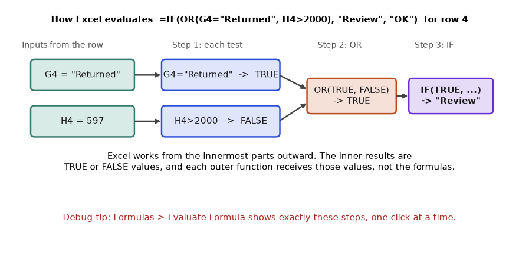
How to read it: Read left to right. The green boxes are the cell values, the blue boxes the two tests, the orange box the OR, and the purple box the final answer. Evaluate Formula in Excel shows these same steps.
Rule 4: copying shifts relative references
When you copy or fill a formula, Excel does not copy its text. It copies its relationship to the original cell. A formula in I2 that says "the cell in the same row, column H" becomes "the cell in the same row, column H" in I3. A $ in front of a column letter or row number freezes that part. The F4 key cycles through the four forms: H2 (both move), $H$2 (neither moves), H$2 (row frozen), $H2 (column frozen).
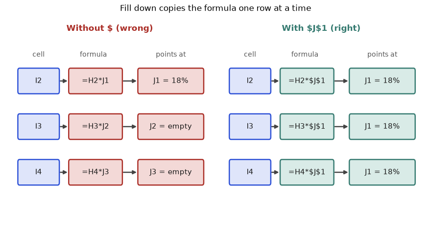
How to read it: The first row is always right, which is why this bug survives a quick glance. Check the last row after filling down.
Problem 2.7.1 Build a commission grid with one formula. Commission rates sit in B1:D1 (2%, 3%, 5%) and sales values sit in A2:A4 (10000, 20000, 50000). Write one formula in B2 that, copied to B2:D4, gives every sales-by-rate commission.
| Idea | Each cell needs the rate from row 1 of its own column and the sales value from column A of its own row. |
|---|---|
| Which part moves | Rate: the row is always 1, the column changes, so freeze the row: B$1. Sales: the column is always A, the row changes, so freeze the column: $A2. |
| Formula | =$A2*B$1 |
| Cell B2 | 10000 * 2% = 200 |
| Cell C3 (copy 1 right, 1 down) | =$A3*C$1, so 20000 * 3% = 600 |
| Cell D4 | =$A4*D$1, so 50000 * 5% = 2500 |
| Check | Row 1 must be 200, 300, 500 (10000 times each rate). The sum of the first column is 80000 * 2% = 1600. |
=$A2*B$1$A2: the dollar sign locks column A. When you copy to the right it stays at A. The row number has no dollar sign, so it follows you down.*: multiply.B$1: the dollar sign locks row 1. Copying down keeps row 1, copying right moves B to C to D.
import numpy as np
sales = np.array([10000, 20000, 50000])
rates = np.array([0.02, 0.03, 0.05])
grid = np.outer(sales, rates)
print(grid)
print("first column sum:", grid[:, 0].sum())[[ 200. 300. 500.]
[ 400. 600. 1000.]
[1000. 1500. 2500.]]
first column sum: 1600.0Line by line: (1) import numpy; (2) the sales values from A2:A4; (3) the three rates from B1:D1; (4) np.outer multiplies every sales value by every rate, the same pattern the mixed reference creates; (5) show the grid; (6) the check from the table. The output matches the hand values 200, 600 and 2500 on the diagonal.
Problem 2.7.2 Predict the result of each formula without a computer, then verify: (a) =2+3*4^2, (b) =-3^2, (c) ="Rs "&1000+500, (d) =(5>3)+(2>9)+(4=4).
| (a) | 4^2 = 16, then 3*16 = 48, then 2+48 = 50. |
|---|---|
| (b) | Unary minus first: (-3)^2 = 9. |
| (c) | + binds tighter than &, so 1000+500 = 1500 first, then join: Rs 1500. |
| (d) | 5>3 is TRUE (1), 2>9 is FALSE (0), 4=4 is TRUE (1). Sum = 2. |
| Check | Python version below. |
print(2 + 3 * 4 ** 2)
print((-3) ** 2)
print("Rs " + str(1000 + 500))
print(int(5 > 3) + int(2 > 9) + int(4 == 4))50
9
Rs 1500
2Each print repeats one hand calculation with the same grouping Excel uses. Notice (c): the number 1500 is joined without a thousands separator, because joining turns the number into plain text. Use TEXT(1500, "#,##0") to get 1,500.
Problem 2.7.3 A colleague types the order number 1001 in one table and the text "1001" in another. =XLOOKUP(A2, F:F, G:G) returns #N/A. Why, and how do you fix it?
| Symptom | #N/A although both cells look identical. |
|---|---|
| Cause | One cell is a number and the other is text. Exact match compares type as well as appearance, so 1001 does not equal "1001". |
| Test | =ISNUMBER(A2) is TRUE, =ISNUMBER(F2) is FALSE. |
| Fix 1 | Convert the lookup column in place: =XLOOKUP(A2, --F2:F9, G2:G9). The double minus turns text digits into numbers. |
| Fix 2 | Convert the other side to text: =XLOOKUP(A2&"", F2:F9, G2:G9). |
| Best fix | Repair the source column once (Data, Text to Columns, Finish) so every later formula works. |
import pandas as pd
a = pd.Series([1001, 1002]) # numbers
b = pd.Series(["1001", "1002"]) # text
print("direct equal :", (a == b).tolist())
print("after to_numeric:", (a == pd.to_numeric(b)).tolist())direct equal : [False, False]
after to_numeric: [True, True]Line by line: (1) import pandas; (2) a column of true numbers; (3) the same digits stored as text; (4) comparing them says False for both, which is why the lookup fails; (5) converting text to numbers first makes the comparison True. Excel's -- trick does what pd.to_numeric does.
ISNUMBER and ISTEXT before you debug anything else.=-2^2 or =A1-B1^2 and expecting maths-class precedence. Excel applies the minus sign before the exponent for a leading negative. Use =-(2^2) when you mean -4.Check yourself. (1) What does the formula in B2 become when copied to C3 if it is =$A2*B$1? Answer: =$A3*C$1. (2) What does =TRUE+1 return? Answer: 2. (3) Why does ="5"+1 work but =SUM(H4) skip a text 5? Answer: an operator forces coercion, a range argument to SUM does not.
2.8 Lookup Mastery: Exact, Approximate, Multi-Criteria and Two-Way
Choosing the right lookup
| Situation | Use | Why |
|---|---|---|
| Exact key, answer to the right or left | XLOOKUP(key, keys, answers, "Not found") | Works in either direction, safe default |
| Old Excel (2016 and earlier) | INDEX(answers, MATCH(key, keys, 0)) | Works everywhere; the 0 means exact |
| Value falls in a band (age, slab, tier) | XLOOKUP(v, starts, labels, , -1) | Exact or next smaller; no sorting needed in default search mode |
| Last match instead of first | XLOOKUP(key, keys, answers, , 0, -1) | Search mode -1 starts from the bottom |
| Several conditions | XLOOKUP(1, (a=x)*(b=y), answers) | Multiplying tests gives 1 only where all hold |
| Row and column crossing | INDEX(grid, MATCH(r, rows, 0), MATCH(c, cols, 0)) | Two MATCHes find the two positions |
| Several answer columns at once | XLOOKUP(key, keys, C2:E9) | A multi-column answer range spills |
Shape 1: exact match, first versus last
A lookup returns the first match it meets reading from the top. When the key repeats (a city appears in many orders), "first" may not be what you want. XLOOKUP lets you reverse the search direction with its sixth argument.
Problem 2.8.1 Which order number belongs to Delhi? Return (a) the first Delhi order and (b) the most recent Delhi order. The key (City) is in column C and the answer (OrderID) is in column A, to its left.
| Key and answer | Key column C2:C9, answer column A2:A9. |
|---|---|
| (a) First match | =XLOOKUP("Delhi", C2:C9, A2:A9). Reading top to bottom, Delhi first appears at row 5, order 1004. |
| (b) Last match | =XLOOKUP("Delhi", C2:C9, A2:A9, , 0, -1). The arguments are: key, keys, answers, not_found (skipped), match_mode 0 (exact), search_mode -1 (from the bottom). The first Delhi from the bottom is row 8, order 1007. |
| Why not VLOOKUP | VLOOKUP can only return columns to the right of the key column. Here the answer is to the left, so it cannot do this at all without rearranging columns. |
| Check | Delhi orders are 1004 (5 Jan) and 1007 (9 Jan). The data is sorted by date, so last means latest. |
=XLOOKUP("Delhi", C2:C9, A2:A9)
=XLOOKUP("Delhi", C2:C9, A2:A9, , 0, -1)- The first formula:
"Delhi"is the key.C2:C9is where to look.A2:A9is what to return from the same position. - The second formula repeats this, with an empty fourth argument (the two commas side by side mean "use the default for not_found").
0says exact match.-1says search from last to first.
import pandas as pd, io
df = pd.read_csv(io.StringIO("""OrderID,Date,City,Category,Qty,Price,Status
1001,2025-01-03,Pune,Fashion,2,499,Delivered
1002,2025-01-03,Mumbai,Electronics,1,1299,Delivered
1003,2025-01-04,Pune,Grocery,3,199,Returned
1004,2025-01-05,Delhi,Fashion,1,799,Delivered
1005,2025-01-06,Mumbai,Grocery,5,90,Cancelled
1006,2025-01-07,Mumbai,Fashion,2,649,Delivered
1007,2025-01-09,Delhi,Electronics,1,2499,Delivered
1008,2025-01-10,Pune,Fashion,4,350,Delivered"""), parse_dates=["Date"])
df["Amount"] = df["Qty"] * df["Price"]
delhi = df.loc[df["City"] == "Delhi", "OrderID"]
print("first:", delhi.iloc[0], " last:", delhi.iloc[-1])first: 1004 last: 1007Line by line: (1) the setup creates the table; (2) keep the OrderIDs where City is Delhi, in table order; (3) the first and last of those are 1004 and 1007, matching the two XLOOKUPs.
Shape 2: several conditions at once
No lookup function takes two keys directly. The trick is to build a column of 1s and 0s where all your conditions are true, then look up the number 1. A TRUE/FALSE test multiplied by another gives 1 only where both are TRUE. The same idea powers FILTER in Section 2.5.
Problem 2.8.2 Find the Amount of the Delivered Electronics order in Mumbai. Then try Delivered Fashion in Pune and say what goes wrong.
| Build the flag array | (C2:C9="Mumbai")*(D2:D9="Electronics")*(G2:G9="Delivered") gives eight 0 or 1 values, one per row. |
|---|---|
| Mumbai Electronics Delivered | Only row 3 (order 1002) has all three. The flags are 0,1,0,0,0,0,0,0. |
| Look up the 1 | =XLOOKUP(1, flags, H2:H9) returns 1299. |
| Pune Fashion Delivered | Rows 2 (order 1001, 998) and 9 (order 1008, 1400) both qualify. |
| What goes wrong | The lookup silently returns only the first, 998. The second order is invisible. This is the duplicate-key danger. |
| Guard | Count the matches first: =SUMPRODUCT(flags) is 2, so the key is not unique. Use FILTER or SUMIFS when more than one row can match. |
=XLOOKUP(1, (C2:C9="Mumbai")*(D2:D9="Electronics")*(G2:G9="Delivered"), H2:H9)
=SUMPRODUCT((C2:C9="Pune")*(D2:D9="Fashion")*(G2:G9="Delivered"))- Each comparison like
C2:C9="Mumbai"produces a column of TRUE/FALSE, one entry per row. - Multiplying the three columns turns TRUE/FALSE into 1/0 and keeps a 1 only where all three are TRUE.
XLOOKUP(1, flags, H2:H9)searches the flags for the first 1 and returns the Amount in the same position.- The second formula adds up the flags, which counts the matching rows.
import pandas as pd, io
df = pd.read_csv(io.StringIO("""OrderID,Date,City,Category,Qty,Price,Status
1001,2025-01-03,Pune,Fashion,2,499,Delivered
1002,2025-01-03,Mumbai,Electronics,1,1299,Delivered
1003,2025-01-04,Pune,Grocery,3,199,Returned
1004,2025-01-05,Delhi,Fashion,1,799,Delivered
1005,2025-01-06,Mumbai,Grocery,5,90,Cancelled
1006,2025-01-07,Mumbai,Fashion,2,649,Delivered
1007,2025-01-09,Delhi,Electronics,1,2499,Delivered
1008,2025-01-10,Pune,Fashion,4,350,Delivered"""), parse_dates=["Date"])
df["Amount"] = df["Qty"] * df["Price"]
m = (df.City == "Mumbai") & (df.Category == "Electronics") & (df.Status == "Delivered")
print("Mumbai Electronics Delivered amounts:", df.loc[m, "Amount"].tolist())
p = (df.City == "Pune") & (df.Category == "Fashion") & (df.Status == "Delivered")
print("Pune Fashion Delivered amounts :", df.loc[p, "Amount"].tolist())
print("match count (SUMPRODUCT of flags) :", int(p.sum()))Mumbai Electronics Delivered amounts: [1299]
Pune Fashion Delivered amounts : [998, 1400]
match count (SUMPRODUCT of flags) : 2The Python & plays the role of Excel's * between tests. One match for Mumbai (safe) and two for Pune (a lookup would show only 998).
Shape 3: row and column crossing (two-way lookup)
Imagine a summary grid with cities down the side and categories across the top. To read the cell where a city row meets a category column, find the row position with one MATCH, the column position with another, and let INDEX fetch the cell.
Problem 2.8.3 The grid in Section 2.9 (see the heat map there) has cities Pune, Mumbai, Delhi in B2:B4 and categories Fashion, Electronics, Grocery in C1:E1, with Delivered revenue in C2:E4. What is the Delivered revenue for Delhi Electronics?
| Row position | MATCH("Delhi", B2:B4, 0) is 3 (third city). |
|---|---|
| Column position | MATCH("Electronics", C1:E1, 0) is 2 (second category). |
| Fetch | =INDEX(C2:E4, 3, 2) reads row 3, column 2 of the grid. |
| Answer | 2499 (order 1007 is Delhi, Electronics, Delivered). |
| Check | =SUMIFS(H2:H9, C2:C9, "Delhi", D2:D9, "Electronics", G2:G9, "Delivered") gives the same 2499. |
=INDEX(C2:E4, MATCH("Delhi", B2:B4, 0), MATCH("Electronics", C1:E1, 0))INDEX(C2:E4, r, c)returns the cell at rowrand columnccounted inside C2:E4, not from the sheet corner.- The first
MATCH(..., 0)givesr; the 0 means exact match. - The second
MATCH(..., 0)givesc.
import pandas as pd, io
df = pd.read_csv(io.StringIO("""OrderID,Date,City,Category,Qty,Price,Status
1001,2025-01-03,Pune,Fashion,2,499,Delivered
1002,2025-01-03,Mumbai,Electronics,1,1299,Delivered
1003,2025-01-04,Pune,Grocery,3,199,Returned
1004,2025-01-05,Delhi,Fashion,1,799,Delivered
1005,2025-01-06,Mumbai,Grocery,5,90,Cancelled
1006,2025-01-07,Mumbai,Fashion,2,649,Delivered
1007,2025-01-09,Delhi,Electronics,1,2499,Delivered
1008,2025-01-10,Pune,Fashion,4,350,Delivered"""), parse_dates=["Date"])
df["Amount"] = df["Qty"] * df["Price"]
grid = df[df.Status == "Delivered"].pivot_table(index="City", columns="Category", values="Amount", aggfunc="sum", fill_value=0)
grid = grid.reindex(index=["Pune", "Mumbai", "Delhi"], columns=["Fashion", "Electronics", "Grocery"], fill_value=0)
print(grid)
print("Delhi / Electronics:", grid.loc["Delhi", "Electronics"])Category Fashion Electronics Grocery
City
Pune 2398 0 0
Mumbai 1298 1299 0
Delhi 799 2499 0
Delhi / Electronics: 2499Shape 4: approximate match for bands
Approximate match answers "which band is this number in?". The band table lists the start of each band. A value belongs to the band with the largest start that is not above it. In XLOOKUP that is match mode -1. In VLOOKUP it is the last argument TRUE, which also silently assumes the starts are sorted ascending.
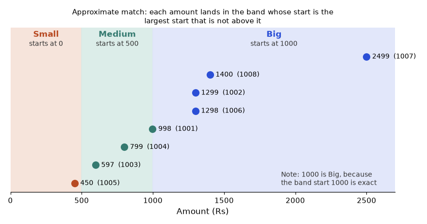
How to read it: The vertical band edges are the band starts from the table. A point on or to the right of an edge takes that band, so exactly 1000 would be Big.
Problem 2.8.4 Label all eight orders as Small, Medium or Big with starts 0, 500, 1000, then show what happens when the band table is unsorted or you use a VLOOKUP-style approximate match on an unsorted text list.
| Band table | Starts in P2:P4 = 0, 500, 1000; labels in Q2:Q4 = Small, Medium, Big. |
|---|---|
| Formula | =XLOOKUP(H2, $P$2:$P$4, $Q$2:$Q$4, , -1) filled down. |
| Row by row | 998: largest start not above it is 500, Medium. 1299: 1000, Big. 597: 500, Medium. 799: 500, Medium. 450: 0, Small. 1298: Big. 2499: Big. 1400: Big. |
| Edge cases | 1000 exactly is Big (an exact hit counts). 499.99 is Small. A negative number has no start below it, so XLOOKUP returns #N/A (include a start of a very low number if negatives are possible). |
| Unsorted trap | Approximate VLOOKUP uses binary search, which halves the list each step and assumes order. On an unsorted list it can land on the wrong row without any warning. |
import numpy as np
starts = np.array([0, 500, 1000])
labels = np.array(["Small", "Medium", "Big"])
amounts = [998, 1299, 597, 799, 450, 1298, 2499, 1400, 1000, 499.99]
pos = np.searchsorted(starts, amounts, side="right") - 1
print(list(zip(amounts, labels[pos].tolist())))
def approx_binary(keys, key):
"""What approximate VLOOKUP assumes: keys sorted ascending, binary search."""
lo, hi, found = 0, len(keys) - 1, None
while lo <= hi:
mid = (lo + hi) // 2
if keys[mid] <= key:
found, lo = mid, mid + 1
else:
hi = mid - 1
return found
tax_keys = ["Fashion", "Electronics", "Grocery"] # NOT sorted
tax_rate = [0.12, 0.18, 0.05]
for k in tax_keys:
i = approx_binary(tax_keys, k)
print(k, "->", tax_rate[i])[(998, 'Medium'), (1299, 'Big'), (597, 'Medium'), (799, 'Medium'), (450, 'Small'), (1298, 'Big'), (2499, 'Big'), (1400, 'Big'), (1000, 'Big'), (499.99, 'Small')]
Fashion -> 0.18
Electronics -> 0.18
Grocery -> 0.05Line by line: (1) numpy import; (2) and (3) the band starts and labels; (4) a list of test amounts including the two edge cases; (5) searchsorted(..., side="right") - 1 finds the last start not above each amount, which is the approximate match rule; (6) print each pair, showing 1000 as Big and 499.99 as Small; (7) a small function that does a binary search like approximate VLOOKUP: look at the middle, keep it if it is not above the key and search the right half, otherwise search the left half; (8) text keys that are not in alphabetical order; (9) the loop looks up each key. Fashion comes back with 0.18 (the Electronics rate), which is the silent wrong answer from Problem 5 of the practice set. Electronics and Grocery happen to work, which is why this bug survives testing.
0, or FALSE in VLOOKUP). Use approximate only when you really have bands, and then sort the starts ascending so every version of Excel and Google Sheets agrees.Shape 5: wildcards and several answer columns
Wildcards let a key match a pattern: * stands for any run of characters (including none), ? for exactly one character, and ~ in front of either one means the literal symbol. They work in SUMIFS, COUNTIFS and MATCH with 0, in VLOOKUP exact mode, and in XLOOKUP only when you set match mode 2.
Problem 2.8.5 (a) Count orders whose city starts with M. (b) Find the tax rate of any category that starts with "Ele". (c) Return the city, category and quantity of order 1004 in one formula.
| (a) | =COUNTIF(C2:C9, "M*"). Mumbai appears in rows 3, 6 and 7 of the sheet (orders 1002, 1005, 1006). Answer 3. |
|---|---|
| (b) | =XLOOKUP("Ele*", L2:L4, M2:M4, "none", 2). Mode 2 turns on wildcards. Electronics matches. Answer 18%. |
| (c) | =XLOOKUP(1004, A2:A9, C2:E9). The answer range has three columns, so the result spills across three cells: Delhi, Fashion, 1. |
| Careful | Without mode 2, XLOOKUP treats * as an ordinary character and returns "none". |
| Check | Scan the table: three Mumbai orders; Electronics is the only category starting with Ele; order 1004 is Delhi, Fashion, quantity 1. |
=COUNTIF(C2:C9, "M*")
=XLOOKUP("Ele*", L2:L4, M2:M4, "none", 2)
=XLOOKUP(1004, A2:A9, C2:E9)import pandas as pd, io
df = pd.read_csv(io.StringIO("""OrderID,Date,City,Category,Qty,Price,Status
1001,2025-01-03,Pune,Fashion,2,499,Delivered
1002,2025-01-03,Mumbai,Electronics,1,1299,Delivered
1003,2025-01-04,Pune,Grocery,3,199,Returned
1004,2025-01-05,Delhi,Fashion,1,799,Delivered
1005,2025-01-06,Mumbai,Grocery,5,90,Cancelled
1006,2025-01-07,Mumbai,Fashion,2,649,Delivered
1007,2025-01-09,Delhi,Electronics,1,2499,Delivered
1008,2025-01-10,Pune,Fashion,4,350,Delivered"""), parse_dates=["Date"])
df["Amount"] = df["Qty"] * df["Price"]
print("(a)", int(df["City"].str.startswith("M").sum()))
tax = {"Fashion": 0.12, "Electronics": 0.18, "Grocery": 0.05}
print("(b)", [v for k, v in tax.items() if k.startswith("Ele")])
print("(c)", df.loc[df.OrderID == 1004, ["City", "Category", "Qty"]].values.tolist())(a) 3
(b) [0.18]
(c) [['Delhi', 'Fashion', 1]]Duplicate keys: the silent killer
When a lookup table has the same key twice, every lookup returns the first one and ignores the other. No error appears. The defence is to count how many times the key appears and refuse to answer if the count is not 1.
Problem 2.8.6 Someone adds a second Fashion row to the Tax table (12% and later 15%). How many orders are affected, and how do you make the sheet shout instead of whispering?
| Tax table now | Fashion 12%, Electronics 18%, Grocery 5%, Fashion 15% (L2:M5). |
|---|---|
| What XLOOKUP does | XLOOKUP("Fashion", ...) returns 12% for every Fashion order and never mentions 15%. |
| Affected orders | Fashion appears in 4 orders (1001, 1004, 1006, 1008), all of them quietly use 12%. |
| Guard formula | =IF(COUNTIF($L$2:$L$5, D2)<>1, "CHECK KEY", XLOOKUP(D2, $L$2:$L$5, $M$2:$M$5)) |
| Result | The four Fashion rows show CHECK KEY; the others show their rate. |
| Find the culprit | =UNIQUE(L2:L5, , TRUE) lists keys that appear exactly once. Or filter with =FILTER(L2:L5, COUNTIF(L2:L5, L2:L5)>1). |
COUNTIF($L$2:$L$5, D2)counts how many times this order's category appears in the key column.<>1is true when the count is 0 (missing) or 2 or more (duplicated).- Only when the count is exactly 1 is the lookup allowed to run.
import pandas as pd, io
df = pd.read_csv(io.StringIO("""OrderID,Date,City,Category,Qty,Price,Status
1001,2025-01-03,Pune,Fashion,2,499,Delivered
1002,2025-01-03,Mumbai,Electronics,1,1299,Delivered
1003,2025-01-04,Pune,Grocery,3,199,Returned
1004,2025-01-05,Delhi,Fashion,1,799,Delivered
1005,2025-01-06,Mumbai,Grocery,5,90,Cancelled
1006,2025-01-07,Mumbai,Fashion,2,649,Delivered
1007,2025-01-09,Delhi,Electronics,1,2499,Delivered
1008,2025-01-10,Pune,Fashion,4,350,Delivered"""), parse_dates=["Date"])
df["Amount"] = df["Qty"] * df["Price"]
tax = pd.DataFrame({"Category": ["Fashion", "Electronics", "Grocery", "Fashion"], "Rate": [0.12, 0.18, 0.05, 0.15]})
counts = tax["Category"].value_counts()
df["KeyCount"] = df["Category"].map(counts)
df["Check"] = df["KeyCount"].map(lambda c: "OK" if c == 1 else "CHECK KEY")
print(df[["OrderID", "Category", "KeyCount", "Check"]].to_string(index=False))
print("affected:", int((df["Check"] == "CHECK KEY").sum())) OrderID Category KeyCount Check
1001 Fashion 2 CHECK KEY
1002 Electronics 1 OK
1003 Grocery 1 OK
1004 Fashion 2 CHECK KEY
1005 Grocery 1 OK
1006 Fashion 2 CHECK KEY
1007 Electronics 1 OK
1008 Fashion 2 CHECK KEY
affected: 4VLOOKUP(key, table, 3, FALSE). Insert one column inside the table and "3" now points at the wrong data, with no error. XLOOKUP returns a range, so it follows the column wherever it moves.VLOOKUP(key, table, 2) is approximate by default. On unsorted keys it can return a wrong row (shown in Problem 2.8.4), and it returns #N/A for a key below the smallest. Always write FALSE or 0.ISNUMBER, LEN and TRIM before concluding the key is missing.Check yourself. (1) You want the latest amount for a customer in a table sorted oldest first. Which XLOOKUP argument do you change? Answer: the search mode, set to -1. (2) Why can XLOOKUP(998, starts, labels, , -1) work on unsorted starts while approximate VLOOKUP may not? Answer: XLOOKUP's default search is a linear scan of every start; VLOOKUP's approximate mode is a binary search that assumes sorted order. (3) A lookup that should find 3 rows returns 1. What must you use instead? Answer: FILTER or SUMIFS.
2.9 Conditional Totals, Shares, Ranks and Weighted Averages in Depth
The criteria language
The second part of every pair is the criterion. It is either a plain value (matches equal) or a text starting with an operator. To use a cell's value after an operator, join them with &.
| You want | Criterion | Notes |
|---|---|---|
| Equal to text | "Delivered" | Case does not matter |
| Not equal to text | "<>Returned" | Also matches blanks |
| Greater than a number | ">1000" | In quotes |
| Greater than a cell value | ">"&K1 | Join operator and cell |
| Between two numbers | two pairs on the same range: ">=500", "<=1000" | A range can appear twice |
| Date on or after | ">="&DATE(2025,1,5) | Never type the date as text |
| Starts with, ends with, contains | "P*", "*i", "*ar*" | Wildcards |
| Blank / not blank | "" and "<>" | "<>" means not empty |
| Exactly the characters * or ? | "~*" | Tilde escapes a wildcard |
All condition ranges and the sum range must have the same size and shape. If H2:H9 is paired with G2:G8, SUMIFS returns #VALUE!.
Problem 2.9.1 Delivered revenue for orders placed from 5 January to 9 January 2025, inclusive.
| Conditions | Status is Delivered; Date at least 5 Jan; Date at most 9 Jan. |
|---|---|
| Formula | =SUMIFS(H2:H9, G2:G9, "Delivered", B2:B9, ">="&DATE(2025,1,5), B2:B9, "<="&DATE(2025,1,9)) |
| Rows in the window | 1004 (5 Jan, 799, Delivered), 1005 (6 Jan, Cancelled, excluded), 1006 (7 Jan, 1298), 1007 (9 Jan, 2499). |
| Add | 799 + 1298 + 2499 = 4596. |
| Check | Total 8293 minus orders outside the window: 998 + 1299 (3 Jan) and 1400 (10 Jan) = 3697. 8293 - 3697 = 4596. |
=SUMIFS(H2:H9, G2:G9, "Delivered", B2:B9, ">="&DATE(2025,1,5), B2:B9, "<="&DATE(2025,1,9))H2:H9is the range to add up.G2:G9, "Delivered"is the first pair: keep rows whose Status is Delivered.B2:B9, ">="&DATE(2025,1,5)is the second pair: keep dates on or after 5 Jan. The&glues the operator text to the date's serial number.- The third pair repeats the date range with
<=for the upper limit. All pairs must be true for a row to count.
import pandas as pd, io
df = pd.read_csv(io.StringIO("""OrderID,Date,City,Category,Qty,Price,Status
1001,2025-01-03,Pune,Fashion,2,499,Delivered
1002,2025-01-03,Mumbai,Electronics,1,1299,Delivered
1003,2025-01-04,Pune,Grocery,3,199,Returned
1004,2025-01-05,Delhi,Fashion,1,799,Delivered
1005,2025-01-06,Mumbai,Grocery,5,90,Cancelled
1006,2025-01-07,Mumbai,Fashion,2,649,Delivered
1007,2025-01-09,Delhi,Electronics,1,2499,Delivered
1008,2025-01-10,Pune,Fashion,4,350,Delivered"""), parse_dates=["Date"])
df["Amount"] = df["Qty"] * df["Price"]
w = (df.Status == "Delivered") & (df.Date >= "2025-01-05") & (df.Date <= "2025-01-09")
print(df.loc[w, ["OrderID", "Date", "Amount"]].to_string(index=False))
print("total:", df.loc[w, "Amount"].sum()) OrderID Date Amount
1004 2025-01-05 799
1006 2025-01-07 1298
1007 2025-01-09 2499
total: 4596NOT and OR conditions
Each pair is an AND. For "not", use "<>value". For OR on one column, add separate SUMIFS together, or pass a constant list {"Pune","Delhi"} and wrap in SUM.
Problem 2.9.2 (a) Delivered revenue outside Pune. (b) Delivered revenue in Pune or Delhi.
| (a) Formula | =SUMIFS(H2:H9, G2:G9, "Delivered", C2:C9, "<>Pune") |
|---|---|
| (a) Rows | Delivered and not Pune: 1002 (1299), 1004 (799), 1006 (1298), 1007 (2499). Sum 5895. |
| (b) Formula | =SUM(SUMIFS(H2:H9, G2:G9, "Delivered", C2:C9, {"Pune","Delhi"})) |
| (b) How it works | The list makes SUMIFS run twice, once per city, and return two numbers. SUM adds them: Pune 998 + 1400 = 2398; Delhi 799 + 2499 = 3298; total 5696. |
| Check | 5895 (not Pune) plus Pune's 2398 equals 8293. And 5696 is Pune + Delhi: 8293 minus Mumbai's 2597 is 5696. |
import pandas as pd, io
df = pd.read_csv(io.StringIO("""OrderID,Date,City,Category,Qty,Price,Status
1001,2025-01-03,Pune,Fashion,2,499,Delivered
1002,2025-01-03,Mumbai,Electronics,1,1299,Delivered
1003,2025-01-04,Pune,Grocery,3,199,Returned
1004,2025-01-05,Delhi,Fashion,1,799,Delivered
1005,2025-01-06,Mumbai,Grocery,5,90,Cancelled
1006,2025-01-07,Mumbai,Fashion,2,649,Delivered
1007,2025-01-09,Delhi,Electronics,1,2499,Delivered
1008,2025-01-10,Pune,Fashion,4,350,Delivered"""), parse_dates=["Date"])
df["Amount"] = df["Qty"] * df["Price"]
d = df[df.Status == "Delivered"]
print("(a) not Pune :", d.loc[d.City != "Pune", "Amount"].sum())
print("(b) Pune or Delhi :", d.loc[d.City.isin(["Pune", "Delhi"]), "Amount"].sum())
print("by city :", d.groupby("City")["Amount"].sum().to_dict())(a) not Pune : 5895
(b) Pune or Delhi : 5696
by city : {'Delhi': 3298, 'Mumbai': 2597, 'Pune': 2398}Shares, running totals and ranks
A total alone rarely helps. Managers ask "what share is that?" and "how is it building up?" and "who is first?". Each has a standard formula.
| Question | Formula pattern | Reading it |
|---|---|---|
| Share of total | =B2/SUM($B$2:$B$4) | Freeze the total range with $ so every row divides by the same total |
| Running total | =SUM($H$2:H2) | The start is frozen, the end moves down, so each row adds one more |
| Rank, biggest = 1 | =RANK.EQ(x, range) | Ties share a rank and the next rank is skipped |
| Rank with ties broken | =RANK.EQ(x, $E$2:$E$9) + COUNTIF($E$2:E2, x) - 1 | The second COUNTIF part adds 1 for each earlier tie |
| Top-N value | =LARGE(range, n) | n = 1 is the maximum |
Problem 2.9.3 Compute each city's share of Delivered revenue, the running total of Amount in date order, and a unique rank (1 to 8) of the orders by quantity, breaking ties by position.
| City totals | Pune 2398, Mumbai 2597, Delhi 3298. Total 8293. |
|---|---|
| Shares | 2398/8293 = 28.9%, 2597/8293 = 31.3%, 3298/8293 = 39.8%. They sum to 100.0%. |
| Running total of Amount | 998, 2297, 2894, 3693, 4143, 5441, 7940, 9340 (all rows; the last equals the grand total). |
| RANK.EQ on Qty | Quantities 2,1,3,1,5,2,1,4. Largest is 5 (rank 1), then 4 (2), 3 (3), then the two 2s share rank 4, and the three 1s share rank 6. |
| Tie-break | Adding COUNTIF($E$2:E2, E2) - 1 gives the second 2 rank 5 and the 1s ranks 6, 7, 8. Every rank is now unique. |
| Check | Unique ranks must be exactly 1 to 8; the final running total must equal SUM(H2:H9) = 9340. |
=B2/SUM($B$2:$B$4)
=SUM($H$2:H2)
=RANK.EQ(E2, $E$2:$E$9) + COUNTIF($E$2:E2, E2) - 1B2/SUM($B$2:$B$4): divide this city's total by the sum of all three, frozen so the copy-down keeps the same denominator.SUM($H$2:H2): in row 2 it is H2 only; in row 3, H2:H3 and so on. The anchored start makes the range grow.RANK.EQ(E2, $E$2:$E$9): the position of this quantity in the whole list. Ties share the best rank.COUNTIF($E$2:E2, E2) - 1: how many times this quantity has already appeared above this row. The first occurrence adds 0, the second adds 1, the third adds 2.
import pandas as pd, io
df = pd.read_csv(io.StringIO("""OrderID,Date,City,Category,Qty,Price,Status
1001,2025-01-03,Pune,Fashion,2,499,Delivered
1002,2025-01-03,Mumbai,Electronics,1,1299,Delivered
1003,2025-01-04,Pune,Grocery,3,199,Returned
1004,2025-01-05,Delhi,Fashion,1,799,Delivered
1005,2025-01-06,Mumbai,Grocery,5,90,Cancelled
1006,2025-01-07,Mumbai,Fashion,2,649,Delivered
1007,2025-01-09,Delhi,Electronics,1,2499,Delivered
1008,2025-01-10,Pune,Fashion,4,350,Delivered"""), parse_dates=["Date"])
df["Amount"] = df["Qty"] * df["Price"]
d = df[df.Status == "Delivered"].groupby("City")["Amount"].sum()
print((d / d.sum()).round(3).to_dict(), round((d / d.sum()).sum(), 3))
print("running:", df["Amount"].cumsum().tolist())
rank_eq = df["Qty"].rank(method="min", ascending=False).astype(int)
tie = df.groupby("Qty").cumcount()
print("RANK.EQ :", rank_eq.tolist())
print("unique :", (rank_eq + tie).tolist()){'Delhi': 0.398, 'Mumbai': 0.313, 'Pune': 0.289} 1.0
running: [998, 2297, 2894, 3693, 4143, 5441, 7940, 9340]
RANK.EQ : [4, 6, 3, 6, 1, 4, 6, 2]
unique : [4, 6, 3, 7, 1, 5, 8, 2]Line by line: (1) setup; (2) group the Delivered amounts by city; (3) divide by the total to get shares, then show they sum to 1; (4) cumsum is the running total; (5) rank(method="min", ascending=False) is RANK.EQ: ties get the best rank; (6) cumcount counts earlier rows with the same quantity, the same job as the COUNTIF part. The printed lists match the hand values.
Weighted averages: the average that tells the truth
A simple average treats every row as equally important. If row 1 is a 1-unit order and row 5 is a 5-unit order, the 5-unit order should count five times. The weighted average is total of (weight times value) divided by total of weights. In Excel that is SUMPRODUCT over SUM.
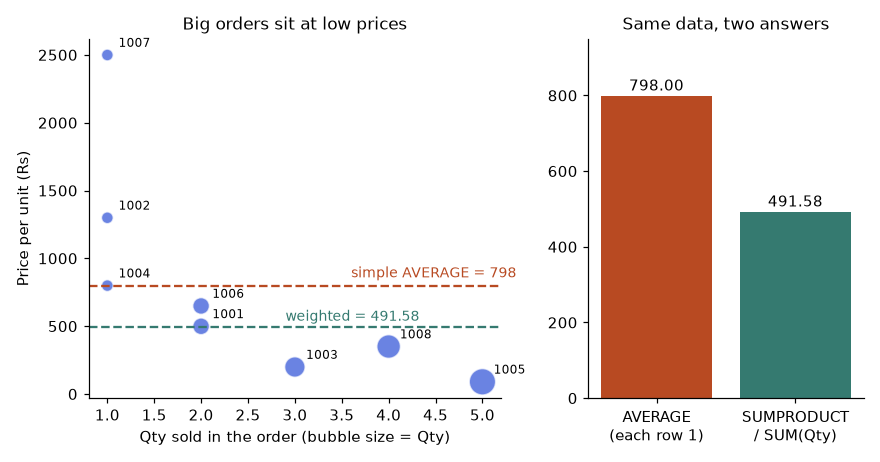
How to read it: The simple average (798) is pulled up by the few expensive single-unit orders. The weighted average (491.58) is the real average price a unit sold at.
Problem 2.9.4 Average selling price per unit for Fashion orders only (all statuses) and for Delivered orders only, using SUMPRODUCT, then explain the gap against a simple average of the Price column.
| Fashion rows | 1001 (2 x 499), 1004 (1 x 799), 1006 (2 x 649), 1008 (4 x 350). |
|---|---|
| Weighted, all Fashion | Revenue = 998 + 799 + 1298 + 1400 = 4495; units = 2 + 1 + 2 + 4 = 9; 4495 / 9 = 499.44. |
| Formula | =SUMPRODUCT((D2:D9="Fashion")*E2:E9*F2:F9) / SUMIFS(E2:E9, D2:D9, "Fashion") |
| Delivered only | All four Fashion orders are Delivered, so the answer is the same here, 499.44. |
| Simple average | AVERAGEIFS(F2:F9, D2:D9, "Fashion") = (499 + 799 + 649 + 350)/4 = 574.25. |
| Why they differ | The cheapest item (350) sold the most units (4), so the true unit price is lower than the average of the four prices. |
=SUMPRODUCT((D2:D9="Fashion")*E2:E9*F2:F9) / SUMIFS(E2:E9, D2:D9, "Fashion")(D2:D9="Fashion")is eight TRUE/FALSE values; multiplied by numbers they become 1 and 0.*E2:E9*F2:F9multiplies quantity by price per row, so non-Fashion rows become 0.SUMPRODUCTadds the eight products: the Fashion revenue 4495.- The division by
SUMIFS(E2:E9, ...)uses total Fashion units, 9, as the weight total.
import pandas as pd, io
df = pd.read_csv(io.StringIO("""OrderID,Date,City,Category,Qty,Price,Status
1001,2025-01-03,Pune,Fashion,2,499,Delivered
1002,2025-01-03,Mumbai,Electronics,1,1299,Delivered
1003,2025-01-04,Pune,Grocery,3,199,Returned
1004,2025-01-05,Delhi,Fashion,1,799,Delivered
1005,2025-01-06,Mumbai,Grocery,5,90,Cancelled
1006,2025-01-07,Mumbai,Fashion,2,649,Delivered
1007,2025-01-09,Delhi,Electronics,1,2499,Delivered
1008,2025-01-10,Pune,Fashion,4,350,Delivered"""), parse_dates=["Date"])
df["Amount"] = df["Qty"] * df["Price"]
f = df[df.Category == "Fashion"]
print("weighted:", round((f.Qty * f.Price).sum() / f.Qty.sum(), 2))
print("simple :", f.Price.mean())weighted: 499.44
simple : 574.25A fixed report grid from one formula
A report that never changes shape (cities down, categories across) can be built with one SUMIFS written with mixed references: =SUMIFS($H$2:$H$9, $C$2:$C$9, $B2, $D$2:$D$9, C$1, $G$2:$G$9, "Delivered"). The $B2 and C$1 use the idea from Problem 2.7.1.
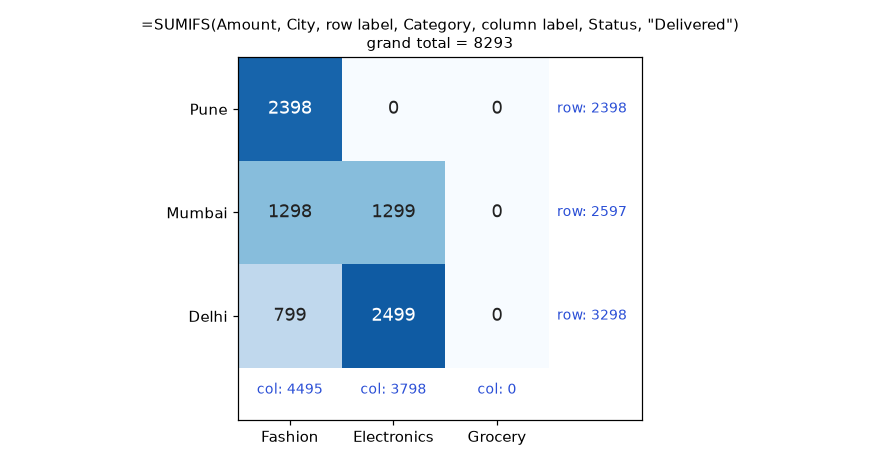
How to read it: Darker cells hold more revenue. Always check that the row totals add to the same grand total as the column totals; if not, a city or category is missing from the grid labels.
Problem 2.9.5 Build the grid once, then check it three ways: row totals, column totals and the independent SUMIFS total.
| Formula in C2 | =SUMIFS($H$2:$H$9, $C$2:$C$9, $B2, $D$2:$D$9, C$1, $G$2:$G$9, "Delivered") |
|---|---|
| Pune, Fashion | 1001 (998) + 1008 (1400) = 2398 |
| Mumbai, Fashion / Electronics | 1298 / 1299 |
| Delhi, Fashion / Electronics | 799 / 2499 |
| Grocery column | 0 because no Grocery order was Delivered |
| Check 1 | Rows: 2398 + 2597 + 3298 = 8293 |
| Check 2 | Columns: 4495 + 3798 + 0 = 8293 |
| Check 3 | =SUMIFS(H2:H9, G2:G9, "Delivered") = 8293 |
The three-way agreement is the audit. A missing city label would break the agreement and show you the gap immediately. (The grid values were printed by the pandas block in Problem 2.8.3.)
Problem 2.9.6 How many distinct cities had at least one Delivered order, and what is the date of the latest order for each city?
| Distinct cities | =COUNTA(UNIQUE(FILTER(C2:C9, G2:G9="Delivered"))). Delivered cities: Pune, Mumbai, Delhi. Result 3. |
|---|---|
| Older Excel | =SUMPRODUCT((G2:G9="Delivered")/COUNTIFS(C2:C9, C2:C9, G2:G9, G2:G9)). Each row contributes 1 divided by the number of rows sharing its (city, status), so every group adds up to exactly 1. |
| Latest date per city | =MAXIFS(B2:B9, C2:C9, "Pune"), then the same with Mumbai and Delhi. |
| Results | Pune 10 Jan, Mumbai 7 Jan, Delhi 9 Jan 2025. |
| Check | Pune orders are dated 3, 4 and 10 Jan; Mumbai 3, 6 and 7 Jan; Delhi 5 and 9 Jan. |
=COUNTA(UNIQUE(FILTER(C2:C9, G2:G9="Delivered")))
=SUMPRODUCT((G2:G9="Delivered")/COUNTIFS(C2:C9, C2:C9, G2:G9, G2:G9))
=MAXIFS(B2:B9, C2:C9, "Pune")import pandas as pd, io
df = pd.read_csv(io.StringIO("""OrderID,Date,City,Category,Qty,Price,Status
1001,2025-01-03,Pune,Fashion,2,499,Delivered
1002,2025-01-03,Mumbai,Electronics,1,1299,Delivered
1003,2025-01-04,Pune,Grocery,3,199,Returned
1004,2025-01-05,Delhi,Fashion,1,799,Delivered
1005,2025-01-06,Mumbai,Grocery,5,90,Cancelled
1006,2025-01-07,Mumbai,Fashion,2,649,Delivered
1007,2025-01-09,Delhi,Electronics,1,2499,Delivered
1008,2025-01-10,Pune,Fashion,4,350,Delivered"""), parse_dates=["Date"])
df["Amount"] = df["Qty"] * df["Price"]
d = df[df.Status == "Delivered"]
print("distinct delivered cities:", d.City.nunique())
groups = df.groupby(["City", "Status"])["OrderID"].transform("count")
print("old formula:", round(((df.Status == "Delivered") / groups).sum(), 6))
print(df.groupby("City")["Date"].max().dt.strftime("%d %b").to_dict())distinct delivered cities: 3
old formula: 3.0
{'Delhi': '09 Jan', 'Mumbai': '07 Jan', 'Pune': '10 Jan'}The second print reproduces the older formula: each Delivered row contributes 1 divided by the size of its (city, status) group. The sum is 3, one per Delivered city. Both ways agree.
COUNTIF or SUMIF on a range with different size than the sum range, or typing a date criterion as text like ">=5/1/2025". The text is read in your regional date order (5 Jan or 1 May), and the answer changes between computers. Build dates with DATE() and join with &."<>Returned" also matches blank Status cells, so an empty row counts as "not returned". If blanks should not count, add another pair such as G2:G9, "<>" to demand a non-empty status.Check yourself. (1) What does SUM($H$2:H2) do when filled down? Answer: it builds a running total because only the end of the range moves. (2) Why is the average of city averages wrong? Answer: it gives each city equal weight regardless of its number of orders. (3) Write the criterion for dates strictly after the date in K1. Answer: ">"&K1.
2.10 Text and Dates in Depth: Cleaning Pipelines and Calendar Logic
A cleaning pipeline
| Problem in the data | Fix | Example |
|---|---|---|
| Leading, trailing or repeated spaces | TRIM(x) | " a b " becomes "a b" |
| Non-breaking space (from web or PDF, code 160) | SUBSTITUTE(x, CHAR(160), " ") | TRIM alone does not remove it |
| Invisible control characters | CLEAN(x) | Removes codes 0 to 31 |
| Mixed case | PROPER, UPPER, LOWER | "mUMBAI" becomes "Mumbai" |
| Currency symbols and thousands commas | SUBSTITUTE then VALUE | "Rs 1,299" becomes 1299 |
Accounting negatives (450) | IF(LEFT(x)="(", -VALUE(...), VALUE(x)) | "(450)" becomes -450 |
| Text digits | VALUE(x) or --x | "0042" becomes 42 |
Problem 2.10.1 A City column contains " pune", "MUMBAI ", "Delhi" followed by a non-breaking space (code 160), and "Pune ". Clean it into one consistent label, and show why TRIM alone fails on the non-breaking space.
| Step 1: remove the hidden space | =SUBSTITUTE(A2, CHAR(160), " ") turns code 160 into an ordinary space. |
|---|---|
| Step 2: trim | =TRIM(...) strips leading and trailing spaces and collapses repeats to one. |
| Step 3: case | =PROPER(...) capitalises each word. |
| Full formula | =PROPER(TRIM(SUBSTITUTE(A2, CHAR(160), " "))) |
| Results | Pune, Mumbai, Delhi, Pune. |
| Why TRIM alone fails | TRIM only knows the ordinary space (code 32). "Delhi" & CHAR(160) keeps length 6 after TRIM and no longer equals "Delhi", so a lookup of "Delhi" fails. |
| Check | After cleaning, =LEN(B2) must equal the visible letters: 4, 6, 5, 4. Distinct count of the cleaned column is 3. |
=PROPER(TRIM(SUBSTITUTE(A2, CHAR(160), " ")))- Excel works from the innermost bracket:
SUBSTITUTEruns first and replaces every non-breaking space with a normal space. TRIMreceives that text and removes the now-ordinary leading and trailing spaces.PROPERreceives the trimmed text and fixes the case.
import re
raw = [" pune", "MUMBAI ", "Delhi\u00a0", "Pune "]
def excel_trim(s):
return re.sub(" +", " ", s.strip(" ")) # only the ordinary space, like Excel TRIM
for r in raw:
only_trim = excel_trim(r)
full = excel_trim(r.replace("\u00a0", " ")).title()
print(repr(r), "| TRIM only:", repr(only_trim), len(only_trim), "| full:", repr(full), len(full))
print("distinct after cleaning:", len({excel_trim(r.replace("\u00a0", " ")).title() for r in raw}))' pune' | TRIM only: 'pune' 4 | full: 'Pune' 4
'MUMBAI ' | TRIM only: 'MUMBAI' 6 | full: 'Mumbai' 6
'Delhi\xa0' | TRIM only: 'Delhi\xa0' 6 | full: 'Delhi' 5
'Pune ' | TRIM only: 'Pune' 4 | full: 'Pune' 4
distinct after cleaning: 3Line by line: (1) regular-expression module; (2) the four dirty values, with \u00a0 the non-breaking space; (3) and (4) a function that strips only code 32 spaces and collapses repeats, which is exactly what TRIM does; (5) loop over the values; (6) the result of TRIM alone; (7) the full pipeline replaces code 160 first; (8) print both and their lengths; (9) count distinct cleaned labels. Delhi stays at length 6 under TRIM alone but becomes 5 after the full pipeline.
Problem 2.10.2 Convert the text amounts "Rs 1,299.50", "(450)" and " 2,000 " into real numbers (1299.5, -450, 2000).
| Strip decoration | =SUBSTITUTE(SUBSTITUTE(SUBSTITUTE(SUBSTITUTE(A2,"Rs",""),",",""),"(",""),")","") removes Rs, commas and brackets. |
|---|---|
| Trim and convert | Wrap in VALUE(TRIM(...)). |
| Sign | Test whether the original text starts with a bracket: LEFT(TRIM(A2))="(". If yes multiply by -1. |
| Full formula | =VALUE(TRIM(SUBSTITUTE(SUBSTITUTE(SUBSTITUTE(SUBSTITUTE(A2,"Rs",""),",",""),"(",""),")","")))*IF(LEFT(TRIM(A2))="(",-1,1) |
| Row results | 1299.5, -450, 2000 |
| Check | =ISNUMBER(B2) is TRUE on all three; =SUM(B2:B4) = 2849.5. |
- The four nested
SUBSTITUTEcalls each remove one kind of symbol, innermost first (Rs, then commas, then the two bracket characters). TRIMremoves leftover spaces such as the one after "Rs".VALUEconverts the digit text to a number.- The
IFmultiplier is -1 when the text begins with an opening bracket (accounting style for negative) and 1 otherwise.
import re
def to_number(t):
neg = t.strip().startswith("(")
clean = re.sub(r"[Rs,()\s]", "", t)
return -float(clean) if neg else float(clean)
vals = [to_number(t) for t in ["Rs 1,299.50", "(450)", " 2,000 "]]
print(vals, sum(vals))[1299.5, -450.0, 2000.0] 2849.5Splitting text
The most common split is "take the part before or after a marker". Two functions do the work: FIND (where is the marker?) and MID/LEFT/RIGHT (cut there). In new Excel TEXTBEFORE and TEXTAFTER do it in one step.
Problem 2.10.3 (a) From the customer text "Rao, Asha" produce "Asha Rao". (b) From "asha.rao@shopmail.in" extract the domain shopmail.in. (c) From the order code "PUN-2025-0042" extract the middle part by splitting at both dashes.
| (a) Find the comma | FIND(",", A2) is 4 in "Rao, Asha". |
|---|---|
| (a) Left part | LEFT(A2, 4-1) is Rao. |
| (a) Right part | TRIM(MID(A2, 4+1, 99)) is Asha (99 is "more than enough characters"). |
| (a) Join | =TRIM(MID(A2, FIND(",",A2)+1, 99)) & " " & LEFT(A2, FIND(",",A2)-1) gives Asha Rao. |
| (b) Domain | =MID(A2, FIND("@",A2)+1, 99) gives shopmail.in. |
| (c) Second dash | FIND("-", A2, FIND("-",A2)+1) starts the second search just after the first dash, giving 9. Year is MID(A2, 5, 9-5) = 2025. |
| (c) New Excel | =TEXTBEFORE(TEXTAFTER(A2,"-"),"-") gives 2025; =TEXTSPLIT(A2,"-") spills all three parts. |
| Check | Count positions in "Rao, Asha": R1 a2 o3 ,4 space5 A6. Position 4 is the comma. In the code, P1 U2 N3 -4 2 5 0 6 2 7 5 8 -9: second dash at 9. |
name = "Rao, Asha"
c = name.find(",") + 1 # Excel FIND is 1-based
print("(a)", name[c:].strip() + " " + name[:c - 1])
print("(b)", "asha.rao@shopmail.in".split("@")[1])
code = "PUN-2025-0042"
d1 = code.find("-") + 1
d2 = code.find("-", d1) + 1
print("(c) dash positions", d1, d2, "year:", code[d1:d2 - 1])
print("(c) split:", code.split("-"))(a) Asha Rao
(b) shopmail.in
(c) dash positions 4 9 year: 2025
(c) split: ['PUN', '2025', '0042']Python counts positions from 0 while Excel counts from 1, so the code adds 1 to find to compare. The printed dash positions 4 and 9 and the year 2025 match the hand count.
Dates are numbers: serial numbers and times
Excel stores each date as a count of days (1 = 1 January 1900) and each time as a fraction of a day. 12:00 noon is 0.5, 18:00 is 0.75. So a date-time such as 3 January 2025 18:00 is 45660.75. Subtracting two date-times gives days, and multiplying by 24 gives hours.
from datetime import date, datetime
base = date(1899, 12, 30) # Excel's day 0 for modern dates
print("3 Jan 2025 serial :", (date(2025, 1, 3) - base).days)
print("1 Jan 2025 serial :", (date(2025, 1, 1) - base).days)
t1 = datetime(2025, 1, 3, 9, 30)
t2 = datetime(2025, 1, 5, 18, 0)
delta = t2 - t1
print("days between :", delta.days, "+", delta.seconds / 3600, "hours")
print("fractional days :", round(delta.total_seconds() / 86400, 4))
print("hours = days x 24 :", round(delta.total_seconds() / 86400 * 24, 1))3 Jan 2025 serial : 45660
1 Jan 2025 serial : 45658
days between : 2 + 8.5 hours
fractional days : 2.3542
hours = days x 24 : 56.5Line by line: (1) import the date classes; (2) the origin 30 December 1899 makes Python day counts equal Excel serials for dates after 1 March 1900 (Section 2.13 explains the reason); (3) 3 Jan 2025 is 45660; (4) 1 Jan 2025 is 45658; (5) and (6) two date-times; (7) and (8) the difference is 2 days and 8.5 hours; (9) as a fractional day number 2.3542; (10) times 24 gives 56.5 hours. In Excel the same formula is =(B2-A2)*24 with the result cell formatted as Number, not Date.
Calendar logic: fiscal year, quarter and ageing
In India, the financial year runs 1 April to 31 March and is named by the year it ends. FY2025 is April 2024 to March 2025. The trick is to shift the date by months until the fiscal year lines up with the calendar year.
Problem 2.10.4 Give the fiscal year (named by its ending year) and fiscal quarter (Q1 = April to June) for 3 Jan 2025, 15 Apr 2025 and 31 Mar 2025.
| FY idea | April to December dates belong to the FY that ends in the next calendar year; January to March dates belong to the FY ending this calendar year. Adding 9 months does exactly the sorting we need: April to December land in January to September of the next year, while January to March land in October to December of the same year. |
|---|---|
| FY formula | =YEAR(EDATE(B2, 9)) |
| Check 3 Jan 2025 | 3 Jan + 9 months = 3 Oct 2025, year 2025. FY2025. |
| Check 15 Apr 2025 | + 9 months = 15 Jan 2026, year 2026. FY2026. |
| Check 31 Mar 2025 | + 9 months = 31 Dec 2025, year 2025. FY2025. |
| Quarter idea | Shift back 3 months so April becomes January, then count quarters of the calendar. |
| Quarter formula | ="Q"&ROUNDUP(MONTH(EDATE(B2,-3))/3, 0) |
| Quarter results | 3 Jan: shifted to Oct, month 10, 10/3 = 3.33, round up 4, Q4. 15 Apr: shifted to Jan, 1/3 = 0.33, round up 1, Q1. 31 Mar: shifted to Dec, 12/3 = 4, Q4. |
=YEAR(EDATE(B2, 9))
="Q" & ROUNDUP(MONTH(EDATE(B2, -3)) / 3, 0)EDATE(B2, 9)returns the same day 9 months later (or the last day of that month if the day does not exist).YEAR(...)takes the calendar year of that moved date, which is the fiscal year name.- For the quarter,
EDATE(B2,-3)moves April to January. MONTH(...)/3gives 0.33 to 4;ROUNDUP(..., 0)turns that into 1 to 4."Q"&glues the letter in front.
from datetime import date
def edate(d, n):
import calendar
m = d.month - 1 + n
y, m = d.year + m // 12, m % 12 + 1
return date(y, m, min(d.day, calendar.monthrange(y, m)[1]))
import math
for d in [date(2025, 1, 3), date(2025, 4, 15), date(2025, 3, 31)]:
fy = edate(d, 9).year
q = math.ceil(edate(d, -3).month / 3)
print(d, "FY", fy, "Q", q)2025-01-03 FY 2025 Q 4
2025-04-15 FY 2026 Q 1
2025-03-31 FY 2025 Q 4The helper edate reproduces Excel's rule that a day number past the end of the month snaps back to the last valid day (EDATE of 31 Jan plus one month is 28 Feb). The loop prints the same fiscal years and quarters as the hand work.
Problem 2.10.5 Invoices due on 20 Dec 2024, 5 Jan 2025 and 28 Jan 2025 are checked on 31 Jan 2025. Put each in an ageing bucket: Not due (0 or less days overdue), 1-30, 31-60, 61+.
| Days overdue | =AsOf - Due where AsOf is a fixed date in K1 (not TODAY(), so the report is repeatable). |
|---|---|
| Invoice 1 | 31 Jan 2025 - 20 Dec 2024 = 42 days overdue. |
| Invoice 2 | 31 Jan - 5 Jan = 26 days. |
| Invoice 3 | 31 Jan - 28 Jan = 3 days. |
| Bucket table | Starts -9999, 1, 31, 61; labels Not due, 1-30, 31-60, 61+. |
| Formula | =XLOOKUP(overdue, starts, labels, , -1) |
| Results | 42 gives 31-60; 26 gives 1-30; 3 gives 1-30. |
| Check | 20 Dec to 31 Dec is 11 days, plus 31 January days = 42. |
from datetime import date
import numpy as np
as_of = date(2025, 1, 31)
dues = [date(2024, 12, 20), date(2025, 1, 5), date(2025, 1, 28)]
starts = np.array([-9999, 1, 31, 61]); labels = np.array(["Not due", "1-30", "31-60", "61+"])
for d in dues:
o = (as_of - d).days
print(d, o, labels[np.searchsorted(starts, o, side="right") - 1])2024-12-20 42 31-60
2025-01-05 26 1-30
2025-01-28 3 1-30The bucket logic is the same approximate-match recipe from Section 2.8: find the largest start that is not above the value.
Problem 2.10.6 An employee joined on 20 Nov 2022. On 10 Feb 2025, what is the tenure in years and months, and how many working days are there from 13 to 17 Jan 2025 if 14 Jan is a holiday?
| Years | =DATEDIF(B2, C2, "y"): from 20 Nov 2022, the second anniversary is 20 Nov 2024; the third (20 Nov 2025) is later than 10 Feb 2025. Result 2. |
|---|---|
| Months left | =DATEDIF(B2, C2, "ym"): months after the last anniversary. From 20 Nov 2024: 20 Dec, 20 Jan are reached; 20 Feb is not. Result 2. |
| Tenure text | =DATEDIF(B2,C2,"y")&" years "&DATEDIF(B2,C2,"ym")&" months" gives 2 years 2 months. |
| Working days | =NETWORKDAYS(DATE(2025,1,13), DATE(2025,1,17), DATE(2025,1,14)). |
| Count | Mon 13 to Fri 17 is 5 weekdays; remove the holiday: 4. |
| Next working day | =WORKDAY(DATE(2025,1,10), 5, DATE(2025,1,14)) skips weekend and holiday and returns 20 Jan 2025 (Mon). |
from datetime import date
import numpy as np
j, e = date(2022, 11, 20), date(2025, 2, 10)
months = (e.year - j.year) * 12 + e.month - j.month - (e.day < j.day)
print("tenure:", months // 12, "years", months % 12, "months")
hol = ["2025-01-14"]
print("working days 13-17 Jan :", np.busday_count("2025-01-13", "2025-01-18", holidays=hol))
print("5 working days after 10 Jan:", np.busday_offset("2025-01-10", 5, roll="forward", holidays=hol))tenure: 2 years 2 months
working days 13-17 Jan : 4
5 working days after 10 Jan: 2025-01-20Line by line: (1) and (2) the two dates; (3) total complete months = year difference times 12, plus month difference, minus 1 when the day of the month has not yet been reached (10 is less than 20, so minus 1); that is 36 - 9 - 1 = 26 months; (4) 26 months is 2 years and 2 months, matching DATEDIF; (5) a holiday list with the one date; (6) busday_count counts weekdays from 13 Jan up to but not including 18 Jan, minus the holiday: 4; (7) busday_offset moves 5 working days from 10 Jan, skipping the weekend and the holiday, landing on 20 Jan.
TEXT(date, "yyyy-mm") and then doing date arithmetic on the result. TEXT returns text, not a date. Keep the real date in one column and build text labels only for display or grouping. Also remember format codes depend on the language of Excel (a German Excel wants JJJJ).1/6/1900 instead of 5. The result cell inherited a Date format. Set the cell format to General or Number. A subtraction of dates is a count of days.DATEDIF(..., "md") for leftover days. It is a known unreliable unit in Excel and can return negative or wrong numbers. Compute leftover days by subtracting an EDATE result from the end date instead.Check yourself. (1) Why does TRIM leave "Delhi"&CHAR(160) unchanged? Answer: it only removes code 32 spaces. (2) What is EDATE(DATE(2025,3,31),-1)? Answer: 28 Feb 2025, the last valid day. (3) What number is behind 12:00 noon on any day? Answer: 0.5 added to that day's serial.
2.11 Dynamic Arrays in Practice: Spills, Pipelines and Lambda Helpers
Three ideas to hold
- Arrays flow through operators.
H2:H9*0.18is eight multiplications at once.G2:G9="Delivered"is eight yes/no answers at once. - The anchor cell and the spill. The formula lives in one cell; its results fill the cells right and below.
K2#means "the whole spill that starts at K2" and resizes with the data. If anything blocks the area you get#SPILL!. - Name the middle with
LET.=LET(name, value, ..., result)evaluates each value once, keeps it under a name, and returns the last expression. It makes formulas shorter, faster and readable.
Problem 2.11.1 Show the top 3 Delivered orders by Amount with all columns.
| Plan | Filter Delivered rows, sort by Amount descending, keep three. |
|---|---|
| Formula | =LET(d, FILTER(A2:H9, G2:G9="Delivered"), TAKE(SORTBY(d, INDEX(d, , 8), -1), 3)) |
| d | The six Delivered rows (orders 1001, 1002, 1004, 1006, 1007, 1008) as a table of 8 columns. |
| INDEX(d, , 8) | Column 8 of d: the Amounts 998, 1299, 799, 1298, 2499, 1400. |
| SORTBY(d, ..., -1) | Rows reordered by those amounts, biggest first: 1007 (2499), 1008 (1400), 1002 (1299), 1006 (1298), 1001 (998), 1004 (799). |
| TAKE(..., 3) | The first three rows: 1007, 1008, 1002. |
| Check | The three largest of the six Delivered amounts are 2499, 1400, 1299 (and the sorted list confirms). |
=LET(d, FILTER(A2:H9, G2:G9="Delivered"),
TAKE(SORTBY(d, INDEX(d, , 8), -1), 3))FILTER(A2:H9, G2:G9="Delivered"): keep the rows of the 8-column table where the Status test is TRUE.d, ...: the namednow stands for that filtered table. It is calculated once.INDEX(d, , 8): an empty row argument means all rows; column 8 is Amount.SORTBY(d, amounts, -1): sortdby the second argument; -1 means descending.TAKE(..., 3): keep the first three rows.
import pandas as pd, io
df = pd.read_csv(io.StringIO("""OrderID,Date,City,Category,Qty,Price,Status
1001,2025-01-03,Pune,Fashion,2,499,Delivered
1002,2025-01-03,Mumbai,Electronics,1,1299,Delivered
1003,2025-01-04,Pune,Grocery,3,199,Returned
1004,2025-01-05,Delhi,Fashion,1,799,Delivered
1005,2025-01-06,Mumbai,Grocery,5,90,Cancelled
1006,2025-01-07,Mumbai,Fashion,2,649,Delivered
1007,2025-01-09,Delhi,Electronics,1,2499,Delivered
1008,2025-01-10,Pune,Fashion,4,350,Delivered"""), parse_dates=["Date"])
df["Amount"] = df["Qty"] * df["Price"]
d = df[df.Status == "Delivered"].sort_values("Amount", ascending=False).head(3)
print(d[["OrderID", "City", "Category", "Amount"]].to_string(index=False)) OrderID City Category Amount
1007 Delhi Electronics 2499
1008 Pune Fashion 1400
1002 Mumbai Electronics 1299Problem 2.11.2 Build a City by Status count table with one formula.
| Row labels | =UNIQUE(C2:C9) in K2 spills Pune, Mumbai, Delhi. |
|---|---|
| Column labels | =TRANSPOSE(UNIQUE(G2:G9)) in L1 spills Delivered, Returned, Cancelled across. |
| Body | =COUNTIFS(C2:C9, K2#, G2:G9, L1#) in L2. A column of criteria against a row of criteria makes a grid. |
| Expected grid | Pune 2, 1, 0; Mumbai 2, 0, 1; Delhi 2, 0, 0 (in the column order Delivered, Returned, Cancelled). |
| Check | Every row sums to its city's order count (3, 3, 2) and the grid sums to 8. |
K2: =UNIQUE(C2:C9)
L1: =TRANSPOSE(UNIQUE(G2:G9))
L2: =COUNTIFS(C2:C9, K2#, G2:G9, L1#)UNIQUElists each distinct value once in order of first appearance.TRANSPOSEturns the vertical list of statuses into a horizontal one.- When one criterion is a column of 3 values and the other a row of 3 values, Excel pairs every row value with every column value and returns a 3 by 3 block.
import pandas as pd, io
df = pd.read_csv(io.StringIO("""OrderID,Date,City,Category,Qty,Price,Status
1001,2025-01-03,Pune,Fashion,2,499,Delivered
1002,2025-01-03,Mumbai,Electronics,1,1299,Delivered
1003,2025-01-04,Pune,Grocery,3,199,Returned
1004,2025-01-05,Delhi,Fashion,1,799,Delivered
1005,2025-01-06,Mumbai,Grocery,5,90,Cancelled
1006,2025-01-07,Mumbai,Fashion,2,649,Delivered
1007,2025-01-09,Delhi,Electronics,1,2499,Delivered
1008,2025-01-10,Pune,Fashion,4,350,Delivered"""), parse_dates=["Date"])
df["Amount"] = df["Qty"] * df["Price"]
print(pd.crosstab(df.City, df.Status).reindex(index=["Pune", "Mumbai", "Delhi"], columns=["Delivered", "Returned", "Cancelled"]))Status Delivered Returned Cancelled
City
Pune 2 1 0
Mumbai 2 0 1
Delhi 2 0 0Problem 2.11.3 Make a running total of Amount and flag orders with Amount above the average using lambda helpers, without helper columns.
| Running total | =SCAN(0, H2:H9, LAMBDA(acc, x, acc + x)). SCAN walks down the values, keeping an accumulator acc that starts at 0. |
|---|---|
| Step values | After row 1: 0 + 998 = 998. Row 2: 998 + 1299 = 2297. Row 3: 2894. Row 4: 3693. Row 5: 4143. Row 6: 5441. Row 7: 7940. Row 8: 9340. |
| Above-average flag | =MAP(H2:H9, LAMBDA(x, IF(x > AVERAGE(H2:H9), "High", "Normal"))) |
| Average | 9340 / 8 = 1167.5. |
| Flags | Above 1167.5: 1299, 1298, 2499, 1400 are High; 998, 597, 799, 450 are Normal. Four High. |
| Availability | SCAN, MAP, REDUCE, BYROW need Microsoft 365. In Excel 2019 and earlier use SUM($H$2:H2) and IF. |
=SCAN(0, H2:H9, LAMBDA(acc, x, acc + x))
=MAP(H2:H9, LAMBDA(x, IF(x > AVERAGE(H2:H9), "High", "Normal")))LAMBDA(acc, x, acc + x)is a tiny unnamed function with two inputs: the running total so far and the current value.SCANcalls it for each value and returns every intermediate total, not just the last (REDUCEreturns only the last).MAPcalls its function once per element and returns an array of the same size.
import pandas as pd, io
df = pd.read_csv(io.StringIO("""OrderID,Date,City,Category,Qty,Price,Status
1001,2025-01-03,Pune,Fashion,2,499,Delivered
1002,2025-01-03,Mumbai,Electronics,1,1299,Delivered
1003,2025-01-04,Pune,Grocery,3,199,Returned
1004,2025-01-05,Delhi,Fashion,1,799,Delivered
1005,2025-01-06,Mumbai,Grocery,5,90,Cancelled
1006,2025-01-07,Mumbai,Fashion,2,649,Delivered
1007,2025-01-09,Delhi,Electronics,1,2499,Delivered
1008,2025-01-10,Pune,Fashion,4,350,Delivered"""), parse_dates=["Date"])
df["Amount"] = df["Qty"] * df["Price"]
print("SCAN:", df["Amount"].cumsum().tolist())
avg = df["Amount"].mean()
print("average:", avg)
print("MAP :", ["High" if a > avg else "Normal" for a in df["Amount"]])SCAN: [998, 2297, 2894, 3693, 4143, 5441, 7940, 9340]
average: 1167.5
MAP : ['Normal', 'High', 'Normal', 'Normal', 'Normal', 'High', 'High', 'High']Problem 2.11.4 Three monthly sheets named Jan, Feb, Mar each hold a Table with the same columns and a header row. Combine them into one list for analysis, and add a column showing the source month.
| Plan | Stack the bodies of the three tables, then add a month label next to each row. |
|---|---|
| Formula | =VSTACK(HSTACK("Month", Jan[#Headers]), HSTACK(IF(Jan[OrderID]<>"","Jan"), Jan), HSTACK(IF(Feb[OrderID]<>"","Feb"), Feb), HSTACK(IF(Mar[OrderID]<>"","Mar"), Mar)) |
| How it works | Jan[#Headers] is the header row and Jan alone is the data body. IF(Jan[OrderID]<>"","Jan") produces the text "Jan" once per row of the table. HSTACK puts that label column in front of the table, and VSTACK stacks the header and the three labelled bodies. |
| Better for the long run | Power Query: Get Data, From Workbook, then Append Queries (Chapter 3). It refreshes with one click. |
| Safety check | =ROWS(result) - 1 must equal the sum of the three table row counts. |
| Not run here | These formulas need Microsoft 365 and the workbook. In pandas this is pd.concat([jan, feb, mar], keys=["Jan", "Feb", "Mar"]), which is how you will do it in Chapter 5. |
import pandas as pd
jan = pd.DataFrame({"Order": [1, 2], "Amt": [100, 200]})
feb = pd.DataFrame({"Order": [3], "Amt": [50]})
mar = pd.DataFrame({"Order": [4, 5], "Amt": [75, 25]})
allm = pd.concat([jan, feb, mar], keys=["Jan", "Feb", "Mar"]).reset_index(level=0).rename(columns={"level_0": "Month"})
print(allm.to_string(index=False))
print("rows:", len(allm), "= 2+1+2:", len(allm) == len(jan) + len(feb) + len(mar))Month Order Amt
Jan 1 100
Jan 2 200
Feb 3 50
Mar 4 75
Mar 5 25
rows: 5 = 2+1+2: TrueAND(...)/OR(...) inside FILTER or SUMPRODUCT tests. They collapse the whole array into one TRUE or FALSE. Use * for AND and + for OR so each row gets its own answer.#SPILL! the day the data grows. Keep the area below and to the right of a dynamic formula empty, or point other formulas at K2# and leave room.LET, FILTER, XLOOKUP or lambda helpers to someone on Excel 2016 or 2019. They see #NAME? or _xlfn. in the formula bar. Check who will open the file, or use compatible functions (INDEX/MATCH, SUMIFS).Check yourself. (1) What does =COUNTA(UNIQUE(C2:C9)) return on our table? Answer: 3. (2) In =FILTER(A2:H9, (C2:C9="Pune")+(C2:C9="Delhi")), what is the plus? Answer: OR; a row passes if either test is 1. (3) Difference between SCAN and REDUCE? Answer: SCAN returns all running values, REDUCE only the final one.
2.12 How to Solve Any Excel Formulas in Depth Problem
Everything so far was a tool. This section is the method for choosing and combining the tools, so that a problem you have never seen still has a way in. Excel problems at work and in interviews are almost always one of eight recurring patterns, possibly two of them chained together. The playbook has four parts: a decision flow, a step-by-step routine, the eight patterns each with a solved example, and ways to check and debug.
Part A: the decision flow
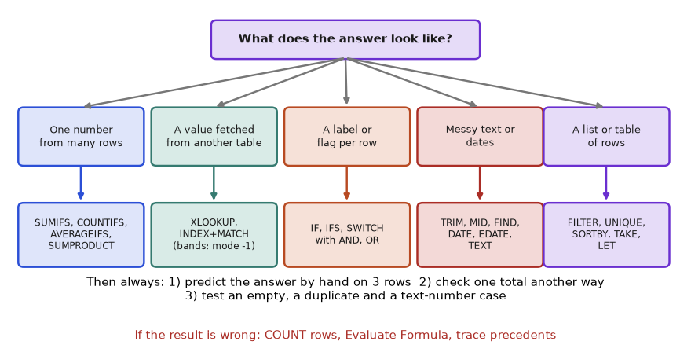
How to read it: Ask "what does the answer look like?" before "which function do I know?". A number from many rows points to the IFS family; a fetched value points to lookups; a per-row label points to IF; messy text or dates point to cleaning functions; a table points to dynamic arrays.
Part B: the routine (do these in order)
- Restate the question as a sentence with a verb and a unit. "Total Delivered revenue in Rupees for Pune." If you cannot say it in one sentence, ask the person who set the problem.
- Write the answer shape. One cell? One column the length of the data? A table? A label? This chooses the family of functions.
- Do three rows by hand. Pick one ordinary row, one edge row (a tie, a blank, a boundary value) and one row that should be excluded. Write what the answer should be for each. These are your test cases.
- List the conditions as column-and-test pairs. "Status equals Delivered", "City equals Pune". Every pair becomes an argument.
- Build inside out. Start with the smallest working piece (one comparison, one lookup), confirm it, then wrap the next function around it. Never type the whole formula at once.
- Test on your three rows, then on all rows. Compare the formula with your hand answers and with a second method (a PivotTable, a different formula, pandas).
- Make it robust. What happens with a blank, a duplicate key, a new row, a text number? Add a guard only where the failure is real.
- Leave a note. One sentence next to the formula saying what it answers and the check you did. Your future self is a colleague.
Part C: the eight patterns, each solved
For each pattern the table shows the thinking, then the formula, a numbered explanation, and the verified result.
Pattern 1: conditional total, count, average or rate ("how much of this kind of row")
Problem 2.12.1 For each city, what share of orders were Returned or Cancelled (a "failed order rate")? Also give the overall rate.
| Restate | Failed orders divided by all orders, per city, as a percentage. |
|---|---|
| Answer shape | One number per city, plus one overall. |
| Three test rows | Pune: 3 orders, 1 Returned: 1/3. Delhi: 2 orders, none failed: 0. Overall: 2 failed (1003, 1005) of 8 = 25%. |
| Conditions | City equals the row label; Status is Returned or Cancelled. |
| Formula | =SUM(COUNTIFS($C$2:$C$9, K2, $G$2:$G$9, {"Returned","Cancelled"})) / COUNTIFS($C$2:$C$9, K2) |
| Results | Pune 33.3%, Mumbai 33.3% (1005 Cancelled, 1 of 3), Delhi 0%. Overall =SUM(COUNTIFS(G2:G9,{"Returned","Cancelled"}))/ROWS(G2:G9) = 25%. |
| Check | Failed counts 1 + 1 + 0 = 2 matches the overall 2; 2/8 = 0.25. |
=SUM(COUNTIFS($C$2:$C$9, K2, $G$2:$G$9, {"Returned","Cancelled"})) / COUNTIFS($C$2:$C$9, K2)- The curly-brace list makes COUNTIFS run twice for each city: once with Returned, once with Cancelled.
SUM(...)adds the two counts together: how many orders failed in that city.- The division by
COUNTIFS($C$2:$C$9, K2)uses all orders in that city as the base.
import pandas as pd, io
df = pd.read_csv(io.StringIO("""OrderID,Date,City,Category,Qty,Price,Status
1001,2025-01-03,Pune,Fashion,2,499,Delivered
1002,2025-01-03,Mumbai,Electronics,1,1299,Delivered
1003,2025-01-04,Pune,Grocery,3,199,Returned
1004,2025-01-05,Delhi,Fashion,1,799,Delivered
1005,2025-01-06,Mumbai,Grocery,5,90,Cancelled
1006,2025-01-07,Mumbai,Fashion,2,649,Delivered
1007,2025-01-09,Delhi,Electronics,1,2499,Delivered
1008,2025-01-10,Pune,Fashion,4,350,Delivered"""), parse_dates=["Date"])
df["Amount"] = df["Qty"] * df["Price"]
failed = df.Status.isin(["Returned", "Cancelled"])
rate = failed.groupby(df.City).mean().round(3)
print(rate.to_dict(), "overall:", failed.mean()){'Delhi': 0.0, 'Mumbai': 0.333, 'Pune': 0.333} overall: 0.25Pattern 2: fetch a value from another table (lookup, band, or lookup-then-sum)
Problem 2.12.2 Using the Tax table (Fashion 12%, Electronics 18%, Grocery 5%), what is the total tax on Delivered revenue? Do it (a) row by row with a helper column and (b) in a single cell.
| Restate | Sum over Delivered orders of Amount times the category's tax rate. |
|---|---|
| Answer shape | One number. |
| Hand check | Delivered revenue by category: Fashion 4495, Electronics 3798, Grocery 0. Tax: 4495 x 0.12 = 539.40; 3798 x 0.18 = 683.64; 0. Total 1223.04. |
| (a) Helper column | =IF(G2="Delivered", H2 * XLOOKUP(D2, $L$2:$L$4, $M$2:$M$4), 0) filled down, then SUM. |
| (b) One cell | =SUMPRODUCT(SUMIFS(H2:H9, G2:G9, "Delivered", D2:D9, L2:L4), M2:M4) |
| How (b) works | Passing the three category names L2:L4 as the criterion makes SUMIFS return three totals (4495, 3798, 0). SUMPRODUCT multiplies them with the three rates and adds. |
| Check | Both routes must give 1223.04. |
=SUMPRODUCT(SUMIFS(H2:H9, G2:G9, "Delivered", D2:D9, L2:L4), M2:M4)SUMIFS(H2:H9, G2:G9, "Delivered", D2:D9, L2:L4)returns an array of three revenues, one per category in the Tax table.M2:M4is the array of three matching rates in the same order.SUMPRODUCTmultiplies position by position and sums: revenue times rate, added over categories.
import pandas as pd, io
df = pd.read_csv(io.StringIO("""OrderID,Date,City,Category,Qty,Price,Status
1001,2025-01-03,Pune,Fashion,2,499,Delivered
1002,2025-01-03,Mumbai,Electronics,1,1299,Delivered
1003,2025-01-04,Pune,Grocery,3,199,Returned
1004,2025-01-05,Delhi,Fashion,1,799,Delivered
1005,2025-01-06,Mumbai,Grocery,5,90,Cancelled
1006,2025-01-07,Mumbai,Fashion,2,649,Delivered
1007,2025-01-09,Delhi,Electronics,1,2499,Delivered
1008,2025-01-10,Pune,Fashion,4,350,Delivered"""), parse_dates=["Date"])
df["Amount"] = df["Qty"] * df["Price"]
rate = {"Fashion": 0.12, "Electronics": 0.18, "Grocery": 0.05}
d = df[df.Status == "Delivered"]
by_row = (d.Amount * d.Category.map(rate)).sum()
by_cat = sum(d.loc[d.Category == c, "Amount"].sum() * r for c, r in rate.items())
print(round(by_row, 2), round(by_cat, 2))1223.04 1223.04Pattern 3: label each row by rules (classification)
Problem 2.12.3 Label every order Gold (Delivered and Amount at least 1000), Silver (Delivered below 1000) or Hold (anything not Delivered). Count each label.
| Restate | Rules in priority order, a label per row. |
|---|---|
| Order the rules | Test the exclusion first (not Delivered), because it overrides the amount. |
| Formula | =IF(G2<>"Delivered", "Hold", IF(H2>=1000, "Gold", "Silver")) |
| Hand check | 1003 Returned: Hold. 1005 Cancelled: Hold. Delivered with 1000 or more: 1002, 1006, 1007, 1008 = Gold. Delivered below 1000: 1001, 1004 = Silver. |
| Counts | =COUNTIF(I2:I9, "Gold") = 4, Silver = 2, Hold = 2. They add to 8. |
| Alternative | =IFS(G2<>"Delivered","Hold", H2>=1000,"Gold", TRUE,"Silver") gives the same labels. |
=IF(G2<>"Delivered", "Hold", IF(H2>=1000, "Gold", "Silver"))- The outer
IFtests the rule that wins over everything: not Delivered gives Hold and stops. - Only for Delivered rows does the inner
IFrun, comparing the amount with 1000. >=includes exactly 1000 in Gold.
import pandas as pd, io
df = pd.read_csv(io.StringIO("""OrderID,Date,City,Category,Qty,Price,Status
1001,2025-01-03,Pune,Fashion,2,499,Delivered
1002,2025-01-03,Mumbai,Electronics,1,1299,Delivered
1003,2025-01-04,Pune,Grocery,3,199,Returned
1004,2025-01-05,Delhi,Fashion,1,799,Delivered
1005,2025-01-06,Mumbai,Grocery,5,90,Cancelled
1006,2025-01-07,Mumbai,Fashion,2,649,Delivered
1007,2025-01-09,Delhi,Electronics,1,2499,Delivered
1008,2025-01-10,Pune,Fashion,4,350,Delivered"""), parse_dates=["Date"])
df["Amount"] = df["Qty"] * df["Price"]
df["Tier"] = ["Hold" if s != "Delivered" else ("Gold" if a >= 1000 else "Silver") for s, a in zip(df.Status, df.Amount)]
print(df["Tier"].tolist())
print(df["Tier"].value_counts().to_dict())['Silver', 'Gold', 'Hold', 'Silver', 'Hold', 'Gold', 'Gold', 'Gold']
{'Gold': 4, 'Silver': 2, 'Hold': 2}Pattern 4: clean or parse messy text
Problem 2.12.4 Order codes arrive as " pun-2025-0042 ", "mum-2025-0107" and "DEL-2024-0003". Produce city code (upper case), year (number) and serial (number).
| Restate | Normalise, then cut by position. |
|---|---|
| Clean | x = UPPER(TRIM(A2)) gives PUN-2025-0042, MUM-2025-0107, DEL-2024-0003. |
| City code | =LEFT(x, 3) gives PUN, MUM, DEL. |
| Year | =VALUE(MID(x, 5, 4)) gives 2025, 2025, 2024. |
| Serial | =VALUE(RIGHT(x, 4)) gives 42, 107, 3 (leading zeros vanish when converted to numbers). |
| One formula | =LET(x, UPPER(TRIM(A2)), HSTACK(LEFT(x,3), VALUE(MID(x,5,4)), VALUE(RIGHT(x,4)))) |
| Check | Each cleaned code has length 13 (=LEN(x)), the pattern letters-dash-year-dash-serial. |
=LET(x, UPPER(TRIM(A2)), HSTACK(LEFT(x,3), VALUE(MID(x,5,4)), VALUE(RIGHT(x,4))))xis the cleaned code, computed once.LEFT(x,3),MID(x,5,4)andRIGHT(x,4)cut the three parts by position (all codes have the same layout).VALUEconverts digit text to numbers.HSTACKputs the three parts side by side so the formula spills across three cells.
codes = [" pun-2025-0042 ", "mum-2025-0107", "DEL-2024-0003"]
for c in codes:
x = " ".join(c.split()).upper()
print(x, len(x), x[:3], int(x[4:8]), int(x[-4:]))PUN-2025-0042 13 PUN 2025 42
MUM-2025-0107 13 MUM 2025 107
DEL-2024-0003 13 DEL 2024 3Pattern 5: dates and periods (group by week, month, quarter)
Problem 2.12.5 Orders per week, where a week starts on Monday. How many orders and how much revenue in each week?
| Restate | Group by week start date, count and sum Amount. |
|---|---|
| Week start | =B2 - WEEKDAY(B2, 2) + 1. With return type 2, Monday = 1 ... Sunday = 7, so subtracting weekday - 1 days lands on Monday. |
| Hand check | 3 Jan 2025 is a Friday (5): 3 - 5 + 1 means 3 Jan minus 4 days = 30 Dec 2024. Sunday 5 Jan is weekday 7: minus 6 days = 30 Dec. Monday 6 Jan is weekday 1: minus 0 = 6 Jan. |
| Weeks found | 30 Dec: orders 1001 to 1004. 6 Jan: orders 1005 to 1008. |
| Summary | Put the week start in a helper column J, then COUNTIFS(J2:J9, week) and SUMIFS(H2:H9, J2:J9, week) per week. Week of 30 Dec: 4 orders, 998 + 1299 + 597 + 799 = 3693. Week of 6 Jan: 4 orders, 450 + 1298 + 2499 + 1400 = 5647. |
| Check | 3693 + 5647 = 9340, the grand total; 4 + 4 = 8 orders. |
=B2 - WEEKDAY(B2, 2) + 1WEEKDAY(B2, 2)returns 1 for Monday up to 7 for Sunday. The second argument chooses this numbering.- Subtracting that number and adding 1 moves the date back to the Monday of its week. Dates are numbers, so plain subtraction works.
- Format the result as a date and group by it.
import pandas as pd, io
df = pd.read_csv(io.StringIO("""OrderID,Date,City,Category,Qty,Price,Status
1001,2025-01-03,Pune,Fashion,2,499,Delivered
1002,2025-01-03,Mumbai,Electronics,1,1299,Delivered
1003,2025-01-04,Pune,Grocery,3,199,Returned
1004,2025-01-05,Delhi,Fashion,1,799,Delivered
1005,2025-01-06,Mumbai,Grocery,5,90,Cancelled
1006,2025-01-07,Mumbai,Fashion,2,649,Delivered
1007,2025-01-09,Delhi,Electronics,1,2499,Delivered
1008,2025-01-10,Pune,Fashion,4,350,Delivered"""), parse_dates=["Date"])
df["Amount"] = df["Qty"] * df["Price"]
df["Week"] = df["Date"] - pd.to_timedelta(df["Date"].dt.dayofweek, unit="D")
print(df.groupby("Week")["Amount"].agg(["count", "sum"])) count sum
Week
2024-12-30 4 3693
2025-01-06 4 5647In pandas dayofweek is 0 for Monday, so subtracting it directly gives the Monday. Both weeks and sums match the hand work.
Pattern 6: rank, top item, share
Problem 2.12.6 Which city has the highest Delivered revenue, and what share of the total is it?
| Restate | Find the maximum of three city totals; divide by the grand total. |
|---|---|
| City totals in L2:L4 | Pune 2398, Mumbai 2597, Delhi 3298. |
| Top value | =MAX(L2:L4) is 3298. |
| Top name | =INDEX(K2:K4, MATCH(MAX(L2:L4), L2:L4, 0)) is Delhi. The MATCH with 0 finds the position of the max, INDEX returns the city at that position. |
| Share | =MAX(L2:L4)/SUM(L2:L4) = 3298 / 8293 = 0.3977. |
| Modern alternative | =XLOOKUP(MAX(L2:L4), L2:L4, K2:K4). |
| Tie risk | If two cities tie, both formulas return the first. Decide in advance how ties are handled. |
| Check | 2398 + 2597 + 3298 = 8293, and 3298 is the largest. |
import pandas as pd, io
df = pd.read_csv(io.StringIO("""OrderID,Date,City,Category,Qty,Price,Status
1001,2025-01-03,Pune,Fashion,2,499,Delivered
1002,2025-01-03,Mumbai,Electronics,1,1299,Delivered
1003,2025-01-04,Pune,Grocery,3,199,Returned
1004,2025-01-05,Delhi,Fashion,1,799,Delivered
1005,2025-01-06,Mumbai,Grocery,5,90,Cancelled
1006,2025-01-07,Mumbai,Fashion,2,649,Delivered
1007,2025-01-09,Delhi,Electronics,1,2499,Delivered
1008,2025-01-10,Pune,Fashion,4,350,Delivered"""), parse_dates=["Date"])
df["Amount"] = df["Qty"] * df["Price"]
t = df[df.Status == "Delivered"].groupby("City")["Amount"].sum()
print(t.idxmax(), t.max(), round(t.max() / t.sum(), 4))Delhi 3298 0.3977Pattern 7: reconcile two lists (what is missing, what is extra)
Problem 2.12.7 The finance system lists order IDs 1001, 1002, 1003, 1004, 1006, 1008 and 1009 (range R2:R8). Which sales orders are missing from finance, which finance IDs are not in the sales table, and what is the revenue at stake?
| Restate | Two set differences and a sum. |
|---|---|
| Missing from finance | =FILTER(A2:A9, ISNA(XMATCH(A2:A9, R2:R8))). XMATCH returns a position or #N/A; ISNA turns "not found" into TRUE. |
| By hand | Sales IDs not in finance: 1005 and 1007. |
| Extra in finance | =FILTER(R2:R8, ISNA(XMATCH(R2:R8, A2:A9))) gives 1009. |
| Revenue at stake | =SUMPRODUCT(ISNA(XMATCH(A2:A9, R2:R8)) * H2:H9) = 450 + 2499 = 2949. |
| Old Excel | =IF(COUNTIF($R$2:$R$8, A2)=0, "MISSING", "ok") in a helper column. |
| Check | 8 sales IDs, 6 found, 2 missing. 7 finance IDs, 6 found, 1 extra. |
=FILTER(A2:A9, ISNA(XMATCH(A2:A9, R2:R8)))
=SUMPRODUCT(ISNA(XMATCH(A2:A9, R2:R8)) * H2:H9)XMATCH(A2:A9, R2:R8)returns eight answers: a position in R2:R8 for each sales ID, or#N/Awhen absent.ISNA(...)converts these to TRUE (absent) or FALSE (present).FILTERkeeps the sales IDs where the answer is TRUE.- The
SUMPRODUCTversion multiplies the same TRUE/FALSE by Amount so only absent rows contribute.
import pandas as pd, io
df = pd.read_csv(io.StringIO("""OrderID,Date,City,Category,Qty,Price,Status
1001,2025-01-03,Pune,Fashion,2,499,Delivered
1002,2025-01-03,Mumbai,Electronics,1,1299,Delivered
1003,2025-01-04,Pune,Grocery,3,199,Returned
1004,2025-01-05,Delhi,Fashion,1,799,Delivered
1005,2025-01-06,Mumbai,Grocery,5,90,Cancelled
1006,2025-01-07,Mumbai,Fashion,2,649,Delivered
1007,2025-01-09,Delhi,Electronics,1,2499,Delivered
1008,2025-01-10,Pune,Fashion,4,350,Delivered"""), parse_dates=["Date"])
df["Amount"] = df["Qty"] * df["Price"]
fin = [1001, 1002, 1003, 1004, 1006, 1008, 1009]
miss = df[~df.OrderID.isin(fin)]
print("missing from finance:", miss.OrderID.tolist(), "revenue at stake:", miss.Amount.sum())
print("extra in finance :", sorted(set(fin) - set(df.OrderID)))missing from finance: [1005, 1007] revenue at stake: 2949
extra in finance : [1009]Pattern 8: build a summary table that updates itself
Problem 2.12.8 Make a ranked table of cities with their Delivered revenue, biggest first, that grows if a new city appears.
| Restate | Distinct cities, a revenue figure for each, sorted descending. |
|---|---|
| Formula | =LET(c, UNIQUE(C2:C9), t, SUMIFS(H2:H9, C2:C9, c, G2:G9, "Delivered"), SORTBY(HSTACK(c, t), t, -1)) |
| c | Pune, Mumbai, Delhi. |
| t | 2398, 2597, 3298, one total per city in the same order. |
| HSTACK(c, t) | A two-column table pairing each city with its total. |
| SORTBY(..., t, -1) | Sort the pairs by t descending. |
| Result | Delhi 3298, Mumbai 2597, Pune 2398. |
| Check | Column total 8293 equals the Delivered total. |
=LET(c, UNIQUE(C2:C9),
t, SUMIFS(H2:H9, C2:C9, c, G2:G9, "Delivered"),
SORTBY(HSTACK(c, t), t, -1))UNIQUEandSUMIFS(..., c, ...)each return three-item columns, becausecis a column of criteria.HSTACKglues them side by side.SORTBYsorts the glued table by the totals.- Because everything starts from
UNIQUE, a fourth city in the data appears automatically.
import pandas as pd, io
df = pd.read_csv(io.StringIO("""OrderID,Date,City,Category,Qty,Price,Status
1001,2025-01-03,Pune,Fashion,2,499,Delivered
1002,2025-01-03,Mumbai,Electronics,1,1299,Delivered
1003,2025-01-04,Pune,Grocery,3,199,Returned
1004,2025-01-05,Delhi,Fashion,1,799,Delivered
1005,2025-01-06,Mumbai,Grocery,5,90,Cancelled
1006,2025-01-07,Mumbai,Fashion,2,649,Delivered
1007,2025-01-09,Delhi,Electronics,1,2499,Delivered
1008,2025-01-10,Pune,Fashion,4,350,Delivered"""), parse_dates=["Date"])
df["Amount"] = df["Qty"] * df["Price"]
t = df[df.Status == "Delivered"].groupby("City")["Amount"].sum().sort_values(ascending=False)
print(t.to_string())
print("total:", t.sum())City
Delhi 3298
Mumbai 2597
Pune 2398
total: 8293Part D: how to check an answer
Never trust a formula because it returned a number. Run the checks below, in this order, and stop when one fails.
| Check | What you do | What it catches |
|---|---|---|
| Second route | Get the same number a different way (PivotTable, another formula, pandas) | Wrong criteria, wrong range |
| Parts add to the whole | Sum the breakdown and compare with the total | Missing categories, double counting |
| Row count | COUNT and COUNTA equal the expected row count | Text numbers, blanks, partial ranges |
| Boundary rows | Test exactly 1000, the first and last row, an empty city | Off-by-one and > versus >= errors |
| Shuffle invariance | Sort the table another way; the answer must not change | Hidden dependence on order (for example approximate lookups) |
| Add a row | Append a new order inside the Table; the answer must update | Fixed ranges that do not grow |
| Sense check | Is it the right size? Revenue per order near 1,000 here, so 8 orders cannot give 80,000 | Unit mistakes, wrong column |
import pandas as pd, io
df = pd.read_csv(io.StringIO("""OrderID,Date,City,Category,Qty,Price,Status
1001,2025-01-03,Pune,Fashion,2,499,Delivered
1002,2025-01-03,Mumbai,Electronics,1,1299,Delivered
1003,2025-01-04,Pune,Grocery,3,199,Returned
1004,2025-01-05,Delhi,Fashion,1,799,Delivered
1005,2025-01-06,Mumbai,Grocery,5,90,Cancelled
1006,2025-01-07,Mumbai,Fashion,2,649,Delivered
1007,2025-01-09,Delhi,Electronics,1,2499,Delivered
1008,2025-01-10,Pune,Fashion,4,350,Delivered"""), parse_dates=["Date"])
df["Amount"] = df["Qty"] * df["Price"]
base = df[df.Status == "Delivered"].Amount.sum()
shuffled = df.sample(frac=1, random_state=7)
again = shuffled[shuffled.Status == "Delivered"].Amount.sum()
print("original:", base, " shuffled:", again, " same:", base == again)
extra = pd.concat([df, df.iloc[[0]].assign(OrderID=1009, Amount=500)])
print("after adding one Delivered row of 500:", extra[extra.Status == "Delivered"].Amount.sum())original: 8293 shuffled: 8293 same: True
after adding one Delivered row of 500: 8793Part E: how to debug when you are stuck
| Symptom | Most likely cause | What to do |
|---|---|---|
Result is #N/A | Key not found: spaces, type mismatch, genuinely absent | Test LEN, ISNUMBER, TRIM; check the lookup range includes the key |
Result is #VALUE! | Text where a number is needed, or ranges of different sizes in SUMIFS | ISNUMBER on inputs; compare range sizes |
Result is #NAME? | Typo, missing quote around text, or function not in your version | Check spelling and the Excel version |
| Result is 0 but should not be | Criteria never match: trailing space in the data, an operator typed outside its quotes, number stored as text | Count with COUNTIFS using only the first condition, then add conditions one by one |
| Total is a little short | Text numbers skipped by SUM | Compare COUNT with the row count (Example 2.6.2) |
| Right on row 1, wrong lower down | Missing $ so a reference drifted | Show formulas (Ctrl+`) and compare the last row |
| Formula works in one file only | Different Excel version or regional list separator (comma versus semicolon) | Check the version; on semicolon systems type ; between arguments |
| Result changes without edits | Volatile function (TODAY, RAND, OFFSET) | Replace with a fixed date input or a stable function |
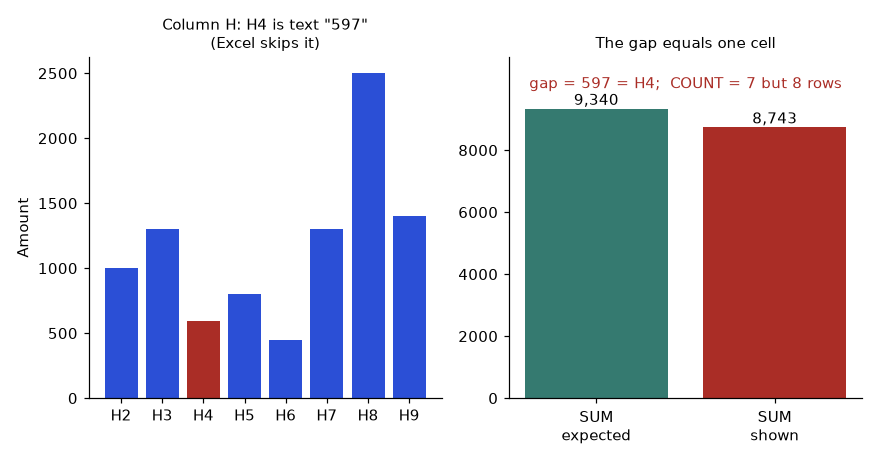
How to read it: the red bar on the left is the cell Excel skips. On the right the shown total (8,743) is below the expected one (9,340) by exactly that cell, which is the signature of a text number: a gap equal to one value, and a COUNT one lower than the row count.
The debug routine in one line: shrink, split, show. Shrink the data to three rows. Split the formula into its inner pieces, each in its own cell, so you see every intermediate value (or use Evaluate Formula). Show the pieces next to your hand answers and find the first one that disagrees. The bug is in the step before it.
Check yourself. (1) Which question do you ask before choosing a function? Answer: what shape the answer has. (2) What is the fastest way to find which piece of a long formula is wrong? Answer: split it into cells or use Evaluate Formula and compare each part with a hand-calculated value. (3) Name two checks that catch a missing category in a summary table. Answer: parts add to whole, and a second independent route.
2.13 Going Deeper: How Excel Calculates, Where It Breaks, and What Interviewers Probe
This part is for when you want to know why. You can skip it on a first read, but come back before an interview. Every claim here is something a senior reviewer may ask you to explain.
The calculation engine
- Dependency tree. Excel records which cells feed which formulas. When you change a cell it recalculates only the formulas downstream of it, in dependency order. A formula that reads 5,000 cells is therefore recalculated whenever any of the 5,000 changes.
- Volatile functions (
TODAY,NOW,RAND,RANDBETWEEN,OFFSET,INDIRECT) are recalculated on every calculation, and so is everything downstream. A few of them in a big model make every edit slow. PreferINDEXtoOFFSET, and put a fixed "as of" date in an input cell instead ofTODAY()when a report must be repeatable. - Calculation mode can be Automatic, Automatic except data tables, or Manual (F9 recalculates). Models that behave oddly are sometimes simply in Manual mode.
- Implicit intersection. Before dynamic arrays, a formula that returned a range in a single cell quietly picked the value on its own row. Today Excel shows the
@sign in front of such references when it opens an old file. Old array formulas entered with Ctrl+Shift+Enter appear in braces{=...}; new Excel does not need that.
Lookups and search cost
An exact lookup on an unsorted column must look at cells one by one until it finds the key, so on average it examines about half of them. Approximate lookup on a sorted column can use binary search: compare with the middle, discard half, repeat. For a million rows that is at most 20 comparisons instead of 500,000. XLOOKUP exposes this with search modes 2 (binary, ascending) and -2 (binary, descending), which are only correct on sorted keys. Recent Excel builds can also cache an index for repeated exact lookups on the same range, which softens, but does not remove, the cost on very large sheets.
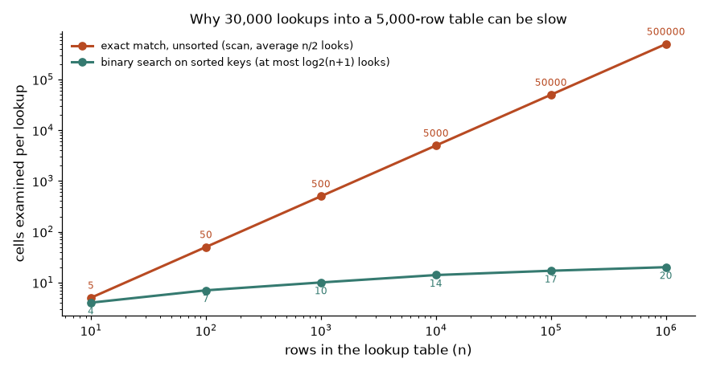
How to read it: Both axes are logarithmic. The orange line climbs steeply (a thousand times more rows means a thousand times more work). The teal line barely moves.
import math
n = 5000
keys = list(range(1, n + 1))
def linear(key):
for i, k in enumerate(keys, 1):
if k == key:
return i
return n
def binary(key):
lo, hi, steps = 0, n - 1, 0
while lo <= hi:
mid = (lo + hi) // 2
steps += 1
if keys[mid] == key:
return steps
lo, hi = (mid + 1, hi) if keys[mid] < key else (lo, mid - 1)
return steps
lin = [linear(k) for k in range(1, n + 1)]
bi = [binary(k) for k in range(1, n + 1)]
print("average looks, linear:", sum(lin) / n)
print("average looks, binary:", round(sum(bi) / n, 2), " worst case:", max(bi), " bound:", math.ceil(math.log2(n + 1)))
print("30,000 lookups, linear:", f"{30000 * sum(lin) / n:,.0f}", " binary:", f"{30000 * sum(bi) / n:,.0f}")average looks, linear: 2500.5
average looks, binary: 11.36 worst case: 13 bound: 13
30,000 lookups, linear: 75,015,000 binary: 340,932Line by line: (1) import math for the logarithm; (2) and (3) a sorted list of 5,000 keys, standing for the lookup table; (5) to (9) linear scans from the top and returns how many cells it examined; (11) to (19) binary looks at the middle key each time, keeps the half that can contain the key, and counts the steps; (21) and (22) look up every key once with each method; (23) the linear average is exactly (5000 + 1) / 2 = 2500.5; (24) the binary average is about 11.4 looks, the worst case is 13, which equals the bound log2(5001) rounded up; (25) for 30,000 lookups, about 75 million cell checks versus about 341 thousand. This is the arithmetic behind the advice in Practice Problem 11 to join once in Power Query instead of recalculating.
Numbers are floating point
Excel stores numbers as 64-bit binary floating point (IEEE 754), shows at most 15 significant digits, and cannot hold more than 15 digits of precision. Two consequences matter to analysts. First, tiny rounding residues can appear: a calculation that should give exactly 0 may give 1E-16, so compare with ROUND(a-b, 6)=0 rather than a=b. Second, long IDs (credit card or account numbers of 16 or more digits, tracking numbers) lose their last digits if stored as numbers, and COUNTIF compares only 15 digits, so different IDs can appear as duplicates. Store such IDs as text.
print(0.1 + 0.2, " equal to 0.3?", 0.1 + 0.2 == 0.3)
print("round to 9 places equal?", round(0.1 + 0.2, 9) == round(0.3, 9))
a, b = 1234567890123456, 1234567890123457 # two different 16-digit IDs
print("different as integers:", a != b)
print("same at 15 digits :", f"{a:.15g}" == f"{b:.15g}", f"{a:.15g}", f"{b:.15g}")
print("Python round(2.5) =", round(2.5), "; Excel ROUND(2.5, 0) = 3 (half away from zero)")0.30000000000000004 equal to 0.3? False
round to 9 places equal? True
different as integers: True
same at 15 digits : True 1.23456789012346e+15 1.23456789012346e+15
Python round(2.5) = 2 ; Excel ROUND(2.5, 0) = 3 (half away from zero)Line by line: (1) the classic floating-point case, 0.1 + 0.2 is not exactly 0.3; (2) rounding before comparing is the fix; (3) and (4) two IDs that differ only in the 16th digit; (5) squeezing both into 15 significant digits, which is what Excel does when it treats them as numbers, makes them identical; (6) Python rounds halves to the nearest even number, while Excel rounds halves away from zero, so a Python check of Excel's ROUND must account for halves.
The 1900 leap year and other history
Excel counts 29 February 1900 as a real day, although 1900 was not a leap year. This was copied from older spreadsheet software for compatibility. The effect: serial number 60 is the fictitious 29 Feb 1900, and every real date after 28 Feb 1900 is one higher than a true day count from 1 Jan 1900. That is why the Python origin used in this chapter is 30 December 1899, and why Excel on Mac once used a different origin (1904 date system, a workbook setting that still exists). When dates from two workbooks differ by exactly 1,462 days, the 1904 setting is the cause.
Limits worth knowing
| Item | Limit | Why you care |
|---|---|---|
| Rows and columns | 1,048,576 rows by 16,384 columns | A CSV with more rows is silently cut when opened |
| Formula length | 8,192 characters | Very long nested formulas need LET or helper cells |
| Nested levels of functions | 64 | Deep IF nests hit it; use IFS, SWITCH or a lookup table |
| Arguments per function | 255 | Rarely reached |
| Criteria text in COUNTIF family | 255 characters | A long text criterion gives #VALUE! |
| Digits of precision | 15 | Long IDs must be text |
Problem 2.13.1 There is no MEDIANIFS or "second largest per group" function. Find (a) the median Amount for Pune orders and (b) the second largest Pune Amount.
| Pune amounts | 998 (1001), 597 (1003), 1400 (1008). |
|---|---|
| (a) Formula | =MEDIAN(IF(C2:C9="Pune", H2:H9)) (in Excel 2019 and earlier confirm with Ctrl+Shift+Enter) |
| How (a) works | IF with no else branch returns FALSE for non-Pune rows, and MEDIAN ignores FALSE inside an array. What remains: 998, 597, 1400. Sorted 597, 998, 1400; the middle is 998. |
| (b) Formula | =LARGE(IF(C2:C9="Pune", H2:H9), 2) or the version that needs no array entry: =AGGREGATE(14, 6, H2:H9/(C2:C9="Pune"), 2) |
| How (b) works | Dividing by TRUE/FALSE gives the amount (divide by 1) or #DIV/0! (divide by 0). AGGREGATE function 14 is LARGE and option 6 means ignore errors. Remaining: 998, 597, 1400; second largest is 998. |
| Check | Sort by hand: 1400, 998, 597. Second is 998; median of three is also 998. |
=MEDIAN(IF(C2:C9="Pune", H2:H9))
=AGGREGATE(14, 6, H2:H9/(C2:C9="Pune"), 2)C2:C9="Pune"gives eight TRUE/FALSE values.- In the first formula,
IFkeeps the amounts for TRUE rows; MEDIAN then works on those. - In the second, dividing by the TRUE/FALSE turns the non-Pune rows into errors that AGGREGATE (option 6) skips.
- The last argument
2asks for the second largest.
import pandas as pd, io
df = pd.read_csv(io.StringIO("""OrderID,Date,City,Category,Qty,Price,Status
1001,2025-01-03,Pune,Fashion,2,499,Delivered
1002,2025-01-03,Mumbai,Electronics,1,1299,Delivered
1003,2025-01-04,Pune,Grocery,3,199,Returned
1004,2025-01-05,Delhi,Fashion,1,799,Delivered
1005,2025-01-06,Mumbai,Grocery,5,90,Cancelled
1006,2025-01-07,Mumbai,Fashion,2,649,Delivered
1007,2025-01-09,Delhi,Electronics,1,2499,Delivered
1008,2025-01-10,Pune,Fashion,4,350,Delivered"""), parse_dates=["Date"])
df["Amount"] = df["Qty"] * df["Price"]
p = df.loc[df.City == "Pune", "Amount"]
print(sorted(p, reverse=True), "median:", p.median(), "second largest:", sorted(p, reverse=True)[1])[1400, 998, 597] median: 998.0 second largest: 998Problem 2.13.2 A running total is written =SUM($H$2:H2) and filled down 100,000 rows. Why does the workbook crawl, and what is the faster formula?
| What SUM does in row k | It adds k cells. The first row adds 1, the second 2, the last 100,000. |
|---|---|
| Total additions | 1 + 2 + ... + n = n(n + 1) / 2. For n = 100,000 that is 5,000,050,000 additions. |
| Faster formula | In I2 put =H2. In I3 put =I2+H3 and fill down. Each cell does one addition using the previous total. |
| Total additions now | n - 1 = 99,999. |
| Trade-off | The faster version depends on the previous cell, so you must never sort or delete only part of the column. For short lists, the anchored SUM is clearer and perfectly fine. |
| Check | For n = 8 the two methods give the same last value, 9340. |
for n in (8, 1000, 100000):
print(f"n={n:>7,}: anchored SUM additions = {n * (n + 1) // 2:>14,} previous-cell additions = {n - 1:>8,}")
amounts = [998, 1299, 597, 799, 450, 1298, 2499, 1400]
run, tot = [], 0
for a in amounts:
tot += a
run.append(tot)
print(run[-1] == sum(amounts), run[-1])n= 8: anchored SUM additions = 36 previous-cell additions = 7
n= 1,000: anchored SUM additions = 500,500 previous-cell additions = 999
n=100,000: anchored SUM additions = 5,000,050,000 previous-cell additions = 99,999
True 9340Problem 2.13.3 A customer table has 16-digit card-style IDs stored as numbers. =COUNTIF(A:A, A2) reports 2 for an ID you believe is unique. Explain and fix.
| Cause | Excel keeps only 15 significant digits of a number. IDs that differ at the 16th digit are stored as the same number, and COUNTIF compares them as equal. |
|---|---|
| Evidence | =TEXT(A2, "0") on the numeric cell shows the 16th digit as 0, for example 1234567890123450 instead of 1234567890123456. The digit is gone for good. |
| Fix | Import the column as Text (Power Query: change type to Text before loading) or format the column as Text before pasting. Existing numbers cannot be recovered; re-import from the source. |
| Safe duplicate test | On a text column =SUMPRODUCT(--($A$2:$A$100=A2)) compares whole text values exactly, so IDs that differ at the 16th digit are different. |
| Check | After the fix, =SUMPRODUCT(1/COUNTIF(...)) or =ROWS(UNIQUE(A2:A100)) equals the row count. |
The Python block earlier in this section (the two IDs ending in 56 and 57) is the demonstration: at 15 significant digits they print identically.
=. =A1=B1 can be FALSE even when both show 0.30. Use =ROUND(A1-B1, 6)=0 or compare rounded values.TODAY() or NOW() into a report that will be archived. Re-opening next month changes every age and period. Put the report date in an input cell and refer to it.What interviewers probe
| Question | Strong answer in one breath |
|---|---|
| VLOOKUP versus XLOOKUP versus INDEX/MATCH? | VLOOKUP looks only right and breaks when columns move. INDEX/MATCH works everywhere and in both directions. XLOOKUP is the readable modern default with a built-in not-found value, last-match search and spill. |
| How do you stop a lookup from silently returning the wrong row? | Exact match, a uniqueness check on the key (COUNTIF), and trimmed, same-type keys. |
| SUMIFS or SUMPRODUCT? | SUMIFS: faster and clearer for AND-conditions. SUMPRODUCT: weighted sums, OR logic and math on arrays. |
| How do you do OR inside SUMIFS? | Add two SUMIFS, or pass a constant list and wrap in SUM. |
| What is a volatile function and why avoid it? | One that recalculates every time anything changes, dragging dependants with it. Prefer fixed inputs and INDEX over OFFSET. |
Why does =A1=B1 fail for decimals? | Binary floating point: use ROUND before comparing. |
| How would you find duplicates? | COUNTIF(range, cell)>1 in a helper column, UNIQUE(..., , TRUE) for items that appear exactly once, or conditional formatting. |
| How do you check a number you have just built? | A second route, parts add to whole, row count, boundary rows (the checklist in 2.12). |
| When do you leave Excel? | Over about a million rows, repeated refresh, or many joins: use Power Query, SQL or pandas. |
2.14 Mixed-Practice Drill and Self-Test
Mixed practice is harder than practice by topic, because nothing tells you which tool to use. That is the point. First do the drill with the Sales table (cover the answers), then take the self-test and score yourself.
Mixed drill (Sales table, answers below each question)
Problem D1 How many orders have Qty of at least 3 and a Status other than Cancelled? Write the formula.
Answer: =COUNTIFS(E2:E9, ">=3", G2:G9, "<>Cancelled") gives 2 (orders 1003 and 1008; order 1005 has Qty 5 but is Cancelled).
Problem D2 Average Amount for Pune orders (all statuses).
Answer: =AVERAGEIFS(H2:H9, C2:C9, "Pune") = (998 + 597 + 1400) / 3 = 998.33.
Problem D3 Date of the most recent Delivered Mumbai order.
Answer: =MAXIFS(B2:B9, C2:C9, "Mumbai", G2:G9, "Delivered") gives 7 Jan 2025 (order 1006; order 1005 on 6 Jan is Cancelled, 1002 is 3 Jan).
Problem D4 Quantity bands with starts 1, 3, 5 and labels Few, Some, Many. How many orders fall in each band?
Answer: =XLOOKUP(E2, {1,3,5}, {"Few","Some","Many"}, , -1). Quantities 2,1,3,1,5,2,1,4 give Few for 1, 1, 2, 2, 1 (five orders), Some for 3 and 4 (two orders), Many for 5 (one order). Counts: 5, 2, 1.
Problem D5 Find the bug: =SUMIFS(G2:G9, H2:H9, "Delivered") returns 0.
Answer: The sum range must come first and the Status range is the criterion range. As written, SUMIFS tries to add the Status text and tests Amount against the word Delivered. Correct: =SUMIFS(H2:H9, G2:G9, "Delivered"), which returns 8293.
Problem D6 What does =TEXT(DATE(2025,1,31)+30, "dd-mmm-yyyy") return?
Answer: 02-Mar-2025. 31 Jan plus 28 days is 28 Feb; two more days is 2 March.
Problem D7 Which OrderIDs does =FILTER(A2:A9, (E2:E9>=2)*(F2:F9<500)) return?
Answer: 1001 (2 units at 499), 1003 (3 at 199), 1005 (5 at 90), 1008 (4 at 350). Order 1006 has Qty 2 but price 649, so the second test is 0.
Problem D8 What percentage of all revenue (every status) comes from Electronics?
Answer: =SUMIFS(H2:H9, D2:D9, "Electronics") / SUM(H2:H9) = 3798 / 9340 = 40.66%.
Problem D9 How many distinct (City, Category) pairs exist?
Answer: =ROWS(UNIQUE(C2:D9)) gives 7. The pairs are Pune-Fashion (twice, rows 2 and 9), Mumbai-Electronics, Pune-Grocery, Delhi-Fashion, Mumbai-Grocery, Mumbai-Fashion and Delhi-Electronics.
Problem D10 The text " asha RAO " must become Asha Rao and be used to look up a customer. Write the clean formula and one reason to keep the raw column.
Answer: =PROPER(TRIM(A2)). Keeping the raw column lets you audit the clean-up and re-run it if the rule changes.
import pandas as pd, io
df = pd.read_csv(io.StringIO("""OrderID,Date,City,Category,Qty,Price,Status
1001,2025-01-03,Pune,Fashion,2,499,Delivered
1002,2025-01-03,Mumbai,Electronics,1,1299,Delivered
1003,2025-01-04,Pune,Grocery,3,199,Returned
1004,2025-01-05,Delhi,Fashion,1,799,Delivered
1005,2025-01-06,Mumbai,Grocery,5,90,Cancelled
1006,2025-01-07,Mumbai,Fashion,2,649,Delivered
1007,2025-01-09,Delhi,Electronics,1,2499,Delivered
1008,2025-01-10,Pune,Fashion,4,350,Delivered"""), parse_dates=["Date"])
df["Amount"] = df["Qty"] * df["Price"]
print("D1", int(((df.Qty >= 3) & (df.Status != "Cancelled")).sum()))
print("D2", round(df.loc[df.City == "Pune", "Amount"].mean(), 2))
print("D3", df.loc[(df.City == "Mumbai") & (df.Status == "Delivered"), "Date"].max().date())
import numpy as np
band = np.array(["Few", "Some", "Many"])[np.searchsorted([1, 3, 5], df.Qty, side="right") - 1]
print("D4", pd.Series(band).value_counts().to_dict())
print("D5", df.loc[df.Status == "Delivered", "Amount"].sum())
print("D6", (pd.Timestamp("2025-01-31") + pd.Timedelta(days=30)).strftime("%d-%b-%Y"))
print("D7", df.loc[(df.Qty >= 2) & (df.Price < 500), "OrderID"].tolist())
print("D8", round(df.loc[df.Category == "Electronics", "Amount"].sum() / df.Amount.sum() * 100, 2))
print("D9", len(df[["City", "Category"]].drop_duplicates()))
print("D10", " ".join(" asha RAO ".split()).title())D1 2
D2 998.33
D3 2025-01-07
D4 {'Few': 5, 'Some': 2, 'Many': 1}
D5 8293
D6 02-Mar-2025
D7 [1001, 1003, 1005, 1008]
D8 40.66
D9 7
D10 Asha RaoSelf-test: 20 questions, 1 point each
Write your answers on paper, then compare with the key. Do not look at the sections first.
- The formula
=A2*$D$1sits in B2. What does it become when copied to C3? - What does
=-4^2return in Excel? - Is
"12"typed with quotes a number? What doesISNUMBER("12")return? - What is XLOOKUP's default match mode?
- Band starts are 0, 500, 1000. Which band does 500 fall in, using approximate match?
- Which XLOOKUP argument returns the last match instead of the first?
- Which functions make a two-way (row and column) lookup?
- In SUMIFS, which argument comes first?
- Write the criterion for "city is not Delhi".
- What does
=COUNTIFS(G2:G9,"Delivered",C2:C9,"Pune")return? - Write the pattern for a weighted average of x with weights w.
- Which character does TRIM not remove from text copied from a web page?
- What does
=EDATE(DATE(2025,1,31),1)return? - With an April-March year named by its end year, which fiscal year is 15 April 2025?
- What does
=NETWORKDAYS(DATE(2025,1,6),DATE(2025,1,10))return? - Inside FILTER, which operator means OR?
- What causes
#SPILL!? - What is the first question to ask before choosing a function?
- COUNT returns 7 on a range of 8 numbers. What does that suggest?
- Why can COUNTIF mark different 16-digit numeric IDs as duplicates?
Answer key
| # | Answer | Section to reread if wrong |
|---|---|---|
| 1 | =B3*$D$1 (one column right and one row down, the $D$1 stays) | 2.1, 2.7 |
| 2 | 16 (Excel applies the unary minus first) | 2.7 |
| 3 | No, it is text. ISNUMBER("12") is FALSE | 2.7 |
| 4 | Exact match (0) | 2.8 |
| 5 | Medium (500 is an exact hit on the start of Medium) | 2.8 |
| 6 | search_mode, set to -1 | 2.8 |
| 7 | INDEX with two MATCH functions | 2.8 |
| 8 | The sum range | 2.3, 2.9 |
| 9 | "<>Delhi" | 2.9 |
| 10 | 2 (orders 1001 and 1008) | 2.9 |
| 11 | =SUMPRODUCT(w, x) / SUM(w) | 2.9 |
| 12 | The non-breaking space, CHAR(160) | 2.10 |
| 13 | 28 Feb 2025 | 2.4, 2.10 |
| 14 | FY2026 (April 2025 to March 2026) | 2.10 |
| 15 | 5 | 2.4, 2.10 |
| 16 | + | 2.5, 2.11 |
| 17 | A non-empty cell, or another blocker, in the area the result needs | 2.5, 2.11 |
| 18 | What shape does the answer have? | 2.12 |
| 19 | A number stored as text is being skipped | 2.6, 2.12 |
| 20 | Excel keeps only 15 significant digits, so IDs that differ later look identical | 2.13 |
import pandas as pd, io
df = pd.read_csv(io.StringIO("""OrderID,Date,City,Category,Qty,Price,Status
1001,2025-01-03,Pune,Fashion,2,499,Delivered
1002,2025-01-03,Mumbai,Electronics,1,1299,Delivered
1003,2025-01-04,Pune,Grocery,3,199,Returned
1004,2025-01-05,Delhi,Fashion,1,799,Delivered
1005,2025-01-06,Mumbai,Grocery,5,90,Cancelled
1006,2025-01-07,Mumbai,Fashion,2,649,Delivered
1007,2025-01-09,Delhi,Electronics,1,2499,Delivered
1008,2025-01-10,Pune,Fashion,4,350,Delivered"""), parse_dates=["Date"])
df["Amount"] = df["Qty"] * df["Price"]
import numpy as np
print("Q10", int(((df.Status == "Delivered") & (df.City == "Pune")).sum()))
print("Q14", 2025 + 1) # April 2025 starts FY2026 (named by the year it ends)
print("Q15", int(np.busday_count("2025-01-06", "2025-01-11")))Q10 2
Q14 2026
Q15 5Scoring guide
| Score | What it means | What to do next |
|---|---|---|
| 18 to 20 | Ready for an Excel interview round | Do the practice set problems 12 to 25 against the clock, then move to Chapter 3 |
| 14 to 17 | Solid, with gaps | Reread the sections listed for each question you missed, then redo the matching worked problem without looking |
| 9 to 13 | Understands the tools but not the choices | Reread 2.8 and 2.9, then work through the eight patterns in 2.12 on paper |
| 4 to 8 | The basics are shaky | Reread 2.1 to 2.7 slowly, with the glossary open, and type every example in Excel |
| 0 to 3 | Start again at the glossary | Read the glossary, 2.7 and 2.1, and do one section per day |
2.15 Where This Chapter Fits: Before, After, and the Same Ideas in SQL and pandas
Before this chapter. Chapter 1 gave the five-step analysis process and the habit of decomposing a metric. The formulas here are how you compute the pieces of that decomposition (revenue, orders, average order value) by hand and check them. The "sanity add" in Example 2.1.2 is the reproducibility habit from Chapter 1.
After this chapter. Chapter 3 turns the formulas of 2.9 into PivotTables (a SUMIFS grid with drag and drop), turns the lookups of 2.8 into Power Query merges, and covers what-if tools that vary a cell and watch a formula. Chapter 4 and Chapter 5 (pandas) redo every pattern in this chapter in code that handles millions of rows. Chapter 10 (DAX) uses the same ideas as SUMIFS, written as measures with filter context.
| Excel idea | pandas | SQL |
|---|---|---|
SUMIFS(sum, col, "x") | df[df.col == "x"]["sum"].sum() | SELECT SUM(sum) FROM t WHERE col = 'x' |
| SUMIFS grid | pivot_table(index=, columns=, values=, aggfunc="sum") | GROUP BY city, category |
XLOOKUP | df.merge(other, on="key", how="left") | LEFT JOIN other USING (key) |
FILTER | df[mask] | WHERE |
SORTBY, TAKE | sort_values().head(n) | ORDER BY ... LIMIT n |
UNIQUE | drop_duplicates() | SELECT DISTINCT |
Running total SUM($H$2:H2) | cumsum() | SUM(x) OVER (ORDER BY ...) |
COUNTIFS | groupby().size() | COUNT(*) ... GROUP BY |
Here are four of those equivalences run on our table through SQLite, so you can see the same answers come out of SQL.
import sqlite3
import pandas as pd, io
df = pd.read_csv(io.StringIO("""OrderID,Date,City,Category,Qty,Price,Status
1001,2025-01-03,Pune,Fashion,2,499,Delivered
1002,2025-01-03,Mumbai,Electronics,1,1299,Delivered
1003,2025-01-04,Pune,Grocery,3,199,Returned
1004,2025-01-05,Delhi,Fashion,1,799,Delivered
1005,2025-01-06,Mumbai,Grocery,5,90,Cancelled
1006,2025-01-07,Mumbai,Fashion,2,649,Delivered
1007,2025-01-09,Delhi,Electronics,1,2499,Delivered
1008,2025-01-10,Pune,Fashion,4,350,Delivered"""), parse_dates=["Date"])
df["Amount"] = df["Qty"] * df["Price"]
con = sqlite3.connect(":memory:")
df.assign(Date=df.Date.dt.strftime("%Y-%m-%d")).to_sql("sales", con, index=False)
con.execute("CREATE TABLE tax(Category TEXT, Rate REAL)")
con.executemany("INSERT INTO tax VALUES (?, ?)", [("Fashion", .12), ("Electronics", .18), ("Grocery", .05)])
q1 = "SELECT City, SUM(Amount) FROM sales WHERE Status='Delivered' GROUP BY City ORDER BY 2 DESC"
q2 = "SELECT s.OrderID, t.Rate FROM sales s LEFT JOIN tax t USING (Category) WHERE s.OrderID IN (1001, 1002, 1003)"
q3 = "SELECT OrderID, Amount FROM sales WHERE Status='Delivered' ORDER BY Amount DESC LIMIT 3"
q4 = "SELECT OrderID, SUM(Amount) OVER (ORDER BY Date, OrderID) AS running FROM sales"
for q in (q1, q2, q3, q4):
print(con.execute(q).fetchall())[('Delhi', 3298), ('Mumbai', 2597), ('Pune', 2398)]
[(1001, 0.12), (1002, 0.18), (1003, 0.05)]
[(1007, 2499), (1008, 1400), (1002, 1299)]
[(1001, 998), (1002, 2297), (1003, 2894), (1004, 3693), (1005, 4143), (1006, 5441), (1007, 7940), (1008, 9340)]Line by line: (1) and (2) import sqlite3 and build the table; (3) an in-memory database; (4) load the sales rows with dates as text; (5) and (6) the Tax table; (7) SUMIFS by city, as grouped sums; (8) XLOOKUP as a LEFT JOIN; (9) FILTER, SORTBY and TAKE as WHERE, ORDER BY and LIMIT; (10) the running total as a window function; (11) run and print each. The numbers equal the Excel results: Delhi 3298, Mumbai 2597, Pune 2398; the tax rates 12%, 18%, 5%; the top 3 amounts 2499, 1400, 1299; and the running total ending at 9340.
Chapter recap
- Use a Table (Ctrl+T) and structured references so formulas grow with your data.
- Use
$when a formula points to a fixed cell, and F4 to add it. XLOOKUPreplacesVLOOKUP/HLOOKUP; always use exact match unless you want bands.SUMIFS,COUNTIFS,AVERAGEIFStake the value range first, then criteria pairs.SUMPRODUCTgives weighted sums and conditional counts without helper columns.- Clean text with
TRIM,PROPER,SUBSTITUTE; split withLEFT,MID,RIGHT,TEXTSPLIT. - Dates are numbers; use
EDATE,EOMONTH,DATEDIF,NETWORKDAYS,TEXT. - Dynamic arrays (
FILTER,UNIQUE,SORTBY,LET,LAMBDA) replace helper columns; use*for AND,+for OR. - Check totals by hand. Use
COUNTto detect text numbers. - Excel is literal: every value has a type (number, text, logical, error, blank), operators have a fixed order (a leading minus binds before
^), and evaluation goes inside out. - Mixed references (
$A2,B$1) let one formula fill a whole grid; check the last row after filling down. - Lookups come in five shapes: exact, band (match mode -1), first versus last, several conditions (
XLOOKUP(1, (a)*(b), ...)) and row-column (INDEXwith twoMATCH). Guard against duplicate keys withCOUNTIF. - Conditional totals: criteria are text with operators; dates are built with
DATE()and joined by&; OR needs a constant list or a sum of two SUMIFS; averages of averages are wrong, weighted averages areSUMPRODUCT/SUM. - Text cleaning pipeline:
SUBSTITUTE(CHAR(160)),TRIM,PROPER,VALUE; dates are serial numbers and times are fractions of a day; fiscal year isYEAR(EDATE(date, 9))for an April start. - Dynamic arrays chain like a conveyor belt:
LET,FILTER,SORTBY,TAKE,UNIQUE,HSTACK,SCANandMAP; they need Microsoft 365. - The playbook: ask what shape the answer has, do three rows by hand, build inside out, check with a second route and "parts add to whole", and debug by shrink, split, show. Eight patterns cover most problems.
- Going deeper: volatile functions slow models, exact lookups scan, binary search needs sorted keys, numbers keep 15 digits, 1900 is a fake leap year, and long IDs must be text.
| Need | Formula pattern |
|---|---|
| Conditional total | =SUMIFS(sum, crit_range, crit, ...) |
| Lookup | =XLOOKUP(key, keys, values, "Not found") |
| Band | =XLOOKUP(v, starts, labels, , -1) |
| Weighted average | =SUMPRODUCT(w, x)/SUM(w) |
| Unique list | =UNIQUE(range) |
| Filtered rows | =FILTER(table, (a)*(b)) |
| Month key | =TEXT(date, "yyyy-mm") |
| Row-column lookup | =INDEX(grid, MATCH(r, rows, 0), MATCH(c, cols, 0)) |
| Lookup on several conditions | =XLOOKUP(1, (a=x)*(b=y), answers) |
| Last match | =XLOOKUP(key, keys, answers, , 0, -1) |
| OR inside SUMIFS | =SUM(SUMIFS(sum, rng, {"a","b"})) |
| Running total | =SUM($H$2:H2) |
| Unique rank with ties | =RANK.EQ(x, r) + COUNTIF($E$2:E2, x) - 1 |
| Clean text | =PROPER(TRIM(SUBSTITUTE(x, CHAR(160), " "))) |
| Fiscal year (April start) | =YEAR(EDATE(date, 9)) |
| Week start (Monday) | =date - WEEKDAY(date, 2) + 1 |
| Missing from another list | =FILTER(ids, ISNA(XMATCH(ids, other))) |
| Conditional median or k-th | =MEDIAN(IF(cond, vals)), =AGGREGATE(14, 6, vals/(cond), k) |
Practice set
All questions use the Sales table from the start of this chapter.
Problem 1 What does =COUNTIFS(G2:G9, "Delivered") return?
Answer: 6 (rows 1001, 1002, 1004, 1006, 1007, 1008).
Problem 2 What does =SUMIFS(H2:H9, D2:D9, "Grocery") return?
Answer: 597 + 450 = 1,047.
Problem 3 Write a formula for the average Fashion Delivered amount and give its value.
Answer: =AVERAGEIFS(H2:H9, D2:D9, "Fashion", G2:G9, "Delivered"). Values 998, 799, 1298, 1400 sum to 4495. 4495 / 4 = 1123.75.
Problem 4 What is the output of =XLOOKUP(1004, A2:A9, C2:C9)?
Answer: Delhi. Order 1004 is in the 4th row of the data, and its city is Delhi.
Problem 5 Find the bug: =VLOOKUP(D2, L2:M4, 2) returns 18% for a Fashion order.
Answer: The fourth argument is missing, so Excel uses approximate match on an unsorted list and returns a wrong row. Use =VLOOKUP(D2, L2:M4, 2, FALSE) to get 12%.
Problem 6 What does =SUMPRODUCT((C2:C9="Delhi")*H2:H9) return?
Answer: Delhi rows: 799 and 2499. 799 + 2499 = 3,298.
Problem 7 What does =EDATE(DATE(2025,1,31), 1) return, and why not 31 February?
Answer: 28 February 2025. EDATE moves by months and caps at the last valid day of the target month.
Problem 8 Write one formula that returns the number of distinct cities.
Answer: =COUNTA(UNIQUE(C2:C9)). The distinct cities are Pune, Mumbai, Delhi, so the result is 3.
Problem 9 =NETWORKDAYS(DATE(2025,1,3), DATE(2025,1,10)) equals what?
Answer: 3 Jan (Fri), 6 to 10 Jan (Mon to Fri). That is 1 + 5 = 6 working days, both ends included.
Problem 10 (interview) A report has the same customer twice, as "Asha Rao" and "asha rao ". How do you merge them and keep the original data safe?
Answer: Add a helper column =PROPER(TRIM(A2)) (or in Power Query use Trim and Capitalize Each Word), then use that column for lookups and pivots. Never overwrite the raw column.
Problem 11 (interview) You must replace a sheet where each of 30,000 rows has VLOOKUP to a 5,000 row table and Excel is slow. What do you do?
Answer: Convert the ranges to Tables, use XLOOKUP with exact match on a unique key, avoid whole-column references, or move the join into Power Query (Chapter 3), where the merge happens once at refresh time, not on every recalculation.
Problem 12 Write one formula for Delivered revenue in Delhi and give its value.
Answer: =SUMIFS(H2:H9, C2:C9, "Delhi", G2:G9, "Delivered") = 799 + 2499 = 3,298.
Problem 13 Return the Amount of the most recent Pune order, even if the table is not sorted by date.
Answer: Find the latest Pune date first, then fetch the amount on that date: =LET(m, MAXIFS(B2:B9, C2:C9, "Pune"), SUMIFS(H2:H9, C2:C9, "Pune", B2:B9, m)). The latest Pune date is 10 Jan and the amount is 1,400. This works whatever the row order. (If the table is already sorted by date, =XLOOKUP("Pune", C2:C9, H2:H9, , 0, -1) is shorter.) Weakness of the SUMIFS version: two Pune orders on the same latest date would be added together, so check with COUNTIFS if that can happen.
Problem 14 List each Status once with the number of orders, using dynamic arrays.
Answer: =LET(s, UNIQUE(G2:G9), HSTACK(s, COUNTIF(G2:G9, s))) spills Delivered 6, Returned 1, Cancelled 1. Check: 6 + 1 + 1 = 8 orders.
Problem 15 What does =SUMPRODUCT((D2:D9="Fashion")*(G2:G9="Delivered")*E2:E9) return, and what does it mean?
Answer: 9. It is the number of Fashion units that were Delivered: orders 1001 (2), 1004 (1), 1006 (2), 1008 (4).
Problem 16 Find the bug: =IF(H2>500, "Medium", IF(H2>1000, "Big", "Small")) never returns Big. Fix it and say what 1299 returns before and after.
Answer: Any amount above 1000 is also above 500, so the first test catches it and the second never runs. Put the strictest test first: =IF(H2>1000, "Big", IF(H2>500, "Medium", "Small")). Before the fix, 1299 returns Medium; after, Big. (With this fix 500 exactly is Small, because the test is strictly greater; the chapter's IFS version used >= and counts 500 as Medium. State your boundary rule.)
Problem 17 What is the average number of days between consecutive orders (by date), and how do you compute it in one cell?
Answer: =(MAX(B2:B9) - MIN(B2:B9)) / (COUNT(B2:B9) - 1). The span is 10 Jan - 3 Jan = 7 days, and 8 orders make 7 gaps, so 7 / 7 = 1.0 day. The telescoping works because the gaps add up to the span.
Problem 18 Give the Delivered rate (Delivered orders divided by all orders) for Pune.
Answer: =COUNTIFS(C2:C9, "Pune", G2:G9, "Delivered") / COUNTIFS(C2:C9, "Pune") = 2 / 3 = 66.7%. Show the count of 3 next to it, since a rate from 3 orders is noisy.
Problem 19 What is the second largest Delivered Fashion amount? Use a formula that needs no array entry.
Answer: =AGGREGATE(14, 6, H2:H9/((D2:D9="Fashion")*(G2:G9="Delivered")), 2). Qualifying amounts: 998, 799, 1298, 1400. Others become #DIV/0! and are ignored. The second largest is 1,298.
Problem 20 A price list has Product in A2:A5 (P1, P1, P2, P2), Region in B2:B5 (North, South, North, South) and Price in C2:C5 (100, 110, 200, 215). Find the price of P2 in North in two ways and say which is safer.
Answer: =XLOOKUP(1, (A2:A5="P2")*(B2:B5="North"), C2:C5) returns 200, and =SUMIFS(C2:C5, A2:A5, "P2", B2:B5, "North") also returns 200. Neither is safe on its own. If the pair (P2, North) appeared twice, XLOOKUP would return only the first price and SUMIFS would add the two prices into a wrong, larger number, both without warning. Guard with =COUNTIFS(A2:A5, "P2", B2:B5, "North"), which must equal 1, and prefer XLOOKUP for fetching a single value.
Problem 21 Make a Pareto table: cities sorted by Delivered revenue with the cumulative share of the total.
Answer: Sorted: Delhi 3298, Mumbai 2597, Pune 2398 (total 8293). Cumulative: 3298 (39.8%), 5895 (71.1%), 8293 (100%). In Excel, with the sorted table from Pattern 8 in K2:L4, cumulative share is =SUM($L$2:L2) / SUM($L$2:$L$4) filled down. The first two cities give about 71% of delivered revenue.
Problem 22 Count orders by fiscal quarter (April start). Which quarter do they fall in and how many?
Answer: All dates are in January 2025, which is Q4 of FY2025, so Q4 has 8 orders and the other quarters have none. Formula for the label: ="Q"&ROUNDUP(MONTH(EDATE(B2,-3))/3,0); count with =COUNTIF(J2:J9, "Q4") = 8.
Problem 23 (interview) Why is =SUMIFS(H:H, G:G, "Delivered") fine on whole columns but =SUMPRODUCT((G:G="Delivered")*H:H) is a bad idea?
Answer: SUMIFS limits itself to the used range of the sheet, so a whole-column reference costs almost nothing. SUMPRODUCT builds arrays of 1,048,576 rows, which is slow, and the header cell H1 holds the text Amount; multiplying text by a TRUE/FALSE gives #VALUE!. Use exact ranges or a Table reference, for example SUMPRODUCT((Sales[Status]="Delivered")*Sales[Amount]).
Problem 24 (design) Write one cell that produces a one-line KPI summary: Delivered revenue, number of Delivered orders, average Delivered order value, return rate (Returned orders over all orders) and the top city by Delivered revenue.
Answer: One approach is =LET(d, FILTER(H2:H9, G2:G9="Delivered"), cities, UNIQUE(C2:C9), t, SUMIFS(H2:H9, C2:C9, cities, G2:G9, "Delivered"), "Revenue " & TEXT(SUM(d), "#,##0") & " | Orders " & COUNT(d) & " | AOV " & TEXT(AVERAGE(d), "#,##0") & " | Return rate " & TEXT(COUNTIF(G2:G9, "Returned") / ROWS(G2:G9), "0.0%") & " | Top city " & INDEX(cities, MATCH(MAX(t), t, 0))). The expected text is shown in the verification block below. Design note: a text string is good for a title line; keep the numbers in separate cells for charts.
Problem 25 (find the bug) A return-rate formula =COUNTIFS(C2:C9, K2, G2:G9, "Returned") / COUNT(C2:C9) gives #DIV/0!. Why, and what is the fix?
Answer: COUNT counts only numeric cells, and column C holds city names, so the denominator is 0. Use COUNTIFS(C2:C9, K2) for the city's orders (or COUNTA for all non-empty cells). Correct: =COUNTIFS(C2:C9, K2, G2:G9, "Returned") / COUNTIFS(C2:C9, K2).
Problem 26 How many orders were placed on a weekend?
Answer: =SUMPRODUCT(--(WEEKDAY(B2:B9, 2) > 5)). With return type 2, Saturday is 6 and Sunday is 7. Order 1003 (4 Jan, Saturday) and order 1004 (5 Jan, Sunday) qualify, so the answer is 2.
Problem 27 (interview) Your VLOOKUP report shows right numbers on your laptop and wrong numbers on a colleague's. List five causes in the order you would check them.
Answer: (1) Approximate match left on (missing FALSE) so results depend on sort order and data. (2) The calculation mode is Manual on one machine, so values are stale. (3) External links not refreshed, so the lookup table differs. (4) Different Excel version: XLOOKUP or LET shows #NAME? or an older fallback. (5) Regional settings change the argument separator or date interpretation. Fix by removing approximate matches, locking calculation to Automatic, pulling data through Power Query, and sharing the Excel version requirement.
import pandas as pd, io
df = pd.read_csv(io.StringIO("""OrderID,Date,City,Category,Qty,Price,Status
1001,2025-01-03,Pune,Fashion,2,499,Delivered
1002,2025-01-03,Mumbai,Electronics,1,1299,Delivered
1003,2025-01-04,Pune,Grocery,3,199,Returned
1004,2025-01-05,Delhi,Fashion,1,799,Delivered
1005,2025-01-06,Mumbai,Grocery,5,90,Cancelled
1006,2025-01-07,Mumbai,Fashion,2,649,Delivered
1007,2025-01-09,Delhi,Electronics,1,2499,Delivered
1008,2025-01-10,Pune,Fashion,4,350,Delivered"""), parse_dates=["Date"])
df["Amount"] = df["Qty"] * df["Price"]
print("12", df[(df.City == "Delhi") & (df.Status == "Delivered")].Amount.sum())
print("13", df[df.City == "Pune"].sort_values("Date").iloc[-1].Amount)
print("14", df.Status.value_counts().to_dict())
print("15", df[(df.Category == "Fashion") & (df.Status == "Delivered")].Qty.sum())
print("16", "Medium" if 1299 > 500 else "x", "->", "Big" if 1299 > 1000 else "x")
print("17", (df.Date.max() - df.Date.min()).days / (len(df) - 1))
pune = df[df.City == "Pune"]
print("18", round((pune.Status == "Delivered").mean() * 100, 1))
fd = df[(df.Category == "Fashion") & (df.Status == "Delivered")].Amount.sort_values(ascending=False)
print("19", fd.tolist(), fd.iloc[1])
t = df[df.Status == "Delivered"].groupby("City").Amount.sum().sort_values(ascending=False)
print("21", t.to_dict(), (t.cumsum() / t.sum() * 100).round(1).tolist())
print("26", int((df.Date.dt.dayofweek >= 5).sum()))
d = df[df.Status == "Delivered"].Amount
print("24", f"Revenue {d.sum():,.0f} | Orders {len(d)} | AOV {d.mean():,.0f} | Return rate {(df.Status == 'Returned').mean() * 100:.1f}% | Top city {t.idxmax()}")12 3298
13 1400
14 {'Delivered': 6, 'Returned': 1, 'Cancelled': 1}
15 9
16 Medium -> Big
17 1.0
18 66.7
19 [1400, 1298, 998, 799] 1298
21 {'Delhi': 3298, 'Mumbai': 2597, 'Pune': 2398} [39.8, 71.1, 100.0]
26 2
24 Revenue 8,293 | Orders 6 | AOV 1,382 | Return rate 12.5% | Top city DelhiPrompt pack
You are my patient, practical professor. I am a working professional in India moving into data roles, and English is my second language. Teach me Chapter 2 topic: Excel lookup functions (XLOOKUP, VLOOKUP, INDEX+MATCH, XMATCH) including exact versus approximate match. Use a tiny 6-row table with real numbers. Explain step by step what each formula does, ask me to predict results, and check my understanding after each part.
You are my patient, practical professor. I am a working professional moving into data roles. Give me 8 graded Excel exercises, easy to hard, on SUMIFS, COUNTIFS, AVERAGEIFS and SUMPRODUCT using a small sales table (OrderID, Date, City, Category, Qty, Price, Status). Do not give solutions. After I send my formulas I will ask you to check them and to explain any wrong result step by step.
You are my patient, practical professor. I am a working professional moving into data roles. Teach me Excel dynamic arrays: FILTER, UNIQUE, SORTBY, SEQUENCE, LET, LAMBDA, VSTACK, TAKE. Explain spill ranges and the # operator with an analogy. Show 5 examples on a small table, with expected results I can verify by hand. Then quiz me one question at a time.
You are my patient, practical professor. I am a working professional moving into data roles. Review my Excel formulas for correctness, readability and robustness (absolute references, error handling, duplicate keys, text numbers). Tell me what could silently give a wrong answer and suggest a better version. My formulas and sample data: [PASTE HERE]
You are my patient, practical professor. I am a working professional moving into data roles. Run a mock Excel interview of 8 practical questions (lookups, conditional sums, text cleaning, dates, dynamic arrays, error tracing). Ask one question at a time, wait for my formula, then tell me if it is right, explain why, and give the most modern alternative. End with a score and a study plan.
In Chapter 2 you wrote formulas one cell at a time. Real reporting asks for more: "show revenue by city and status, with a slicer, refreshed every Monday from a new CSV". The tools for that are PivotTables (summarise), Power Query (import and clean, repeatable) and Power Pivot (relate many tables and write measures). Together they are called the "real power" of Excel, and they use the same ideas as Power BI, which you meet in Chapters 9 and 10. By the end of this chapter you will know how to build a refreshable summary, use what-if tools to answer "what if the price changes", run a t-test inside Excel, and automate small jobs.
Sales table (see Chapter 2) and verified with pandas, and where code appears (M, VBA) it is standard and minimal but not executed here. The Python Excel examples (openpyxl) were run, and their real output is shown.We reuse the 8-row Sales table from Chapter 2. Its amounts are 998, 1299, 597, 799, 450, 1298, 2499, 1400 and the total is 9,340.
3.1 PivotTables and PivotCharts
Words you need
| Term | Meaning |
|---|---|
| Field | A column of your data (City, Status, Amount) |
| Rows / Columns areas | Fields that label the table's sides |
| Values area | The numbers, with an aggregation (Sum, Count, Average) |
| Filters area | Fields that restrict the whole table |
| Slicer | A button panel to filter a PivotTable |
| Timeline | A slicer made for dates |
| Calculated field | A formula on the sums of other fields |
How to build one. Click inside the Table, then Insert > PivotTable. Drag City to Rows, Status to Columns, Amount to Values (Sum).
Worked example 3.1.1 What does the PivotTable show for City by Status?
- Step 1 Group the 8 rows by City and Status and add Amount.
- Step 2 Pune: Delivered 998 + 1400 = 2398; Returned 597. Mumbai: Delivered 1299 + 1298 = 2597; Cancelled 450. Delhi: Delivered 799 + 2499 = 3298.
- Step 3 Add row and column totals.
- Answer (real pandas
pivot_table, the same logic as Excel)
Status Cancelled Delivered Returned Total
City
Delhi 0 3298 0 3298
Mumbai 450 2597 0 3047
Pune 0 2398 597 2995
Total 450 8293 597 9340- Check The grand total 9,340 equals the sum of the Amount column. Excel shows empty cells where pandas shows 0.
- Interpretation 8,293 of 9,340 rupees (88.8%) were delivered. Pune has the only Returned value.
Show Values As. Right-click a value, "Show Values As", to change what the numbers mean. Using the City totals:
| Option | Delhi | Mumbai | Pune |
|---|---|---|---|
| Sum of Amount | 3298 | 3047 | 2995 |
| % of Grand Total | 35.3% | 32.6% | 32.1% |
| Difference from Delhi | 0 | −251 | −303 |
Worked example 3.1.2 Compute "% of Grand Total" by hand.
- Formula share = city total / grand total
- Plug in Delhi 3298 / 9340
- Compute 3298 / 9340 = 0.3531, which is 35.3%. Mumbai 3047 / 9340 = 0.3262 (32.6%). Pune 2995 / 9340 = 0.3207 (32.1%).
- Answer Delhi is 35.3%, Mumbai 32.6%, Pune 32.1%.
- Check 35.3 + 32.6 + 32.1 = 100.0.
- Why it matters Shares let you compare cities of different size. Use "Running Total In" for a date field: running total of daily revenue ends at the grand total.
Grouping. Right-click a date field > Group > Months and Years. Right-click a number field > Group to make bins (0 to 500, 500 to 1000, ...). Group text items by selecting them and choosing Group.
Calculated field. PivotTable Analyze > Fields, Items & Sets > Calculated Field. Example: name PricePerUnit, formula =Amount/Qty. It computes SUM(Amount) / SUM(Qty) for every cell. For the whole table: 9340 / 19 = 491.58 (not the average of row-level ratios).
Slicers and timelines. PivotTable Analyze > Insert Slicer > pick Category. Click a button to filter. One slicer can connect to many PivotTables (Report Connections). A timeline lets you drag over months.
PivotChart. PivotTable Analyze > PivotChart. It always follows the PivotTable. Filter the table and the chart follows.
Refresh rule. PivotTables do not update when the data changes. Right-click > Refresh (or Data > Refresh All). Set "Refresh data when opening the file" in PivotTable Options. If your source is a Table or a Power Query output, new rows come with the refresh.
The picture
Source Table ──► PivotCache (a copy) ──► PivotTable ──► PivotChart
▲
RefreshConnection to the real job. A PivotTable is GROUP BY with a drag-and-drop interface. The same table in SQL is SELECT city, status, SUM(amount) ... GROUP BY city, status, and in pandas it is pivot_table (Chapter 5).
Applications
- Sales: revenue by region, product and month for the weekly meeting.
- HR: headcount by department and grade.
- Finance: expense by cost centre and month.
- Operations: ticket counts by priority and team.
Check yourself
- Which area holds the numbers? Answer: Values.
- Why does a PivotTable need a Refresh? Answer: It reads from a stored copy (cache) of the data.
- What is the grand total of Amount in our table? Answer: 9,340.
3.2 Conditional Formatting, Validation, Protection, Sparklines
Conditional formatting (Home tab).
| Feature | Use |
|---|---|
| Highlight cells rules | Greater than, between, text contains, duplicate values |
| Top/Bottom rules | Top 10 items, above average |
| Data bars | Bar length shows size inside the cell |
| Colour scales | Heat map from low to high |
| Icon sets | Arrows, traffic lights |
| Formula rule | Any TRUE/FALSE formula, e.g. =$G2="Returned" colours the whole row |
Worked example 3.2.1 Colour the entire row red when the status is Returned.
- Step 1 Select A2:H9.
- Step 2 Home > Conditional Formatting > New Rule > "Use a formula to determine which cells to format".
- Step 3 Enter
=$G2="Returned". The$locks the column to G, but the row is relative so each row tests its own status. - Answer Only row 4 (order 1003) turns red.
- Check If you forget
$, the formula tests column A in column A, B in column B, etc., and the highlighting looks random.
Data validation (Data > Data Validation).
- List: a dropdown, from a range or typed values
Delivered,Returned,Cancelled. - Whole number / Decimal: for example Qty between 1 and 100.
- Date: only dates after 1 January 2025.
- Custom: formula, e.g.
=COUNTIF($A:$A, A2)=1rejects duplicate IDs. - Add an input message and an error alert ("Stop" blocks bad entries).
Protection (Review tab). Unlock input cells (Format Cells > Protection > untick Locked), then Protect Sheet. Locked cells with formulas can no longer be changed without the password. Passwords in Excel stop accidents, not attackers, so never rely on them for confidential data.
Sparklines (Insert tab). Tiny charts inside a cell: Line, Column, Win/Loss. Select the data range and the cell location. They show the trend per row, e.g. weekly sales per city.
Worked example 3.2.2 Design a data entry sheet that cannot hold a wrong status or a negative quantity.
- Step 1 Qty column: Data Validation > Whole number > between 1 and 1000, with an error message "Quantity must be 1 to 1000".
- Step 2 Status column: List with source
Delivered,Returned,Cancelled. - Step 3 Protect the sheet with only these two columns unlocked.
- Answer A user typing -3 in Qty sees the error, and typing "Deliverd" in Status is rejected, so bad data cannot enter.
- Check Validation does not check pasted values; pasting overrides it. Re-check with Data > Data Validation > Circle Invalid Data.
The picture
Amount [##### ] 998 <- data bar
[##########] 2499
Status Returned -> row turns redConnection to the real job. These features make Excel files safe for non-technical users, which is common in finance and operations teams. In Power BI, the equivalents are conditional formatting on visuals and row-level security.
Applications
- Operations: red-amber-green status in trackers.
- Finance: highlight negative variances.
- HR: dropdowns for department, grade.
- Sales: data bars on leaderboard.
Check yourself
- What does
$G2lock? Answer: The column G, but not the row. - Does validation stop pasted data? Answer: No, pasting can bypass it.
- What is a sparkline? Answer: A tiny chart inside one cell.
3.3 What-If Analysis: Goal Seek, Scenarios, Data Tables, Solver
Goal Seek (Data > What-If Analysis > Goal Seek). You choose: Set cell (the formula result), To value (target), By changing cell (one input).
Worked example 3.3.1 A product costs Rs 300 to make. You sell 100 units. Fixed costs are Rs 5,000. What price gives a profit of Rs 10,000?
- Formula Profit = (Price − Cost) × Units − Fixed
- Plug in B1 = price (input), B2 = 300, B3 = 100, B4 = 5000, and B5 holds
=(B1-B2)*B3-B4. Goal Seek: Set cell B5, To value 10000, By changing B1. - Compute by hand 10,000 = (P − 300) × 100 − 5,000 gives (P − 300) × 100 = 15,000, so P − 300 = 150 and P = 450.
- Answer Goal Seek will return 450.
- Check (450 − 300) × 100 − 5,000 = 15,000 − 5,000 = 10,000.
- Why it matters Goal Seek solves reverse questions, "what do I need to hit the target".
One-variable and two-variable Data Table (What-If > Data Table). Build a loan EMI model. The EMI (monthly payment) uses =PMT(rate/12, years*12, -loan).
Worked example 3.3.2 What is the EMI for a Rs 10,00,000 loan over 10 years at 8%, 9%, 10%?
- Formula EMI = P × r / (1 − (1 + r)^(−n)), where r is the monthly rate and n the number of months.
- Plug in P = 1,000,000, n = 120. For 9%: r = 0.09 / 12 = 0.0075.
- Compute (computed by code) 8%: 12,132.76. 9%: 12,667.58. 10%: 13,215.07.
- Answer
=PMT(0.09/12, 120, -1000000)returns 12,667.58 (rounded to paise). - Check Total paid at 9% = 12,667.58 × 120 = 15,20,109.6, so interest = 5,20,109.6, which is plausible at about 52% of the loan over 10 years.
- How to build a one-way table Put rates 8%, 9%, 10% down a column, the EMI formula in the cell above and to the right, select the block, Data Table > "Column input cell" = the rate cell. Excel fills the three EMIs at once.
Scenario Manager (What-If > Scenario Manager). Store sets such as Base (price 450, units 100), Best (price 500, units 120), Worst (price 400, units 80). The Summary button builds a comparison sheet. Profit for the three: Base 10,000; Best (500 − 300) × 120 − 5,000 = 19,000; Worst (400 − 300) × 80 − 5,000 = 3,000.
Solver (Data > Solver; enable it in File > Options > Add-ins). It handles several inputs and constraints.
Worked example 3.3.3 A factory makes products X (profit Rs 40) and Y (profit Rs 30). Each X needs 2 machine hours and each Y needs 1. Machine hours: at most 100. Labour hours: each unit uses 1, at most 80. You can make at most 40 of X. How many of each maximise profit?
- Formula Maximise 40x + 30y subject to 2x + y ≤ 100, x + y ≤ 80, 0 ≤ x ≤ 40, y ≥ 0.
- Plug in In Solver: Objective cell = profit formula; By changing cells x, y; Add constraints; Method Simplex LP.
- Compute by hand The best point is on a corner of the allowed region. The two main limits meet where 2x + y = 100 and x + y = 80. Subtract: x = 20, so y = 60. Profit there: 40 × 20 + 30 × 60 = 800 + 1800 = 2,600. Other corners: (40, 20) gives 1600 + 600 = 2,200; (0, 80) gives 2,400; (0, 0) gives 0. The maximum is 2,600.
- Answer Make 20 of X and 60 of Y for a profit of Rs 2,600. (A linear programming solver check gave the same x = 20, y = 60, profit 2,600.)
- Check Machine hours: 2 × 20 + 60 = 100 (limit reached). Labour: 20 + 60 = 80 (limit reached). X: 20 ≤ 40 (fine).
- Interpretation Both machine and labour hours are the bottleneck, so extra hours of either would raise profit. This is the idea of a "binding constraint". A queue at a bank has the same idea: the slowest counter sets the pace for everyone.
The picture
y (units of Y)
80 |*(0,80)=2400
| \
60 | *(20,60)=2600 <- best corner
| \
20 | *(40,20)=2200
+------------------ xConnection to the real job. Scenario and sensitivity analysis is standard in finance and strategy roles (Chapter 12). Solver ideas lead to optimisation in data science.
Applications
- Finance: loan EMI tables, break-even prices, budget scenarios.
- Operations: product mix, staff rosters, delivery routes (small).
- Marketing: budget split across channels.
- Pricing: price vs profit tables.
Check yourself
- Which tool shows results for many input values at once? Answer: A Data Table.
- Which tool optimises with constraints? Answer: Solver.
- In Example 3.3.1, what profit does price 400 give? Answer: (400 − 300) × 100 − 5000 = 5,000.
3.4 Statistics and Charts in Excel
Analysis ToolPak tests (Data > Data Analysis)
| Tool | Question it answers |
|---|---|
| t-Test: Two-Sample Assuming Equal Variances | Do two groups have different means? |
| ANOVA: Single Factor | Do three or more groups differ? |
| Regression | How does y change with x? |
| Histogram | How are values distributed? |
| Descriptive Statistics | Mean, median, std dev in one table |
We reproduce the maths with Python's scipy so you can check any output Excel gives you. Groups: A = 12, 14, 13, 15, 16 (average load time with new page), B = 10, 11, 12, 9, 13 (old page).
Worked example 3.4.1 Two-sample t-test (equal variances).
- Formula t = (mean A − mean B) / √(s²_pooled × (1/nA + 1/nB)).
- Plug in Mean A = 14, mean B = 11. Both sample variances = 2.5, so pooled variance = 2.5. Standard error = √(2.5 × (1/5 + 1/5)) = √(2.5 × 0.4) = √1 = 1.
- Compute t = (14 − 11) / 1 = 3.0 with 8 degrees of freedom (5 + 5 − 2).
- Answer Python
scipy.stats.ttest_ind(A, B)gives t = 3.0, p = 0.0171. - Check Excel's ToolPak shows the same t Stat 3 and "P(T<=t) two-tail" 0.0171. Because p is below 0.05, the difference is unlikely to be chance.
- Interpretation If both pages truly had the same average, a gap this large would appear in only about 1.7% of such experiments. With five users per group, treat it as a sign to collect more data, not as proof.
Worked example 3.4.2 One-way ANOVA with a third group C = 8, 9, 10, 7, 11.
- Formula F = MSB / MSW, MSB = SSB / (k − 1) and MSW = SSW / (N − k).
- Plug in Group means 14, 11, 9; grand mean 34/3 = 11.333. SSB = 5 × [(14 − 11.333)² + (11 − 11.333)² + (9 − 11.333)²] = 5 × (7.111 + 0.111 + 5.444) = 63.33. Each group's within-sum of squares: 10, 10, 10 so SSW = 30. k = 3, N = 15.
- Compute MSB = 63.33 / 2 = 31.67. MSW = 30 / 12 = 2.5. F = 31.67 / 2.5 = 12.67.
- Answer
scipy.stats.f_onewaygives F = 12.667, p = 0.0011. - Check The code output matches our hand F of 12.67.
- Interpretation At least one group mean differs. ANOVA does not say which; follow up with pairwise tests.
Worked example 3.4.3 Regression: ad spend (thousand rupees) x = 10, 20, 30, 40, 50 and sales y = 120, 150, 185, 200, 240.
- Formula slope b = Σ(x − x̄)(y − ȳ) / Σ(x − x̄)², intercept a = ȳ − b × x̄.
- Plug in x̄ = 30, ȳ = 179. Σ(x − x̄)² = 400 + 100 + 0 + 100 + 400 = 1000. Σ(x − x̄)(y − ȳ) = (−20)(−59) + (−10)(−29) + 0 + (10)(21) + (20)(61) = 1180 + 290 + 0 + 210 + 1220 = 2900.
- Compute b = 2900 / 1000 = 2.9. a = 179 − 2.9 × 30 = 92.
- Answer Sales ≈ 92 + 2.9 × spend, with R² = 0.987 (the code gives slope 2.9, intercept 92.0, R² 0.9871, p = 0.0006).
- Check At x = 30, the line gives 92 + 87 = 179, which equals ȳ, as a regression line must pass through (x̄, ȳ).
- Interpretation Each extra thousand rupees of spend goes with about 2.9 more units of sales, within the range 10 to 50. Do not extend it beyond the data, and remember it shows association, not proof of cause.
Charts you should master
| Chart | Best for | Notes |
|---|---|---|
| Column / bar | Compare categories | Start the axis at zero |
| Line | Trends over time | One line per series, few series |
| Combo (column + line) | Two measures with different units | Use the secondary axis sparingly (see Chapter 8) |
| Waterfall | How parts add up to a change | Insert > Waterfall; good for bridges: start, +, −, end |
| Histogram | Distribution of one number | Insert > Statistic Chart > Histogram |
| Box and whisker | Compare distributions | Insert > Statistic Chart > Box and Whisker |
| Scatter with trendline | Relationship of two numbers | Right-click series > Add Trendline > show R² |
Dashboard design basics (full rules in Chapters 8 and 11). Put the headline numbers (KPI cards) at the top left, one chart per question, align everything on a grid, use one accent colour, keep slicers together, hide gridlines, and give every chart a title that states the finding ("Delhi leads with 35% of revenue").
The picture
+-------------------------------------------------+
| KPI: Revenue 9,340 | Orders 8 | Delivered 88.8% | <- cards
+---------------------------+---------------------+
| Column: revenue by city | Line: by date |
+---------------------------+---------------------+
| Slicer: Category [Fashion][Electronics][Grocery]|
+-------------------------------------------------+Connection to the real job. The test logic is the same you will use in Python and for A/B tests (Chapter 13). Seeing the t statistic by hand makes the software output less magical.
Applications
- Product: compare page load times between versions.
- Marketing: relate ad spend to sales.
- Operations: compare defect rates across three plants (ANOVA).
- HR: check pay gaps between groups.
Check yourself
- What does ANOVA test? Answer: Whether three or more group means differ.
- In 3.4.3, what does the slope 2.9 mean? Answer: Each extra thousand rupees of spend goes with about 2.9 more sales units.
- Which chart shows how pieces add to a total change? Answer: A waterfall chart.
3.5 Power Query: Import, Clean, Reshape
Where to find it. Data > Get Data (From File, From Web, From Database, From Folder). It opens the Power Query Editor. The right-hand panel shows Applied Steps, each a recorded action. Each step is written in the M language shown in the formula bar.
Common transformations
| Task | How | M function |
|---|---|---|
| Promote headers | Use First Row as Headers | Table.PromoteHeaders |
| Change type | Header icon | Table.TransformColumnTypes |
| Trim and fix case | Transform > Format | Text.Trim, Text.Proper |
| Split column | Home > Split Column | Table.SplitColumn |
| Merge columns | Add Column > Merge | Text.Combine |
| Custom column | Add Column > Custom Column | Table.AddColumn |
| Filter rows | Column drop-down | Table.SelectRows |
| Group by | Home > Group By | Table.Group |
| Unpivot | Transform > Unpivot Columns | Table.UnpivotOtherColumns |
| Pivot | Transform > Pivot Column | Table.Pivot |
| Merge queries (join) | Home > Merge Queries | Table.NestedJoin |
| Append queries (stack) | Home > Append Queries | Table.Combine |
A complete query (M). Not run here, but standard.
let
Source = Csv.Document(File.Contents("C:\data\sales.csv"),
[Delimiter=",", Columns=7, Encoding=65001, QuoteStyle=QuoteStyle.Csv]),
Promoted = Table.PromoteHeaders(Source, [PromoteAllScalars=true]),
Typed = Table.TransformColumnTypes(Promoted,
{{"OrderID", Int64.Type}, {"Date", type date},
{"Qty", Int64.Type}, {"Price", type number}}),
Cleaned = Table.TransformColumns(Typed,
{{"City", each Text.Proper(Text.Trim(_)), type text}}),
WithAmt = Table.AddColumn(Cleaned, "Amount", each [Qty] * [Price], type number),
Delivered = Table.SelectRows(WithAmt, each [Status] = "Delivered")
in
DeliveredRead it like a recipe: each line is a named step, and the next line uses the previous step's name. The last name after in is the result.
Worked example 3.5.1 Unpivot a wide report. Raw data has one row per city with a column per month:
| City | Jan | Feb |
|---|---|---|
| Pune | 10 | 12 |
| Delhi | 20 | 18 |
- Step 1 Select the
Citycolumn, then Transform > Unpivot Other Columns. - Step 2 Rename
AttributetoMonthandValuetoSales. - Compute Each city-month pair becomes a row. M:
Table.UnpivotOtherColumns(Source, {"City"}, "Month", "Sales"). - Answer Four rows: (Pune, Jan, 10), (Pune, Feb, 12), (Delhi, Jan, 20), (Delhi, Feb, 18).
- Check The sum of Sales is 60 before and after, 10 + 12 + 20 + 18 on both sides. (The pandas
meltfunction produced exactly these four rows in Chapter 5's example.) - Why it matters PivotTables and Power BI need "tidy" long data (one row per observation). Unpivot makes wide report-style files usable.
Worked example 3.5.2 Merge (join) two queries: Orders (OrderID, Category) with Tax (Category, Rate).
- Step 1 Home > Merge Queries, pick
Categoryin both, join kind Left Outer. - Step 2 Expand the new column and keep
Rate. - Compute Row 1001 (Fashion) gets 12%; 1002 (Electronics) gets 18%; 1003 (Grocery) gets 5%.
- Answer Orders with a Rate column. A left outer join keeps all orders even when the category has no tax row (Rate shows null).
- Check Row counts: after a left join with a unique Tax key, the order count stays 8. If it grows, the Tax table has duplicate categories.
Folder import. Data > Get Data > From File > From Folder. Power Query lists all files in a folder. Combine & Transform merges every CSV with the same layout. Drop a new monthly file in the folder, click Refresh, and the combined table grows. This replaces monthly copy and paste.
Parameters. Manage Parameters creates a named value (e.g. FolderPath). Use it in the source step so one change updates all queries. Custom functions (a query with (x) => ...) let you reuse logic.
Error handling. A step can fail on a bad row ("Error" in a cell). Use Remove Errors, Replace Errors, or in M try ... otherwise, e.g. each try Number.From([Price]) otherwise null.
The picture
CSV / Web / SQL ─► [Power Query steps: type, trim, filter, merge] ─► Excel table / Data Model
▲ │
└──────────────── Refresh All re-runs every step ◄─────────────────┘Connection to the real job. Power Query is the same engine as Power BI's data preparation (Chapter 9). It is the no-code relative of pandas cleaning (Chapter 5) and of ETL (Extract, Transform, Load) in data engineering.
Applications
- Finance: combine 12 monthly bank exports into one table.
- Retail: clean product feeds.
- HR: merge HR extracts with attendance.
- Operations: import from a SharePoint folder daily.
Check yourself
- Does Power Query change the source file? Answer: No, it only reads it.
- What does Unpivot do? Answer: Turns columns into rows (wide to long).
- How do you add next month's file automatically? Answer: Use From Folder and refresh.
3.6 Power Pivot and the Data Model
Steps
- Load each table to the Data Model (Power Query: Load To > Only Create Connection > Add this data to the Data Model).
- Open Power Pivot > Manage > Diagram View. Drag
CustomerIDfrom the fact table to the dimension table. A line with1and*marks a one-to-many relationship. - Write a measure (Power Pivot > Measures > New Measure):
Total Sales := SUM(Orders[Amount]). - Insert a PivotTable from the Data Model and use fields from any table.
Worked example 3.6.1 Measure that ignores returns: Delivered Sales := CALCULATE(SUM(Orders[Amount]), Orders[Status] = "Delivered").
- Step 1
SUM(Orders[Amount])alone would give 9,340 for the grand total. - Step 2
CALCULATEchanges the filter: keep only rows where Status is Delivered. - Compute 998 + 1299 + 799 + 1298 + 2499 + 1400 = 8,293.
- Answer The grand total of the measure is 8,293. In a PivotTable by city, Pune shows 2,398, Mumbai 2,597 and Delhi 3,298.
- Check These match the Delivered column of Example 3.1.1.
- Why it matters Measures are calculated at query time in the context of each cell, so one measure works in every slice. DAX is explained fully in Chapter 10.
Differences from normal PivotTables. The Data Model can hold millions of rows (it uses a compressed column store), supports relationships, supports DISTINCTCOUNT, and supports DAX measures. Its formulas look like Excel's but follow DAX rules. The same DAX works in Power BI.
Refresh and automation. Data > Refresh All updates all queries, then the Data Model, then PivotTables. Query Properties let you refresh every N minutes, on open, or in the background. For a server schedule you need Power BI Service or Power Automate; plain Excel refreshes only when the file is open.
Connection to the real job. If you can build a star schema in Power Pivot, you can do it in Power BI (Chapter 9). This is why Excel with the Data Model is the best free practice ground.
Applications
- Finance: P&L with a calendar table and actual/budget fact tables.
- Sales: orders and returns in separate tables, joined by customer.
- HR: headcount and leavers.
Check yourself
- What does
1and*on a relationship line mean? Answer: One row on the dimension side matches many rows on the fact side. - What language do Power Pivot measures use? Answer: DAX.
- What does Refresh All do in order? Answer: Updates queries, then the model, then PivotTables.
3.7 Automation: VBA, Office Scripts, Python
Macros and VBA. Developer > Record Macro, do your steps, Stop. Open the VBA editor (Alt+F11) to see code. Learn loops, ranges and functions:
Sub MarkBigOrders()
Dim r As Long, lastRow As Long
lastRow = Cells(Rows.Count, "H").End(xlUp).Row
For r = 2 To lastRow
If Cells(r, "H").Value > 1000 Then
Cells(r, "I").Value = "Big"
Else
Cells(r, "I").Value = "Normal"
End If
Next r
End Sub
Function GrossToNet(gross As Double, taxRate As Double) As Double
GrossToNet = gross / (1 + taxRate)
End Function(Standard VBA, not run here.) The function GrossToNet becomes a cell formula: =GrossToNet(1180, 0.18) returns 1000, because 1180 / 1.18 = 1000. Save the file as .xlsm for macros. Macro files can carry viruses, so enable macros only from trusted sources.
Office Scripts. Excel on the web: Automate > Record Actions, saved as TypeScript, and runnable by Power Automate on a schedule. Good where desktop macros are not allowed.
Python in Excel. A newer Microsoft 365 feature lets you type =PY(...) in a cell and run Python (pandas, matplotlib) in Microsoft's cloud. Availability depends on your plan and version, so check before relying on it.
Python outside Excel: openpyxl. We ran this on our table and a formula cell:
import pandas as pd
from openpyxl import Workbook, load_workbook
rows = [(1001,"Pune","Delivered",998),(1002,"Mumbai","Delivered",1299),(1003,"Pune","Returned",597),
(1004,"Delhi","Delivered",799),(1005,"Mumbai","Cancelled",450),(1006,"Mumbai","Delivered",1298),
(1007,"Delhi","Delivered",2499),(1008,"Pune","Delivered",1400)]
df = pd.DataFrame(rows, columns=["OrderID","City","Status","Amount"])
wb = Workbook(); ws = wb.active; ws.title = "Data"
ws.append(list(df.columns))
for r in rows: ws.append(r)
ws["F1"] = "Total"; ws["F2"] = "=SUM(D2:D9)"
wb.save("demo.xlsx")
wb2 = load_workbook("demo.xlsx"); print(wb2["Data"]["F2"].value, wb2.sheetnames)
print(pd.read_excel("demo.xlsx", sheet_name="Data").head(3))Predict: what does read_excel show in the Total column? Real output:
=SUM(D2:D9) ['Data']
OrderID City Status Amount Unnamed: 4 Total
0 1001 Pune Delivered 998 NaN NaN
1 1002 Mumbai Delivered 1299 NaN NaN
2 1003 Pune Returned 597 NaN NaNExplain. openpyxl writes the formula text but does not calculate it. The file has no stored result until Excel opens and saves it, so pandas reads NaN. The empty column E appears as Unnamed: 4. Lesson: Python libraries write formulas but do not calculate them; compute numbers in pandas and write values, or open and re-save in Excel. xlsxwriter is another writer library (not installed here); it is write-only, with rich chart and formatting support.
The picture
Repetitive clicks ─► Macro (VBA) ──┐
Web / cloud ─► Office Script ─┼─► Scheduled, repeatable report
Large data ─► Python / pandas┘Connection to the real job. In a large company, a manual weekly Excel report is a candidate for automation by Python plus a scheduler. Anyone who has ever written a macro or a shell script knows the instinct: if you do it twice, automate it.
Applications
- Finance: month-end report packs.
- Operations: daily tracker updated by a script.
- Analytics: Python builds a formatted Excel for managers who prefer Excel.
lastRow does above) and keep paths in one cell or parameter.Check yourself
- Why did pandas show
NaNfor the formula cell? Answer: The library wrote the formula but never calculated a stored value. - What file extension holds macros? Answer:
.xlsm. - Name two non-VBA automation options. Answer: Office Scripts and Python.
Chapter recap
- A PivotTable is an interactive GROUP BY; refresh it when data changes; build it from a clean Table.
Show Values Asgives shares, differences and running totals; calculated fields work on sums.- Conditional formatting with a formula rule (
=$G2="Returned") colours whole rows; validation stops bad input. - Goal Seek solves for one input; Data Tables test many inputs; Scenario Manager stores named cases; Solver optimises with limits.
- The ToolPak gives t-test, ANOVA and regression; we checked the same numbers by hand (t = 3, F = 12.67, slope 2.9).
- Power Query records cleaning steps (M language) and re-runs them on refresh; use it for folders, unpivot and merges.
- Power Pivot adds relationships and DAX measures, the same as Power BI.
- Automate with macros (VBA), Office Scripts or Python; Python libraries write formulas but do not calculate them.
- Mastery test: build a refreshable dashboard from raw CSVs with Power Query, a PivotTable and slicers.
| Task | Tool or syntax |
|---|---|
| Summarise | PivotTable (rows, columns, values, slicers) |
| Share of total | Show Values As > % of Grand Total |
| Reverse solve | Goal Seek (set cell, to value, by changing) |
| EMI | =PMT(rate/12, n_months, -loan) |
| Unpivot | Table.UnpivotOtherColumns(src, {"key"}, "attr", "val") |
| Join | Merge Queries, Left Outer |
| Measure | Delivered := CALCULATE(SUM(T[Amount]), T[Status]="Delivered") |
Practice set
Problem 1 From Example 3.1.1, what share of Mumbai's revenue was cancelled?
Answer: 450 / 3047 = 0.1477, about 14.8%.
Problem 2 In a PivotTable of our data by Category (Sum of Amount), what are the three totals?
Answer: Electronics 1299 + 2499 = 3798. Fashion 998 + 799 + 1298 + 1400 = 4495. Grocery 597 + 450 = 1047. They add to 9,340.
Problem 3 What is the profit in Example 3.3.1 at price 500, 100 units?
Answer: (500 − 300) × 100 − 5000 = 15,000.
Problem 4 Goal Seek: unit cost 300, 100 units, fixed 5,000. Find the price for a profit of Rs 20,000.
Answer: (P − 300) × 100 = 25,000, so P = 550. Check (550 − 300) × 100 − 5000 = 20,000.
Problem 5 Find the bug: a PivotTable total is exactly double the real total.
Answer: The source data likely contains its own Total row, so the pivot adds it again. Remove the total row from the source Table.
Problem 6 Find the bug: a conditional format rule =G2="Returned" (no $) applied to A2:H9 highlights the wrong cells.
Answer: Without $ the column shifts for each cell, so column B tests H2 and so on. Use =$G2="Returned".
Problem 7 What is the output of the M step Table.SelectRows(WithAmt, each [Status] = "Delivered") on our table, in row count?
Answer: 6 rows (orders 1001, 1002, 1004, 1006, 1007, 1008).
Problem 8 The two-sample t-test has t = 3 with equal variances 2.5 and n = 5 each. If both groups had n = 20 and the same means and variances, what would t be?
Answer: SE = √(2.5 × (1/20 + 1/20)) = √(2.5 × 0.1) = √0.25 = 0.5, so t = 3 / 0.5 = 6. More data gives a stronger signal for the same gap.
Problem 9 A Solver model gives x = 20, y = 60 under constraints 2x + y ≤ 100 and x + y ≤ 80. Profit per hour of machine time: if machine hours rise to 101, what happens to the corner, and what is the new profit?
Answer: Solve 2x + y = 101 and x + y = 80: x = 21, y = 59. Profit = 40 × 21 + 30 × 59 = 840 + 1770 = 2,610. One extra machine hour adds Rs 10.
Problem 10 (interview) "A manager sends 12 monthly CSVs with the same columns. How would you combine and keep the report updating?"
Answer: Put the files in a folder, use Power Query From Folder with Combine and Transform, add type and cleaning steps, load to the Data Model, build PivotTables or Power BI visuals, and refresh each month. No copy and paste.
Problem 11 (interview) "Why use the Data Model instead of VLOOKUP into one big sheet?"
Answer: The model keeps tables separate, uses relationships and fast column storage, scales to millions of rows, and supports DAX measures that work in every slice. VLOOKUP duplicates data and is slow and fragile.
Prompt pack
You are my patient, practical professor. I am a working professional in India moving into data roles, and English is my second language. Teach me Chapter 3 topic: Excel PivotTables, including Show Values As, grouping, calculated fields, slicers and why they need a refresh. Use a tiny 8-row sales table with real numbers and check each result by hand. Ask me to predict the pivot before showing it, and quiz me afterwards.
You are my patient, practical professor. I am a working professional moving into data roles. Teach me Power Query step by step: import a CSV, fix types, trim text, unpivot, merge queries, append, import a folder, and read the M language it writes. Use a small example I can build myself. After each step ask me what the M code line means, then give 8 graded exercises without solutions.
You are my patient, practical professor. I am a working professional moving into data roles. Explain Excel what-if tools: Goal Seek, Data Tables, Scenario Manager and Solver. For each, give an everyday analogy, one worked example with real numbers I can check by hand, and a mistake beginners make. Then give me a new business problem to solve with Solver and help me check my answer.
You are my patient, practical professor. I am a working professional moving into data roles. Review my Excel analysis for errors: PivotTable setup, conditional formatting formulas, data validation, Power Query steps and any totals that look wrong. Explain how to find the root cause and how to make it refreshable. My description and screenshots in text: [PASTE HERE]
You are my patient, practical professor. I am a working professional moving into data roles. Run a mock interview on advanced Excel: PivotTables, Power Query, Power Pivot, what-if analysis, ToolPak statistics and automation. Ask 8 scenario questions one at a time, wait for my answer, then score it, correct it in simple English and suggest what to practise next.
pandas is the main Python tool of a data analyst. If Excel is a calculator with a grid, pandas is the same grid controlled by code: you write the steps once, and you can run them on 100 rows or 10 million rows, tomorrow or next year. Your delivery log, your orders table, your survey file: all of them become a DataFrame. In this chapter you will learn what a Series and a DataFrame are, how to read and write files, how to select data safely, and why data types matter. By the end you can open an unknown CSV and answer simple questions about it with confidence.
str (older versions showed object), and "Copy-on-Write" is always on (explained in 4.5). If your version is older, your output may differ in small ways, such as object instead of str. Check yours with pd.__version__.Install, if needed: pip install pandas numpy matplotlib. Then:
import pandas as pd
import numpy as npWe use the abbreviations pd and np everywhere; they are universal.
4.1 Series: One Labelled Column
Formal definition. A Series is a one-dimensional array with an index (the labels) and a dtype (the type of all values). It also has an optional name.
Worked example 4.1.1 Store the average parcel delivery time (hours) for four cities.
s = pd.Series([120, 95, 310, 88],
index=["delhi", "pune", "leh", "goa"],
name="hours")
print(s)
print(s["leh"], s.iloc[0], s.mean())
print(s[s > 100])Predict: what does s[s > 100] keep?
delhi 120
pune 95
leh 310
goa 88
Name: hours, dtype: int64
310 120 153.25
delhi 120
leh 310
Name: hours, dtype: int64- Print 1 Labels on the left, values on the right, the name and dtype below.
- Print 2
s["leh"]looks up by label: 310.s.iloc[0]looks up by position: 120 (the first item).s.mean()= (120 + 95 + 310 + 88) / 4 = 613 / 4 = 153.25. - Print 3
s > 100makes a Series of True/False (a boolean mask). Using it inside[]keeps only the True rows: delhi (120) and leh (310). - Check 120 + 95 = 215, + 310 = 525, + 88 = 613. 613 / 4 = 153.25. Correct.
Aligned arithmetic. Operations match labels, not positions:
print(s + pd.Series({"delhi": 1, "pune": 2}))delhi 121.0
goa NaN
leh NaN
pune 97.0
dtype: float64Labels that exist in only one Series give NaN (Not a Number, pandas' missing value). The dtype changed to float because NaN is a float. This alignment is powerful and surprising. A KeyError appears when you ask for a missing label: s["pay"] raises KeyError: 'pay'.
The picture
index values
delhi 120
pune 95 <- s["pune"] = 95 (label)
leh 310 <- s.iloc[2] = 310 (position)
goa 88Connection to the real job. Every column of a DataFrame is a Series. When you write df["price"].mean() you use a Series method.
Applications
- Analytics: one metric per day as a time-indexed Series.
- Data Science: a target column
yis a Series. - Data Engineering: lookup dictionaries as Series (
map).
s.iloc[0] and s.loc["delhi"] can be different items. Use .loc for labels and .iloc for positions on purpose.Check yourself
- What does
s.iloc[2]return in the example? Answer: 310 (the third item). - What is a boolean mask? Answer: A Series of True/False used to select rows.
- Why did the sum above give NaN for leh? Answer: That label had no partner in the other Series.
4.2 DataFrame: A Table of Series
Formal definition. A DataFrame is a two-dimensional table: an index (row labels), columns (column labels) and one dtype per column.
Our running dataset. Six orders. We read it from text so the example is complete.
import io
csv = """order_id,order_date,customer_id,city,qty,price,status
1001,2025-01-03,C01,Pune,2,499.0,delivered
1002,2025-01-03,C02,Mumbai,1,1299.5,delivered
1003,2025-01-04,C01,Pune,3,199.0,returned
1004,2025-01-05,C03,Delhi,1,,delivered
1005,2025-01-06,C04,Mumbai,5,89.9,cancelled
1006,2025-01-07,C02,Mumbai,2,649.0,delivered
"""
df = pd.read_csv(io.StringIO(csv), parse_dates=["order_date"],
dtype={"customer_id": "string"})
print(df)
print(df.dtypes)
print(df.shape)
df.info()Real output:
order_id order_date customer_id city qty price status
0 1001 2025-01-03 C01 Pune 2 499.0 delivered
1 1002 2025-01-03 C02 Mumbai 1 1299.5 delivered
2 1003 2025-01-04 C01 Pune 3 199.0 returned
3 1004 2025-01-05 C03 Delhi 1 NaN delivered
4 1005 2025-01-06 C04 Mumbai 5 89.9 cancelled
5 1006 2025-01-07 C02 Mumbai 2 649.0 delivered
order_id int64
order_date datetime64[us]
customer_id string
city str
qty int64
price float64
status str
dtype: object
(6, 7)
<class 'pandas.DataFrame'>
RangeIndex: 6 entries, 0 to 5
Data columns (total 7 columns):
# Column Non-Null Count Dtype
--- ------ -------------- -----
0 order_id 6 non-null int64
1 order_date 6 non-null datetime64[us]
2 customer_id 6 non-null string
3 city 6 non-null str
4 qty 6 non-null int64
5 price 5 non-null float64
6 status 6 non-null str
dtypes: datetime64[us](1), float64(1), int64(2), str(2), string(1)
memory usage: 468.0 bytesRead it line by line.
parse_dates=["order_date"]turned the text dates into real date-times (datetime64). Without it the column would be text.- The empty price in row 3 became
NaN. That forcedpriceto befloat64(decimal). df.shapeis(rows, columns)= (6, 7).df.info()is your first health check: look at "Non-Null Count". Price has 5 non-null out of 6, which tells you one value is missing.
Everyday inspection commands
| Command | Shows |
|---|---|
df.head(3) / df.tail(3) | First / last rows |
df.shape | (rows, columns) |
df.columns.tolist() | Column names |
df.dtypes | Type of each column |
df.describe() | Count, mean, std, min, quartiles for numbers |
df["status"].value_counts() | How often each value appears |
df.isna().sum() | Missing values per column |
df.sample(5, random_state=1) | Random rows, repeatable |
Worked example 4.2.1 Answer three questions from the table: total quantity, count of non-missing prices, and number of different cities.
- Formula
df["qty"].sum(),df["price"].count(),df["city"].nunique() - Plug in Quantities are 2, 1, 3, 1, 5, 2.
- Compute Sum = 2 + 1 + 3 + 1 + 5 + 2 = 14.
count()ignores missing values, so 5 (it was 6 rows). Cities: Pune, Mumbai, Delhi gives 3. - Answer 14 units, 5 prices present, 3 cities.
- Check
len(df)is 6 anddf["price"].isna().sum()is 1, and 6 − 1 = 5. - Interpretation One order has no price. Any revenue total silently skips it, so you must decide how to treat it (Chapter 5).
Worked example 4.2.2 Build a new column and find the top 2 orders.
df["amount"] = df["qty"] * df["price"]
print(df.nlargest(2, "amount")[["order_id", "amount"]])- Compute Amounts: 998.0, 1299.5, 597.0, NaN (missing price), 449.5, 1298.0. The two largest are 1299.5 (order 1002) and 1298.0 (order 1006).
- Answer Orders 1002 and 1006.
- Check 2 × 499 = 998; 5 × 89.9 = 449.5; 2 × 649 = 1298.
1 × NaNis NaN, sonlargestskips order 1004. - Why it matters Arithmetic on columns happens for every row at once: that is called vectorised arithmetic (Chapter 6).
The picture
columns ──────────────────────────────►
index order_id order_date customer_id city qty price status
0 1001 2025-01-03 C01 Pune 2 499 delivered <- one row
1 1002 ...
▼ ▲
rows each column is a SeriesConnection to the real job. The first thing you do with any new data file in a job is info(), describe(), head(), and isna().sum(). Chapter 7 turns those into a full EDA routine.
Applications
- Analytics: monthly sales tables, survey responses.
- Data Science: the feature matrix
Xis a DataFrame. - Data Engineering: pipeline steps that take and return DataFrames.
- Operations: load a large delivery-log CSV and compute percentiles per city (see Practice Problem 10).
df.dtypes and df.info() tell the truth, so run them on every new file.Check yourself
- What does
df.shapereturn? Answer: A pair (number of rows, number of columns). - Which method shows missing values per column? Answer:
df.isna().sum(). - Why did
pricebecome float? Answer: It has aNaN, and NaN is a float value.
4.3 Reading and Writing Files
read_* functions bring them into a DataFrame, and to_* functions put results back. Choose the format to match the job: CSV for sharing, Parquet for speed and size, Excel for business users, SQL for databases, JSON for web data.The main functions
| Format | Read | Write | Notes |
|---|---|---|---|
| CSV | pd.read_csv | df.to_csv(path, index=False) | Text, no types stored |
| Excel | pd.read_excel | df.to_excel | Needs openpyxl; one sheet at a time |
| JSON | pd.read_json | df.to_json | Use orient="records" for a list of rows |
| SQL | pd.read_sql(query, connection) | df.to_sql | With sqlite3 or SQLAlchemy |
| Parquet | pd.read_parquet | df.to_parquet | Needs pyarrow or fastparquet; columnar, compressed, keeps types |
The read_csv arguments you will use daily
| Argument | Meaning | Example |
|---|---|---|
dtype | Force column types | dtype={"customer_id": "string"} |
parse_dates | Convert to datetime | parse_dates=["order_date"] |
usecols | Read only some columns (saves memory) | usecols=["order_id", "price"] |
nrows | Read only the first n rows | nrows=3 |
chunksize | Read in pieces | chunksize=100000 |
na_values | Extra strings to treat as missing | na_values=["NA", "-"] |
sep | Separator | sep=";" |
encoding | Text encoding | encoding="utf-8" |
Worked example 4.3.1 Read only two columns and the first three rows.
df.to_csv("orders_small.csv", index=False)
print(pd.read_csv("orders_small.csv", usecols=["order_id", "price"], nrows=3)) order_id price
0 1001 499.0
1 1002 1299.5
2 1003 199.0- Compute
usecolsskipped the other columns while reading, andnrows=3stopped after three rows. On a 5 GB file this finishes in a moment and uses little memory. - Answer A 3 by 2 table.
- Check The numbers match the first three rows of the full table above.
Worked example 4.3.2 Read a file in chunks. The file has 6 orders and the chunk size is 4 rows.
for chunk in pd.read_csv("orders_small.csv", chunksize=4):
print(len(chunk), chunk.qty.sum())Predict: how many chunks print?
4 7
2 7- Compute The first chunk holds rows 0 to 3 with qty 2 + 1 + 3 + 1 = 7. The second holds rows 4 and 5 with qty 5 + 2 = 7.
- Answer Two chunks. Total qty = 7 + 7 = 14, which equals the 14 found earlier.
- Why it matters When a file is bigger than memory, process each chunk (aggregate it), then combine the small results. You never hold the whole file.
Reading from SQL. We used Python's built-in sqlite3 with an in-memory database.
import sqlite3
con = sqlite3.connect(":memory:")
df.drop(columns=["status"]).assign(order_date=df.order_date.astype(str)).to_sql("orders", con, index=False)
print(pd.read_sql("select city, sum(qty*price) as revenue from orders group by city", con)) city revenue
0 Delhi NaN
1 Mumbai 3047.0
2 Pune 1595.0- Compute Mumbai: 1 × 1299.5 + 5 × 89.9 + 2 × 649 = 1299.5 + 449.5 + 1298 = 3047.0. Pune: 2 × 499 + 3 × 199 = 998 + 597 = 1595. Delhi's price is missing, so SQL gives NULL, which pandas shows as
NaN. - Answer Three rows, one per city.
- Check The Mumbai and Pune sums add up by hand. This is the same SQL you learn in the separate SQL document, now running from Python.
JSON. df.to_json("orders.json", orient="records", date_format="iso") writes a list of objects. pd.read_json reads it back. We checked: the date came back as text (str), not datetime, because JSON has no date type. Convert again with pd.to_datetime.
Parquet. We tried df.to_parquet(...) and got ImportError: Unable to find a usable engine; tried using: 'pyarrow', 'fastparquet'. So Parquet needs pip install pyarrow first. Once installed, to_parquet / read_parquet work, keep dtypes (dates stay dates), and files are much smaller and faster to read than CSV. (Not run here because pyarrow was not installed.)
Excel. pd.read_excel("file.xlsx", sheet_name="Data") needs openpyxl. See Chapter 3 for a real run and a formula caveat.
The picture
CSV ─┐ ┌─► CSV / Excel report
Excel┼─► read_* ─► DataFrame ─► your steps ─► to_* ─┼─► Parquet (fast, typed)
SQL ─┤ └─► SQL table
JSON ┘Connection to the real job. Data engineers choose Parquet for pipelines and analysts export CSV or Excel for stakeholders. Most real jobs start with read_sql from a warehouse.
Applications
- Analytics: weekly extract from SQL, saved as Excel for managers.
- Data Science: Parquet for big feature tables.
- Data Engineering: chunked loads from APIs and logs.
- Logistics: read very large delivery-log files with
usecolsandchunksize.
df.to_csv("x.csv") writes an extra unnamed column. Use index=False unless the index carries meaning.Check yourself
- Which argument saves memory by loading fewer columns? Answer:
usecols. - Why does Parquet need an extra package? Answer: pandas relies on
pyarroworfastparquetto read and write it. - After
read_json, what type was the date? Answer: Text (str); convert withpd.to_datetime.
4.4 Selecting Rows and Columns
loc), by position (iloc), and by condition (a boolean mask).The tools
| Goal | Code | Notes |
|---|---|---|
| One column | df["city"] | A Series |
| Several columns | df[["order_id", "price"]] | Double brackets, returns a DataFrame |
| Rows and columns by label | df.loc[rows, cols] | End of slice is included |
| Rows and columns by position | df.iloc[rows, cols] | End of slice is excluded |
| Condition | df[df["qty"] > 1] | Boolean mask |
| Several conditions | df[(a) & (b)], `\ | for OR, ~` for NOT |
| Membership | df["city"].isin(["Pune", "Delhi"]) | Like SQL IN |
| Range | df["price"].between(200, 700) | Inclusive both ends |
| Readable condition | df.query("qty >= 2 and status != 'cancelled'") | Text expression |
| Name pattern | df.filter(like="_id") | Selects columns by name |
Worked example 4.4.1 Select Mumbai orders and two columns, then a slice by position.
print(df.loc[df.city == "Mumbai", ["order_id", "price"]])
print(df.iloc[1:4, 0:3]) order_id price
1 1002 1299.5
4 1005 89.9
5 1006 649.0
order_id order_date customer_id
1 1002 2025-01-03 C02
2 1003 2025-01-04 C01
3 1004 2025-01-05 C03- Compute
df.city == "Mumbai"is True for rows 1, 4, 5.iloc[1:4, 0:3]means rows at positions 1, 2, 3 (4 is excluded) and the first three columns (positions 0, 1, 2). - Answer Three Mumbai rows with two columns, and a 3 by 3 block.
- Check The row labels on the left (1, 4, 5) are the original index values, preserved after filtering.
- Why it matters
locslices include the end label whileilocslices exclude it. That rule causes most off-by-one bugs.
Worked example 4.4.2 Combine conditions: orders with qty at least 2 that were not cancelled.
print(df.query("qty >= 2 and status != 'cancelled'")) order_id order_date customer_id city qty price status
0 1001 2025-01-03 C01 Pune 2 499.0 delivered
2 1003 2025-01-04 C01 Pune 3 199.0 returned
5 1006 2025-01-07 C02 Mumbai 2 649.0 delivered- Compute qty >= 2 holds for rows 0 (2), 2 (3), 4 (5), 5 (2). Row 4 is cancelled, so it drops out.
- Answer Rows 0, 2 and 5.
- Check The same filter with masks,
df[(df.qty >= 2) & (df.status != "cancelled")], returns the same three rows.
More examples we ran: df[df.city.isin(["Pune", "Delhi"])] returns rows 0, 2, 3; df[df.price.between(200, 700)] returns rows 0 (499.0) and 5 (649.0), because 199.0 is below 200 and the NaN price never matches.
MultiIndex. An index with more than one level, for example mi = df.set_index(["city", "order_id"]).sort_index(). Then mi.loc["Mumbai"] returns all Mumbai rows, and mi.loc[("Mumbai", 1002)] returns one row. Grouped results often come back with a MultiIndex (Chapter 5), and reset_index() turns the levels back into normal columns.
Wrong version and its error. df["order_id", "price"] fails: pandas treats the tuple as one column name and raises a KeyError. Use df[["order_id", "price"]]. And df[df.qty > 1 & df.price > 100] fails because & binds tighter than >: write df[(df.qty > 1) & (df.price > 100)].
The picture
loc[rows where city=="Mumbai", cols by name] iloc[1:4, 0:3]
row 0 . . . . . . . (not chosen)
row 1 X X X X X
row 2 . . X X X
row 3 . . X X XConnection to the real job. Selecting is the WHERE and SELECT of SQL. In interviews you will be asked to filter with two or three conditions on a screen share. Practise until the brackets feel natural.
Applications
- Analytics: orders of one region; customers who bought twice.
- Data Science: split a dataset by condition for train/test.
- Data Engineering: filter bad records before loading.
and / or instead of & / | with Series. Python's and cannot handle a whole column and raises "The truth value of a Series is ambiguous". Use &, | with parentheses.Check yourself
- Which slice includes its end:
locoriloc? Answer:locincludes the end label. - How do you write "city is Pune or Delhi"? Answer:
df["city"].isin(["Pune", "Delhi"]). - Why parentheses in
(a) & (b)? Answer:&binds tighter than comparison operators.
4.5 Data Types and Common Pitfalls
The dtypes to know
| dtype | Holds | Missing value | Note |
|---|---|---|---|
int64 | Whole numbers | Not allowed | One NaN turns it into float |
float64 | Decimals | NaN | |
Int64, Float64 (capital) | Nullable numbers | <NA> | Keeps integers when values are missing |
bool | True/False | ||
str (pandas 3) / object (older) | Text | NaN | |
string | Explicit text type | <NA> | Can use string[pyarrow] |
category | Few repeated values | NaN | Saves memory, allows order |
datetime64[us] | Date and time | NaT | [us] means microsecond resolution (older versions: [ns]) |
timedelta64 | Duration | NaT | Difference of two dates |
Worked example 4.5.1 Nullable integers.
print(pd.Series([1, 2, None]).dtype)
print(pd.Series([1, 2, None], dtype="Int64").tolist(), pd.Series([1, 2, None], dtype="Int64").dtype)float64
[1, 2, <NA>] Int64- Compute A normal Series with a missing value must use float, so 1 and 2 are stored as 1.0 and 2.0. The capital
Int64keeps true integers and shows<NA>. - Answer
float64versusInt64. - Why it matters Counts and IDs should not become 1.0, 2.0. Use nullable types when integers can be missing.
Converting types (we ran each; the comment shows the real result)
pd.to_numeric(pd.Series(["10", "20", "x"]), errors="coerce").tolist() # [10.0, 20.0, nan]
pd.Series(["10", "20", "x"]).astype(int) # ValueError: invalid literal for int() with base 10: 'x'
pd.to_datetime("03/04/2025") # 2025-03-04 (month first)
pd.to_datetime("03/04/2025", dayfirst=True) # 2025-04-03 (day first)astype(int) fails on the bad text "x", while to_numeric(..., errors="coerce") turns it into NaN so you can find and handle bad values. Notice that 03/04/2025 means 4 March or 3 April depending on dayfirst. With Indian data (day first) always set dayfirst=True or give an explicit format="%d/%m/%Y". A wrong guess here shifts a month of sales into another month, silently.
Category dtype and memory. Text repeated many times costs memory. On a 300,000-row column with 4 city names, memory was 16,349,930 bytes as text and 300,350 bytes as category, 54 times smaller (Chapter 6 shows the full run).
Copy-on-Write and SettingWithCopyWarning. In older pandas, assigning into a filtered slice sometimes changed the original table and sometimes did not, and pandas printed SettingWithCopyWarning. In pandas 3 Copy-on-Write is always on: every derived object behaves as its own copy. We ran this (with df freshly read from the CSV):
view = df[df.city == "Pune"]
view["qty"] = 0
print(df.qty.tolist()) # [2, 1, 3, 1, 5, 2] (original unchanged)
df2 = df.copy()
df2[df2.city == "Pune"]["qty"] = 99 # chained assignment
print(df2.qty.tolist()) # [2, 1, 3, 1, 5, 2] (nothing happened!)
df2.loc[df2.city == "Pune", "qty"] = 99 # correct: one step
print(df2.qty.tolist()) # [99, 1, 99, 1, 5, 2]pandas 3 printed a ChainedAssignmentError warning for the chained line and left the data unchanged. The rule is simple: update with one .loc[rows, column] = value call, never df[mask]["col"] = value. In older pandas the chained version sometimes worked and sometimes did not, which is why it was dangerous.
Implicit casting pitfalls. Mixed types in one column become text. Integers with missing values become float. Adding a number to a text column fails. Comparing text numbers ("10" < "9" is True as text) gives wrong sorts. Always convert first.
Memory. df.memory_usage(deep=True) shows bytes per column; deep=True counts the text. Use usecols, category, smaller ints (int16) and chunksize to control it.
The picture
"1,150" --(replace ',' then to_numeric)--> 1150.0 float64
"10" --astype(int)--> 10 "x" --astype(int)--> ValueError
"x" --to_numeric(errors="coerce")--> NaN (you can then find it)Connection to the real job. Bad dtypes cause bad joins (IDs "007" vs 7), bad sorts, and bad charts. In code review, the question "what are the dtypes?" is routine.
Applications
- Analytics: IDs as text, money as float, dates as datetime.
- Data Science: ordered
categorytypes for features. - Data Engineering: schema enforcement (Parquet keeps types).
C001 is fine, but 00123 becomes 123 and loses its zeros, and then it will not match the key in another table. Use dtype={"id": "string"} at read time.Check yourself
- What does
errors="coerce"do into_numeric? Answer: Bad values become NaN instead of raising an error. - Which is the right way to set values on a filter? Answer:
df.loc[mask, "col"] = value. - What does
dayfirst=Truedo? Answer: It reads 03/04/2025 as 3 April.
4.6 MultiIndex Deep Dive: Rows and Columns with Several Levels
groupby with two keys, pivot_table and unstack all produce one.Words you need first
| Word | Plain meaning | Example |
|---|---|---|
| Level | One component of a multi-part index | city, month, product |
| Lexsorted | Rows sorted by level 1, then level 2 within it, then level 3 | Needed for fast slicing |
Cross-section (xs) | Pick one value of one level, drop that level | All rows for product = tea |
| Unstack / stack | Move an index level into the columns / back | Months become columns |
Building and selecting
import pandas as pd
sales = pd.DataFrame({
"city": ["Pune", "Pune", "Pune", "Pune", "Delhi", "Delhi", "Delhi", "Delhi"],
"month": ["jan", "jan", "feb", "feb", "jan", "jan", "feb", "feb"],
"product": ["tea", "coffee"] * 4,
"revenue": [200, 150, 260, 120, 300, 90, 280, 110]})
mi = sales.set_index(["city", "month", "product"]).sort_index()
print(mi.loc["Pune"]) # 1. first level only
print(mi.loc[("Pune", "feb")]) # 2. first two levels
print(mi.loc[("Pune", "feb", "tea"), "revenue"]) # 3. a single cell
print(mi.xs("tea", level="product")) # 4. one value of the LAST level
print(mi.loc[(slice(None), "jan"), :]) # 5. every city, but only January revenue
month product
feb coffee 120
tea 260
jan coffee 150
tea 200
revenue
product
coffee 120
tea 260
260
revenue
city month
Delhi feb 280
jan 300
Pune feb 260
jan 200
revenue
city month product
Delhi jan coffee 90
tea 300
Pune jan coffee 150
tea 200Read each result. Query 1 drops the city level because it is fixed. Query 3 is a plain number (260). Query 4 is the "tea in every city and month" view, which an ordinary .loc cannot give you in one line. In query 5, slice(None) means "all values at this level".
sort_index(), range slices fail with UnsortedIndexError (we triggered it: "Key length (2) was greater than MultiIndex lexsort depth (0)"). Sort once right after set_index. Also note that sort_index sorts text alphabetically, so months appear as feb before jan. Store months as numbers (1, 2, 3) or as an ordered categorical when order matters.Problem 4.6.1 Using the table above, what is Delhi's revenue for coffee in January, and how do you get it two ways?
| Way 1 | mi.loc[("Delhi", "jan", "coffee"), "revenue"] returns 90. |
|---|---|
| Way 2 | Start from the flat sales table: sales.query("city == 'Delhi' and month == 'jan' and product == 'coffee'")["revenue"] also gives 90. |
| Check | Read the raw data: row 6 has Delhi, jan, coffee, 90. When both ways agree you know the index levels are in the order you think. |
Aggregating and reshaping with levels
groupby(level=...) aggregates by one or several index levels without resetting the index. unstack(level) moves a level into columns, which is the pandas version of a PivotTable, and stack does the reverse. swaplevel reorders levels and reset_index flattens everything back to ordinary columns.
import pandas as pd
sales = pd.DataFrame({
"city": ["Pune", "Pune", "Pune", "Pune", "Delhi", "Delhi", "Delhi", "Delhi"],
"month": ["jan", "jan", "feb", "feb", "jan", "jan", "feb", "feb"],
"product": ["tea", "coffee"] * 4,
"revenue": [200, 150, 260, 120, 300, 90, 280, 110]})
mi = sales.set_index(["city", "month", "product"]).sort_index()
print(mi.groupby(level=["city", "month"]).sum()) # drop the product level
print(mi["revenue"].unstack("month")) # months become columns
print(mi["revenue"].unstack("product").sum(axis=1)) # total per city and month
print(mi.reset_index().head(2)) # back to a flat table revenue
city month
Delhi feb 390
jan 390
Pune feb 380
jan 350
month feb jan
city product
Delhi coffee 110 90
tea 280 300
Pune coffee 120 150
tea 260 200
city month
Delhi feb 390
jan 390
Pune feb 380
jan 350
dtype: int64
city month product revenue
0 Delhi feb coffee 110
1 Delhi feb tea 280Problem 4.6.2 Check the first groupby result by hand, then explain why unstack("product").sum(axis=1) gives the same totals.
| Pune, jan | tea 200 + coffee 150 = 350. |
|---|---|
| Pune, feb | 260 + 120 = 380. Delhi jan: 300 + 90 = 390. Delhi feb: 280 + 110 = 390. |
| Second route | After unstack("product") each (city, month) row has one column per product. Summing across the columns (axis=1) adds tea and coffee, which is exactly the groupby total. |
| Check | The all-city total is 350 + 380 + 390 + 390 = 1,510, which equals the sum of the original revenue column: 200 + 150 + 260 + 120 + 300 + 90 + 280 + 110 = 1,510. |
MultiIndex columns: wide reports with two header rows
Excel reports often have two header rows ("Jan" over "Revenue, Quantity"). pandas represents this as MultiIndex columns. Select a top-level group with df["jan"] and a single column with a tuple.
import pandas as pd
cols = pd.MultiIndex.from_product([["jan", "feb"], ["rev", "qty"]])
w = pd.DataFrame([[200, 10, 260, 12], [300, 14, 280, 13]], index=["Pune", "Delhi"], columns=cols)
print(w)
print(w["jan"]) # all columns under jan
print(w[("feb", "rev")]) # one column
w.columns = ["_".join(c) for c in w.columns] # flatten the two header rows into one
print(list(w.columns)) jan feb
rev qty rev qty
Pune 200 10 260 12
Delhi 300 14 280 13
rev qty
Pune 200 10
Delhi 300 14
Pune 260
Delhi 280
Name: (feb, rev), dtype: int64
['jan_rev', 'jan_qty', 'feb_rev', 'feb_qty']Before saving to CSV, a database or Power BI, flatten the headers (as in the last lines). Most tools expect one header row, and the names jan_rev, jan_qty are clearer than a hidden second level.
unstack and group totals, and flatten it with reset_index() before you merge, plot or export. Many experts avoid MultiIndex rows in stored tables altogether and keep a flat table with ordinary columns, because merges, SQL and BI tools all prefer that.Going deeper
- Unique or not. A MultiIndex does not have to be unique.
mi.index.is_uniquetells you. A non-unique index makes.locreturn several rows where you expected one, and assignment through it is ambiguous. Check it right afterset_index(verify_integrity=Trueraises at once). - Speed. Lookups on a sorted MultiIndex use binary search and are fast. On an unsorted one, pandas must scan, and some operations fail outright.
- Where it comes from in practice.
df.groupby(["city", "product"]).agg(["sum", "mean"])gives MultiIndex columns, one pair per statistic. Named aggregation (.agg(total=("revenue", "sum")), Section 5.3) avoids it entirely. - Compare. The same "tea in every city" question in SQL is
WHERE product = 'tea'and in Excel is a PivotTable filter. A MultiIndex is just the pandas way to keep that filter cheap.
Check yourself
- What does
slice(None)mean inside.locon a MultiIndex? Answer: All values at that level. - How do you pick every row whose last level equals "tea"? Answer:
df.xs("tea", level="product"). - Why flatten before exporting? Answer: Most tools expect a single header row and plain columns.
Chapter recap
- A Series is a labelled column; a DataFrame is a table of Series sharing an index.
- Always start with
head(),info(),describe(),isna().sum(),dtypes. read_csvhas arguments that save you later (dtype,parse_dates,usecols,chunksize).- Parquet is fast and typed but needs
pyarrow; JSON loses dates; Excel needsopenpyxl. locselects by label (end included);ilocby position (end excluded); masks andqueryfilter rows.- Combine conditions with
&,|,~and parentheses. - One missing value turns integers into floats; use nullable
Int64when needed. - Convert with
to_numeric(errors="coerce")andto_datetime(dayfirst=True). - Set values with one
.loccall; chained assignment never works in pandas 3.
| Task | Code |
|---|---|
| Look at data | df.head(), df.info(), df.describe() |
| Missing count | df.isna().sum() |
| Select columns | df[["a", "b"]] |
| Filter rows | df[(df.a > 1) & (df.b == "x")] or df.query("a > 1 and b == 'x'") |
| By label / position | df.loc[r, c] / df.iloc[r, c] |
| Fix numbers | pd.to_numeric(s, errors="coerce") |
| Fix dates | pd.to_datetime(s, dayfirst=True) |
| Set safely | df.loc[mask, "col"] = v |
Practice set
Problem 1 For s = pd.Series([5, 7, 9], index=["a", "b", "c"]), what is s.loc["b"] and s.iloc[2]?
Answer: 7 and 9.
Problem 2 What does df.shape give for our orders table (before adding amount), and what does len(df.columns) give?
Answer: (6, 7) and 7.
Problem 3 How many rows does df[df.status == "delivered"] return?
Answer: 4 rows (orders 1001, 1002, 1004, 1006).
Problem 4 Using df.loc, write the code to get order_id and city for orders with qty above 2.
Answer: df.loc[df.qty > 2, ["order_id", "city"]]. Rows: 1003 (Pune, qty 3) and 1005 (Mumbai, qty 5).
Problem 5 What is df["price"].mean(), and why is it not (499 + 1299.5 + 199 + 89.9 + 649) / 6?
Answer: 547.28. mean() skips NaN, so it divides by 5. The sum is 2736.4 and 2736.4 / 5 = 547.28.
Problem 6 Find the bug: df[df.qty > 1 & df.price > 100] raises an error.
Answer: Missing parentheses. Operator precedence makes 1 & df.price happen first. Write df[(df.qty > 1) & (df.price > 100)].
Problem 7 What does df.iloc[0:2, 1:3] return, in words?
Answer: The first two rows (positions 0 and 1) and the second and third columns (order_date, customer_id). End positions are excluded.
Problem 8 Find the bug: df2[df2.city == "Pune"]["qty"] = 99 does nothing. Fix it.
Answer: Chained assignment works on a copy. Fix: df2.loc[df2.city == "Pune", "qty"] = 99.
Problem 9 The CSV has an ID "00123". After pd.read_csv with no options, what does the column hold and what is the fix?
Answer: The number 123 (zeros lost). Fix with dtype={"id": "string"}.
Problem 10 (interview) You are given a 3 GB delivery-log CSV with columns timestamp, city, hours, delivered. How do you compute the 95th percentile of hours per city without running out of memory?
Answer: Read only the needed columns with usecols=["city", "hours"] and smaller dtypes (dtype={"hours": "int32"}). If it still does not fit, remember percentiles need the values, not just sums, so use a tool that can stream and aggregate, such as DuckDB or Polars (Chapter 6), or keep a compact list of hours per city while reading chunks. Then df.groupby("city")["hours"].quantile(0.95).
Problem 11 (interview) "What is the difference between loc and iloc, and when does it matter?"
Answer: loc uses labels and includes the end of a slice; iloc uses positions and excludes the end. It matters after sorting or filtering, because the labels no longer equal the positions.
Problem 12 (easy). A table has MultiIndex (city, month, product) as in Section 4.6. What does mi.loc["Delhi"] return and which levels remain? Answer: The four Delhi rows (jan and feb, coffee and tea) with the two remaining levels, month and product.
Problem 13 (medium). Write code for the total revenue per product across all cities and months, starting from mi. Answer: mi.groupby(level="product").sum(). By hand from the table: tea = 200 + 260 + 300 + 280 = 1,040 and coffee = 150 + 120 + 90 + 110 = 470, which adds to 1,510.
Problem 14 (find the bug). mi.loc[("Pune", "feb"):("Pune", "jan")] raises an error on a table built with set_index and no sorting. Why, and what is the fix? Answer: A range slice needs a lexsorted MultiIndex (UnsortedIndexError). Call sort_index() after set_index. Beware that months sort alphabetically, so use month numbers or an ordered categorical when the calendar order matters.
Problem 15 (medium). After mi["revenue"].unstack("month"), what is the value in the row (Pune, tea), column jan? Answer: 200. The jan column holds January revenue, and the (Pune, jan, tea) row of the original had 200.
Prompt pack
You are my patient, practical professor. I am a working professional in India moving into data roles, and English is my second language. Teach me Chapter 4 topic: the pandas Series and DataFrame. Explain index, columns, dtypes and alignment with everyday analogies. Show short runnable code on a 6-row orders table and ask me to predict each output before you reveal it. Check my understanding after each part.
You are my patient, practical professor. I am a working professional moving into data roles. Give me 8 graded exercises on selecting data in pandas: loc, iloc, boolean masks, isin, between, query, and combining conditions. Use a small orders DataFrame and include at least two "find the bug" items with real error messages. Do not give solutions yet; I will paste answers for you to check.
You are my patient, practical professor. I am a working professional moving into data roles. Quiz me one question at a time on pandas read_csv options (dtype, parse_dates, usecols, nrows, chunksize, na_values), Parquet, JSON, Excel and SQL input/output. Start easy, get harder, and after each answer explain what really happens in memory and why it matters for big files.
You are my patient, practical professor. I am a working professional moving into data roles. Explain pandas data types: int, float, nullable Int64, str/string, category, datetime, and why one missing value changes a dtype. Also explain Copy-on-Write and chained assignment in pandas 3. Use small examples with real output. Then review my code for dtype and assignment mistakes. My code: [PASTE HERE]
You are my patient, practical professor. I am a working professional moving into data roles. Run a mock interview with 6 pandas fundamentals questions (load a file, inspect it, filter with several conditions, fix wrong dtypes, save results, handle a file bigger than memory). Ask one at a time, wait for my code, then grade it from 1 to 5 and show the cleaner version.
Real data is never clean. Cities are spelled three ways, dates arrive as text, one order appears twice, one amount has an extra zero, and the sales team and the finance team keep their tables apart. Analysts spend more than half their working time fixing exactly these problems. This chapter gives you a toolbox for it: cleaning, transforming columns, grouping and summarising, joining tables, reshaping, and working with dates and time. We use one messy 9-line orders file for the whole chapter, so each fix builds on the one before. By the end, you can turn a dirty file into a tidy table and a summary that a manager can read.
DataFrame.applymap was deprecated in pandas 2.1 in favour of DataFrame.map and removed in pandas 3.0 (we use map). pandas 3 shows text columns as str.The messy file. Read everything as text first (dtype=str), so nothing is guessed:
import pandas as pd, numpy as np, io
raw = """order_id,customer_id,city,order_date,amount,qty
1,C1,pune,2025-01-01,500,2
2,C2,Mumbai ,2025-01-01,1200,1
3,C3,MUMBAI,2025-01-02,,3
4,C1,Pune,2025-01-02,450,1
4,C1,Pune,2025-01-02,450,1
5,C4,Delhi,2025-01-03,99999,2
6,C5,delhi,not_a_date,300,4
7,C2,Mumbai,2025-01-04,"1,150",1
8,C6,Pune,2025-01-05,380,
"""
df = pd.read_csv(io.StringIO(raw), dtype=str)What is wrong with it? Before reading on, find at least five problems. (Answer list: city spelling and spaces; a missing amount; a duplicate row for order 4; an impossible amount 99999; a bad date "not_a_date"; "1,150" with a comma; a missing qty.)
5.1 Cleaning: Missing Values, Duplicates, Types and Text
Words you need
| Word | Meaning |
|---|---|
NaN / NaT | pandas' marker for a missing number / missing date |
| Imputation | Filling a missing value with a sensible guess |
| Duplicate | A row (or key) that appears more than once |
| Outlier | A value far from the others |
| Coerce | Convert, and turn failures into missing values |
Step 1: count the problems
print(df.isna().sum())
print(df.duplicated().sum(), df.duplicated(subset="order_id").sum())order_id 0
customer_id 0
city 0
order_date 0
amount 1
qty 1
dtype: int64
1 1isna().sum()counts missing per column: one amount, one qty.duplicated()marks the second and later copies of a row that is identical in every column.subset="order_id"checks the key alone. Both give 1: order 4 is repeated.
Step 2: fix duplicates, text, dates, numbers
df = df.drop_duplicates()
df["city"] = df["city"].str.strip().str.title()
df["order_date"] = pd.to_datetime(df["order_date"], errors="coerce")
df["amount"] = pd.to_numeric(df["amount"].str.replace(",", ""), errors="coerce")
df["qty"] = pd.to_numeric(df["qty"], errors="coerce")
print(df) order_id customer_id city order_date amount qty
0 1 C1 Pune 2025-01-01 500.0 2.0
1 2 C2 Mumbai 2025-01-01 1200.0 1.0
2 3 C3 Mumbai 2025-01-02 NaN 3.0
3 4 C1 Pune 2025-01-02 450.0 1.0
5 5 C4 Delhi 2025-01-03 99999.0 2.0
6 6 C5 Delhi NaT 300.0 4.0
7 7 C2 Mumbai 2025-01-04 1150.0 1.0
8 8 C6 Pune 2025-01-05 380.0 NaN- Line 1
drop_duplicates()removed row 5 (the repeat of order 4). The index jumps from 3 to 5: the row labels are kept. - Line 2
.str.strip()removes spaces,.str.title()fixes case:pune,MUMBAI,Mumbaiall became standard. Without this, agroupby("city")would show Mumbai, MUMBAI and "Mumbai " as three cities. - Line 3
errors="coerce"turned "not_a_date" intoNaT(not a time). We keep the row and handle it later. - Line 4 We removed the comma in "1,150" and converted: 1150.0.
- Line 5
qtybecame float because it has aNaN.
Missing values: the options
| Option | Code | When |
|---|---|---|
| Drop rows | df.dropna(subset=["order_date"]) | The field is essential (a date) |
| Fill with a constant | df["qty"].fillna(1) | A sensible default exists |
| Fill with the median | df["amount"].fillna(df["amount"].median()) | Numeric, with outliers |
| Fill with the previous value | s.ffill() | Time series |
| Interpolate | s.interpolate() | Smooth measurements |
| Leave missing and flag | df["amount"].isna() | Missingness itself carries meaning |
We checked: pd.Series([1, np.nan, 3]).ffill() gives [1.0, 1.0, 3.0] and .interpolate() gives [1.0, 2.0, 3.0].
Worked example 5.1.1 Why median, not mean, to fill the missing amount.
- Formula median = the middle value of the sorted list.
- Plug in Known amounts (7 values): 500, 1200, 450, 99999, 300, 1150, 380. Sorted: 300, 380, 450, 500, 1150, 1200, 99999.
- Compute The middle (4th of 7) value is 500. The mean would be (300 + 380 + 450 + 500 + 1150 + 1200 + 99999) / 7 = 103979 / 7 = 14854.1.
- Answer Median 500 (code printed
median 500.0). Filling with the mean would put 14,854 into order 3, absurd for a shop where most orders are 300 to 1200. - Check
df["amount"].median()printed 500.0. - Why it matters The 99999 is a data error. The median is robust to it, and the mean is not.
Outliers with the IQR rule. The IQR (interquartile range) is Q3 − Q1, the spread of the middle half of the data. A common rule flags values below Q1 − 1.5 × IQR or above Q3 + 1.5 × IQR.
Worked example 5.1.2 Flag outliers in the amounts.
- Formula low = Q1 − 1.5 × IQR, high = Q3 + 1.5 × IQR
- Plug in Sorted: 300, 380, 450, 500, 1150, 1200, 99999. Q1 sits at position 0.25 × (7 − 1) = 1.5 (counting from 0), halfway between 380 and 450: 415. Q3 sits at position 0.75 × 6 = 4.5, halfway between 1150 and 1200: 1175.
- Compute IQR = 1175 − 415 = 760. low = 415 − 1.5 × 760 = 415 − 1140 = −725. high = 1175 + 1140 = 2315.
- Answer Real output:
415.0 1175.0 760.0 -725.0 2315.0. Only order 5 (99999) is above 2315, so it is the outlier. - Check All other amounts (300 to 1200) lie between −725 and 2315.
- Interpretation 99999 is probably a typo or a unit error (an extra digit or a placeholder). Do not delete without asking the data owner. Options are to fix, to cap, or to exclude and report it.
The z-score rule, and when it fails. A z-score is (value − mean) / standard deviation: how many standard deviations a value sits from the mean. A common rule flags |z| > 3. We computed it for these 7 amounts: the z for 99999 is only 2.27, and the others are about −0.37. The rule would not flag the outlier! Reason: with only n values, no z-score can exceed (n − 1) / √n, which for n = 7 is 6 / 2.646 = 2.27. Also, the outlier itself inflates the mean and the standard deviation, which hides it. On small or heavy-tailed data prefer IQR or the median absolute deviation.
Capping with clip. df["amount"].clip(upper=2315) replaces 99999 with 2315 and leaves the others. Real output for order 5: 99999.0 -> 2315.0.
Strings in bulk. The .str accessor works on whole columns: .str.upper(), .str.contains("un"), .str.replace("P", "B"), .str.split(","), .str.extract(r"(\d+)"). We checked on ["Pune", "Delhi", "Pune"]: contains("un") gave [True, False, True] and replace("P", "B") gave ['Bune', 'Delhi', 'Bune'].
The picture
raw text ──► drop duplicates ──► standardise text ──► convert types ──► handle missing ──► handle outliers
(everything (keys unique) (strip, title) (dates, numbers) (drop/fill/flag) (fix/cap/flag)
is a string)Connection to the real job. In an interview a typical task is "here is a messy file; clean it and tell me what you assumed". Write the assumptions as comments. In SQL, the same checks are COUNT(*) - COUNT(col) for nulls and GROUP BY key HAVING COUNT(*) > 1 for duplicates (see the SQL document).
Applications
- Analytics: customer lists with duplicate or misspelt entries.
- Data Science: imputing features before a model.
- Data Engineering: data quality rules in pipelines.
- Finance: fixing currency strings like "1,150".
Check yourself
- What does
errors="coerce"do? Answer: Failed conversions become NaN or NaT instead of errors. - Why is the median safer than the mean for filling? Answer: Outliers do not move the median.
- What is the IQR? Answer: Q3 minus Q1, the spread of the middle half.
5.2 Transforming Columns
The tools
| Task | Code |
|---|---|
| New column | df.assign(total=df.qty * df.amount) or df["total"] = ... |
| Map values by a dictionary | s.map({"Pune": "PNQ", "Delhi": "DEL"}) |
| Apply a function to each value | s.apply(len) |
| Apply to each cell of a table | df.map(func) (the old name applymap was removed in pandas 3.0) |
| Apply by column / by row | df.apply(func) / df.apply(func, axis=1) |
| If-then-else | np.where(cond, a, b) |
| Keep or replace | s.where(cond) keeps True, others NaN; s.mask(cond) is the opposite |
| Bins by edges | pd.cut(s, bins=[...], labels=[...]) |
| Bins by quantiles | pd.qcut(s, q=4) |
| Dummy (0/1) columns | pd.get_dummies(s, dtype=int) |
Worked example 5.2.1 Label orders using np.where, cut, qcut on the filled amounts. The cleaned amounts after median-fill (order 3 got 500) are 500, 1200, 500, 450, 99999, 300, 1150, 380.
df["amount_f"] = df["amount"].fillna(500.0)
print(df.assign(tag=np.where(df.amount_f > 1000, "big", "small"))["tag"].tolist())
print(pd.cut(df.amount_f, bins=[0, 400, 1000, np.inf], labels=["low", "mid", "high"]).value_counts())
print(pd.qcut(df.amount_f, q=4, labels=False).tolist())['small', 'big', 'small', 'small', 'big', 'small', 'big', 'small']
amount_f
mid 3
high 3
low 2
Name: count, dtype: int64
[1, 3, 1, 1, 3, 0, 2, 0]np.whereis "if amount > 1000 then big else small": 1200, 99999 and 1150 are big (three).pd.cutuses the edges you give:(0, 400]is low (300, 380 give 2),(400, 1000]is mid (500, 500, 450 give 3), above 1000 is high (1200, 99999, 1150 give 3). Counts: low 2, mid 3, high 3.pd.qcutmakes bins with equal counts. Withlabels=False, it returns the bin number 0 to 3. Eight values into four bins is two per bin.- Check 2 + 3 + 3 = 8 rows.
- Why it matters Use
cutwhen business rules set the edges (age bands, price tiers). Useqcutfor percentiles, such as "top 25% of customers".
Dummy variables. pd.get_dummies(df.city, prefix="city", dtype=int) makes one 0/1 column per city: city_Delhi, city_Mumbai, city_Pune, with exactly one 1 in each row. Models need numbers, so this turns text categories into numbers (called one-hot encoding).
where keeps, mask hides. df.amount.where(df.amount < 1000) gave [500.0, nan, nan, 450.0, nan, 300.0, nan, 380.0]: values 1000 or more became NaN.
map and apply. On ["Pune", "Delhi", "Pune"]: .map({"Pune": "PNQ", "Delhi": "DEL"}) gives ['PNQ', 'DEL', 'PNQ']; .apply(len) gives [4, 5, 4]. For a table d = pd.DataFrame({"a": [1, 2, 3], "b": [10, 20, 30]}): d.apply(lambda c: c.max() - c.min()) gives a 2, b 20 (per column); d.apply(lambda r: r.a + r.b, axis=1) gives [11, 22, 33] (per row, slow, avoid for big data); d.map(lambda x: x * 2) doubles every cell.
The picture
amount_f: 300 380 | 450 500 500 | 1150 1200 99999
cut edges: (0,400] (400,1000] (1000, inf)
label: low mid highConnection to the real job. Feature creation (bands, flags, dummies) is the bridge from analytics to machine learning. In SQL these are CASE WHEN expressions.
Applications
- Marketing: age bands, spend tiers.
- Finance: ageing buckets (0-30, 31-60, 61-90 days).
- Data Science: one-hot encoding for models.
- Product: flag "power users" as the top decile of usage.
apply(axis=1) for simple arithmetic. It is a hidden loop. df.a + df.b is the same result, thousands of times faster.Check yourself
- What is the difference between
cutandqcut? Answer:cutuses edges you set,qcutmakes bins with equal counts. - What does
get_dummiesreturn for 3 cities? Answer: Three 0/1 columns, one per city. - What does
s.where(cond)do to rows where cond is False? Answer: Replaces them with NaN.
5.3 Grouping and Summarising
groupby is that, in one line, and it is the single most important pandas tool.The recipe
g = df.groupby("city").agg(orders=("order_id", "count"),
revenue=("amount", "sum"),
avg=("amount", "mean"))
print(g)This form is called named aggregation: new_name=(column, function).
orders revenue avg
city
Delhi 2 100299.0 50149.500000
Mumbai 3 2350.0 1175.000000
Pune 3 1330.0 443.333333Worked example 5.3.1 Check the numbers by hand.
- Plug in Delhi has orders 5 (99999) and 6 (300). Mumbai has orders 2 (1200), 3 (missing), 7 (1150). Pune has 1 (500), 4 (450), 8 (380).
- Compute Delhi revenue 99999 + 300 = 100299, mean 100299 / 2 = 50149.5. Mumbai:
countcounts order_ids, so 3;sumandmeanskip the missing amount: 1200 + 1150 = 2350, mean 2350 / 2 = 1175. Pune: 500 + 450 + 380 = 1330, mean 443.33. - Answer The table above.
- Check Revenue column adds to 100299 + 2350 + 1330 = 103979, the same as the total used in 5.1.
- Interpretation One bad value (99999) makes Delhi look like a gold mine: 97% of all revenue. Never publish a group summary before you check outliers.
Other aggregation tools
| Tool | What it does |
|---|---|
transform | Returns a result with the same length as the input (for shares, ranks within group) |
filter | Keeps or drops whole groups by a rule |
apply | Runs your function on each group (flexible, slower) |
pivot_table | groupby with rows and columns, like Excel |
crosstab | Counts of two categorical columns |
value_counts | Counts (or normalize=True shares) of one column |
Worked example 5.3.2 transform: each order's share of its city total.
df["city_share"] = df["amount"] / df.groupby("city")["amount"].transform("sum")- Compute For Pune: total 1330. Order 1: 500 / 1330 = 0.376. Order 4: 450 / 1330 = 0.338. Order 8: 380 / 1330 = 0.286. For Delhi: 99999 / 100299 = 0.997 and 300 / 100299 = 0.003.
- Answer Real output rows: order 1 0.376, order 2 0.511, order 3 NaN, order 4 0.338, order 5 0.997, order 6 0.003, order 7 0.489, order 8 0.286.
- Check Within each city the shares add to 1: Pune 0.376 + 0.338 + 0.286 = 1.000; Mumbai 0.511 + 0.489 = 1.000.
- Why it matters
aggwould shrink the table to 3 rows,transformkeeps all 8 rows and repeats the group total beside each. Use it for "percent of group".
filter: df.groupby("city").filter(lambda x: len(x) >= 3) keeps only cities with at least 3 orders: Mumbai and Pune (6 rows).
pivot_table, crosstab, value_counts:
pd.pivot_table(df, index="city", columns=df.order_date.dt.day, values="amount", aggfunc="sum")
pd.crosstab(df.city, df.qty.fillna(0))
df.city.value_counts(normalize=True)order_date 1.0 2.0 3.0 4.0 5.0
city
Delhi NaN NaN 99999.0 NaN NaN
Mumbai 1200.0 0.0 NaN 1150.0 NaN
Pune 500.0 450.0 NaN NaN 380.0
qty 0.0 1.0 2.0 3.0 4.0
city
Delhi 0 0 1 0 1
Mumbai 0 2 0 1 0
Pune 1 1 1 0 0
city
Pune 0.375
Mumbai 0.375
Delhi 0.250
Name: proportion, dtype: float64- In the pivot, Mumbai on day 2 shows
0.0(order 3 exists, but its amount is missing, and the sum of nothing is 0), while days with no orders showNaN. These two zeros and NaNs mean different things. This is a classic trap: a sum of all-missing values is 0, not "unknown". crosstabcounts rows for each pair: Pune has one order each with qty 0 (missing, filled with 0 for display), 1 and 2.value_counts(normalize=True): 3 of 8 orders are Pune, 0.375.
Window functions: rolling, expanding, ewm, cumsum, shift, pct_change, rank. A window looks at a few neighbouring rows at a time.
d = pd.DataFrame({"day": pd.date_range("2025-01-01", periods=7),
"rev": [100, 120, 90, 150, 160, 140, 200]}).set_index("day")
d["ma3"] = d.rev.rolling(3).mean()
d["cum"] = d.rev.cumsum()
d["pct"] = d.rev.pct_change().round(3)
d["prev"] = d.rev.shift(1)
d["rank"] = d.rev.rank(ascending=False)
d["ewm"] = d.rev.ewm(span=3, adjust=False).mean().round(2)
print(d) rev ma3 cum pct prev rank ewm
day
2025-01-01 100 NaN 100 NaN NaN 6.0 100.00
2025-01-02 120 NaN 220 0.200 100.0 5.0 110.00
2025-01-03 90 103.333333 310 -0.250 120.0 7.0 100.00
2025-01-04 150 120.000000 460 0.667 90.0 3.0 125.00
2025-01-05 160 133.333333 620 0.067 150.0 2.0 142.50
2025-01-06 140 150.000000 760 -0.125 160.0 4.0 141.25
2025-01-07 200 166.666667 960 0.429 140.0 1.0 170.62Worked example 5.3.3 Verify the rolling mean and percentage change by hand.
- Formula 3-day average = (today + previous two) / 3. pct_change = (today − yesterday) / yesterday.
- Plug in Day 3: (100 + 120 + 90) / 3. Day 4 pct: (150 − 90) / 90.
- Compute 310 / 3 = 103.33. 60 / 90 = 0.667. Day 2 pct: 20 / 100 = 0.2. Day 3 pct: −30 / 120 = −0.25.
- Answer Matches the table. The first two
ma3values are NaN, because a 3-day window needs 3 days. - Check
cumis the running total: 100, 220, 310, 460, 620, 760, 960 (last equals the sum 100 + 120 + 90 + 150 + 160 + 140 + 200 = 960). - Why it matters
shift(1)gives yesterday's value on today's row, which is how you build week-on-week growth.ewm(exponentially weighted mean) gives recent days more weight:ewmday 2 = 0.5 × 120 + 0.5 × 100 = 110 (forspan=3, α = 2 / (3 + 1) = 0.5).

How to read it: the grey line is the daily value with a weekly zig-zag. The blue line averages each 7 days, so the zig-zag cancels and the upward trend shows.
The picture
split apply combine
city=Delhi ──► sum, mean ──► ┌──────────────────┐
city=Mumbai ──► sum, mean ──► │ one row per city │
city=Pune ──► sum, mean ──► └──────────────────┘Connection to the real job. groupby is SQL's GROUP BY; transform and rolling are SQL window functions (SUM() OVER (PARTITION BY ...), AVG() OVER (ORDER BY ... ROWS 2 PRECEDING)). The SQL document covers them.
Applications
- Analytics: revenue by city/month, running totals, week-over-week change.
- Data Science: group statistics as features (average spend per customer).
- Data Engineering: pre-aggregating data for dashboards.
- Operations: 95th-percentile delivery time by courier.
Check yourself
- What is the difference between
aggandtransform? Answer:aggshrinks to one row per group;transformkeeps the original rows. - Why are the first two
rolling(3)values NaN? Answer: There are not yet three days in the window. - What does
shift(1)give? Answer: The previous row's value.
5.4 Combining Tables: merge, concat, join
XLOOKUP did in Excel (Chapter 2), but for every row at once and with explicit rules for missing partners.Join types. merge(a, b, on=key, how=...):
how | Keeps |
|---|---|
inner | Only keys in both |
left | All rows of the left table |
right | All rows of the right table |
outer | All rows of both |
a = pd.DataFrame({"cid": ["C1", "C2", "C3"], "name": ["Asha", "Ben", "Chen"]})
b = pd.DataFrame({"cid": ["C2", "C3", "C4", "C3"], "amt": [10, 20, 30, 5]})
print(a.merge(b, on="cid", how="outer", indicator=True)) cid name amt _merge
0 C1 Asha NaN left_only
1 C2 Ben 10.0 both
2 C3 Chen 20.0 both
3 C3 Chen 5.0 both
4 C4 NaN 30.0 right_onlyWorked example 5.4.1 Predict the number of rows for each join.
- Plug in Keys in
a: C1, C2, C3. Keys inb: C2, C3, C4, C3 (C3 twice). - Compute (inner) Matches: C2 once, C3 twice, so 3 rows. (left) All
akeys: C1 (no match, 1 row), C2 (1), C3 (2) = 4 rows. (right) Allbrows: 4 rows (C4 has no name). (outer) C1, C2, C3 x2, C4 = 5 rows. - Answer inner 3, left 4, right 4, outer 5. The real outputs matched (inner printed C2, C3, C3).
- Check Outer = inner (3) + left-only (1) + right-only (1) = 5.
- Why it matters C3 appears twice in
b, so Chen is repeated. Joining on a key that is not unique multiplies rows, and sums of a column from the left table are then double counted.
Guard with validate. a.merge(b, on="cid", validate="one_to_one") raised MergeError: Merge keys are not unique in right dataset; not a one-to-one merge. Always state the expected relationship (one_to_one, one_to_many, many_to_one) and let pandas stop you if it is false. indicator=True adds the _merge column above, so you can count unmatched rows, e.g. (m["_merge"] == "left_only").sum().
Other combiners
| Tool | Use |
|---|---|
pd.concat([a, b], ignore_index=True) | Stack tables with the same columns (like SQL UNION ALL). We stacked two 3-row frames and got shape (6, 2). |
a.join(b) | Merge on the index. a.join(b) with indexes x,y and y,z gave a left join: x has NaN for w. |
pd.merge_asof(trades, quotes, on="t") | For each trade, the last quote before it (nearest earlier time) |
x.combine_first(y) | Fill missing values in x from y |
We ran merge_asof with trades at 10:00:01 and 10:00:05 and quotes at 10:00:00, 10:00:03, 10:00:06. Result: the first trade got the 10:00:00 quote (bid 99), the second got the 10:00:03 quote (bid 100). The 10:00:06 quote is after both trades, so it is unused. Both tables must be sorted by the key. This pattern matches an event (an order) to the latest state (price, plan, status) before it.
The picture
a (left) b (right)
C1 Asha C2 10 inner: C2, C3, C3
C2 Ben join C3 20 left: C1, C2, C3, C3
C3 Chen on cid C4 30 outer: C1, C2, C3, C3, C4
C3 5Connection to the real job. Joins are where numbers go wrong in real analyses: duplicate keys cause double counting, and unmatched keys silently disappear in inner joins. A reviewer will ask: "what is the grain of each table, and did the row count change after the join?".
Applications
- Analytics: attach customer city, plan, category to every order.
- Data Science: join features from several tables on a key.
- Data Engineering: slowly changing dimensions, point-in-time joins (
merge_asof). - Finance: match bank lines to ledger entries.
len(left) and len(result). If a left join of a many-to-one lookup grows the rows, the lookup keys are duplicated.Check yourself
- Which join keeps all rows of the left table? Answer:
how="left". - Why can a join make a sum too large? Answer: Duplicate keys on the other side repeat rows.
- What does
indicator=Trueadd? Answer: A_mergecolumn saying left_only, right_only or both.
5.5 Reshaping: wide, long, nested
The tools
| Tool | Direction |
|---|---|
melt | wide to long |
pivot | long to wide (needs unique index/column pairs) |
pivot_table | long to wide with aggregation |
stack / unstack | move a column level to the rows / rows level to columns |
explode | one list-valued cell becomes several rows |
pd.json_normalize | flatten nested JSON |
w = pd.DataFrame({"city": ["Pune", "Delhi"], "jan": [10, 20], "feb": [12, 18]})
l = w.melt(id_vars="city", var_name="month", value_name="sales")
print(l)
print(l.pivot(index="city", columns="month", values="sales")) city month sales
0 Pune jan 10
1 Delhi jan 20
2 Pune feb 12
3 Delhi feb 18
month feb jan
city
Delhi 18 20
Pune 12 10Worked example 5.5.1 Check the round trip.
- Compute
meltkeepscityand turns the two month columns into 4 rows (2 cities × 2 months).pivotrebuilds the 2 × 2 table. Note that the columns come back sorted alphabetically (feb,jan) not in calendar order. - Answer Four long rows and a 2 by 2 wide table.
- Check The sum of
salesis 10 + 20 + 12 + 18 = 60 in both shapes. - Why it matters Plotting libraries and
groupbywant long data. People reading a report want wide data.
explode and json_normalize
e = pd.DataFrame({"id": [1, 2], "tags": [["a", "b"], ["c"]]})
print(e.explode("tags"))
nested = [{"id": 1, "user": {"name": "A", "geo": {"city": "Pune"}}},
{"id": 2, "user": {"name": "B", "geo": {"city": "Delhi"}}}]
print(pd.json_normalize(nested)) id tags
0 1 a
0 1 b
1 2 c
id user.name user.geo.city
0 1 A Pune
1 2 B Delhiexplode repeated id 1 for each tag (the index label 0 repeats too; use reset_index(drop=True) if you need a clean index). json_normalize flattened the nested dictionaries into dotted column names, which is what you need for API responses.
stack and unstack: l.set_index(["city", "month"]).sales.unstack() returns the same wide table as pivot. stack() goes the other way (columns back into rows). We tested a wide table with one empty cell (Delhi, feb): in pandas 3 stack() kept that cell as NaN, while older versions dropped missing cells by default. The behaviour of stack has changed across versions, so check it on your version.
The picture
WIDE LONG
city jan feb city month sales
Pune 10 12 melt ──► Pune jan 10
Delhi 20 18 Delhi jan 20
◄── pivot Pune feb 12
Delhi feb 18Connection to the real job. Survey exports and finance reports are wide; databases, BI tools and ML want long. Power Query's Unpivot (Chapter 3) and Power BI (Chapter 9) rely on long data. JSON from APIs is nested, so json_normalize is the first step in many pipelines.
Applications
- Analytics: reshape monthly columns to chart a trend.
- Data Science: pivot events into one row per user (features).
- Data Engineering: flatten API responses into tables.
- Survey analysis: multi-select answers stored as lists (explode).
pivot fails with "Index contains duplicate entries, cannot reshape" when two rows share the same index/column pair. Use pivot_table with an aggfunc, or fix the duplicates.Check yourself
- What does
meltdo? Answer: Turns wide columns into long rows. - Which function pivots with aggregation? Answer:
pivot_table. - What does
explodedo to a list cell? Answer: Makes one row per list item.
5.6 Time Series Basics
The tools
| Tool | Does |
|---|---|
s.dt.year, .dt.month, .dt.dayofweek, .dt.day_name() | Pull parts out of a datetime column |
df.set_index("ts") | Make time the index |
resample("h"), ("D"), ("W"), ("MS") | Regroup to hours, days, weeks, month starts |
asfreq("30min") | Re-index to a regular step (no aggregation) |
tz_localize, tz_convert | Attach and change time zones |
pd.bdate_range | Business days only |
Frequency codes: h hour, D day, W week, MS month start, min minute. (Older pandas versions used uppercase H; pandas 3 uses lowercase h.)
ts = pd.DataFrame({"ts": pd.to_datetime(["2025-01-01 10:00", "2025-01-01 10:20",
"2025-01-01 11:05", "2025-01-02 09:00"]),
"v": [1, 2, 3, 4]}).set_index("ts")
print(ts.resample("D").agg(["sum", "count"]))
print(ts.index.day_name().tolist())
print(ts.index.tz_localize("UTC").tz_convert("Asia/Kolkata")[0]) v
sum count
ts
2025-01-01 6 3
2025-01-02 4 1
['Wednesday', 'Wednesday', 'Wednesday', 'Thursday']
2025-01-01 15:30:00+05:30Worked example 5.6.1 Explain every number.
- Compute (resample) January 1 has three events (values 1, 2, 3): sum 6, count 3. January 2 has one (4): sum 4, count 1.
- Compute (weekday) 1 January 2025 was a Wednesday, so the first three are Wednesday and 2 January is Thursday.
- Compute (time zone) 10:00 UTC plus 5 h 30 min (India Standard Time, UTC+05:30) is 15:30.
- Answer As printed above.
- Check 6 + 4 = 10 = 1 + 2 + 3 + 4.
- Why it matters If your server logs are in UTC and your business day is in India time, daily totals can be wrong: an order at 20:00 UTC on 1 January is already 01:30 on 2 January in India. Convert before you group by day.
Gaps. ts.resample("h").sum() fills empty hours with 0 (we saw hours 12:00 to 08:00 as 0), which is right for counts but wrong for temperatures or prices (use .mean(), which gives NaN for empty buckets, or ffill). asfreq("30min") shows NaN where nothing was recorded. pd.bdate_range("2025-01-02", periods=5) gave Thu 2 Jan, Fri 3 Jan, then Mon 6 Jan, Tue 7 Jan, Wed 8 Jan: weekends skipped. Public holidays need a custom calendar.
The picture
events: 10:00 10:20 | 11:05 | ... | 09:00(next day)
resample("h"): [10h: 3] [11h: 3] [12h..08h: 0] [09h: 4]
resample("D"): [Jan 1: 6 total, 3 events] [Jan 2: 4 total, 1 event]Connection to the real job. Daily and weekly rollups drive almost every dashboard (Chapters 3, 9, 11). For a shop you resample order timestamps to orders per hour or per day exactly this way.
Applications
- Analytics: daily orders, weekly active users, month-end revenue.
- Data Science: lag and rolling features for forecasting.
- Data Engineering: late-arriving data and time-zone handling.
- Operations: hourly ticket volumes for staffing.
Check yourself
- What does
resample("D")do? Answer: Regroups time-indexed rows into days. - Why convert time zones before grouping by day? Answer: Events near midnight can fall on different dates in different zones.
- Why can the last month of a trend look low? Answer: It may be incomplete.
5.7 Forecasting Basics: Baselines, Smoothing and Honest Backtests
statsmodels is not installed here, so we write exponential smoothing in a few lines of NumPy, which also shows exactly what the method does. The Excel and DAX variants are given as formulas to type: not run here, but each is checked against the pandas numbers where a number is quoted.Words you need first
| Word | Plain meaning | Example |
|---|---|---|
| Horizon | How far ahead you forecast | The next 12 months |
| Trend | A steady rise or fall | Sales grow Rs 1,500 a month |
| Seasonality | A pattern that repeats on a fixed calendar | Every November is high |
| Level | The current "base" value once trend and season are removed | Typical monthly sales right now |
| Backtest | Pretend it is an earlier date, forecast, and compare with what really happened | Train on 2021 to 2023, test on 2024 |
| Naive forecast | Repeat the last observed value | Next month = this month |
| Seasonal naive | Repeat the value from the same season last cycle | Next March = last March |
Error metrics: how wrong were we?
With actual values A and forecasts F, the error of one point is A - F. Three summaries are used every day:
MAE is in the same unit as the data (rupees), so it is easy to explain. MAPE is a percentage, but it explodes when an actual value is small and is undefined when it is zero. WAPE weights big months more, and is the one most retail and supply-chain teams prefer.
Problem 5.7.1 Actual sales for four products are 100, 200, 50, 150. The forecasts were 110, 180, 80, 140. Compute MAE, MAPE and WAPE.
| Errors | |100 - 110| = 10, |200 - 180| = 20, |50 - 80| = 30, |150 - 140| = 10. Sum = 70. |
|---|---|
| MAE | 70 / 4 = 17.5 |
| MAPE | 10/100 = 10%, 20/200 = 10%, 30/50 = 60%, 10/150 = 6.67%. Average = (10 + 10 + 60 + 6.67) / 4 = 21.67% |
| WAPE | 70 / (100 + 200 + 50 + 150) = 70 / 500 = 14% |
| Meaning | One small product (actual 50, error 30) pulls MAPE up to 21.7%, while WAPE says that in rupee terms we are off by 14%. Report which one you use. |
Baselines and exponential smoothing
Moving average. Forecast = average of the last k months. It smooths noise but lags a trend.
Simple exponential smoothing (SES). Keep one number, the level L. Each new actual value y updates it: Lnew = α·y + (1 − α)·Lold, where α (alpha, between 0 and 1) says how much you trust the newest value. The forecast for every future month is the last L. A large α reacts fast, a small α is calm.
Problem 5.7.2 Sales were 10, 12, 11. Start with L = 10 and α = 0.5. What is the SES forecast for next month?
| Start | L = 10 (the first value) |
|---|---|
| After 12 | L = 0.5 × 12 + 0.5 × 10 = 11 |
| After 11 | L = 0.5 × 11 + 0.5 × 11 = 11 |
| Answer | Forecast = 11 for next month and every month after. Weights on the past: the latest value counts 50%, the one before 25%, the one before 12.5%, so older months fade away exponentially (hence the name). |
Holt-Winters (triple exponential smoothing). The same idea with three numbers updated each month: a level, a trend (change per month) and a seasonal effect for each of the 12 months. Each has its own smoothing weight (α, β, γ). The forecast h months ahead is level + h × trend + the seasonal effect of that month. We use the additive form, where the seasonal effect is added in rupees. (A multiplicative form scales instead, suited to seasons that grow with the level.)
Worked example: a full backtest in pandas
The shop's monthly sales for 48 months (Rs thousand) are generated with a seeded generator: a base of 100, growth of 1.5 per month, a seasonal pattern that peaks in November and December, and random noise. We train on the first 36 months, forecast the last 12 and score each method on those 12 unseen months. The weights (α, β, γ) for Holt-Winters are chosen from a small grid by the smallest one-step-ahead error on the training months only. Choosing them using the test months would be cheating.
import numpy as np, pandas as pd, itertools
rng = np.random.default_rng(11)
months = pd.period_range("2021-01", periods=48, freq="M")
season = np.array([-8, -10, -4, 0, 3, 5, 4, 6, 2, 10, 18, 22], dtype=float)
y = pd.Series((100 + 1.5 * np.arange(48) + np.tile(season, 4) + rng.normal(0, 3, 48)).round(1), index=months)
train, test = y.iloc[:36], y.iloc[36:]
def hw(x, h, m, a, b, g):
"""Additive Holt-Winters. Returns (one-step squared error on x, forecast of h steps)."""
level = x[:m].mean(); trend = (x[m:2*m].mean() - x[:m].mean()) / m
seas = list(x[:m] - level); sse = 0.0
for t in range(m, len(x)):
pred = level + trend + seas[t - m]; sse += (x[t] - pred) ** 2
prev = level
level = a * (x[t] - seas[t - m]) + (1 - a) * (level + trend)
trend = b * (level - prev) + (1 - b) * trend
seas.append(g * (x[t] - level) + (1 - g) * seas[t - m])
return sse, np.array([level + (k + 1) * trend + seas[len(x) - m + (k % m)] for k in range(h)])
grid = list(itertools.product((0.1, 0.3, 0.5), (0.05, 0.1, 0.2), (0.1, 0.3, 0.5)))
best = min(grid, key=lambda p: hw(train.values, 12, 12, *p)[0])
print("chosen alpha, beta, gamma:", best)
forecasts = {
"naive": np.repeat(train.iloc[-1], 12),
"seasonal naive": train.iloc[-12:].values,
"3-month average": np.repeat(train.iloc[-3:].mean(), 12),
"Holt-Winters": hw(train.values, 12, 12, *best)[1],
}
rows = []
for name, f in forecasts.items():
e = np.abs(test.values - f)
rows.append({"method": name, "MAE": e.mean(), "MAPE_%": (e / test.values).mean() * 100,
"WAPE_%": e.sum() / test.values.sum() * 100})
print(pd.DataFrame(rows).round(2).to_string(index=False))chosen alpha, beta, gamma: (0.5, 0.05, 0.5)
method MAE MAPE_% WAPE_%
naive 12.71 7.94 7.67
seasonal naive 18.73 11.49 11.31
3-month average 10.46 6.41 6.31
Holt-Winters 7.12 4.41 4.30Holt-Winters wins with an average miss of 7.1 thousand (4.3% of sales), against 12.7 for the naive forecast. Look at the surprise in the table: the seasonal naive forecast is the worst (MAE 18.7). The reason is that sales grow about 18 a year, and "same month last year" ignores that growth, so it is always too low. A baseline is not guaranteed to be good, but it is guaranteed to be easy to beat or to explain. Always check the level of the error against the data scale: an MAE of 7 on sales near 160 is 4%, a useful forecast. The 3-month average is better than naive because it averages out the month-to-month noise.

How to read it: the vertical grey line separates what the model saw (left) from what it had to predict (right). The black line is the truth. Flat dashed lines (naive, 3-month average) cannot follow the rise through the year. The seasonal naive line has the right shape but sits too low. The Holt-Winters line follows both the rise and the November and December jump, so it stays closest to the black line.
Problem 5.7.3 From the table, by how much does Holt-Winters improve MAE over the best baseline, in percent? Is one 12-month backtest enough to trust it?
| Best baseline | The 3-month average has the smallest MAE among baselines: 10.46. |
|---|---|
| Compute | (10.46 - 7.12) / 10.46 = 3.34 / 10.46 = 31.9% lower MAE. |
| Caution | 12 points is a single draw and includes noise. A better check is a rolling-origin backtest: train on months 1-24 and test 25-36, then train on 1-30 and test 31-42, and so on, then average the scores. If Holt-Winters wins in most windows, trust it. |
The same forecast in Excel and in DAX
- Excel.
=FORECAST.ETS(target_date, values, timeline, seasonality)fits an exponential-smoothing model (the AAA version of Holt-Winters) and forecasts one date.=FORECAST.ETS.CONFINT(...)gives the interval half-width. The Forecast Sheet button (Data tab) builds the chart and table. For the error: with actuals in B2:B13 and forecasts in C2:C13,=SUMPRODUCT(ABS(B2:B13-C2:C13))/SUM(B2:B13)is WAPE. Not run here: it needs Excel. - Moving average in Excel.
=AVERAGE(B11:B13)filled down is the 3-month average. For the last three training months in our data the value is shown by the code below. - DAX.
MA3 = AVERAGEX(DATESINPERIOD('Date'[Date], MAX('Date'[Date]), -3, MONTH), [Monthly Sales])gives a 3-month moving average measure (see Section 10.4). Not run here: it needs Power BI. DAX has no built-in exponential smoothing, so Holt-Winters is done in Power Query's Python/R step or upstream.
import numpy as np, pandas as pd
rng = np.random.default_rng(11)
months = pd.period_range("2021-01", periods=48, freq="M")
season = np.array([-8, -10, -4, 0, 3, 5, 4, 6, 2, 10, 18, 22], dtype=float)
y = pd.Series((100 + 1.5 * np.arange(48) + np.tile(season, 4) + rng.normal(0, 3, 48)).round(1), index=months)
train = y.iloc[:36]
print(train.iloc[-3:].to_string())
print("3-month average:", round(train.iloc[-3:].mean(), 2))
print("pandas rolling :", round(train.rolling(3).mean().iloc[-1], 2))2023-10 160.7
2023-11 171.2
2023-12 173.6
Freq: M
3-month average: 168.5
pandas rolling : 168.5The two numbers agree, so the Excel formula =AVERAGE over the last three cells, the DAX measure and the pandas rolling call all give the same value. Checking that three tools produce one number is how you know you did not make a mistake in any of them.
Going deeper
- Stock-outs hide demand. Sales are not demand. If a product was out of stock for 10 days, sales understate demand, and a model trained on sales learns the stock-out. Mark such periods and fill or exclude them.
- Hierarchies must add up. A city-level forecast and a national forecast made separately will not sum. The usual fix is to forecast the bottom level and add up, or to adjust ("reconcile") so totals agree.
- Prediction intervals. A single number invites false confidence. An approximate 80% interval for a point is forecast ± 1.28 × (standard deviation of past errors). For Holt-Winters above, the errors are the 12 backtest misses. This approximation assumes errors are roughly bell-shaped and independent, which is a simplification.
- When to leave smoothing. Add regressors (price, promotions, holidays) with regression (Section 7.7) or tree models (the ML document). Smoothing only knows the past of one series.
Check yourself
- Which has the larger weight in SES with α = 0.8, the latest value or the one before? Answer: The latest (80% versus 16%).
- Why is MAPE a poor metric for a product that sometimes sells 0? Answer: The percentage is undefined at 0 and huge near it.
- Why is the seasonal naive forecast too low for a growing business? Answer: It repeats last year's value and ignores the growth since then.
5.8 Pandas Recipes for Experts: Group-wise Windows, Chaining and Safe Merges
Group-wise columns with transform (the pandas window function)
groupby(...).agg returns one row per group. groupby(...).transform returns a result with the same length as the input, so you can put the group total or the group rank next to every row. That is how you compute "share of the city total", "rank within city" and "difference from the city average".
import pandas as pd
orders = pd.DataFrame({
"order_id": [1, 2, 3, 4, 5, 6, 7, 8],
"city": ["Pune", "Pune", "Pune", "Delhi", "Delhi", "Mumbai", "Mumbai", "Mumbai"],
"amount": [1200, 800, 2000, 1500, 1100, 700, 1300, 600],
"status": ["delivered"] * 7 + ["returned"]})
g = orders.groupby("city")["amount"]
out = orders.assign(
city_total=g.transform("sum"),
share_pct=lambda d: (d["amount"] / d["city_total"] * 100).round(1),
rank_in_city=g.rank(ascending=False, method="dense").astype(int),
vs_city_mean=lambda d: (d["amount"] - g.transform("mean")).round(1))
print(out.to_string(index=False)) order_id city amount status city_total share_pct rank_in_city vs_city_mean
1 Pune 1200 delivered 4000 30.0 2 -133.3
2 Pune 800 delivered 4000 20.0 3 -533.3
3 Pune 2000 delivered 4000 50.0 1 666.7
4 Delhi 1500 delivered 2600 57.7 1 200.0
5 Delhi 1100 delivered 2600 42.3 2 -200.0
6 Mumbai 700 delivered 2600 26.9 2 -166.7
7 Mumbai 1300 delivered 2600 50.0 1 433.3
8 Mumbai 600 returned 2600 23.1 3 -266.7Problem 5.8.1 Verify Pune's rows by hand.
| Total | 1,200 + 800 + 2,000 = 4,000, so city_total = 4,000 on all three Pune rows. |
|---|---|
| Share | 1,200 / 4,000 = 30%, 800 / 4,000 = 20%, 2,000 / 4,000 = 50%. The shares add up to 100%. |
| Rank | Largest is 2,000 (rank 1), then 1,200 (rank 2), then 800 (rank 3). |
| Mean | 4,000 / 3 = 1,333.3. Differences: 1,200 - 1,333.3 = -133.3, 800 - 1,333.3 = -533.3, 2,000 - 1,333.3 = +666.7. They add up to 0. |
Method chaining and pipe
A chain is a sequence of method calls where each returns a new DataFrame. Wrap it in parentheses so each step sits on its own line. .assign adds columns, .query filters, and .pipe(func, ...) applies your own function inside the chain. Under Copy-on-Write (Section 6.9), chains are also cheap and safe.
import pandas as pd
orders = pd.DataFrame({
"order_id": [1, 2, 3, 4, 5, 6, 7, 8],
"city": ["Pune", "Pune", "Pune", "Delhi", "Delhi", "Mumbai", "Mumbai", "Mumbai"],
"amount": [1200, 800, 2000, 1500, 1100, 700, 1300, 600],
"status": ["delivered"] * 7 + ["returned"]})
def add_gst(d, rate):
return d.assign(amount_with_gst=d["amount"] * (1 + rate))
result = (orders
.query("status == 'delivered'")
.pipe(add_gst, rate=0.18)
.groupby("city", as_index=False)
.agg(orders=("order_id", "count"), revenue=("amount_with_gst", "sum"))
.sort_values("revenue", ascending=False))
print(result.to_string(index=False)) city orders revenue
Pune 3 4720.0
Delhi 2 3068.0
Mumbai 2 2360.0Check one number: Pune delivered 1,200 + 800 + 2,000 = 4,000, times 1.18 = 4,720. Mumbai's returned order (600) was removed by the query step, so its revenue is (700 + 1,300) × 1.18 = 2,360.
add_gst) so the chain reads like English.Merges that cannot lie: validate, indicator and a row-count check
A merge can go wrong without an error. In the example below the lookup table has two rows for Pune (a duplicate key), and no row for Mumbai. An inner merge returns 8 rows, exactly the original count, so a lazy row-count check passes, but the data is wrong: Pune orders are doubled and Mumbai orders vanished.
import pandas as pd
orders = pd.DataFrame({
"order_id": [1, 2, 3, 4, 5, 6, 7, 8],
"city": ["Pune", "Pune", "Pune", "Delhi", "Delhi", "Mumbai", "Mumbai", "Mumbai"],
"amount": [1200, 800, 2000, 1500, 1100, 700, 1300, 600]})
zones = pd.DataFrame({"city": ["Pune", "Pune", "Delhi"], "zone": ["West", "West-2", "North"]})
inner = orders.merge(zones, on="city")
print("inner rows:", len(inner), "| revenue:", inner["amount"].sum(), "| true revenue:", orders["amount"].sum())
left = orders.merge(zones, on="city", how="left", indicator=True)
print("left rows:", len(left), "| unmatched:", int((left["_merge"] == "left_only").sum()))
try:
orders.merge(zones, on="city", how="left", validate="many_to_one")
except Exception as e:
print(type(e).__name__ + ":", str(e).splitlines()[0])inner rows: 8 | revenue: 10600 | true revenue: 9200
left rows: 11 | unmatched: 3
MergeError: Merge keys are not unique in right dataset; not a many-to-one mergeThe inner merge has revenue 10,600 against a true 9,200, even though the count matched (8 = 8). The reasoning: Pune's three orders (4,000) are each matched to two zone rows, so they count twice (8,000). Delhi's two orders (2,600) match once. Mumbai's three orders (2,600) match nothing and vanish. So 8,000 + 2,600 = 10,600, and the three missing Mumbai rows exactly cancel the three extra Pune rows in the count. The left merge shows 11 rows, 3 of them unmatched (Mumbai), which is a visible warning. The validate="many_to_one" argument stops the job at the first bad key. Use indicator=True to count unmatched rows, and compare a control total before and after every merge.
merge_asof and time zones: which price applied at that moment?
merge_asof matches each row to the latest earlier row of another table (the "as of" join). It is the tool for "which price list, tax rate or exchange rate was in force when the order was placed". Both sides must be sorted and have the same time zone.
import pandas as pd
rates = pd.DataFrame({
"effective": pd.to_datetime(["2025-01-01 00:00", "2025-02-01 00:00", "2025-03-01 00:00"]).tz_localize("UTC"),
"rate": [0.05, 0.08, 0.10]})
ev = pd.DataFrame({
"ts": pd.to_datetime(["2025-01-15 10:00", "2025-02-01 02:00", "2025-02-28 23:30"]).tz_localize("Asia/Kolkata"),
"amount": [100, 200, 300]})
try:
pd.merge_asof(ev, rates, left_on="ts", right_on="effective")
except Exception as e:
print(type(e).__name__ + ":", str(e)[:75])
ev["ts_utc"] = ev["ts"].dt.tz_convert("UTC")
print(pd.merge_asof(ev, rates, left_on="ts_utc", right_on="effective")[["ts", "ts_utc", "rate"]].to_string(index=False))MergeError: incompatible merge keys [0] datetime64[us, Asia/Kolkata] and datetime64[us,
ts ts_utc rate
2025-01-15 10:00:00+05:30 2025-01-15 04:30:00+00:00 0.05
2025-02-01 02:00:00+05:30 2025-01-31 20:30:00+00:00 0.05
2025-02-28 23:30:00+05:30 2025-02-28 18:00:00+00:00 0.08Mixed time zones raise an error, which is the good outcome. After converting to UTC (Universal Coordinated Time), look at the middle row: the order was placed at 02:00 on 1 February in India, but that is 20:30 on 31 January in UTC, before the new rate took effect at 00:00 UTC, so the old 5% rate applied. Whether that is right depends on what the business rule says (the rate changes at midnight in which time zone?). The lesson: decide the time zone of every business rule, write it down, and convert to it before joining.
Reshaping: the picture to keep in mind

How to read it: follow a single number, Pune's February revenue of 2,900. In the wide table it sits under the column header "feb". In the long table it has its own row with the word "feb" in the month column. melt (pandas) or UNION ALL (SQL, Section 6.8) moves from left to right, and pivot_table or SUM(CASE ...) moves back. Charts, groupby and filters want the long form, people reading a report want the wide form.
Check yourself
- What is the difference between
agg("sum")andtransform("sum")? Answer:aggreturns one row per group,transformreturns one value per original row. - Why is "row count unchanged" a weak check after a merge? Answer: A duplicate key on one side and a missing key on the other can cancel out in the count while the totals are wrong.
- What must be true of both columns for
merge_asof? Answer: Both sorted, same dtype and time zone.
Chapter recap
- Read raw files as text if unsure, then convert on purpose.
- Clean in order: duplicates, text standardising, types, missing values, outliers; write down every assumption.
- Median and IQR are robust; mean and z-score are fooled by outliers (z-scores cannot exceed (n − 1)/√n).
- Transform whole columns with
np.where,cut,qcut,get_dummies; avoid row-wiseapply. groupby+ named aggregation is split, apply, combine;transformkeeps row count; sum of all-missing is 0.- Check merges: state
validate, useindicator, compare row counts before and after. meltandpivotmove between wide and long;explodeandjson_normalizehandle nested data.- Resample for time buckets; mind time zones, empty buckets and the incomplete last period.
| Task | Code |
|---|---|
| Duplicates | df.drop_duplicates(subset="id") |
| Text clean | s.str.strip().str.title() |
| To number / date | pd.to_numeric(s, errors="coerce"), pd.to_datetime(s, errors="coerce") |
| Outlier fences | q1 - 1.5*iqr, q3 + 1.5*iqr |
| Group summary | df.groupby("k").agg(n=("id","count"), s=("x","sum")) |
| Share in group | x / df.groupby("k")["x"].transform("sum") |
| Join safely | a.merge(b, on="k", how="left", validate="many_to_one", indicator=True) |
| Wide to long | df.melt(id_vars="k", var_name="m", value_name="v") |
| Time buckets | df.set_index("ts").resample("D").sum() |
| Rolling mean | s.rolling(7).mean() |
Practice set
Problem 1 pd.Series([1, np.nan, 3]).interpolate() gives what?
Answer: [1.0, 2.0, 3.0]. The missing middle value is halfway between 1 and 3.
Problem 2 Median of [300, 380, 450, 500, 1150, 1200, 99999] and mean (rounded)?
Answer: Median 500; mean 103979 / 7 = 14854.1.
Problem 3 Quartiles of [2, 4, 6, 8, 10] (linear method) and IQR?
Answer: Q1 at position 0.25 × 4 = 1 gives 4; Q3 at position 3 gives 8; IQR = 4. Fences: 4 − 6 = −2 and 8 + 6 = 14.
Problem 4 For a with keys C1, C2, C3 and b with keys C2, C3, C4, how many rows for an inner join (unique keys)?
Answer: 2 (C2, C3).
Problem 5 What does pd.cut(pd.Series([50, 450, 1500]), bins=[0, 400, 1000, np.inf], labels=["low", "mid", "high"]).tolist() return?
Answer: ['low', 'mid', 'high'].
Problem 6 Find the bug: df.groupby("city").amount.mean() shows "Mumbai" and "MUMBAI" as separate rows.
Answer: The text is not standardised. Fix first: df["city"] = df["city"].str.strip().str.title().
Problem 7 Find the bug: after orders.merge(customers, on="customer_id") the revenue total rose from 100,000 to 140,000. Why?
Answer: customers has duplicate customer_id rows, so orders were repeated. Check with customers.customer_id.duplicated().sum() and use validate="many_to_one".
Problem 8 Daily revenue is 100, 120, 90, 150. What is pct_change() for day 4 and the 3-day rolling mean on day 4?
Answer: (150 − 90) / 90 = 0.667; (120 + 90 + 150) / 3 = 120.
Problem 9 Server logs are in UTC. An order is logged at 2025-01-01 20:00 UTC. What date is it in India?
Answer: 2 January 2025, 01:30 IST (20:00 + 5:30).
Problem 10 (interview) You get a file where amount includes values like "Rs 1,200" and "1200.50" and "NA". Describe your cleaning steps and show the code.
Answer: df["amount"] = pd.to_numeric(df["amount"].str.replace(r"[Rs,\s]", "", regex=True), errors="coerce"). "NA" becomes NaN. Then report how many became NaN (isna().sum()), look at them, and decide: drop, fill, or ask the owner.
Problem 11 (interview) "Revenue by city doubled after a join with a product table. Walk me through finding the cause."
Answer: Compare row counts before and after; check the grain of the product table; look for duplicate keys with duplicated(); rerun the merge with validate="many_to_one" and indicator=True; then fix the duplicates (or aggregate the product table to one row per key) and re-check that total revenue equals the original.
Problem 12 (easy, forecasting). Actual sales were 80 and 120, forecasts were 90 and 100. Compute MAE and WAPE. Answer: Errors are 10 and 20, MAE = 30 / 2 = 15. WAPE = 30 / (80 + 120) = 15%. (MAPE would be (12.5% + 16.67%) / 2 = 14.58%.)
Problem 13 (medium, forecasting). SES with α = 0.2, first level 50, then actual values 60 and 40. What is the forecast? Answer: After 60: 0.2 × 60 + 0.8 × 50 = 52. After 40: 0.2 × 40 + 0.8 × 52 = 8 + 41.6 = 49.6. The forecast is 49.6. A small α moved the level only slightly toward each new value.
Problem 14 (what is the output?). In the backtest of Section 5.7, which method has the lowest WAPE and which the highest, and by how many points do they differ? Answer: Holt-Winters is lowest (4.30%) and seasonal naive is highest (11.31%). The gap is 7.01 points. The seasonal naive method ignores growth.
Problem 15 (find the bug). An analyst picks the smoothing weights that minimise the error on the 12 test months, then reports that error as the forecast accuracy. What is wrong? Answer: The test months were used to choose the model, so the score is optimistic (leakage). Tune on training data only, or use a rolling-origin backtest, and keep a final untouched test period.
Problem 16 (medium, pandas). Using the 8-row orders table of Section 5.8, what does orders.groupby("city")["amount"].transform("max") return for the Mumbai rows, and what would agg("max") return? Answer: transform gives 1,300 on each of the three Mumbai rows (the column keeps 8 rows). agg gives a single row, Mumbai = 1,300 (3 rows reduced to one).
Problem 17 (find the bug). After merging orders with a zone table, the row count is the same as before, so the analyst concludes the merge is safe. In the example of Section 5.8 the revenue went from 9,200 to 10,600. Name two checks that would have caught it. Answer: validate="many_to_one" (raises because Pune appears twice in the zone table), and indicator=True with a count of unmatched rows (Mumbai). A control total (sum of amount) before and after also reveals it.
Problem 18 (hard, time zones). A price changes at 00:00 UTC on 1 March. An order is placed at 04:00 on 1 March in India (UTC+5:30). Which price applies if the rule is "UTC midnight"? Answer: 04:00 IST is 22:30 UTC on 28 February, before the change, so the old price applies. If the business rule is "midnight in India", the new price applies. Write down which one, then convert before joining.
Problem 19 (interview). "Forecast next quarter's revenue and tell me how sure you are." How do you answer? Answer: Start with the baselines (naive and seasonal naive) and their backtest error, fit a model that beats them on a time-based split, give the forecast with an interval (for example forecast ± 1.28 times the standard deviation of backtest errors for roughly 80%), and list the assumptions: no price change, no stock-outs, the season repeats. Offer to update it monthly.
Prompt pack
You are my patient, practical professor. I am a working professional in India moving into data roles, and English is my second language. Teach me Chapter 5 topic: cleaning data in pandas (missing values, duplicates, text standardising, type conversion, outliers with IQR and z-score). Use a messy 9-row orders file with real numbers. Ask me to find the problems first, then show fixes, then quiz me.
You are my patient, practical professor. I am a working professional moving into data roles. Give me 8 graded exercises on pandas groupby: named aggregation, transform, filter, pivot_table, crosstab, value_counts, rolling, shift and pct_change. Use small datasets whose answers I can check by hand. No solutions yet. When I paste my answers, check each number and explain mistakes.
You are my patient, practical professor. I am a working professional moving into data roles. Teach me pandas merge: inner, left, right, outer, indicator, validate, duplicate-key row explosion, concat, join, merge_asof. For each, give a 3-row example and ask me to predict the row count before showing the result. Then give me a debugging scenario where totals double after a join.
You are my patient, practical professor. I am a working professional moving into data roles. Explain reshaping (melt, pivot, stack, unstack, explode, json_normalize) and time series (resample, asfreq, dt accessor, time zones, business days). Use short real examples with exact outputs, and test me with five "what is the output?" questions, one at a time.
You are my patient, practical professor. I am a working professional moving into data roles. Run a mock interview: give me a messy dataset description and ask me to clean it, join it, group it and find the cause of a wrong total. Ask one question at a time, review my pandas code line by line, and tell me what a senior analyst would do differently. My first answer: [PASTE HERE]
Sooner or later a notebook that worked on 1,000 rows is asked to handle 10 million. It crawls, or it crashes with "MemoryError". The cure is not a bigger laptop first. The cure is to understand what pandas does underneath (NumPy arrays), to stop writing loops, and to store data in smaller types. In this chapter you learn the core of NumPy, the idea of vectorisation, a few memory tricks, and where Polars and DuckDB fit when pandas is not enough. By the end you will be able to take a slow script, find the loop, replace it, and prove with a timer that it is faster.
pip install polars duckdb (both free).6.1 NumPy Arrays: the Engine Under pandas
Words you need
| Word | Meaning |
|---|---|
ndarray | NumPy's array: same-type values in a grid |
shape | Size in each direction, e.g. (2, 3) is 2 rows, 3 columns |
axis | A direction: axis=0 goes down the rows, axis=1 goes across the columns |
| dtype | The type of every element (int64, float64, int8, ...) |
| Vectorised | One operation applied to a whole array at once, no Python loop |
import numpy as np
a = np.array([[1, 2, 3], [4, 5, 6]])
print(a.shape, a.dtype, a.ndim, a.size)
print(a.sum(), a.sum(axis=0), a.sum(axis=1), a.mean(axis=0))Predict: what is a.sum(axis=0)? (Hint: axis 0 collapses the rows.)
(2, 3) int64 2 6
21 [5 7 9] [ 6 15] [2.5 3.5 4.5]shape (2, 3): 2 rows, 3 columns.ndim 2: two directions.size 6: six items.a.sum()adds everything: 1 + 2 + 3 + 4 + 5 + 6 = 21.axis=0adds down each column: 1 + 4 = 5, 2 + 5 = 7, 3 + 6 = 9. This gives[5 7 9].axis=1adds across each row: 1 + 2 + 3 = 6 and 4 + 5 + 6 = 15.mean(axis=0)gives 2.5, 3.5, 4.5 (column averages, e.g. (1 + 4) / 2 = 2.5).- Memory trick "axis=0 removes axis 0": the first number in the shape disappears. Shape
(2, 3)summed over axis 0 leaves shape(3,).
Indexing and masks
print(a[:, 1], a[1, :2], a[a > 2])[2 5] [4 5] [3 4 5 6]a[:, 1]: all rows, column 1: values 2 and 5.a[1, :2]: row 1, first two columns: 4 and 5.a[a > 2]: a boolean mask keeps the values above 2: 3, 4, 5, 6 (flattened to one dimension).
Useful functions
| Function | Does | Example result |
|---|---|---|
np.arange(0, 1, 0.25) | Range with a step | [0. 0.25 0.5 0.75] |
np.linspace(0, 1, 5) | 5 evenly spaced points, end included | [0. 0.25 0.5 0.75 1.] |
np.unique(x, return_counts=True) | Distinct values and counts | for [3,1,2,3,1,3]: values [1 2 3], counts [2 1 3] |
np.argsort(x) | Positions that would sort x | [1 4 2 0 3 5] |
np.where(c, a, b) | If-then-else | ['hi' 'lo' 'hi' 'hi' 'lo' 'hi'] for x > 1 |
(All verified by running; x = np.array([3, 1, 2, 3, 1, 3]).) Check argsort: sorted order is 1, 1, 2, 3, 3, 3; the 1s are at positions 1 and 4, the 2 at position 2, the 3s at positions 0, 3, 5.
The picture
a = [[1 2 3] axis=1 → across →
[4 5 6]]
axis=0 sum(axis=1) = [ 6 15]
↓ down sum(axis=0) = [ 5 7 9]Connection to the real job. df["col"].values or .to_numpy() hands you the NumPy array. scikit-learn models and most scientific libraries want NumPy arrays.
Applications
- Analytics: fast calculations on whole columns.
- Data Science: feature matrices, distance calculations.
- Deep Learning: tensors (PyTorch, TensorFlow) are the same idea on GPUs.
- Simulation: Monte Carlo of thousands of scenarios.
Check yourself
- For shape
(4, 5), what shape doessum(axis=0)return? Answer:(5,). - What does a boolean mask do? Answer: It selects the elements where the mask is True.
- What is
np.linspace(0, 10, 3)? Answer:[0. 5. 10.].
6.2 Broadcasting, dtypes and Random Numbers
The rule. Compare the shapes from the right. Two sizes are compatible if they are equal or one of them is 1. A size of 1 is stretched.
print(a + np.array([10, 20, 30]))
print(a + np.array([[100], [200]]))[[11 22 33]
[14 25 36]]
[[101 102 103]
[204 205 206]]- First line: shape
(2, 3)plus shape(3,). The 3 matches the last axis; the row[10 20 30]is added to each row. - Second: shape
(2, 3)plus shape(2, 1). The column[[100], [200]]is stretched across the 3 columns: row 0 gets +100, row 1 gets +200. - Check 1 + 10 = 11, 4 + 10 = 14, 1 + 100 = 101, 4 + 200 = 204. Correct.
Worked example 6.2.1 Centre each column (subtract its mean) with broadcasting.
- Formula centred = a − mean of its column.
- Plug in Column means of
aare[2.5, 3.5, 4.5]. - Compute
a - a.mean(axis=0)subtracts the(3,)means from each row: row 0 becomes[-1.5, -1.5, -1.5], row 1 becomes[1.5, 1.5, 1.5]. - Answer Each column now has mean 0.
- Check Column 0: (−1.5 + 1.5) / 2 = 0.
- Why it matters This standardising step is used in statistics and machine learning all the time, with no loop.
dtypes and their traps
print(np.array([1, 2, 3], dtype=np.int8) * 100)
print(0.1 + 0.2 == 0.3, np.isclose(0.1 + 0.2, 0.3))[100 -56 44]
False True- An
int8holds only −128 to 127.2 × 100 = 200does not fit, so it wraps around to −56, and3 × 100 = 300wraps to 44. No error is raised. Choose a type big enough for your numbers. - Decimals are stored in binary, so
0.1 + 0.2is0.30000000000000004, not exactly 0.3. Never test decimals with==; usenp.isclose(ormath.isclose). - Check the wrap: 200 − 256 = −56, and 300 − 256 = 44.
Random numbers. Use the modern Generator, with a seed so results can be repeated.
rng = np.random.default_rng(42)
print(rng.integers(1, 7, size=5), rng.normal(100, 15, size=3).round(2))[1 5 4 3 3] [114.11 70.73 80.47]Five dice throws (1 to 6) and three values from a normal distribution with mean 100 and standard deviation 15. Run it again with the same seed and you get the same numbers. Always set a seed in analyses so a colleague can reproduce your sample.
Linear algebra, briefly (for the maths, see the learner's Math PDF, linear algebra pillar). Solve the two equations 2x + y = 5 and x + 3y = 10:
A = np.array([[2., 1.], [1., 3.]]); b = np.array([5., 10.])
print(np.linalg.solve(A, b), np.linalg.inv(A).round(3), np.linalg.det(A), A @ A)[1. 3.] [[ 0.6 -0.2]
[-0.2 0.4]] 5.000000000000001 [[ 5. 5.]
[ 5. 10.]]solvegives x = 1, y = 3. Check: 2 × 1 + 3 = 5 and 1 + 3 × 3 = 10.- The determinant is 2 × 3 − 1 × 1 = 5 (printed as 5.000000000000001, the tiny error from decimals).
A @ Ais matrix multiplication: for example the top-left entry is 2 × 2 + 1 × 1 = 5.
The picture
a (2x3) + [10 20 30] (3,) stretched down: [10 20 30]
[[1 2 3] [10 20 30] [10 20 30]
[4 5 6]]Connection to the real job. Broadcasting is why NumPy and pandas can do a calculation on a million rows in a millisecond. Integer overflow bugs happen in counters and IDs in real systems (a 32-bit counter, a smaller type chosen to save memory).
Applications
- Analytics: normalise columns, compute percentages across rows.
- Data Science: standardise features, distances.
- Finance: Monte Carlo simulation of returns with a fixed seed.
- Operations: simulate customer arrival patterns at a bank or a checkout queue.
==. Money and rates produce tiny errors. Use np.isclose, or round both sides, or keep money in integer paise.Check yourself
- When are two sizes compatible in broadcasting? Answer: When they are equal or one of them is 1.
- Why seed the random generator? Answer: To get repeatable results.
- What is
int8limit and what happens on overflow? Answer: −128 to 127; values silently wrap around.
6.3 Vectorisation: Stop Writing Loops
for loop handles one value per step and pays Python's overhead each time. A vectorised operation hands the whole array to fast compiled code, a roller across the entire wall.Definition. Vectorised code applies an operation to a whole array or column without an explicit Python loop. In pandas that means column arithmetic, comparison, .str, .dt, groupby, and np.where, not for loops or apply(axis=1).
Worked example 6.3.1 Sum of squares of 1,000,000 random numbers, loop vs vector.
import time
v = rng.normal(size=1_000_000)
t = time.perf_counter(); s = 0.0
for e in v: s += e * e
t1 = time.perf_counter() - t
t = time.perf_counter(); s2 = (v * v).sum(); t2 = time.perf_counter() - t
print(f"loop {t1:.3f}s vector {t2:.5f}s speedup {t1/t2:.0f}x", np.isclose(s, s2))Real output on this machine:
loop 0.096s vector 0.00080s speedup 120x True- Formula Σ eᵢ² for all i.
- Compute The loop did a million Python steps in 0.096 s. The vector version ran the same maths in 0.0008 s.
- Answer About 120 times faster, with the same answer (
np.iscloseis True). - Check Both give the same sum, so the speed-up costs no accuracy.
- Interpretation At 1 million numbers the loop is only a tenth of a second, which feels fine. At 100 million it is 10 seconds versus 0.1 seconds, and with
applyit is far worse (next example).
Worked example 6.3.2 apply(axis=1) vs column arithmetic on 300,000 rows.
n = 300_000
df = pd.DataFrame({"a": rng.integers(0, 100, n), "b": rng.random(n)})
r1 = df.apply(lambda r: r.a * r.b, axis=1) # row by row
r2 = df.a * df.b # whole columnapply 1.60s vectorized 0.0008s True- Compute The row-wise
applybuilds a Series object for every row. That is 1.6 s for 300,000 rows (about 5 microseconds per row), versus 0.8 ms for the single multiplication. The ratio is 1.60 / 0.0008 = 2,000 times. - Answer Vectorised is about 2,000 times faster here.
- Check
np.allclose(r1, r2)is True: same numbers. - Why it matters Real tables have millions of rows. The difference between "finishes during coffee" and "finishes tomorrow" is often one
apply.
When a loop is unavoidable. Some logic really is sequential (each row depends on the previous result). Then try np.where, np.select (several conditions), cumsum/shift/rolling, or groupby first. If still stuck, use numba (free, compiles your loop) or Polars/DuckDB.
np.select for many conditions. np.select([x < 100, x < 500], ["low", "mid"], default="high") is the vectorised version of an if / elif / else ladder (used in Chapter 12's RFM segments).
The picture
loop: step step step step ... (1,000,000 times, Python checks types each time)
vectorised: [ one call to compiled code processes all 1,000,000 ]Connection to the real job. In a code review, "why is there a for loop here?" is a standard comment. In interviews, "make this faster" almost always means vectorise, then reduce memory.
Applications
- Analytics: feature columns on large tables.
- Data Science: distance and similarity matrices.
- Data Engineering: batch transformations.
- Everyday automation: the same mindset as replacing a hand-copied step by one formula filled down a whole column.
apply is vectorised because it is "a pandas function". It is a loop in disguise. Prefer built-in column operations.Check yourself
- What is wrong with
df.apply(lambda r: r.a * r.b, axis=1)? Answer: It loops row by row;df.a * df.bdoes the same thing far faster. - What does
np.selectreplace? Answer: A chain of if / elif / else for a whole array. - What stays the same after vectorising? Answer: The result; only speed changes.
6.4 Memory: dtypes, category, chunking
category column stores each distinct name once and keeps a small number per row.Worked example 6.4.1 Memory of a text column with 4 distinct cities, 300,000 rows.
cities = rng.choice(["Pune", "Delhi", "Mumbai", "Chennai"], size=n)
d2 = pd.DataFrame({"city": cities})
m1 = d2.memory_usage(deep=True).sum()
d2["city"] = d2.city.astype("category")
m2 = d2.memory_usage(deep=True).sum()
print(m1, m2, round(m1 / m2, 1))16349930 300350 54.4- Compute As text (
str) the column cost 16,349,930 bytes (about 16 MB). As a category it cost 300,350 bytes: one small integer code (1 byte, since there are fewer than 128 categories) per row, 300,000 bytes, plus a few hundred bytes for the four names. 16,349,930 / 300,350 = 54.4. - Answer The category type is about 54 times smaller.
- Check 300,000 rows × 1 byte = 300,000, and 300,350 − 300,000 = 350 bytes for the labels and index.
- Why it matters The exact ratio depends on how long the text is and your pandas version. The idea is stable: categories help when there are few distinct values compared with rows. They hurt when almost every value is different (like IDs).
Shrinking numbers. A column of 300,000 integers from 0 to 999 used 2,400,000 bytes as int64 (8 bytes each) and 600,000 bytes as int16 (2 bytes each, range −32,768 to 32,767). A 4 times saving: 2,400,000 / 600,000 = 4.
The memory checklist
| Trick | Saves | Risk |
|---|---|---|
usecols=[...] at read time | Columns you never use | None |
dtype={"x": "int16"} | Up to 4x on integers | Overflow if the type is too small |
astype("category") | Up to 50x on repeated text | Poor on near-unique text |
chunksize and aggregate per chunk | Never loads the whole file | More code |
| Parquet instead of CSV | Smaller on disk, typed, faster | Needs pyarrow |
pyarrow strings (string[pyarrow]) | Less memory than Python strings | Needs pyarrow (not run here) |
Delete big objects (del df) | Frees memory | None |
Rule of thumb: pandas needs RAM of about 2 to 5 times the size of the CSV file. A 2 GB CSV on an 8 GB laptop is already risky.
The picture
text: "Mumbai" "Pune" "Mumbai" "Delhi" ... (each string stored in full)
category: codes [2, 3, 2, 1, ...] + names {0:Chennai, 1:Delhi, 2:Mumbai, 3:Pune} (stored once)Connection to the real job. Cloud notebooks charge for memory; a 50x saving can make an analysis run on a small machine. Data engineers choose column types in table schemas for the same reason.
Applications
- Analytics: large event logs with repeated labels (page, country, device).
- Data Science: categorical features for models.
- Data Engineering: schema design in Parquet and warehouses.
- Operations: huge delivery logs with repeated city or courier names.
df.x.min() and df.x.max() first. An overflowed int8 will not warn you.Check yourself
- When does
categoryhelp most? Answer: Few distinct values repeated across many rows. - How many bytes does
int16use per value? Answer: 2. - What does
usecolssave? Answer: Memory and time from columns you do not need.
6.5 Beyond pandas: Polars and DuckDB (awareness)
Not run here (libraries not installed); syntax is standard.
import polars as pl
lf = (pl.scan_csv("orders.csv") # lazy: nothing is read yet
.filter(pl.col("status") == "delivered")
.group_by("city")
.agg(pl.col("amount").sum().alias("revenue"))
.sort("revenue", descending=True))
print(lf.collect()) # runs the whole plan nowimport duckdb
duckdb.sql("""
SELECT city, SUM(amount) AS revenue
FROM 'orders.csv'
WHERE status = 'delivered'
GROUP BY city
ORDER BY revenue DESC
""").df() # returns a pandas DataFrameWhy they are fast. Both read only the columns and rows they need (a "plan" is optimised before running), use all cores, and avoid copying. DuckDB can query a Parquet file larger than memory.
Comparison
| Tool | Best for | Style | Typical limit |
|---|---|---|---|
| pandas | Everything up to a few GB, richest ecosystem | Python, eager | Single core, memory heavy |
| Polars | Big data on one machine, speed | Python expressions, lazy or eager | Smaller ecosystem than pandas |
| DuckDB | SQL users, files too large for memory | SQL | Single machine |
| Spark | Data bigger than one machine | Python/SQL on a cluster | Overhead and cost for small data |
Worked example 6.5.1 Choose the tool.
- Step 1 A 40 MB sales file for a weekly report: pandas is fine (or Excel Power Query).
- Step 2 A 20 GB folder of Parquet logs on a laptop with 16 GB RAM: DuckDB or Polars lazy, because pandas would run out of memory.
- Step 3 5 TB in a data lake: Spark or a warehouse (Data Engineering document).
- Answer Pick the simplest tool that fits the data; move up only when you hit a limit.
- Check Ask "does it fit in memory comfortably (under about a third of RAM)?". If yes, pandas.
Connection to the real job. Job posts list pandas first, SQL always, and Polars/DuckDB as a bonus. Knowing that they exist, and when to reach for them, is enough for most analyst interviews.
Applications
- Analytics: DuckDB to query CSV exports with SQL directly.
- Data Science: Polars for fast feature engineering.
- Data Engineering: Parquet plus DuckDB for local pipelines and testing.
%timeit, time.perf_counter) and fix that one.Check yourself
- What does "lazy" mean in Polars? Answer: It builds a plan and only runs it when you call
collect(). - Which tool lets you write SQL on a CSV file without a server? Answer: DuckDB.
- When is pandas enough? Answer: When the data fits comfortably in memory.
6.6 SQL for Analysts: Core Queries
sqlite3 module, with pandas only to print the table). The same SQL works, with tiny changes, in PostgreSQL, MySQL, SQL Server, BigQuery, Snowflake and DuckDB. Where a database differs, we say so. The pandas display shows a SQL NULL (missing value) as NaN or None. The SQL document in this site goes deeper into the language itself. Here we focus on the analyst's daily patterns.The small shop database. Two tables, small enough that you can check every answer by eye. customers has 6 rows (customer id, name, city, signup date). orders has 14 rows (order id, customer id, order date, amount in Rs, status). One order has a missing amount (order 9, pending) and one customer, Dev, has never ordered. These two details are on purpose: real data always has both.
Words you need first
| Word | Plain meaning | Example |
|---|---|---|
| Row, column | One record, one attribute | One order, its amount |
| Primary key | A column whose value is different in every row | order_id |
| Foreign key | A column that points at the primary key of another table | orders.cust_id points at customers.cust_id |
| Aggregate | A function that turns many rows into one number | SUM, COUNT, AVG, MIN, MAX |
| NULL | "Unknown or missing", not zero and not an empty string | The amount of the pending order |
| CTE | Common table expression: a named temporary result written with WITH name AS (...) | WITH delivered AS (...) |
The order the database really reads your query. You write SELECT first, but the engine runs the clauses in a different order. This one fact explains most beginner errors.
| Step | Clause | What happens |
|---|---|---|
| 1 | FROM / JOIN | Choose the tables and combine them |
| 2 | WHERE | Throw away rows (before any grouping) |
| 3 | GROUP BY | Put the remaining rows into buckets |
| 4 | HAVING | Throw away whole buckets (after aggregating) |
| 5 | SELECT | Compute the output columns and their names |
| 6 | ORDER BY, LIMIT | Sort and cut the result |
Filtering and grouping
import sqlite3, pandas as pd
con = sqlite3.connect(":memory:")
con.executescript("""
CREATE TABLE customers(cust_id INT, name TEXT, city TEXT, signup_date TEXT);
INSERT INTO customers VALUES
(1,'Asha','Pune','2025-01-05'),(2,'Ravi','Delhi','2025-01-20'),
(3,'Meera','Pune','2025-02-03'),(4,'Imran','Mumbai','2025-02-14'),
(5,'Kavya','Delhi','2025-03-01'),(6,'Dev','Mumbai','2025-03-10');
CREATE TABLE orders(order_id INT, cust_id INT, order_date TEXT, amount REAL, status TEXT);
INSERT INTO orders VALUES
(1,1,'2025-01-06',1200,'delivered'),(2,1,'2025-01-25',800,'delivered'),
(3,2,'2025-01-22',1500,'delivered'),(4,3,'2025-02-04',500,'returned'),
(5,3,'2025-02-20',900,'delivered'),(6,1,'2025-02-11',2000,'delivered'),
(7,4,'2025-02-15',700,'delivered'),(8,2,'2025-03-02',1100,'delivered'),
(9,5,'2025-03-03',NULL,'pending'),(10,4,'2025-03-12',1300,'delivered'),
(11,1,'2025-03-15',600,'delivered'),(12,5,'2025-03-20',2500,'delivered'),
(13,3,'2025-03-22',400,'cancelled'),(14,2,'2025-04-02',1700,'delivered');
""")
def q(sql):
print(pd.read_sql(sql, con).to_string(index=False)); print()
# 1. one row per city
q("SELECT city, COUNT(*) AS customers FROM customers GROUP BY city ORDER BY customers DESC, city")
# 2. COUNT(*) counts rows, COUNT(amount) skips NULLs, AVG skips NULLs too
q("""SELECT status, COUNT(*) AS n, SUM(amount) AS total, COUNT(amount) AS n_amount, AVG(amount) AS avg_amt
FROM orders GROUP BY status""")
# 3. WHERE filters rows first, HAVING filters buckets after SUM
q("""SELECT cust_id, SUM(amount) AS spend FROM orders
WHERE status = 'delivered' GROUP BY cust_id
HAVING SUM(amount) > 2000 ORDER BY spend DESC""") city customers
Delhi 2
Mumbai 2
Pune 2
status n total n_amount avg_amt
cancelled 1 400.0 1 400.0
delivered 11 14300.0 11 1300.0
pending 1 NaN 0 NaN
returned 1 500.0 1 500.0
cust_id spend
1 4600.0
2 4300.0
5 2500.0Reading the three results. Each city has 2 customers, so the tie is broken by city name. In query 2 the pending group has one row but COUNT(amount) is 0 and its total is NULL, because SUM of nothing but NULLs is NULL, not 0. In query 3, three customers pass the 2,000 line: 1 (Rs 4,600), 2 (Rs 4,300) and 5 (Rs 2,500).
Problem 6.6.1 The average of amount over the whole orders table: is it SUM / 14 or SUM / 13? Compute it by hand from the status table above.
| Idea | AVG ignores NULLs, so it divides by the count of non-NULL amounts, not by the row count. |
|---|---|
| Sum | 400 + 14,300 + 500 = 15,200 (cancelled + delivered + returned; pending has no amount) |
| Count | 1 + 11 + 1 = 13 non-NULL amounts, out of 14 rows |
| Answer | 15,200 / 13 = 1,169.23, not 15,200 / 14 = 1,085.71 |
| Meaning | If NULL means "unknown", skipping it is right. If NULL really means 0 (a free order), use AVG(COALESCE(amount, 0)) and state that choice. |
Problem 6.6.2 Why does WHERE SUM(amount) > 2000 fail, and what is the fix?
| Idea | WHERE runs at step 2, before the buckets exist. At that moment there is no sum to compare. |
|---|---|
| Fix | Move the condition after grouping: GROUP BY cust_id HAVING SUM(amount) > 2000. Keep row-level conditions (status = 'delivered') in WHERE. |
| Check | Query 3 above returns 3 customers. Removing WHERE status = 'delivered' would add the returned and cancelled amounts into the sums, which is a different (wrong) question. |
COUNT(*) when you mean "how many customers" after a join. After a join, one customer appears once per order, so COUNT(*) counts orders. Use COUNT(DISTINCT cust_id). The same trap exists in pandas (count versus nunique, see the funnel in Chapter 12).JOINs: combining tables
A join matches rows of two tables on a key. The type of join decides what happens to rows with no match. Think of customers on the left and orders on the right.
| Join | Keeps | Use it for |
|---|---|---|
INNER JOIN | Only rows that match on both sides | Orders with their customer details |
LEFT JOIN | Every left row, matched or not (right columns are NULL if no match) | All customers, including those who never ordered |
LEFT JOIN ... WHERE right.key IS NULL | Left rows with no match (an "anti-join") | Customers who never ordered |
FULL OUTER JOIN | Every row from both sides | Reconciling two systems (not in older SQLite, available in most others) |
import sqlite3, pandas as pd
con = sqlite3.connect(":memory:")
con.executescript("""
CREATE TABLE customers(cust_id INT, name TEXT, city TEXT, signup_date TEXT);
INSERT INTO customers VALUES
(1,'Asha','Pune','2025-01-05'),(2,'Ravi','Delhi','2025-01-20'),
(3,'Meera','Pune','2025-02-03'),(4,'Imran','Mumbai','2025-02-14'),
(5,'Kavya','Delhi','2025-03-01'),(6,'Dev','Mumbai','2025-03-10');
CREATE TABLE orders(order_id INT, cust_id INT, order_date TEXT, amount REAL, status TEXT);
INSERT INTO orders VALUES
(1,1,'2025-01-06',1200,'delivered'),(2,1,'2025-01-25',800,'delivered'),
(3,2,'2025-01-22',1500,'delivered'),(4,3,'2025-02-04',500,'returned'),
(5,3,'2025-02-20',900,'delivered'),(6,1,'2025-02-11',2000,'delivered'),
(7,4,'2025-02-15',700,'delivered'),(8,2,'2025-03-02',1100,'delivered'),
(9,5,'2025-03-03',NULL,'pending'),(10,4,'2025-03-12',1300,'delivered'),
(11,1,'2025-03-15',600,'delivered'),(12,5,'2025-03-20',2500,'delivered'),
(13,3,'2025-03-22',400,'cancelled'),(14,2,'2025-04-02',1700,'delivered');
""")
def q(sql):
print(pd.read_sql(sql, con).to_string(index=False)); print()
# 1. inner join: Mumbai customers who ordered
q("""SELECT c.name, o.order_id, o.amount FROM customers c
INNER JOIN orders o ON o.cust_id = c.cust_id WHERE c.city = 'Mumbai'""")
# 2. left join: every customer, with 0 for no orders
q("""SELECT c.name, COUNT(o.order_id) AS n_orders, COALESCE(SUM(o.amount), 0) AS spend
FROM customers c LEFT JOIN orders o ON o.cust_id = c.cust_id
GROUP BY c.name ORDER BY spend DESC, c.name""")
# 3. anti-join: customers who never ordered
q("""SELECT c.name FROM customers c
LEFT JOIN orders o ON o.cust_id = c.cust_id WHERE o.order_id IS NULL""")
# 4. where the filter lives changes the answer
q("""SELECT COUNT(*) AS filter_in_where FROM customers c
LEFT JOIN orders o ON o.cust_id = c.cust_id WHERE o.status = 'delivered'""")
q("""SELECT COUNT(*) AS filter_in_on FROM customers c
LEFT JOIN orders o ON o.cust_id = c.cust_id AND o.status = 'delivered'""") name order_id amount
Imran 7 700.0
Imran 10 1300.0
name n_orders spend
Asha 4 4600.0
Ravi 3 4300.0
Kavya 2 2500.0
Imran 2 2000.0
Meera 3 1800.0
Dev 0 0.0
name
Dev
filter_in_where
11
filter_in_on
12Notice that COUNT(o.order_id) gives 0 for Dev, because it counts non-NULL order ids, while COUNT(*) would give 1 (the single NULL-filled row). The last two queries give 11 and 12 rows. This difference is the most common join mistake in interviews, so look at it carefully.

How to read it: each bar is the number of rows the query returns. The LEFT JOIN keeps all 14 orders plus Dev, who has no orders, so 15. Putting the filter status = 'delivered' in WHERE removes Dev (his status is NULL, and NULL = 'delivered' is not true), giving 11. Putting it in ON only restricts which orders match, so Dev survives with NULLs: 12.
Problem 6.6.3 You want a list of all customers with their delivered spend, including customers with no delivered orders (shown as 0). Where does the status filter go?
| Step 1 | The customer table must stay complete, so use customers LEFT JOIN orders. |
|---|---|
| Step 2 | Put AND o.status = 'delivered' inside ON. A filter in WHERE would turn the LEFT JOIN into an inner join (Dev disappears, as the 11 above shows). |
| Step 3 | Aggregate with COALESCE(SUM(o.amount), 0). |
| Expected | Asha 4,600, Ravi 4,300, Kavya 2,500, Imran 2,000, Meera 900 (the returned and cancelled orders no longer count), Dev 0. |
validate guard.CTEs, subqueries and CASE
A subquery is a query inside another query. A CTE gives the inner query a name and puts it on top, so the main query reads top to bottom like a recipe. CASE is the SQL version of if / else if, and it is how you create bands and buckets.
import sqlite3, pandas as pd
con = sqlite3.connect(":memory:")
con.executescript("""
CREATE TABLE customers(cust_id INT, name TEXT, city TEXT, signup_date TEXT);
INSERT INTO customers VALUES
(1,'Asha','Pune','2025-01-05'),(2,'Ravi','Delhi','2025-01-20'),
(3,'Meera','Pune','2025-02-03'),(4,'Imran','Mumbai','2025-02-14'),
(5,'Kavya','Delhi','2025-03-01'),(6,'Dev','Mumbai','2025-03-10');
CREATE TABLE orders(order_id INT, cust_id INT, order_date TEXT, amount REAL, status TEXT);
INSERT INTO orders VALUES
(1,1,'2025-01-06',1200,'delivered'),(2,1,'2025-01-25',800,'delivered'),
(3,2,'2025-01-22',1500,'delivered'),(4,3,'2025-02-04',500,'returned'),
(5,3,'2025-02-20',900,'delivered'),(6,1,'2025-02-11',2000,'delivered'),
(7,4,'2025-02-15',700,'delivered'),(8,2,'2025-03-02',1100,'delivered'),
(9,5,'2025-03-03',NULL,'pending'),(10,4,'2025-03-12',1300,'delivered'),
(11,1,'2025-03-15',600,'delivered'),(12,5,'2025-03-20',2500,'delivered'),
(13,3,'2025-03-22',400,'cancelled'),(14,2,'2025-04-02',1700,'delivered');
""")
def q(sql):
print(pd.read_sql(sql, con).to_string(index=False)); print()
# 1. CTEs: share of delivered revenue per customer
q("""WITH delivered AS (SELECT * FROM orders WHERE status = 'delivered'),
spend AS (SELECT cust_id, SUM(amount) AS spend FROM delivered GROUP BY cust_id)
SELECT c.name, s.spend, ROUND(s.spend * 100.0 / (SELECT SUM(spend) FROM spend), 1) AS pct
FROM spend s JOIN customers c USING (cust_id) ORDER BY s.spend DESC""")
# 2. CASE: bands (the order of WHEN lines matters, first match wins)
q("""SELECT band, COUNT(*) AS n FROM (
SELECT CASE WHEN amount IS NULL THEN 'unknown' WHEN amount >= 1500 THEN 'large'
WHEN amount >= 800 THEN 'medium' ELSE 'small' END AS band
FROM orders) GROUP BY band ORDER BY n DESC, band""")
# 3. scalar subquery: orders above the overall average
q("SELECT order_id, amount FROM orders WHERE amount > (SELECT AVG(amount) FROM orders) ORDER BY order_id") name spend pct
Asha 4600.0 32.2
Ravi 4300.0 30.1
Kavya 2500.0 17.5
Imran 2000.0 14.0
Meera 900.0 6.3
band n
medium 5
large 4
small 4
unknown 1
order_id amount
1 1200.0
3 1500.0
6 2000.0
10 1300.0
12 2500.0
14 1700.0Problem 6.6.4 Check the percentages in query 1 by hand.
| Total | Delivered revenue is 14,300 (see the status table). |
|---|---|
| Asha | 1200 + 800 + 2000 + 600 = 4,600. 4,600 / 14,300 = 0.3217, so 32.2%. |
| Meera | Only order 5 (900) is delivered. 900 / 14,300 = 6.3%. |
| Check | 32.2 + 30.1 + 17.5 + 14.0 + 6.3 = 100.1. The extra 0.1 is rounding, not an error. Never "fix" a rounded column to add to exactly 100 without saying so. |
Problem 6.6.5 In query 3, the average used is the average of 13 non-NULL amounts, 1,169.23. Which orders pass? Is order 9 (NULL amount) included?
| Compare | Amounts above 1,169.23: 1200, 1500, 2000, 1300, 2500, 1700 (orders 1, 3, 6, 10, 12, 14). |
|---|---|
| Order 9 | NULL > 1169.23 is not true, it is unknown, so the row is dropped. |
| Check | The result above has exactly these 6 orders. |
NULL logic: the three-valued world
SQL has three truth values: true, false and unknown. Any comparison with NULL gives unknown, and WHERE keeps only rows where the test is true. So rows with unknown results silently vanish.
import sqlite3
con = sqlite3.connect(":memory:")
con.executescript("""
CREATE TABLE customers(cust_id INT, name TEXT);
INSERT INTO customers VALUES (1,'Asha'),(2,'Ravi'),(6,'Dev');
CREATE TABLE orders(order_id INT, cust_id INT, amount REAL);
INSERT INTO orders VALUES (1,1,1200),(2,2,NULL),(3,NULL,400);
""")
def one(sql):
print(sql.split("--")[0].strip(), "->", con.execute(sql).fetchall())
one("SELECT NULL = NULL, NULL IS NULL, 1 + NULL, COALESCE(NULL, 0), NULLIF(5, 5)")
one("SELECT COUNT(*) FROM orders WHERE amount < 1000 OR amount >= 1000") # misses the NULL row
one("SELECT COUNT(*) FROM orders WHERE amount < 1000 OR amount >= 1000 OR amount IS NULL")
# the NOT IN trap: one NULL in the list makes every answer unknown
one("SELECT name FROM customers WHERE cust_id NOT IN (SELECT cust_id FROM orders)")
one("""SELECT name FROM customers c WHERE NOT EXISTS
(SELECT 1 FROM orders o WHERE o.cust_id = c.cust_id)""")SELECT NULL = NULL, NULL IS NULL, 1 + NULL, COALESCE(NULL, 0), NULLIF(5, 5) -> [(None, 1, None, 0, None)]
SELECT COUNT(*) FROM orders WHERE amount < 1000 OR amount >= 1000 -> [(2,)]
SELECT COUNT(*) FROM orders WHERE amount < 1000 OR amount >= 1000 OR amount IS NULL -> [(3,)]
SELECT name FROM customers WHERE cust_id NOT IN (SELECT cust_id FROM orders) -> []
SELECT name FROM customers c WHERE NOT EXISTS
(SELECT 1 FROM orders o WHERE o.cust_id = c.cust_id) -> [('Dev',)]Line by line: NULL = NULL is NULL (unknown), not true, so you must write IS NULL. 1 + NULL is NULL, which is why one missing cost makes a whole row total missing. The OR query counts 2 of 3 rows because the NULL amount is neither below nor above 1,000. The NOT IN query returns nothing, even though Dev has no orders, because the list contains a NULL (order 3 has no customer), so 6 NOT IN (1, 2, NULL) is unknown. NOT EXISTS avoids the trap and finds Dev.
NOT IN (subquery) on a column that can be NULL. The query returns zero rows and nobody sees an error. Use NOT EXISTS, or the LEFT JOIN anti-join, or add WHERE col IS NOT NULL inside the subquery.Going deeper: how to think like the optimiser
- Filter early. Put row filters in
WHEREand aggregate once. On a 100-million-row table, filtering to one month first can be 100 times cheaper than joining everything and filtering at the end. Most engines push filters down for you, but not through every construct. - Grain first. Before writing a join, say the grain (what one row means) of each input: "one row per order", "one row per customer per month". A join of two tables at different grains is where fan-out comes from. Chapter 9 turns this into a modelling rule.
- Read the plan.
EXPLAIN(orEXPLAIN QUERY PLANin SQLite) shows how the engine will run the query. You only need to know whether it scans the whole table or uses an index. Not run here: engine-specific plan output differs. - Dialect differences you will meet. String concatenation (
||orCONCAT), date arithmetic (date(d,'+1 day')in SQLite,d + INTERVAL '1 day'in PostgreSQL,DATEADDin SQL Server),LIMITversusTOP, and whetherFULL OUTER JOINexists. Learn the logic once, look up the spelling.
Check yourself
- Which clause removes whole groups, WHERE or HAVING? Answer: HAVING.
- A LEFT JOIN returns more rows than the left table has. What happened? Answer: Some left key matches several right rows (one-to-many), so the left row is repeated once per match.
- What does
SELECT COUNT(amount)return for 14 rows where one amount is NULL? Answer: 13.
6.7 SQL Window Functions
GROUP BY squeezes many rows into one row per group, like a class register that only shows the class average. A window function keeps every row and adds a column computed from a nearby set of rows, like the same register where every student also shows their rank in class, the previous test score and the average of the last three tests. You keep the detail and gain the context. Window functions are the most asked-about SQL topic in analyst interviews.The pattern. function(...) OVER (PARTITION BY a ORDER BY b ROWS BETWEEN x AND y).
| Part | Meaning | If you leave it out |
|---|---|---|
PARTITION BY | Restart the calculation for each group (like GROUP BY, but rows stay) | The whole table is one group |
ORDER BY | The order of rows inside the group, needed for ranks, LAG and running totals | No defined order |
Frame (ROWS BETWEEN ...) | Which rows around the current one feed the function | With ORDER BY: from the first row up to the current row (and ties, see below) |
Ranking: ROW_NUMBER, RANK, DENSE_RANK
| Function | Ties | Values for scores 90, 80, 80, 70 |
|---|---|---|
ROW_NUMBER | Breaks ties arbitrarily, always unique | 1, 2, 3, 4 |
RANK | Ties share a rank, then a gap | 1, 2, 2, 4 |
DENSE_RANK | Ties share a rank, no gap | 1, 2, 2, 3 |
LAG and LEAD: looking at the previous or next row
LAG(col) gives the value from the previous row in the window order, LEAD(col) the next. They are how you compute "days since the last order", "change from last month" and "time between events".
Running totals and moving averages: the frame
A running total is SUM(x) OVER (ORDER BY d). A moving average of the last 3 rows is AVG(x) OVER (ORDER BY d ROWS BETWEEN 2 PRECEDING AND CURRENT ROW). Early rows have fewer than 3 neighbours, so the average uses what exists.
import sqlite3, pandas as pd
con = sqlite3.connect(":memory:")
con.executescript("""
CREATE TABLE customers(cust_id INT, name TEXT, city TEXT, signup_date TEXT);
INSERT INTO customers VALUES
(1,'Asha','Pune','2025-01-05'),(2,'Ravi','Delhi','2025-01-20'),
(3,'Meera','Pune','2025-02-03'),(4,'Imran','Mumbai','2025-02-14'),
(5,'Kavya','Delhi','2025-03-01'),(6,'Dev','Mumbai','2025-03-10');
CREATE TABLE orders(order_id INT, cust_id INT, order_date TEXT, amount REAL, status TEXT);
INSERT INTO orders VALUES
(1,1,'2025-01-06',1200,'delivered'),(2,1,'2025-01-25',800,'delivered'),
(3,2,'2025-01-22',1500,'delivered'),(4,3,'2025-02-04',500,'returned'),
(5,3,'2025-02-20',900,'delivered'),(6,1,'2025-02-11',2000,'delivered'),
(7,4,'2025-02-15',700,'delivered'),(8,2,'2025-03-02',1100,'delivered'),
(9,5,'2025-03-03',NULL,'pending'),(10,4,'2025-03-12',1300,'delivered'),
(11,1,'2025-03-15',600,'delivered'),(12,5,'2025-03-20',2500,'delivered'),
(13,3,'2025-03-22',400,'cancelled'),(14,2,'2025-04-02',1700,'delivered');
""")
def q(sql):
print(pd.read_sql(sql, con).to_string(index=False, float_format=lambda v: f"{v:.1f}")); print()
# 1. order number per customer, and overall rank by amount
q("""SELECT order_id, cust_id, amount,
ROW_NUMBER() OVER (PARTITION BY cust_id ORDER BY order_date) AS nth_order,
RANK() OVER (ORDER BY amount DESC) AS amount_rank
FROM orders WHERE status = 'delivered' ORDER BY cust_id, order_date""")
# 2. days since the customer's previous order
q("""SELECT cust_id, order_date, amount,
LAG(order_date) OVER w AS prev_date,
CAST(julianday(order_date) - julianday(LAG(order_date) OVER w) AS INT) AS gap_days
FROM orders WHERE status = 'delivered'
WINDOW w AS (PARTITION BY cust_id ORDER BY order_date)
ORDER BY cust_id, order_date""")
# 3. running total and 3-order moving average
q("""SELECT order_date, amount,
SUM(amount) OVER (ORDER BY order_date, order_id) AS running_total,
AVG(amount) OVER (ORDER BY order_date, order_id
ROWS BETWEEN 2 PRECEDING AND CURRENT ROW) AS ma3
FROM orders WHERE status = 'delivered' ORDER BY order_date, order_id""") order_id cust_id amount nth_order amount_rank
1 1 1200.0 1 6
2 1 800.0 2 9
6 1 2000.0 3 2
11 1 600.0 4 11
3 2 1500.0 1 4
8 2 1100.0 2 7
14 2 1700.0 3 3
5 3 900.0 1 8
7 4 700.0 1 10
10 4 1300.0 2 5
12 5 2500.0 1 1
cust_id order_date amount prev_date gap_days
1 2025-01-06 1200.0 NaN NaN
1 2025-01-25 800.0 2025-01-06 19.0
1 2025-02-11 2000.0 2025-01-25 17.0
1 2025-03-15 600.0 2025-02-11 32.0
2 2025-01-22 1500.0 NaN NaN
2 2025-03-02 1100.0 2025-01-22 39.0
2 2025-04-02 1700.0 2025-03-02 31.0
3 2025-02-20 900.0 NaN NaN
4 2025-02-15 700.0 NaN NaN
4 2025-03-12 1300.0 2025-02-15 25.0
5 2025-03-20 2500.0 NaN NaN
order_date amount running_total ma3
2025-01-06 1200.0 1200.0 1200.0
2025-01-22 1500.0 2700.0 1350.0
2025-01-25 800.0 3500.0 1166.7
2025-02-11 2000.0 5500.0 1433.3
2025-02-15 700.0 6200.0 1166.7
2025-02-20 900.0 7100.0 1200.0
2025-03-02 1100.0 8200.0 900.0
2025-03-12 1300.0 9500.0 1100.0
2025-03-15 600.0 10100.0 1000.0
2025-03-20 2500.0 12600.0 1466.7
2025-04-02 1700.0 14300.0 1600.0Read query 2: Asha's second order (25 Jan) has prev_date 6 Jan and a gap of 19 days. Her first order has no previous row, so LAG returns NULL (shown as NaN). Customers with a single order (Meera, Kavya) have no gaps at all. In query 3 the last running total, 14,300, equals the total delivered revenue from Problem 6.6.4. That equality is your check.

How to read it: on the left, every point is the sum of all delivered orders up to that date, so the line never goes down. On the right, the bars are single orders (jumpy), and the orange line averages the current order and the two before it, so it moves more slowly. The first two points of the line use fewer than 3 orders.
Problem 6.7.1 Verify the 4th moving-average value (2025-02-11) by hand.
| Window | The delivered orders in date order are 1,200 (6 Jan), 1,500 (22 Jan), 800 (25 Jan), 2,000 (11 Feb). The window of the 4th row is itself and the two rows before it: 1,500, 800 and 2,000. |
|---|---|
| Compute | (1500 + 800 + 2000) / 3 = 4,300 / 3 = 1,433.3 |
| Check | Query 3 shows 1433.3 on the 11 Feb row. |
Problem 6.7.2 Month-over-month and year-over-year. A table m(month, revenue) has Jan, Feb and Mar of 2024 and 2025. Write month-over-month growth and year-over-year growth, then run it.
| Idea | MoM compares to the previous row (LAG(revenue, 1)). YoY compares to the same month last year, which is 12 rows back if every month is present (LAG(revenue, 12)). In this tiny table we have only 3 months per year, so we join the table to itself on the year before instead. |
|---|---|
| Code | See the block below. The self-join ON b.year = a.year - 1 AND b.mon = a.mon matches each month to its twin. |
| Check | Feb 2025: 5,200 / 4,000 - 1 = 30% YoY and 5,200 / 4,800 - 1 = 8.3% MoM (hand check against the output). |
import sqlite3, pandas as pd
con = sqlite3.connect(":memory:")
con.executescript("""
CREATE TABLE m(year INT, mon INT, revenue REAL);
INSERT INTO m VALUES (2024,1,3500),(2024,2,4000),(2024,3,4400),
(2025,1,4800),(2025,2,5200),(2025,3,6000);
""")
sql = """
SELECT a.year, a.mon, a.revenue,
ROUND((a.revenue / LAG(a.revenue) OVER (ORDER BY a.year, a.mon) - 1) * 100, 1) AS mom_pct,
ROUND((a.revenue / b.revenue - 1) * 100, 1) AS yoy_pct
FROM m a LEFT JOIN m b ON b.year = a.year - 1 AND b.mon = a.mon
ORDER BY a.year, a.mon"""
print(pd.read_sql(sql, con).to_string(index=False)) year mon revenue mom_pct yoy_pct
2024 1 3500.0 NaN NaN
2024 2 4000.0 14.3 NaN
2024 3 4400.0 10.0 NaN
2025 1 4800.0 9.1 37.1
2025 2 5200.0 8.3 30.0
2025 3 6000.0 15.4 36.4The first row has no previous month, so its MoM is NULL. January 2025 shows MoM of +9.1% (4,800 / 4,400), which compares across the year boundary: that is correct because the window orders by year then month, not by month alone. The 2024 rows have no twin the year before, so YoY is NULL.
Top-N per group
"The two biggest orders in each city" cannot be done with LIMIT, which cuts the whole result. Number the rows inside each group, then keep the first N. Window functions cannot be filtered in the same SELECT (they run after WHERE), so wrap the numbering in a subquery or CTE.
import sqlite3, pandas as pd
con = sqlite3.connect(":memory:")
con.executescript("""
CREATE TABLE customers(cust_id INT, name TEXT, city TEXT);
INSERT INTO customers VALUES (1,'Asha','Pune'),(2,'Ravi','Delhi'),(3,'Meera','Pune'),
(4,'Imran','Mumbai'),(5,'Kavya','Delhi'),(6,'Dev','Mumbai');
CREATE TABLE orders(order_id INT, cust_id INT, amount REAL, status TEXT);
INSERT INTO orders VALUES
(1,1,1200,'delivered'),(2,1,800,'delivered'),(3,2,1500,'delivered'),(5,3,900,'delivered'),
(6,1,2000,'delivered'),(7,4,700,'delivered'),(8,2,1100,'delivered'),(10,4,1300,'delivered'),
(11,1,600,'delivered'),(12,5,2500,'delivered'),(14,2,1700,'delivered');
""")
sql = """
WITH ranked AS (
SELECT c.city, o.order_id, o.amount,
ROW_NUMBER() OVER (PARTITION BY c.city ORDER BY o.amount DESC) AS rn
FROM orders o JOIN customers c USING (cust_id) WHERE o.status = 'delivered')
SELECT city, order_id, amount, rn FROM ranked WHERE rn <= 2 ORDER BY city, rn"""
print(pd.read_sql(sql, con).to_string(index=False))
# ties: which ranking function do you want?
sql2 = """SELECT x, ROW_NUMBER() OVER (ORDER BY x DESC) AS row_number,
RANK() OVER (ORDER BY x DESC) AS rank,
DENSE_RANK() OVER (ORDER BY x DESC) AS dense_rank
FROM (SELECT 90 AS x UNION ALL SELECT 80 UNION ALL SELECT 80 UNION ALL SELECT 70)"""
print(pd.read_sql(sql2, con).to_string(index=False)) city order_id amount rn
Delhi 12 2500.0 1
Delhi 14 1700.0 2
Mumbai 10 1300.0 1
Mumbai 7 700.0 2
Pune 6 2000.0 1
Pune 1 1200.0 2
x row_number rank dense_rank
90 1 1 1
80 2 2 2
80 3 2 2
70 4 4 3Mumbai has two delivered orders (1,300 and 700), so both rows appear. With ties, ROW_NUMBER picks one of the tied rows at random-looking order, so add a second sort key (for example order_id) when you need a repeatable answer. Use RANK when "everyone tied for second place should appear".
ORDER BY and no frame, standard SQL uses RANGE, which treats rows with equal sort values as one group. For amounts 10, 20, 20, 30 the running SUM(x) OVER (ORDER BY x) gives 10, 50, 50, 80, not 10, 30, 50, 80. To get the second answer, write ROWS UNBOUNDED PRECEDING or add a unique tie-breaker to ORDER BY. In the running totals above we sorted by order_date, order_id for exactly this reason.Going deeper: windows and pandas, side by side
| SQL | pandas |
|---|---|
ROW_NUMBER() OVER (PARTITION BY c ORDER BY d) | df.sort_values("d").groupby("c").cumcount() + 1 |
LAG(x) OVER (PARTITION BY c ORDER BY d) | df.sort_values("d").groupby("c")["x"].shift(1) |
SUM(x) OVER (ORDER BY d) | df.sort_values("d")["x"].cumsum() |
AVG(x) OVER (ORDER BY d ROWS BETWEEN 2 PRECEDING AND CURRENT ROW) | df.sort_values("d")["x"].rolling(3, min_periods=1).mean() |
SUM(x) OVER (PARTITION BY c) | df.groupby("c")["x"].transform("sum") |
The second column is Section 5.8 in pandas. Writing the same calculation both ways is the best way to learn both, and it is also how you test a SQL result against a spreadsheet.
Check yourself
- Scores 90, 80, 80, 70: what does
DENSE_RANKgive the 70? Answer: 3. - Why can you not write
WHERE ROW_NUMBER() OVER (...) = 1? Answer: Windows are computed after WHERE; use a CTE or subquery and filter outside. - What does
LAG(x, 2)return? Answer: The value two rows back in the window order.
6.8 The Analyst's SQL Toolbox: Medians, Date Spines, Dedupe, Pivots and Checks
Median and percentiles
The median is the middle value. PostgreSQL and Oracle have PERCENTILE_CONT(0.5) WITHIN GROUP (ORDER BY x), BigQuery has APPROX_QUANTILES, DuckDB has median(x). SQLite has none of these, so the portable method is to number the rows and take the middle one or two. With n rows, the middle rows are numbers (n+1)/2 and (n+2)/2 using integer division: for n = 13 both are 7, for n = 12 they are 6 and 7 (averaged).
Date spines
If no order was placed on a day, a plain GROUP BY order_date has no row for that day, and your chart silently skips it. A date spine is a table with one row for every day. You LEFT JOIN the data onto it, so empty days show up as 0.
Deduplication, pivot and unpivot
Dedupe. Find the duplicate keys with GROUP BY key HAVING COUNT(*) > 1, then keep one row per key with ROW_NUMBER() OVER (PARTITION BY key ORDER BY updated DESC) = 1. Pivot (long to wide) is SUM(CASE WHEN month = 'jan' THEN x END) per column. Unpivot (wide to long) is a UNION ALL of one SELECT per column. Section 5.5 shows the pandas versions (pivot_table, melt).
import sqlite3, pandas as pd
con = sqlite3.connect(":memory:")
con.executescript("""
CREATE TABLE customers(cust_id INT, name TEXT, city TEXT);
INSERT INTO customers VALUES (1,'Asha','Pune'),(2,'Ravi','Delhi'),(3,'Meera','Pune'),
(4,'Imran','Mumbai'),(5,'Kavya','Delhi'),(6,'Dev','Mumbai');
CREATE TABLE orders(order_id INT, cust_id INT, order_date TEXT, amount REAL, status TEXT);
INSERT INTO orders VALUES
(1,1,'2025-01-06',1200,'delivered'),(2,1,'2025-01-25',800,'delivered'),
(3,2,'2025-01-22',1500,'delivered'),(4,3,'2025-02-04',500,'returned'),
(5,3,'2025-02-20',900,'delivered'),(6,1,'2025-02-11',2000,'delivered'),
(7,4,'2025-02-15',700,'delivered'),(8,2,'2025-03-02',1100,'delivered'),
(9,5,'2025-03-03',NULL,'pending'),(10,4,'2025-03-12',1300,'delivered'),
(11,1,'2025-03-15',600,'delivered'),(12,5,'2025-03-20',2500,'delivered'),
(13,3,'2025-03-22',400,'cancelled'),(14,2,'2025-04-02',1700,'delivered');
CREATE TABLE raw(cust_id INT, email TEXT, updated TEXT);
INSERT INTO raw VALUES (1,'a@x.com','2025-01-01'),(1,'a@new.com','2025-02-01'),
(2,'r@x.com','2025-01-05'),(2,'r@x.com','2025-01-05'),(3,'m@x.com','2025-01-09');
""")
def q(sql):
print(pd.read_sql(sql, con).to_string(index=False)); print()
# 1. median of all non-NULL amounts, and per status
q("""WITH r AS (SELECT status, amount,
ROW_NUMBER() OVER (PARTITION BY status ORDER BY amount) AS rn,
COUNT(*) OVER (PARTITION BY status) AS n
FROM orders WHERE amount IS NOT NULL)
SELECT status, AVG(amount) AS median FROM r WHERE rn IN ((n + 1) / 2, (n + 2) / 2) GROUP BY status""")
# 2. date spine: 1 to 7 March, zero-filled
q("""WITH RECURSIVE spine(d) AS (
SELECT '2025-03-01' UNION ALL SELECT date(d, '+1 day') FROM spine WHERE d < '2025-03-07')
SELECT s.d, COUNT(o.order_id) AS orders, COALESCE(SUM(o.amount), 0) AS revenue
FROM spine s LEFT JOIN orders o ON o.order_date = s.d GROUP BY s.d""")
# 3. dedupe: find duplicate keys, keep the latest row
q("SELECT cust_id, COUNT(*) AS n FROM raw GROUP BY cust_id HAVING COUNT(*) > 1")
q("""SELECT cust_id, email, updated FROM (
SELECT *, ROW_NUMBER() OVER (PARTITION BY cust_id ORDER BY updated DESC) AS rn FROM raw)
WHERE rn = 1""")
# 4. pivot with CASE: one column per month
q("""SELECT c.city,
SUM(CASE WHEN substr(o.order_date, 1, 7) = '2025-01' THEN o.amount ELSE 0 END) AS jan,
SUM(CASE WHEN substr(o.order_date, 1, 7) = '2025-02' THEN o.amount ELSE 0 END) AS feb,
SUM(CASE WHEN substr(o.order_date, 1, 7) = '2025-03' THEN o.amount ELSE 0 END) AS mar
FROM orders o JOIN customers c USING (cust_id) WHERE o.status = 'delivered'
GROUP BY c.city ORDER BY c.city""") status median
cancelled 400.0
delivered 1200.0
returned 500.0
d orders revenue
2025-03-01 0 0.0
2025-03-02 1 1100.0
2025-03-03 1 0.0
2025-03-04 0 0.0
2025-03-05 0 0.0
2025-03-06 0 0.0
2025-03-07 0 0.0
cust_id n
1 2
2 2
cust_id email updated
1 a@new.com 2025-02-01
2 r@x.com 2025-01-05
3 m@x.com 2025-01-09
city jan feb mar
Delhi 1500.0 0.0 3600.0
Mumbai 0.0 700.0 1300.0
Pune 2000.0 2900.0 600.0Check the median by hand. The 11 delivered amounts sorted are 600, 700, 800, 900, 1100, 1200, 1300, 1500, 1700, 2000, 2500. With n = 11 the middle is the 6th value, 1,200, which matches the table. (For all 13 non-NULL amounts the middle is the 7th, 1,100.) Cancelled and returned have one row each, so their median is that single value. For the date spine, March 2 has one order (Ravi, 1,100) and March 3 has one order with a NULL amount, so the count is 1 but the revenue is 0 after COALESCE. Without the spine the chart would show 2 points, with it, 7.
Problem 6.8.1 The pivot shows Pune Jan = 2,000 and Feb = 2,900. Prove it from the raw rows.
| Pune customers | Asha (id 1) and Meera (id 3). |
|---|---|
| January | Asha: 1,200 (6 Jan) + 800 (25 Jan) = 2,000. Meera has no January order. |
| February | Asha: 2,000 (11 Feb). Meera: 900 delivered (20 Feb); the 500 order is returned and excluded by the status filter. 2,000 + 900 = 2,900. |
| Check | Matches the output. Also the pivot rows must add up: sum of all cells should equal 14,300 minus April's 1,700, which is 12,600. |
Data-quality checks as queries
Every table you rely on should have a few queries that return zero when the table is healthy. Write each as SELECT 'name' AS check_name, COUNT(*) AS bad_rows and stack them with UNION ALL. Run them every time the data refreshes. This is the SQL version of the checks in Section 7.2.
import sqlite3, pandas as pd
con = sqlite3.connect(":memory:")
con.executescript("""
CREATE TABLE customers(cust_id INT, name TEXT, city TEXT, signup_date TEXT);
INSERT INTO customers VALUES
(1,'Asha','Pune','2025-01-05'),(2,'Ravi','Delhi','2025-01-20'),
(3,'Meera','Pune','2025-02-03'),(4,'Imran','Mumbai','2025-02-14'),
(5,'Kavya','Delhi','2025-03-01'),(6,'Dev','Mumbai','2025-03-10');
CREATE TABLE orders(order_id INT, cust_id INT, order_date TEXT, amount REAL, status TEXT);
INSERT INTO orders VALUES
(1,1,'2025-01-06',1200,'delivered'),(2,1,'2025-01-25',800,'delivered'),
(3,2,'2025-01-22',1500,'delivered'),(4,3,'2025-02-04',500,'returned'),
(5,3,'2025-02-20',900,'delivered'),(6,1,'2025-02-11',2000,'delivered'),
(7,4,'2025-02-15',700,'delivered'),(8,2,'2025-03-02',1100,'delivered'),
(9,5,'2025-03-03',NULL,'pending'),(10,4,'2025-03-12',1300,'delivered'),
(11,1,'2025-03-15',600,'delivered'),(12,5,'2025-03-20',2500,'delivered'),
(13,3,'2025-03-22',400,'cancelled'),(14,2,'2025-04-02',1700,'delivered');
""")
sql = """
SELECT 'null_amount' AS check_name, COUNT(*) AS bad_rows FROM orders WHERE amount IS NULL
UNION ALL SELECT 'dup_order_id', COUNT(*) FROM
(SELECT order_id FROM orders GROUP BY order_id HAVING COUNT(*) > 1)
UNION ALL SELECT 'orphan_cust_id', COUNT(*) FROM orders o
LEFT JOIN customers c USING (cust_id) WHERE c.cust_id IS NULL
UNION ALL SELECT 'order_before_signup', COUNT(*) FROM orders o
JOIN customers c USING (cust_id) WHERE o.order_date < c.signup_date
UNION ALL SELECT 'negative_amount', COUNT(*) FROM orders WHERE amount < 0
UNION ALL SELECT 'bad_status', COUNT(*) FROM orders
WHERE status NOT IN ('delivered','returned','cancelled','pending')"""
print(pd.read_sql(sql, con).to_string(index=False)) check_name bad_rows
null_amount 1
dup_order_id 0
orphan_cust_id 0
order_before_signup 0
negative_amount 0
bad_status 0One check fires: the pending order has no amount. Is it a bug? No, a pending order has no final amount yet, so the right action is to document the rule ("amount is NULL while status = pending") and change the check to WHERE amount IS NULL AND status <> 'pending'. A check that always fires gets ignored, so tune it until zero means healthy.
unique, not_null, accepted_values and relationships (the orphan check). Each is just a query that must return no rows. Not run here: dbt is not installed, but you have just written all four by hand.delivered_orders, monthly_revenue), explicit column lists instead of SELECT *, explicit JOIN ... ON, a comment stating the grain at the top. Reviewers read your SQL far more often than they write it.Going deeper: the same answer in three tools
- Excel: a PivotTable with city in rows and month in columns reproduces the pivot above.
=MEDIAN(IF(range<>"",range))mirrors the median recipe. - pandas:
orders.merge(customers).pivot_table(index="city", columns="month", values="amount", aggfunc="sum", fill_value=0), with the median fromdf["amount"].median(). - Power BI / DAX: the date spine is the Date table of Section 9.5, and the pivot is a matrix visual. The reason the date table exists is exactly the zero-fill problem you just solved.
A strong analyst can produce the same number in SQL, pandas and a spreadsheet and explain any difference. That is how you catch a bad join before it reaches a director.
Check yourself
- For 12 rows, which row numbers are averaged for the median? Answer: Rows 6 and 7 ((12+1)/2 = 6 and (12+2)/2 = 7 with integer division).
- Why LEFT JOIN onto a date spine and not the other way? Answer: The spine must stay complete; the data may have gaps.
- Which window function keeps the latest record per key? Answer:
ROW_NUMBER() OVER (PARTITION BY key ORDER BY updated DESC) = 1, filtered in an outer query.
6.9 Expert pandas: Copy-on-Write, Nullable Types and Profiling a Big File
pyarrow backend was not installed in the test environment, so the Arrow dtype lines are labelled not run here. Timings are machine dependent, so we show memory in megabytes, which is deterministic.Copy-on-Write: one rule instead of folklore
Before pandas 3, whether df2 = df[...] was a copy or a view of the original depended on internals, and you got the famous SettingWithCopyWarning. In pandas 3 the rule is simple: every result behaves as its own copy. pandas still avoids real copying until you write (that is the "copy on write"), but you can never change the original by changing a derived object, and the reverse. The consequence for you: to update a table, assign to the table itself in one step with .loc.
import pandas as pd
df = pd.DataFrame({"city": ["Pune", "Delhi", "Pune"], "amount": [100, 200, 300]})
# 1. changing a derived Series does not touch the original
col = df["amount"]
col.iloc[0] = 999
print("original:", df["amount"].tolist(), "| derived:", col.tolist())
# 2. changing a filtered copy does not touch the original
sub = df[df["city"] == "Pune"]
sub.loc[sub.index[0], "amount"] = -1
print("after sub edit:", df["amount"].tolist())
# 3. chained assignment (two brackets) silently does nothing, so use one .loc
fixed = df.copy()
fixed.loc[fixed["city"] == "Pune", "amount"] = 0
print("with .loc:", fixed["amount"].tolist())original: [100, 200, 300] | derived: [999, 200, 300]
after sub edit: [100, 200, 300]
with .loc: [0, 200, 0]Problem 6.9.1 A colleague wrote df[df["city"] == "Pune"]["amount"] = 0 and says "it worked on my old laptop". What happens in pandas 3 and what is the fix?
| Step 1 | df[df["city"] == "Pune"] builds a new object (a filtered copy). |
|---|---|
| Step 2 | ["amount"] = 0 sets values on that temporary object. It is thrown away, and pandas 3 raises a ChainedAssignmentError warning to tell you. The original table is unchanged: its amounts stay 100, 200, 300. |
| Fix | df.loc[df["city"] == "Pune", "amount"] = 0. One call, row mask and column together. The block above shows the result [0, 200, 0]. |
df.copy() everywhere "to be safe", or pd.options.mode.chained_assignment = None to hide the warning. Under Copy-on-Write defensive copies cost memory and add nothing, and hiding the warning hides a real bug: the assignment did not happen.Nullable dtypes: missing values without turning integers into floats
Classic NumPy integers cannot hold "missing", so one NaN turns a whole integer column into floats (1, 2, NaN becomes 1.0, 2.0, NaN). The capital-letter dtypes Int64, Float64, boolean and string keep the type and use pd.NA for missing.
import pandas as pd
s = pd.Series([1, 2, None])
print("default :", s.dtype, s.tolist())
n = pd.Series([1, 2, None], dtype="Int64")
print("nullable:", n.dtype, n.tolist(), "sum =", n.sum(), "mean =", n.mean())
b = pd.Series([True, None, False], dtype="boolean")
print("boolean :", b.tolist(), "| b OR True ->", (b | True).tolist())
t = pd.Series(["a", None])
print("text :", t.dtype, t.isna().tolist())default : float64 [1.0, 2.0, nan]
nullable: Int64 [1, 2, <NA>] sum = 3 mean = 1.5
boolean : [True, <NA>, False] | b OR True -> [True, True, True]
text : str [False, True]The boolean result shows three-valued logic, the same idea as SQL in Section 6.6: unknown OR True is True, but unknown AND True stays unknown. In pandas 3 the default text dtype is str, a dedicated string type that already treats None as missing.
Problem 6.9.2 A column of customer ages arrives as 31, 27, (blank), 45. Which dtype do you choose and why?
| Default | float64: 31.0, 27.0, NaN, 45.0. It works, but ages now display as decimals and some writers (Parquet, a database) will store them as floating point. |
|---|---|
| Better | Int64: 31, 27, <NA>, 45. Integers stay integers, missing is explicit. |
| Check | The mean of the three known ages is (31 + 27 + 45) / 3 = 34.33, and Int64's mean() skips the NA, the same as SQL AVG does. |
Profiling a large file: measure, then shrink
The workflow for a big CSV is always the same four steps. (1) Look at the size on disk. (2) Load it and measure memory with memory_usage(deep=True). (3) Re-read it loading only the columns you need, with cheap dtypes (category for repeated text, int8 for small whole numbers, float32 when 7 digits are enough). (4) If it still does not fit, read in chunks and combine partial answers. Below we make a 1,000,000-row order file with a seeded generator and walk the four steps. The same steps apply to 5 million rows, only slower.
import numpy as np, pandas as pd, tempfile, os
rng = np.random.default_rng(7)
n = 1_000_000
big = pd.DataFrame({
"order_id": np.arange(n),
"city": rng.choice(["Pune", "Delhi", "Mumbai", "Chennai", "Kolkata"], n),
"status": rng.choice(["delivered", "returned", "cancelled"], n, p=[0.9, 0.06, 0.04]),
"qty": rng.integers(1, 6, n),
"amount": rng.gamma(2.0, 400.0, n).round(2),
})
path = os.path.join(tempfile.mkdtemp(), "orders_big.csv")
big.to_csv(path, index=False)
print("1. file on disk (MB):", round(os.path.getsize(path) / 1e6, 1))
df = pd.read_csv(path)
print("2. default load (MB):", round(df.memory_usage(deep=True).sum() / 1e6, 1))
print(" dtypes:", df.dtypes.astype(str).to_dict())
slim = pd.read_csv(path, usecols=["city", "status", "qty", "amount"],
dtype={"city": "category", "status": "category",
"qty": "int8", "amount": "float32"})
print("3. slim load (MB):", round(slim.memory_usage(deep=True).sum() / 1e6, 1))
full = df.groupby("city")["amount"].sum()
parts = [c.groupby("city")["amount"].sum()
for c in pd.read_csv(path, usecols=["city", "amount"], chunksize=250_000)]
chunked = pd.concat(parts).groupby(level=0).sum()
print("4. chunked equals full:", bool(np.allclose(full, chunked)))
print((full / 1e6).round(2).to_dict())1. file on disk (MB): 32.8
2. default load (MB): 136.7
dtypes: {'order_id': 'int64', 'city': 'str', 'status': 'str', 'qty': 'int64', 'amount': 'float64'}
3. slim load (MB): 7.0
4. chunked equals full: True
{'Chennai': 160.55, 'Delhi': 159.82, 'Kolkata': 160.18, 'Mumbai': 159.99, 'Pune': 160.24}The default load needs about 137 MB for a 33 MB file, because each text value is a separate Python string. Dropping the unused order_id column and using category, int8 and float32 brings it to 7 MB, roughly 20 times smaller. The chunked run gives the same sums, so you can trust it when the file is too big to load at all. Chunking works for sums, counts, min and max, because partial results combine. It does not work directly for a median, because a median of chunk medians is not the median.
Problem 6.9.3 Estimate the slim memory by hand and compare with the measured 7.0 MB.
| Per row | qty int8 = 1 byte, amount float32 = 4 bytes, city category code = 1 byte (5 categories fit in int8), status category code = 1 byte. Total 7 bytes per row. |
|---|---|
| All rows | 7 bytes x 1,000,000 = 7,000,000 bytes = 7.0 MB, plus a few hundred bytes for the category labels. |
| Check | Matches the measured 7.0 MB. The default load: 8 + 8 + 8 bytes for three numbers is 24 bytes per row, plus two Python string columns that cost most of the rest. |
float32 or int8 blindly. int8 holds only -128 to 127, so an out-of-range value either raises an error or wraps around, depending on the route. float32 keeps about 7 significant digits: a Rs 16,000,000 total is stored only to the nearest 1 or 2 rupees. Use small types for categories and small counts, and keep sums in float64.dtype_backend="pyarrow"), which need pip install pyarrow.Going deeper: assertion-style data tests
Libraries such as pandera and Great Expectations check a DataFrame against a declared schema (not run here: not installed). You can get 80% of the value with plain assert statements at the top of a pipeline. A failed assertion stops the run before a wrong number is published.
import pandas as pd
orders = pd.DataFrame({"order_id": [1, 2, 3, 3], "amount": [100.0, 250.0, -5.0, 80.0],
"status": ["delivered", "returned", "delivered", "oops"]})
checks = {
"order_id unique": orders["order_id"].is_unique,
"amount not negative": bool((orders["amount"] >= 0).all()),
"status in allowed set": bool(orders["status"].isin(["delivered", "returned", "cancelled"]).all()),
"no missing amount": bool(orders["amount"].notna().all()),
}
for name, ok in checks.items():
print(("PASS " if ok else "FAIL ") + name)
failed = [k for k, v in checks.items() if not v]
print("failed:", len(failed), "of", len(checks))FAIL order_id unique
FAIL amount not negative
FAIL status in allowed set
PASS no missing amount
failed: 3 of 4Three of four fail on purpose: the duplicate order 3, the negative amount, and the status "oops". These are the same kinds of tests as the SQL checks in Section 6.8 (unique, not null, accepted values, valid range). Writing the check list as a dictionary means you can log it, email it, or fail the job when it is not empty.
Check yourself
- In pandas 3, does editing
sub = df[mask]changedf? Answer: No, never. - Why does
Int64exist? Answer: To hold integers and missing values together without converting to float. - Why can you not compute a median by chunks the way you compute a sum? Answer: A median of chunk medians is not the overall median, because it needs the full ordering.
Chapter recap
- pandas columns are arrays; learn NumPy shape, axis and dtype.
axis=0collapses rows (down),axis=1collapses columns (across).- Broadcasting stretches size-1 axes; it replaces many loops.
- Small int types overflow silently; floats are inexact, so use
np.isclose. - Seed random generators for repeatable results.
- Vectorised code was 120 times faster than a loop, and 2,000 times faster than
apply(axis=1)in our runs. - Use
categoryfor repeated text (54 times smaller in our test), smaller ints,usecols,chunksize, Parquet. - Know Polars and DuckDB exist; pick the simplest tool that fits the data.
| Task | Code |
|---|---|
| Column / row totals | a.sum(axis=0) / a.sum(axis=1) |
| Centre columns | a - a.mean(axis=0) |
| If / else | np.where(c, x, y); many: np.select([c1, c2], [v1, v2], default) |
| Compare floats | np.isclose(a, b) |
| Seeded random | rng = np.random.default_rng(42) |
| Memory check | df.memory_usage(deep=True).sum() |
| Shrink | df["c"].astype("category"), astype("int16") |
| Time a step | time.perf_counter() before and after |
Practice set
Problem 1 b = np.array([[1, 2], [3, 4], [5, 6]]). What are the shape and b.sum(axis=0)?
Answer: Shape (3, 2). sum(axis=0) adds down the columns: 1 + 3 + 5 = 9 and 2 + 4 + 6 = 12, so [9 12].
Problem 2 What is b[b > 3]?
Answer: [4 5 6].
Problem 3 What is b + np.array([10, 20])?
Answer: [[11 22] [13 24] [15 26]]: the pair is added to every row.
Problem 4 Compute the mean of each row of b.
Answer: b.mean(axis=1) gives [1.5 3.5 5.5].
Problem 5 What does np.array([100], dtype=np.int8) * 2 return?
Answer: [-56]. 200 exceeds 127, so it wraps (200 − 256 = −56).
Problem 6 Find the bug: if 0.1 * 3 == 0.3: never runs. Why, and what is the fix?
Answer: 0.1 * 3 is 0.30000000000000004 in binary floating point. Use np.isclose(0.1 * 3, 0.3) (or math.isclose).
Problem 7 A text column has 2,000,000 rows and 5 distinct values. Estimate the saving from category, with codes of 1 byte.
Answer: The category stores about 2,000,000 bytes (1 per row), while text costs many times more (tens of MB, roughly 8 or more bytes per row for pointers alone, plus string content). Expect a saving of the order of 10 to 50 times. Measure with memory_usage(deep=True).
Problem 8 Rewrite using vectorised code: out = []; for i in range(len(df)): out.append("big" if df.amount[i] > 1000 else "small").
Answer: df["size"] = np.where(df["amount"] > 1000, "big", "small").
Problem 9 What is the output shape of np.ones((4, 1)) + np.ones((1, 3)) and why?
Answer: (4, 3). Both size-1 axes are stretched: the column of 4 across 3 columns, the row of 3 down 4 rows. Every element is 2.
Problem 10 (interview) "Your pandas script takes 40 minutes on 30 million rows. How do you speed it up?"
Answer: First profile to find the slow step. Replace row-wise apply and Python loops with vectorised operations. Read only the needed columns with smaller dtypes. Convert repeated text to category. Use Parquet. Pre-aggregate in SQL if the data starts in a database. If still slow, try Polars or DuckDB. Measure each change.
Problem 11 (interview) "What is broadcasting and give a practical use."
Answer: NumPy's rule for combining arrays of different shapes by stretching size-1 axes. Example: X - X.mean(axis=0) subtracts each column's mean from every row without a loop.
Problem 12 (easy, SQL). In the shop database, which clause would you use to keep only customers whose delivered spend is above Rs 2,000, and why not WHERE? Answer: HAVING, after GROUP BY. WHERE runs before grouping, when no sum exists yet. The result is customers 1 (4,600), 2 (4,300) and 5 (2,500).
Problem 13 (easy, SQL). How many rows does customers LEFT JOIN orders ON orders.cust_id = customers.cust_id return? Answer: 15: the 14 orders each match one customer, and Dev, who has no order, appears once with NULLs.
Problem 14 (medium, SQL). SELECT name FROM customers WHERE cust_id NOT IN (SELECT cust_id FROM orders) returns no rows although Dev never ordered. Explain and fix. Answer: One order row has a NULL cust_id, so 6 NOT IN (1, 2, NULL) is unknown, never true. Fix with NOT EXISTS (returns Dev), with a LEFT JOIN anti-join, or by adding WHERE cust_id IS NOT NULL inside the subquery.
Problem 15 (medium, SQL). Ravi's delivered orders are on 22 Jan, 2 Mar and 2 Apr 2025. What are the two LAG gaps in days? Answer: 22 Jan to 2 Mar: 9 days left in January + 28 days of February + 2 = 39. 2 Mar to 2 Apr: 31. This matches the 39 and 31 in the LAG output of Section 6.7.
Problem 16 (medium, SQL). For amounts 10, 20, 20, 30, what does SUM(x) OVER (ORDER BY x) return and how do you get 10, 30, 50, 80? Answer: 10, 50, 50, 80, because the default frame treats the two equal 20s as one peer group. Add ROWS UNBOUNDED PRECEDING (or a unique tie-breaker in the ORDER BY) to get 10, 30, 50, 80. We ran both versions.
Problem 17 (what is the output?). Scores 90, 80, 80, 70 are ranked with ROW_NUMBER, RANK and DENSE_RANK in descending order. What does the row with score 70 get from each? Answer: 4, 4 and 3. RANK leaves a gap after the tie (1, 2, 2, 4), DENSE_RANK does not (1, 2, 2, 3), ROW_NUMBER is always unique.
Problem 18 (find the bug). An analyst writes SELECT c.city, COUNT(*) AS customers FROM customers c JOIN orders o USING (cust_id) GROUP BY c.city to count customers per city. Pune shows 7. What is wrong? Answer: After the join there is one row per order, so COUNT(*) counts orders. Pune's two customers have 4 + 3 = 7 orders. Use COUNT(DISTINCT c.cust_id) (2) or count from customers alone. Also, a customer with no orders would be missing because of the inner join.
Problem 19 (medium, pandas). In pandas 3, sub = df[df["city"] == "Pune"]; sub["amount"] = 0. Does df change? Answer: No. Copy-on-Write makes sub its own object. If you want to change df, write df.loc[df["city"] == "Pune", "amount"] = 0 (we ran this form in Section 6.9).
Problem 20 (hard, memory). A 5,000,000-row table has columns qty (int64), city (5 repeated names, stored as Python text) and amount (float64). Estimate the numeric memory, then the memory after int8, category and float32. Answer: Numbers: (8 + 8) x 5,000,000 = 80 MB for qty and amount, plus the text column. After shrinking: 1 byte (qty) + 1 byte (category code) + 4 bytes (amount) = 6 bytes per row, 6 x 5,000,000 = 30 MB. In our 1,000,000-row test the same idea reduced 136.7 MB to 7.0 MB.
Problem 21 (interview). "Return the second-highest order amount in each city, including ties." What do you write? Answer: Use DENSE_RANK() OVER (PARTITION BY city ORDER BY amount DESC) in a CTE and filter dr = 2 outside. DENSE_RANK is the right choice because two orders tied for first should not push the second place to rank 3, and ties for second should all appear. Check it on the shop data: Delhi's amounts are 2,500, 1,700, 1,500, 1,100, so the second highest is 1,700.
Prompt pack
You are my patient, practical professor. I am a working professional in India moving into data roles, and English is my second language. Teach me Chapter 6 topic: NumPy arrays, shape, axis, indexing, boolean masks and broadcasting. Use tiny arrays and explain axis=0 versus axis=1 with a picture in text. Ask me to predict outputs, then verify them. Finish with a 5-question check.
You are my patient, practical professor. I am a working professional moving into data roles. Give me 8 graded exercises on vectorisation: replace Python loops and DataFrame.apply(axis=1) with NumPy/pandas operations (np.where, np.select, cumsum, shift, groupby transform). For each, include a small dataset and the expected output but hide the solution. After I attempt them I will paste my code for review and a speed comparison.
You are my patient, practical professor. I am a working professional moving into data roles. Explain how to reduce pandas memory: usecols, dtype downcasting, category, chunksize, Parquet, pyarrow strings. Include how to calculate the expected bytes by hand and when each trick backfires. Then quiz me one question at a time with small numbers.
You are my patient, practical professor. I am a working professional moving into data roles. Compare pandas, Polars, DuckDB and Spark for analysts: when to use each, how lazy evaluation works, and a tiny example of the same aggregation in each. Be honest about learning cost and ecosystem. Then give me a decision exercise with 5 scenarios and check my choices.
You are my patient, practical professor. I am a working professional moving into data roles. Run a mock interview on performance in data code: slow loops, apply versus vectorised, float comparison, integer overflow, memory errors, and choosing tools. Ask 6 questions one at a time, grade my answers from 1 to 5, and give a model answer in simple English each time. My first answer will follow your first question.
Someone hands you a file and says, "Tell me what is in here." You do not yet know what the columns mean, which values are errors, or what questions are worth asking. Exploratory Data Analysis (EDA) is the habit of looking at the data carefully, in a fixed order, before you trust it or model it. In this chapter you will generate an online-shop dataset with known dirt in it (duplicates, a unit mistake, missing values, impossible quantities), then explore it step by step with real code and real output, exactly as you would on the job. By the end you will have a repeatable EDA routine and a list of insights written the way a senior analyst writes them.
We use the same shop as Chapter 1. Because we built the data ourselves, we know the truth behind it. That lets us catch the traps that real data hides: at the end you will see an "insight" that turns out to be a false alarm.
ydata-profiling, sweetviz, missingno, pandera, great_expectations and statsmodels were not installed here, so they are only described, not run.7.1 Context, Grain and the First Look
Questions to answer first (write them in your notebook)
| Question | Our dataset |
|---|---|
| Where does the data come from? | A simulated online shop (we generate it) |
| What is one row? (the grain) | One order in orders; one customer in customers |
| What period does it cover? | Customers who signed up between 1 January and end of June 2025 |
| What are the columns? | order_id, customer_id, order_date, category, qty, amount, status |
| Which column is the key? | order_id (should be unique) |
| What decision will it support? | Which categories and channels deserve attention, and is data quality good enough to report |
The generator. Save this as gen.py. It builds two tables and then injects dirt: 60 missing amounts, 15 impossible quantities (−1), 8 amounts multiplied by 100 (as if entered in paise instead of rupees), 12 duplicate rows, and some upper-case category names.
import numpy as np, pandas as pd
def make_orders(seed=7, n_customers=1500):
rng = np.random.default_rng(seed)
cust = pd.DataFrame({
"customer_id": [f"C{i:04d}" for i in range(n_customers)],
"signup_date": pd.Timestamp("2025-01-01") + pd.to_timedelta(rng.integers(0, 180, n_customers), unit="D"),
"channel": rng.choice(["organic", "ads", "referral", "email"], n_customers, p=[.4, .3, .2, .1]),
"city": rng.choice(["Pune", "Mumbai", "Delhi", "Bengaluru", "Chennai"], n_customers, p=[.15, .25, .25, .25, .10]),
})
rows = []
oid = 1000
for r in cust.itertuples():
k = rng.poisson(1.6 if r.channel != "ads" else 1.1)
for _ in range(k):
od = r.signup_date + pd.Timedelta(days=int(rng.exponential(30)))
if od > pd.Timestamp("2025-12-31"): continue
cat = rng.choice(["electronics", "fashion", "grocery", "home"], p=[.2, .35, .3, .15])
base = {"electronics": 6.8, "fashion": 6.0, "grocery": 5.0, "home": 6.3}[cat]
amount = round(float(rng.lognormal(base, 0.5)), 2)
qty = int(rng.integers(1, 5))
status = rng.choice(["delivered", "returned", "cancelled"], p=[.86, .08, .06])
rows.append((oid, r.customer_id, od, cat, qty, amount, status)); oid += 1
o = pd.DataFrame(rows, columns=["order_id", "customer_id", "order_date", "category", "qty", "amount", "status"])
idx = rng.choice(o.index, 60, replace=False); o.loc[idx, "amount"] = np.nan
idx = rng.choice(o.index, 15, replace=False); o.loc[idx, "qty"] = -1
idx = rng.choice(o.index, 8, replace=False); o.loc[idx, "amount"] *= 100
o = pd.concat([o, o.sample(12, random_state=1)], ignore_index=True)
o["category"] = o["category"].where(rng.random(len(o)) > .05, o["category"].str.upper())
return cust, o.sample(frac=1, random_state=3).reset_index(drop=True)(A few terms: a seed fixes the random numbers. lognormal makes right-skewed positive values, like order amounts. poisson(k) gives a random count with average k, here the number of orders per customer.)
Step 1: shape and types
import pandas as pd, numpy as np
from gen import make_orders
cust, o = make_orders()
print(o.shape, cust.shape)
print(o.dtypes)Predict: how many rows are in orders?
(2244, 7) (1500, 4)
order_id int64
order_date datetime64[us]
...(customer_id, category, status are str; qty is int64; amount is float64.) There are 2,244 order rows and 1,500 customers. The types look right, so no conversion is needed. qty is an integer, which means it has no missing values yet. That will change after cleaning.
The picture
customers (1500 rows) 1 ──── * orders (2244 rows)
customer_id, signup_date, order_id, customer_id, order_date,
channel, city category, qty, amount, statusConnection to the real job. In the first meeting about a dataset, ask for the grain and the date range. Writing these down in a data dictionary (Chapter 14) prevents a lot of rework.
Applications
- Analytics: understanding a new extract from a data warehouse.
- Data Science: deciding which rows are training examples.
- Data Engineering: checking that a pipeline output matches its documented grain.
orders had one row per order item, then counting rows would count items, not orders, and "average order value" would be wrong.Check yourself
- What is the grain of
orders? Answer: One order per row. - Why record the date range? Answer: Trends and totals depend on it; the last period may be incomplete.
- What does a seed do? Answer: It makes random generation repeatable.
7.2 Data Quality Scan and Cleaning
The scan
print(o.isna().sum())
print("exact duplicate rows:", o.duplicated().sum())
print("negative or zero qty:", (o.qty <= 0).sum())
print(o.category.value_counts())order_id 0
customer_id 0
order_date 0
category 0
qty 0
amount 61
status 0
dtype: int64
exact duplicate rows: 12
negative or zero qty: 15
category
fashion 735
grocery 661
electronics 437
home 310
GROCERY 31
FASHION 31
ELECTRONICS 21
HOME 18
Name: count, dtype: int64- 61 amounts are missing (we injected 60; one more appeared because a duplicated row repeated a missing value).
- 12 duplicate rows, exactly the 12 we added.
- 15 quantities are zero or negative, impossible for an order.
- The category has eight spellings for four categories, because of upper-case copies. Without a fix, a
groupbywould report eight categories.
Step 2: clean, with a log of every decision
o = o.drop_duplicates()
o["category"] = o["category"].str.lower()
o.loc[o.qty <= 0, "qty"] = np.nan
cat_median = o.groupby("category")["amount"].transform("median")
o["ratio"] = o["amount"] / cat_median
print(o.loc[o.ratio >= 15, ["order_id", "category", "amount", "ratio"]].sort_values("ratio").round(1))
o.loc[o.ratio >= 15, "amount"] /= 100
o = o.drop(columns="ratio")
print(len(o), o.amount.isna().sum(), o.qty.isna().sum()) order_id category amount ratio
2226 2633 grocery 3566.0 23.4
944 2072 fashion 21933.0 53.0
752 1675 home 47982.0 92.3
345 3043 grocery 15105.0 99.0
595 2282 electronics 111473.0 131.6
892 1796 home 89659.0 172.5
659 1870 grocery 30409.0 199.4
2232 60 15Why this method? A simple fixed threshold ("amount above 20,000 is an error") would be wrong. A grocery order of 3,566 is also impossible (grocery's median is about 152), but a threshold of 20,000 would miss it. Instead we compare each amount with the median of its own category. Anything at least 15 times its category median is flagged. We found 7 rows (we injected 8; we checked that one of the 8 landed on a row whose amount was already missing, so there is nothing left to see there).
Worked example 7.2.1 Check one repair by hand.
- Formula repaired amount = recorded amount / 100 (a paise to rupees correction)
- Plug in Order 3043 (grocery) has amount 15,105.0 and ratio 99.0.
- Compute 15,105.0 / 100 = 151.05. The grocery median is 152.4, so 151.05 / 152.4 = 0.99, a typical grocery order. Also 15,105.0 / 152.4 = 99.1, close to the ratio 99.0 printed.
- Answer After the fix order 3043 has amount 151.05, an ordinary value.
- Check The ratio of 99 (almost exactly 100) is the signature of a paise error: a 100 times mistake gives ratios near 100 times the ordinary ratio of about 1.
- Why it matters The raw mean amount was 641.31 (with the errors). After repair it is 495.6. A 30% error in the average, from 7 rows out of 2,232.
Decisions to write in your log
| Problem | Count | Decision |
|---|---|---|
| Duplicate rows | 12 | Dropped (identical in all columns) |
| Category case | 8 spellings | Lower-cased |
| Quantity of −1 | 15 | Set to missing, not guessed |
| Amount 23 to 199 times its category median | 7 | Divided by 100 (assumed paise), flagged for the data owner |
| Missing amount | 60 | Left missing for now (see 7.3) |
The picture
amount / category median
1x ........ typical orders (cluster near 1)
4-7x ...... large but plausible (kept)
23x-200x .. data errors (fixed or flagged)Connection to the real job. The log above is what you attach to your analysis ("I made these 5 cleaning decisions"). A reviewer can disagree with a decision only if you wrote it down. In SQL the same scan is a few COUNT queries (the SQL document covers data quality checks).
Applications
- Analytics: every report starts with this scan.
- Data Engineering: the same rules become automated tests in a pipeline (
pandera,great_expectations, dbt tests). - Finance: unit mistakes (thousands vs units, paise vs rupees) are a classic audit finding.
Check yourself
- Why use the category median instead of one global threshold? Answer: Categories have very different normal sizes.
- What is the signature of a paise-for-rupee error? Answer: A value about 100 times too large.
- Why write a cleaning log? Answer: So others can review and reproduce your decisions.
7.3 Missing Data: Pattern, Mechanism, Treatment
Three mechanisms (learn the names, interviewers ask)
| Name | Meaning | Example | Safe to drop rows? |
|---|---|---|---|
| MCAR: Missing Completely At Random | Missingness has nothing to do with any data | A sensor drops 2% of readings at random | Yes, with a small loss of data |
| MAR: Missing At Random | Missingness depends on other observed columns | Younger customers skip the income field more often | Not blindly; use the other columns to fill or model |
| MNAR: Missing Not At Random | Missingness depends on the missing value itself | Rich customers hide their income | No; any fill or drop biases results |
You cannot prove which one you have; you look for evidence.
Step 3: does missing amount depend on other columns?
print(o.assign(miss=o.amount.isna()).groupby("category")["miss"].mean().round(3))category
electronics 0.029
fashion 0.022
grocery 0.030
home 0.028
Name: miss, dtype: float64Worked example 7.3.1 Interpret the table.
- Formula missing rate = number of missing amounts in the group / number of orders in the group
- Plug in For example, fashion has 743 non-missing amounts out of 760 orders, hence 17 missing. 17 / 760 = 0.022.
- Compute The rates are 2.9%, 2.2%, 3.0%, 2.8%, all close to the overall 60 / 2232 = 2.7%.
- Answer Missing amounts show no clear link with category, which is consistent with MCAR.
- Check A chi-square test of missingness versus category gives p = 0.81 (not significant), supporting the same conclusion.
- Interpretation Consistent with MCAR does not prove it. We also checked status (cancelled 1.5%, delivered 2.8%, returned 2.3%), which looks similar given the small counts. In real data you would also check missing versus date, channel and city, and ask the system owner why a value could be absent.
Treatment options
| Option | When | Cost |
|---|---|---|
| Leave as missing and exclude from amount calculations | MCAR, small share | Slightly less data |
| Drop the rows | Row is useless without the value | Lose other columns' information |
| Fill with median of the group | Few missing, numeric, skewed | Shrinks variance |
| Predict (model-based imputation) | MAR, important column | Complex |
Add a flag column amount_missing | MNAR suspected | None, and keeps the clue |
Here we choose "leave missing and exclude": mean, sum and describe skip NaN by default, and 2.7% is small. Always report it ("amount is missing for 2.7% of orders").
The picture
missing rate by group: electronics ## fashion ## grocery ## home ## (flat -> MCAR-like)
young ######## older ## (varies -> MAR)Connection to the real job. When survey, healthcare or banking data has missing values, the mechanism is the first question, because a wrong choice biases decisions. missingno (a plotting library, not run here) draws the missing pattern as a matrix, which helps you see this quickly.
Applications
- Analytics: deciding whether a KPI can ignore blank rows.
- Data Science: imputation strategy before modelling.
- Healthcare and banking: missing lab values or income often carry meaning (MNAR).
Check yourself
- What does MAR mean? Answer: Missingness depends on other observed columns.
- Why add a flag column? Answer: To keep the information that the value was missing.
- Does a flat missing rate across groups prove MCAR? Answer: No, it is only consistent with MCAR.
7.4 Univariate Analysis: One Column at a Time
Words you need
| Word | Meaning |
|---|---|
| Distribution | How often each value (or range) occurs |
| Skewness | Lopsidedness. Positive: long tail to the right (a few huge values). 0: symmetric. |
| Kurtosis (excess) | How heavy the tails are compared with a bell curve. 0 for a normal bell, positive means more extreme values. |
| Quantile / percentile | The value below which a share of data falls. The 0.99 quantile is the 99th percentile. |
a = o["amount"].dropna()
print(a.describe().round(1))
print("skew", round(a.skew(), 2), "log-skew", round(np.log(a).skew(), 2), "kurtosis", round(a.kurt(), 2))
print(a.quantile([.5, .9, .99]).round(1))
print(pd.cut(a, bins=[0, 100, 250, 500, 1000, 5000]).value_counts().sort_index())count 2172.0
mean 495.6
std 410.3
min 33.3
25% 201.7
50% 383.8
75% 654.7
max 3866.0
Name: amount, dtype: float64
skew 2.09 log-skew -0.16 kurtosis 7.42
0.50 383.8
0.90 1013.7
0.99 1927.5
Name: amount, dtype: float64
amount
(0, 100] 130
(100, 250] 588
(250, 500] 631
(500, 1000] 598
(1000, 5000] 225
Name: count, dtype: int64Worked example 7.4.1 Read the summary like an analyst.
- Formula Compare the mean with the median. If mean is clearly above median, the distribution has a right tail.
- Plug in Mean 495.6, median 383.8.
- Compute 495.6 − 383.8 = 111.8, so the mean is 29% above the median (111.8 / 383.8 = 0.291). Skewness is 2.09 (positive, strong). After
np.logthe skew is −0.16, almost symmetric. - Answer Order amounts are right-skewed: most orders are modest and a few are large. The log of the amount is close to a bell shape, which is typical for money (the values multiply, they do not add).
- Check The bins add up: 130 + 588 + 631 + 598 + 225 = 2,172, equal to the count of non-missing amounts.
- Interpretation The typical order is about Rs 384. The mean (496) is pulled up by big orders, so for "typical" use the median. The 99th percentile is Rs 1,927: 1% of orders are above that. The kurtosis 7.42 says the tails are heavy compared with a normal curve.
Outlier check after the repair. The IQR fence is Q3 + 1.5 × IQR = 654.7 + 1.5 × (654.7 − 201.7) = 654.7 + 679.5 = 1,334.2, and 99 values (4.6%) lie above it. Are they errors? No. A right-skewed distribution naturally has many values above a bell-curve-style fence. These are the electronics orders, which we see next. The lesson is that an "outlier by the IQR rule" is only a candidate, not a mistake. Look at where they come from.

How to read it: each bar counts how many orders fall in an amount range (horizontal axis). The left chart has a long tail to the right. On the right, the horizontal axis is log10(amount), so each step is a multiplication by ten, and the shape becomes nearly symmetric.
Connection to the real job. Skew explains why dashboards show "average order value" that nobody can reproduce by eye. Hospitals report the 90th-percentile waiting time rather than the average, for the same reason.
Applications
- Product: session durations and order values are right-skewed; report median and percentiles.
- Finance: log returns instead of raw returns.
- Data Science: log-transform skewed features before linear models.
- Operations: delivery times and appointment waiting times.
Check yourself
- What does positive skew mean? Answer: A long tail of large values to the right.
- Why take the log of money values? Answer: It often makes the distribution close to symmetric.
- Is every value above the IQR fence an error? Answer: No; it is only a candidate to check.
7.5 Bivariate and Multivariate Analysis
Tools
| Question | Tool |
|---|---|
| Numeric by category | groupby(...).agg (count, median, mean) |
| Category by category | pd.crosstab(a, b, normalize="index") |
| Numeric by numeric | df.corr() (Pearson), method="spearman" |
| Attach another table | merge then group |
| Test a difference | scipy.stats: ttest_ind, mannwhitneyu, f_oneway, chi2_contingency |
print(o.groupby("category")["amount"].agg(["count", "median", "mean"]).round(1))
print(pd.crosstab(o.category, o.status, normalize="index").round(3))
print(o[["qty", "amount"]].corr().round(3))
j = o.merge(cust, on="customer_id", how="left", validate="many_to_one")
print(j.groupby("channel").agg(orders=("order_id", "count"), aov=("amount", "mean")).round(1)) count median mean
category
electronics 443 847.2 967.9
fashion 743 413.6 461.8
grocery 668 152.4 169.9
home 318 517.7 600.8
status cancelled delivered returned
category
electronics 0.081 0.851 0.068
fashion 0.054 0.846 0.100
grocery 0.054 0.871 0.075
home 0.064 0.893 0.043
qty amount
qty 1.000 0.011
amount 0.011 1.000
orders aov
channel
ads 475 489.7
email 249 502.7
organic 1013 499.5
referral 495 490.0Worked example 7.5.1 Insight 1: category drives amount.
- Formula ratio = median of one category / median of another
- Plug in Electronics median 847.2, grocery median 152.4.
- Compute 847.2 / 152.4 = 5.56.
- Answer A typical electronics order is about 5.6 times a typical grocery order. A Mann-Whitney test (a test that compares two groups without assuming a bell curve) on the 443 electronics and 668 grocery amounts gave a p-value near zero (8 × 10⁻¹⁷¹), so this is not chance.
- Check The means (967.9 and 169.9) give 5.7, consistent.
- Interpretation Category is the main driver of order size. Any revenue forecast should be built per category.
Worked example 7.5.2 Insight 2: channel does not change the order size.
- Plug in Average order value by channel: ads 489.7, email 502.7, organic 499.5, referral 490.0. The largest gap is 502.7 − 489.7 = 13.0 (2.6%).
- Compute One-way ANOVA across the four channels gave F = 0.116, p = 0.95 (a p of 0.95 means differences this small would appear by chance 95% of the time).
- Answer No evidence that the acquisition channel affects order size.
- Check If channel mattered, we would expect gaps of tens of percent, not 2.6%.
- Interpretation Do not spend effort optimising order value by channel. Differences in channel volume (organic brings 1,013 orders versus email 249) matter more. (Of course, volume partly reflects the shares we set in the generator: 40% organic, 10% email.)
Worked example 7.5.3 Insight 3: correlation between qty and amount is about zero.
- Formula Pearson correlation r measures straight-line association, from −1 to +1.
- Compute r = 0.011.
- Answer Quantity and amount are unrelated here. This looks odd (more units should cost more), and it is a data quality clue. In our generator the amount was drawn without using the quantity, so
amountis the order total regardless ofqty. In real data you would ask the owner: isamountper unit or per order? Never assume. - Check
df[["qty", "amount"]].corr(method="spearman")gave 0.02, the same conclusion.
Worked example 7.5.4 Insight 4 (a trap): returns by category.
from scipy import stats
ct = pd.crosstab(o.category, o.status == "returned")
chi2, p, dof, exp = stats.chi2_contingency(ct)
print(round(chi2, 2), round(p, 4), dof)11.5 0.0093 3- Formula chi-square = Σ (observed − expected)² / expected, where expected = group size × overall return rate.
- Plug in The overall return rate is 173 / 2,232 = 7.75%. For fashion, expected returns = 760 × 0.0775 = 58.9, but we observed 76. For home, expected = 327 × 0.0775 = 25.3, observed 14.
- Compute Contributions: fashion (76 − 58.9)² / 58.9 = 4.96; home (14 − 25.3)² / 25.3 = 5.08. With the other small terms the total is 11.5 with 3 degrees of freedom, p = 0.0093.
- Answer The test says return rates differ by category (fashion 10.0% versus home 4.3%) with p = 0.0093.
- Check We can check the truth: in our generator every order is returned with probability 8% whatever the category. So this "significant" finding is a false alarm. A p of 0.009 happens by chance about 1 time in 100 tests, and when you look at many cuts of the data (category, channel, city, month, status), some will look significant by luck.
- Interpretation Treat this as a hypothesis to confirm on new data (next quarter), not as a fact to act on. This is the "multiple comparisons" problem, which Chapter 13 shows again for A/B tests.
Time and customers
m = o.groupby(o.order_date.dt.to_period("M")).agg(orders=("order_id", "count"), revenue=("amount", "sum")).round(0)
per = o.groupby("customer_id")["order_id"].count()
print(m)
print(per.value_counts().sort_index())
print("customers with >=1 order:", len(per), "of", len(cust))
print("repeat rate:", round((per >= 2).mean(), 3)) orders revenue
order_date
2025-01 144 76045.0
2025-02 233 115867.0
2025-03 348 162274.0
2025-04 364 164132.0
2025-05 390 194888.0
2025-06 393 186105.0
2025-07 222 114926.0
2025-08 95 39809.0
2025-09 31 16305.0
2025-10 9 3485.0
2025-11 2 648.0
2025-12 1 2022.0
order_id
1 521
2 358
3 178
4 77
5 19
6 5
7 4
Name: count, dtype: int64
customers with >=1 order: 1162 of 1500
repeat rate: 0.552Worked example 7.5.5 Insights 5 and 6.
- Compute (customers) 1,162 of 1,500 customers ordered at least once: 1162 / 1500 = 77.5%. Among them, 358 + 178 + 77 + 19 + 5 + 4 = 641 placed 2 or more orders: 641 / 1162 = 55.2% (matches the printed 0.552).
- Compute (months) Orders rise from 144 in January to 393 in June, then fall to 1 in December. This is not a business collapse. Our customers all signed up between January and June (the latest signup date is 29 June 2025), and each customer's orders happen within weeks of signing up. There are no new customers after June, so the orders fade out.
- Answer 77.5% of customers ordered, and 55.2% of those ordered again. The monthly decline after June is an artefact of how the data was collected, not a trend.
- Check Sum of monthly orders = 144 + 233 + 348 + 364 + 390 + 393 + 222 + 95 + 31 + 9 + 2 + 1 = 2,232, equal to the number of unique orders.
- Interpretation Always ask "does the data cover everyone for the whole period?" Here it covers a cohort (a group that started together). A cohort view (Chapter 12) is the right way to read it.
Joining tables. We joined orders to customers with validate="many_to_one" (many orders per customer, one customer row). The channel column had 0 missing after the join, so every order matched a customer. That integrity check should appear in every EDA.
The picture
median amount by category:
electronics ############################ 847
home ################# 518
fashion ############## 414
grocery ##### 152Connection to the real job. Steps 5 to 8 are what you present: "category drives order size; channel does not; return rate differences are probably noise; the monthly drop is a data coverage effect." Every one of those four statements saves the business from a wrong decision.
Applications
- Marketing: which channel produces valuable customers?
- Product: which segment retains better?
- Finance: which category contributes to revenue and returns?
- Operations: returns by supplier or warehouse.
Check yourself
- What does r = 0.011 say? Answer: Almost no straight-line relationship.
- Why is the monthly decline after June not a business trend? Answer: No customers signed up after June; the data stops adding new customers.
- What did the paise error do to the mean? Answer: It raised it from about 496 to 641.
7.6 From Hypotheses to Documented Insights (and Profiling Tools)
The routine (copy this into every analysis)
- Context: source, grain, period, owner.
- Shape, dtypes, memory.
- Quality scan: missing, duplicates, impossible values, inconsistent categories, units.
- Cleaning log.
- Missing-data mechanism.
- Univariate: distribution, skew, outliers.
- Bivariate: groups, cross-tabs, correlations, tests.
- Time and customer views.
- Hypotheses, checks, insights with confidence.
Insight table (what you would send)
| # | Insight | Evidence | Confidence | Action |
|---|---|---|---|---|
| 1 | Seven amounts were 23 to 199 times their category median (paise error). Mean falls from 641 to 496 after repair | Ratio table | High | Ask data owner to fix the source; add a validation rule |
| 2 | 12 duplicate orders and 8 category spellings | Counts | High | Deduplicate on order_id; standardise at entry |
| 3 | Amount is missing for 2.7% of orders, no link to category or status | Missing rates, chi-square p = 0.81 | Medium | Exclude from totals; report the share |
| 4 | Order amount is right-skewed (skew 2.09); typical order Rs 384, mean Rs 496 | describe, log skew | High | Report median and p90, not just mean |
| 5 | Category drives order size: electronics median 847 vs grocery 152 | Medians, Mann-Whitney | High | Forecast per category |
| 6 | Channel does not change order size (ANOVA p = 0.95) | AOV by channel | High | Do not tune AOV by channel |
| 7 | qty and amount are uncorrelated (r = 0.011): the meaning of amount is unclear | Correlation | Medium | Confirm definition (per unit or per order) |
| 8 | Return rate varies by category (4.3% to 10.0%, p = 0.009) | chi-square | Low | Treat as hypothesis; re-test next quarter |
| 9 | 77.5% of customers ordered; 55.2% of them reordered | Counts | High | Use as cohort baseline (Chapter 12) |
| 10 | Monthly orders fall after June because the dataset has no signups after June | Max signup date 29 June | High | Do not report as a trend; use cohort views |
Notice how insight 8 is labelled Low confidence: honesty about uncertainty is part of the craft.
Automated profiling tools (awareness, not run here).
| Tool | What it does |
|---|---|
ydata-profiling (ProfileReport(df)) | One-click HTML report: types, missing, distributions, correlations, duplicates |
sweetviz | Compare two datasets (train vs test) |
missingno | Matrix and heatmap of missing values |
pandera / great_expectations | Write data rules ("amount > 0", "order_id unique") and fail the pipeline if broken |
statsmodels | OLS and logistic regression with full statistical output, ANOVA, time series, power analysis |
Use profilers as a first pass to save time, never as a substitute for thinking. They cannot tell you the grain, or that 99,999 is a placeholder.
Worked example 7.6.1 Turn the routine into a reusable function.
def quick_scan(df, key):
return {
"rows": len(df),
"dup_keys": int(df[key].duplicated().sum()),
"missing_pct": (df.isna().mean() * 100).round(1).to_dict(),
}- Compute Run it on the raw
orderstable withkey="order_id". Real output:{'rows': 2244, 'dup_keys': 12, 'missing_pct': {'order_id': 0.0, 'customer_id': 0.0, 'order_date': 0.0, 'category': 0.0, 'qty': 0.0, 'amount': 2.7, 'status': 0.0}}(61 / 2244 = 0.0272). - Answer A three-line health report you can paste at the start of any analysis.
- Check 61 / 2244 = 2.72%, which rounds to 2.7.
- Why it matters Automating the scan makes you faster and consistent. On a team, it becomes a shared standard.
The picture
Question → Scan → Clean (log) → Explore → Hypothesis → Test → Insight (with confidence) → Decision
↑ │
└──────────── new question appears ─────────────────┘Connection to the real job. The mastery test for this skill: "given an unknown messy dataset, produce a clean notebook with profiling, cleaning, 10 insights, charts and a one-page summary in under four hours". The ten insights above are the shape of that deliverable.
Applications
- Analytics: the handover document for every new dataset.
- Data Science: EDA precedes every model; mistakes found here save weeks.
- Data Engineering: rules found in EDA become data quality tests.
Check yourself
- Why label confidence for each insight? Answer: Some findings are solid and some are only hypotheses; readers need to know the difference.
- What can a profiler not tell you? Answer: The business meaning of columns, the grain, or whether a value is a placeholder.
- What should follow a low-confidence insight? Answer: A planned re-test on new data.
7.7 Regression for Analysts: Lines, Coefficients and Honest Reading
Simple regression by hand
Six weeks of data: ad spend x (Rs thousand) and sales y (Rs thousand). The line is ŷ = b0 + b1·x. "Closest" means the smallest total of squared vertical gaps (least squares), and the answer has a closed form:
import numpy as np
from scipy import stats
ad = np.array([10, 20, 30, 40, 50, 60.])
sales = np.array([120, 150, 160, 190, 210, 215.])
xm, ym = ad.mean(), sales.mean()
sxy = ((ad - xm) * (sales - ym)).sum()
sxx = ((ad - xm) ** 2).sum()
b1 = sxy / sxx
b0 = ym - b1 * xm
print("means:", xm, round(ym, 2), " Sxy:", sxy, " Sxx:", sxx)
print("slope:", round(b1, 4), " intercept:", round(b0, 3))
res = sales - (b0 + b1 * ad)
sse = (res ** 2).sum(); sst = ((sales - ym) ** 2).sum()
print("residuals:", res.round(2))
print("SSE:", round(sse, 2), " SST:", round(sst, 2), " R-squared:", round(1 - sse / sst, 4))
r = stats.linregress(ad, sales) # the library check
print("linregress:", round(r.slope, 4), round(r.intercept, 3), round(r.rvalue ** 2, 4))means: 35.0 174.17 Sxy: 3425.0 Sxx: 1750.0
slope: 1.9571 intercept: 105.667
residuals: [-5.24 5.19 -4.38 6.05 6.48 -8.1 ]
SSE: 217.62 SST: 6920.83 R-squared: 0.9686
linregress: 1.9571 105.667 0.9686Problem 7.7.1 Read the line in plain words, then say what R-squared means.
| Slope | 1.957: each extra Rs 1,000 of ad spend goes with about Rs 1,957 more sales in a week, within the range 10 to 60. |
|---|---|
| Intercept | 105.67: the line says sales of Rs 105,667 with zero ads. Zero is outside the data (the smallest spend is 10), so treat it as a position of the line, not as a fact about no-ad weeks. |
| R-squared | 0.9686: 96.9% of the up-and-down in sales is accounted for by the line. The remaining 3.1% (SSE 217.62 out of SST 6920.83) is the residual. |
| Warning | R-squared says the line fits these six points. It does not say ads cause sales, and it grows when you add predictors even useless ones. |
How sure are we? Standard error, interval and prediction
With n points and k = 2 fitted numbers, the residual variance is s² = SSE / (n − 2) = 217.62 / 4 = 54.40. The standard error of the slope is √(s² / Sxx) = √(54.40 / 1750) = 0.1763, so t = 1.957 / 0.1763 = 11.10, and the 95% interval is 1.957 ± 2.776 × 0.1763 = 1.47 to 2.45 (2.776 is the t value for 4 degrees of freedom).
import numpy as np
from scipy import stats
ad = np.array([10, 20, 30, 40, 50, 60.]); sales = np.array([120, 150, 160, 190, 210, 215.])
n = 6; xm = ad.mean(); sxx = ((ad - xm) ** 2).sum()
b1 = ((ad - xm) * (sales - sales.mean())).sum() / sxx; b0 = sales.mean() - b1 * xm
s2 = ((sales - b0 - b1 * ad) ** 2).sum() / (n - 2)
t = stats.t.ppf(0.975, n - 2)
se_b1 = np.sqrt(s2 / sxx)
print("s2:", round(s2, 2), " se(slope):", round(se_b1, 4), " t:", round(b1 / se_b1, 2), " t crit:", round(t, 4))
print("95% CI for slope:", round(b1 - t * se_b1, 3), "to", round(b1 + t * se_b1, 3))
for x0 in (35, 100):
fit = b0 + b1 * x0
ci = t * np.sqrt(s2 * (1 / n + (x0 - xm) ** 2 / sxx)) # for the AVERAGE week at this spend
pi = t * np.sqrt(s2 * (1 + 1 / n + (x0 - xm) ** 2 / sxx)) # for ONE new week
print("spend", x0, "forecast", round(fit, 1), " mean +/-", round(ci, 1), " single week +/-", round(pi, 1))s2: 54.4 se(slope): 0.1763 t: 11.1 t crit: 2.7764
95% CI for slope: 1.468 to 2.447
spend 35 forecast 174.2 mean +/- 8.4 single week +/- 22.1
spend 100 forecast 301.4 mean +/- 32.9 single week +/- 38.8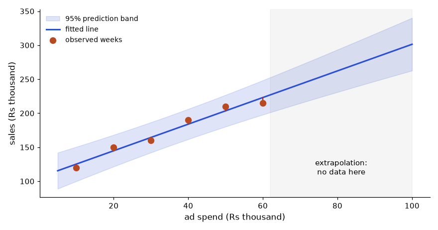
How to read it: The band is narrowest at the average spend (35) and widens on both sides. Past 60 (grey zone) there is no data, the band is wide, and the line itself is a guess. At spend 35 a single week is predicted within ±22.1; at spend 100 the forecast is 301.4 but ±38.8, and that assumes the straight line still holds, which sales usually do not (note the last two points already flatten).
Problem 7.7.2 The manager wants a forecast for a week with Rs 100 thousand of ads. Should you give it?
| Compute | 105.67 + 1.957 × 100 = 301.4 (thousand). |
|---|---|
| Range | The data stop at 60. 100 is 40 units beyond the last point. The interval is ±38.8 even if the line is right. |
| Shape | The last points (210, 215) show a flattening: the gain from 50 to 60 was only 5, versus about 20 earlier. Diminishing returns are likely. |
| Answer | Give the number only as a labelled extrapolation with a wide range, and recommend a test at 70 or 80 first. Never present 301 as a plan. |
Regression in Excel
The same numbers come from simple functions. With x in A2:A7 and y in B2:B7: =SLOPE(B2:B7, A2:A7) gives 1.957, =INTERCEPT(B2:B7, A2:A7) gives 105.67, =RSQ(B2:B7, A2:A7) gives 0.9686, and =FORECAST.LINEAR(35, B2:B7, A2:A7) gives 174.17. For everything at once, enable File, Options, Add-ins, Analysis ToolPak, then Data, Data Analysis, Regression: it writes a table with the coefficients, standard errors, t statistics, p-values, confidence intervals and R-squared. =LINEST(B2:B7, A2:A7, TRUE, TRUE) returns the same as an array (slope and intercept in the first row, their standard errors in the second, R-squared and the standard error of y in the third). Excel steps are not run here; the values above are the Python results.
Several inputs: multiple regression
Now the more realistic case: 400 product-days with units sold, price, ad spend and a discount flag (1 if a discount ran). The data are simulated with a known rule, units = 60 − 2.0 × price + 0.5 × ad + 6 × discount + noise, and discounts are made more likely when ad spend is high, as in real campaigns. A dummy variable (0/1) like the discount flag handles categories: its coefficient is the average difference between the groups, with the other inputs held fixed. For a category with m values you need m − 1 dummies.
import numpy as np, pandas as pd
from scipy import stats
rng = np.random.default_rng(12)
n = 400
price = rng.uniform(8, 20, n).round(1)
ad = rng.uniform(0, 30, n).round(1)
discount = (rng.uniform(0, 1, n) < (0.15 + 0.02 * ad)).astype(int)
units = 60 - 2.0 * price + 0.5 * ad + 6 * discount + rng.normal(0, 5, n)
df = pd.DataFrame(dict(units=units.round(1), price=price, ad=ad, discount=discount))
def ols(X, y, names):
X = np.column_stack([np.ones(len(y))] + X); k = X.shape[1]
beta = np.linalg.lstsq(X, y, rcond=None)[0]
res = y - X @ beta
s2 = (res ** 2).sum() / (len(y) - k)
se = np.sqrt(np.diag(s2 * np.linalg.inv(X.T @ X)))
t = beta / se
p = 2 * stats.t.sf(abs(t), len(y) - k)
r2 = 1 - (res ** 2).sum() / ((y - y.mean()) ** 2).sum()
adj = 1 - (1 - r2) * (len(y) - 1) / (len(y) - k)
return pd.DataFrame(dict(coef=beta, se=se, t=t, p=p), index=["intercept"] + names).round(3), round(r2, 3), round(adj, 3)
y = df.units.values
full, r2, adj = ols([df.price.values, df.ad.values, df.discount.values], y, ["price", "ad", "discount"])
print(full); print("R2:", r2, " adjusted R2:", adj) coef se t p
intercept 59.654 1.074 55.562 0.0
price -2.029 0.069 -29.482 0.0
ad 0.537 0.030 17.735 0.0
discount 6.470 0.544 11.904 0.0
R2: 0.795 adjusted R2: 0.793Each coefficient is close to the rule we built in (-2.03 for price against -2.0, 0.537 for ads against 0.5, 6.47 for the discount flag against 6). Read them as sentences: at the same ad spend and discount status, Rs 1 more on price goes with 2.03 fewer units; a discount day sells 6.5 more units than a non-discount day at the same price and ad spend. The p-values are tiny, the R-squared is 0.795, and the adjusted R-squared (which penalises extra predictors) is 0.793.
Problem 7.7.3 Predict units for a day with price 12, ad spend 20 and a discount.
| Formula | units = 59.654 − 2.029 × price + 0.537 × ad + 6.470 × discount |
|---|---|
| Plug in | 59.654 − 2.029 × 12 + 0.537 × 20 + 6.470 × 1 |
| Compute | 59.654 − 24.348 + 10.740 + 6.470 = 52.516 |
| Check | The true rule gives 60 − 24 + 10 + 6 = 52. The fitted value 52.5 is within noise (typical error about 5 units). |
The omitted variable trap
What if you forgot to include ad spend? The discount flag then picks up some of the ad effect, because discounts happen on high-ad days.
import numpy as np, pandas as pd
from scipy import stats
rng = np.random.default_rng(12)
n = 400
price = rng.uniform(8, 20, n).round(1)
ad = rng.uniform(0, 30, n).round(1)
discount = (rng.uniform(0, 1, n) < (0.15 + 0.02 * ad)).astype(int)
units = 60 - 2.0 * price + 0.5 * ad + 6 * discount + rng.normal(0, 5, n)
df = pd.DataFrame(dict(units=units.round(1), price=price, ad=ad, discount=discount))
def ols(X, y, names):
X = np.column_stack([np.ones(len(y))] + X); k = X.shape[1]
beta = np.linalg.lstsq(X, y, rcond=None)[0]
res = y - X @ beta
s2 = (res ** 2).sum() / (len(y) - k)
se = np.sqrt(np.diag(s2 * np.linalg.inv(X.T @ X)))
t = beta / se
p = 2 * stats.t.sf(abs(t), len(y) - k)
r2 = 1 - (res ** 2).sum() / ((y - y.mean()) ** 2).sum()
adj = 1 - (1 - r2) * (len(y) - 1) / (len(y) - k)
return pd.DataFrame(dict(coef=beta, se=se, t=t, p=p), index=["intercept"] + names).round(3), round(r2, 3), round(adj, 3)
y = df.units.values
short, r2, adj = ols([df.price.values, df.discount.values], y, ["price", "discount"])
print(short); print("R2:", r2)
print(df.corr().round(2)["discount"]) coef se t p
intercept 65.718 1.362 48.268 0.0
price -2.006 0.092 -21.795 0.0
discount 10.174 0.671 15.156 0.0
R2: 0.631
units 0.44
price 0.04
ad 0.39
discount 1.00
Name: discount, dtype: float64The discount coefficient jumps from 6.47 to 10.17, a 57% overstatement, and R-squared falls to 0.631. Ad spend and discount are correlated (0.39), and ad spend drives sales, so the short model credits the discount for the ads' work. This is omitted variable bias. It is the same failure that Simpson's paradox shows in Chapter 13, and the reason a business answer from a regression needs the right inputs, not just a good fit. The fix is to include the confounders you can measure; for ones you cannot, state it as a limit.
Residual checks
A residual is actual minus fitted. If the straight line is the right shape, residuals look like random noise around zero with no pattern. Plot residuals against fitted values and look for: a curve (the relationship is not linear; add a squared term or transform), a funnel that widens (variance grows with size; try a log of y), and a few huge residuals (outliers; check them before deleting them).
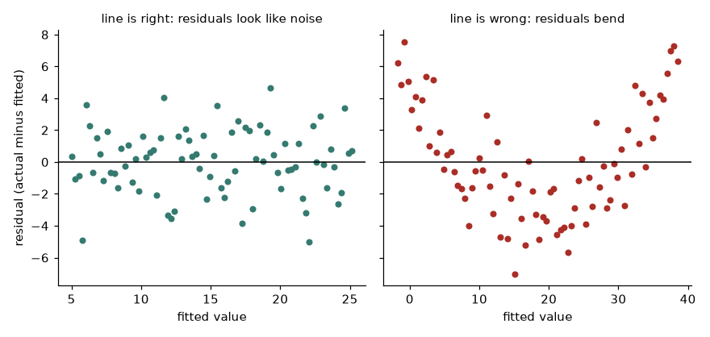
How to read it: On the left the points scatter evenly above and below zero, so the line is adequate. On the right the residuals go positive, negative, then positive again: a U. The line systematically over-predicts in the middle and under-predicts at the ends, so no coefficient from this model can be trusted until the shape is fixed.
Multicollinearity
If two inputs carry almost the same information, the model cannot tell which one does the work, and the coefficients become unstable. The variance inflation factor for input j is VIF = 1 / (1 − R²j), where R²j comes from regressing input j on the other inputs. Values above 5 to 10 are a warning. Below we add a noisy copy of ad spend (for example "ad spend as recorded by a second system").
import numpy as np, pandas as pd
from scipy import stats
rng = np.random.default_rng(12)
n = 400
price = rng.uniform(8, 20, n).round(1)
ad = rng.uniform(0, 30, n).round(1)
discount = (rng.uniform(0, 1, n) < (0.15 + 0.02 * ad)).astype(int)
units = 60 - 2.0 * price + 0.5 * ad + 6 * discount + rng.normal(0, 5, n)
df = pd.DataFrame(dict(units=units.round(1), price=price, ad=ad, discount=discount))
def ols(X, y, names):
X = np.column_stack([np.ones(len(y))] + X); k = X.shape[1]
beta = np.linalg.lstsq(X, y, rcond=None)[0]
res = y - X @ beta
s2 = (res ** 2).sum() / (len(y) - k)
se = np.sqrt(np.diag(s2 * np.linalg.inv(X.T @ X)))
t = beta / se
p = 2 * stats.t.sf(abs(t), len(y) - k)
r2 = 1 - (res ** 2).sum() / ((y - y.mean()) ** 2).sum()
adj = 1 - (1 - r2) * (len(y) - 1) / (len(y) - k)
return pd.DataFrame(dict(coef=beta, se=se, t=t, p=p), index=["intercept"] + names).round(3), round(r2, 3), round(adj, 3)
def vif(cols):
out = {}
for j, c in enumerate(cols):
others = [o for i, o in enumerate(cols) if i != j]
_, r2, _ = ols([df[o].values for o in others], df[c].values, others)
out[c] = float(round(1 / (1 - r2), 2))
return out
df["ad_copy"] = df.ad + rng.normal(0, 0.5, n)
print(vif(["price", "ad", "discount"]))
bad, r2, adj = ols([df.price.values, df.ad.values, df.ad_copy.values], df.units.values, ["price", "ad", "ad_copy"])
print(bad); print("R2:", r2)
print(vif(["price", "ad", "ad_copy"])){'price': 1.0, 'ad': 1.18, 'discount': 1.18}
coef se t p
intercept 59.956 1.245 48.158 0.000
price -1.995 0.080 -24.996 0.000
ad 1.877 0.553 3.396 0.001
ad_copy -1.199 0.551 -2.177 0.030
R2: 0.724
{'price': 1.0, 'ad': 333.33, 'ad_copy': 333.33}With sensible inputs the VIFs are 1.0 to 1.18. With the near-duplicate, ad and ad_copy have VIF 333, and the coefficients become 1.877 and -1.199: they add to 0.68 (the true total is 0.5), and individually they are nonsense (a negative effect for a second copy of the same ad spend). Predictions stay fine; interpretation breaks. Drop one of them, combine them, or use a regularised model.
Logistic regression for conversion
When the outcome is yes or no (converted or not), a straight line breaks: it predicts probabilities below 0 and above 1. Logistic regression models the log-odds: log(p / (1 − p)) = b0 + b1·x1 + ... Each coefficient is the change in log-odds for one unit of x, and exp(coefficient) is the odds ratio. If the odds ratio is 2.2 then the odds of converting are 2.2 times as large. Below, 5,000 visitors, with mobile (0/1), coupon shown (0/1) and number of past visits. We fit by the iteratively reweighted least squares (IRLS) method with plain NumPy and compare with scikit-learn.
import numpy as np, pandas as pd
from sklearn.linear_model import LogisticRegression
rng = np.random.default_rng(3)
n = 5000
mobile = (rng.uniform(size=n) < 0.6).astype(int)
coupon = (rng.uniform(size=n) < 0.5).astype(int)
visits = rng.poisson(3, n)
p = 1 / (1 + np.exp(-(-3.0 - 0.4 * mobile + 0.7 * coupon + 0.25 * visits)))
y = (rng.uniform(size=n) < p).astype(int)
print(pd.DataFrame(dict(coupon=coupon, conv=y)).groupby("coupon")["conv"].agg(["mean", "size"]).round(4))
X = np.column_stack([np.ones(n), mobile, coupon, visits])
beta = np.zeros(4)
for it in range(25): # Newton steps, usually 5 to 8
mu = 1 / (1 + np.exp(-X @ beta)); W = mu * (1 - mu)
step = np.linalg.solve(X.T @ (X * W[:, None]), X.T @ (y - mu))
beta += step
if np.abs(step).max() < 1e-10: break
se = np.sqrt(np.diag(np.linalg.inv(X.T @ (X * W[:, None]))))
table = pd.DataFrame(dict(coef=beta, se=se, odds_ratio=np.exp(beta), lo=np.exp(beta - 1.96 * se), hi=np.exp(beta + 1.96 * se)),
index=["intercept", "mobile", "coupon", "visits"]).round(3)
print("iterations:", it + 1); print(table)
sk = LogisticRegression(C=1e9, max_iter=1000).fit(X[:, 1:], y)
print("sklearn:", sk.intercept_.round(3), sk.coef_.round(3))
pr = lambda m, c, v: 1 / (1 + np.exp(-(beta @ np.array([1, m, c, v]))))
print("desktop, 3 visits: coupon", round(pr(0, 1, 3), 4), " no coupon", round(pr(0, 0, 3), 4)) mean size
coupon
0 0.0818 2468
1 0.1647 2532
iterations: 7
coef se odds_ratio lo hi
intercept -2.93 0.123 0.053 0.042 0.068
mobile -0.45 0.088 0.638 0.537 0.758
coupon 0.80 0.092 2.225 1.857 2.665
visits 0.23 0.024 1.259 1.201 1.319
sklearn: [-2.93] [[-0.45 0.798 0.23 ]]
desktop, 3 visits: coupon 0.1916 no coupon 0.0963The raw coupon groups convert at 16.5% against 8.2%. The model says the odds ratio for the coupon is 2.225 (95% interval 1.86 to 2.67), and the odds of a mobile user are 0.638 times those of a desktop user (the mobile penalty). Each extra past visit multiplies the odds by 1.26. NumPy and scikit-learn agree on the coefficients (-2.93 intercept, -0.45, 0.80, 0.23). A subtle point: an odds ratio is not a probability ratio. For a desktop user with 3 visits, a coupon moves the probability from 9.6% to 19.2%, which is +9.5 points, a ratio of 2.0 in probability but 2.2 in odds. Report the probability change to a business audience.
Problem 7.7.4 The intercept is -2.93. What conversion probability does it give for a desktop visitor with no coupon and 0 past visits?
| Log-odds | -2.93 |
|---|---|
| Odds | exp(-2.93) = 0.0534 |
| Probability | p = odds / (1 + odds) = 0.0534 / 1.0534 = 0.0507 |
| Meaning | About 5.1%. Equivalent to the intercept row's odds ratio of 0.053. A new anonymous desktop visitor has about a 1 in 20 chance of converting. |
With statsmodels (not installed in this environment, so not run here) the same fits are one line each: smf.ols("units ~ price + ad + discount", df).fit().summary() and smf.logit("conv ~ mobile + coupon + visits", df).fit().summary(). The summary table prints coefficients, standard errors, p-values and intervals, so the hand-built tables above are what that table contains.
Going deeper
- Assumptions that matter. In order of importance for an analyst: the right inputs and shape (residual plots), independent rows (repeated rows from the same user break the standard errors; cluster by user), roughly constant spread, and then, last, normal residuals. Large samples forgive the last one.
- Interactions. If the coupon works better on mobile than on desktop, add
mobile × coupon. Then the coupon coefficient alone is the effect for desktop only. - Log transforms. Regressing log(sales) on ad spend makes a coefficient a percentage change (a coefficient 0.02 means about 2% more sales per unit).
- Prediction versus explanation. If you want accurate forecasts, validate on held-out data and accept collinearity. If you want a causal claim, you need the design of Section 13.6, not a larger model.
Chapter recap
- Start with context: source, grain, period, key, decision.
- Quality scan before charts: missing, duplicates, impossible values, categories, units.
- Compare each value with its own group's median to catch unit mistakes.
- Missing data mechanisms: MCAR, MAR, MNAR; look at missing rates by other columns; keep a flag if unsure.
- Univariate: describe, skew, log, quantiles; mean greater than median means a right tail.
- Bivariate: grouped summaries, cross-tabs, correlation, tests; one significant test among many can be a false alarm.
- Check the coverage of time: an incomplete period or a cohort-only dataset creates fake trends.
- Write insights with evidence, confidence and action; label uncertain ones honestly.
| Step | Code |
|---|---|
| Shape, types | df.shape, df.dtypes, df.info() |
| Missing / duplicates | df.isna().sum(), df.duplicated().sum() |
| Group-relative outlier | df.amount / df.groupby("g").amount.transform("median") |
| Distribution | df.x.describe(), df.x.skew(), df.x.quantile([.5,.9,.99]) |
| Group summary | df.groupby("g").x.agg(["count","median","mean"]) |
| Cross-tab | pd.crosstab(a, b, normalize="index") |
| Test of independence | scipy.stats.chi2_contingency(table) |
| Join check | merge(..., validate="many_to_one") |
Practice set
Problem 1 A column has values 10, 12, 11, 13, 200. Mean and median? Which is typical?
Answer: Mean 49.2, median 12. The median is typical; 200 pulls the mean up.
Problem 2 After cleaning, orders has 2,232 rows and 60 missing amounts. What share is missing?
Answer: 60 / 2232 = 2.69%, about 2.7%.
Problem 3 The grocery median is 152.4. An order has grocery amount 3,566. Ratio and verdict?
Answer: 3566 / 152.4 = 23.4. Far above a plausible range for grocery, so flag it (likely paise error: 35.66, which is plausible).
Problem 4 Skewness is +2.1 and the mean is above the median. Describe the shape.
Answer: Right-skewed: a few large values stretch the right tail.
Problem 5 Fashion: 76 returns of 760 orders. Overall return rate 7.75%. What are the expected returns?
Answer: 760 × 0.0775 = 58.9. Observed 76 is 17.1 higher.
Problem 6 Find the bug: df.groupby("category")["amount"].mean() shows 8 categories for 4 real ones.
Answer: Inconsistent case. Normalise with .str.lower() (and .str.strip()) before grouping.
Problem 7 Find the bug: a report says "order volume collapsed 99% from June to December". The data holds only customers who signed up before July. What is wrong?
Answer: The dataset stops adding new customers; later months only contain orders from old signups. The "collapse" is a coverage artefact. Compare cohorts at the same age, not calendar months.
Problem 8 You run 10 independent tests at the 5% level when all nulls are true. Probability of at least one false alarm?
Answer: 1 − 0.95¹⁰ = 1 − 0.5987 = 0.401, about 40%.
Problem 9 Missing income is more common for customers under 25 (observed age). Which mechanism?
Answer: MAR: the missingness depends on another observed column (age).
Problem 10 (interview) "You find a column where 5% of values are exactly 0 but the column is a price. What do you do?"
Answer: Check if 0 means "missing", "free" or a placeholder. Look at related columns (status, category, date) for patterns. Ask the data owner. Do not average the zeros as real prices. Report the count and treat them as missing if confirmed.
Problem 11 (interview) "Walk me through your EDA process on a new dataset in five minutes."
Answer: Ask the grain, key and period. Check shape, dtypes, missing, duplicates, impossible values, category spellings and units. Write a cleaning log. Look at the distribution of key numbers (skew, percentiles). Compare groups and test differences. Check the time coverage. Summarise insights with evidence and confidence, and list open questions for the data owner.
Problem 12 Points (1, 2), (2, 4), (3, 5). Compute slope and intercept by hand.
Answer: x̄ = 2, ȳ = 11/3 = 3.667. Σ(x−x̄)(y−ȳ) = (−1)(−1.667) + 0 + (1)(1.333) = 3.0. Σ(x−x̄)² = 2. Slope = 1.5, intercept = 3.667 − 1.5 × 2 = 0.667.
Problem 13 A regression of units on price gives slope -2.0 and R-squared 0.63. A colleague says price explains 63% of the cause of sales. Correct them.
Answer: R-squared is the share of variation in sales that the line accounts for in this data, not a share of causation. Price may be correlated with omitted variables (promotion timing), and the 37% includes everything not modelled.
Problem 14 The discount coefficient fell from 10.2 to 6.5 when ad spend was added. What does that tell you?
Answer: Ad spend was correlated with both discount and units. The short model overstated the discount effect (omitted variable bias). The 6.5 is the better estimate, still conditional on the included inputs.
Problem 15 Odds ratio 1.26 for each past visit. A visitor has 4 past visits instead of 2. By what factor do the odds change?
Answer: 1.26² = 1.59. Odds are multiplied by about 1.59.
Problem 16 Two inputs have VIF 150 and 140. Prediction accuracy on test data is fine. Should you worry?
Answer: For prediction, not much. For explaining individual coefficients, yes: they are unstable and can have flipped signs. Drop or merge one, or report only the combined effect.
Problem 17 Find the bug: an analyst fits a line to 2024 monthly sales and uses it to forecast December 2027 with a very narrow interval.
Answer: Extrapolation far beyond the data, and a narrow interval only describes the in-sample noise (it assumes the line is right and ignores seasonality). The forecast interval should widen with distance (as in the band figure) and a seasonal model (Section 5.7) is more suitable.
Problem 18 Interview: "How would you check that a regression is trustworthy?"
Answer: Residual plots for shape and spread, VIF for collinearity, check for repeated users (cluster), hold-out validation for prediction, sanity of coefficient signs and sizes against business knowledge, and a sensitivity run adding or dropping the key confounders.
Prompt pack
You are my patient, practical professor. I am a working professional in India moving into data roles, and English is my second language. Teach me Chapter 7 topic: Exploratory Data Analysis as a fixed routine (context and grain, quality scan, cleaning log, missing data, univariate, bivariate, time coverage, documented insights). Walk me through it on a small made-up orders dataset, step by step, and ask me to decide what to do at each step before you reveal the answer.
You are my patient, practical professor. I am a working professional moving into data roles. Explain missing data mechanisms MCAR, MAR and MNAR with three everyday examples each, how to look for evidence in a DataFrame with pandas, and what to do for each. Then give me 6 short scenarios and ask me to classify them one at a time, with feedback.
You are my patient, practical professor. I am a working professional moving into data roles. Give me a messy dataset described in words (columns, a few sample rows, known problems) and ask me to plan an EDA. Then give me 8 specific "what does this output mean" questions about skewness, medians versus means, outliers by IQR, correlations and chi-square p-values, graded easy to hard. No solutions until I answer.
You are my patient, practical professor. I am a working professional moving into data roles. Review my EDA notebook summary for mistakes: missing checks, hidden assumptions, false alarms from multiple testing, incomplete time coverage, and weak insight wording. Rewrite my top three insights as: claim, evidence, confidence, action. My summary: [PASTE HERE]
You are my patient, practical professor. I am a working professional moving into data roles. Run a mock interview on EDA and data quality: grain, duplicates, outliers, unit mistakes, missing data, skewed distributions and false discoveries. Ask 6 questions one at a time, grade each answer from 1 to 5, and show a model answer in simple English with one number-based example.
Your manager will not read your pandas code. She will look at one chart for ten seconds and decide whether to trust you. A good chart makes the answer obvious in those ten seconds. A bad one hides the answer, or worse, tells a false story. Visualization is the last step of every analysis and the only step most people ever see, so it is where your work is judged.
This chapter takes you from "I can make a bar chart" to "I can build a reliable, honest, good-looking chart or one-page dashboard on demand, and I know why every pixel is there". You will learn how the eye reads a chart, how to pick the right chart in 60 seconds, how each of 29 chart types is built in matplotlib, seaborn and plotly, how to fix colour, labels and layout, how to tell a story, how charts lie, and how to wire a pandas table into a finished dashboard. We end with 29 practice problems with full answers.
The Chapter 1 question, "which city sells the most?", is our thread. By the end you will answer it, and a dozen harder questions, with pictures that cannot be misread.
| Data we reuse | What it is | Where it is defined |
|---|---|---|
| The Sales table | 8 order rows (city, status, amount), total 9,340; Delhi 3,298, Mumbai 3,047, Pune 2,995 | Chapters 2 and 3, rebuilt inline as a small DataFrame |
| Monthly sales | 18 months, Jan 2024 to Jun 2025, Rs thousand: 310, 295, 340, 360, 385, 400, 380, 410, 430, 470, 560, 620, 350, 330, 375, 405, 430, 455 | Chapter 2 |
| Orders | 300 synthetic orders, Jan to Jun 2025, with city, category, channel and amount, made with a fixed seed | Built in the first block that uses it |
Every code block in this chapter is standalone: it has its own imports and its own data, so you can copy any one block into an empty file and run it. The first lines of most blocks are the same "house style" header (fonts, size, clean borders and five colour-blind-safe colours). Section 8.7 explains that header line by line; until then, treat it as setup.
8.1 Why Charts Work and How to Pick One in 60 Seconds
Words you need first
| Word | Plain meaning | Example |
|---|---|---|
| Encoding | The visual trick used to show a number: position, length, angle, area or colour | Bar length shows sales |
| Mark | The shape drawn for one data item | One bar, one dot, one line segment |
| Series | One set of related values drawn together | Sales of Delhi across months |
| Category | A label that names a group, with no size | City, channel |
| Distribution | How the values of one column spread out | Most orders are small, a few are huge |
| Chart junk | Anything on a chart that carries no information | 3D effects, heavy gridlines, shadows |
| Headline title | A title that states the finding, not the topic | "Delhi sold the most" rather than "Sales by city" |
Beginner: the ranking of what the eye reads well
In 1984 William Cleveland and Robert McGill ran experiments where people judged how large one value was compared with another when it was drawn in different ways. The order of accuracy, best to worst, has held up in later studies:
- Position on a common scale (dots or bar ends lined up on the same axis).
- Length (bars that start at the same line).
- Angle and slope (pie slices, steepness of a line).
- Area (bubble size, treemap boxes).
- Colour shade (light to dark).
The rule that follows: put the number you care about on position or length, and use the weaker encodings only for extra detail. That is why we sort bars and why pies are rare. The next block draws the same five values (A to E) four ways. Try to rank them before reading the printed numbers.
import numpy as np, pandas as pd, matplotlib.pyplot as plt
plt.rcParams.update({"figure.figsize": (8, 4.2), "figure.dpi": 110, "font.size": 12,
"axes.titlesize": 14, "axes.titleweight": "bold", "axes.titlelocation": "left",
"axes.spines.top": False, "axes.spines.right": False})
BLUE, ORANGE, TEAL, RED, PURPLE, GREY = "#2b4fd6", "#b84a22", "#357a70", "#aa2d26", "#6a2fd0", "#9a9a9a"
vals = np.array([50, 46, 40, 30, 20])
names = list("ABCDE")
fig, axs = plt.subplots(2, 2, figsize=(8, 5.4))
axs[0, 0].bar(names, vals, color=BLUE)
axs[0, 0].set_title("Length (bars)")
axs[0, 0].set_yticks([])
axs[0, 1].pie(vals, labels=names, colors=[BLUE, ORANGE, TEAL, RED, PURPLE],
startangle=90, counterclock=False, wedgeprops={"edgecolor": "white"})
axs[0, 1].set_title("Angle (pie)")
radius = np.sqrt(vals / np.pi) # area proportional to value
for i, (r, nm) in enumerate(zip(radius, names)):
axs[1, 0].add_patch(plt.Circle((i * 2 + 1, 0), r * 0.17, color=BLUE))
axs[1, 0].text(i * 2 + 1, -1.15, nm, ha="center")
axs[1, 0].set(xlim=(-0.2, 10.2), ylim=(-1.5, 1.2), aspect="equal"); axs[1, 0].axis("off")
axs[1, 0].set_title("Area (bubbles)", loc="left")
axs[1, 1].imshow(vals[None, :], cmap="Blues", vmin=0, vmax=55, aspect=1.0)
axs[1, 1].set_xticks(range(5), names); axs[1, 1].set_yticks([])
axs[1, 1].set_title("Shade (colour)")
for ax in axs.ravel(): ax.spines[["left", "bottom"]].set_visible(False)
fig.tight_layout()
fig.savefig("ch08v_encodings.png", dpi=110)
print("values:", vals.tolist())
print("A/B by length:", round(vals[0] / vals[1], 3))
print("pie angle of A and B (degrees):", np.round(360 * vals[:2] / vals.sum(), 1).tolist())
print("A/B radius ratio when area is proportional:", round(np.sqrt(vals[0] / vals[1]), 3))
print("saved")values: [50, 46, 40, 30, 20]
A/B by length: 1.087
pie angle of A and B (degrees): [96.8, 89.0]
A/B radius ratio when area is proportional: 1.043
saved
How to read it. In the bar panel, A is taller than B and you see it at once. In the pie, A and B differ by only about 8 degrees (96.8 versus 89.0), which is hard to see. In the bubbles, the radii differ by only 4%, and in the shades the two blues look identical. The printed numbers prove it: the difference is about 9% in value (50 versus 46) but your eye only catches it with length.
The code in plain words: plt.subplots(2, 2) makes four plotting areas; each is filled with a different encoding of the same vals. For the bubbles the radius is the square root of the value (area = pi times radius squared), otherwise bigger values would look far too big. You will meet each call again in the cookbook.
Going deeper: why area and colour mislead
Psychologist S. S. Stevens found that perceived magnitude follows a power law: perceived = actualk. For length k is close to 1 (honest), for area k is about 0.7 (a bubble with twice the area looks only about 1.6 times as big), and for brightness it is lower still. Heer and Bostock (2010) re-ran the Cleveland and McGill tests on thousands of crowd workers and confirmed the same ordering. The practical lessons are three: (1) never size bubbles by radius, size by area; (2) add the number as text when you use area or colour; (3) a perceptually weak encoding is fine for a second variable but not for the main one.
The 60-second decision guide: question to chart
Start from the question, not from the chart menu. Write the question as one sentence, find its verb (compare, rank, trend, compose, distribute, relate), and read across.
| You want to know | Verb | First choice | Second choice | Avoid |
|---|---|---|---|---|
| How big is each category? | compare | Sorted bar | Dot plot | Pie with more than 3 slices, 3D bars |
| Who is top and bottom of many items? | rank | Horizontal bar | Lollipop or dot plot | Vertical bars with rotated labels |
| How does a number change over time? | trend | Line | Area (one series) or columns (12 periods or fewer) | Pie per period |
| How do parts make up a whole? | compose | 100% stacked bar | Donut with 2 to 3 parts | Pie with 8 slices |
| How are values spread? | distribute | Histogram | Box, violin, KDE | The average alone |
| Is there a link between two numbers? | relate | Scatter | Hexbin for big data | Dual-axis lines |
| How do groups differ in spread? | compare spread | Box or violin per group | Overlaid KDE | Overlapping histograms |
| What does a grid of two categories look like? | pattern | Heatmap | Grouped bar | 3D surface |
| Before versus after for each item? | change | Dumbbell or slope chart | Paired bars | Two pies |
| How did we get from start to end? | bridge | Waterfall | Table of differences | Stacked bars |
| Where do people drop off in steps? | funnel | Funnel (bars) | Table with conversion % | Pie |
| Which few causes matter most? | prioritise | Pareto | Sorted bar | Unsorted bars |
| Do newer customers stay as long as older ones? | cohort | Cohort heatmap | Retention lines | One average line |
| How does it differ by place? | geography | Map or tile grid | Sorted bar by region | Map of raw counts with no per-person rate |
| Do I need exact numbers? | look up | Table | Bars with labels | Chart with 40 labels |
| A trend inside a table row? | glance | Sparkline | Small multiples | Full chart per row |
Problem 8.1.1 Your manager asks: "Did the festive season change the shape of our 18 months of sales?" Which chart do you draw?
| Step 1: the verb | "change the shape over time" is a trend question. |
|---|---|
| Step 2: the data | 18 monthly values, one series. 18 points is too many for clean columns and the time order matters. |
| Step 3: the table | Trend gives a line chart; one series with a seasonal peak also suits a light area under the line, but the line is enough. |
| Step 4: the message | Nov 2024 (560) and Dec 2024 (620) are far above the October value 470 and the January 2025 value 350. Annotate the peak. |
| Answer | A line chart of the 18 months with an annotation on December 2024 (620). Section 8.4 draws it. |
Problem 8.1.2 A pie has five slices with values 50, 46, 40, 30 and 20. What is the angle of the slice for A, and what share is that?
| Formula | angle = 360 degrees x value / total |
|---|---|
| Plug in | total = 50 + 46 + 40 + 30 + 20 = 186; angle for A = 360 x 50 / 186 |
| Compute | 18000 / 186 = 96.8 degrees; share = 50 / 186 = 26.9% |
| Check | B: 360 x 46 / 186 = 89.0 degrees; the gap between A and B is about 8 degrees, matching the block above. |
| Meaning | A gap of about 8 degrees is below what most people can judge by eye. The same 4-unit gap is a visible step on bars. |
Words you will meet in code
| Term | Meaning |
|---|---|
| Figure | The whole canvas (size, resolution, saving) |
| Axes | One plot area with its x and y axis. A figure holds one or more. |
| Axis | One of the two number lines (x axis, y axis) of an axes. Note the spelling: Axes is the plot, axis is the line. |
| Tick | A small mark on an axis with a number or label beside it |
| Legend | The key that maps colours or shapes to series names |
| Aesthetic | A visual property that can carry data: x, y, colour (hue), size, style |
| Hue | seaborn and plotly name for "colour by this column" |
| Facet | One small panel in a grid of panels, one per group |
| Colormap | A rule mapping numbers to colours (cmap in matplotlib) |
| Raster (PNG) | Image made of pixels; blurs when enlarged |
| Vector (SVG, PDF) | Image made of shapes; stays sharp at any size |
| dpi | Dots per inch: pixels per inch of the saved image |
8.2 The Anatomy of a Figure: What Every Part Is For
Before drawing 28 chart types, learn the parts they all share. The numbered badges in the picture below match the table that follows.
import numpy as np, pandas as pd, matplotlib.pyplot as plt
plt.rcParams.update({"figure.figsize": (8, 4.2), "figure.dpi": 110, "font.size": 12,
"axes.titlesize": 14, "axes.titleweight": "bold", "axes.titlelocation": "left",
"axes.spines.top": False, "axes.spines.right": False})
BLUE, ORANGE, TEAL, RED, PURPLE, GREY = "#2b4fd6", "#b84a22", "#357a70", "#aa2d26", "#6a2fd0", "#9a9a9a"
months = pd.period_range("2024-01", "2025-06", freq="M").to_timestamp()
monthly = pd.Series([310, 295, 340, 360, 385, 400, 380, 410, 430, 470, 560, 620,
350, 330, 375, 405, 430, 455], index=months, name="sales_k")
fig, ax = plt.subplots(figsize=(8, 4.8))
fig.subplots_adjust(left=0.15, right=0.96, top=0.78, bottom=0.2)
x = np.arange(6)
ax.plot(x, monthly.iloc[:6].values, color=GREY, marker="o", lw=2.5, label="Jan to Jun 2024")
ax.plot(x, monthly.iloc[12:18].values, color=BLUE, marker="o", lw=2.5, label="Jan to Jun 2025")
ax.set_xticks(x, ["Jan", "Feb", "Mar", "Apr", "May", "Jun"])
ax.set_ylim(250, 500)
ax.set_ylabel("Sales (Rs thousand)")
ax.set_title("Sales ran 10% to 14% above last year", pad=30)
ax.text(0, 1.04, "Monthly sales, Rs thousand, first half of each year", transform=ax.transAxes, color="#555")
ax.grid(axis="y", color="#dddddd", lw=0.8); ax.set_axisbelow(True)
ax.legend(frameon=False, loc="lower right")
ax.annotate("Jun 2025: 455\n(+13.7% on Jun 2024)", xy=(5, 455), xytext=(2.6, 465),
arrowprops=dict(arrowstyle="->", color="#333"), color="#333")
fig.text(0.15, 0.04, "Source: monthly sales table, Chapter 2", color="#666", fontsize=10)
def badge(n, xy, coords="figure fraction"):
ax.annotate(str(n), xy=xy, xycoords=coords, ha="center", va="center", fontsize=10, color="white",
fontweight="bold", bbox=dict(boxstyle="circle,pad=0.25", fc=RED, ec="none"), zorder=10)
badge(1, (0.095, 0.877)); badge(2, (0.69, 0.81)); badge(3, (0.08, 0.27)); badge(4, (0.118, 0.745))
badge(5, (1.5, 400), "data"); badge(6, (1.0, 351), "data"); badge(7, (0.705, 0.29)); badge(8, (2.3, 470), "data")
badge(9, (2, 0.105), ("data", "figure fraction")); badge(10, (0.125, 0.045)); badge(11, (4.5, 250), "data")
fig.savefig("ch08v_anatomy.png", dpi=110)
print("jun growth:", round((455 / 400 - 1) * 100, 1), "| jan growth:", round((350 / 310 - 1) * 100, 1))
print("saved")jun growth: 13.7 | jan growth: 12.9
saved
| No. | Part | Its job | matplotlib call | Common failure |
|---|---|---|---|---|
| 1 | Title | State the finding in one sentence | ax.set_title(...) | A topic ("Sales") instead of a finding |
| 2 | Subtitle | Say what is measured, in what unit, over what period | ax.text(...) | Missing unit |
| 3 | Axis label | Name the quantity and its unit | ax.set_ylabel(...) | "Value", or no unit |
| 4 | Tick labels | Let the reader read off values | ax.set_yticks, tick_params | Too many ticks, tiny font |
| 5 | Gridline | A faint guide from mark to scale | ax.grid(axis="y") | Dark, heavy grid that competes with data |
| 6 | Marks (data) | The evidence: lines, bars, dots | ax.plot, ax.bar | Thin or pale marks |
| 7 | Legend | Map colour to series name | ax.legend(frameon=False) | Far from the data, or covering it |
| 8 | Annotation | Point at the one thing to notice | ax.annotate(...) | Absent; the reader has to find the story |
| 9 | X tick labels | Name the categories or times | ax.set_xticks(pos, labels) | Overlapping, rotated 90 degrees |
| 10 | Source note | Say where the numbers came from | fig.text(...) | Missing, so the chart cannot be checked |
| 11 | Baseline and spines | The frame and the zero line | ax.spines[...] | Frame boxes drawn on all four sides |
Numbered line-by-line explanation
- The first lines build
monthly:pd.period_rangemakes 18 month labels,to_timestamp()turns them into dates, and the 18 sales values become apd.Seriesindexed by date. Slices likemonthly.iloc[:6]take the first six rows andmonthly.iloc[12:18]the last six. fig.subplots_adjust(left, right, top, bottom)sets the empty margins as fractions of the figure. We make room at the top (title and subtitle) and at the bottom (source).ax.plot(x, y, color=, marker="o", lw=2.5, label=)draws one line.labelis the name the legend will use. Grey for last year, blue for this year: the old series is context, the new one is the message.ax.set_xticks(x, labels)puts month names at positions 0 to 5. Passing positions and labels together keeps them paired.ax.set_ylim(250, 500)fixes the visible y range. This is a line chart (position encodes value), so a non-zero start is acceptable, but always say so; see 8.12.ax.set_title(..., pad=30)moves the title up to leave room for the subtitle written withax.text(x, y, s, transform=ax.transAxes), wheretransAxesmeans "x and y are fractions of the axes box, 0 to 1".ax.grid(axis="y")andset_axisbelow(True)draw faint horizontal guides behind the data, never in front.ax.annotate(text, xy=point, xytext=text_position, arrowprops=...)writes a note and an arrow.xyis what you point at;xytextis where the words sit.fig.text(0.15, 0.04, ...)writes on the figure itself (fractions of the whole canvas), which is where a source note belongs.badge(...)is only for this teaching picture: it draws a red circle with a number using an annotation with a circularbbox.
The printed check: June 2025 is 455 and June 2024 is 400, so 455 / 400 - 1 = 13.7% (the annotation); January is 350 / 310 - 1 = 12.9%. The title says "10% to 14%", and the six monthly growth rates run from 10.3% (Mar) to 13.7% (Jun). Always check that the title is true to the numbers.
Units, formats and labels: small details that cost trust
- Say the unit once, in the axis label or subtitle. "Rs thousand" means 455 is Rs 455,000. If you divide by 1,000 on the chart, say so.
- Use thousands separators (3,298 not 3298) and a consistent number of decimals. Percent axes should say "%"; a change between two percentages is in percentage points, not percent.
- Dates: show the smallest useful unit. For monthly data, "Jan 24" or "Jan" with the year once; never "2024-01-01 00:00:00".
- Category labels: if they are long, flip the chart horizontal instead of rotating text.
- Legend or direct labels: a legend forces the eye to travel; a label at the end of each line does not (8.10).
ax.set_ylabel("Revenue"). Right: ax.set_ylabel("Revenue (Rs crore)") and a subtitle with the period.Problem 8.2.1 Look at a default pandas chart: by_city.plot.bar() with 3 vertical bars, a legend box saying "Amount", title "Amount", no units and heavy grid on both axes. List what is missing or wrong, using the part numbers above.
| Title (1) | "Amount" is a topic. Replace with "Delhi sold the most: Rs 3,298 of Rs 9,340". |
|---|---|
| Subtitle and unit (2, 3) | Add "Rs, delivered and other orders, Sales table" and an axis label "Amount (Rs)". |
| Grid (5) | Remove the vertical grid; keep a faint horizontal one or none if bars carry labels. |
| Legend (7) | One series, so the legend box adds nothing. Delete it. |
| Annotation (8) | Highlight Delhi in blue and the rest in grey, and label the bar values (3,298; 3,047; 2,995). |
| Source (10) | "Source: Sales table, Chapter 3". |
| Answer | Six fixes. The chart is built in 8.3. |
Going deeper: ink, and the figure as an accessible object
Edward Tufte called the share of ink that shows data the data-ink ratio: everything that is not data (borders, shadows, heavy gridlines, redundant legends) should be erased unless it helps reading. Do not take this to the extreme; a faint gridline and an axis label are not waste. Accessibility adds another layer: put a plain-language description of the chart in the surrounding text or the alt attribute (as every figure in this chapter has), do not rely on colour alone, and keep text at 11 pt or larger on the final printed size.
8.3 Chart Cookbook I: Comparing Categories, Parts and Steps
From here to the end of 8.6 is a cookbook. Every entry has the same shape so you can find things fast: the question the chart answers, when not to use it, the numbers, the matplotlib code with its picture and a numbered explanation, the same chart in seaborn, and the same chart in plotly (not run here). Pick the chart by question using the table in 8.1, then copy the block that matches.
Bar chart: how big is each category?
Answers: "How much per city / channel / product?" Our Chapter 1 question. Do not use when: the x-axis is time with many points (use a line), or there are more than about 12 categories or long labels (use horizontal bars), or you need to compare parts of a whole across many groups (use stacked or a heatmap). Always start at zero, always sort unless the order is natural (months, age bands).
import numpy as np, pandas as pd, matplotlib.pyplot as plt
plt.rcParams.update({"figure.figsize": (8, 4.2), "figure.dpi": 110, "font.size": 12,
"axes.titlesize": 14, "axes.titleweight": "bold", "axes.titlelocation": "left",
"axes.spines.top": False, "axes.spines.right": False})
BLUE, ORANGE, TEAL, RED, PURPLE, GREY = "#2b4fd6", "#b84a22", "#357a70", "#aa2d26", "#6a2fd0", "#9a9a9a"
sales = pd.DataFrame({
"city": ["Pune", "Pune", "Pune", "Mumbai", "Mumbai", "Mumbai", "Delhi", "Delhi"],
"status": ["Delivered", "Delivered", "Returned", "Delivered", "Delivered", "Cancelled", "Delivered", "Delivered"],
"amount": [998, 1400, 597, 1299, 1298, 450, 799, 2499]})
by_city = sales.groupby("city")["amount"].sum().sort_values(ascending=False)
print(by_city.to_string())
print("grand total:", by_city.sum())
colors = [BLUE if c == by_city.idxmax() else GREY for c in by_city.index]
fig, ax = plt.subplots()
bars = ax.bar(by_city.index, by_city.values, color=colors, width=0.6)
ax.bar_label(bars, labels=[f"{v:,}" for v in by_city.values], padding=3)
ax.set_title("Delhi sold the most: Rs 3,298 of Rs 9,340")
ax.set_ylabel("Sales (Rs)")
ax.set_ylim(0, 3800)
ax.set_yticks([])
ax.spines["left"].set_visible(False)
fig.tight_layout()
fig.savefig("ch08v_bar.png", dpi=110)
print("saved")city
Delhi 3298
Mumbai 3047
Pune 2995
grand total: 9340
saved
How to read it. Each bar is a city, its height is total sales in rupees, and blue marks the answer. The differences are small (3,298 versus 3,047 versus 2,995) and the zero baseline makes that honest: Delhi leads by 8% over Mumbai (3,298 / 3,047 = 1.082).
sales.groupby("city")["amount"].sum()collapses 8 rows into 3 city totals;sort_values(ascending=False)puts the largest first, which is the order the bars will be drawn.colors = [BLUE if c == by_city.idxmax() else GREY ...]builds one colour per bar.idxmax()returns the label (Delhi) of the largest value. This is "grey for context, one colour for the message".ax.bar(labels, heights, color=colors, width=0.6)draws the bars.widthis the fraction of the slot each bar fills; 0.6 leaves a gap so bars read as separate.ax.bar_label(bars, labels=..., padding=3)writes each value above its bar (the direct label).f"{v:,}"adds the thousands comma.ax.set_ylim(0, 3800)forces the baseline to zero and leaves headroom for labels. This line is what keeps the chart honest.set_yticks([])and hiding the left spine remove an axis whose job the labels already do (less ink).
import numpy as np, pandas as pd, matplotlib.pyplot as plt, seaborn as sns
sns.set_theme(style="white", font_scale=1.1, rc={"figure.figsize": (8, 4.2), "figure.dpi": 110,
"axes.titlesize": 14, "axes.titleweight": "bold", "axes.titlelocation": "left",
"axes.spines.top": False, "axes.spines.right": False})
BLUE, ORANGE, TEAL, RED, PURPLE, GREY = "#2b4fd6", "#b84a22", "#357a70", "#aa2d26", "#6a2fd0", "#9a9a9a"
sales = pd.DataFrame({
"city": ["Pune", "Pune", "Pune", "Mumbai", "Mumbai", "Mumbai", "Delhi", "Delhi"],
"status": ["Delivered", "Delivered", "Returned", "Delivered", "Delivered", "Cancelled", "Delivered", "Delivered"],
"amount": [998, 1400, 597, 1299, 1298, 450, 799, 2499]})
by_city = sales.groupby("city", as_index=False)["amount"].sum().sort_values("amount", ascending=False)
palette = {c: BLUE if c == "Delhi" else GREY for c in by_city["city"]}
ax = sns.barplot(data=by_city, x="city", y="amount", hue="city", palette=palette, legend=False)
ax.bar_label(ax.containers[0], fmt="{:,.0f}", padding=3)
ax.set(ylim=(0, 3800), yticks=[], xlabel="", ylabel="Sales (Rs)", title="Delhi sold the most: Rs 3,298 of Rs 9,340")
sns.despine(left=True)
ax.figure.tight_layout()
ax.figure.savefig("ch08v_bar_sns.png", dpi=110)
print(by_city.to_string(index=False))
print("saved") city amount
Delhi 3298
Mumbai 3047
Pune 2995
savedseaborn works from a tidy DataFrame (one row per observation): you name the columns and it does the aggregation. sns.barplot by default shows the mean with an error bar; since every city here is a sum, the data is aggregated first (so each city has one row). hue="city" with a palette dict is how seaborn 0.13 colours bars individually, and legend=False hides the redundant key. The picture is the same as the matplotlib one, so it is not repeated. seaborn returns the matplotlib ax, so bar_label, set and savefig are the same calls.
import pandas as pd
import plotly.express as px
by_city = pd.DataFrame({"city": ["Delhi", "Mumbai", "Pune"], "amount": [3298, 3047, 2995]})
fig = px.bar(by_city, x="city", y="amount", text_auto=",.0f",
color="city", color_discrete_map={"Delhi": "#2b4fd6", "Mumbai": "#9a9a9a", "Pune": "#9a9a9a"},
title="Delhi sold the most: Rs 3,298 of Rs 9,340")
fig.update_layout(showlegend=False, yaxis_title="Sales (Rs)", xaxis_title=None)
fig.update_yaxes(range=[0, 3800])
fig.write_html("bar.html") # a standalone interactive fileNot run here. It draws the same three bars with value labels; hovering shows "city=Delhi, amount=3298". text_auto=",.0f" is a d3 number format (comma, zero decimals). color_discrete_map pins each category to a colour, otherwise plotly picks its own palette.
ax.set_ylim(2900, 3400) makes Delhi's bar look four times Pune's when it is only 10% bigger (lie factor in 8.12). Right: bars always start at 0; if the differences are tiny, say so in the title or switch to a dot plot, which may use a non-zero axis.Horizontal bar: ranking many items
Answers: "Who is top and bottom?" with long names. Do not use when: the categories have a natural left-to-right order such as months. Sort largest at the top, because people read from the top.
import numpy as np, pandas as pd, matplotlib.pyplot as plt
plt.rcParams.update({"figure.figsize": (8, 4.2), "figure.dpi": 110, "font.size": 12,
"axes.titlesize": 14, "axes.titleweight": "bold", "axes.titlelocation": "left",
"axes.spines.top": False, "axes.spines.right": False})
BLUE, ORANGE, TEAL, RED, PURPLE, GREY = "#2b4fd6", "#b84a22", "#357a70", "#aa2d26", "#6a2fd0", "#9a9a9a"
revenue = pd.Series({"Wireless earbuds": 412, "Smart watch": 388, "Air fryer": 301, "Yoga mat": 187,
"Backpack": 176, "Desk lamp": 152, "Water bottle": 129, "Phone case": 96,
"Notebook": 64, "Pen set": 41}, name="revenue_k").sort_values()
top3 = revenue.nlargest(3).sum() / revenue.sum()
print("total (Rs thousand):", revenue.sum(), "| top-3 share:", f"{top3:.1%}")
fig, ax = plt.subplots(figsize=(8, 4.6))
colors = [BLUE if v >= revenue.nlargest(3).min() else GREY for v in revenue]
bars = ax.barh(revenue.index, revenue.values, color=colors, height=0.7)
ax.bar_label(bars, padding=4)
ax.set_title(f"Three products bring in {top3:.0%} of revenue")
ax.set_xlabel("Revenue (Rs thousand)")
ax.set_xlim(0, 470)
ax.tick_params(axis="y", length=0)
fig.tight_layout()
fig.savefig("ch08v_hbar.png", dpi=110)
print("saved")total (Rs thousand): 1946 | top-3 share: 56.6%
saved
How to read it. The three blue bars are the top three products; their total 412 + 388 + 301 = 1,101 is 56.6% of the 1,946 total, which is why the title says 57% (56.6% rounded to a whole number by the :.0% format).
pd.Series({...}).sort_values()sorts ascending.barhdraws the first item at the bottom, so ascending order puts the largest on top without any reversing trick.revenue.nlargest(3)returns the three biggest;.min()of those is the cut-off (301) used to colour the bars.ax.barh(names, values, height=0.7)is the horizontal twin ofbar; theheightis the bar thickness.ax.bar_label(bars, padding=4)prints each value at the bar end. With labels, the x-axis ticks are optional.f"...{top3:.0%}..."computes the headline from the data, so the title can never go out of date.tick_params(axis="y", length=0)removes the tiny tick marks beside long names.
import numpy as np, pandas as pd, matplotlib.pyplot as plt, seaborn as sns
sns.set_theme(style="white", font_scale=1.1, rc={"figure.figsize": (8, 4.2), "figure.dpi": 110,
"axes.titlesize": 14, "axes.titleweight": "bold", "axes.titlelocation": "left",
"axes.spines.top": False, "axes.spines.right": False})
BLUE, ORANGE, TEAL, RED, PURPLE, GREY = "#2b4fd6", "#b84a22", "#357a70", "#aa2d26", "#6a2fd0", "#9a9a9a"
revenue = pd.Series({"Wireless earbuds": 412, "Smart watch": 388, "Air fryer": 301, "Yoga mat": 187,
"Backpack": 176, "Desk lamp": 152, "Water bottle": 129, "Phone case": 96,
"Notebook": 64, "Pen set": 41}, name="revenue_k")
df = revenue.sort_values(ascending=False).rename_axis("product").reset_index()
df["top3"] = np.where(df.index < 3, "top", "rest")
ax = sns.barplot(data=df, y="product", x="revenue_k", hue="top3", palette={"top": BLUE, "rest": GREY},
dodge=False, legend=False, orient="h")
ax.bar_label(ax.containers[0], padding=4); ax.bar_label(ax.containers[1], padding=4)
ax.set(xlabel="Revenue (Rs thousand)", ylabel="", xlim=(0, 470))
ax.figure.tight_layout()
ax.figure.savefig("ch08v_hbar_sns.png", dpi=110)
print(df.head(3).to_string(index=False))
print("saved") product revenue_k top3
Wireless earbuds 412 top
Smart watch 388 top
Air fryer 301 top
savedHere the data is sorted descending because seaborn draws rows top to bottom in the order given. hue="top3" is a helper column that splits the bars into two colour groups; dodge=False keeps each bar on its own row instead of splitting space between hue levels. Because the hue creates two bar containers (one per group), we label both.
import pandas as pd
import plotly.express as px
revenue = pd.Series({"Wireless earbuds": 412, "Smart watch": 388, "Air fryer": 301, "Yoga mat": 187,
"Backpack": 176, "Desk lamp": 152, "Water bottle": 129, "Phone case": 96,
"Notebook": 64, "Pen set": 41}).sort_values()
fig = px.bar(revenue, orientation="h", text=revenue.values,
labels={"value": "Revenue (Rs thousand)", "index": ""},
title="Three products bring in 57% of revenue")
fig.update_traces(marker_color=["#9a9a9a"] * 7 + ["#2b4fd6"] * 3, showlegend=False)
fig.update_layout(showlegend=False)Not run here. It draws ten horizontal bars, largest on top, last three (the largest after sorting ascending) in blue. update_traces(marker_color=[...]) takes one colour per bar.
revenue.plot.barh() on the data as it came. Right: revenue.sort_values().plot.barh().Grouped and stacked bars: two categories and a number
Answers: grouped: "How does each sub-group compare inside every group?" Stacked: "How big is each group in total, and what is it made of?" Do not use when: more than 4 or 5 sub-groups (use a heatmap or small multiples). In stacked bars only the bottom segment and the total share a baseline, so segments in the middle are hard to compare.
import numpy as np, pandas as pd, matplotlib.pyplot as plt
plt.rcParams.update({"figure.figsize": (8, 4.2), "figure.dpi": 110, "font.size": 12,
"axes.titlesize": 14, "axes.titleweight": "bold", "axes.titlelocation": "left",
"axes.spines.top": False, "axes.spines.right": False})
BLUE, ORANGE, TEAL, RED, PURPLE, GREY = "#2b4fd6", "#b84a22", "#357a70", "#aa2d26", "#6a2fd0", "#9a9a9a"
rng = np.random.default_rng(8)
n = 300
category = rng.choice(["Electronics", "Home", "Fashion", "Grocery"], n, p=[0.2, 0.25, 0.3, 0.25])
mu = pd.Series({"Electronics": 7.4, "Home": 6.8, "Fashion": 6.4, "Grocery": 5.6})[category].to_numpy()
orders = pd.DataFrame({
"date": pd.Timestamp("2025-01-01") + pd.to_timedelta(rng.integers(0, 180, n), unit="D"),
"city": rng.choice(["Delhi", "Mumbai", "Pune"], n, p=[0.40, 0.35, 0.25]),
"category": category,
"channel": rng.choice(["App", "Web"], n, p=[0.6, 0.4]),
"amount": np.round(rng.lognormal(mu, 0.6)).astype(int)})
pivot = orders.pivot_table(index="city", columns="category", values="amount", aggfunc="sum") / 1000
pivot = pivot.loc[["Delhi", "Mumbai", "Pune"], ["Electronics", "Home", "Fashion", "Grocery"]]
print(pivot.round(1).to_string())
colors = [BLUE, TEAL, ORANGE, PURPLE]
fig, (ax1, ax2) = plt.subplots(1, 2, figsize=(9, 4.2), sharey=True)
width = 0.2
x = np.arange(len(pivot))
for i, cat in enumerate(pivot.columns):
ax1.bar(x + (i - 1.5) * width, pivot[cat], width, color=colors[i], label=cat)
ax1.set_xticks(x, pivot.index); ax1.set_title("Grouped"); ax1.set_ylabel("Sales (Rs thousand)")
bottom = np.zeros(len(pivot))
for i, cat in enumerate(pivot.columns):
ax2.bar(x, pivot[cat], 0.6, bottom=bottom, color=colors[i], label=cat)
bottom += pivot[cat].to_numpy()
ax2.set_xticks(x, pivot.index); ax2.set_title("Stacked")
for xi, tot in zip(x, bottom): ax2.text(xi, tot + 2, f"{tot:.0f}", ha="center", fontweight="bold")
ax2.legend(frameon=False, loc="upper right")
fig.tight_layout()
fig.savefig("ch08v_grouped.png", dpi=110)
print("saved")category Electronics Home Fashion Grocery
city
Delhi 49.0 35.2 25.7 8.1
Mumbai 51.3 21.9 26.6 8.4
Pune 19.3 11.9 12.7 6.2
saved
How to read it. Left: within each city, compare the four colours; Electronics (blue) is the tallest in Delhi (about 49) and Mumbai (about 51). Right: the total height is the city total (Delhi 118, Mumbai 108, Pune 50 in Rs thousand), and the stack shows what it is made of. The left panel is better for comparing categories; the right is better for comparing totals. The data is synthetic (seed 8), so do not read it as real business facts.
pivot_table(index="city", columns="category", values="amount", aggfunc="sum")turns the 300-row table into a 3 by 4 grid (rows = cities, columns = categories). This grid is the shape bar-chart code wants. Dividing by 1000 converts to Rs thousand..loc[[rows], [cols]]fixes the order of cities and categories so the colours are always assigned the same way.- Grouped: bar
iof 4 is shifted by(i - 1.5) * widthfrom the city's centrex, so the four bars sit side by side centred on the tick (offsets -0.3, -0.1, +0.1, +0.3). - Stacked: each category is drawn with
bottom=bottom, the running total of earlier categories, and thenbottom += ...grows it. The finalbottomis each city's total, reused for the labels. sharey=Truegives both panels the same y-scale so the heights are comparable across panels.
import numpy as np, pandas as pd, matplotlib.pyplot as plt, seaborn as sns
sns.set_theme(style="white", font_scale=1.1, rc={"figure.figsize": (8, 4.2), "figure.dpi": 110,
"axes.titlesize": 14, "axes.titleweight": "bold", "axes.titlelocation": "left",
"axes.spines.top": False, "axes.spines.right": False})
BLUE, ORANGE, TEAL, RED, PURPLE, GREY = "#2b4fd6", "#b84a22", "#357a70", "#aa2d26", "#6a2fd0", "#9a9a9a"
rng = np.random.default_rng(8)
n = 300
category = rng.choice(["Electronics", "Home", "Fashion", "Grocery"], n, p=[0.2, 0.25, 0.3, 0.25])
mu = pd.Series({"Electronics": 7.4, "Home": 6.8, "Fashion": 6.4, "Grocery": 5.6})[category].to_numpy()
orders = pd.DataFrame({
"date": pd.Timestamp("2025-01-01") + pd.to_timedelta(rng.integers(0, 180, n), unit="D"),
"city": rng.choice(["Delhi", "Mumbai", "Pune"], n, p=[0.40, 0.35, 0.25]),
"category": category,
"channel": rng.choice(["App", "Web"], n, p=[0.6, 0.4]),
"amount": np.round(rng.lognormal(mu, 0.6)).astype(int)})
sns.set_palette([BLUE, TEAL, ORANGE, PURPLE])
order = ["Electronics", "Home", "Fashion", "Grocery"]
ax = sns.barplot(data=orders, x="city", y="amount", hue="category", hue_order=order,
order=["Delhi", "Mumbai", "Pune"], estimator="sum", errorbar=None)
ax.set(ylabel="Sales (Rs)", xlabel="", title="Electronics leads in Delhi and Mumbai")
sns.move_legend(ax, "upper right", frameon=False, title=None)
ax.figure.tight_layout()
ax.figure.savefig("ch08v_grouped_sns.png", dpi=110)
print(orders.groupby(["city", "category"])["amount"].sum().loc["Delhi"].to_string())
print("saved")category
Electronics 48970
Fashion 25657
Grocery 8105
Home 35241
savedThe picture matches the grouped (left) panel above. seaborn needs no pivot: estimator="sum" sums the raw rows and errorbar=None removes the confidence interval seaborn would otherwise draw (for a sum it would be meaningless). seaborn has no stacked bar; use the pandas call pivot.plot.bar(stacked=True), which draws on the same matplotlib axes.
import pandas as pd
import plotly.express as px
long = pd.DataFrame({"city": ["Delhi"] * 4 + ["Mumbai"] * 4 + ["Pune"] * 4,
"category": ["Electronics", "Home", "Fashion", "Grocery"] * 3,
"amount": [49.0, 35.2, 25.7, 8.1, 51.3, 21.9, 26.6, 8.4, 19.3, 11.9, 12.7, 6.2]})
fig = px.bar(long, x="city", y="amount", color="category", barmode="group", # "relative" stacks
color_discrete_sequence=["#2b4fd6", "#357a70", "#b84a22", "#6a2fd0"],
labels={"amount": "Sales (Rs thousand)"})Not run here. barmode="group" gives the left picture, and removing it (the default is "relative", which stacks) gives the right one. Clicking a legend entry hides that category; double-clicking isolates it.
Pie and donut: when they are acceptable
Answers: "Roughly what fraction is each part?" Acceptable only when: there are 2 or 3 parts, the parts add to 100%, you label the slices with their percentages, and the exact comparison does not matter. Do not use when: there are more than 4 slices, slices are close in size, or you compare several pies.
import numpy as np, pandas as pd, matplotlib.pyplot as plt
plt.rcParams.update({"figure.figsize": (8, 4.2), "figure.dpi": 110, "font.size": 12,
"axes.titlesize": 14, "axes.titleweight": "bold", "axes.titlelocation": "left",
"axes.spines.top": False, "axes.spines.right": False})
BLUE, ORANGE, TEAL, RED, PURPLE, GREY = "#2b4fd6", "#b84a22", "#357a70", "#aa2d26", "#6a2fd0", "#9a9a9a"
channel = pd.Series({"App": 180.658, "Web": 95.579})
share = channel / channel.sum()
print((share * 100).round(1).to_string())
revenue = pd.Series({"Wireless earbuds": 412, "Smart watch": 388, "Air fryer": 301, "Yoga mat": 187,
"Backpack": 176, "Desk lamp": 152, "Water bottle": 129}).sort_values(ascending=False)
fig, (ax1, ax2) = plt.subplots(1, 2, figsize=(9, 4.2))
ax1.pie(channel, colors=[BLUE, GREY], startangle=90, counterclock=False, wedgeprops={"width": 0.38, "edgecolor": "white"})
ax1.text(0, 0, f"{share['App']:.0%}\nvia app", ha="center", va="center", fontsize=15, fontweight="bold")
ax1.set_title("Acceptable: 2 parts")
ax1.text(0, -1.3, f"Web: {share['Web']:.0%}", ha="center", color="#555")
ax2.pie(revenue, labels=revenue.index, startangle=90, counterclock=False, textprops={"fontsize": 9},
colors=[BLUE, ORANGE, TEAL, RED, PURPLE, GREY, "#d9a400"], wedgeprops={"edgecolor": "white"})
ax2.set_title("Avoid: 7 close slices")
fig.tight_layout()
fig.savefig("ch08v_donut.png", dpi=110)
print("saved")App 65.4
Web 34.6
saved
How to read it. The left donut says "65% of order value comes through the app" (180.658 / 276.237 = 65.4%) and the centre text is the finding. The right pie has seven slices of 8% to 20%; you cannot rank the middle ones. Replace it with the sorted bars of the previous entry.
share = channel / channel.sum()divides each part by the total so the parts sum to 1 (100%). Always check this sum.wedgeprops={"width": 0.38}turns a pie into a donut: the wedges are only 0.38 of the radius thick, leaving a hole you can use for the key number.startangle=90, counterclock=Falsestart at 12 o'clock and go clockwise, the order readers expect.ax.text(0, 0, ..., ha="center", va="center")puts text at the centre of the pie, which is the origin of the pie's coordinates.
import plotly.express as px
fig = px.pie(names=["App", "Web"], values=[180.658, 95.579], hole=0.55,
color_discrete_sequence=["#2b4fd6", "#9a9a9a"])
fig.update_traces(textinfo="percent", textfont_size=16)
fig.add_annotation(text="65% via app", x=0.5, y=0.5, showarrow=False, font_size=18)Not run here. hole=0.55 makes the donut; add_annotation at paper position (0.5, 0.5) puts the headline in the hole. seaborn has no pie function; people use matplotlib, as above.
Dumbbell chart: before versus after, per item
Answers: "How did each item change between two points?" It shows both values and the gap. Do not use when: you have more than two points in time (use lines) or the gap is tiny compared with the axis.
import numpy as np, pandas as pd, matplotlib.pyplot as plt
plt.rcParams.update({"figure.figsize": (8, 4.2), "figure.dpi": 110, "font.size": 12,
"axes.titlesize": 14, "axes.titleweight": "bold", "axes.titlelocation": "left",
"axes.spines.top": False, "axes.spines.right": False})
BLUE, ORANGE, TEAL, RED, PURPLE, GREY = "#2b4fd6", "#b84a22", "#357a70", "#aa2d26", "#6a2fd0", "#9a9a9a"
rng = np.random.default_rng(8)
n = 300
category = rng.choice(["Electronics", "Home", "Fashion", "Grocery"], n, p=[0.2, 0.25, 0.3, 0.25])
mu = pd.Series({"Electronics": 7.4, "Home": 6.8, "Fashion": 6.4, "Grocery": 5.6})[category].to_numpy()
orders = pd.DataFrame({
"date": pd.Timestamp("2025-01-01") + pd.to_timedelta(rng.integers(0, 180, n), unit="D"),
"city": rng.choice(["Delhi", "Mumbai", "Pune"], n, p=[0.40, 0.35, 0.25]),
"category": category,
"channel": rng.choice(["App", "Web"], n, p=[0.6, 0.4]),
"amount": np.round(rng.lognormal(mu, 0.6)).astype(int)})
orders["quarter"] = np.where(orders["date"] < "2025-04-01", "Q1", "Q2")
aov = orders.pivot_table(index="category", columns="quarter", values="amount", aggfunc="mean").round(0)
aov = aov.sort_values("Q1")
aov["change_pct"] = ((aov["Q2"] / aov["Q1"] - 1) * 100).round(1)
print(aov.to_string())
fig, ax = plt.subplots()
y = np.arange(len(aov))
ax.hlines(y, aov["Q2"], aov["Q1"], color="#bbbbbb", lw=3, zorder=1)
ax.scatter(aov["Q1"], y, s=110, color=GREY, label="Q1 (Jan to Mar)", zorder=2)
ax.scatter(aov["Q2"], y, s=110, color=BLUE, label="Q2 (Apr to Jun)", zorder=2)
for yi, (q1, q2, pct) in enumerate(zip(aov["Q1"], aov["Q2"], aov["change_pct"])):
ax.text(max(q1, q2) + 60, yi, f"{pct:+.0f}%", va="center", color=RED if pct < -10 else "#333")
ax.set_yticks(y, aov.index)
ax.set_xlim(0, 2400)
ax.set_xlabel("Average order value (Rs)")
ax.set_title("Fashion order value fell 21% in Q2")
ax.legend(frameon=False, loc="lower right")
fig.tight_layout()
fig.savefig("ch08v_dumbbell.png", dpi=110)
print("saved")quarter Q1 Q2 change_pct
category
Grocery 339.0 315.0 -7.1
Fashion 797.0 632.0 -20.7
Home 856.0 850.0 -0.7
Electronics 2035.0 1952.0 -4.1
saved
How to read it. Each row is a category. The grey dot is Q1, the blue dot is Q2, and the grey bar is the change. Fashion has the longest bar (797 to 632, which is -20.7%, shown as -21%), so it is the story. The axis starts at 0 here because the values are in the thousands; for a dumbbell it is allowed to start higher, because position (not length) carries the value.
orders["date"] < "2025-04-01"compares dates to a string that pandas converts to a date;np.where(cond, "Q1", "Q2")makes the label column.pivot_table(..., aggfunc="mean")averages the order amounts per category and quarter.ax.hlines(y, x_start, x_end)draws one horizontal line per category;zorder=1keeps it behind the dots (zorder=2).ax.scatter(x, y, s=110)draws the dots:sis the marker area. Two scatter calls, two colours, two legend entries.- The loop writes the percentage change right of the larger value; red marks a drop bigger than 10%.
import plotly.graph_objects as go
cats = ["Grocery", "Fashion", "Home", "Electronics"]
q1 = [339, 797, 856, 2035]
q2 = [315, 632, 850, 1952]
fig = go.Figure()
for c, a, b in zip(cats, q1, q2):
fig.add_trace(go.Scatter(x=[a, b], y=[c, c], mode="lines", line=dict(color="#bbbbbb", width=4), showlegend=False))
fig.add_trace(go.Scatter(x=q1, y=cats, mode="markers", name="Q1", marker=dict(size=14, color="#9a9a9a")))
fig.add_trace(go.Scatter(x=q2, y=cats, mode="markers", name="Q2", marker=dict(size=14, color="#2b4fd6")))
fig.update_layout(title="Fashion order value fell 21% in Q2", xaxis_title="Average order value (Rs)")Not run here. plotly has no dedicated dumbbell, so you build it from one line trace per category plus two marker traces. The legend shows only Q1 and Q2 because the lines have showlegend=False. seaborn has no dumbbell either; matplotlib's hlines is the standard answer.
Slope chart: ranking and change between two moments
Answers: "Who rose, who fell, and did the order change?" with few items. Do not use when: more than about 8 lines (they tangle), or you have more than two moments (use a line chart).
import numpy as np, pandas as pd, matplotlib.pyplot as plt
plt.rcParams.update({"figure.figsize": (8, 4.2), "figure.dpi": 110, "font.size": 12,
"axes.titlesize": 14, "axes.titleweight": "bold", "axes.titlelocation": "left",
"axes.spines.top": False, "axes.spines.right": False})
BLUE, ORANGE, TEAL, RED, PURPLE, GREY = "#2b4fd6", "#b84a22", "#357a70", "#aa2d26", "#6a2fd0", "#9a9a9a"
rng = np.random.default_rng(8)
n = 300
category = rng.choice(["Electronics", "Home", "Fashion", "Grocery"], n, p=[0.2, 0.25, 0.3, 0.25])
mu = pd.Series({"Electronics": 7.4, "Home": 6.8, "Fashion": 6.4, "Grocery": 5.6})[category].to_numpy()
orders = pd.DataFrame({
"date": pd.Timestamp("2025-01-01") + pd.to_timedelta(rng.integers(0, 180, n), unit="D"),
"city": rng.choice(["Delhi", "Mumbai", "Pune"], n, p=[0.40, 0.35, 0.25]),
"category": category,
"channel": rng.choice(["App", "Web"], n, p=[0.6, 0.4]),
"amount": np.round(rng.lognormal(mu, 0.6)).astype(int)})
orders["quarter"] = np.where(orders["date"] < "2025-04-01", "Q1", "Q2")
city = (orders.pivot_table(index="city", columns="quarter", values="amount", aggfunc="sum") / 1000).round(1)
city["change_pct"] = ((city["Q2"] / city["Q1"] - 1) * 100).round(1)
print(city.to_string())
colors = {"Delhi": BLUE, "Mumbai": ORANGE, "Pune": GREY}
fig, ax = plt.subplots(figsize=(6.5, 4.4))
for name, row in city.iterrows():
ax.plot([0, 1], [row["Q1"], row["Q2"]], color=colors[name], marker="o", lw=3, ms=8)
tc = "#666666" if name == "Pune" else colors[name] # darker grey text for contrast
ax.text(-0.04, row["Q1"], f"{name} {row['Q1']:.1f}", ha="right", va="center", color=tc)
ax.text(1.04, row["Q2"], f"{row['Q2']:.1f} ({row['change_pct']:+.0f}%)", ha="left", va="center", color=tc)
ax.set_xlim(-0.55, 1.6); ax.set_ylim(10, 75)
ax.set_xticks([0, 1], ["Q1 (Jan to Mar)", "Q2 (Apr to Jun)"])
ax.set_yticks([])
ax.spines[["left", "bottom"]].set_visible(False)
ax.tick_params(length=0)
ax.set_title("Delhi overtook Mumbai in Q2", loc="center")
fig.tight_layout()
fig.savefig("ch08v_slope.png", dpi=110)
print("saved")quarter Q1 Q2 change_pct
city
Delhi 49.2 68.8 39.8
Mumbai 66.4 41.8 -37.0
Pune 30.6 19.4 -36.6
saved
How to read it. The left end is Q1, the right end is Q2. Delhi's line climbs from 49.2 to 68.8 (+40%) while Mumbai falls from 66.4 to 41.8 (-37%), so their lines cross: Delhi became number one. Pune falls 37% (36.6% before rounding).
pivot_tablewithcolumns="quarter"gives one row per city and one column per quarter..iterrows()loops over rows so each city is drawn as one segment.ax.plot([0, 1], [q1, q2], ...)draws the line between two x positions (0 and 1 stand for the two quarters); the quarter names are set later withset_xticks.- The two
ax.textlines label each end directly;ha="right"on the left end keeps the text off the line. Direct labels remove the legend. set_xlim(-0.55, 1.6)widens the axis on purpose to give room to the text.spines[["left", "bottom"]].set_visible(False)removes frames; the labels carry all the information.
import numpy as np, pandas as pd, matplotlib.pyplot as plt, seaborn as sns
sns.set_theme(style="white", font_scale=1.1, rc={"figure.figsize": (8, 4.2), "figure.dpi": 110,
"axes.titlesize": 14, "axes.titleweight": "bold", "axes.titlelocation": "left",
"axes.spines.top": False, "axes.spines.right": False})
BLUE, ORANGE, TEAL, RED, PURPLE, GREY = "#2b4fd6", "#b84a22", "#357a70", "#aa2d26", "#6a2fd0", "#9a9a9a"
rng = np.random.default_rng(8)
n = 300
category = rng.choice(["Electronics", "Home", "Fashion", "Grocery"], n, p=[0.2, 0.25, 0.3, 0.25])
mu = pd.Series({"Electronics": 7.4, "Home": 6.8, "Fashion": 6.4, "Grocery": 5.6})[category].to_numpy()
orders = pd.DataFrame({
"date": pd.Timestamp("2025-01-01") + pd.to_timedelta(rng.integers(0, 180, n), unit="D"),
"city": rng.choice(["Delhi", "Mumbai", "Pune"], n, p=[0.40, 0.35, 0.25]),
"category": category,
"channel": rng.choice(["App", "Web"], n, p=[0.6, 0.4]),
"amount": np.round(rng.lognormal(mu, 0.6)).astype(int)})
orders["quarter"] = np.where(orders["date"] < "2025-04-01", "Q1", "Q2")
long = orders.groupby(["city", "quarter"], as_index=False)["amount"].sum()
long["amount"] = long["amount"] / 1000
ax = sns.lineplot(data=long, x="quarter", y="amount", hue="city", marker="o", markersize=9, linewidth=3,
palette={"Delhi": BLUE, "Mumbai": ORANGE, "Pune": GREY})
ax.set(xlabel="", ylabel="Sales (Rs thousand)", title="Delhi overtook Mumbai in Q2", xlim=(-0.2, 1.2))
sns.move_legend(ax, "upper left", frameon=False, bbox_to_anchor=(1, 1))
ax.figure.tight_layout()
ax.figure.savefig("ch08v_slope_sns.png", dpi=110)
print(long.round(1).to_string(index=False))
print("saved") city quarter amount
Delhi Q1 49.2
Delhi Q2 68.8
Mumbai Q1 66.4
Mumbai Q2 41.8
Pune Q1 30.6
Pune Q2 19.4
savedA slope chart is just a line chart with two x values, so sns.lineplot with hue does it in three lines, but the direct labels need matplotlib text calls as above. Here the legend is moved outside the axes with sns.move_legend.
import plotly.express as px
long = px.data.gapminder().query("country in ['India', 'China'] and year in [1997, 2007]") # any tidy long table
fig = px.line(long, x="year", y="gdpPercap", color="country", markers=True)
fig.update_traces(line_width=4, marker_size=10)Not run here. Same idea in plotly: px.line(long, x=quarter, y=amount, color=city, markers=True) on a long table with two x values. The example uses plotly's built-in gapminder data so that it is runnable anywhere; with our table the call is the same with columns quarter, amount, city.
Waterfall: how did we get from the start to the end?
Answers: "Which parts added and which subtracted between two totals?" (revenue bridge, profit bridge, headcount change). Do not use when: the pieces do not add up to the end value, or there are more than about 10 steps.
import numpy as np, pandas as pd, matplotlib.pyplot as plt
plt.rcParams.update({"figure.figsize": (8, 4.2), "figure.dpi": 110, "font.size": 12,
"axes.titlesize": 14, "axes.titleweight": "bold", "axes.titlelocation": "left",
"axes.spines.top": False, "axes.spines.right": False})
BLUE, ORANGE, TEAL, RED, PURPLE, GREY = "#2b4fd6", "#b84a22", "#357a70", "#aa2d26", "#6a2fd0", "#9a9a9a"
rng = np.random.default_rng(8)
n = 300
category = rng.choice(["Electronics", "Home", "Fashion", "Grocery"], n, p=[0.2, 0.25, 0.3, 0.25])
mu = pd.Series({"Electronics": 7.4, "Home": 6.8, "Fashion": 6.4, "Grocery": 5.6})[category].to_numpy()
orders = pd.DataFrame({
"date": pd.Timestamp("2025-01-01") + pd.to_timedelta(rng.integers(0, 180, n), unit="D"),
"city": rng.choice(["Delhi", "Mumbai", "Pune"], n, p=[0.40, 0.35, 0.25]),
"category": category,
"channel": rng.choice(["App", "Web"], n, p=[0.6, 0.4]),
"amount": np.round(rng.lognormal(mu, 0.6)).astype(int)})
orders["quarter"] = np.where(orders["date"] < "2025-04-01", "Q1", "Q2")
cat = orders.pivot_table(index="category", columns="quarter", values="amount", aggfunc="sum") / 1000
delta = (cat["Q2"] - cat["Q1"]).round(1)
start, end = cat["Q1"].sum().round(1), cat["Q2"].sum().round(1)
print(f"Q1 total {start} + changes {delta.sum().round(1)} = Q2 total {end}")
print(delta.to_string())
labels = ["Q1 total"] + list(delta.index) + ["Q2 total"]
values = [start] + delta.tolist() + [end]
fig, ax = plt.subplots(figsize=(8, 4.4))
running = start
ax.bar(0, start, color=GREY)
for i, d in enumerate(delta.tolist(), start=1):
ax.bar(i, d, bottom=running, color=TEAL if d >= 0 else RED)
ax.text(i, max(running, running + d) + 3, f"{d:+.1f}", ha="center", fontweight="bold")
ax.plot([i - 0.7, i + 0.4], [running, running], color="#777", lw=0.8)
running += d
ax.bar(len(delta) + 1, end, color=BLUE)
ax.text(0, start + 3, f"{start:.1f}", ha="center", fontweight="bold")
ax.text(len(delta) + 1, end + 3, f"{end:.1f}", ha="center", fontweight="bold")
ax.set_xticks(range(len(labels)), labels)
ax.set_ylim(100, 160)
ax.set_ylabel("Sales (Rs thousand)")
ax.set_title("Fashion and Grocery explain the Q2 drop")
fig.tight_layout()
fig.savefig("ch08v_waterfall.png", dpi=110)
print("saved")Q1 total 146.2 + changes -16.1 = Q2 total 130.1
category
Electronics 1.5
Fashion -13.1
Grocery -5.1
Home 0.6
saved
How to read it. Start with the grey total on the left, follow each floating step (teal = rise, red = fall) and land on the blue total. Fashion (-13.1) and Grocery (-5.1) outweigh the small gains in Electronics (+1.5) and Home (+0.6). Check: 146.2 - 13.1 - 5.1 + 1.5 + 0.6 = 130.1 (the printed line confirms the bridge adds up).
start + sum(changes) == end before drawing. Also note this waterfall's y-axis starts at 100: floating bars encode the step as position of its top and bottom, so a cut axis is legal, but state it.delta = Q2 - Q1per category;delta.sum()must equal the difference of the totals. That assert-style print is the safety net.- The loop draws each floating bar with
ax.bar(i, d, bottom=running): the bar starts at the running total and extends byd(negative bars go down).running += dmoves the baseline for the next step. - The thin grey connector line from the previous total keeps the eye following the chain.
- Colours encode direction only (teal up, red down), so the two totals use neutral colours (grey and blue).
ax.set_ylim(100, 160)trims the empty bottom so the steps are visible; this is the declared cut axis.
import plotly.graph_objects as go
fig = go.Figure(go.Waterfall(
x=["Q1 total", "Electronics", "Home", "Fashion", "Grocery", "Q2 total"],
measure=["absolute", "relative", "relative", "relative", "relative", "total"],
y=[146.2, 1.5, 0.6, -13.1, -5.1, None],
increasing={"marker": {"color": "#357a70"}}, decreasing={"marker": {"color": "#aa2d26"}},
totals={"marker": {"color": "#2b4fd6"}}, connector={"line": {"color": "#777"}}))
fig.update_layout(title="Fashion and Grocery explain the Q2 drop", yaxis_range=[100, 160])Not run here. plotly has a real waterfall trace: measure says whether each value is a starting value (absolute), a change (relative) or a computed total (total, y can be None). It does the running sum for you. seaborn has no waterfall.
Funnel: where do people drop off?
Answers: "At which step do we lose most people?" Do not use when: the steps are not strictly ordered or a person can skip steps. Label both the count and the step-to-step conversion; the biggest drop is the story, not the widest bar.
import numpy as np, pandas as pd, matplotlib.pyplot as plt
plt.rcParams.update({"figure.figsize": (8, 4.2), "figure.dpi": 110, "font.size": 12,
"axes.titlesize": 14, "axes.titleweight": "bold", "axes.titlelocation": "left",
"axes.spines.top": False, "axes.spines.right": False})
BLUE, ORANGE, TEAL, RED, PURPLE, GREY = "#2b4fd6", "#b84a22", "#357a70", "#aa2d26", "#6a2fd0", "#9a9a9a"
steps = pd.DataFrame({"step": ["Visited site", "Added to cart", "Started checkout", "Paid"],
"users": [10000, 3800, 1900, 1330]})
steps["step_conv"] = (steps["users"] / steps["users"].shift(1) * 100).round(1)
steps["overall"] = (steps["users"] / steps["users"].iloc[0] * 100).round(1)
print(steps.to_string(index=False))
fig, ax = plt.subplots()
y = np.arange(len(steps))[::-1]
ax.barh(y, steps["users"], color=[GREY, GREY, GREY, BLUE], height=0.7)
ax.barh(y, -steps["users"], color=[GREY, GREY, GREY, BLUE], height=0.7) # mirror for the funnel look
for yi, u, c in zip(y, steps["users"], steps["step_conv"]):
ax.text(0, yi, f"{u:,}", ha="center", va="center", color="white", fontweight="bold")
if not np.isnan(c):
ax.text(u + 250, yi, f"{c:.0f}% of previous step", va="center", color="#333")
ax.set_yticks(y, steps["step"])
ax.set_xlim(-5200, 8800); ax.set_xticks([])
ax.spines[["left", "bottom"]].set_visible(False); ax.tick_params(length=0)
ax.set_title("Cart to checkout loses half of shoppers (50%)")
fig.tight_layout()
fig.savefig("ch08v_funnel.png", dpi=110)
print("saved") step users step_conv overall
Visited site 10000 NaN 100.0
Added to cart 3800 38.0 38.0
Started checkout 1900 50.0 19.0
Paid 1330 70.0 13.3
saved
How to read it. Bars shrink downward. Only 38% of visitors add to cart (3,800 / 10,000), 50% of carts start checkout (1,900 / 3,800), and 70% of checkouts pay (1,330 / 1,900). Overall 13.3% convert. The step with the lowest rate that is also fixable is the one to investigate; here cart to checkout is where half are lost.
steps["users"].shift(1)moves the column down one row, so each step is divided by the one above it: step conversion. The first row has no predecessor, giving NaN (not a number).- Two
barhcalls, one with positive and one with negative widths, make the symmetric funnel shape; the widths are the same, so no information is invented. - The count goes at x = 0 (the middle) in white. The step conversion goes just right of each bar (
u + 250) in dark text, so narrow bars never clip it.np.isnan(c)skips the first row, which has no previous step. y = np.arange(4)[::-1]numbers rows from the top: the first step gets the highest y.
import plotly.express as px
steps = {"step": ["Visited site", "Added to cart", "Started checkout", "Paid"], "users": [10000, 3800, 1900, 1330]}
fig = px.funnel(steps, x="users", y="step", title="Cart to checkout loses half of shoppers (50%)")
fig.update_traces(textinfo="value+percent previous", marker_color="#2b4fd6")Not run here. px.funnel draws centred bars and textinfo="value+percent previous" prints the same step conversions as our label. seaborn has no funnel; a plain sns.barplot of the four steps (horizontal) is the closest equivalent.
Pareto chart: which few causes matter most?
Answers: "Which few reasons account for most of the problem?" (the 80/20 idea). Do not use when: there is no natural count or cost per cause, or the causes overlap.
import numpy as np, pandas as pd, matplotlib.pyplot as plt
plt.rcParams.update({"figure.figsize": (8, 4.2), "figure.dpi": 110, "font.size": 12,
"axes.titlesize": 14, "axes.titleweight": "bold", "axes.titlelocation": "left",
"axes.spines.top": False, "axes.spines.right": False})
BLUE, ORANGE, TEAL, RED, PURPLE, GREY = "#2b4fd6", "#b84a22", "#357a70", "#aa2d26", "#6a2fd0", "#9a9a9a"
reasons = pd.Series({"Size or fit": 124, "Damaged in transit": 86, "Late delivery": 51,
"Wrong item": 33, "Changed mind": 21, "Other": 15}).sort_values(ascending=False)
cum = reasons.cumsum() / reasons.sum() * 100
print(pd.DataFrame({"returns": reasons, "cum_pct": cum.round(1)}).to_string())
fig, ax = plt.subplots()
ax.bar(reasons.index, reasons.values, color=[BLUE, BLUE] + [GREY] * 4)
ax.set_ylabel("Returns (count)")
ax.set_xticks(range(len(reasons)), reasons.index, rotation=20, ha="right")
ax2 = ax.twinx()
ax2.plot(range(len(reasons)), cum.values, color=ORANGE, marker="o", lw=2.5)
ax2.set_ylim(0, 105); ax2.set_ylabel("Cumulative share of returns (%)")
ax2.spines["right"].set_visible(True)
ax2.axhline(80, color=ORANGE, lw=1, ls="--")
ax2.text(5, 82, "80%", color=ORANGE, ha="right")
ax.set_title("Two reasons cause 64% of returns")
fig.tight_layout()
fig.savefig("ch08v_pareto.png", dpi=110)
print("saved") returns cum_pct
Size or fit 124 37.6
Damaged in transit 86 63.6
Late delivery 51 79.1
Wrong item 33 89.1
Changed mind 21 95.5
Other 15 100.0
saved
How to read it. Bars (left axis) are counts sorted largest first. The orange line (right axis) is the running share. After "Size or fit" (124) and "Damaged in transit" (86), the line is at 63.6%: two causes make 64% of the 330 returns. The dashed line marks 80%, reached after the third cause. This is the one legitimate use of two y-axes, because both axes are derived from the same bars and the right axis is a percent of the left total.
reasons.cumsum() / reasons.sum() * 100is the running total as a percent: 124/330 = 37.6, then 210/330 = 63.6, and so on up to 100.ax.twinx()creates a second axes that shares the x-axis but has its own y-axis on the right. The cumulative line is drawn onax2.set_xticks(positions, labels, rotation=20, ha="right")tilts long labels slightly and anchors their right end to the tick.- Only the first two bars are blue: the top causes. The rest are grey context.
import pandas as pd
import plotly.graph_objects as go
from plotly.subplots import make_subplots
reasons = pd.Series({"Size or fit": 124, "Damaged in transit": 86, "Late delivery": 51,
"Wrong item": 33, "Changed mind": 21, "Other": 15})
cum = reasons.cumsum() / reasons.sum() * 100
fig = make_subplots(specs=[[{"secondary_y": True}]])
fig.add_bar(x=reasons.index, y=reasons.values, name="Returns", marker_color="#2b4fd6")
fig.add_scatter(x=reasons.index, y=cum.values, name="Cumulative %", mode="lines+markers",
line_color="#b84a22", secondary_y=True)
fig.update_yaxes(range=[0, 105], secondary_y=True, title_text="Cumulative share (%)")Not run here. make_subplots(specs=[[{"secondary_y": True}]]) creates the second y-axis; each trace says which axis it belongs to with secondary_y. seaborn has no Pareto; use matplotlib.
groupby or pivot_table into a small table, (2) print that table, (3) draw from the table, (4) put the finding in the title, computed from the data. If a chart looks wrong, print the table first; the bug is nearly always there.8.4 Chart Cookbook II: Change Over Time
Line chart: how does one number change over time?
Answers: "What is the trend, the seasonality, the spike?" Do not use when: the x values are unordered categories (use bars), or the time points are so few (3 or fewer) that a slope chart or bars are clearer. A line's baseline need not be zero, because position, not length, carries the value; but if you cut the axis, make the cut obvious.
import numpy as np, pandas as pd, matplotlib.pyplot as plt
plt.rcParams.update({"figure.figsize": (8, 4.2), "figure.dpi": 110, "font.size": 12,
"axes.titlesize": 14, "axes.titleweight": "bold", "axes.titlelocation": "left",
"axes.spines.top": False, "axes.spines.right": False})
BLUE, ORANGE, TEAL, RED, PURPLE, GREY = "#2b4fd6", "#b84a22", "#357a70", "#aa2d26", "#6a2fd0", "#9a9a9a"
months = pd.period_range("2024-01", "2025-06", freq="M").to_timestamp()
monthly = pd.Series([310, 295, 340, 360, 385, 400, 380, 410, 430, 470, 560, 620,
350, 330, 375, 405, 430, 455], index=months, name="sales_k")
import matplotlib.dates as mdates
peak = monthly.idxmax()
baseline = monthly.loc["2024-01":"2024-10"].mean()
print(f"peak {monthly.max()}k in {peak:%b %Y}; Jan to Oct 2024 average {baseline:.0f}k; peak / average = {monthly.max() / baseline:.2f}")
fig, ax = plt.subplots()
ax.plot(monthly.index, monthly.values, color=BLUE, lw=2.5, marker="o", ms=5)
ax.annotate(f"{peak:%b %Y}: {monthly.max()}k", xy=(peak, monthly.max()), xytext=(pd.Timestamp("2024-04-15"), 630),
arrowprops=dict(arrowstyle="->", color="#333"), va="center")
ax.axvspan(pd.Timestamp("2024-10-20"), pd.Timestamp("2024-12-31"), color=ORANGE, alpha=0.12)
ax.text(pd.Timestamp("2024-11-25"), 80, "festive\nseason", ha="center", color=ORANGE)
ax.xaxis.set_major_locator(mdates.MonthLocator(bymonth=[1, 4, 7, 10]))
ax.xaxis.set_major_formatter(mdates.DateFormatter("%b %Y"))
ax.set_ylim(0, 700)
ax.set_ylabel("Sales (Rs thousand)")
ax.set_title("The festive season lifted sales to 620k in Dec 2024")
fig.tight_layout()
fig.savefig("ch08v_line.png", dpi=110)
print("saved")peak 620k in Dec 2024; Jan to Oct 2024 average 378k; peak / average = 1.64
saved
How to read it. The line rises slowly from 310k to 470k through October, jumps to 560k and 620k in November and December, then falls back to 350k in January 2025. The peak is 1.64 times the Jan to Oct 2024 average of 378k. The y-axis starts at zero, so the jump is shown at its true size.
- The index of
monthlyis aDatetimeIndex, soax.plot(monthly.index, monthly.values)puts real dates on the x-axis and matplotlib spaces them by calendar time. monthly.loc["2024-01":"2024-10"]slices by date label (both ends included), a pandas feature that makes time series code readable.ax.axvspan(x_start, x_end, alpha=0.12)shades a vertical band to mark a period. A very lowalpha(opacity) keeps it behind the data.mdates.MonthLocator(bymonth=[1, 4, 7, 10])puts a tick every quarter;DateFormatter("%b %Y")prints "Jan 2024". Format codes: %b is the short month, %Y the 4-digit year, %d the day.- The headline is the finding; the annotation names the peak value and date, computed from the data so it cannot drift.
import numpy as np, pandas as pd, matplotlib.pyplot as plt, seaborn as sns
sns.set_theme(style="white", font_scale=1.1, rc={"figure.figsize": (8, 4.2), "figure.dpi": 110,
"axes.titlesize": 14, "axes.titleweight": "bold", "axes.titlelocation": "left",
"axes.spines.top": False, "axes.spines.right": False})
BLUE, ORANGE, TEAL, RED, PURPLE, GREY = "#2b4fd6", "#b84a22", "#357a70", "#aa2d26", "#6a2fd0", "#9a9a9a"
months = pd.period_range("2024-01", "2025-06", freq="M").to_timestamp()
monthly = pd.Series([310, 295, 340, 360, 385, 400, 380, 410, 430, 470, 560, 620,
350, 330, 375, 405, 430, 455], index=months, name="sales_k")
df = monthly.rename_axis("month").reset_index()
ax = sns.lineplot(data=df, x="month", y="sales_k", color=BLUE, linewidth=2.5, marker="o")
ax.set(ylim=(0, 700), xlabel="", ylabel="Sales (Rs thousand)", title="The festive season lifted sales to 620k in Dec 2024")
ax.figure.autofmt_xdate()
ax.figure.tight_layout()
ax.figure.savefig("ch08v_line_sns.png", dpi=110)
print(df.tail(3).to_string(index=False))
print("saved") month sales_k
2025-04-01 405
2025-05-01 430
2025-06-01 455
savedsns.lineplot needs a tidy table (a column for x and a column for y). If several rows share the same x it averages them and draws a 95% confidence band, which is why it is the tool for repeated measurements (see the second multi-line block below). With one value per month there is nothing to average, so the picture is the same as the matplotlib one. autofmt_xdate() rotates and aligns the date labels.
import pandas as pd
import plotly.express as px
months = pd.period_range("2024-01", "2025-06", freq="M").to_timestamp()
sales = [310, 295, 340, 360, 385, 400, 380, 410, 430, 470, 560, 620, 350, 330, 375, 405, 430, 455]
df = pd.DataFrame({"month": months, "sales_k": sales})
fig = px.line(df, x="month", y="sales_k", markers=True, title="The festive season lifted sales to 620k in Dec 2024")
fig.update_yaxes(range=[0, 700], title="Sales (Rs thousand)")
fig.add_vrect(x0="2024-10-20", x1="2024-12-31", fillcolor="#b84a22", opacity=0.12, line_width=0)
fig.update_xaxes(rangeslider_visible=True) # a mini overview below the chart to zoom in timeNot run here. A line with markers; hovering shows the exact month and value. add_vrect is plotly's axvspan, and the optional range slider and the buttons to zoom time ranges are interactive features matplotlib cannot give you.
ax.plot(df["month_str"], df["sales"]). Right: df["month"] = pd.to_datetime(df["month_str"]) first, so gaps look like gaps.Multi-line chart: several series over time
Answers: "How do 2 to 5 groups move relative to each other?" Do not use when: more than about 5 lines (switch to small multiples), or the lines have wildly different scales (index them to 100, or use small multiples).
import numpy as np, pandas as pd, matplotlib.pyplot as plt
plt.rcParams.update({"figure.figsize": (8, 4.2), "figure.dpi": 110, "font.size": 12,
"axes.titlesize": 14, "axes.titleweight": "bold", "axes.titlelocation": "left",
"axes.spines.top": False, "axes.spines.right": False})
BLUE, ORANGE, TEAL, RED, PURPLE, GREY = "#2b4fd6", "#b84a22", "#357a70", "#aa2d26", "#6a2fd0", "#9a9a9a"
rng = np.random.default_rng(8)
n = 300
category = rng.choice(["Electronics", "Home", "Fashion", "Grocery"], n, p=[0.2, 0.25, 0.3, 0.25])
mu = pd.Series({"Electronics": 7.4, "Home": 6.8, "Fashion": 6.4, "Grocery": 5.6})[category].to_numpy()
orders = pd.DataFrame({
"date": pd.Timestamp("2025-01-01") + pd.to_timedelta(rng.integers(0, 180, n), unit="D"),
"city": rng.choice(["Delhi", "Mumbai", "Pune"], n, p=[0.40, 0.35, 0.25]),
"category": category,
"channel": rng.choice(["App", "Web"], n, p=[0.6, 0.4]),
"amount": np.round(rng.lognormal(mu, 0.6)).astype(int)})
orders["month"] = orders["date"].dt.to_period("M").dt.to_timestamp()
city_m = orders.pivot_table(index="month", columns="city", values="amount", aggfunc="sum") / 1000
city_m = city_m.round(1)
print(city_m.to_string())
colors = {"Delhi": BLUE, "Mumbai": ORANGE, "Pune": GREY}
fig, ax = plt.subplots()
for city in city_m.columns:
ax.plot(city_m.index, city_m[city], color=colors[city], lw=2.8, marker="o")
ax.text(city_m.index[-1] + pd.Timedelta(days=6), city_m[city].iloc[-1], city,
color="#666" if city == "Pune" else colors[city], va="center", fontweight="bold")
ax.set_xticks(city_m.index, [d.strftime("%b") for d in city_m.index])
ax.set_xlim(city_m.index[0] - pd.Timedelta(days=8), city_m.index[-1] + pd.Timedelta(days=30))
ax.set_ylim(0, 35)
ax.set_ylabel("Sales (Rs thousand)")
ax.set_title("Delhi climbed to 30k in June while Mumbai fell")
fig.tight_layout()
fig.savefig("ch08v_multiline.png", dpi=110)
print("saved")city Delhi Mumbai Pune
month
2025-01-01 15.5 22.7 3.9
2025-02-01 12.0 23.0 13.3
2025-03-01 21.7 20.7 13.4
2025-04-01 17.2 11.5 4.5
2025-05-01 21.6 20.0 8.4
2025-06-01 30.0 10.3 6.5
saved
How to read it. Mumbai (orange) starts highest at 22.7k and ends at 10.3k; Delhi (blue) starts at 15.5k and ends at 30.0k, its highest month. Pune (grey) stays low and bumpy. Labelling each line at its right end saves the reader a trip to a legend. These are 300 synthetic orders, so single months are noisy; treat it as a drawing exercise, not a business fact.
dt.to_period("M").dt.to_timestamp()maps each date to the first day of its month, so orders group by month.pivot_table(index="month", columns="city", values="amount", aggfunc="sum")gives one column per line: the shapeax.plotwants.- The loop draws one line per city and writes the city name just after the last point (
pd.Timedelta(days=6)pushes the text a little right of it). set_xticks(index, labels)withstrftime("%b")shows only the month name; the year is the same for all points (put it in the subtitle).set_xlim(... + 30 days)adds blank room on the right so the labels do not fall off the chart.
import numpy as np, pandas as pd, matplotlib.pyplot as plt, seaborn as sns
sns.set_theme(style="white", font_scale=1.1, rc={"figure.figsize": (8, 4.2), "figure.dpi": 110,
"axes.titlesize": 14, "axes.titleweight": "bold", "axes.titlelocation": "left",
"axes.spines.top": False, "axes.spines.right": False})
BLUE, ORANGE, TEAL, RED, PURPLE, GREY = "#2b4fd6", "#b84a22", "#357a70", "#aa2d26", "#6a2fd0", "#9a9a9a"
rng = np.random.default_rng(8)
n = 300
category = rng.choice(["Electronics", "Home", "Fashion", "Grocery"], n, p=[0.2, 0.25, 0.3, 0.25])
mu = pd.Series({"Electronics": 7.4, "Home": 6.8, "Fashion": 6.4, "Grocery": 5.6})[category].to_numpy()
orders = pd.DataFrame({
"date": pd.Timestamp("2025-01-01") + pd.to_timedelta(rng.integers(0, 180, n), unit="D"),
"city": rng.choice(["Delhi", "Mumbai", "Pune"], n, p=[0.40, 0.35, 0.25]),
"category": category,
"channel": rng.choice(["App", "Web"], n, p=[0.6, 0.4]),
"amount": np.round(rng.lognormal(mu, 0.6)).astype(int)})
orders["month"] = orders["date"].dt.to_period("M").dt.to_timestamp()
ax = sns.lineplot(data=orders, x="month", y="amount", hue="city", hue_order=["Delhi", "Mumbai", "Pune"],
estimator="mean", errorbar=("ci", 95), seed=8, palette=[BLUE, ORANGE, GREY], linewidth=2.5)
ax.set(xlabel="", ylabel="Average order value (Rs)", title="Average order value is noisy: the bands overlap")
ax.set_xticks(sorted(orders["month"].unique()), [d.strftime("%b") for d in sorted(orders["month"].unique())])
sns.move_legend(ax, "upper right", frameon=False, title=None)
ax.figure.tight_layout()
ax.figure.savefig("ch08v_multiline_sns.png", dpi=110)
print(orders.groupby(["month", "city"])["amount"].mean().round(0).unstack().to_string())
print("saved")city Delhi Mumbai Pune
month
2025-01-01 859.0 1133.0 646.0
2025-02-01 749.0 1097.0 885.0
2025-03-01 945.0 942.0 746.0
2025-04-01 1148.0 608.0 758.0
2025-05-01 798.0 951.0 761.0
2025-06-01 1306.0 1033.0 723.0
saved
Here the same call shows a different quantity: the average order value, one point per month and city, built from many orders. Because each month has many rows, seaborn computes the mean and a 95% confidence band (errorbar=("ci", 95)). The bands overlap almost everywhere, so most of the month-to-month wiggles are noise. This is the honest way to draw a noisy average; one bare line would make small wiggles look like events. The band comes from bootstrapping (re-sampling the rows many times), so it is random; seed=8 makes it repeat exactly. In seaborn 0.13 the old ci= argument is replaced by errorbar=.
import plotly.express as px
# city_m is a long table: month, city, sales_k (use city_m.reset_index().melt(...) from the pivot)
fig = px.line(city_m, x="month", y="sales_k", color="city", markers=True,
color_discrete_map={"Delhi": "#2b4fd6", "Mumbai": "#b84a22", "Pune": "#9a9a9a"})
fig.update_layout(hovermode="x unified") # one tooltip shows all three cities for the month under the cursor
fig.update_traces(line_width=3)Not run here. hovermode="x unified" is the feature to remember: with several lines, a single tooltip lists every series at the same x. Long format means one row per month and city; pivot.reset_index().melt(id_vars="month", var_name="city", value_name="sales_k") makes that from the wide table above.
Area chart: a total and what it is made of
Answers: "How does the total change, and who contributes?" Do not use when: you need to compare the individual series precisely (only the bottom layer has a flat baseline; use lines or small multiples), or with negative values.
import numpy as np, pandas as pd, matplotlib.pyplot as plt
plt.rcParams.update({"figure.figsize": (8, 4.2), "figure.dpi": 110, "font.size": 12,
"axes.titlesize": 14, "axes.titleweight": "bold", "axes.titlelocation": "left",
"axes.spines.top": False, "axes.spines.right": False})
BLUE, ORANGE, TEAL, RED, PURPLE, GREY = "#2b4fd6", "#b84a22", "#357a70", "#aa2d26", "#6a2fd0", "#9a9a9a"
rng = np.random.default_rng(8)
n = 300
category = rng.choice(["Electronics", "Home", "Fashion", "Grocery"], n, p=[0.2, 0.25, 0.3, 0.25])
mu = pd.Series({"Electronics": 7.4, "Home": 6.8, "Fashion": 6.4, "Grocery": 5.6})[category].to_numpy()
orders = pd.DataFrame({
"date": pd.Timestamp("2025-01-01") + pd.to_timedelta(rng.integers(0, 180, n), unit="D"),
"city": rng.choice(["Delhi", "Mumbai", "Pune"], n, p=[0.40, 0.35, 0.25]),
"category": category,
"channel": rng.choice(["App", "Web"], n, p=[0.6, 0.4]),
"amount": np.round(rng.lognormal(mu, 0.6)).astype(int)})
orders["month"] = orders["date"].dt.to_period("M").dt.to_timestamp()
cat_m = orders.pivot_table(index="month", columns="category", values="amount", aggfunc="sum") / 1000
cat_m = cat_m[["Electronics", "Home", "Fashion", "Grocery"]].round(1)
print(cat_m.to_string())
fig, ax = plt.subplots()
ax.stackplot(cat_m.index, cat_m.T.values, labels=cat_m.columns, colors=[BLUE, TEAL, ORANGE, PURPLE], alpha=0.95)
totals = cat_m.sum(axis=1)
for d, t in totals.items():
ax.text(d, t + 1.2, f"{t:.0f}", ha="center", fontsize=11)
ax.set_xticks(cat_m.index, [d.strftime("%b") for d in cat_m.index])
ax.set_ylim(0, 62)
ax.set_ylabel("Sales (Rs thousand)")
ax.legend(frameon=False, loc="lower left", ncol=4, bbox_to_anchor=(0, 1.0), columnspacing=1.2)
ax.set_title("Electronics hit 31k in June while the rest shrank", pad=34)
fig.tight_layout()
fig.savefig("ch08v_area.png", dpi=110)
print("saved")category Electronics Home Fashion Grocery
month
2025-01-01 17.1 11.0 9.9 3.9
2025-02-01 20.9 10.4 10.7 6.3
2025-03-01 21.0 12.8 18.4 3.6
2025-04-01 11.0 11.8 8.0 2.6
2025-05-01 18.5 16.1 11.2 4.1
2025-06-01 31.1 6.9 6.7 2.1
saved
How to read it. The top edge is the monthly total (labelled). The blue bottom layer is Electronics; because it sits on the flat baseline we can read its size directly, and it jumps in June to 31.1k while the other three layers shrink, so the June total (47) is actually lower than May (50). The upper layers float, so their exact size is hard to read, which is the main weakness of the area chart.
ax.stackplot(x, y_matrix, labels=, colors=)draws stacked areas from a 2D array whose rows are series.cat_m.T.valuestransposes the table so each row is a category.- The column order sets the stacking order: put the series you care about most at the bottom, where it has a flat baseline.
cat_m.sum(axis=1)adds across categories for each month; the loop writes those totals above the stack.- The legend sits above the plot in one row (
ncol=4,bbox_to_anchor) so it does not cover any data.
import plotly.express as px
# cat_m_long: columns month, category, sales_k
fig = px.area(cat_m_long, x="month", y="sales_k", color="category",
color_discrete_sequence=["#2b4fd6", "#357a70", "#b84a22", "#6a2fd0"])
fig.update_layout(legend_orientation="h", legend_y=1.1)Not run here. px.area stacks by default. Use groupnorm="percent" to turn it into a 100% area chart of shares. seaborn has no stacked area; sns.histplot(..., multiple="fill") does shares for distributions, not for time totals. Use matplotlib's stackplot.
Sparkline: a trend inside a table
Answers: "Is each row going up, down or flat?" A sparkline is a tiny line chart without axes, drawn at word size. Do not use when: exact values matter or the scale differs a lot between rows (add the number next to it).
import numpy as np, pandas as pd, matplotlib.pyplot as plt
plt.rcParams.update({"figure.figsize": (8, 4.2), "figure.dpi": 110, "font.size": 12,
"axes.titlesize": 14, "axes.titleweight": "bold", "axes.titlelocation": "left",
"axes.spines.top": False, "axes.spines.right": False})
BLUE, ORANGE, TEAL, RED, PURPLE, GREY = "#2b4fd6", "#b84a22", "#357a70", "#aa2d26", "#6a2fd0", "#9a9a9a"
rng = np.random.default_rng(8)
n = 300
category = rng.choice(["Electronics", "Home", "Fashion", "Grocery"], n, p=[0.2, 0.25, 0.3, 0.25])
mu = pd.Series({"Electronics": 7.4, "Home": 6.8, "Fashion": 6.4, "Grocery": 5.6})[category].to_numpy()
orders = pd.DataFrame({
"date": pd.Timestamp("2025-01-01") + pd.to_timedelta(rng.integers(0, 180, n), unit="D"),
"city": rng.choice(["Delhi", "Mumbai", "Pune"], n, p=[0.40, 0.35, 0.25]),
"category": category,
"channel": rng.choice(["App", "Web"], n, p=[0.6, 0.4]),
"amount": np.round(rng.lognormal(mu, 0.6)).astype(int)})
orders["month"] = orders["date"].dt.to_period("M").dt.to_timestamp()
cat_m = (orders.pivot_table(index="month", columns="category", values="amount", aggfunc="sum") / 1000).round(1)
rows = cat_m.columns.tolist()
fig, axs = plt.subplots(len(rows), 1, figsize=(8, 3.6))
for ax, name in zip(axs, rows):
s = cat_m[name]
ax.plot(range(len(s)), s.values, color=GREY, lw=2)
ax.scatter([s.values.argmax(), len(s) - 1], [s.max(), s.iloc[-1]], color=[BLUE, RED], zorder=3, s=30)
ax.axis("off")
change = (s.iloc[-1] / s.iloc[0] - 1) * 100
ax.text(-0.9, s.mean(), name, ha="right", va="center", fontweight="bold")
ax.text(len(s) - 0.4, s.mean(), f"Jun {s.iloc[-1]:.1f}k ({change:+.0f}% vs Jan)", va="center")
ax.set_xlim(-0.2, len(s) + 3.5)
ax.margins(y=0.3)
fig.suptitle("Monthly sales by category, Jan to Jun (blue = best month, red = latest)", x=0.02, ha="left", fontweight="bold", fontsize=13)
fig.subplots_adjust(left=0.2, right=0.98, top=0.86, bottom=0.02, hspace=0.35)
fig.savefig("ch08v_sparkline.png", dpi=110)
print(cat_m.iloc[[0, -1]].to_string())
print("saved")category Electronics Fashion Grocery Home
month
2025-01-01 17.1 9.9 3.9 11.0
2025-06-01 31.1 6.7 2.1 6.9
saved
How to read it. Each row is a category's six months. Blue marks the best month, red the latest. Electronics is the only one finishing at its high point (the blue and red dots coincide). Because each row has its own scale, the text on the right gives the true June value and the change from January. Sparklines in a spreadsheet or Power BI table work the same way.
plt.subplots(len(rows), 1)makes one small axes per category stacked vertically;zip(axs, rows)pairs each axes with its data.ax.axis("off")removes all frames, ticks and labels: the sparkline's defining trait.s.values.argmax()is the position of the best month; two scatter points mark it and the last value.- The two
ax.textcalls place the row name on the left and the numbers on the right, using data coordinates just outside the line. fig.suptitle(..., x=0.02, ha="left")sets a left-aligned figure title;subplots_adjustsets the margins by hand.
import plotly.graph_objects as go
from plotly.subplots import make_subplots
fig = make_subplots(rows=4, cols=1, shared_xaxes=False, vertical_spacing=0.04,
subplot_titles=["Electronics", "Home", "Fashion", "Grocery"])
for i, name in enumerate(["Electronics", "Home", "Fashion", "Grocery"], start=1):
fig.add_trace(go.Scatter(y=cat_m[name], mode="lines", line_color="#9a9a9a", showlegend=False), row=i, col=1)
fig.update_xaxes(visible=False); fig.update_yaxes(visible=False)Not run here. In plotly you build sparklines with one tiny subplot per row and the axes hidden. For tables, spreadsheets and Power BI, a native sparkline column is simpler; use the picture version only in reports and slides.
Dual-axis chart: why to avoid it
Answers: nothing you cannot answer better. Two y-axes let the author choose each axis range freely, so the author, not the data, decides whether two lines look linked. Alternatives: two stacked panels sharing the x-axis, or both series indexed to 100 at the start.
import numpy as np, pandas as pd, matplotlib.pyplot as plt
plt.rcParams.update({"figure.figsize": (8, 4.2), "figure.dpi": 110, "font.size": 12,
"axes.titlesize": 14, "axes.titleweight": "bold", "axes.titlelocation": "left",
"axes.spines.top": False, "axes.spines.right": False})
BLUE, ORANGE, TEAL, RED, PURPLE, GREY = "#2b4fd6", "#b84a22", "#357a70", "#aa2d26", "#6a2fd0", "#9a9a9a"
sales = np.array([350, 330, 375, 405, 430, 455])
returns = np.array([52, 55, 49, 58, 54, 57])
months = ["Jan", "Feb", "Mar", "Apr", "May", "Jun"]
print(f"sales change Jan to Jun: {sales[-1] / sales[0] - 1:+.1%}; returns change: {returns[-1] / returns[0] - 1:+.1%}")
def dual(ax, lim, title):
ax.plot(months, sales, color=BLUE, lw=2.5, marker="o")
ax.set_ylim(0, 500); ax.set_ylabel("Sales (Rs thousand)", color=BLUE)
ax2 = ax.twinx()
ax2.plot(months, returns, color=RED, lw=2.5, marker="s")
ax2.set_ylim(*lim); ax2.set_ylabel("Returns (count)", color=RED)
ax2.spines["right"].set_visible(True)
ax.set_title(title, fontsize=12)
fig = plt.figure(figsize=(11, 4.4), layout="constrained")
gs = fig.add_gridspec(2, 3, width_ratios=[1.3, 1.3, 1])
dual(fig.add_subplot(gs[:, 0]), (0, 100), "A: returns look flat")
dual(fig.add_subplot(gs[:, 1]), (45, 60), "B: returns 'chase' sales")
top = fig.add_subplot(gs[0, 2]); bot = fig.add_subplot(gs[1, 2], sharex=top)
top.plot(months, sales, color=BLUE, lw=2.5, marker="o"); top.set_ylim(0, 500); top.set_title("C: separate panels", fontsize=12)
top.set_ylabel("Sales (k)"); top.tick_params(labelbottom=False)
bot.plot(months, returns, color=RED, lw=2.5, marker="s"); bot.set_ylim(0, 100); bot.set_ylabel("Returns")
fig.savefig("ch08v_dual_axis.png", dpi=110)
print("saved")sales change Jan to Jun: +30.0%; returns change: +9.6%
saved
How to read it. Sales and returns are the same in A and B. In A the right axis runs 0 to 100, so returns look flat, which is right: they moved from 52 to 57 (+9.6%) while sales rose 30.0%. In B the right axis runs 45 to 60, so returns seem to zoom upward in step with sales, a story invented by the axis range. Panel C puts each series on its own panel with its own honest scale and lets the reader judge.
- The helper function
dual(ax, lim, title)draws both lines; onlylim(the right-hand y-limits) changes between A and B. That one argument changes the story, which is the whole point. ax.twinx()adds the second y-axis; colour the axis labels like their lines so the reader knows which is which.layout="constrained"asks matplotlib to fit all labels, including the second y-axis labels, without overlap.fig.add_gridspec(2, 3, width_ratios=[...])makes a 2 by 3 grid;gs[:, 0]means "all rows, column 0", so A and B each take a full column while C uses two rows of column 2 (GridSpec is covered in 8.7).sharex=toplinks the x-axes;tick_params(labelbottom=False)hides the duplicate month labels on the top panel.
series / series.iloc[0] * 100: in June sales are at 130.0 and returns at 109.6), which shows relative growth on one honest axis. The Pareto chart in 8.3 is the exception because the right axis is the running percent of the same bars.Calendar and time heat: when does activity happen?
Answers: "Which days and hours are busy?" It lays time out as a grid (day of week by week, or hour by day of week) and colours each cell by volume. Do not use when: you need exact values (add numbers in the cells) or the grid has fewer than about 20 cells.
import numpy as np, pandas as pd, matplotlib.pyplot as plt
plt.rcParams.update({"figure.figsize": (8, 4.2), "figure.dpi": 110, "font.size": 12,
"axes.titlesize": 14, "axes.titleweight": "bold", "axes.titlelocation": "left",
"axes.spines.top": False, "axes.spines.right": False})
BLUE, ORANGE, TEAL, RED, PURPLE, GREY = "#2b4fd6", "#b84a22", "#357a70", "#aa2d26", "#6a2fd0", "#9a9a9a"
rng = np.random.default_rng(8)
days = pd.date_range("2025-01-01", "2025-06-30")
base = np.where(days.dayofweek >= 5, 15, 9.5) # weekends are busier
orders_per_day = rng.poisson(base)
daily = pd.Series(orders_per_day, index=days, name="orders")
print(daily.groupby(daily.index.dayofweek).mean().round(1).rename(index=dict(enumerate(["Mon", "Tue", "Wed", "Thu", "Fri", "Sat", "Sun"]))).to_string())
first_monday = days[0] - pd.Timedelta(days=days[0].dayofweek)
week = ((days - first_monday).days // 7).to_numpy()
grid = np.full((7, week.max() + 1), np.nan)
grid[days.dayofweek, week] = daily.values
fig, ax = plt.subplots(figsize=(9, 3.4))
im = ax.imshow(grid, cmap="Blues", aspect="equal", vmin=0)
ax.set_yticks(range(7), ["Mon", "Tue", "Wed", "Thu", "Fri", "Sat", "Sun"])
month_start = [(d - first_monday).days // 7 for d in pd.date_range("2025-01-01", "2025-06-01", freq="MS")]
ax.set_xticks(month_start, ["Jan", "Feb", "Mar", "Apr", "May", "Jun"])
ax.tick_params(length=0)
for s in ax.spines.values(): s.set_visible(False)
cb = fig.colorbar(im, ax=ax, shrink=0.8, pad=0.02); cb.set_label("Orders per day")
ax.set_title("Saturdays and Sundays are the busiest days")
fig.tight_layout()
fig.savefig("ch08v_calendar.png", dpi=110)
print("saved")Mon 9.2
Tue 10.0
Wed 9.2
Thu 10.1
Fri 10.1
Sat 14.5
Sun 12.9
saved
How to read it. Each small square is one day. Darker blue means more orders. The two bottom rows (Saturday and Sunday) are darker than the rest. The printed weekday averages confirm the picture: about 9 to 10 orders on weekdays and 13 to 14.5 on Saturday and Sunday.
rng.poisson(lam)draws counts of events with a given mean; it models "orders per day" well. The seeded generator makes the data identical on every run.- We need a grid with 7 rows (weekdays) and one column per week.
first_mondayis the Monday of the week containing 1 January, so the week number is(date - first_monday).days // 7. grid[days.dayofweek, week] = daily.valuesfills the cells by pairing each day's weekday row with its week column (fancy indexing); cells outside the date range stay NaN and are left blank.ax.imshow(grid, cmap="Blues", vmin=0)colours the grid;vmin=0keeps a day with zero orders at the lightest shade so the scale is honest.- The colour bar (
fig.colorbar) is the legend for colour; always include one when colour carries numbers.
import numpy as np, pandas as pd, matplotlib.pyplot as plt, seaborn as sns
sns.set_theme(style="white", font_scale=1.1, rc={"figure.figsize": (8, 4.2), "figure.dpi": 110,
"axes.titlesize": 14, "axes.titleweight": "bold", "axes.titlelocation": "left",
"axes.spines.top": False, "axes.spines.right": False})
BLUE, ORANGE, TEAL, RED, PURPLE, GREY = "#2b4fd6", "#b84a22", "#357a70", "#aa2d26", "#6a2fd0", "#9a9a9a"
rng = np.random.default_rng(8)
n = 2500
hours = np.arange(8, 24)
w = np.exp(-0.5 * ((hours - 20) / 3.0) ** 2) # evening peak around 8 pm
hour = rng.choice(hours, n, p=w / w.sum())
weekday = rng.choice(7, n, p=[0.12, 0.12, 0.12, 0.13, 0.14, 0.19, 0.18])
tbl = pd.crosstab(weekday, hour).reindex(index=range(7), columns=range(8, 24), fill_value=0)
tbl.index = ["Mon", "Tue", "Wed", "Thu", "Fri", "Sat", "Sun"]
print("busiest cell:", tbl.stack().idxmax(), "with", tbl.stack().max(), "orders")
ax = sns.heatmap(tbl, cmap="Blues", cbar_kws={"label": "Orders"}, linewidths=0.5, linecolor="white")
ax.set(xlabel="Hour of day (24-hour clock)", ylabel="", title="Orders peak around 8 pm, strongest on Saturday")
ax.tick_params(length=0)
ax.figure.tight_layout()
ax.figure.savefig("ch08v_timeheat_sns.png", dpi=110)
print("saved")busiest cell: ('Sat', 20) with 91 orders
saved
pd.crosstab(weekday, hour) counts how many rows fall in each weekday and hour pair, which is exactly the grid sns.heatmap draws. reindex(columns=range(8, 24), fill_value=0) forces one column for every hour from 8 to 23 (8 am to 11 pm) and fills any hour with no orders with 0, so no column is skipped. The hours are drawn with rng.choice using bell-shaped weights centred on 20. linewidths and linecolor draw the thin white gaps between cells. This hour-by-weekday heat map is the standard answer to "when should we send the notification" or "when should we staff the call centre".
import plotly.express as px
# tbl: rows = weekday, columns = hour (as built above)
fig = px.imshow(tbl, color_continuous_scale="Blues", aspect="auto",
labels=dict(x="Hour of day", y="", color="Orders"), text_auto=True)
fig.update_xaxes(side="bottom")Not run here. px.imshow draws any 2D table as a heat map; text_auto=True prints the value in each cell, and hovering gives "hour, weekday, orders".
8.5 Chart Cookbook III: Distributions
All the charts in this section draw the same column, amount in the 300-row orders table. Before the code, here are the numbers, because a good habit is to describe first, draw second.
Histogram: how are the values spread?
Answers: "What is the typical value, how wide is the spread, is it lopsided, are there outliers?" A histogram cuts the number line into equal-width bins and draws one bar per bin whose height is the count of values inside. Do not use when: you have fewer than about 30 values (use a dot plot), or you want to compare many groups (use box or violin).
import numpy as np, pandas as pd, matplotlib.pyplot as plt
plt.rcParams.update({"figure.figsize": (8, 4.2), "figure.dpi": 110, "font.size": 12,
"axes.titlesize": 14, "axes.titleweight": "bold", "axes.titlelocation": "left",
"axes.spines.top": False, "axes.spines.right": False})
BLUE, ORANGE, TEAL, RED, PURPLE, GREY = "#2b4fd6", "#b84a22", "#357a70", "#aa2d26", "#6a2fd0", "#9a9a9a"
rng = np.random.default_rng(8)
n = 300
category = rng.choice(["Electronics", "Home", "Fashion", "Grocery"], n, p=[0.2, 0.25, 0.3, 0.25])
mu = pd.Series({"Electronics": 7.4, "Home": 6.8, "Fashion": 6.4, "Grocery": 5.6})[category].to_numpy()
orders = pd.DataFrame({
"date": pd.Timestamp("2025-01-01") + pd.to_timedelta(rng.integers(0, 180, n), unit="D"),
"city": rng.choice(["Delhi", "Mumbai", "Pune"], n, p=[0.40, 0.35, 0.25]),
"category": category,
"channel": rng.choice(["App", "Web"], n, p=[0.6, 0.4]),
"amount": np.round(rng.lognormal(mu, 0.6)).astype(int)})
amt = orders["amount"]
print(amt.describe().round(0).to_string())
print(f"share under Rs 1,000: {(amt < 1000).mean():.0%} | mean {amt.mean():.0f} | median {amt.median():.0f}")
for width in (50, 200, 1000, 3000):
counts, _ = np.histogram(amt, bins=np.arange(0, amt.max() + width, width))
print(f"bin width {width:>4}: {len(counts):>3} bins, tallest bin holds {counts.max()} orders")
fig, ax = plt.subplots()
ax.hist(amt, bins=np.arange(0, 5800, 200), color=BLUE, edgecolor="white")
ax.axvline(amt.median(), color=ORANGE, lw=2.5)
ax.axvline(amt.mean(), color=RED, lw=2.5, ls="--")
ax.annotate(f"median {amt.median():,.0f}", xy=(amt.median(), 54), xytext=(1900, 54), color=ORANGE, va="center",
fontweight="bold", arrowprops=dict(arrowstyle="-", color=ORANGE))
ax.annotate(f"mean {amt.mean():,.0f}", xy=(amt.mean(), 45), xytext=(1900, 45), color=RED, va="center",
fontweight="bold", arrowprops=dict(arrowstyle="-", color=RED))
ax.set_xlabel("Order amount (Rs)"); ax.set_ylabel("Number of orders")
ax.set_title("Most orders are small; a few big ones pull the mean up")
fig.tight_layout()
fig.savefig("ch08v_hist.png", dpi=110)
print("saved")count 300.0
mean 921.0
std 859.0
min 59.0
25% 353.0
50% 695.0
75% 1120.0
max 5470.0
share under Rs 1,000: 69% | mean 921 | median 695
bin width 50: 110 bins, tallest bin holds 19 orders
bin width 200: 28 bins, tallest bin holds 62 orders
bin width 1000: 6 bins, tallest bin holds 208 orders
bin width 3000: 2 bins, tallest bin holds 291 orders
saved
How to read it. Each bar counts orders in a Rs 200 slice. The tall bars are on the left, and a thin tail reaches past Rs 5,000. Half of all orders are under the median of Rs 695, but the mean is Rs 921 because the big orders pull it right. Quote the median (or both) for lopsided money data. The printed bin-width table shows the key trade-off: Rs 50 bins give a ragged picture (110 bins, the tallest holding only 19 orders); Rs 3,000 bins hide the shape (2 bins, 291 of 300 orders in one of them).
amt.describe()gives count, mean, std, min, quartiles (25%, 50% = median, 75%) and max in one call: always run it before drawing.np.histogram(amt, bins=edges)returns the counts per bin; the loop shows how the number of bins explodes as the width shrinks.np.arange(0, 5800, 200)builds the bin edges 0, 200, ..., 5600. Choosing equal-width bins is what lets bar height mean "count".ax.hist(..., edgecolor="white")draws bars with thin white borders so neighbouring bars stay visible.ax.axvline(x)draws a vertical reference line at a value. A dashed line is the mean, a solid one the median.
import numpy as np, pandas as pd, matplotlib.pyplot as plt, seaborn as sns
sns.set_theme(style="white", font_scale=1.1, rc={"figure.figsize": (8, 4.2), "figure.dpi": 110,
"axes.titlesize": 14, "axes.titleweight": "bold", "axes.titlelocation": "left",
"axes.spines.top": False, "axes.spines.right": False})
BLUE, ORANGE, TEAL, RED, PURPLE, GREY = "#2b4fd6", "#b84a22", "#357a70", "#aa2d26", "#6a2fd0", "#9a9a9a"
rng = np.random.default_rng(8)
n = 300
category = rng.choice(["Electronics", "Home", "Fashion", "Grocery"], n, p=[0.2, 0.25, 0.3, 0.25])
mu = pd.Series({"Electronics": 7.4, "Home": 6.8, "Fashion": 6.4, "Grocery": 5.6})[category].to_numpy()
orders = pd.DataFrame({
"date": pd.Timestamp("2025-01-01") + pd.to_timedelta(rng.integers(0, 180, n), unit="D"),
"city": rng.choice(["Delhi", "Mumbai", "Pune"], n, p=[0.40, 0.35, 0.25]),
"category": category,
"channel": rng.choice(["App", "Web"], n, p=[0.6, 0.4]),
"amount": np.round(rng.lognormal(mu, 0.6)).astype(int)})
ax = sns.histplot(data=orders, x="amount", hue="channel", hue_order=["App", "Web"], multiple="stack",
binwidth=200, binrange=(0, 5600), palette={"App": BLUE, "Web": ORANGE}, edgecolor="white")
ax.set(xlabel="Order amount (Rs)", ylabel="Number of orders", title="App and Web orders have a similar shape")
sns.move_legend(ax, "upper right", frameon=False, title=None)
ax.figure.tight_layout()
ax.figure.savefig("ch08v_hist_sns.png", dpi=110)
print(orders.groupby("channel")["amount"].agg(["count", "median", "mean"]).round(0).to_string())
print("saved") count median mean
channel
App 188 716.0 961.0
Web 112 640.0 853.0
saved
sns.histplot takes the whole DataFrame; hue="channel" splits every bin into two stacked colours and multiple="stack" says how to combine them (other options: "layer" overlaps, "dodge" puts bars side by side, "fill" shows shares). binwidth and binrange fix the bins to match the matplotlib version. Look at the printed table: the Web median is a little lower (Rs 640 against Rs 716 for App) but the two groups overlap heavily, which is the real message: channel changes little about what people spend.
import plotly.express as px
# orders: the DataFrame built above
fig = px.histogram(orders, x="amount", color="channel", nbins=28, barmode="stack",
color_discrete_map={"App": "#2b4fd6", "Web": "#b84a22"},
marginal="box", # a small box plot on top, sharing the x-axis
labels={"amount": "Order amount (Rs)"})
fig.update_layout(title="App and Web orders have a similar shape", bargap=0.05)
fig.add_vline(x=orders["amount"].median(), line_dash="dash", annotation_text="median")Not run here. px.histogram bins and counts for you (nbins is a hint, plotly picks round edges). marginal="box" adds a box plot along the top edge, a cheap way to show two views at once. Hover shows the bin range and count.
plt.hist(x) (10 bins whatever the data). Right: try 3 widths, pick the one where the shape is stable, and report the median beside the mean.Going deeper: how many bins?
There are rules of thumb. Sturges: bins = log2(n) + 1, good for small, bell-shaped data. Freedman-Diaconis: bin width = 2 x IQR / n1/3, which uses the spread of the middle half of the data (IQR = Q3 - Q1) and so copes better with skew. numpy offers them as bins="sturges" and bins="fd".
import numpy as np
rng = np.random.default_rng(8)
amt = np.round(rng.lognormal(6.8, 0.8, 300))
q1, q3 = np.percentile(amt, [25, 75])
iqr = q3 - q1
n = len(amt)
fd_width = 2 * iqr / n ** (1 / 3)
print(f"n={n} Q1={q1:.0f} Q3={q3:.0f} IQR={iqr:.0f}")
print(f"Freedman-Diaconis width = 2 x {iqr:.0f} / {n}^(1/3) = {fd_width:.0f}")
print("Sturges bins:", int(np.ceil(np.log2(n) + 1)))
print("numpy 'fd' bins:", len(np.histogram_bin_edges(amt, bins="fd")) - 1,
"| numpy 'sturges' bins:", len(np.histogram_bin_edges(amt, bins="sturges")) - 1)n=300 Q1=523 Q3=1593 IQR=1070
Freedman-Diaconis width = 2 x 1070 / 300^(1/3) = 320
Sturges bins: 10
numpy 'fd' bins: 22 | numpy 'sturges' bins: 10Check by hand: 300^(1/3) = 6.69, so the width is 2 x IQR / 6.69 = 0.299 x IQR; the printed numbers satisfy that. The rules disagree (Sturges counts bins, FD sets a width), and that is fine: they give a starting point, your eye decides.
KDE: a smoothed histogram
Answers: the same question as the histogram, but the smooth curve makes it easy to overlay several groups and compare their shapes. A kernel density estimate (KDE) puts a small bell curve on each data point and adds them up. Do not use when: the data is bounded (the curve spills past the limits, e.g. below Rs 0), has fewer than about 30 values, or you must show exact counts.
import numpy as np, pandas as pd, matplotlib.pyplot as plt
plt.rcParams.update({"figure.figsize": (8, 4.2), "figure.dpi": 110, "font.size": 12,
"axes.titlesize": 14, "axes.titleweight": "bold", "axes.titlelocation": "left",
"axes.spines.top": False, "axes.spines.right": False})
BLUE, ORANGE, TEAL, RED, PURPLE, GREY = "#2b4fd6", "#b84a22", "#357a70", "#aa2d26", "#6a2fd0", "#9a9a9a"
rng = np.random.default_rng(8)
n = 300
category = rng.choice(["Electronics", "Home", "Fashion", "Grocery"], n, p=[0.2, 0.25, 0.3, 0.25])
mu = pd.Series({"Electronics": 7.4, "Home": 6.8, "Fashion": 6.4, "Grocery": 5.6})[category].to_numpy()
orders = pd.DataFrame({
"date": pd.Timestamp("2025-01-01") + pd.to_timedelta(rng.integers(0, 180, n), unit="D"),
"city": rng.choice(["Delhi", "Mumbai", "Pune"], n, p=[0.40, 0.35, 0.25]),
"category": category,
"channel": rng.choice(["App", "Web"], n, p=[0.6, 0.4]),
"amount": np.round(rng.lognormal(mu, 0.6)).astype(int)})
from scipy.stats import gaussian_kde
grid = np.linspace(0, 4500, 400)
colors = {"Electronics": BLUE, "Fashion": ORANGE, "Grocery": PURPLE}
fig, ax = plt.subplots()
for cat, color in colors.items():
x = orders.loc[orders["category"] == cat, "amount"].to_numpy()
dens = gaussian_kde(x)(grid)
ax.plot(grid, dens, color=color, lw=2.5)
ax.fill_between(grid, dens, color=color, alpha=0.12)
peak_x = grid[dens.argmax()]
ax.text(peak_x + 70, dens.max(), f"{cat} (n={len(x)})", color=color, va="bottom", fontweight="bold", fontsize=11)
print(f"{cat:<12} n={len(x):>3} median={np.median(x):>6.0f} curve peaks near Rs {peak_x:.0f}")
ax.set_xlabel("Order amount (Rs)"); ax.set_ylabel("Density"); ax.set_yticks([])
ax.set_title("Grocery orders are small and tight; Electronics are big and varied")
ax.set_xlim(0, 4500)
fig.tight_layout()
fig.savefig("ch08v_kde.png", dpi=110)
print("saved")Electronics n= 60 median= 1668 curve peaks near Rs 1331
Fashion n= 90 median= 609 curve peaks near Rs 496
Grocery n= 69 median= 232 curve peaks near Rs 214
saved
How to read it. Taller and narrower means more orders packed into a small range. Grocery (purple) peaks sharply near Rs 214 because grocery orders are all small. Electronics (blue) is low and wide: order sizes vary a lot. The y-axis has no numbers on purpose; "density" has no business meaning, only the shape matters. Each curve integrates to 1, so a category with few orders is not drawn smaller. The n= in each label keeps you honest about how many orders each curve rests on.
gaussian_kde(x)from scipy builds the estimator from the values; calling it ongridreturns the density at 400 evenly spaced points. Its default bandwidth (how wide each little bell is) uses Scott's rule.fill_between(grid, dens, alpha=0.12)shades under each curve lightly. Light fill lets overlapping curves stay readable.grid[dens.argmax()]finds where each curve peaks; the label is placed there, so each curve is named directly.- The printed peaks are rough: the curve peak (mode) is not the median, which is the number to quote.
set_yticks([])hides the density axis because its units are not meaningful to a reader.
import numpy as np, pandas as pd, matplotlib.pyplot as plt, seaborn as sns
sns.set_theme(style="white", font_scale=1.1, rc={"figure.figsize": (8, 4.2), "figure.dpi": 110,
"axes.titlesize": 14, "axes.titleweight": "bold", "axes.titlelocation": "left",
"axes.spines.top": False, "axes.spines.right": False})
BLUE, ORANGE, TEAL, RED, PURPLE, GREY = "#2b4fd6", "#b84a22", "#357a70", "#aa2d26", "#6a2fd0", "#9a9a9a"
rng = np.random.default_rng(8)
n = 300
category = rng.choice(["Electronics", "Home", "Fashion", "Grocery"], n, p=[0.2, 0.25, 0.3, 0.25])
mu = pd.Series({"Electronics": 7.4, "Home": 6.8, "Fashion": 6.4, "Grocery": 5.6})[category].to_numpy()
orders = pd.DataFrame({
"date": pd.Timestamp("2025-01-01") + pd.to_timedelta(rng.integers(0, 180, n), unit="D"),
"city": rng.choice(["Delhi", "Mumbai", "Pune"], n, p=[0.40, 0.35, 0.25]),
"category": category,
"channel": rng.choice(["App", "Web"], n, p=[0.6, 0.4]),
"amount": np.round(rng.lognormal(mu, 0.6)).astype(int)})
ax = sns.kdeplot(data=orders[orders["category"] != "Home"], x="amount", hue="category", common_norm=False, cut=0, bw_adjust=1.0,
fill=True, alpha=0.15, linewidth=2.2, palette=[BLUE, ORANGE, PURPLE],
hue_order=["Electronics", "Fashion", "Grocery"])
ax.set(xlim=(0, 4500), yticks=[], ylabel="Density", xlabel="Order amount (Rs)",
title="Grocery orders are small and tight; Electronics are big and varied")
sns.move_legend(ax, "upper right", frameon=False, title=None)
ax.figure.tight_layout()
ax.figure.savefig("ch08v_kde_sns.png", dpi=110)
print("saved")savedSame plot in one call. Two arguments matter: common_norm=False scales each group's curve to area 1 separately (the default True would make big groups taller and small groups flatter), and cut=0 stops the curve at the data's minimum and maximum instead of extending past them (needed for amounts that cannot be negative). bw_adjust multiplies the smoothing: 0.5 for a wigglier curve, 2 for a smoother one. The picture matches the matplotlib one.
import plotly.figure_factory as ff
names = ["Electronics", "Fashion", "Grocery"]
groups = [orders.loc[orders["category"] == c, "amount"] for c in names]
fig = ff.create_distplot(groups, names, show_hist=False, show_rug=False, colors=["#2b4fd6", "#b84a22", "#6a2fd0"])
fig.update_layout(title="Grocery orders are small and tight; Electronics are big and varied")Not run here. plotly has no px.kde; the figure factory create_distplot draws KDE curves (and optionally histograms and a rug of ticks). In plotly Express a violin or a histogram with histnorm="probability density" gives similar information.
Box plot and violin plot: compare distributions across groups
Answers: "How do medians and spreads differ between many groups?" A box plot draws the middle half of the data as a box (from Q1, the 25th percentile, to Q3, the 75th), the median as a line, whiskers out to the last point inside 1.5 times the box height (IQR), and dots for anything beyond. A violin draws the KDE shape mirrored around the middle, so it also shows two humps if there are two. Do not use when: a group has fewer than about 10 points (draw the points), or the audience has never met a box plot (explain it once in a caption).
import numpy as np
x = np.array([12, 15, 18, 20, 22, 25, 60])
q1, med, q3 = np.percentile(x, [25, 50, 75])
iqr = q3 - q1
low_fence, high_fence = q1 - 1.5 * iqr, q3 + 1.5 * iqr
inside = x[(x >= low_fence) & (x <= high_fence)]
print(f"Q1={q1} median={med} Q3={q3} IQR={iqr}")
print(f"fences: {low_fence} to {high_fence}")
print(f"whiskers end at {inside.min()} and {inside.max()}; outliers: {x[(x < low_fence) | (x > high_fence)].tolist()}")Q1=16.5 median=20.0 Q3=23.5 IQR=7.0
fences: 6.0 to 34.0
whiskers end at 12 and 25; outliers: [60]Problem 8.5.1 Compute by hand the box plot of the seven values 12, 15, 18, 20, 22, 25, 60.
| Step 1: sort and median | Already sorted. The median is the 4th of 7 values: 20. |
|---|---|
| Step 2: quartiles | numpy's method interpolates: Q1 sits at position 0.25 x (7 - 1) = 1.5 (counting from 0), halfway between 15 and 18, so Q1 = 16.5. Q3 at position 4.5, halfway between 22 and 25, so Q3 = 23.5. |
| Step 3: IQR | 23.5 - 16.5 = 7. |
| Step 4: fences | Low fence = 16.5 - 1.5 x 7 = 6.0. High fence = 23.5 + 10.5 = 34.0. |
| Step 5: whiskers and outliers | The upper whisker stops at the largest value inside the fences: 25. The lower whisker stops at 12. 60 is above 34, so it is plotted as a dot. |
| Check | The block above prints exactly these numbers. |
| Meaning | The "typical" range of the middle half is 16.5 to 23.5, and one value (60) is flagged as unusual. Whiskers are not min and max; they are the last point inside the fences. |
Different tools use slightly different quartile methods (interpolated, exclusive, inclusive), so the same 7 numbers can give Q1 of 15 or 16.5. Pandas and numpy default to the interpolated method shown. Mention the method if it matters.
import numpy as np, pandas as pd, matplotlib.pyplot as plt
plt.rcParams.update({"figure.figsize": (8, 4.2), "figure.dpi": 110, "font.size": 12,
"axes.titlesize": 14, "axes.titleweight": "bold", "axes.titlelocation": "left",
"axes.spines.top": False, "axes.spines.right": False})
BLUE, ORANGE, TEAL, RED, PURPLE, GREY = "#2b4fd6", "#b84a22", "#357a70", "#aa2d26", "#6a2fd0", "#9a9a9a"
rng = np.random.default_rng(8)
n = 300
category = rng.choice(["Electronics", "Home", "Fashion", "Grocery"], n, p=[0.2, 0.25, 0.3, 0.25])
mu = pd.Series({"Electronics": 7.4, "Home": 6.8, "Fashion": 6.4, "Grocery": 5.6})[category].to_numpy()
orders = pd.DataFrame({
"date": pd.Timestamp("2025-01-01") + pd.to_timedelta(rng.integers(0, 180, n), unit="D"),
"city": rng.choice(["Delhi", "Mumbai", "Pune"], n, p=[0.40, 0.35, 0.25]),
"category": category,
"channel": rng.choice(["App", "Web"], n, p=[0.6, 0.4]),
"amount": np.round(rng.lognormal(mu, 0.6)).astype(int)})
order = ["Electronics", "Home", "Fashion", "Grocery"]
colors = [BLUE, TEAL, ORANGE, PURPLE]
data = [np.log10(orders.loc[orders["category"] == c, "amount"]) for c in order]
print(orders.groupby("category")["amount"].median().loc[order].to_string())
ticks = np.log10([100, 300, 1000, 3000]); ticklabels = ["100", "300", "1,000", "3,000"]
fig, (ax1, ax2) = plt.subplots(1, 2, figsize=(9, 4), sharey=True)
bp = ax1.boxplot(data, orientation="horizontal", tick_labels=order, patch_artist=True, widths=0.6,
medianprops=dict(color="white", lw=2.5), flierprops=dict(marker="o", ms=4, mfc="none", mec="#555"))
for patch, color in zip(bp["boxes"], colors): patch.set(facecolor=color, edgecolor=color)
ax1.set_title("Box plot")
vp = ax2.violinplot(data, orientation="horizontal", showmedians=True, showextrema=False)
for body, color in zip(vp["bodies"], colors): body.set(facecolor=color, alpha=0.8)
vp["cmedians"].set(color="white", lw=2.5)
ax2.set_title("Violin plot")
for ax in (ax1, ax2):
ax.set_xticks(ticks, ticklabels); ax.set_xlabel("Order amount (Rs, log scale)")
ax1.invert_yaxis()
fig.tight_layout()
fig.savefig("ch08v_boxviolin.png", dpi=110)
print("saved")category
Electronics 1668.5
Home 783.0
Fashion 609.0
Grocery 232.0
saved
How to read it. Electronics has the highest median (Rs 1,668) and Grocery the lowest (Rs 232); the printed medians give the exact values. The box shows where the middle half of each category sits; circles are individual unusually large or small orders. The violin shows the same ranking and also the shape: all four are single-humped. Axis ticks at 100, 300, 1,000 and 3,000 are spaced evenly because the axis is logarithmic (each step is about times 3).
- We compute
np.log10(amount)first and relabel the ticks, because money data spans a factor of 100 and the small categories would be squashed on a linear axis. The label trickset_xticks(np.log10([100, ...]), ["100", ...])keeps the axis readable in rupees. ax.boxplot(data, orientation="horizontal", tick_labels=..., patch_artist=True)takes a list of arrays, one per box.patch_artist=Truemakes boxes real shapes so they can be coloured. In older matplotlib the arguments arevert=Falseandlabels=.- The loop colours each box by assigning its
facecolor.medianpropsmakes the median line white and thick so it stands out from the filled box. ax.violinplot(data, showmedians=True, showextrema=False)draws one KDE shape per array;showextrema=Falseremoves the min and max caps for a cleaner look.sharey=Trueshares the category axis, so the names are written once;invert_yaxis()puts Electronics at the top.
import numpy as np, pandas as pd, matplotlib.pyplot as plt, seaborn as sns
sns.set_theme(style="white", font_scale=1.1, rc={"figure.figsize": (8, 4.2), "figure.dpi": 110,
"axes.titlesize": 14, "axes.titleweight": "bold", "axes.titlelocation": "left",
"axes.spines.top": False, "axes.spines.right": False})
BLUE, ORANGE, TEAL, RED, PURPLE, GREY = "#2b4fd6", "#b84a22", "#357a70", "#aa2d26", "#6a2fd0", "#9a9a9a"
rng = np.random.default_rng(8)
n = 300
category = rng.choice(["Electronics", "Home", "Fashion", "Grocery"], n, p=[0.2, 0.25, 0.3, 0.25])
mu = pd.Series({"Electronics": 7.4, "Home": 6.8, "Fashion": 6.4, "Grocery": 5.6})[category].to_numpy()
orders = pd.DataFrame({
"date": pd.Timestamp("2025-01-01") + pd.to_timedelta(rng.integers(0, 180, n), unit="D"),
"city": rng.choice(["Delhi", "Mumbai", "Pune"], n, p=[0.40, 0.35, 0.25]),
"category": category,
"channel": rng.choice(["App", "Web"], n, p=[0.6, 0.4]),
"amount": np.round(rng.lognormal(mu, 0.6)).astype(int)})
order = ["Electronics", "Home", "Fashion", "Grocery"]
pal = [BLUE, TEAL, ORANGE, PURPLE]
fig, (ax1, ax2) = plt.subplots(1, 2, figsize=(10, 4), sharey=True)
sns.boxplot(data=orders, x="amount", y="category", order=order, hue="category", hue_order=order, palette=pal,
log_scale=True, legend=False, fliersize=3, saturation=1, ax=ax1)
ax1.set(title="Box plot", xlabel="Order amount (Rs, log scale)", ylabel="")
sns.violinplot(data=orders, x="amount", y="category", order=order, hue="category", hue_order=order, palette=pal,
log_scale=True, cut=0, inner="quartile", legend=False, saturation=1, ax=ax2)
sns.stripplot(data=orders, x="amount", y="category", order=order, color="black", size=2, alpha=0.35, ax=ax2)
ax2.set(title="Violin + every order", xlabel="Order amount (Rs, log scale)", ylabel="")
for ax in (ax1, ax2):
ax.set_xticks([100, 300, 1000, 3000], ["100", "300", "1,000", "3,000"]); ax.minorticks_off()
fig.tight_layout()
fig.savefig("ch08v_boxviolin_sns.png", dpi=110)
print(orders.groupby("category")["amount"].describe()[["count", "25%", "50%", "75%"]].round(0).loc[order].to_string())
print("saved") count 25% 50% 75%
category
Electronics 60.0 1080.0 1668.0 2638.0
Home 81.0 549.0 783.0 1073.0
Fashion 90.0 392.0 609.0 910.0
Grocery 69.0 189.0 232.0 402.0
saved
seaborn does the log axis (log_scale=True), the colours (hue plus palette) and the tidy-table lookup for you. inner="quartile" draws the three quartile lines inside each violin. The black dots (sns.stripplot) overlay all 300 raw points, a good habit: it shows the sample size (Fashion has 90 orders, Electronics only 60) so a viewer does not mistake a smooth shape for a lot of data. saturation=1 keeps the exact palette colours (seaborn dims them to 75% by default).
import plotly.express as px
fig = px.box(orders, x="amount", y="category", color="category", log_x=True, points="outliers",
category_orders={"category": ["Electronics", "Home", "Fashion", "Grocery"]},
color_discrete_sequence=["#2b4fd6", "#357a70", "#b84a22", "#6a2fd0"])
fig.update_layout(showlegend=False, xaxis_title="Order amount (Rs, log scale)")
# the violin version: px.violin(orders, x="amount", y="category", box=True, points="all", log_x=True)Not run here. Hovering a plotly box shows min, Q1, median, Q3, max and the fences, which is the best way to teach a box plot. px.violin(..., box=True, points="all") gives violin, inner box and every point at once.
orders.groupby("category")["amount"].mean().plot.bar() as the only view. Right: box or violin, or bars with the median and the points visible.Going deeper: reading shape and choosing between them
Skew: if the median line sits near one end of the box or the upper whisker is much longer than the lower, the data is skewed. Bimodality (two humps) is invisible in a box plot and obvious in a violin or KDE, so when in doubt about the shape, draw the violin or histogram first and the box plot second. For very large groups, the letter-value (boxen) plot, sns.boxenplot, draws more quantile boxes and handles the extra tail data better than the 1.5 x IQR rule, which flags many points as outliers once n is large.
8.6 Chart Cookbook IV: Relationships, Grids and Geography
Several entries use a 52-week marketing table (weekly): advertising spend, site visits, orders, average discount, revenue and returns, made with a fixed seed so every reader gets the same numbers. It is synthetic; the relationships were built in so you can check that the charts find them.
Scatter plot: do two numbers move together?
Answers: "Is there a relationship between X and Y, how strong, are there outliers or clusters?" Do not use when: one axis is a category (use box or strip), or you have millions of points (use hexbin or a density plot; see the performance note in 8.13). Remember: a pattern is a question, not an explanation. Correlation is not causation.
import numpy as np, pandas as pd, matplotlib.pyplot as plt
plt.rcParams.update({"figure.figsize": (8, 4.2), "figure.dpi": 110, "font.size": 12,
"axes.titlesize": 14, "axes.titleweight": "bold", "axes.titlelocation": "left",
"axes.spines.top": False, "axes.spines.right": False})
BLUE, ORANGE, TEAL, RED, PURPLE, GREY = "#2b4fd6", "#b84a22", "#357a70", "#aa2d26", "#6a2fd0", "#9a9a9a"
rng = np.random.default_rng(8)
n = 52
ad_spend = rng.uniform(20, 100, n).round(1) # Rs thousand per week
visits = (900 + 25 * ad_spend + rng.normal(0, 250, n)).round()
discount = rng.uniform(0, 25, n).round(1) # average discount, %
orders_n = (0.05 * visits + 0.6 * discount + rng.normal(0, 8, n)).round()
revenue_k = (0.9 * orders_n * (1 - discount / 200) + rng.normal(0, 4, n)).round(1)
returns = (0.04 * orders_n + 0.25 * discount + rng.normal(0, 2, n)).round().clip(0)
weekly = pd.DataFrame({"ad_spend": ad_spend, "visits": visits, "discount": discount,
"orders": orders_n, "revenue_k": revenue_k, "returns": returns})
r = np.corrcoef(weekly["ad_spend"], weekly["revenue_k"])[0, 1]
slope, intercept = np.polyfit(weekly["ad_spend"], weekly["revenue_k"], 1)
print(f"r = {r:.2f} revenue = {intercept:.1f} + {slope:.2f} x ad_spend r squared = {r ** 2:.2f}")
resid = weekly["revenue_k"] - (intercept + slope * weekly["ad_spend"])
worst = resid.abs().idxmax()
print(f"biggest miss: week {worst}, ad spend {weekly.loc[worst, 'ad_spend']}, revenue {weekly.loc[worst, 'revenue_k']}, "
f"expected {intercept + slope * weekly.loc[worst, 'ad_spend']:.1f}")
fig, ax = plt.subplots()
ax.scatter(weekly["ad_spend"], weekly["revenue_k"], s=45, color=BLUE, alpha=0.75, edgecolor="white", linewidth=0.8)
xs = np.array([weekly["ad_spend"].min(), weekly["ad_spend"].max()])
ax.plot(xs, intercept + slope * xs, color=ORANGE, lw=2.5)
ax.annotate(f"week {worst}", xy=(weekly.loc[worst, "ad_spend"], weekly.loc[worst, "revenue_k"]),
xytext=(weekly.loc[worst, "ad_spend"] + 14, weekly.loc[worst, "revenue_k"] - 10),
arrowprops=dict(arrowstyle="->", color="#333"))
ax.text(24, 155, f"r = {r:.2f}\n+Rs {slope:.1f}k revenue per Rs 1k ads", color=ORANGE, fontweight="bold", va="top")
ax.set_xlabel("Weekly ad spend (Rs thousand)"); ax.set_ylabel("Weekly revenue (Rs thousand)")
ax.set_title("Weeks with more ad spend had more revenue")
fig.tight_layout()
fig.savefig("ch08v_scatter.png", dpi=110)
print("saved")r = 0.85 revenue = 48.3 + 1.01 x ad_spend r squared = 0.73
biggest miss: week 49, ad spend 42.1, revenue 60.4, expected 90.9
saved
How to read it. The cloud climbs from lower left to upper right: more spend, more revenue. The trend line says about Rs 1.0k more revenue per Rs 1k extra spend, and r = 0.85 means the line is a good summary (r squared = 0.73, i.e. spend explains about 73% of the variation in weekly revenue in this sample). The annotated dot is the week that missed the line by the most. This chart shows association, not proof that ads cause revenue: seasonality or promotions could drive both.
np.corrcoef(x, y)[0, 1]returns Pearson's r, a number between -1 and 1 for how closely the points follow a straight line.np.polyfit(x, y, 1)fits a straight line (degree 1) and returns the slope and intercept; the line is drawn between the minimum and maximum x.ax.scatter(..., s=45, alpha=0.75, edgecolor="white")draws dots.alphamakes them see-through so overlapping dots darken, and the white edge separates close ones.resid.abs().idxmax()picks the row with the largest gap from the line; the annotation labels it, because a reader's first question is "what is that dot?"- Axis labels carry units. A scatter plot with unlabelled axes is meaningless.
import numpy as np, pandas as pd, matplotlib.pyplot as plt, seaborn as sns
sns.set_theme(style="white", font_scale=1.1, rc={"figure.figsize": (8, 4.2), "figure.dpi": 110,
"axes.titlesize": 14, "axes.titleweight": "bold", "axes.titlelocation": "left",
"axes.spines.top": False, "axes.spines.right": False})
BLUE, ORANGE, TEAL, RED, PURPLE, GREY = "#2b4fd6", "#b84a22", "#357a70", "#aa2d26", "#6a2fd0", "#9a9a9a"
rng = np.random.default_rng(8)
n = 52
ad_spend = rng.uniform(20, 100, n).round(1) # Rs thousand per week
visits = (900 + 25 * ad_spend + rng.normal(0, 250, n)).round()
discount = rng.uniform(0, 25, n).round(1) # average discount, %
orders_n = (0.05 * visits + 0.6 * discount + rng.normal(0, 8, n)).round()
revenue_k = (0.9 * orders_n * (1 - discount / 200) + rng.normal(0, 4, n)).round(1)
returns = (0.04 * orders_n + 0.25 * discount + rng.normal(0, 2, n)).round().clip(0)
weekly = pd.DataFrame({"ad_spend": ad_spend, "visits": visits, "discount": discount,
"orders": orders_n, "revenue_k": revenue_k, "returns": returns})
weekly["season"] = np.where(weekly["discount"] > 12.5, "High discount", "Low discount")
ax = sns.scatterplot(data=weekly, x="ad_spend", y="revenue_k", hue="season", style="season",
palette={"High discount": ORANGE, "Low discount": BLUE}, s=60)
sns.regplot(data=weekly, x="ad_spend", y="revenue_k", scatter=False, color="#444", ci=95, line_kws={"lw": 2})
ax.set(xlabel="Weekly ad spend (Rs thousand)", ylabel="Weekly revenue (Rs thousand)",
title="Revenue rises with ad spend in both discount groups")
sns.move_legend(ax, "lower right", frameon=False, title=None)
ax.figure.tight_layout()
ax.figure.savefig("ch08v_scatter_sns.png", dpi=110)
print(weekly.groupby("season")[["ad_spend", "revenue_k"]].mean().round(1).to_string())
print("saved") ad_spend revenue_k
season
High discount 58.1 108.3
Low discount 53.1 100.3
saved
Two seaborn calls give three extra things. hue and style encode a third variable (discount level) with colour and marker shape, so the plot still works in greyscale or for a colour-blind reader. sns.regplot(scatter=False, ci=95) adds the fitted line with a shaded 95% confidence band: the range of lines the data supports. Use sns.lmplot if you want one fitted line per group (it is a figure-level function; see 8.8).
import plotly.express as px
fig = px.scatter(weekly, x="ad_spend", y="revenue_k", color="season", symbol="season",
trendline="ols", hover_data=["visits", "orders"], # trendline needs statsmodels installed
color_discrete_map={"High discount": "#b84a22", "Low discount": "#2b4fd6"},
labels={"ad_spend": "Weekly ad spend (Rs thousand)", "revenue_k": "Weekly revenue (Rs thousand)"})Not run here. Every dot has a tooltip, and hover_data adds more columns to it, so you can ask "which week is this?" by pointing. trendline="ols" draws one fitted line per colour group (it needs the statsmodels package). You can zoom into a cluster with a drag.
Bubble chart: a third number as area
Answers: "Where does each item sit on two measures, and how big is it on a third?" Do not use when: the size variable is the main message (use a bar), or more than about 15 bubbles overlap. Make the bubble area proportional to the value, never the radius, and label the bubbles directly.
import numpy as np, pandas as pd, matplotlib.pyplot as plt
plt.rcParams.update({"figure.figsize": (8, 4.2), "figure.dpi": 110, "font.size": 12,
"axes.titlesize": 14, "axes.titleweight": "bold", "axes.titlelocation": "left",
"axes.spines.top": False, "axes.spines.right": False})
BLUE, ORANGE, TEAL, RED, PURPLE, GREY = "#2b4fd6", "#b84a22", "#357a70", "#aa2d26", "#6a2fd0", "#9a9a9a"
price = pd.Series({"Wireless earbuds": 2500, "Smart watch": 4500, "Air fryer": 3500, "Yoga mat": 800, "Backpack": 1200,
"Desk lamp": 900, "Water bottle": 400, "Phone case": 300, "Notebook": 150, "Pen set": 120})
revenue_k = pd.Series({"Wireless earbuds": 412, "Smart watch": 388, "Air fryer": 301, "Yoga mat": 187, "Backpack": 176,
"Desk lamp": 152, "Water bottle": 129, "Phone case": 96, "Notebook": 64, "Pen set": 41})
units = (revenue_k * 1000 / price).round().astype(int)
df = pd.DataFrame({"price": price, "units": units, "revenue_k": revenue_k})
print(df.sort_values("revenue_k", ascending=False).head(4).to_string())
fig, ax = plt.subplots(figsize=(8, 4.6))
ax.scatter(df["price"], df["units"], s=df["revenue_k"] * 5, color=BLUE, alpha=0.55, edgecolor="white", linewidth=1.5)
offsets = {"Wireless earbuds": (-8, 46), "Smart watch": (22, 44), "Air fryer": (-26, 42), "Yoga mat": (0, 28),
"Backpack": (0, -34), "Desk lamp": (30, 26), "Water bottle": (0, 24), "Phone case": (40, -14),
"Notebook": (0, 22), "Pen set": (0, -28)}
for name, (dx, dy) in offsets.items():
ax.annotate(name, (df.loc[name, "price"], df.loc[name, "units"]), xytext=(dx, dy), textcoords="offset points",
ha="center", va="center", fontsize=10)
ax.set_xscale("log"); ax.set_xlim(80, 7000)
ax.set_xticks([100, 300, 1000, 3000], ["100", "300", "1,000", "3,000"])
ax.set_ylim(0, 520)
ax.set_xlabel("Unit price (Rs, log scale)"); ax.set_ylabel("Units sold")
ax.set_title("Cheap items sell most units; pricey ones earn most revenue")
ax.text(0.99, 0.97, "bubble area = revenue", transform=ax.transAxes, ha="right", va="top", color="#555")
fig.tight_layout()
fig.savefig("ch08v_bubble.png", dpi=110)
print("saved") price units revenue_k
Wireless earbuds 2500 165 412
Smart watch 4500 86 388
Air fryer 3500 86 301
Yoga mat 800 234 187
saved
How to read it. Left side: cheap items (pen set, notebook, phone case) sell hundreds of units but make small bubbles. Right side: the earbuds, smart watch and air fryer sell only 86 to 165 units but have the biggest bubbles, because price times units is large. Each bubble's area is proportional to revenue (the table prints the top four).
units = (revenue_k * 1000 / price).round()derives units from revenue and price (revenue = price times units).s=df["revenue_k"] * 5sets marker area in points squared. Becausesis already an area, passing the value directly makes area proportional to revenue: the right encoding.ax.annotate(name, xy, xytext=(dx, dy), textcoords="offset points")writes the name at a small offset from the bubble, in points, so labels stay readable whatever the axis scale. The offsets dictionary is hand-tuned to avoid overlaps, which is normal for a final chart.set_xscale("log")spreads prices from 120 to 4,500 evenly; on a linear axis the cheap items would pile up at the left.
import numpy as np, pandas as pd, matplotlib.pyplot as plt, seaborn as sns
sns.set_theme(style="white", font_scale=1.1, rc={"figure.figsize": (8, 4.2), "figure.dpi": 110,
"axes.titlesize": 14, "axes.titleweight": "bold", "axes.titlelocation": "left",
"axes.spines.top": False, "axes.spines.right": False})
BLUE, ORANGE, TEAL, RED, PURPLE, GREY = "#2b4fd6", "#b84a22", "#357a70", "#aa2d26", "#6a2fd0", "#9a9a9a"
price = pd.Series({"Wireless earbuds": 2500, "Smart watch": 4500, "Air fryer": 3500, "Yoga mat": 800, "Backpack": 1200,
"Desk lamp": 900, "Water bottle": 400, "Phone case": 300, "Notebook": 150, "Pen set": 120})
revenue_k = pd.Series({"Wireless earbuds": 412, "Smart watch": 388, "Air fryer": 301, "Yoga mat": 187, "Backpack": 176,
"Desk lamp": 152, "Water bottle": 129, "Phone case": 96, "Notebook": 64, "Pen set": 41})
df = pd.DataFrame({"price": price, "revenue_k": revenue_k})
df["units"] = (df["revenue_k"] * 1000 / df["price"]).round().astype(int)
ax = sns.scatterplot(data=df, x="price", y="units", size="revenue_k", sizes=(60, 1800), color=BLUE, alpha=0.55,
legend="brief")
ax.set(xscale="log", xlabel="Unit price (Rs, log scale)", ylabel="Units sold", title="Cheap items sell most units")
sns.move_legend(ax, "upper right", title="Revenue (Rs thousand)", frameon=False, labelspacing=1.4)
ax.figure.tight_layout()
ax.figure.savefig("ch08v_bubble_sns.png", dpi=110)
print(df.loc[["Smart watch", "Pen set"]].to_string())
print("saved") price revenue_k units
Smart watch 4500 388 86
Pen set 120 41 342
savedsize="revenue_k", sizes=(60, 1800) tells seaborn which column drives the bubble size and the smallest and largest marker area. seaborn scales area linearly between those limits by default, so area stays honest, and it builds a size legend for you. (It does not draw name labels; use ax.annotate as above.) The picture is like the matplotlib one, with a size key.
import plotly.express as px
fig = px.scatter(df.reset_index(names="product"), x="price", y="units", size="revenue_k", text="product",
log_x=True, size_max=55, labels={"price": "Unit price (Rs, log scale)", "units": "Units sold"})
fig.update_traces(marker=dict(color="#2b4fd6", opacity=0.55), textposition="top center")Not run here. size= in plotly Express scales bubble area by default (sizemode="area"), and size_max sets the biggest bubble's pixel size. Hovering shows product, price, units and revenue. Animated bubble charts over time (animation_frame="year") are the famous gapminder-style demo; see 8.9.
Heatmap: two categories and a number
Answers: "Which combinations of two categories are high or low?" Do not use when: you need exact comparisons without numbers in the cells, or there are more than about 15 by 15 cells. Colour is the weakest encoding (8.1), so write the number in each cell and choose a sequential palette for one-directional values.
import numpy as np, pandas as pd, matplotlib.pyplot as plt
plt.rcParams.update({"figure.figsize": (8, 4.2), "figure.dpi": 110, "font.size": 12,
"axes.titlesize": 14, "axes.titleweight": "bold", "axes.titlelocation": "left",
"axes.spines.top": False, "axes.spines.right": False})
BLUE, ORANGE, TEAL, RED, PURPLE, GREY = "#2b4fd6", "#b84a22", "#357a70", "#aa2d26", "#6a2fd0", "#9a9a9a"
rng = np.random.default_rng(8)
n = 300
category = rng.choice(["Electronics", "Home", "Fashion", "Grocery"], n, p=[0.2, 0.25, 0.3, 0.25])
mu = pd.Series({"Electronics": 7.4, "Home": 6.8, "Fashion": 6.4, "Grocery": 5.6})[category].to_numpy()
orders = pd.DataFrame({
"date": pd.Timestamp("2025-01-01") + pd.to_timedelta(rng.integers(0, 180, n), unit="D"),
"city": rng.choice(["Delhi", "Mumbai", "Pune"], n, p=[0.40, 0.35, 0.25]),
"category": category,
"channel": rng.choice(["App", "Web"], n, p=[0.6, 0.4]),
"amount": np.round(rng.lognormal(mu, 0.6)).astype(int)})
order = ["Electronics", "Home", "Fashion", "Grocery"]
grid = orders.pivot_table(index="category", columns="city", values="amount", aggfunc="mean").loc[order, ["Delhi", "Mumbai", "Pune"]].round(0)
print(grid.to_string())
fig, ax = plt.subplots(figsize=(7, 4))
im = ax.imshow(grid.values, cmap="Blues", vmin=0, vmax=2500)
ax.set_xticks(range(3), grid.columns); ax.set_yticks(range(4), grid.index)
ax.xaxis.tick_top(); ax.tick_params(length=0)
for i in range(grid.shape[0]):
for j in range(grid.shape[1]):
v = grid.values[i, j]
ax.text(j, i, f"{v:,.0f}", ha="center", va="center", fontsize=13, fontweight="bold",
color="white" if v > 1250 else "#222")
for s in ax.spines.values(): s.set_visible(False)
cb = fig.colorbar(im, ax=ax, shrink=0.85); cb.set_label("Average order (Rs)")
fig.suptitle("Electronics orders are biggest in Delhi and Mumbai", x=0.02, ha="left", fontweight="bold", fontsize=14)
fig.tight_layout()
fig.savefig("ch08v_heatmap.png", dpi=110)
print("saved")city Delhi Mumbai Pune
category
Electronics 2129.0 2138.0 1482.0
Home 839.0 812.0 992.0
Fashion 777.0 719.0 633.0
Grocery 338.0 336.0 309.0
saved
How to read it. Rows are categories, columns are cities, colour is the average order. The darkest cells are Electronics in Delhi and Mumbai (Rs 2,129 and Rs 2,138, nearly the same); Pune Electronics is lower at Rs 1,482, while Pune Home is the highest Home cell (Rs 992). The lightest row is Grocery everywhere (about Rs 300 to 340). The write-in numbers are the reliable part; colour gives the quick pattern.
pivot_table(..., aggfunc="mean").loc[rows, cols]builds the grid in the order you want; the order of rows and columns is part of the message.ax.imshow(grid.values, cmap="Blues", vmin=0, vmax=2500)turns a 2D array into coloured squares. Fixingvminandvmaxpins the colour scale, so two charts can be compared fairly.- The nested loop writes each value. The text colour flips to white on dark cells (
v > 1250) and stays dark on light ones: always check contrast. ax.xaxis.tick_top()puts column names on top, like a table.fig.suptitle(..., x=0.02, ha="left")writes the title across the whole figure width, so a long headline is not clipped by the narrow heat map.
import numpy as np, pandas as pd, matplotlib.pyplot as plt, seaborn as sns
sns.set_theme(style="white", font_scale=1.1, rc={"figure.figsize": (8, 4.2), "figure.dpi": 110,
"axes.titlesize": 14, "axes.titleweight": "bold", "axes.titlelocation": "left",
"axes.spines.top": False, "axes.spines.right": False})
BLUE, ORANGE, TEAL, RED, PURPLE, GREY = "#2b4fd6", "#b84a22", "#357a70", "#aa2d26", "#6a2fd0", "#9a9a9a"
rng = np.random.default_rng(8)
n = 300
category = rng.choice(["Electronics", "Home", "Fashion", "Grocery"], n, p=[0.2, 0.25, 0.3, 0.25])
mu = pd.Series({"Electronics": 7.4, "Home": 6.8, "Fashion": 6.4, "Grocery": 5.6})[category].to_numpy()
orders = pd.DataFrame({
"date": pd.Timestamp("2025-01-01") + pd.to_timedelta(rng.integers(0, 180, n), unit="D"),
"city": rng.choice(["Delhi", "Mumbai", "Pune"], n, p=[0.40, 0.35, 0.25]),
"category": category,
"channel": rng.choice(["App", "Web"], n, p=[0.6, 0.4]),
"amount": np.round(rng.lognormal(mu, 0.6)).astype(int)})
order = ["Electronics", "Home", "Fashion", "Grocery"]
grid = orders.pivot_table(index="category", columns="city", values="amount", aggfunc="mean").loc[order, ["Delhi", "Mumbai", "Pune"]]
ax = sns.heatmap(grid, annot=True, fmt=",.0f", cmap="Blues", vmin=0, vmax=2500, linewidths=1, linecolor="white",
annot_kws={"fontsize": 13, "fontweight": "bold"}, cbar_kws={"label": "Average order (Rs)"})
ax.set(xlabel="", ylabel="")
ax.figure.suptitle("Electronics orders are biggest in Delhi and Mumbai", x=0.02, ha="left", fontweight="bold", fontsize=14, y=1.03)
ax.xaxis.tick_top(); ax.tick_params(length=0)
ax.figure.savefig("ch08v_heatmap_sns.png", dpi=110, bbox_inches="tight")
print(grid.round(0).loc["Electronics"].to_string())
print("saved")city
Delhi 2129.0
Mumbai 2138.0
Pune 1482.0
savedThe whole nested loop collapses to annot=True, fmt=",.0f". seaborn also switches the text colour for contrast automatically. The result matches the matplotlib heat map above. sns.heatmap expects a DataFrame: rows and columns come from its index and column names.
import plotly.express as px
fig = px.imshow(grid, text_auto=",.0f", color_continuous_scale="Blues", zmin=0, zmax=2500,
labels=dict(color="Average order (Rs)"))
fig.update_xaxes(side="top")
fig.update_layout(title="Electronics orders are biggest in Delhi and Mumbai")Not run here. One call, with the value in each cell (text_auto) and a hover tooltip. If your data is in long form, px.density_heatmap bins and counts for you.
Correlation matrix: every pair at once
Answers: "Which of these numeric columns move together?" Each cell is Pearson's r between two columns. Do not use when: variables are categories, relationships are curved (r only sees straight lines), or you have hundreds of columns (cluster first). Use a diverging palette centred on 0 and show each pair once.
import numpy as np, pandas as pd, matplotlib.pyplot as plt, seaborn as sns
sns.set_theme(style="white", font_scale=1.1, rc={"figure.figsize": (8, 4.2), "figure.dpi": 110,
"axes.titlesize": 14, "axes.titleweight": "bold", "axes.titlelocation": "left",
"axes.spines.top": False, "axes.spines.right": False})
BLUE, ORANGE, TEAL, RED, PURPLE, GREY = "#2b4fd6", "#b84a22", "#357a70", "#aa2d26", "#6a2fd0", "#9a9a9a"
rng = np.random.default_rng(8)
n = 52
ad_spend = rng.uniform(20, 100, n).round(1) # Rs thousand per week
visits = (900 + 25 * ad_spend + rng.normal(0, 250, n)).round()
discount = rng.uniform(0, 25, n).round(1) # average discount, %
orders_n = (0.05 * visits + 0.6 * discount + rng.normal(0, 8, n)).round()
revenue_k = (0.9 * orders_n * (1 - discount / 200) + rng.normal(0, 4, n)).round(1)
returns = (0.04 * orders_n + 0.25 * discount + rng.normal(0, 2, n)).round().clip(0)
weekly = pd.DataFrame({"ad_spend": ad_spend, "visits": visits, "discount": discount,
"orders": orders_n, "revenue_k": revenue_k, "returns": returns})
corr = weekly.corr().round(2)
print(corr.to_string())
mask = np.triu(np.ones_like(corr, dtype=bool), k=1) # hide the mirror-image upper triangle
ax = sns.heatmap(corr, mask=mask, annot=True, fmt=".2f", cmap="RdBu_r", vmin=-1, vmax=1, center=0,
square=True, linewidths=1, linecolor="white", cbar_kws={"label": "Correlation (r)", "shrink": 0.8})
ax.set(title="Visits and orders move with revenue; discount links to returns")
ax.tick_params(length=0)
plt.setp(ax.get_xticklabels(), rotation=30, ha="right")
ax.figure.savefig("ch08v_corr_sns.png", dpi=110, bbox_inches="tight")
print("saved") ad_spend visits discount orders revenue_k returns
ad_spend 1.00 0.88 0.12 0.85 0.85 0.39
visits 0.88 1.00 0.08 0.93 0.93 0.38
discount 0.12 0.08 1.00 0.31 0.12 0.72
orders 0.85 0.93 0.31 1.00 0.97 0.56
revenue_k 0.85 0.93 0.12 0.97 1.00 0.44
returns 0.39 0.38 0.72 0.56 0.44 1.00
saved
How to read it. The diagonal is 1 (each column with itself). Orders and revenue: r = 0.97, almost a straight line. Visits and orders: 0.93. The discount is nearly unrelated to revenue (0.12) but strongly related to returns (0.72): in this data, deep-discount weeks bring more returns. That last finding is the kind of thing a correlation matrix is for: you did not ask for it, it showed up.
weekly.corr()computes Pearson r for every pair of numeric columns. The result is a symmetric 6 by 6 table.np.triu(np.ones_like(corr, dtype=bool), k=1)builds a True mask for the cells above the diagonal.mask=maskhides them, since r(A,B) = r(B,A). Half the ink, no information lost.cmap="RdBu_r", vmin=-1, vmax=1, center=0: a diverging palette whose middle (white) is exactly 0. Withoutcenterand the limits, white could land on a non-zero value and mislead.square=Truekeeps cells square; rotate the x labels so the names do not collide.
import numpy as np, pandas as pd, matplotlib.pyplot as plt
plt.rcParams.update({"figure.figsize": (8, 4.2), "figure.dpi": 110, "font.size": 12,
"axes.titlesize": 14, "axes.titleweight": "bold", "axes.titlelocation": "left",
"axes.spines.top": False, "axes.spines.right": False})
BLUE, ORANGE, TEAL, RED, PURPLE, GREY = "#2b4fd6", "#b84a22", "#357a70", "#aa2d26", "#6a2fd0", "#9a9a9a"
rng = np.random.default_rng(8)
n = 52
ad_spend = rng.uniform(20, 100, n).round(1) # Rs thousand per week
visits = (900 + 25 * ad_spend + rng.normal(0, 250, n)).round()
discount = rng.uniform(0, 25, n).round(1) # average discount, %
orders_n = (0.05 * visits + 0.6 * discount + rng.normal(0, 8, n)).round()
revenue_k = (0.9 * orders_n * (1 - discount / 200) + rng.normal(0, 4, n)).round(1)
returns = (0.04 * orders_n + 0.25 * discount + rng.normal(0, 2, n)).round().clip(0)
weekly = pd.DataFrame({"ad_spend": ad_spend, "visits": visits, "discount": discount,
"orders": orders_n, "revenue_k": revenue_k, "returns": returns})
corr = weekly.corr()
labels = corr.columns.tolist()
fig, ax = plt.subplots(figsize=(6.4, 5.4))
im = ax.imshow(corr.values, cmap="RdBu_r", vmin=-1, vmax=1)
ax.set_xticks(range(len(labels)), labels, rotation=30, ha="right"); ax.set_yticks(range(len(labels)), labels)
for i in range(len(labels)):
for j in range(len(labels)):
ax.text(j, i, f"{corr.values[i, j]:.2f}", ha="center", va="center", fontsize=10,
color="white" if abs(corr.values[i, j]) > 0.6 else "#222")
fig.colorbar(im, ax=ax, shrink=0.8, label="Correlation (r)")
ax.set_title("Correlation matrix")
fig.tight_layout()
fig.savefig("ch08v_corr_mpl.png", dpi=110)
print("strongest pair:", corr.where(~np.eye(6, dtype=bool)).abs().stack().idxmax())
print("saved")strongest pair: ('orders', 'revenue_k')
savedmatplotlib needs a loop for the numbers, but the logic is the same: imshow with a diverging colormap and fixed limits of -1 and 1. The printed line finds the strongest pair by hiding the diagonal (np.eye) and taking the largest absolute value; the pair order in the tuple is arbitrary.
import plotly.express as px
fig = px.imshow(weekly.corr().round(2), text_auto=True, zmin=-1, zmax=1, color_continuous_scale="RdBu_r",
aspect="equal", title="Visits and orders move with revenue; discount links to returns")Not run here. For a matrix of scatter plots (the next step after a correlation matrix), px.scatter_matrix(weekly) in plotly and sns.pairplot(weekly) in seaborn (8.8) draw every pair as dots.
Cohort retention heatmap: do newer customers stay longer?
Answers: "Of the customers who joined in month X, what share was still active k months later?" Rows are cohorts (the join month), columns are months since joining, cells are retention percentages. Read down a column to see whether newer cohorts do better. Do not use when: cohorts are tiny (percentages jump around) or you only want one average curve. Chapter 12 shows how to build the cohort table with SQL and pandas.
import numpy as np, pandas as pd, matplotlib.pyplot as plt, seaborn as sns
sns.set_theme(style="white", font_scale=1.1, rc={"figure.figsize": (8, 4.2), "figure.dpi": 110,
"axes.titlesize": 14, "axes.titleweight": "bold", "axes.titlelocation": "left",
"axes.spines.top": False, "axes.spines.right": False})
BLUE, ORANGE, TEAL, RED, PURPLE, GREY = "#2b4fd6", "#b84a22", "#357a70", "#aa2d26", "#6a2fd0", "#9a9a9a"
rng = np.random.default_rng(8)
cohorts = ["Jan", "Feb", "Mar", "Apr", "May", "Jun"]
size = [520, 560, 610, 580, 640, 700]
base = np.array([1.0, 0.46, 0.36, 0.31, 0.28, 0.26])
rows = []
for i in range(6):
r = base.copy()
r[1:] = np.clip(r[1:] * (1 + 0.04 * i) + rng.normal(0, 0.012, 5), 0, 1) # later cohorts retain a bit better
r = np.concatenate([r[: 6 - i], np.full(i, np.nan)]) # months not observed yet stay empty
rows.append(r)
ret = pd.DataFrame(rows, index=[f"{c} (n={n})" for c, n in zip(cohorts, size)], columns=[f"M{k}" for k in range(6)])
print((ret * 100).round(0).to_string(na_rep="-"))
m1 = ret["M1"]
ax = sns.heatmap(ret.drop(columns="M0") * 100, annot=True, fmt=".0f", cmap="Blues", vmin=20, vmax=60,
linewidths=1.5, linecolor="white", cbar_kws={"label": "Customers still active (%)"},
annot_kws={"fontsize": 12, "fontweight": "bold"})
ax.set(xlabel="Months since joining", ylabel="Cohort (month joined)",
title=f"Month-1 retention rose from {m1.iloc[0]:.0%} to {m1.iloc[4]:.0%}")
ax.tick_params(length=0)
ax.figure.savefig("ch08v_cohort.png", dpi=110, bbox_inches="tight")
print("saved") M0 M1 M2 M3 M4 M5
Jan (n=520) 100.0 44.0 34.0 29.0 28.0 23.0
Feb (n=560) 100.0 48.0 36.0 33.0 30.0 -
Mar (n=610) 100.0 51.0 39.0 35.0 - -
Apr (n=580) 100.0 52.0 40.0 - - -
May (n=640) 100.0 54.0 - - - -
Jun (n=700) 100.0 - - - - -
saved
How to read it. Row = people who joined in that month. Reading right along a row shows how that cohort decays: from 44% after one month to 23% after five (January joiners). Reading down a column compares cohorts at the same age: month-1 retention climbs from 44% (January joiners) to 54% (May joiners), so newer customers stay somewhat better. The triangle is empty because June joiners have not yet lived five months. In real data, check for what changed when the line bends (a new onboarding flow, a price change).
- The loop builds each cohort's decay curve from a base curve multiplied by a growing factor
(1 + 0.04 * i)plus noise. This is only to make synthetic data with a built-in improvement. np.concatenate([r[: 6 - i], np.full(i, np.nan)])keeps only the months already observed and leaves the rest NaN (empty). Blank cells for unobserved months are essential; filling them with zero would suggest customers vanished.ret.drop(columns="M0")removes the all-100% column, which would waste the dark end of the colour scale.vmin=20, vmax=60uses the full colour range for the interesting values.- The title is computed from the table, so if the data changes the headline changes with it.
import plotly.express as px
# ret: the DataFrame built above; show retention as percent
fig = px.imshow((ret.drop(columns="M0") * 100).round(0), text_auto=True, color_continuous_scale="Blues",
zmin=20, zmax=60, labels=dict(x="Months since joining", y="Cohort", color="% active"))
fig.update_layout(title="Month-1 retention rose from 44% to 54%")Not run here. Plotly leaves NaN cells blank automatically. For matplotlib, use the imshow loop from the heatmap entry with np.ma.masked_invalid to hide NaN cells.
Small multiples: one panel per group
Answers: "How does the pattern look in each group?" when overlaying the groups would make spaghetti. Same chart, same scales, repeated in a grid (Tufte's "small multiples"). Do not use when: there are only 2 or 3 groups that overlay cleanly, or you cannot afford the space for more than about 12 panels.
import numpy as np, pandas as pd, matplotlib.pyplot as plt
plt.rcParams.update({"figure.figsize": (8, 4.2), "figure.dpi": 110, "font.size": 12,
"axes.titlesize": 14, "axes.titleweight": "bold", "axes.titlelocation": "left",
"axes.spines.top": False, "axes.spines.right": False})
BLUE, ORANGE, TEAL, RED, PURPLE, GREY = "#2b4fd6", "#b84a22", "#357a70", "#aa2d26", "#6a2fd0", "#9a9a9a"
rng = np.random.default_rng(8)
n = 300
category = rng.choice(["Electronics", "Home", "Fashion", "Grocery"], n, p=[0.2, 0.25, 0.3, 0.25])
mu = pd.Series({"Electronics": 7.4, "Home": 6.8, "Fashion": 6.4, "Grocery": 5.6})[category].to_numpy()
orders = pd.DataFrame({
"date": pd.Timestamp("2025-01-01") + pd.to_timedelta(rng.integers(0, 180, n), unit="D"),
"city": rng.choice(["Delhi", "Mumbai", "Pune"], n, p=[0.40, 0.35, 0.25]),
"category": category,
"channel": rng.choice(["App", "Web"], n, p=[0.6, 0.4]),
"amount": np.round(rng.lognormal(mu, 0.6)).astype(int)})
orders["month"] = orders["date"].dt.to_period("M").dt.to_timestamp()
cat_m = (orders.pivot_table(index="month", columns="category", values="amount", aggfunc="sum") / 1000)
cat_m = cat_m[["Electronics", "Home", "Fashion", "Grocery"]]
print(cat_m.round(1).agg(["min", "max"]).to_string())
x = np.arange(len(cat_m))
fig, axs = plt.subplots(2, 2, figsize=(8, 5), sharex=True, sharey=True)
for ax, cat in zip(axs.ravel(), cat_m.columns):
for other in cat_m.columns:
ax.plot(x, cat_m[other], color="#dddddd", lw=1.5) # all categories as faint context
ax.plot(x, cat_m[cat], color=BLUE, lw=3) # this panel's category on top
ax.set_title(cat, fontsize=12)
ax.set_xticks(x, [d.strftime("%b") for d in cat_m.index])
for ax in axs[:, 0]: ax.set_ylabel("Sales (Rs thousand)")
fig.suptitle("Electronics swings most; Grocery stays small", x=0.01, ha="left", fontweight="bold", fontsize=14)
fig.tight_layout()
fig.savefig("ch08v_smallmult.png", dpi=110)
print("saved")category Electronics Home Fashion Grocery
min 11.0 6.9 6.7 2.1
max 31.1 16.1 18.4 6.3
saved
How to read it. Every panel uses the same x and y scale (sharex, sharey), so heights can be compared across panels. In each panel the blue line is that category and the grey lines are the others, so you always see where it sits in the group. Electronics (top left) swings from 11k to 31k; Grocery (bottom right) never leaves the bottom.
plt.subplots(2, 2, sharex=True, sharey=True)makes four panels with a common scale. Shared scales are the rule that makes small multiples honest; only break it on purpose and say so.axs.ravel()flattens the 2 by 2 array of axes into a list so a simple loop can walk over them withzip.- The inner loop draws all four categories in pale grey first, then the panel's own category in blue and thick on top (later calls draw above earlier ones).
fig.suptitle(..., x=0.01, ha="left")sets a left-aligned overall title.
import seaborn as sns
orders["month"] = orders["date"].dt.to_period("M").dt.to_timestamp()
cat_month = orders.groupby(["month", "category"], as_index=False)["amount"].sum()
g = sns.relplot(data=cat_month, x="month", y="amount", col="category", col_wrap=2, kind="line",
height=2.3, aspect=1.6, color="#2b4fd6", lw=3,
col_order=["Electronics", "Home", "Fashion", "Grocery"])
g.set_titles("{col_name}")
g.figure.savefig("small_multiples_sns.png", dpi=110)That is the seaborn equivalent, and it is where seaborn shines: col="category" makes one panel per category and col_wrap=2 wraps them into rows; shared axes are the default. (I show it as an outline, not run, to keep the figure count down; the grid it draws is the same as the matplotlib picture without the grey context lines. Section 8.8 runs seaborn's FacetGrid for real.) In plotly, px.line(cat_month, x="month", y="amount", facet_col="category", facet_col_wrap=2) does the same, and clicking a panel's legend or zooming one panel zooms all of them.
Map awareness: charts of places
Answers: "How does it vary by region?" Maps are tempting, but they have three traps. (1) Area bias: big regions look important whether or not they matter; a small dense city disappears. (2) Counts versus rates: a map of raw counts mostly maps population. Show a rate (orders per 1,000 residents) instead. (3) Colour: choropleths (shaded regions) use colour, the weakest encoding. Do not use a map when the places have no real geographic story: a sorted bar of regions is clearer. When you do want a map-like view, a tile grid gives every region the same size.
import numpy as np, pandas as pd, matplotlib.pyplot as plt
plt.rcParams.update({"figure.figsize": (8, 4.2), "figure.dpi": 110, "font.size": 12,
"axes.titlesize": 14, "axes.titleweight": "bold", "axes.titlelocation": "left",
"axes.spines.top": False, "axes.spines.right": False})
BLUE, ORANGE, TEAL, RED, PURPLE, GREY = "#2b4fd6", "#b84a22", "#357a70", "#aa2d26", "#6a2fd0", "#9a9a9a"
region = pd.DataFrame({"orders_k": [640, 60, 570, 330, 250, 540], "pop_m": [320, 46, 190, 280, 250, 270]},
index=["North", "Northeast", "West", "Central", "East", "South"])
region["per_1000"] = (region["orders_k"] / region["pop_m"]).round(2)
print(region.to_string())
print("rank by count :", region["orders_k"].sort_values(ascending=False).index.tolist())
print("rank by rate :", region["per_1000"].sort_values(ascending=False).index.tolist())
pos = {"North": (1, 0), "Northeast": (2, 0), "West": (0, 1), "Central": (1, 1), "East": (2, 1), "South": (1, 2)}
fig, axs = plt.subplots(1, 2, figsize=(9, 4.2))
for ax, col, title, cmap, fmt in [(axs[0], "orders_k", "Orders (thousand): maps population", "Greys", "{:.0f}"),
(axs[1], "per_1000", "Orders per 1,000 residents", "Blues", "{:.1f}")]:
vals = region[col]
for name, (cx, cy) in pos.items():
shade = plt.get_cmap(cmap)(0.15 + 0.7 * (vals[name] - vals.min()) / (vals.max() - vals.min()))
ax.add_patch(plt.Rectangle((cx, cy), 0.95, 0.95, color=shade))
dark = (vals[name] - vals.min()) / (vals.max() - vals.min()) > 0.55
ax.text(cx + 0.475, cy + 0.6, name, ha="center", va="center", fontsize=10, color="white" if dark else "#222")
ax.text(cx + 0.475, cy + 0.32, fmt.format(vals[name]), ha="center", va="center", fontsize=13,
fontweight="bold", color="white" if dark else "#222")
ax.set(xlim=(0, 3), ylim=(3, 0), aspect="equal", title=title); ax.axis("off")
ax.set_title(title, fontsize=12, loc="left")
fig.tight_layout()
fig.savefig("ch08v_tilemap.png", dpi=110)
print("saved") orders_k pop_m per_1000
North 640 320 2.00
Northeast 60 46 1.30
West 570 190 3.00
Central 330 280 1.18
East 250 250 1.00
South 540 270 2.00
rank by count : ['North', 'West', 'South', 'Central', 'East', 'Northeast']
rank by rate : ['West', 'North', 'South', 'Northeast', 'Central', 'East']
saved
How to read it. On the left, North has the most orders (640 thousand), but North also has 320 million residents. On the right, the rate per 1,000 residents tells a different story: West leads with 3.0, North only ties South at 2.0, and Central (about 1.2) and East (1.0) are the weakest. The Northeast, tiny in count, has a rate of 1.3, above Central and East. The raw map mostly measures population; the rate map measures behaviour.
region["orders_k"] / region["pop_m"]divides thousand orders by million residents, which is exactly orders per 1,000 residents (thousand per million = per thousand).- The two printed rankings (count versus rate) prove the point before any drawing: the leader changes from North to West, and North falls to a tie for second.
plt.Rectangle((x, y), w, h)is one tile;posplaces each region on a rough geographic layout (north at the top). Every tile has the same size, which removes area bias.- The colour is picked by scaling the value to 0.15 to 0.85 of the colormap and the text turns white on dark tiles, for contrast.
import plotly.express as px
# Real maps need a boundary file (GeoJSON) for your regions; this is the shape of the call.
fig = px.choropleth(region_df, geojson=india_states_geojson, locations="state", featureidkey="properties.ST_NM",
color="per_1000", color_continuous_scale="Blues",
labels={"per_1000": "Orders per 1,000 residents"})
fig.update_geos(fitbounds="locations", visible=False)Not run here. A real choropleth needs geometry (a GeoJSON file or a shapefile); geopandas reads shapefiles and its .plot(column="per_1000", cmap="Blues", legend=True) draws a choropleth in matplotlib. px.scatter_geo and px.scatter_mapbox put dots at latitude and longitude, which avoids the area bias (the dot size is under your control). In Power BI the filled map and the shape map do the same job (Chapter 11).
8.7 matplotlib in Depth: the Figure, the Axes and Everything You Can Control
The object model: Figure, Axes, Axis, Artist
import numpy as np, pandas as pd, matplotlib.pyplot as plt
plt.rcParams.update({"figure.figsize": (8, 4.2), "figure.dpi": 110, "font.size": 12,
"axes.titlesize": 14, "axes.titleweight": "bold", "axes.titlelocation": "left",
"axes.spines.top": False, "axes.spines.right": False})
BLUE, ORANGE, TEAL, RED, PURPLE, GREY = "#2b4fd6", "#b84a22", "#357a70", "#aa2d26", "#6a2fd0", "#9a9a9a"
from matplotlib.patches import FancyBboxPatch
fig = plt.figure(figsize=(8, 4.4))
bg = fig.add_axes([0, 0, 1, 1]); bg.set(xlim=(0, 100), ylim=(-4, 55)); bg.axis("off")
def box(x, y, w, h, fc, ec, label, size=12, weight="bold", tc="#222"):
bg.add_patch(FancyBboxPatch((x, y), w, h, boxstyle="round,pad=0.4,rounding_size=1.2", fc=fc, ec=ec, lw=2))
bg.text(x + 1.2, y + h - 2.4, label, fontsize=size, fontweight=weight, color=tc, va="center")
box(2, 2, 96, 50, "#f4f6fb", BLUE, "Figure (the canvas: size, dpi, saving) fig = plt.figure() or plt.subplots()")
box(6, 6, 58, 38, "white", TEAL, "Axes (one plot) ax = fig.add_subplot()")
box(10, 10, 24, 12, "#eef6f4", TEAL, "xaxis (ticks)", 10)
box(38, 10, 24, 12, "#eef6f4", TEAL, "yaxis (ticks)", 10)
box(10, 26, 24, 11, "#fbf1ec", ORANGE, "Line2D ax.plot()", 10)
box(37, 26, 23, 11, "#fbf1ec", ORANGE, "Bars ax.bar()", 10)
box(68, 24, 28, 12, "#f4f0fb", PURPLE, "Legend / Text / Annotation", 10)
box(68, 8, 28, 12, "#f4f0fb", PURPLE, "Second Axes (subplots)", 10)
bg.text(50, -2, "Every box is an object. Methods on ax change one plot; methods on fig change the whole canvas.",
ha="center", fontsize=10.5, color="#444")
fig.savefig("ch08v_mplmodel.png", dpi=110)
print("saved")saved
| Object | What it is | Typical calls |
|---|---|---|
| Figure | The whole canvas: size, resolution, overall title, saving | fig.savefig, fig.suptitle, fig.tight_layout |
| Axes | One plot with its own coordinates, data, title and labels | ax.plot, ax.set_title, ax.set_xlim |
| Axis | The x or y number line of an Axes (with ticks, tick labels, scale) | ax.xaxis.set_major_locator, ax.set_yscale |
| Artist | Anything drawn: a line, bar, text, legend, patch | the return values of ax.plot, ax.bar, ax.text |
Method names follow a pattern: set_ methods change a property (ax.set_title, ax.set_xlim), get_ methods read it, add_ methods put new objects in. The shortcut ax.set(title=..., xlabel=..., ylim=...) sets many properties in one call.
pyplot versus object-oriented: same chart, two styles
import numpy as np
import matplotlib.pyplot as plt
x = np.arange(1, 7)
y = np.array([350, 330, 375, 405, 430, 455])
# Style 1: the pyplot "state machine" (acts on the current figure and axes)
plt.figure(figsize=(6, 3))
plt.plot(x, y, color="#2b4fd6")
plt.title("Sales")
plt.xlabel("Month")
line_a = plt.gca().lines[0].get_ydata() # gca() = "get current axes"
plt.close()
# Style 2: object-oriented (you hold fig and ax and call methods on them)
fig, ax = plt.subplots(figsize=(6, 3))
ax.plot(x, y, color="#2b4fd6")
ax.set_title("Sales")
ax.set_xlabel("Month")
line_b = ax.lines[0].get_ydata()
plt.close(fig)
print("same data drawn:", bool((line_a == line_b).all()))
print("figures still open after closing both:", len(plt.get_fignums()))same data drawn: True
figures still open after closing both: 0Both draw the same chart. The difference is control. With pyplot, plt.title goes to "the current axes", and as soon as you have two subplots you must remember which one is current. With the object-oriented style, ax1.set_title and ax2.set_title cannot be confused. Rule for this chapter, and for any code you share: use fig, ax = plt.subplots() and call methods on ax. Use plt only for plt.subplots, plt.rcParams, plt.show() and plt.close(). The last printed line shows the tidy habit: close each figure when you are done, so none are left open.
fig, (ax1, ax2) = plt.subplots(1, 2) then plt.title("A") (it lands on the last axes you touched). Right: ax1.set_title("A"). Another classic: forgetting that in a loop each plt.figure() stays open and uses memory. Close with plt.close(fig) after saving.The house-style header, line by line
Almost every block in this chapter starts with the same four lines. Here is what each does and how to see the effect.
import matplotlib.pyplot as plt
from matplotlib import rc_context
from matplotlib.colors import to_hex
print("default figure size:", plt.rcParams["figure.figsize"], "| dpi:", plt.rcParams["figure.dpi"],
"| font size:", plt.rcParams["font.size"])
print("default top spine visible:", plt.rcParams["axes.spines.top"])
print("first 3 colours of the default cycle:", [to_hex(d["color"]) for d in plt.rcParams["axes.prop_cycle"]][:3])
house = {"figure.figsize": (8, 4.2), "figure.dpi": 110, "font.size": 12, "axes.titlesize": 14,
"axes.titleweight": "bold", "axes.titlelocation": "left",
"axes.spines.top": False, "axes.spines.right": False}
with rc_context(house): # temporary: restored when the block ends
print("inside context :", plt.rcParams["figure.figsize"], plt.rcParams["axes.titlelocation"])
print("after context :", plt.rcParams["figure.figsize"], plt.rcParams["axes.titlelocation"])default figure size: [6.4, 4.8] | dpi: 100.0 | font size: 10.0
default top spine visible: True
first 3 colours of the default cycle: ['#1f77b4', '#ff7f0e', '#2ca02c']
inside context : [8.0, 4.2] left
after context : [6.4, 4.8] centerplt.rcParamsis a dictionary of ~300 default settings (the "run commands" parameters).plt.rcParams.update({...})changes several at once for the rest of the program."figure.figsize": (8, 4.2)is the canvas in inches (width, height). With"figure.dpi": 110the PNG is 8 x 110 = 880 pixels wide and 462 tall."font.size": 12is the base size in points (1/72 inch). Tick labels and legends use it;axes.titlesizeandaxes.labelsizecan differ. Aim for 11 to 14 pt on the final size."axes.titlelocation": "left"with"axes.titleweight": "bold"gives left-aligned bold headline titles, which is where eyes start."axes.spines.top": Falseand right remove the box frame. A spine is one of the four lines around the plotting area.BLUE, ORANGE, ... = "#2b4fd6", ...are plain strings holding hex colours (#RRGGBB: red, green, blue amounts from 00 to ff). Naming them once keeps colours consistent.rc_contextapplies settings temporarily, perfect for one special chart inside a long script.
Layouts: subplots, mosaic and GridSpec
A grid of equal panels is plt.subplots(nrows, ncols), which returns an array of axes (one axes if 1 by 1, a 1D array if one row or column, a 2D array otherwise). When panels differ in size, use a mosaic: draw the layout as text, one letter per panel, repeated letters merge cells.
import numpy as np, pandas as pd, matplotlib.pyplot as plt
plt.rcParams.update({"figure.figsize": (8, 4.2), "figure.dpi": 110, "font.size": 12,
"axes.titlesize": 14, "axes.titleweight": "bold", "axes.titlelocation": "left",
"axes.spines.top": False, "axes.spines.right": False})
BLUE, ORANGE, TEAL, RED, PURPLE, GREY = "#2b4fd6", "#b84a22", "#357a70", "#aa2d26", "#6a2fd0", "#9a9a9a"
months = pd.period_range("2024-01", "2025-06", freq="M").to_timestamp()
monthly = pd.Series([310, 295, 340, 360, 385, 400, 380, 410, 430, 470, 560, 620,
350, 330, 375, 405, 430, 455], index=months, name="sales_k")
rng = np.random.default_rng(8)
n = 300
category = rng.choice(["Electronics", "Home", "Fashion", "Grocery"], n, p=[0.2, 0.25, 0.3, 0.25])
mu = pd.Series({"Electronics": 7.4, "Home": 6.8, "Fashion": 6.4, "Grocery": 5.6})[category].to_numpy()
orders = pd.DataFrame({
"date": pd.Timestamp("2025-01-01") + pd.to_timedelta(rng.integers(0, 180, n), unit="D"),
"city": rng.choice(["Delhi", "Mumbai", "Pune"], n, p=[0.40, 0.35, 0.25]),
"category": category,
"channel": rng.choice(["App", "Web"], n, p=[0.6, 0.4]),
"amount": np.round(rng.lognormal(mu, 0.6)).astype(int)})
import matplotlib.dates as mdates
fig, axd = plt.subplot_mosaic("AAB;AAC;DDD", figsize=(8, 5.2), layout="constrained")
axd["A"].plot(monthly.index, monthly.values, color=BLUE, lw=2.5)
axd["A"].set_title("A: wide panel"); axd["A"].set_ylim(0, 700)
axd["A"].xaxis.set_major_locator(mdates.MonthLocator(bymonth=[1, 4, 7, 10]))
axd["A"].xaxis.set_major_formatter(mdates.DateFormatter("%b %y"))
city = orders.groupby("city")["amount"].sum().sort_values()
axd["B"].barh(city.index, city.values / 1000, color=GREY); axd["B"].set_title("B")
axd["C"].hist(orders["amount"], bins=15, color=TEAL); axd["C"].set_title("C")
yoy = (monthly.pct_change(12) * 100).dropna()
axd["D"].bar(yoy.index.strftime("%b"), yoy.values, color=ORANGE); axd["D"].set_title("D: full-width strip: YoY growth, %")
for ax in axd.values(): ax.tick_params(labelsize=9)
print("panels:", list(axd), "| A size (inches):", np.round(axd["A"].get_figure().get_size_inches(), 1))
fig.savefig("ch08v_mosaic.png", dpi=110)
print("saved")panels: ['A', 'B', 'C', 'D'] | A size (inches): [8. 5.2]
saved
- The string
"AAB;AAC;DDD"is a 3-row, 3-column drawing: rows are separated by;, and a letter repeated across cells merges them into one panel. A is 2 by 2 cells, B and C are single cells, D spans the bottom row. layout="constrained"lets matplotlib solve the spacing between panels and their labels. It replaces most manualtight_layoutandsubplots_adjustcalls and handles colour bars better.axdis a dictionary:axd["A"]is the Axes named A. Naming panels beats counting indexes.monthly.pct_change(12) * 100is year-on-year growth (this month versus 12 rows earlier);.dropna()keeps the six months that have a partner.
The older, more manual tool is GridSpec: gs = fig.add_gridspec(2, 3, width_ratios=[2, 1, 1], height_ratios=[3, 1]) and ax = fig.add_subplot(gs[0, :2]) (row 0, columns 0 and 1). The dual-axis figure in 8.4 used it. Use GridSpec when you need exact ratios or spacing (wspace, hspace); use mosaic when a text picture of the layout is clearer.
Styles, fonts and colormaps
A style is a bundle of rcParams. You can switch the whole look with one line.
import numpy as np, pandas as pd, matplotlib.pyplot as plt
plt.rcParams.update({"figure.figsize": (8, 4.2), "figure.dpi": 110, "font.size": 12,
"axes.titlesize": 14, "axes.titleweight": "bold", "axes.titlelocation": "left",
"axes.spines.top": False, "axes.spines.right": False})
BLUE, ORANGE, TEAL, RED, PURPLE, GREY = "#2b4fd6", "#b84a22", "#357a70", "#aa2d26", "#6a2fd0", "#9a9a9a"
import matplotlib as mpl
print("styles that ship with matplotlib:", len(plt.style.available))
print([s for s in plt.style.available if s in ("ggplot", "fivethirtyeight", "bmh", "seaborn-v0_8-whitegrid", "classic", "dark_background")])
x = np.arange(1, 7); y1 = np.array([350, 330, 375, 405, 430, 455]); y2 = np.array([310, 295, 340, 360, 385, 400])
fig = plt.figure(figsize=(9, 5))
for k, style in enumerate(["default", "ggplot", "seaborn-v0_8-whitegrid", "bmh"], start=1):
with plt.style.context(style):
ax = fig.add_subplot(2, 2, k)
ax.plot(x, y1, lw=2.5, label="2025"); ax.plot(x, y2, lw=2.5, label="2024")
ax.set_title(style, fontsize=11); ax.legend(fontsize=9, loc="lower right")
fig.tight_layout()
fig.savefig("ch08v_styles.png", dpi=110)
print("saved")styles that ship with matplotlib: 28
['bmh', 'classic', 'dark_background', 'fivethirtyeight', 'ggplot', 'seaborn-v0_8-whitegrid']
saved
Styles are a good starting point, but for work you share, set your own house style once (as in the header) so every chart in a report looks like the same author drew it. Create a style file house.mplstyle with lines like axes.spines.top: False and load it with plt.style.use("house.mplstyle").
| Setting | What it does | Typical value |
|---|---|---|
font.family | Typeface; matplotlib falls back to DejaVu Sans if yours is missing | "sans-serif", or ["Arial", "DejaVu Sans"] |
font.size | Base text size in points | 11 to 14 |
axes.prop_cycle | The sequence of colours used for successive lines | cycler(color=[...]) from cycler |
lines.linewidth | Default line thickness | 2 to 3 for slides, 1.5 for print |
savefig.dpi | Resolution of saved files | 150 (screen), 300 (print) |
axes.grid, grid.color | Gridlines on or off, and how faint | off, or "#dddddd" |
figure.constrained_layout.use | Automatic spacing | True |
Colormaps (the cmap= argument) turn numbers into colours: sequential ("Blues", "viridis"), diverging ("RdBu_r", "coolwarm") and qualitative ("tab10"). Add _r to reverse any of them. Choosing among them is a design question and is covered in 8.10.
Saving at the right size and format
import numpy as np
import matplotlib.pyplot as plt
import tempfile, os
fig, ax = plt.subplots(figsize=(8, 4.2))
ax.plot([1, 2, 3], [3, 1, 2])
tmp = tempfile.mkdtemp()
for dpi in (72, 110, 300):
path = os.path.join(tmp, f"chart_{dpi}.png")
fig.savefig(path, dpi=dpi)
h, w = plt.imread(path).shape[:2]
print(f"dpi {dpi:>3}: {w} x {h} pixels (= 8 x {dpi}, 4.2 x {dpi})")
fig.savefig(os.path.join(tmp, "chart.svg"))
fig.savefig(os.path.join(tmp, "chart.pdf"))
print("formats written:", sorted(f.split(".")[-1] for f in os.listdir(tmp) if not f.startswith("chart_")))dpi 72: 576 x 302 pixels (= 8 x 72, 4.2 x 72)
dpi 110: 880 x 462 pixels (= 8 x 110, 4.2 x 110)
dpi 300: 2400 x 1260 pixels (= 8 x 300, 4.2 x 300)
formats written: ['pdf', 'svg']- Pixels = inches x dpi. A chart for a web page needs about 800 to 1,200 pixels wide: 8 inches at 110 to 150 dpi. A slide at 1920 pixels wide: 10 inches at 192 dpi. A printed A4 page column of 6 inches at 300 dpi needs 1,800 pixels.
- Raster (PNG) versus vector (SVG, PDF): PNG is fine for web, e-mail and Office. For print and journals use PDF or SVG: they stay sharp at any size and text stays selectable. Convert at the end, do not draw twice.
bbox_inches="tight"trims blank margins but can change the final pixel size, so do not combine it with exact size requirements.transparent=Trueremoves the white background for dark slides.- Fonts in PDF: set
pdf.fonttype: 42in rcParams to embed editable TrueType fonts.
Annotations, reference lines and highlighted regions
import numpy as np, pandas as pd, matplotlib.pyplot as plt
plt.rcParams.update({"figure.figsize": (8, 4.2), "figure.dpi": 110, "font.size": 12,
"axes.titlesize": 14, "axes.titleweight": "bold", "axes.titlelocation": "left",
"axes.spines.top": False, "axes.spines.right": False})
BLUE, ORANGE, TEAL, RED, PURPLE, GREY = "#2b4fd6", "#b84a22", "#357a70", "#aa2d26", "#6a2fd0", "#9a9a9a"
months = pd.period_range("2024-01", "2025-06", freq="M").to_timestamp()
monthly = pd.Series([310, 295, 340, 360, 385, 400, 380, 410, 430, 470, 560, 620,
350, 330, 375, 405, 430, 455], index=months, name="sales_k")
import matplotlib.dates as mdates
fig, ax = plt.subplots()
ax.plot(monthly.index, monthly.values, color=BLUE, lw=2.5)
target = 450
ax.axhline(target, color=GREY, ls="--", lw=1.5)
ax.text(monthly.index[0], target + 8, "target: 450k", color="#555")
ax.fill_between(monthly.index, monthly.values, target, where=monthly.values >= target, color=TEAL, alpha=0.35,
interpolate=True)
peak = monthly.idxmax()
ax.annotate("Festive peak\n620k", xy=(peak, 620), xytext=(pd.Timestamp("2024-06-15"), 600),
fontsize=12, ha="center", va="center", color=RED,
bbox=dict(boxstyle="round,pad=0.4", fc="white", ec=RED),
arrowprops=dict(arrowstyle="-|>", color=RED, connectionstyle="arc3,rad=-0.25", lw=1.8))
ax.set_ylim(250, 700); ax.set_ylabel("Sales (Rs thousand)")
ax.xaxis.set_major_locator(mdates.MonthLocator(bymonth=[1, 4, 7, 10]))
ax.xaxis.set_major_formatter(mdates.DateFormatter("%b %Y"))
ax.set_title("Only four months beat the 450k target")
fig.tight_layout()
fig.savefig("ch08v_annotate.png", dpi=110)
print("months above target:", monthly[monthly >= target].index.strftime("%b %Y").tolist())
print("saved")months above target: ['Oct 2024', 'Nov 2024', 'Dec 2024', 'Jun 2025']
saved
ax.axhline(y, ls="--")draws a horizontal reference line across the axes (axvlinefor vertical). Use it for targets, averages and zero.fill_between(x, y1, y2, where=condition, interpolate=True)shades between two curves only where the condition holds;interpolate=Truemakes the edges meet exactly at the crossings.ax.annotate(text, xy=, xytext=, bbox=, arrowprops=):bboxboxes the text;arrowpropscontrols the arrow (arrowstyle="-|>"is a filled head,connectionstyle="arc3,rad=-0.25"bends it).- The printed list proves the title: only Oct 2024 (470), Nov 2024 (560), Dec 2024 (620) and Jun 2025 (455) are at or above 450. The teal area covers the festive run; June 2025 is a single point, so it has no visible area yet.
Coordinates: by default xy and xytext are in data units (the axis values). Use xycoords="axes fraction" (0 to 1 across the plot), "figure fraction" or textcoords="offset points" when you want a position that survives changes of the data range, as we did with the bubble labels.
Scales: log, symlog and a second axis in other units
import numpy as np, pandas as pd, matplotlib.pyplot as plt
plt.rcParams.update({"figure.figsize": (8, 4.2), "figure.dpi": 110, "font.size": 12,
"axes.titlesize": 14, "axes.titleweight": "bold", "axes.titlelocation": "left",
"axes.spines.top": False, "axes.spines.right": False})
BLUE, ORANGE, TEAL, RED, PURPLE, GREY = "#2b4fd6", "#b84a22", "#357a70", "#aa2d26", "#6a2fd0", "#9a9a9a"
months = np.arange(0, 11)
signups = 100 * 2 ** months # doubles every month
print("signups:", signups.tolist())
fig, (ax1, ax2, ax3) = plt.subplots(1, 3, figsize=(11, 3.8), layout="constrained")
ax1.plot(months, signups, color=BLUE, lw=2.5, marker="o"); ax1.set_title("Linear axis")
ax1.yaxis.set_major_formatter("{x:,.0f}")
ax2.plot(months, signups, color=BLUE, lw=2.5, marker="o"); ax2.set_yscale("log"); ax2.set_title("Log axis: a straight line")
ax2.set_yticks([100, 1000, 10000, 100000], ["100", "1,000", "10,000", "100,000"]); ax2.minorticks_off()
rs = np.array([350, 330, 375, 405, 430, 455])
ax3.plot(["Jan", "Feb", "Mar", "Apr", "May", "Jun"], rs, color=ORANGE, lw=2.5, marker="o")
ax3.set_title("Second axis, other unit"); ax3.set_ylabel("Rs thousand"); ax3.set_ylim(300, 500)
sec = ax3.secondary_yaxis("right", functions=(lambda r: r / 84, lambda d: d * 84)) # illustrative rate: Rs 84 per US dollar
sec.set_ylabel("US dollars thousand (at Rs 84)"); sec.spines["right"].set_visible(True)
for ax in (ax1, ax2):
ax.set_xlabel("Months since launch"); ax.set_ylabel("Signups"); ax.set_xticks(range(0, 11, 2))
fig.savefig("ch08v_scales.png", dpi=110)
print("log10 of the values:", np.round(np.log10(signups[[0, 5, 10]]), 2).tolist())
print("saved")signups: [100, 200, 400, 800, 1600, 3200, 6400, 12800, 25600, 51200, 102400]
log10 of the values: [2.0, 3.51, 5.01]
saved
When to use a log axis. When values span orders of magnitude (money per customer, web traffic, populations) or when you care about percent change: on a log axis the same distance always means the same ratio. Doubling from 100 to 200 and from 25,600 to 51,200 is the same step. The cost: readers need to know the axis is logarithmic, so label it ("log scale"). It cannot show zero or negative values; for data with both signs use ax.set_yscale("symlog"), which is linear near zero and logarithmic far from it.
Second axis done right. ax.secondary_yaxis("right", functions=(forward, inverse)) adds an axis that is a pure re-expression of the first, in other units (Celsius and Fahrenheit, Rs and dollars). It cannot mislead, because it has no data of its own, unlike a twinx axis. Compare the last block of 8.4.
Dates on axes
Give matplotlib real datetimes, then control ticks with locators (where) and formatters (how). The common ones:
| Goal | Locator | Formatter |
|---|---|---|
| A tick every quarter | mdates.MonthLocator(bymonth=[1, 4, 7, 10]) | mdates.DateFormatter("%b %Y") |
| A tick every Monday | mdates.WeekdayLocator(byweekday=mdates.MO) | DateFormatter("%d %b") |
| A tick every 2 years | mdates.YearLocator(2) | DateFormatter("%Y") |
| Smart automatic choice | mdates.AutoDateLocator() | mdates.ConciseDateFormatter(locator) |
Pandas helpers: pd.to_datetime(col) to convert, df.set_index("date").resample("MS").sum() to aggregate to month starts. If dates show as integers like 19000, the column was not converted.
Common errors, with the real messages and fixes
import numpy as np
import pandas as pd
import matplotlib
matplotlib.use("Agg")
import matplotlib.pyplot as plt
def attempt(label, fn):
try:
fn()
except Exception as e:
print(f"{label}\n {type(e).__name__}: {str(e)[:110]}")
fig, ax = plt.subplots()
attempt("1 title on the Figure", lambda: fig.set_title("x"))
attempt("2 x and y lengths differ", lambda: ax.plot([1, 2, 3], [1, 2, 3, 4]))
axs = plt.subplots(2, 2)[1]
attempt("3 indexing a 2D array of axes as one", lambda: axs.plot([1, 2]))
df = pd.DataFrame({"amount": [1, 2]})
attempt("4 column name typo", lambda: ax.hist(df["Amount"]))
attempt("5 style name typo", lambda: plt.style.use("ggplotx"))
attempt("6 bar with text heights", lambda: ax.bar(["a", "b"], [1, "two"]))1 title on the Figure
AttributeError: 'Figure' object has no attribute 'set_title'
2 x and y lengths differ
ValueError: x and y must have same first dimension, but have shapes (3,) and (4,)
3 indexing a 2D array of axes as one
AttributeError: 'numpy.ndarray' object has no attribute 'plot'
4 column name typo
KeyError: 'Amount'
5 style name typo
OSError: 'ggplotx' is not a valid package style, path of style file, URL of style file, or library style name (library
6 bar with text heights
UFuncTypeError: ufunc 'add' did not contain a loop with signature matching types (dtype('int64'), dtype('<U1')) -> None| Symptom | Cause | Fix |
|---|---|---|
AttributeError: 'Figure' object has no attribute 'set_title' | Called an Axes method on the Figure | ax.set_title or fig.suptitle |
ValueError: x and y must have same first dimension | Different lengths after a filter or merge | Print len(x), len(y); align with the same index |
AttributeError: 'numpy.ndarray' object has no attribute 'plot' | plt.subplots(2, 2) returns an array of axes | axs[0, 1].plot or axs.ravel() |
KeyError: 'Amount' | Column name case or spelling | print(df.columns.tolist()) |
| Blank or half-empty PNG | savefig called after plt.show() closed the figure | Save first, then show (or use fig.savefig on the object) |
| Overlapping labels and titles | Default margins | layout="constrained" or fig.tight_layout() |
| Chart shows in notebook but file is empty or cut | Labels outside canvas | bbox_inches="tight", then re-check pixel size |
| Dates look like 19000 | Strings or integers instead of datetimes | pd.to_datetime |
| Legend says "_child0" or is empty | No label= on the artists | Add label= to each plot call, then ax.legend() |
| Script hangs on a server | An interactive backend is trying to open a window | matplotlib.use("Agg") before importing pyplot |
plt.show() and then plt.savefig(). In a normal script, show() blocks until you close the window, and the figure is empty afterwards, so the saved file is a blank white image. Wrong: plt.show(); plt.savefig("a.png"). Right: fig.savefig("a.png"); plt.show().Going deeper: backends, artists and performance
A backend turns the figure into pixels or a file: Agg writes PNG without a screen (use this on servers, in scheduled jobs and in this chapter), macosx and QtAgg open windows, pdf and svg write vector files. Under the hood everything is an Artist; the Figure draws its Axes, which draw their lines, patches and text, in order of zorder. For hundreds of thousands of points, ax.plot with markers gets slow; use rasterized=True on the heavy artist so a vector PDF stays small, or reduce the data first (see 8.13).
8.8 seaborn in Depth: Families, Figure-Level Functions and Themes
The three families
Every seaborn plotting function belongs to a family. Pick the family from your question, then the function inside it.
| Family | Question | Axes-level functions | Figure-level function |
|---|---|---|---|
| Relational | How do two numbers relate? | scatterplot, lineplot | relplot (kind="scatter" or "line") |
| Distribution | How is one number (or a pair) spread? | histplot, kdeplot, ecdfplot, rugplot | displot (also jointplot, pairplot) |
| Categorical | How does a number differ between categories? | stripplot, swarmplot, boxplot, violinplot, boxenplot, pointplot, barplot, countplot | catplot (kind= any of those) |
| Regression | Is there a straight-line trend? | regplot, residplot | lmplot |
| Matrix | A grid of numbers as colour | heatmap | clustermap |
The first two columns are the thinking, the last two are the code. Notice the pattern: each figure-level function is a wrapper that can draw any axes-level function of its family, split into panels.
import numpy as np, pandas as pd, matplotlib.pyplot as plt, seaborn as sns
sns.set_theme(style="white", font_scale=1.1, rc={"figure.figsize": (8, 4.2), "figure.dpi": 110,
"axes.titlesize": 14, "axes.titleweight": "bold", "axes.titlelocation": "left",
"axes.spines.top": False, "axes.spines.right": False})
BLUE, ORANGE, TEAL, RED, PURPLE, GREY = "#2b4fd6", "#b84a22", "#357a70", "#aa2d26", "#6a2fd0", "#9a9a9a"
rng = np.random.default_rng(8)
n = 300
category = rng.choice(["Electronics", "Home", "Fashion", "Grocery"], n, p=[0.2, 0.25, 0.3, 0.25])
mu = pd.Series({"Electronics": 7.4, "Home": 6.8, "Fashion": 6.4, "Grocery": 5.6})[category].to_numpy()
orders = pd.DataFrame({
"date": pd.Timestamp("2025-01-01") + pd.to_timedelta(rng.integers(0, 180, n), unit="D"),
"city": rng.choice(["Delhi", "Mumbai", "Pune"], n, p=[0.40, 0.35, 0.25]),
"category": category,
"channel": rng.choice(["App", "Web"], n, p=[0.6, 0.4]),
"amount": np.round(rng.lognormal(mu, 0.6)).astype(int)})
rng = np.random.default_rng(8)
n = 52
ad_spend = rng.uniform(20, 100, n).round(1) # Rs thousand per week
visits = (900 + 25 * ad_spend + rng.normal(0, 250, n)).round()
discount = rng.uniform(0, 25, n).round(1) # average discount, %
orders_n = (0.05 * visits + 0.6 * discount + rng.normal(0, 8, n)).round()
revenue_k = (0.9 * orders_n * (1 - discount / 200) + rng.normal(0, 4, n)).round(1)
returns = (0.04 * orders_n + 0.25 * discount + rng.normal(0, 2, n)).round().clip(0)
weekly = pd.DataFrame({"ad_spend": ad_spend, "visits": visits, "discount": discount,
"orders": orders_n, "revenue_k": revenue_k, "returns": returns})
fig, axs = plt.subplots(1, 3, figsize=(12, 3.9), layout="constrained")
# Relational: x, y, plus colour (hue) and area (size) for two more variables
sns.scatterplot(data=weekly, x="ad_spend", y="revenue_k", hue="discount", size="orders", sizes=(15, 110),
palette="viridis", legend=False, ax=axs[0])
axs[0].set(title="Relational: scatterplot", xlabel="Ad spend (Rs thousand)", ylabel="Revenue (Rs thousand)")
# Distribution: empirical cumulative distribution, one line per channel
sns.ecdfplot(data=orders, x="amount", hue="channel", palette={"App": BLUE, "Web": ORANGE}, linewidth=2.5, ax=axs[1])
axs[1].set(title="Distribution: ecdfplot", xlabel="Order amount (Rs)", ylabel="Share of orders up to this amount")
# Categorical: mean per category with a 95% bootstrap interval
sns.pointplot(data=orders, x="category", y="amount", hue="channel", palette={"App": BLUE, "Web": ORANGE},
order=["Electronics", "Home", "Fashion", "Grocery"], hue_order=["App", "Web"], dodge=0.3, errorbar=("ci", 95), seed=8, ax=axs[2])
axs[2].set(title="Categorical: pointplot", xlabel="", ylabel="Average order (Rs)")
sns.move_legend(axs[1], "lower right", title=None, frameon=False)
sns.move_legend(axs[2], "upper right", title=None, frameon=False)
fig.savefig("ch08v_sns_families.png", dpi=110)
print(type(axs[0]).__name__, "| median App:", orders.loc[orders.channel == "App", "amount"].median(),
"| median Web:", orders.loc[orders.channel == "Web", "amount"].median())
print("saved")Axes | median App: 716.5 | median Web: 640.5
saved
- Relational:
hue="discount"maps a continuous column to colour (a sequential colormap, here viridis) andsize="orders"maps another column to marker area. One scatter plot now carries four variables. Use this sparingly: more than three encodings overload the reader, and a continuous hue is better explained with a colour bar than the crowded legend seaborn would build (so the legend is switched off here). - Distribution:
ecdfplotplots, for each amount on the x-axis, the share of orders at or below it. It needs no bins and no smoothing, and two groups can be compared exactly: the curve that is further right has larger orders. Reading off the 0.5 line gives the median. - Categorical:
pointplotdraws the mean of each group as a dot and a 95% bootstrap confidence interval as a line, which is the honest alternative to bars when the question is "do the groups differ?". Wide, overlapping intervals (here, most categories) mean you cannot tell. - All three functions are axes-level: they take
ax=and draw into the axes you give them, so you can mix them in one matplotlib figure.
Axes-level versus figure-level: the one rule to learn
| Axes-level | Figure-level | |
|---|---|---|
| Examples | scatterplot, histplot, boxplot, heatmap | relplot, displot, catplot, lmplot, pairplot, jointplot |
| Returns | A matplotlib Axes | A seaborn grid object (FacetGrid, PairGrid, JointGrid) that owns the whole figure |
| Draws into your axes | Yes: ax=ax | No: it creates its own figure |
| Size is set by | plt.subplots(figsize=...) | height= and aspect= per panel |
| Panels by column value | Not built in | col=, row=, col_wrap= |
| Legend | Inside the axes; move with sns.move_legend | Outside the plot by default |
| Use when | You want one plot or a custom layout | You want a grid of panels in one call |
import numpy as np, pandas as pd, matplotlib.pyplot as plt, seaborn as sns
sns.set_theme(style="white", font_scale=1.1, rc={"figure.figsize": (8, 4.2), "figure.dpi": 110,
"axes.titlesize": 14, "axes.titleweight": "bold", "axes.titlelocation": "left",
"axes.spines.top": False, "axes.spines.right": False})
BLUE, ORANGE, TEAL, RED, PURPLE, GREY = "#2b4fd6", "#b84a22", "#357a70", "#aa2d26", "#6a2fd0", "#9a9a9a"
rng = np.random.default_rng(8)
n = 300
category = rng.choice(["Electronics", "Home", "Fashion", "Grocery"], n, p=[0.2, 0.25, 0.3, 0.25])
mu = pd.Series({"Electronics": 7.4, "Home": 6.8, "Fashion": 6.4, "Grocery": 5.6})[category].to_numpy()
orders = pd.DataFrame({
"date": pd.Timestamp("2025-01-01") + pd.to_timedelta(rng.integers(0, 180, n), unit="D"),
"city": rng.choice(["Delhi", "Mumbai", "Pune"], n, p=[0.40, 0.35, 0.25]),
"category": category,
"channel": rng.choice(["App", "Web"], n, p=[0.6, 0.4]),
"amount": np.round(rng.lognormal(mu, 0.6)).astype(int)})
g = sns.displot(data=orders, x="amount", col="city", row="channel", col_order=["Delhi", "Mumbai", "Pune"], row_order=["App", "Web"], binwidth=400, binrange=(0, 5600),
color=BLUE, height=2.0, aspect=1.5, facet_kws={"margin_titles": True})
g.set_axis_labels("Order amount (Rs)", "Orders")
g.set_titles(col_template="{col_name}", row_template="{row_name}")
g.set(xticks=[0, 2000, 4000])
g.figure.suptitle("Order sizes have the same shape in every city and channel", x=0.02, ha="left", fontweight="bold", y=1.04)
g.figure.savefig("ch08v_sns_facet.png", dpi=110, bbox_inches="tight")
print(type(g).__name__, "| panels:", g.axes.shape, "| figure size (in):", np.round(g.figure.get_size_inches(), 1).tolist())
print(orders.groupby(["channel", "city"]).size().unstack().to_string())
print("saved")FacetGrid | panels: (2, 3) | figure size (in): [9.0, 4.0]
city Delhi Mumbai Pune
channel
App 80 68 40
Web 42 45 25
saved
sns.displot(..., col="city", row="channel")splits the data by those two columns and draws one histogram per combination: the figure-level power. The returnedgis aFacetGrid.height=2.0, aspect=1.5size each panel (2 inches tall, 3 inches wide), so the figure grows with the number of panels. This is whyfigsizedoes nothing here.g.set_axis_labels,g.set_titlesandg.setapply a setting to every panel at once.margin_titles=Truewrites the row name in the right margin instead of repeating it above every panel.- The printed table shows the sample size of each panel (for example, App in Delhi has the most). Panels with a few dozen orders will look jagged; always know your n.
- By default all panels share axes (
sharex=True,sharey=True), which is what makes small multiples honest. Passfacet_kws={"sharey": False}only when you must, and say so.
import numpy as np, pandas as pd, matplotlib.pyplot as plt, seaborn as sns
sns.set_theme(style="white", font_scale=1.1, rc={"figure.figsize": (8, 4.2), "figure.dpi": 110,
"axes.titlesize": 14, "axes.titleweight": "bold", "axes.titlelocation": "left",
"axes.spines.top": False, "axes.spines.right": False})
BLUE, ORANGE, TEAL, RED, PURPLE, GREY = "#2b4fd6", "#b84a22", "#357a70", "#aa2d26", "#6a2fd0", "#9a9a9a"
rng = np.random.default_rng(8)
n = 52
ad_spend = rng.uniform(20, 100, n).round(1) # Rs thousand per week
visits = (900 + 25 * ad_spend + rng.normal(0, 250, n)).round()
discount = rng.uniform(0, 25, n).round(1) # average discount, %
orders_n = (0.05 * visits + 0.6 * discount + rng.normal(0, 8, n)).round()
revenue_k = (0.9 * orders_n * (1 - discount / 200) + rng.normal(0, 4, n)).round(1)
returns = (0.04 * orders_n + 0.25 * discount + rng.normal(0, 2, n)).round().clip(0)
weekly = pd.DataFrame({"ad_spend": ad_spend, "visits": visits, "discount": discount,
"orders": orders_n, "revenue_k": revenue_k, "returns": returns})
weekly["discount level"] = np.where(weekly["discount"] > 12.5, "High", "Low")
cols = ["ad_spend", "visits", "revenue_k", "returns"]
g = sns.pairplot(weekly, vars=cols, hue="discount level", palette={"High": ORANGE, "Low": BLUE}, corner=True,
diag_kind="kde", height=1.9, plot_kws={"s": 28, "alpha": 0.8}, diag_kws={"fill": True, "alpha": 0.25})
g.figure.suptitle("Every pair of weekly columns at once", x=0.02, ha="left", fontweight="bold", y=1.01)
g.figure.savefig("ch08v_sns_pair.png", dpi=110, bbox_inches="tight")
print(type(g).__name__, "| grid:", g.axes.shape, "| weeks per level:", weekly["discount level"].value_counts().to_dict())
print("saved")PairGrid | grid: (4, 4) | weeks per level: {'High': 29, 'Low': 23}
saved
How to read it. The diagonal shows each column's own distribution; each other cell shows two columns against each other. Ad spend, visits and revenue form tilted clouds (they move together), while returns separates by colour: the orange high-discount weeks sit higher on the returns axis. A pair plot is for exploration (Chapter 7); once you know which pair matters, draw that one pair properly. corner=True drops the mirror-image upper triangle.
Hue, style, size: what each aesthetic should carry
| Argument | Maps a column to | Good for | Watch out |
|---|---|---|---|
hue | Colour | A category (qualitative palette) or a number (sequential palette) | More than 5 categories; red and green together |
style | Marker shape or line dash | A category; duplicates hue for accessibility | More than 4 shapes |
size | Marker area or line width | A positive number | Small differences are invisible (8.1) |
col, row | Panel | A category with 2 to 12 levels | Panels that are too small to read |
order, hue_order | Order of the categories | Always set for ordered categories (months, age bands) | Alphabetical default |
palette | Colours for the hue levels | A name ("colorblind") or dict {level: colour} | A name with no hue (deprecated, see the errors block) |
Themes, contexts and palettes
import seaborn as sns
sns.set_theme(style="white", context="notebook", palette="colorblind", font_scale=1.0)
print("colorblind palette:", sns.color_palette("colorblind").as_hex()[:6])
print("default notebook font size:", sns.plotting_context("notebook")["axes.labelsize"],
"| talk:", sns.plotting_context("talk")["axes.labelsize"],
"| poster:", sns.plotting_context("poster")["axes.labelsize"])
print("styles:", ["white", "whitegrid", "dark", "darkgrid", "ticks"])
print("blues (5 steps):", sns.color_palette("Blues", 5).as_hex())
print("diverging:", sns.diverging_palette(250, 30, n=5).as_hex())colorblind palette: ['#0173b2', '#de8f05', '#029e73', '#d55e00', '#cc78bc', '#ca9161']
default notebook font size: 12 | talk: 18.0 | poster: 24
styles: ['white', 'whitegrid', 'dark', 'darkgrid', 'ticks']
blues (5 steps): ['#d6e6f4', '#abd0e6', '#6aaed6', '#3787c0', '#105ba4']
diverging: ['#4479bb', '#9bb6d7', '#f2f1f1', '#d1a994', '#af6339']- Style (
"white","whitegrid","ticks","dark","darkgrid") sets background, grid and spines. For reports"white"or"whitegrid"with despined top and right edges (sns.despine()) is the cleanest. - Context (
"paper","notebook","talk","poster") scales all text and line widths together: 11 pt for a document, 16.5 pt (notebook 12 x 1.5 scale) for slides. The printed label sizes show the scale. - Palette names:
"colorblind"(qualitative, safe),"Blues"(sequential),"vlag"or"RdBu_r"(diverging),"viridis"and"rocket"(perceptually uniform).sns.color_palette(name, n)returns n colours;.as_hex()shows them. - Calling
set_themeresets matplotlib rcParams. Pass your own rc dict throughrc={...}(as in the chapter header) or call it once, before everything else.
import warnings
import pandas as pd
import seaborn as sns
import matplotlib
matplotlib.use("Agg")
import matplotlib.pyplot as plt
df = pd.DataFrame({"city": ["Delhi", "Pune", "Delhi", "Pune"], "amount": [10, 20, 30, 40]})
def attempt(label, fn):
try:
with warnings.catch_warnings(record=True) as w:
warnings.simplefilter("always")
fn()
for item in w:
print(f"{label}\n {item.category.__name__}: {' '.join(str(item.message).split())[:100]}")
except Exception as e:
print(f"{label}\n {type(e).__name__}: {str(e)[:110]}")
attempt("1 wrong column name", lambda: sns.barplot(data=df, x="City", y="amount"))
attempt("2 palette without hue", lambda: sns.barplot(data=df, x="city", y="amount", palette="Set2"))
fig, ax = plt.subplots()
attempt("3 ax= on a figure-level function", lambda: sns.displot(data=df, x="amount", ax=ax))
attempt("4 hue column name typo", lambda: sns.scatterplot(data=df, x="amount", y="amount", hue="Amount"))1 wrong column name
ValueError: Could not interpret value `City` for `x`. An entry with this name does not appear in `data`.
2 palette without hue
FutureWarning: Passing `palette` without assigning `hue` is deprecated and will be removed in v0.14.0. Assign the `
3 ax= on a figure-level function
UserWarning: `displot` is a figure-level function and does not accept the ax= parameter. You may wish to try hist
4 hue column name typo
ValueError: Could not interpret value `Amount` for `hue`. An entry with this name does not appear in `data`.| Symptom | Cause | Fix |
|---|---|---|
ValueError: Could not interpret value ... for x | Column name wrong (case, spaces) or data= missing | print(df.columns.tolist()); pass data=df |
FutureWarning: Passing `palette` without assigning `hue` | seaborn 0.13 wants hue whenever a palette is given | hue="city", legend=False |
UserWarning: displot is a figure-level function and does not accept the ax= parameter | Figure-level functions create their own figure, so the plot does not land in your axes | Use the axes-level function (histplot, boxplot, scatterplot) with ax= |
| Confidence band differs between runs | The bootstrap is random | seed= in lineplot/pointplot, or errorbar=None |
| Bars have a black line at the top | barplot shows a mean with error bars by default | errorbar=None for sums and pre-aggregated data; set estimator="sum" to sum |
| Colours look washed out | Default saturation=0.75 | saturation=1 |
Title or legend cut off after savefig | Legend outside the axes | bbox_inches="tight" |
barplot average silently. sns.barplot(data=orders, x="city", y="amount") draws the mean order per city with an error bar, not the total. If you wanted totals, say so: estimator="sum", errorbar=None, or aggregate with pandas first. Always check one bar against groupby(...).agg(...).Going deeper: what seaborn does under the hood
Under the hood every seaborn plot follows the same recipe: map data variables to visual properties (semantics), split the data by them, apply a statistic (mean, density estimate, bootstrap interval) and draw a mark. Since version 0.12 the seaborn.objects interface (so.Plot(df, x=, y=).add(so.Line())) exposes that recipe directly and is the modern direction, but the function-based API above is what you will meet in 95% of real code. Two practical consequences: bootstrap-based intervals cost time on large data (use errorbar=("sd") or None past a few hundred thousand rows), and any statistic seaborn computes is also computable by you with pandas, so you can always verify a bar or a band.
8.9 plotly in Depth: Interactive Charts, Facets, Animation and Sharing
pip install plotly (add kaleido for static image export and statsmodels for trendline="ols"). Run each block once on your machine and compare it with my description.What a plotly figure really is
The following block needs no plotly. It writes by hand the recipe that plotly builds for a bar chart, and prints it. Reading it once removes the mystery from fig.update_layout.
import json
figure = {
"data": [{"type": "bar", "x": ["Delhi", "Mumbai", "Pune"], "y": [3298, 3047, 2995],
"marker": {"color": ["#2b4fd6", "#9a9a9a", "#9a9a9a"]},
"hovertemplate": "%{x}: Rs %{y:,.0f}<extra></extra>"}],
"layout": {"title": {"text": "Delhi sold the most: Rs 3,298 of Rs 9,340"},
"yaxis": {"title": {"text": "Sales (Rs)"}, "range": [0, 3800]},
"template": "plotly_white"},
}
print(json.dumps(figure["data"][0]))
print(json.dumps(figure["layout"]))
print("traces:", len(figure["data"]), "| trace type:", figure["data"][0]["type"],
"| layout keys:", sorted(figure["layout"])){"type": "bar", "x": ["Delhi", "Mumbai", "Pune"], "y": [3298, 3047, 2995], "marker": {"color": ["#2b4fd6", "#9a9a9a", "#9a9a9a"]}, "hovertemplate": "%{x}: Rs %{y:,.0f}<extra></extra>"}
{"title": {"text": "Delhi sold the most: Rs 3,298 of Rs 9,340"}, "yaxis": {"title": {"text": "Sales (Rs)"}, "range": [0, 3800]}, "template": "plotly_white"}
traces: 1 | trace type: bar | layout keys: ['template', 'title', 'yaxis']Two top-level parts: data is a list of traces (one bar series, one line, one scatter cloud: each with a type and its values), and layout controls everything around them (titles, axes, legend, size, template). Every plotly function, express or not, ends up building this dictionary. fig.update_traces(...) edits the traces; fig.update_layout(...) edits the layout; fig.update_xaxes(...) and fig.update_yaxes(...) are shortcuts for the axis parts of the layout.
plotly express versus graph_objects
plotly express (px) | graph_objects (go) | |
|---|---|---|
| Style | One function call per chart, from a tidy DataFrame | Build a Figure and add traces one by one |
| Typical call | px.bar(df, x="city", y="amount", color="city") | go.Figure(go.Bar(x=..., y=...)) |
| Colour, facets, trendlines | Built in (color=, facet_col=, trendline=) | You do it yourself |
| Control | High-level, fast, 90% of needs | Full: custom traces, waterfall, funnel area, subplots with mixed types, secondary axes |
| Returns | A go.Figure you can still modify | A go.Figure |
| Use when | Exploring, standard charts | Fine-tuning, combining chart types, unusual traces |
They are not rivals: start with express, then refine with fig.update_* or add a trace with fig.add_trace(go.Scatter(...)). The same chart in both styles:
import pandas as pd
import plotly.express as px
import plotly.graph_objects as go
df = pd.DataFrame({"city": ["Delhi", "Mumbai", "Pune"], "amount": [3298, 3047, 2995]})
# 1. express: one line, columns by name
fig1 = px.bar(df, x="city", y="amount", text_auto=",.0f")
# 2. graph_objects: the same, building the trace yourself
fig2 = go.Figure(go.Bar(x=df["city"], y=df["amount"], text=df["amount"], texttemplate="%{text:,.0f}"))
for fig in (fig1, fig2):
fig.update_layout(template="plotly_white", title="Sales by city (Rs)", yaxis_range=[0, 3800])
print(fig1.data[0].type, fig2.data[0].type) # both print: barNot run here. Both figures contain one bar trace and draw the same three bars; the last line would print bar bar. text_auto (express) and texttemplate (graph_objects) both put the value on the bar.
The express functions you will use
| Chart | Function | Key arguments |
|---|---|---|
| Bar, grouped, stacked | px.bar | x, y, color, barmode="group", orientation="h", text_auto |
| Line, multi-line | px.line | x, y, color, markers=True, line_dash |
| Area | px.area | x, y, color, groupnorm="percent" |
| Scatter, bubble | px.scatter | x, y, color, size, symbol, hover_name, trendline, log_x, render_mode="webgl" |
| Histogram | px.histogram | x, color, nbins, barmode, marginal="box", histnorm |
| Box, violin | px.box, px.violin | x, y, color, points="all", box=True |
| Heatmap of a matrix | px.imshow | text_auto, color_continuous_scale, zmin, zmax |
| Heatmap by binning | px.density_heatmap | x, y, nbinsx, nbinsy |
| Pie, sunburst, treemap | px.pie, px.sunburst, px.treemap | names, values, path, hole |
| Funnel | px.funnel | x, y |
| Scatter matrix | px.scatter_matrix | dimensions, color |
| Maps | px.choropleth, px.scatter_geo | locations, geojson, color |
| Time bars | px.timeline | x_start, x_end, y |
Hover: the feature that justifies plotly
Hover turns the chart into a lookup tool and lets you keep the chart clean while the detail is one mouse move away. Three levels of control:
hover_name="product"puts a bold title in the tooltip;hover_data=["price", "units"]adds columns (orhover_data={"units": ":,.0f", "price": False}to format or hide).fig.update_traces(hovertemplate=...)gives full control with a template in which%{x},%{y},%{customdata[0]}insert values and<br>breaks lines; end with<extra></extra>to remove the grey secondary box.fig.update_layout(hovermode="x unified")shows one tooltip for all lines at the x under the cursor (best for time series);"closest"is the default for scatter.
import plotly.express as px
fig = px.line(city_m, x="month", y="sales_k", color="city", markers=True) # city_m: month, city, sales_k
fig.update_traces(hovertemplate="%{x|%b %Y}<br>Rs %{y:,.1f}k<extra>%{fullData.name}</extra>")
fig.update_layout(hovermode="x unified", template="plotly_white")Not run here. Hovering over March shows "Mar 2025", then a line per city such as "Delhi: Rs 21.7k". %{x|%b %Y} formats a date with the same codes as matplotlib; %{y:,.1f} is a d3 number format (comma, one decimal). %{fullData.name} in <extra> prints the series name.
Facets and animation
Facets are small multiples: add facet_col="category" (and facet_row=, facet_col_wrap=3). Axes are shared so panels compare fairly; to give each panel its own y-range, call fig.update_yaxes(matches=None). Clean up the panel titles with fig.for_each_annotation(lambda a: a.update(text=a.text.split("=")[-1])), because express writes "category=Home" by default.
Animation adds a play button and slider: animation_frame="year" picks the column that defines frames, animation_group="country" says which rows are the same object from frame to frame so the bubble moves instead of jumping. Set the axis ranges yourself (range_x, range_y) or the axes will rescale every frame and the picture will jitter.
import plotly.express as px
gap = px.data.gapminder() # built-in data: country, year, lifeExp, pop, gdpPercap, continent
fig = px.scatter(gap, x="gdpPercap", y="lifeExp", size="pop", color="continent", hover_name="country",
log_x=True, size_max=55, range_x=[200, 100000], range_y=[25, 90],
animation_frame="year", animation_group="country",
labels={"gdpPercap": "GDP per person (US$, log)", "lifeExp": "Life expectancy (years)"})
fig.update_layout(template="plotly_white")
fig.write_html("gapminder.html", include_plotlyjs="cdn")Not run here. A bubble chart with a Play button and a year slider. Bubbles slide from 1952 to 2007 because animation_group matches each country across frames. Animations are powerful in a live talk and weak on paper: a static small-multiples view of two or three years is almost always clearer to read (Chapter 14 on storytelling).
Saving and sharing
| Goal | Code | Notes |
|---|---|---|
| Standalone interactive file | fig.write_html("chart.html") | Bundles plotly.js (several megabytes); opens in any browser, works offline |
| Small HTML that needs internet | fig.write_html("chart.html", include_plotlyjs="cdn") | A few kilobytes of data plus a link to the library |
| HTML snippet for a web page | fig.to_html(full_html=False, include_plotlyjs="cdn") | Paste the returned string into your page or template |
| Static image (PNG, SVG, PDF) | fig.write_image("chart.png", scale=2) | Requires pip install kaleido; scale=2 doubles the resolution |
| Save the recipe | fig.write_json("chart.json") then plotly.io.read_json | Good for version control and for regenerating later |
| In Jupyter | fig.show() | Renderer chosen automatically; pio.renderers.default = "browser" for scripts |
fig.write_html("c.html") as the default for everything. Right: a static PNG (write_image) for slides and e-mail; an HTML file with include_plotlyjs="cdn" or a hosted dashboard for people who need to explore.From a chart to an app: Streamlit and Dash
When one chart is not enough you need controls (a dropdown for city, a date range) that redraw the charts. Two Python frameworks do that without writing JavaScript.
| Streamlit | Dash | |
|---|---|---|
| Idea | The script re-runs top to bottom when a widget changes | You declare a layout and write callbacks: function(Input) returns Output |
| Learning curve | Very gentle: 15 lines make an app | Steeper: layout and callbacks, closer to a web framework |
| Charts | st.plotly_chart(fig), st.pyplot(fig), st.dataframe | dcc.Graph(figure=fig) |
| Best for | Analyst prototypes, internal tools | Larger, production-style dashboards, fine control of layout and state |
| Run | streamlit run app.py | python app.py (local server) |
| Compared with Power BI | More flexible, needs Python hosting; no built-in security model | Same; Power BI gives governance and sharing out of the box (Chapter 11) |
# app.py : run with streamlit run app.py (not run here)
import pandas as pd
import plotly.express as px
import streamlit as st
st.set_page_config(page_title="Sales", layout="wide")
orders = pd.read_csv("orders.csv", parse_dates=["date"]) # your data file
cities = st.sidebar.multiselect("City", sorted(orders["city"].unique()), default=["Delhi", "Mumbai", "Pune"])
view = orders[orders["city"].isin(cities)] # the widget filters the DataFrame
c1, c2, c3 = st.columns(3)
c1.metric("Sales (Rs)", f"{view['amount'].sum():,}")
c2.metric("Orders", f"{len(view):,}")
c3.metric("Average order (Rs)", f"{view['amount'].mean():,.0f}")
monthly = view.groupby(view["date"].dt.to_period("M").dt.to_timestamp())["amount"].sum().reset_index()
st.plotly_chart(px.line(monthly, x="date", y="amount", markers=True, title="Monthly sales"), use_container_width=True)Not run here. Each time the user changes the City selector, Streamlit re-runs the script, filters orders, recomputes the three numbers and redraws the chart. The pattern to remember is always the same: widget value, filtered DataFrame, aggregation, figure. The same aggregation code you use for a static chart is what feeds the interactive one.
# dash_app.py : run with python dash_app.py (not run here)
from dash import Dash, dcc, html, Input, Output
import plotly.express as px
app = Dash(__name__)
app.layout = html.Div([
dcc.Dropdown(["Delhi", "Mumbai", "Pune"], "Delhi", id="city"),
dcc.Graph(id="chart"),
])
@app.callback(Output("chart", "figure"), Input("city", "value"))
def update(city):
view = orders[orders["city"] == city]
return px.histogram(view, x="amount", nbins=25, title=f"Order sizes in {city}")
if __name__ == "__main__":
app.run(debug=True)Not run here. The decorator @app.callback wires the dropdown (Input) to the chart (Output); Dash calls update whenever the dropdown changes and replaces the figure with what the function returns.
Going deeper: size, speed and security
- Performance: plotly draws with SVG by default, which gets sluggish above roughly ten thousand points. Use
render_mode="webgl"inpx.scatter(orgo.Scattergl) for up to a few hundred thousand, and aggregate or bin (px.density_heatmap, datashader in 8.13) beyond that. A browser cannot usefully show a million points anyway; a screen has about two million pixels. - File size: every point in the chart is inside the HTML. A 100,000-row scatter is a large file and also shares those 100,000 rows with anyone who opens it. Aggregate first when the audience should not see row-level data.
- Templates:
template="plotly_white"is the cleanest default; set once withimport plotly.io as pio; pio.templates.default = "plotly_white". The default plotly colour sequence is not colour-blind-tuned: override withcolor_discrete_sequence(use the house palette of this chapter). - Accessibility: interactive charts are harder for screen readers. Put the headline finding in the page text and give a data table link.
8.10 Colour, Typography and Layout, with Five Chart Makeovers
Three kinds of palette, and the grey-plus-accent rule
The type of data decides the type of palette. Mixing them up is the most common colour error.
| Data | Palette type | How many colours | Examples (matplotlib name) |
|---|---|---|---|
| Categories with no order (city, channel) | Qualitative: clearly different hues | 3 to 5 at most | the house palette; "tab10", "Set2" |
| One number from low to high | Sequential: one hue, light to dark | 5 to 9 steps, or continuous | "Blues", "viridis" |
| A number with a meaningful middle (growth, difference from target, correlation) | Diverging: two hues meeting at a neutral | Continuous, centred on the middle value | "RdBu_r", "coolwarm" |
| Everything except the one thing that matters | Grey plus one accent | 2 | context grey #9a9a9a, accent blue #2b4fd6 |
import numpy as np, pandas as pd, matplotlib.pyplot as plt
plt.rcParams.update({"figure.figsize": (8, 4.2), "figure.dpi": 110, "font.size": 12,
"axes.titlesize": 14, "axes.titleweight": "bold", "axes.titlelocation": "left",
"axes.spines.top": False, "axes.spines.right": False})
BLUE, ORANGE, TEAL, RED, PURPLE, GREY = "#2b4fd6", "#b84a22", "#357a70", "#aa2d26", "#6a2fd0", "#9a9a9a"
from matplotlib.patches import Rectangle
rows = [("Categorical (max 5)", [BLUE, ORANGE, TEAL, RED, PURPLE], "name by direct label, not by memory"),
("Grey + accent", [GREY, GREY, GREY, GREY, BLUE], "the default for a single message"),
("Sequential: Blues", list(plt.cm.Blues(np.linspace(0.2, 0.95, 7))), "low to high, one hue"),
("Sequential: viridis", list(plt.cm.viridis(np.linspace(0, 1, 7))), "perceptually even, survives greyscale"),
("Diverging: RdBu_r", list(plt.cm.RdBu_r(np.linspace(0.05, 0.95, 7))), "centre = neutral (zero, target)"),
("Avoid: jet", list(plt.cm.jet(np.linspace(0, 1, 7))), "bright bands, false edges, not greyscale-safe")]
fig, ax = plt.subplots(figsize=(9, 4.2))
for i, (label, cols, note) in enumerate(rows):
y = len(rows) - 1 - i
for j, c in enumerate(cols):
ax.add_patch(Rectangle((j * 1.05, y), 1, 0.8, color=c))
ax.text(-0.2, y + 0.4, label, ha="right", va="center", fontsize=12, fontweight="bold", color=RED if label.startswith("Avoid") else "#222")
ax.text(len(cols) * 1.05 + 0.2, y + 0.4, note, va="center", fontsize=11, color="#444")
ax.set(xlim=(-3.2, 15), ylim=(-0.1, len(rows)), aspect="auto"); ax.axis("off")
fig.tight_layout()
fig.savefig("ch08v_palettes.png", dpi=110)
print("house palette:", [BLUE, ORANGE, TEAL, RED, PURPLE])
print("saved")house palette: ['#2b4fd6', '#b84a22', '#357a70', '#aa2d26', '#6a2fd0']
saved
Reading the rows. Row 1 is for unordered groups. Row 2 is the workhorse of this chapter: four grey bars and one blue. Rows 3 and 4 run from light (low) to dark (high). Row 5 has its neutral middle at the centre. Row 6, the rainbow, looks vivid but the eye sees bands (yellow and cyan look like peaks), the order of the colours is not obvious (is green higher than orange?), and it turns into meaningless grey stripes when printed.
Colour-blind safety, with numbers
About 1 in 12 men and 1 in 200 women have a colour-vision deficiency, most often red-green (deuteranopia and protanopia). The fix is partly colour choice and partly redundant coding: also vary marker shape, line style or add direct labels. The block below simulates two common types with published matrices (Machado, Oliveira and Fernandes, 2009; an approximation, not a medical test) and measures how different the colours still look using ΔE, the distance between two colours in the CIE Lab space (about 2 is barely visible, 10 or more is clearly different).
import numpy as np, pandas as pd, matplotlib.pyplot as plt
plt.rcParams.update({"figure.figsize": (8, 4.2), "figure.dpi": 110, "font.size": 12,
"axes.titlesize": 14, "axes.titleweight": "bold", "axes.titlelocation": "left",
"axes.spines.top": False, "axes.spines.right": False})
BLUE, ORANGE, TEAL, RED, PURPLE, GREY = "#2b4fd6", "#b84a22", "#357a70", "#aa2d26", "#6a2fd0", "#9a9a9a"
from matplotlib.colors import to_rgb
def lin(c):
c = np.asarray(c, float)
return np.where(c <= 0.04045, c / 12.92, ((c + 0.055) / 1.055) ** 2.4)
def delin(c):
c = np.clip(c, 0, 1)
return np.where(c <= 0.0031308, c * 12.92, 1.055 * c ** (1 / 2.4) - 0.055)
def to_lab(rgb):
M = np.array([[0.4124, 0.3576, 0.1805], [0.2126, 0.7152, 0.0722], [0.0193, 0.1192, 0.9505]])
xyz = (M @ lin(rgb)) / np.array([0.95047, 1.0, 1.08883])
f = np.where(xyz > 216 / 24389, np.cbrt(xyz), (24389 / 27 * xyz + 16) / 116)
return np.array([116 * f[1] - 16, 500 * (f[0] - f[1]), 200 * (f[1] - f[2])])
DEUT = np.array([[0.367322, 0.860646, -0.227968], [0.280085, 0.672501, 0.047413], [-0.011820, 0.042940, 0.968881]])
PROT = np.array([[0.152286, 1.052583, -0.204868], [0.114503, 0.786281, 0.099216], [-0.003882, -0.048116, 1.051998]])
sim = lambda h, M: delin(M @ lin(to_rgb(h)))
grey = lambda h: np.repeat(delin(lin(to_rgb(h)) @ np.array([0.2126, 0.7152, 0.0722])), 3)
def pair_de(a, b):
return np.linalg.norm(to_lab(a) - to_lab(b))
house = [BLUE, ORANGE, TEAL, RED, PURPLE]
classic = ["#d62728", "#2ca02c", "#1f77b4", "#ff7f0e", "#9467bd"]
conds = [("normal", lambda h: np.array(to_rgb(h))), ("deuteranopia", lambda h: sim(h, DEUT)),
("protanopia", lambda h: sim(h, PROT)), ("greyscale", grey)]
fig, ax = plt.subplots(figsize=(8, 5))
y = 0
for pname, pal in [("House palette", house), ("Red/green palette", classic)]:
for cname, f in conds:
for j, h in enumerate(pal):
ax.add_patch(plt.Rectangle((j, -y), 0.94, 0.8, color=np.clip(f(h), 0, 1)))
ax.text(-0.2, -y + 0.4, f"{pname}: {cname}", ha="right", va="center", fontsize=10.5)
y += 1
y += 0.5
ax.set(xlim=(-4.6, 5), ylim=(-y + 0.3, 1)); ax.axis("off")
fig.tight_layout()
fig.savefig("ch08v_cvd.png", dpi=110)
for pname, pal in [("house", house), ("house 3", house[:3]), ("classic", classic)]:
out = []
for cname, M in [("normal", None), ("deut", DEUT), ("prot", PROT)]:
cols = [np.array(to_rgb(h)) if M is None else sim(h, M) for h in pal]
d = [(np.linalg.norm(to_lab(a) - to_lab(b)), i, j) for i, a in enumerate(cols) for j, b in enumerate(cols) if i < j]
out.append(f"{cname} {min(d)[0]:.1f}")
print(f"{pname:<8} smallest pairwise delta-E:", ", ".join(out))
print("(house 3 = blue, orange, teal)")
worst = sorted(((pair_de(sim(a, DEUT), sim(b, DEUT)), na, nb) for (na, a), (nb, b) in
[(("blue", BLUE), ("orange", ORANGE)), (("blue", BLUE), ("teal", TEAL)), (("orange", ORANGE), ("teal", TEAL)),
(("orange", ORANGE), ("red", RED)), (("teal", TEAL), ("red", RED)), (("blue", BLUE), ("purple", PURPLE))]))[:2]
print("house pairs that collide most under deuteranopia:", [(a, b, round(float(d), 1)) for d, a, b in worst])
print("saved")house smallest pairwise delta-E: normal 14.4, deut 3.3, prot 6.9
house 3 smallest pairwise delta-E: normal 81.0, deut 51.0, prot 36.5
classic smallest pairwise delta-E: normal 38.2, deut 7.3, prot 4.6
(house 3 = blue, orange, teal)
house pairs that collide most under deuteranopia: [('blue', 'purple', 3.3), ('orange', 'red', 10.8)]
saved
How to read it. The printed numbers are the smallest pairwise ΔE among the colours under each condition. Honest result: no five-colour palette survives colour blindness unaided. Under normal vision the house palette's closest pair is ΔE 14.4 (clearly different), but under simulated deuteranopia its blue and purple collapse to 3.3 (nearly the same), and under protanopia the closest pair is 6.9. The classic palette fares no better where it counts: red and green, 120 apart for normal vision, fall to 7.3 under deuteranopia. The house palette's first three colours (blue, orange, teal) keep a large gap (smallest ΔE 36.5 or more in every condition), which is exactly why this chapter keeps most charts to three colours or fewer. Look also at the greyscale rows: all five house colours turn into similar mid-greys, so in a black-and-white print only labels and markers can tell series apart. The rules that follow: never put blue and purple side by side without another cue, label lines directly, and add a second cue (marker, dash, label) whenever two series must be told apart.
linanddelinconvert between the stored sRGB values and linear light. The simulation matrices act on linear light, not on the stored numbers, a common mistake in hand-made simulations.sim(h, DEUT)multiplies a colour by the 3x3 matrix for deuteranopia (no working green receptors);PROTdoes the same for protanopia (no red).to_labconverts to CIE Lab, a colour space designed so that equal numeric distances look roughly equal to the eye.pair_deis the straight-line distance, called ΔE (CIE76).greykeeps only luminance (Y), i.e. what a black-and-white printer would do: the swatches that become the same grey cannot be told apart in print.- The last print line asks which of six chosen pairs of house colours are closest under deuteranopia, so you know which pair never to put next to each other without a second cue. (Blue and purple are the worst pair; orange and red are next but still clearly different.)
Contrast and legibility
For text and thin lines the key number is contrast ratio: (L1 + 0.05) / (L2 + 0.05), where L is the relative luminance (0 black, 1 white) of the lighter and darker colour. The accessibility guideline WCAG asks for at least 4.5:1 for normal text and 3:1 for large text and graphics.
import numpy as np
from matplotlib.colors import to_rgb
def luminance(hex_colour):
c = np.array(to_rgb(hex_colour))
c = np.where(c <= 0.04045, c / 12.92, ((c + 0.055) / 1.055) ** 2.4)
return float(c @ np.array([0.2126, 0.7152, 0.0722]))
def contrast(a, b="#ffffff"):
la, lb = sorted([luminance(a), luminance(b)], reverse=True)
return (la + 0.05) / (lb + 0.05)
for name, h in [("light grey (context marks)", "#9a9a9a"), ("mid grey (text)", "#666666"), ("dark grey (text)", "#333333"),
("blue", "#2b4fd6"), ("orange", "#b84a22"), ("teal", "#357a70"), ("red", "#aa2d26"), ("purple", "#6a2fd0")]:
ratio = contrast(h)
verdict = "text ok" if ratio >= 4.5 else ("graphics ok" if ratio >= 3 else "too faint")
print(f"{name:<27}{h} {ratio:5.2f}:1 {verdict}")light grey (context marks) #9a9a9a 2.81:1 too faint
mid grey (text) #666666 5.74:1 text ok
dark grey (text) #333333 12.63:1 text ok
blue #2b4fd6 6.58:1 text ok
orange #b84a22 5.20:1 text ok
teal #357a70 5.04:1 text ok
red #aa2d26 6.75:1 text ok
purple #6a2fd0 7.17:1 text okRead the table: the five accent colours all pass for text on white (5.0:1 or better). The light grey used for context marks is 2.8:1: fine for a gridline or a de-emphasised bar, not for text. That is why labels in this chapter use the darker grey #666666 (5.7:1) when text must be grey. White text on a coloured bar needs the same check: white on the blue bar is 6.6:1, white on the light grey bar is 2.8:1 (too faint).
ax.text(..., color="#9a9a9a"). Right: check the contrast ratio (4.5:1 or better), or use #333333 for text and keep the pale grey for marks.Typography and layout rules
| Element | Rule | Why |
|---|---|---|
| Title | Left-aligned, bold, one sentence stating the finding, 14 to 16 pt | Eyes start top-left; readers should not hunt for the point |
| Subtitle / axis labels | Regular weight, 11 to 12 pt, units included | Context without competing with the title |
| Tick labels | 10 to 12 pt, horizontal wherever possible | Rotated text is slow to read; flip the chart instead |
| Annotations | Same font as the chart, dark grey, close to the mark | One typeface per chart; no legend trips |
| Numbers | Thousands separators; consistent decimals; units in the label, not every tick | Fast, unambiguous reading |
| Legend | Delete it if direct labels fit; otherwise place it near the data | Every look away from the data costs attention |
| Gridlines | Faint (#dddddd), only in the direction that helps, behind the data | Guides without noise |
| Aspect ratio | Time series wider than tall (about 2:1); scatter close to square | Slopes of lines stay readable (banking to 45 degrees) |
| Whitespace | Margins around the plot, space between panels, no overlapping labels | Crowding is the main cause of a "busy" chart |
| Alignment | Align titles, axes and source notes to the same left edge | Looks deliberate; easy to scan |
The declutter checklist
- Delete the chart border and the top and right spines.
- Delete or lighten gridlines; delete tick marks that carry no information.
- Delete the legend if you can label directly; delete the y-axis if bars carry value labels.
- Delete default titles; write the finding.
- Replace many colours by grey plus one accent.
- Sort. Round numbers to the precision the decision needs.
- Squint test: blur your eyes at the picture. Is the main message still the first thing you see?
Five makeovers: bad chart to good chart
Each figure below shows the chart as many people first draw it (left, BEFORE) and the repaired version (right, AFTER), drawn from the same data in one script. Under each is a numbered list of exactly what changed and why.
Makeover 1: the rainbow pie
import numpy as np, pandas as pd, matplotlib.pyplot as plt
plt.rcParams.update({"figure.figsize": (8, 4.2), "figure.dpi": 110, "font.size": 12,
"axes.titlesize": 14, "axes.titleweight": "bold", "axes.titlelocation": "left",
"axes.spines.top": False, "axes.spines.right": False})
BLUE, ORANGE, TEAL, RED, PURPLE, GREY = "#2b4fd6", "#b84a22", "#357a70", "#aa2d26", "#6a2fd0", "#9a9a9a"
rev = pd.Series({"Wireless earbuds": 412, "Smart watch": 388, "Air fryer": 301, "Yoga mat": 187,
"Backpack": 176, "Desk lamp": 152, "Water bottle": 129}).sort_values(ascending=False)
top2 = rev.iloc[:2].sum() / rev.sum()
print(f"top two products: {rev.iloc[:2].sum()} of {rev.sum()} = {top2:.1%}")
fig, (a, b) = plt.subplots(1, 2, figsize=(11, 4.4), gridspec_kw={"width_ratios": [1, 1.1]})
# BEFORE
a.pie(rev, colors=plt.cm.rainbow(np.linspace(0, 1, len(rev))), autopct="%1.1f%%", textprops={"fontsize": 8})
a.legend(rev.index, loc="center left", bbox_to_anchor=(0.95, 0.5), fontsize=9)
a.set_title("Revenue share by product", fontsize=12, fontweight="normal", loc="center")
# AFTER
s = rev.sort_values()
bars = b.barh(s.index, s.values, color=[GREY] * 5 + [BLUE] * 2, height=0.7)
b.bar_label(bars, labels=[f"{v} ({v / rev.sum():.0%})" for v in s.values], padding=4)
b.set_xlim(0, 560); b.set_xlabel("Revenue (Rs thousand)"); b.tick_params(axis="y", length=0)
b.set_title(f"Two products bring in {top2:.0%} of revenue")
fig.text(0.01, 0.97, "BEFORE", color=RED, fontweight="bold", fontsize=13, va="top")
fig.text(0.52, 0.97, "AFTER", color=TEAL, fontweight="bold", fontsize=13, va="top")
fig.tight_layout(rect=(0, 0, 1, 0.94))
fig.savefig("ch08v_makeover1.png", dpi=110)
print("saved")top two products: 800 of 1745 = 45.8%
saved
- Pie to sorted horizontal bars. Length is judged far more accurately than angle (8.1), and sorting makes the ranking readable at once.
- Rainbow to grey plus one accent. Five bars are grey context and the two that matter are blue. Rainbow colour carried no meaning, since the slices had no order.
- Legend deleted; names sit on the bars' axis. The reader no longer matches colours to a key.
- Values and shares printed on the bars. The reader can check numbers without reading an axis.
- Topic title to finding title. "Two products bring in 46% of revenue" is computed from the data (800 of 1,745), so it is the first thing read.
Makeover 2: the spaghetti line chart
import numpy as np, pandas as pd, matplotlib.pyplot as plt
plt.rcParams.update({"figure.figsize": (8, 4.2), "figure.dpi": 110, "font.size": 12,
"axes.titlesize": 14, "axes.titleweight": "bold", "axes.titlelocation": "left",
"axes.spines.top": False, "axes.spines.right": False})
BLUE, ORANGE, TEAL, RED, PURPLE, GREY = "#2b4fd6", "#b84a22", "#357a70", "#aa2d26", "#6a2fd0", "#9a9a9a"
rng = np.random.default_rng(8)
months = np.arange(12)
walks = 100 + rng.normal(1.0, 3.5, (8, 12)).cumsum(axis=1)
sales = pd.DataFrame(walks.T, columns=[f"Region {c}" for c in "ABCDEFGH"])
growth = (sales.iloc[-1] / sales.iloc[0] - 1)
best = growth.idxmax()
print(growth.round(3).to_string())
print(f"best: {best} {growth[best]:+.0%}; median of the others: {growth.drop(best).median():+.0%}")
fig, (a, b) = plt.subplots(1, 2, figsize=(11, 4.4), sharey=True)
a.plot(months, sales.values) # BEFORE: default colours, one legend entry per line
a.legend(sales.columns, fontsize=8, loc="upper left", ncol=2); a.set_title("Sales by region", fontsize=12, fontweight="normal", loc="center")
for col in sales.columns: # AFTER
if col != best:
b.plot(months, sales[col], color="#cccccc", lw=1.8)
b.plot(months, sales[best], color=BLUE, lw=3.2)
b.text(11.2, sales[best].iloc[-1], f"{best}\n{growth[best]:+.0%}", color=BLUE, fontweight="bold", va="center")
b.text(11.2, sales.drop(columns=best).iloc[-1].median(), "other seven\n(grey)", color="#666", va="center", fontsize=10.5)
b.set_xlim(0, 13.5); b.set_xticks([0, 3, 6, 9, 11], ["Jan", "Apr", "Jul", "Oct", "Dec"])
b.set_ylabel(""); a.set_ylabel("Sales index (Jan = 100)")
b.set_title(f"{best} grew {growth[best]:.0%}\nthe other seven: {growth.drop(best).median():.0%} (median)", fontsize=13)
fig.text(0.01, 0.97, "BEFORE", color=RED, fontweight="bold", fontsize=13, va="top")
fig.text(0.50, 0.97, "AFTER", color=TEAL, fontweight="bold", fontsize=13, va="top")
fig.tight_layout(rect=(0, 0, 1, 0.94))
fig.savefig("ch08v_makeover2.png", dpi=110)
print("saved")Region A 0.022
Region B 0.142
Region C 0.070
Region D -0.068
Region E 0.200
Region F 0.188
Region G 0.289
Region H -0.022
best: Region G +29%; median of the others: +7%
saved
- Seven lines to grey. The eye can follow one line, not eight. Grey keeps them as context so the reader sees the highlighted region against the field.
- One accent, thick. Blue and thicker draws the eye first.
- Legend replaced by direct labels at the line ends, with the growth number: no matching colours to a key (the eight default colours also repeat in some defaults and are hard for colour-blind readers).
- Axis cut to what is needed. Ticks every quarter, month names instead of 0 to 11, and the y-axis label says what the number is (an index with Jan = 100).
- Title with the finding computed from the data, comparing the winner with the median of the others. (The synthetic walks are generated with a fixed seed, so the numbers are repeatable.)
Makeover 3: the truncated, unsorted bars
import numpy as np, pandas as pd, matplotlib.pyplot as plt
plt.rcParams.update({"figure.figsize": (8, 4.2), "figure.dpi": 110, "font.size": 12,
"axes.titlesize": 14, "axes.titleweight": "bold", "axes.titlelocation": "left",
"axes.spines.top": False, "axes.spines.right": False})
BLUE, ORANGE, TEAL, RED, PURPLE, GREY = "#2b4fd6", "#b84a22", "#357a70", "#aa2d26", "#6a2fd0", "#9a9a9a"
stores = pd.Series({"Andheri": 3790, "Bandra": 4180, "Colaba": 3640, "Dadar": 3920, "Powai": 3705, "Thane": 3860})
lo, hi = stores.min(), stores.max()
print(f"largest / smallest = {hi / lo:.3f}; visual ratio on axis starting at 3,500: {(hi - 3500) / (lo - 3500):.1f}")
fig, (a, b) = plt.subplots(1, 2, figsize=(11, 4.4))
a.bar(stores.index, stores.values, color="#4c72b0", label="Sales") # BEFORE: alphabetical, truncated, grid, legend
a.set_ylim(3500, 4250); a.grid(True); a.legend(); a.set_title("Store sales", fontsize=12, fontweight="normal", loc="center")
plt.setp(a.get_xticklabels(), rotation=45)
s = stores.sort_values() # AFTER
bars = b.barh(s.index, s.values, color=GREY, height=0.7)
b.bar_label(bars, labels=[f"{v:,}" for v in s.values], padding=4)
b.set_xlim(0, 4700); b.set_xticks([]); b.spines["bottom"].set_visible(False); b.tick_params(axis="y", length=0)
b.set_title(f"All six stores sell within {hi / lo - 1:.0%} of each other")
b.set_xlabel("Sales (Rs thousand), axis starts at zero")
fig.text(0.01, 0.97, "BEFORE", color=RED, fontweight="bold", fontsize=13, va="top")
fig.text(0.50, 0.97, "AFTER", color=TEAL, fontweight="bold", fontsize=13, va="top")
fig.tight_layout(rect=(0, 0, 1, 0.94))
fig.savefig("ch08v_makeover3.png", dpi=110)
print("saved")largest / smallest = 1.148; visual ratio on axis starting at 3,500: 4.9
saved
- Axis restored to zero. Bars encode value by length from the baseline. Starting at 3,500 makes Bandra's visible bar 680 and Colaba's 140, a ratio of 4.9 for numbers that differ by 15% (4,180 / 3,640 = 1.148). The honest picture is: nearly equal.
- Sorted by value instead of alphabetically, so the rank is visible.
- Horizontal bars remove the 45 degree labels.
- Legend and heavy grid deleted. One series needs no legend; value labels replace the grid.
- Title states the true finding ("within 15%"), which is also the useful business answer: store location is not the driver of sales.
Makeover 4: the jet heatmap
import numpy as np, pandas as pd, matplotlib.pyplot as plt
plt.rcParams.update({"figure.figsize": (8, 4.2), "figure.dpi": 110, "font.size": 12,
"axes.titlesize": 14, "axes.titleweight": "bold", "axes.titlelocation": "left",
"axes.spines.top": False, "axes.spines.right": False})
BLUE, ORANGE, TEAL, RED, PURPLE, GREY = "#2b4fd6", "#b84a22", "#357a70", "#aa2d26", "#6a2fd0", "#9a9a9a"
rng = np.random.default_rng(8)
n = 300
category = rng.choice(["Electronics", "Home", "Fashion", "Grocery"], n, p=[0.2, 0.25, 0.3, 0.25])
mu = pd.Series({"Electronics": 7.4, "Home": 6.8, "Fashion": 6.4, "Grocery": 5.6})[category].to_numpy()
orders = pd.DataFrame({
"date": pd.Timestamp("2025-01-01") + pd.to_timedelta(rng.integers(0, 180, n), unit="D"),
"city": rng.choice(["Delhi", "Mumbai", "Pune"], n, p=[0.40, 0.35, 0.25]),
"category": category,
"channel": rng.choice(["App", "Web"], n, p=[0.6, 0.4]),
"amount": np.round(rng.lognormal(mu, 0.6)).astype(int)})
order = ["Electronics", "Home", "Fashion", "Grocery"]
grid = orders.pivot_table(index="category", columns="city", values="amount", aggfunc="mean").loc[order, ["Delhi", "Mumbai", "Pune"]]
fig, (a, b) = plt.subplots(1, 2, figsize=(11, 4.2))
im = a.imshow(grid.values, cmap="jet", aspect="auto") # BEFORE: rainbow, no numbers
a.set_xticks(range(3), grid.columns); a.set_yticks(range(4), grid.index); a.set_title("Average order", fontsize=12, fontweight="normal", loc="center")
fig.colorbar(im, ax=a)
im2 = b.imshow(grid.values, cmap="Blues", vmin=0, vmax=2500, aspect="auto") # AFTER
b.set_xticks(range(3), grid.columns); b.set_yticks(range(4), grid.index); b.xaxis.tick_top(); b.tick_params(length=0)
for i in range(4):
for j in range(3):
v = grid.values[i, j]
b.text(j, i, f"{v:,.0f}", ha="center", va="center", fontweight="bold", fontsize=12, color="white" if v > 1250 else "#222")
for sp in b.spines.values(): sp.set_visible(False)
ratio = grid.loc["Electronics"] / grid.drop("Electronics").max(axis=0) # Electronics vs the next-largest category
b.set_title(f"Electronics orders are {ratio.min():.1f} to {ratio.max():.1f}\ntimes the next category", pad=30, loc="left", fontsize=13)
fig.colorbar(im2, ax=b, label="Average order (Rs)")
fig.text(0.01, 0.97, "BEFORE", color=RED, fontweight="bold", fontsize=13, va="top")
fig.text(0.50, 0.97, "AFTER", color=TEAL, fontweight="bold", fontsize=13, va="top")
fig.tight_layout(rect=(0, 0, 1, 0.94))
fig.savefig("ch08v_makeover4.png", dpi=110)
print(ratio.round(1).to_string())
print("saved")city
Delhi 2.5
Mumbai 2.6
Pune 1.5
saved
- Rainbow to a single-hue sequential map. Light to dark reads as low to high with no learning;
jetcreates false bands and fails in greyscale. - Numbers written in the cells. Colour is the weakest encoding, so the exact value is shown; white text on dark cells, dark text on light ones (contrast).
- Colour scale pinned with
vmin=0,vmax=2500, so a second heat map of next quarter would use the same scale and be comparable. - Column labels moved to the top like a table header, no tick marks, no frame.
- Title states the finding, and is computed. The printed ratios divide Electronics by the next-largest category in each city: 2.5 in Delhi, 2.6 in Mumbai and 1.5 in Pune. The title takes its range (1.5 to 2.6) from those numbers rather than from a guess. Comparing with the next category rather than the smallest is the cautious choice: against Grocery the ratio would be about 5 to 6 and would overstate the point.
Makeover 5: the stacked bar that cannot be read
import numpy as np, pandas as pd, matplotlib.pyplot as plt
plt.rcParams.update({"figure.figsize": (8, 4.2), "figure.dpi": 110, "font.size": 12,
"axes.titlesize": 14, "axes.titleweight": "bold", "axes.titlelocation": "left",
"axes.spines.top": False, "axes.spines.right": False})
BLUE, ORANGE, TEAL, RED, PURPLE, GREY = "#2b4fd6", "#b84a22", "#357a70", "#aa2d26", "#6a2fd0", "#9a9a9a"
rng = np.random.default_rng(8)
names = ["Earbuds", "Watch", "Air fryer", "Yoga mat", "Backpack", "Lamp"]
level = np.array([70, 65, 50, 30, 28, 25])
trend = np.array([4, 1, -1, 0.5, 0, -2])
units = pd.DataFrame(level + np.outer(np.arange(6), trend) + rng.normal(0, 2.5, (6, 6)), columns=names).round(0)
units.index = ["Jan", "Feb", "Mar", "Apr", "May", "Jun"]
change = (units.iloc[-1] - units.iloc[0]).astype(int)
print(change.to_string())
fig = plt.figure(figsize=(11, 5.2))
a = fig.add_axes([0.04, 0.12, 0.30, 0.74])
units.plot.bar(stacked=True, ax=a, width=0.8, legend=False) # BEFORE: six default colours stacked
a.legend(names, fontsize=8, bbox_to_anchor=(1.0, 1), loc="upper left"); a.set_title("Units by product", fontsize=12, fontweight="normal", loc="center")
plt.setp(a.get_xticklabels(), rotation=0)
gs = fig.add_gridspec(2, 3, left=0.50, right=0.98, bottom=0.12, top=0.84, hspace=0.45, wspace=0.12)
for k, name in enumerate(names): # AFTER: small multiples, same scale
ax = fig.add_subplot(gs[k // 3, k % 3])
color = BLUE if name == change.idxmax() else GREY
ax.plot(range(6), units[name], color=color, lw=3)
ax.set_ylim(0, 95); ax.set_title(f"{name} ({change[name]:+d})", fontsize=11, color="#222" if color == BLUE else "#555", loc="left")
ax.set_xticks([0, 5], ["Jan", "Jun"]); ax.tick_params(labelsize=9)
if k % 3: ax.set_yticklabels([])
grew = change[change > 10]
assert len(grew) == 1 # the title below claims exactly one
fig.text(0.50, 0.90, f"Only {grew.index[0]} grew by more than 10 units", fontsize=14, fontweight="bold")
fig.text(0.01, 0.97, "BEFORE", color=RED, fontweight="bold", fontsize=13, va="top")
fig.text(0.46, 0.97, "AFTER", color=TEAL, fontweight="bold", fontsize=13, va="top")
fig.savefig("ch08v_makeover5.png", dpi=110)
print("saved")Earbuds 22
Watch 2
Air fryer -2
Yoga mat 7
Backpack 5
Lamp -6
saved
- Stacked bars to small multiples. In a stack only the bottom segment has a common baseline, so the middle segments cannot be compared or tracked. One small panel per product gives every series its own baseline.
- Same y-scale in all panels (0 to 95) so panel heights are comparable; changing the scale per panel would make a flat product look dramatic.
- Legend gone. Each panel is titled with the product name, and the title also states the change from Jan to Jun in units (the printed table).
- One accent. The only product that grew is blue; the others are grey.
- Title with the finding, placed at the top-left of the panel grid. The title's claim uses the data: only Earbuds' change exceeds 10 units (check the printed changes).
Going deeper: colour spaces and perceptual uniformity
RGB (red, green, blue amounts) describes what a screen emits, not what an eye perceives: equal steps in RGB look unequal. CIE Lab (L for lightness, a for green-red, b for blue-yellow) and its modern relatives (CIECAM02, OKLab, HCL) are built so that equal distances look about equal. A good sequential colormap should rise steadily in lightness L, so that a grey-scale print is still ordered. viridis, magma and cividis were designed this way (cividis also for colour-blind readers); jet is not, its lightness goes up and down, which creates fake boundaries. When you design your own palette, choose hues with different lightness as well: that is what keeps it readable when the hue difference is lost (colour blindness, projectors, print). Tools such as ColorBrewer and Viz Palette let you test a palette.
8.11 Storytelling with Charts: Titles, Annotation, Order and a Three-Slide Example
Titles that state the finding
The title is the most-read element and the one most often wasted on a label. Use this formula: subject + verb + number + comparison. If you cannot fill all four slots, you have not found the finding yet.
| Topic title (weak) | Finding title (strong) | What was added |
|---|---|---|
| Sales by city | Delhi sold the most: Rs 3,298 of Rs 9,340 | A verb, a number, a share |
| Monthly sales | The festive season lifted sales to 620k in Dec 2024 | A cause and a peak |
| Order amount distribution | Most orders are small; a few big ones pull the mean up | The shape, in words |
| Returns by reason | Two reasons cause 64% of returns | A count and a priority |
| Retention | Month-1 retention rose from 44% to 54% | Direction and size |
| Q1 vs Q2 | Mumbai lost Rs 24.6k in Q2, more than Delhi gained | A comparison that forces a decision |
Annotation, order and focus
- Annotate the one thing. A short note at the point (Dec 2024: 620k) does the reader's work for them. Two or three notes at most.
- Order by meaning. Sort bars by value, time left to right, steps top to bottom. Alphabetical order is a database habit, not a communication choice.
- Keep colours constant across a story. If Delhi is blue on slide 1, it is blue on slide 3. The reader learns the code once.
- One message per chart. If the title needs "and", you have two charts.
- Close with the ask. A story ends with what to do, by whom, by when.
The structure: situation, complication, resolution
Almost every good analytics story has three beats. Situation: what is true (the headline number). Complication: what is surprising or wrong (where the number comes from). Resolution: what to do about it. We build a three-slide example from the same 300 synthetic orders (all figures fall out of the data; the recommendation is an illustration, not a real business instruction).
import numpy as np, pandas as pd, matplotlib.pyplot as plt
plt.rcParams.update({"figure.figsize": (8, 4.2), "figure.dpi": 110, "font.size": 12,
"axes.titlesize": 14, "axes.titleweight": "bold", "axes.titlelocation": "left",
"axes.spines.top": False, "axes.spines.right": False})
BLUE, ORANGE, TEAL, RED, PURPLE, GREY = "#2b4fd6", "#b84a22", "#357a70", "#aa2d26", "#6a2fd0", "#9a9a9a"
rng = np.random.default_rng(8)
n = 300
category = rng.choice(["Electronics", "Home", "Fashion", "Grocery"], n, p=[0.2, 0.25, 0.3, 0.25])
mu = pd.Series({"Electronics": 7.4, "Home": 6.8, "Fashion": 6.4, "Grocery": 5.6})[category].to_numpy()
orders = pd.DataFrame({
"date": pd.Timestamp("2025-01-01") + pd.to_timedelta(rng.integers(0, 180, n), unit="D"),
"city": rng.choice(["Delhi", "Mumbai", "Pune"], n, p=[0.40, 0.35, 0.25]),
"category": category,
"channel": rng.choice(["App", "Web"], n, p=[0.6, 0.4]),
"amount": np.round(rng.lognormal(mu, 0.6)).astype(int)})
orders["month"] = orders["date"].dt.to_period("M").dt.to_timestamp()
orders["quarter"] = np.where(orders["date"] < "2025-04-01", "Q1", "Q2")
m = orders.groupby("month")["amount"].sum() / 1000
q = orders.groupby("quarter")["amount"].sum() / 1000
change = q["Q2"] / q["Q1"] - 1
print(m.round(1).to_string())
print(f"Q1 {q['Q1']:.1f}k, Q2 {q['Q2']:.1f}k, change {change:+.1%}")
fig, ax = plt.subplots(figsize=(8, 4.5))
colors = [GREY] * 3 + [BLUE] * 3
bars = ax.bar([d.strftime("%b") for d in m.index], m.values, color=colors, width=0.62)
ax.bar_label(bars, labels=[f"{v:.0f}" for v in m.values], padding=3, fontsize=12)
for x0, label in [(1, f"Q1: Rs {q['Q1']:.1f}k"), (4, f"Q2: Rs {q['Q2']:.1f}k")]:
ax.text(x0, 66, label, ha="center", fontsize=13, fontweight="bold", color="#333" if x0 == 1 else BLUE)
ax.set_ylim(0, 72); ax.set_yticks([]); ax.spines["left"].set_visible(False)
fig.suptitle(f"Sales fell {abs(change):.0%} from Q1 to Q2", x=0.02, ha="left", fontsize=17, fontweight="bold")
fig.text(0.02, 0.855, "Monthly sales, Rs thousand, Jan to Jun 2025", fontsize=12, color="#555")
fig.text(0.02, 0.02, "Source: orders table (synthetic, seed 8)", fontsize=9.5, color="#666")
fig.text(0.98, 0.02, "1 of 3", fontsize=9.5, color="#666", ha="right")
fig.subplots_adjust(left=0.05, right=0.98, top=0.8, bottom=0.12)
fig.savefig("ch08v_story1.png", dpi=110)
print("saved")month
2025-01-01 42.0
2025-02-01 48.3
2025-03-01 55.9
2025-04-01 33.3
2025-05-01 49.9
2025-06-01 46.9
Q1 146.2k, Q2 130.1k, change -11.0%
saved
import numpy as np, pandas as pd, matplotlib.pyplot as plt
plt.rcParams.update({"figure.figsize": (8, 4.2), "figure.dpi": 110, "font.size": 12,
"axes.titlesize": 14, "axes.titleweight": "bold", "axes.titlelocation": "left",
"axes.spines.top": False, "axes.spines.right": False})
BLUE, ORANGE, TEAL, RED, PURPLE, GREY = "#2b4fd6", "#b84a22", "#357a70", "#aa2d26", "#6a2fd0", "#9a9a9a"
rng = np.random.default_rng(8)
n = 300
category = rng.choice(["Electronics", "Home", "Fashion", "Grocery"], n, p=[0.2, 0.25, 0.3, 0.25])
mu = pd.Series({"Electronics": 7.4, "Home": 6.8, "Fashion": 6.4, "Grocery": 5.6})[category].to_numpy()
orders = pd.DataFrame({
"date": pd.Timestamp("2025-01-01") + pd.to_timedelta(rng.integers(0, 180, n), unit="D"),
"city": rng.choice(["Delhi", "Mumbai", "Pune"], n, p=[0.40, 0.35, 0.25]),
"category": category,
"channel": rng.choice(["App", "Web"], n, p=[0.6, 0.4]),
"amount": np.round(rng.lognormal(mu, 0.6)).astype(int)})
orders["quarter"] = np.where(orders["date"] < "2025-04-01", "Q1", "Q2")
city = (orders.pivot_table(index="city", columns="quarter", values="amount", aggfunc="sum") / 1000)
delta = (city["Q2"] - city["Q1"]).sort_values()
print(delta.round(1).to_string())
print(f"total change {delta.sum():.1f}k")
colors = {"Delhi": BLUE, "Mumbai": ORANGE, "Pune": GREY}
fig, ax = plt.subplots(figsize=(8, 4.5))
bars = ax.barh(delta.index, delta.values, color=[colors[c] for c in delta.index], height=0.6)
for bar, v in zip(bars, delta.values):
ax.text(v + (0.8 if v > 0 else -0.8), bar.get_y() + bar.get_height() / 2, f"{v:+.1f}k",
ha="left" if v > 0 else "right", va="center", fontsize=14, fontweight="bold")
ax.axvline(0, color="#333", lw=1)
ax.set_xlim(-34, 28); ax.set_xticks([]); ax.spines["bottom"].set_visible(False); ax.spines["left"].set_visible(False)
ax.tick_params(axis="y", length=0, labelsize=14)
fig.suptitle(f"Mumbai lost Rs {abs(delta['Mumbai']):.1f}k, more than Delhi gained (Rs {delta['Delhi']:.1f}k)",
x=0.02, ha="left", fontsize=17, fontweight="bold")
fig.text(0.02, 0.855, "Change in sales, Q2 minus Q1, Rs thousand", fontsize=12, color="#555")
fig.text(0.02, 0.02, "Source: orders table (synthetic, seed 8)", fontsize=9.5, color="#666")
fig.text(0.98, 0.02, "2 of 3", fontsize=9.5, color="#666", ha="right")
fig.subplots_adjust(left=0.12, right=0.98, top=0.8, bottom=0.12)
fig.savefig("ch08v_story2.png", dpi=110)
print("saved")city
Mumbai -24.6
Pune -11.2
Delhi 19.6
total change -16.1k
saved
import numpy as np, pandas as pd, matplotlib.pyplot as plt
plt.rcParams.update({"figure.figsize": (8, 4.2), "figure.dpi": 110, "font.size": 12,
"axes.titlesize": 14, "axes.titleweight": "bold", "axes.titlelocation": "left",
"axes.spines.top": False, "axes.spines.right": False})
BLUE, ORANGE, TEAL, RED, PURPLE, GREY = "#2b4fd6", "#b84a22", "#357a70", "#aa2d26", "#6a2fd0", "#9a9a9a"
rng = np.random.default_rng(8)
n = 300
category = rng.choice(["Electronics", "Home", "Fashion", "Grocery"], n, p=[0.2, 0.25, 0.3, 0.25])
mu = pd.Series({"Electronics": 7.4, "Home": 6.8, "Fashion": 6.4, "Grocery": 5.6})[category].to_numpy()
orders = pd.DataFrame({
"date": pd.Timestamp("2025-01-01") + pd.to_timedelta(rng.integers(0, 180, n), unit="D"),
"city": rng.choice(["Delhi", "Mumbai", "Pune"], n, p=[0.40, 0.35, 0.25]),
"category": category,
"channel": rng.choice(["App", "Web"], n, p=[0.6, 0.4]),
"amount": np.round(rng.lognormal(mu, 0.6)).astype(int)})
orders["quarter"] = np.where(orders["date"] < "2025-04-01", "Q1", "Q2")
mum = orders[orders["city"] == "Mumbai"]
cat = (mum.pivot_table(index="category", columns="quarter", values="amount", aggfunc="sum") / 1000)
delta = (cat["Q2"] - cat["Q1"]).sort_values()
share = delta.min() / delta.sum()
cnt = mum.groupby("quarter").size()
avg = mum.groupby("quarter")["amount"].mean()
print(delta.round(1).to_string())
print(f"Electronics share of Mumbai's fall: {share:.0%}")
print(f"Mumbai orders {cnt['Q1']} -> {cnt['Q2']} ({cnt['Q2'] / cnt['Q1'] - 1:+.0%}); average order {avg['Q1']:.0f} -> {avg['Q2']:.0f} ({avg['Q2'] / avg['Q1'] - 1:+.0%})")
fig, ax = plt.subplots(figsize=(8, 4.5))
cols = [ORANGE if c == delta.idxmin() else "#e6c3b3" for c in delta.index]
bars = ax.barh(delta.index, delta.values, color=cols, height=0.6)
for bar, v in zip(bars, delta.values):
ax.text(v - 0.5, bar.get_y() + bar.get_height() / 2, f"{v:.1f}k", ha="right", va="center", fontsize=14, fontweight="bold")
ax.set_xlim(-19, 1); ax.set_xticks([]); ax.spines["bottom"].set_visible(False); ax.spines["left"].set_visible(False)
ax.yaxis.tick_right(); ax.tick_params(axis="y", length=0, labelsize=14)
fig.suptitle(f"Electronics explains {share:.0%} of Mumbai's Q2 fall", x=0.02, ha="left", fontsize=17, fontweight="bold")
fig.text(0.02, 0.855, "Mumbai: change in sales by category, Q2 minus Q1, Rs thousand", fontsize=12, color="#555")
fig.text(0.02, 0.26, f"Next step: check Mumbai Electronics stock and pricing. Orders fell {abs(cnt['Q2'] / cnt['Q1'] - 1):.0%} and\n"
f"the average order fell {abs(avg['Q2'] / avg['Q1'] - 1):.0%}, so both volume and basket size need an answer.",
fontsize=12, color="#222", bbox=dict(boxstyle="round,pad=0.5", fc="#f3f5fc", ec=BLUE), va="top")
fig.text(0.02, 0.02, "Source: orders table (synthetic, seed 8)", fontsize=9.5, color="#666")
fig.text(0.98, 0.02, "3 of 3", fontsize=9.5, color="#666", ha="right")
fig.subplots_adjust(left=0.04, right=0.80, top=0.8, bottom=0.36)
fig.savefig("ch08v_story3.png", dpi=110)
print("saved")category
Electronics -13.8
Fashion -5.5
Home -4.2
Grocery -1.1
Electronics share of Mumbai's fall: 56%
Mumbai orders 63 -> 50 (-21%); average order 1054 -> 837 (-21%)
saved
What each slide does, and why it works
| Slide | Title (finding) | Chart choice | Evidence | Why this order |
|---|---|---|---|---|
| 1 Situation | Sales fell 11% from Q1 to Q2 | Monthly bars, quarters coloured | 146.2k to 130.1k | Agree on the facts first |
| 2 Complication | Mumbai lost Rs 24.6k, more than Delhi gained (Rs 19.6k) | Diverging bars by city, city colours | Delhi +19.6, Pune -11.2, Mumbai -24.6 | Narrow from "company" to "where" |
| 3 Resolution | Electronics explains 56% of Mumbai's Q2 fall | Bars by category, one accent | Electronics -13.8 of -24.6 | Narrow to "what", then ask |
- The three titles read as a story with no pictures: "Sales fell 11%. Mumbai lost more than Delhi gained. Electronics explains 56% of Mumbai's fall." Test your own deck this way: read only the titles aloud. If the story is missing, rewrite the titles.
- Each chart is the simplest that proves its title. No chart repeats a number the previous slide already gave.
- Colour is a promise: orange means Mumbai on slide 2, so on slide 3 (which is about Mumbai) the bars are orange too, with the culprit saturated and the rest pale.
- All numbers in titles are computed (
f"{share:.0%}") so a changed dataset updates the story and cannot leave a stale claim. Check: 13.8 / 24.6 = 56%. - The final box is the "so what". The analysis is not finished until someone knows what to do.
Problem 8.11.1 Rewrite these three chart titles as finding titles, using the numbers given: (a) "Revenue by channel" (App 180.7k, Web 95.6k); (b) "Returns by reason" (Size or fit 124 of 330); (c) "Funnel" (10,000 visited, 1,330 paid).
| (a) | App share = 180.7 / (180.7 + 95.6) = 180.7 / 276.3 = 65.4%. Title: "The app brings in 65% of revenue". |
|---|---|
| (b) | 124 / 330 = 37.6%. Title: "Size or fit causes 38% of returns, the largest single reason". |
| (c) | 1,330 / 10,000 = 13.3%. Title: "13% of visitors pay; half of carts are lost at checkout" (the second clause uses the 50% cart-to-checkout step from 8.3). |
| Check | Each title has a subject, a verb and a number, and each number is reproducible from the table. |
Going deeper: how stories land
Two ideas from outside charts help. The pyramid principle (Barbara Minto) says to lead with the answer and then give support, exactly the opposite of the order the analysis happened in. And pre-attentive attributes: colour, size, position and motion are processed in under a quarter of a second, before conscious reading, so the single accent colour is your fastest tool. Rehearse by saying the slide's takeaway in one breath; if you cannot, simplify the slide, not the sentence. How to turn this into a written memo and a presentation for stakeholders is the subject of Chapter 14.
8.12 Honest Charts: How Charts Lie and How to Fix Them
Lie 1: the truncated bar axis, and the lie factor
Edward Tufte's lie factor is the size of the effect shown in the picture divided by the size of the effect in the data. An honest graphic has a lie factor close to 1 (he suggests between 0.95 and 1.05).
import numpy as np, pandas as pd, matplotlib.pyplot as plt
plt.rcParams.update({"figure.figsize": (8, 4.2), "figure.dpi": 110, "font.size": 12,
"axes.titlesize": 14, "axes.titleweight": "bold", "axes.titlelocation": "left",
"axes.spines.top": False, "axes.spines.right": False})
BLUE, ORANGE, TEAL, RED, PURPLE, GREY = "#2b4fd6", "#b84a22", "#357a70", "#aa2d26", "#6a2fd0", "#9a9a9a"
city = pd.Series({"Delhi": 3298, "Mumbai": 3047, "Pune": 2995})
start = 2900
visual = (city["Delhi"] - start) / (city["Pune"] - start)
real = city["Delhi"] / city["Pune"]
print(f"visible bar heights with axis starting at {start}: Delhi {city['Delhi'] - start}, Pune {city['Pune'] - start}")
print(f"visual ratio = {visual:.2f}; real ratio = {real:.2f}; lie factor = {visual / real:.1f}")
fig, (a, b) = plt.subplots(1, 2, figsize=(9, 4.2))
a.bar(city.index, city.values, color=[BLUE, GREY, GREY], width=0.6)
a.set_ylim(start, 3400); a.set_title("Misleading: axis starts at 2,900")
a.text(0.97, 0.93, "Delhi looks 4.2x Pune", transform=a.transAxes, ha="right", va="top", color=RED, fontweight="bold")
b.bar(city.index, city.values, color=[BLUE, GREY, GREY], width=0.6)
b.set_ylim(0, 4000); b.set_title("Honest: axis starts at 0")
b.text(0.97, 0.93, "Delhi is really 1.10x Pune", transform=b.transAxes, ha="right", va="top", color=TEAL, fontweight="bold")
for ax in (a, b):
ax.set_yticks(ax.get_yticks()[ax.get_yticks() >= ax.get_ylim()[0]])
ax.bar_label(ax.containers[0], fmt="{:,.0f}", padding=3, fontsize=11)
fig.tight_layout()
fig.savefig("ch08v_lie_truncated.png", dpi=110)
print("saved")visible bar heights with axis starting at 2900: Delhi 398, Pune 95
visual ratio = 4.19; real ratio = 1.10; lie factor = 3.8
saved
Problem 8.12.1 A bar chart of Delhi 3,298 and Pune 2,995 uses an axis that starts at 2,900. Compute the lie factor.
| Formula | visual ratio = (Delhi - start) / (Pune - start); real ratio = Delhi / Pune; lie factor = visual / real. |
|---|---|
| Plug in | Visible heights: 3,298 - 2,900 = 398 and 2,995 - 2,900 = 95. |
| Compute | Visual ratio = 398 / 95 = 4.19. Real ratio = 3,298 / 2,995 = 1.10. Lie factor = 4.19 / 1.10 = 3.8. |
| Check | With the axis at zero, the ratio is 3,298 / 2,995 = 1.10 and the lie factor is 1.0. |
| Meaning | The chart exaggerates the gap about 3.8 times. Bars encode value by length from the baseline, so cutting it breaks the code. (Line charts and dot plots encode value by position, so they may use a non-zero axis, but should say so.) |
Lie 2: the cherry-picked window
The same series can tell opposite stories depending on which stretch you show. Choosing the window after seeing the data, and not saying so, is the oldest trick in the book.
import numpy as np, pandas as pd, matplotlib.pyplot as plt
plt.rcParams.update({"figure.figsize": (8, 4.2), "figure.dpi": 110, "font.size": 12,
"axes.titlesize": 14, "axes.titleweight": "bold", "axes.titlelocation": "left",
"axes.spines.top": False, "axes.spines.right": False})
BLUE, ORANGE, TEAL, RED, PURPLE, GREY = "#2b4fd6", "#b84a22", "#357a70", "#aa2d26", "#6a2fd0", "#9a9a9a"
months = pd.period_range("2024-01", "2025-06", freq="M").to_timestamp()
monthly = pd.Series([310, 295, 340, 360, 385, 400, 380, 410, 430, 470, 560, 620,
350, 330, 375, 405, 430, 455], index=months, name="sales_k")
fig, axs = plt.subplots(1, 3, figsize=(11, 3.8), layout="constrained")
windows = [("Nov 2024 to Jan 2025", "2024-11", "2025-01", RED), ("Jan to Oct 2024", "2024-01", "2024-10", ORANGE), ("All 18 months", "2024-01", "2025-06", BLUE)]
titles = ["'Sales crashed'", "'Steady growth'", "The honest picture"]
for ax, (label, a, b, color), title in zip(axs, windows, titles):
s = monthly.loc[a:b]
ax.plot(s.index, s.values, color=color, lw=2.8, marker="o", ms=4)
ax.set_title(title, fontsize=13); ax.set_xlabel(label)
ax.set_xticks(s.index[::max(1, len(s) // 4)], [d.strftime("%b %y") for d in s.index[::max(1, len(s) // 4)]], fontsize=9)
ax.set_ylim(0, 700)
axs[0].set_ylabel("Sales (Rs thousand)")
fig.savefig("ch08v_lie_range.png", dpi=110)
print(f"Dec 2024 to Jan 2025: {350 / 620 - 1:+.1%}")
print(f"Jan 2024 to Oct 2024: {470 / 310 - 1:+.1%}")
print(f"Jan 2024 to Jun 2025: {455 / 310 - 1:+.1%}; Jan 2025 vs Jan 2024: {350 / 310 - 1:+.1%}")
print("saved")Dec 2024 to Jan 2025: -43.5%
Jan 2024 to Oct 2024: +51.6%
Jan 2024 to Jun 2025: +46.8%; Jan 2025 vs Jan 2024: +12.9%
saved
How to read it. Left: Dec to Jan is a fall of 43.5%: a "crash" if that is all you show. Middle: Jan to Oct 2024 is growth of 51.6%: "steady growth" if you stop before the festive months. Right: the whole series shows a seasonal peak and a January that is 12.9% above the previous January. The fix is a rule: choose the window by the question, not by the answer (the whole season, a full year, or the same period last year), and compare like with like (January against January).
Lie 3: geometry that exaggerates (radius, uneven spacing)
import numpy as np, pandas as pd, matplotlib.pyplot as plt
plt.rcParams.update({"figure.figsize": (8, 4.2), "figure.dpi": 110, "font.size": 12,
"axes.titlesize": 14, "axes.titleweight": "bold", "axes.titlelocation": "left",
"axes.spines.top": False, "axes.spines.right": False})
BLUE, ORANGE, TEAL, RED, PURPLE, GREY = "#2b4fd6", "#b84a22", "#357a70", "#aa2d26", "#6a2fd0", "#9a9a9a"
vals = np.array([1, 2, 3])
years = np.array([2019, 2020, 2021, 2024]); sales = np.array([100, 120, 140, 160])
fig, (a, b, c) = plt.subplots(1, 3, figsize=(11, 3.8))
for i, v in enumerate(vals): # radius proportional to value: area grows with the SQUARE
a.add_patch(plt.Circle((i * 2.2 + 1, 2.9), 0.3 * v, color=RED))
a.add_patch(plt.Circle((i * 2.2 + 1, 0.85), 0.3 * np.sqrt(v) * 1.15, color=TEAL))
a.set(xlim=(0, 7), ylim=(-0.4, 4.2), aspect="equal"); a.axis("off")
a.text(3.5, 4.0, "Radius = value (wrong)", ha="center", color=RED, fontweight="bold")
a.text(3.5, -0.2, "Area = value (right)", ha="center", color=TEAL, fontweight="bold")
b.plot(range(4), sales, color=RED, lw=2.8, marker="o") # categories equally spaced although years are not
b.set_xticks(range(4), years); b.set_title("Wrong: 2021 to 2024 squeezed", fontsize=12); b.set_ylim(80, 180)
c.plot(years, sales, color=TEAL, lw=2.8, marker="o")
c.set_xticks(years); c.set_title("Right: true time axis", fontsize=12); c.set_ylim(80, 180)
for ax in (b, c): ax.set_ylabel("Sales index")
fig.tight_layout()
fig.savefig("ch08v_lie_scales.png", dpi=110)
print("area ratio when radius is proportional to value (3 vs 1):", (3 / 1) ** 2)
print("growth per year:", [round(float(g), 1) for g in np.diff(sales) / np.diff(years)])
print("saved")area ratio when radius is proportional to value (3 vs 1): 9.0
growth per year: [20.0, 20.0, 6.7]
saved
How to read it. Top-left circles have radius proportional to value: the circle for 3 has 9 times the area of the circle for 1 (printed), so the eye reads "9 times". The row below has area proportional to value. In the middle panel the x-axis treats 2019, 2020, 2021 and 2024 as equally spaced, so growth of 20 per year (2019 to 2021) and 6.7 per year (2021 to 2024) both look like the same straight climb. On the true time axis (right) the slowdown is visible.
Lie 4: the plot that hides the shape (Anscombe's quartet)
Summary numbers can be identical for completely different data. In 1973 the statistician Francis Anscombe published four small data sets with the same means, the same spread and the same correlation. Only a picture shows how different they are.
import numpy as np, pandas as pd, matplotlib.pyplot as plt
plt.rcParams.update({"figure.figsize": (8, 4.2), "figure.dpi": 110, "font.size": 12,
"axes.titlesize": 14, "axes.titleweight": "bold", "axes.titlelocation": "left",
"axes.spines.top": False, "axes.spines.right": False})
BLUE, ORANGE, TEAL, RED, PURPLE, GREY = "#2b4fd6", "#b84a22", "#357a70", "#aa2d26", "#6a2fd0", "#9a9a9a"
x = np.array([10, 8, 13, 9, 11, 14, 6, 4, 12, 7, 5])
x4 = np.array([8, 8, 8, 8, 8, 8, 8, 19, 8, 8, 8])
ys = [np.array([8.04, 6.95, 7.58, 8.81, 8.33, 9.96, 7.24, 4.26, 10.84, 4.82, 5.68]),
np.array([9.14, 8.14, 8.74, 8.77, 9.26, 8.10, 6.13, 3.10, 9.13, 7.26, 4.74]),
np.array([7.46, 6.77, 12.74, 7.11, 7.81, 8.84, 6.08, 5.39, 8.15, 6.42, 5.73]),
np.array([6.58, 5.76, 7.71, 8.84, 8.47, 7.04, 5.25, 12.50, 5.56, 7.91, 6.89])]
xs = [x, x, x, x4]
fig, axs = plt.subplots(2, 2, figsize=(8, 5.2), sharex=True, sharey=True)
for k, (ax, xx, yy) in enumerate(zip(axs.ravel(), xs, ys), start=1):
r = np.corrcoef(xx, yy)[0, 1]
slope, icpt = np.polyfit(xx, yy, 1)
ax.scatter(xx, yy, color=BLUE, s=40, zorder=3)
ax.plot([3, 20], [icpt + slope * 3, icpt + slope * 20], color=ORANGE, lw=2)
ax.set_title(f"Set {k}", fontsize=12)
print(f"set {k}: mean x {xx.mean():.2f}, mean y {yy.mean():.2f}, r {r:.3f}, line y = {icpt:.2f} + {slope:.2f}x")
fig.supxlabel("x"); fig.supylabel("y")
fig.suptitle("Four data sets, one set of summary statistics", x=0.02, ha="left", fontweight="bold")
fig.tight_layout()
fig.savefig("ch08v_anscombe.png", dpi=110)
print("saved")set 1: mean x 9.00, mean y 7.50, r 0.816, line y = 3.00 + 0.50x
set 2: mean x 9.00, mean y 7.50, r 0.816, line y = 3.00 + 0.50x
set 3: mean x 9.00, mean y 7.50, r 0.816, line y = 3.00 + 0.50x
set 4: mean x 9.00, mean y 7.50, r 0.817, line y = 3.00 + 0.50x
saved
How to read it. All four sets print mean x 9.00, mean y 7.50, r about 0.816, and the line y = 3.00 + 0.50x. Set 1 is an ordinary cloud: the line is a fair summary. Set 2 is a curve: a straight line is the wrong model. Set 3 is a perfect line with one outlier that tilts the fit. Set 4 has a single point that alone creates the whole correlation. The rule for the whole chapter: always plot the data before you trust a summary.
| Trick | How it misleads | How to spot it | Fix |
|---|---|---|---|
| Truncated bar axis | Length no longer shows value | Axis starts above 0 on a bar chart | Start at 0; or use dots/lines and say so |
| Cherry-picked window | A short stretch gives any trend you like | Odd start and end dates | State the window; compare same-period last year; show full range |
| Dual axis | The author chooses each range, so any two lines can be made to agree | Two y-axes with different scales | Separate panels or index to 100 |
| Radius scaling | Area grows with the square | Bubbles whose ratio looks bigger than the numbers | Scale by area |
| Uneven axis spacing | Time or categories squeezed | Equal spacing for unequal dates | Use a real date axis |
| 3D and perspective | Front bars look bigger | Any 3D bar or pie | Draw flat |
| Counts instead of rates | Bigger groups look "worse" | Maps and bars with no denominator | Per-capita or per-customer rates |
| Percent without base | "Up 200%" from 1 to 3 | No n shown | Show counts and n; percentage points for changes in rates |
| Hidden denominators / small n | A 100% rate from 3 orders | Few observations | Show n; confidence intervals; combine small groups |
| Smoothing or averaging | Hides spread and outliers | Only a mean line | Show distribution (box/violin) or the raw points |
| Inconsistent scales across panels | Each panel auto-scaled | Different y-ranges in a grid | Share axes, or say clearly that they differ |
| Correlation as cause | Picture implies action works | Title says "drives", "causes" | Wording; experiment (Chapter 13) |
Problem 8.12.2 Conversion rose from 2% to 3%. A slide says "Conversion up 1%". Is it right?
| Idea | Two different quantities: the change in the rate, and the relative change. |
|---|---|
| Percentage points | 3% - 2% = 1 percentage point. |
| Relative change | (3 - 2) / 2 = 0.5 = 50%. |
| Answer | "Up 1%" is wrong. Say "up 1 percentage point (from 2% to 3%), a 50% relative increase". |
| Check | Another trap: +100% then -50% returns to the start: 100 x 2 = 200, then 200 x 0.5 = 100. |
sharey=True), or the difference in scale must be stated in each panel.A honesty checklist you can run on any chart
- Does every bar start at zero? If not, is it a line or dot chart, and is the axis labelled?
- Is the time window chosen for a reason that you can state? Is the comparison like for like?
- Does area scale with value, not radius? Is the axis spacing true?
- Are rates used where groups differ in size? Are n and the denominator shown?
- Are all panels on one scale?
- Does the title claim no more than the picture proves (association, not cause)?
- Would someone who sees only the chart, for ten seconds, get the numbers right?
Going deeper: legal non-zero axes, and the Datasaurus
Non-zero axes are not always lies. A line chart of body temperature from 36 to 40 degrees, or a stock price, is fine because position, not length, carries the value, and zero is not a meaningful origin. The honest practice is to say the axis is cut (a small note, or a break mark) and to avoid cutting it just to dramatise a change. Next level of the Anscombe lesson: the Datasaurus Dozen (Matejka and Fitzmaurice, 2017) has thirteen data sets that share their means, standard deviations and correlation to two decimals, yet one of them is a drawing of a dinosaur. Summary numbers are compression; plots are the original.
8.13 End-to-End: a One-Page Sales Dashboard in matplotlib, then plotly
Step 1: write the questions and the table each one needs
| Question | Panel | pandas that feeds it | Shape the chart wants |
|---|---|---|---|
| How are we doing overall? | 4 KPI tiles | orders["amount"].sum(), len(orders), .mean(), Q2 over Q1 | Four single numbers |
| Is the trend up or down? | Line of monthly sales | groupby(month)["amount"].sum() | One value per month (a Series) |
| Which city sells most? | Sorted bars | groupby("city")["amount"].sum().sort_values() | One value per city |
| Which category is strong? | Bars of average order | groupby("category")["amount"].mean() | One value per category |
| What does a typical order look like? | Histogram | the raw amount column | A column of numbers (not aggregated) |
Step 2: the tables, printed
import numpy as np
import pandas as pd
rng = np.random.default_rng(8)
n = 300
category = rng.choice(["Electronics", "Home", "Fashion", "Grocery"], n, p=[0.2, 0.25, 0.3, 0.25])
mu = pd.Series({"Electronics": 7.4, "Home": 6.8, "Fashion": 6.4, "Grocery": 5.6})[category].to_numpy()
orders = pd.DataFrame({
"date": pd.Timestamp("2025-01-01") + pd.to_timedelta(rng.integers(0, 180, n), unit="D"),
"city": rng.choice(["Delhi", "Mumbai", "Pune"], n, p=[0.40, 0.35, 0.25]),
"category": category,
"channel": rng.choice(["App", "Web"], n, p=[0.6, 0.4]),
"amount": np.round(rng.lognormal(mu, 0.6)).astype(int)})
orders["month"] = orders["date"].dt.to_period("M").dt.to_timestamp()
orders["quarter"] = np.where(orders["date"] < "2025-04-01", "Q1", "Q2")
kpi = {"sales": orders["amount"].sum(), "orders": len(orders), "avg_order": orders["amount"].mean(),
"q2_vs_q1": orders.loc[orders.quarter == "Q2", "amount"].sum() / orders.loc[orders.quarter == "Q1", "amount"].sum() - 1}
monthly = orders.groupby("month")["amount"].sum().div(1000).round(1)
by_city = orders.groupby("city")["amount"].sum().div(1000).sort_values().round(1)
by_cat = orders.groupby("category")["amount"].mean().sort_values().round(0)
print({k: round(float(v), 3) for k, v in kpi.items()})
print(monthly.rename_axis(None).rename(lambda d: d.strftime("%b")).to_string())
print(by_city.to_string())
print(by_cat.to_string())
print("shapes:", monthly.shape, by_city.shape, by_cat.shape, orders["amount"].shape){'sales': 276237.0, 'orders': 300.0, 'avg_order': 920.79, 'q2_vs_q1': -0.11}
Jan 42.0
Feb 48.3
Mar 55.9
Apr 33.3
May 49.9
Jun 46.9
city
Pune 50.0
Mumbai 108.3
Delhi 118.0
category
Grocery 329.0
Fashion 722.0
Home 853.0
Electronics 1992.0
shapes: (6,) (3,) (4,) (300,)This is the whole data step: five small objects, each the exact shape its chart needs. Notice that nothing is drawn yet. If a number looks wrong on the dashboard, you will open this block, not the drawing code. Sales total 276,237 (Rs 276.2k); Q2 over Q1 is 130,065 / 146,172 - 1 = -11.0%; the average order is Rs 921.
Step 3: draw the dashboard from those tables
The structure is a grid (3 rows by 4 columns), one small function per kind of panel, and one call per panel. Reusable functions are what make a dashboard maintainable: to change the look of every tile you change one function.
import numpy as np, pandas as pd, matplotlib.pyplot as plt
plt.rcParams.update({"figure.figsize": (8, 4.2), "figure.dpi": 110, "font.size": 12,
"axes.titlesize": 14, "axes.titleweight": "bold", "axes.titlelocation": "left",
"axes.spines.top": False, "axes.spines.right": False})
BLUE, ORANGE, TEAL, RED, PURPLE, GREY = "#2b4fd6", "#b84a22", "#357a70", "#aa2d26", "#6a2fd0", "#9a9a9a"
rng = np.random.default_rng(8)
n = 300
category = rng.choice(["Electronics", "Home", "Fashion", "Grocery"], n, p=[0.2, 0.25, 0.3, 0.25])
mu = pd.Series({"Electronics": 7.4, "Home": 6.8, "Fashion": 6.4, "Grocery": 5.6})[category].to_numpy()
orders = pd.DataFrame({
"date": pd.Timestamp("2025-01-01") + pd.to_timedelta(rng.integers(0, 180, n), unit="D"),
"city": rng.choice(["Delhi", "Mumbai", "Pune"], n, p=[0.40, 0.35, 0.25]),
"category": category,
"channel": rng.choice(["App", "Web"], n, p=[0.6, 0.4]),
"amount": np.round(rng.lognormal(mu, 0.6)).astype(int)})
orders["month"] = orders["date"].dt.to_period("M").dt.to_timestamp()
orders["quarter"] = np.where(orders["date"] < "2025-04-01", "Q1", "Q2")
q = orders.groupby("quarter")["amount"].sum()
kpi = {"Sales": f"Rs {orders['amount'].sum() / 1000:,.1f}k", "Orders": f"{len(orders):,}",
"Average order": f"Rs {orders['amount'].mean():,.0f}", "Q2 vs Q1": f"{q['Q2'] / q['Q1'] - 1:+.1%}"}
monthly = orders.groupby("month")["amount"].sum() / 1000
by_city = (orders.groupby("city")["amount"].sum() / 1000).sort_values()
by_cat = orders.groupby("category")["amount"].mean().sort_values()
chg_city = (orders.pivot_table(index="city", columns="quarter", values="amount", aggfunc="sum").diff(axis=1)["Q2"] / 1000)
chg_cat = (orders.pivot_table(index="category", columns="quarter", values="amount", aggfunc="sum").diff(axis=1)["Q2"] / 1000)
worst_city, worst_cat = chg_city.idxmin(), chg_cat.idxmin()
def tile(ax, label, value, color="#222"):
ax.axis("off")
ax.add_patch(plt.Rectangle((0, 0), 1, 1, transform=ax.transAxes, color="#f3f5fa", zorder=0))
ax.text(0.06, 0.74, label, transform=ax.transAxes, fontsize=12, color="#555")
ax.text(0.06, 0.22, value, transform=ax.transAxes, fontsize=24, fontweight="bold", color=color)
def bars(ax, s, title, highlight, fmt, xlabel):
colors = [BLUE if i == highlight else GREY for i in s.index]
b = ax.barh(s.index, s.values, color=colors, height=0.65)
ax.bar_label(b, labels=[fmt.format(v) for v in s.values], padding=4, fontsize=11)
ax.set_title(title, fontsize=13); ax.set_xlabel(xlabel, fontsize=11)
ax.set_xlim(0, s.max() * 1.22); ax.tick_params(axis="y", length=0, labelsize=11); ax.tick_params(axis="x", labelsize=10)
fig = plt.figure(figsize=(12, 7), layout="constrained")
gs = fig.add_gridspec(3, 4, height_ratios=[0.75, 2.3, 2.3])
for j, (label, value) in enumerate(kpi.items()):
tile(fig.add_subplot(gs[0, j]), label, value, RED if label == "Q2 vs Q1" else "#222")
ax = fig.add_subplot(gs[1, :3]) # trend
ax.plot(monthly.index, monthly.values, color=BLUE, lw=3, marker="o")
ax.set_xticks(monthly.index, [d.strftime("%b") for d in monthly.index])
ax.set_ylim(0, 70); ax.set_ylabel("Rs thousand", fontsize=11); ax.set_title("Monthly sales", fontsize=13)
ax.annotate("April dip", xy=(monthly.index[3], monthly.iloc[3]), xytext=(monthly.index[3], 12), ha="center",
arrowprops=dict(arrowstyle="->", color="#444"), fontsize=11, color="#444")
bars(fig.add_subplot(gs[1, 3]), by_city, "Sales by city\n(blue: biggest Q2 fall)", worst_city, "{:,.0f}k", "Rs thousand")
bars(fig.add_subplot(gs[2, :2]), by_cat, "Average order by category\n(blue: biggest Q2 fall in sales)", worst_cat, "Rs {:,.0f}", "Rs")
ax = fig.add_subplot(gs[2, 2:])
ax.hist(orders["amount"], bins=np.arange(0, 5800, 250), color=TEAL, edgecolor="white")
ax.axvline(orders["amount"].median(), color=ORANGE, lw=2.5)
ax.text(orders["amount"].median() + 80, ax.get_ylim()[1] * 0.9, f"median Rs {orders['amount'].median():,.0f}", color=ORANGE, fontweight="bold")
ax.set_title("Order size", fontsize=13); ax.set_xlabel("Rs per order", fontsize=11); ax.set_ylabel("Orders", fontsize=11)
fig.suptitle(f"Sales fell {abs(q['Q2'] / q['Q1'] - 1):.0%} in Q2: {worst_city} ({chg_city.min():+.1f}k) and {worst_cat} ({chg_cat.min():+.1f}k) lead the drop",
x=0.01, ha="left", fontsize=17, fontweight="bold")
fig.savefig("ch08v_dashboard.png", dpi=110)
print(kpi)
print("worst city:", worst_city, round(chg_city.min(), 1), "| worst category:", worst_cat, round(chg_cat.min(), 1))
print("saved"){'Sales': 'Rs 276.2k', 'Orders': '300', 'Average order': 'Rs 921', 'Q2 vs Q1': '-11.0%'}
worst city: Mumbai -24.6 | worst category: Fashion -13.1
saved
How to read it. The title gives the answer: sales fell 11% in Q2, led by Mumbai (-24.6k) and Fashion (-13.1k). The tiles confirm the size; the line shows the April dip; the city bars show where; the category bars show which products; the histogram shows what an order looks like (and that the median Rs 695 is below the mean Rs 921). Mumbai is highlighted in blue on the city panel and Fashion on the category panel: blue marks the largest Q2 fall, the same two names as in the title, so the colour links panels to the headline.
Numbered line-by-line explanation
q = orders.groupby("quarter")["amount"].sum()gives Q1 and Q2 totals; the KPI strings are formatted from the data (f"{...:+.1%}"shows the sign), never typed by hand.chg_city = pivot_table(...).diff(axis=1)["Q2"]:diff(axis=1)subtracts each column from the next one along a row, so the Q2 column becomes Q2 minus Q1.idxmin()finds the city with the biggest fall; it feeds the title and the highlight colour.def tile(ax, label, value, color): a KPI tile is just an axes with its frame hidden (ax.axis("off")), a pale rectangle in axes coordinates (transform=ax.transAxes) and two texts, a small label and a large value. Changing the font size once changes every tile.def bars(ax, s, ...)draws any sorted bar panel and highlights one label. It is called twice (city and category), which is the point of a function.fig.add_gridspec(3, 4, height_ratios=[0.75, 2.3, 2.3])makes the layout: a thin row for tiles and two tall rows.gs[1, :3]means row 1, columns 0 to 2 (a wide panel);gs[2, :2]andgs[2, 2:]split the last row in half.layout="constrained"keeps titles, labels and tiles from overlapping, even when panel contents change length.ax.annotate("April dip", ...)marks the dip;fig.suptitle(..., x=0.01, ha="left")sets the left-aligned headline over the whole dashboard.fig.savefig(..., dpi=110)at 12 x 7 inches gives 1320 x 770 pixels, close to a 16:9 slide. For a bigger screen raise the dpi, not the font sizes.
Step 4: the same dashboard in plotly (not run here)
In plotly the layout is declared with make_subplots: a grid where each cell has a type (indicator for tiles, xy for charts) and may span columns. Hover and zoom come free, and the tiles can show a coloured change with go.Indicator.
import numpy as np
import pandas as pd
import plotly.graph_objects as go
from plotly.subplots import make_subplots
# orders: the 300-row DataFrame from the earlier blocks
orders["month"] = orders["date"].dt.to_period("M").dt.to_timestamp()
orders["quarter"] = np.where(orders["date"] < "2025-04-01", "Q1", "Q2")
q = orders.groupby("quarter")["amount"].sum()
monthly = (orders.groupby("month")["amount"].sum() / 1000).reset_index(name="sales_k")
by_city = (orders.groupby("city")["amount"].sum() / 1000).sort_values().reset_index(name="sales_k")
by_cat = orders.groupby("category")["amount"].mean().sort_values().reset_index(name="avg")
fig = make_subplots(
rows=3, cols=4, row_heights=[0.2, 0.4, 0.4], vertical_spacing=0.12,
specs=[[{"type": "indicator"}] * 4,
[{"type": "xy", "colspan": 3}, None, None, {"type": "xy"}],
[{"type": "xy", "colspan": 2}, None, {"type": "xy", "colspan": 2}, None]],
subplot_titles=("", "", "", "", "Monthly sales (Rs thousand)", "Sales by city", "Average order by category", "Order size"))
fig.add_trace(go.Indicator(mode="number", value=orders["amount"].sum() / 1000, number={"prefix": "Rs ", "suffix": "k", "valueformat": ",.1f"},
title={"text": "Sales"}), row=1, col=1)
fig.add_trace(go.Indicator(mode="number", value=len(orders), title={"text": "Orders"}), row=1, col=2)
fig.add_trace(go.Indicator(mode="number", value=orders["amount"].mean(), number={"prefix": "Rs ", "valueformat": ",.0f"},
title={"text": "Average order"}), row=1, col=3)
fig.add_trace(go.Indicator(mode="delta", value=q["Q2"], delta={"reference": q["Q1"], "relative": True, "valueformat": ".1%"},
title={"text": "Q2 vs Q1"}), row=1, col=4)
fig.add_trace(go.Scatter(x=monthly["month"], y=monthly["sales_k"], mode="lines+markers", line={"color": "#2b4fd6", "width": 3},
hovertemplate="%{x|%b %Y}: Rs %{y:.1f}k<extra></extra>"), row=2, col=1)
fig.add_trace(go.Bar(y=by_city["city"], x=by_city["sales_k"], orientation="h", marker_color="#9a9a9a",
text=by_city["sales_k"].round(0), textposition="outside"), row=2, col=4)
fig.add_trace(go.Bar(y=by_cat["category"], x=by_cat["avg"], orientation="h", marker_color="#9a9a9a",
text=by_cat["avg"].round(0), textposition="outside"), row=3, col=1)
fig.add_trace(go.Histogram(x=orders["amount"], xbins={"size": 250}, marker_color="#357a70"), row=3, col=3)
fig.update_layout(template="plotly_white", showlegend=False, height=700, width=1200,
title={"text": "Sales fell 11% in Q2: Mumbai and Fashion lead the drop", "x": 0.01})
fig.write_html("sales_dashboard.html", include_plotlyjs="cdn")Not run here. It produces a page about 1200 by 700 pixels: four number tiles on top (the last shows the Q2 versus Q1 change in red with a down arrow, because go.Indicator with mode="delta" colours decreases red by default); a line with markers whose tooltip reads "Apr 2025: Rs 33.3k"; horizontal bars for city and category with the values outside the bars; and a histogram of order amounts in Rs 250 bins. Hovering any bar shows its value; dragging on the line zooms into a period; a toolbar at the top right resets and saves a PNG. Differences from matplotlib worth knowing: (1) layout is declared in specs with colspan instead of GridSpec slicing; (2) the tile is a built-in trace type, not a text box; (3) you pass columns of a DataFrame (by_city["sales_k"]) instead of index and values of a Series, so reset_index(name=...) is how the groupby result is wired in.
Step 5: wiring pandas groupby output to any plotting library
| Your pandas result | What it looks like | matplotlib | seaborn | plotly express |
|---|---|---|---|---|
groupby("c")["v"].sum() (a Series) | index = category, one value | ax.bar(s.index, s.values) | sns.barplot(x=s.index, y=s.values), or .reset_index() first | px.bar(s.reset_index(), x="c", y="v") |
groupby(["a","b"])["v"].sum() (MultiIndex Series) | two keys, one value | .unstack() gives a wide table, then loop or plot.bar | .reset_index() gives long data for hue="b" | .reset_index() then color="b" |
pivot_table(index, columns, values) (wide) | grid of numbers | ax.imshow, ax.plot(df) per column | sns.heatmap(df) | px.imshow(df) |
df.melt(...) (long) | one row per observation and variable | loop over groups | hue=, col= | color=, facet_col= |
| Raw rows (no groupby) | the original table | ax.hist(df["v"]) | sns.histplot(data=df, x="v") | px.histogram(df, x="v") |
The rule of thumb: matplotlib likes arrays and wide tables, seaborn and plotly like long (tidy) tables. reset_index() turns a groupby index back into columns; melt goes wide to long; pivot_table goes long to wide. If a chart shows the wrong thing, print df.head() and df.shape and compare with what the function expects.
ax.bar(orders.city, orders.amount) (draws all 300 bars on top of each other). Right: aggregate first (groupby("city")["amount"].sum()), print it, then plot it. Second trap: a number in the title typed by hand ("fell 11%") that is no longer true after the data refresh.Step 6: ship it
- Check every number against the printed tables: KPI tiles against
sum()andlen(); title numbers against the chart. - Export for the destination: PNG at 110 to 150 dpi for e-mail and slides, PDF for print (vector, fonts embedded), HTML for plotly.
- Name and date the file; put the data source and the refresh date in a footnote (
fig.text(0.01, 0.005, "Source: ... refreshed ...")). - Automate by wrapping the code in a function
build_dashboard(orders, path)and running it from a scheduler. A dashboard that a person has to rebuild by hand every Monday will be abandoned. - Know the limits: a static image cannot be filtered. When people need to ask their own questions, move to Power BI (Chapters 9 to 11) or Streamlit/Dash (8.9).
Going deeper: large data, datashader and print export
Over-plotting. A scatter plot of 200,000 points becomes a solid blob: the points hide each other and the plot says nothing about density. Three remedies, in order of effort: (1) smaller markers with alpha; (2) a 2D histogram or hexbin, which counts points in hexagonal cells and colours by count; (3) datashader, a library that rasterises millions of points into a pixel grid on the fly and plugs into holoviews/bokeh/plotly (not installed here).
import numpy as np, pandas as pd, matplotlib.pyplot as plt
plt.rcParams.update({"figure.figsize": (8, 4.2), "figure.dpi": 110, "font.size": 12,
"axes.titlesize": 14, "axes.titleweight": "bold", "axes.titlelocation": "left",
"axes.spines.top": False, "axes.spines.right": False})
BLUE, ORANGE, TEAL, RED, PURPLE, GREY = "#2b4fd6", "#b84a22", "#357a70", "#aa2d26", "#6a2fd0", "#9a9a9a"
rng = np.random.default_rng(8)
n = 200_000
x = rng.normal(0, 1, n)
y = 0.6 * x + rng.normal(0, 0.8, n)
fig, (a, b) = plt.subplots(1, 2, figsize=(10, 4.2), sharex=True, sharey=True)
a.scatter(x, y, s=4, color=BLUE)
a.set_title("200,000 points: a blob")
hb = b.hexbin(x, y, gridsize=40, cmap="Blues", mincnt=1, bins="log")
b.set_title("Hexbin: density is visible")
fig.colorbar(hb, ax=b, label="points per cell (log scale)")
for ax in (a, b): ax.set_xlabel("x"); ax.set_xlim(-4.5, 4.5); ax.set_ylim(-4.5, 4.5)
fig.tight_layout()
fig.savefig("ch08v_hexbin.png", dpi=110)
counts = hb.get_array()
print("points:", n, "| occupied hexagons:", len(counts), "| busiest 40 x 40 square bin holds", int(np.histogram2d(x, y, bins=40)[0].max()), "points")
print("correlation:", round(float(np.corrcoef(x, y)[0, 1]), 3))
print("saved")points: 200000 | occupied hexagons: 970 | busiest 40 x 40 square bin holds 1919 points
correlation: 0.602
saved
How to read it. Left: you can see a blob, but you cannot tell whether the centre holds 1,000 or 100,000 points. Right: each hexagon is coloured by how many points fall in it (log scale), so the dense diagonal core and the thin tails are visible. hexbin(..., gridsize=40) sets the number of hexagons across; mincnt=1 leaves empty cells blank; bins="log" compresses the counts so the tails still show. In plotly use px.density_heatmap; in seaborn sns.histplot(x=, y=) or sns.kdeplot(x=, y=).
- Rules of thumb for data size. Up to about 1,000 points: ordinary scatter. 1,000 to 50,000: small markers with alpha. 50,000 to 1 million: hexbin, 2D histogram or datashader. Beyond that: aggregate in SQL or pandas first; no screen can show a million points.
- Print export. Publishers want vector files (PDF, SVG or EPS) and fonts embedded (
pdf.fonttype: 42). Check the final size: a 3.4 inch column at 300 dpi needs 1,020 pixels. Journals often print in greyscale, so test that the series are still distinguishable (8.10) and use line styles as well as colours. CMYK, the printer's colour model, cannot reproduce all bright screen colours; ask the printer whether to supply RGB or CMYK and look at a proof. - Reproducibility. Set seeds, keep the script next to the output, write the library versions in the footnote or README. A chart you cannot regenerate is a chart you cannot defend.
8.14 Debugging Charts and a Pre-Flight Checklist
A five-step method
- Print the table that feeds the chart (
print(df.head()),df.shape,df.dtypes). Most bugs are visible here. - Check one number by hand against the source: a total, a single bar, the first and last point.
- Reduce. Draw only one series or one panel with a three-row table. If that works, add back pieces until it breaks.
- Read the traceback bottom-up. The last line says what; the line above says where in your code.
- Look at the picture as a stranger. Squint test, greyscale test, ten-second test: what do you read first? Is it what you intended?
Quiet bug 1: labels paired with the wrong values
import pandas as pd
by_city = pd.Series({"Delhi": 3298, "Mumbai": 3047, "Pune": 2995})
labels = sorted(by_city.index) # alphabetical: Delhi, Mumbai, Pune
values = by_city.sort_values().values.tolist() # ascending by value: 2995, 3047, 3298
print("BUG : ", list(zip(labels, values)))
fixed = by_city.sort_values() # sort once, keep labels and values together
print("FIX : ", list(zip(fixed.index, fixed.values.tolist())))BUG : [('Delhi', 2995), ('Mumbai', 3047), ('Pune', 3298)]
FIX : [('Pune', 2995), ('Mumbai', 3047), ('Delhi', 3298)]The buggy version would draw without a single warning, with Delhi labelled as 2,995 and Pune as 3,298: the ranking is reversed. Two sorted lists are independent, so sorting one and not the other (or sorting them differently) breaks the pairing. Never split a Series into two lists before sorting; sort the Series, then read .index and .values from the same object.
Quiet bug 2: months in the wrong order
import pandas as pd
sales = pd.Series([350, 330, 375, 405], index=["Jan", "Feb", "Mar", "Apr"])
print("BUG (sort_index on text) :", sales.sort_index().index.tolist())
order = pd.CategoricalIndex(sales.index, categories=["Jan", "Feb", "Mar", "Apr"], ordered=True)
print("FIX (ordered categories) :", pd.Series(sales.values, index=order).sort_index().index.tolist())
dates = pd.to_datetime(["2025-01-01", "2025-02-01", "2025-03-01", "2025-04-01"])
print("BEST (real dates) :", pd.Series(sales.values, index=dates).sort_index().index.strftime("%b").tolist())BUG (sort_index on text) : ['Apr', 'Feb', 'Jan', 'Mar']
FIX (ordered categories) : ['Jan', 'Feb', 'Mar', 'Apr']
BEST (real dates) : ['Jan', 'Feb', 'Mar', 'Apr']Text sorts alphabetically (Apr, Feb, Jan, Mar). Fix by using real dates (best: they also give correct spacing on the axis), or an ordered categorical when the labels are not dates (age bands, "Low/Medium/High"). Seaborn and matplotlib plot categories in the order they appear, so sort before you plot.
Symptom table for charts that run but look wrong
| Symptom | Likely cause | What to check | Fix |
|---|---|---|---|
| All bars the same colour (or all grey) | Colour list shorter than expected, or one colour passed | len(colors) == len(bars) | Build the colour list from the same index as the data |
| Legend missing or "Axes" labels | label= not set, or legend called before plotting | Does each ax.plot have label=? | Add labels; call ax.legend() after |
| Overlapping x labels | Too many categories or long text | Count of labels | Horizontal bars; rotate by 30 degrees with ha="right"; thin the ticks |
| Line chart is a zigzag | Data not sorted by x | df["x"].is_monotonic_increasing | sort_values("x") first |
| A straight line joins distant points | Missing months were dropped | Count rows against the expected calendar | reindex to the full date range, leave NaN (a gap) |
| Numbers too large (1e6) on the axis | Default scientific notation | Axis offset text at the top | ax.yaxis.set_major_formatter("{x:,.0f}") or divide and say "millions" |
| Bar heights look identical | Wrong y-limits, or all values near each other | ax.get_ylim() | Start at 0; consider whether the data really is nearly equal |
| Wrong totals | Duplicate rows after a join, or a filter dropped rows | df.duplicated().sum(), row count before/after | Fix the join keys (Chapter 5); print the count at each step |
| Title shows an old number | Number typed by hand | Search the title for digits | f-string from data |
| Colours differ between panels or slides | Each chart assigns its own colours | Is the colour mapping a dict? | One dict {category: colour} reused everywhere |
| Blurry image in PowerPoint | Low dpi PNG enlarged | Pixel size of the file | Save at 150 to 300 dpi, or use SVG/EMF for vector |
plt.xticks(rotation=90) to cure overlapping labels when the real problem is that the data has 200 categories. Right: ask what the reader needs and change the chart type or reduce the categories first.The pre-flight checklist (print this)
| Area | Question to answer before sending |
|---|---|
| Question | Can I state the one question this chart answers, in a sentence? Is the title that answer? |
| Data | Is the source named? Do totals match the source (checked one by hand)? Are dates real dates? Any missing, duplicated or filtered rows? |
| Chart type | Does the type match the question (8.1 table)? Is it the simplest chart that works? |
| Axes | Bars from zero? Units in the label? Sensible number format? Time window justified? Axes shared across panels? |
| Marks and colour | One accent? Max 5 colours? Colour-blind and greyscale safe, or redundant coding? Contrast 4.5:1 for text? |
| Text | Title states the finding; fonts at least 11 pt at final size; labels horizontal; direct labels instead of a legend where possible; no overlaps? |
| Honesty | Rates not counts where groups differ; n shown; no 3D; no dual axis; no cherry-picked window; claim no stronger than the evidence? |
| Story | Does the chart have an annotation for the point? Is the next step stated? |
| Output | Right size and dpi for the destination (screen 110 to 150, print 300 or vector)? File named and dated? Code saved with seed? |
| Accessibility | Alt text or a sentence in the body that gives the finding? Data table available? |
Going deeper: testing visualization code
Treat chart code like any code. Keep the aggregation in a function that returns a DataFrame and write a small test for it (a known mini table in, a known total out). Keep the drawing function free of calculation: it takes tables and writes pixels. Use matplotlib.testing or the pytest-mpl plugin to compare a new image to a saved baseline in a scheduled pipeline, and fail the job if a number in a title differs from the data. A dashboard is software; it deserves a review.
Chapter recap
- Pick the chart from the question, using the 60-second table: compare, rank, trend, compose, distribute, relate, change, bridge, funnel, prioritise, cohort, place.
- The eye reads position and length best, then angle and slope, then area, then colour shade. Put the main comparison on position or length.
- Every figure has parts with a job: title (finding), subtitle and unit, axis labels, ticks, faint grid, marks, legend or direct labels, annotation, source note.
- Bars start at zero; lines may not, but say so. Sort bars. Use rates, not counts, when groups differ in size. Never pie more than 3 slices; avoid dual axes and 3D.
- matplotlib: use
fig, ax = plt.subplots()and call methods onax; set a house style once withrcParams; uselayout="constrained",subplot_mosaicand GridSpec for layouts; save with the right dpi (pixels = inches x dpi) or as vector. - seaborn: three families (relational, distribution, categorical) plus regression and matrix; axes-level functions take
ax=, figure-level functions (relplot,displot,catplot,pairplot) make their own figure and facets;barplotaverages by default. - plotly: a figure is JSON of traces and layout; express for speed, graph_objects for control; hover, facets and animation are its strengths; save HTML for interactivity and PNG (kaleido) for slides; Streamlit and Dash turn charts into apps.
- Colour: qualitative (max 5), sequential, diverging; grey plus one accent; check colour-blind and greyscale safety and 4.5:1 text contrast; label directly.
- Tell a story: title = finding (subject, verb, number, comparison); situation, complication, resolution; constant colours; end with the next step.
- Be honest: lie factor near 1; same window for like-for-like; area not radius; true time axis; plot before you summarise (Anscombe).
- Build dashboards from small printed tables, one function per panel type, a headline that states the finding, and numbers computed, never typed.
| Pattern | Code or rule |
|---|---|
| Aggregate then plot | s = df.groupby("c")["v"].sum().sort_values() then ax.barh(s.index, s.values) |
| House style | plt.rcParams.update({"figure.figsize": (8, 4.2), "figure.dpi": 110, "font.size": 12, "axes.spines.top": False, "axes.spines.right": False}) |
| Layout | plt.subplot_mosaic("AAB;AAC;DDD", layout="constrained") |
| Highlight one bar | colors = [BLUE if c == best else GREY for c in s.index] |
| Percent growth | s.iloc[-1] / s.iloc[0] - 1; year on year s.pct_change(12) |
| Lie factor | (visible ratio) / (real ratio); visible = (value - axis start) |
| Pixels | width_in x dpi by height_in x dpi |
| Box plot fences | Q1 - 1.5 IQR and Q3 + 1.5 IQR |
| Freedman-Diaconis bin width | 2 x IQR / n1/3 |
| Contrast ratio | (Llight + 0.05) / (Ldark + 0.05), at least 4.5 for text |
| seaborn totals | sns.barplot(..., estimator="sum", errorbar=None) |
| Save | fig.savefig("a.png", dpi=150, bbox_inches="tight"); PDF or SVG for print |
Practice set
Twenty-nine problems, from naming the chart to designing a dashboard. Try each before reading its answer. Numeric answers were checked by code.
Choose and identify (easy)
Problem 1 (easy). Which chart answers "what share of order value comes through the app and what share through the web"? Which would you avoid? Answer: A single big number or a donut with two parts labelled with percentages (65% app, 35% web), or a 100% stacked bar. Avoid a pie with many slices and anything 3D. Two parts is the one case where a pie or donut is acceptable.
Problem 2 (easy). You must compare average order value across 12 product categories with long names. Which chart? Answer: A horizontal bar chart, sorted from largest to smallest, because 12 long labels will not fit on a vertical axis without rotation, and sorting makes the ranking readable. Start at zero and label the values.
Problem 3 (easy). Which chart and which number show whether weekly revenue moves with ad spend? Answer: A scatter plot (ad spend on x, revenue on y) with a fitted line, and the correlation r. In 8.6 the 52-week example has r = 0.85, so a strong positive linear link; it is association, not proof of cause.
Problem 4 (easy). Which chart shows how many customers are still active k months after joining, for each join month? Answer: A cohort retention heatmap: rows are join months, columns are months since joining, cells are the retained share, with the future (not yet observed) cells left empty.
Problem 5 (easy). Rank these from most to least accurately read: pie angle, bar length, bubble area, colour shade. Answer: Bar length, then pie angle, then bubble area, then colour shade (Cleveland and McGill; position on a common scale would come before bar length). Use the strongest encoding for the main comparison.
Problem 6 (easy). A bar chart of Mumbai (3,047) and Pune (2,995) uses a y-axis starting at 2,900. What is the lie factor? Answer: Visible heights: 3,047 - 2,900 = 147 and 2,995 - 2,900 = 95; visual ratio = 147 / 95 = 1.547. Real ratio = 3,047 / 2,995 = 1.017. Lie factor = 1.547 / 1.017 = 1.52. The picture exaggerates the gap about one and a half times. Start at zero and the factor is 1.
Compute and explain (medium)
Problem 7 (medium). A pie has three slices with values 50, 30 and 20. Give the angles. Answer: Total 100. Angles = 360 x value / total: 180, 108 and 72 degrees (sum 360). The 108 versus 72 comparison is the kind a pie makes hard and bars make obvious.
Problem 8 (medium). Churn fell from 8% to 6%. Write the correct sentence. Answer: "Churn fell by 2 percentage points (from 8% to 6%), a 25% relative decrease": (6 - 8) / 8 = -0.25. "Fell by 2%" is ambiguous and usually wrong.
Problem 9 (medium). Compute by hand the box plot elements for 3, 5, 6, 8, 9, 12, 40. Answer: Median = 8 (4th of 7). With interpolated quartiles (numpy default): Q1 sits at position 1.5, halfway between 5 and 6, so Q1 = 5.5; Q3 at position 4.5, halfway between 9 and 12, so Q3 = 10.5. IQR = 5. Fences: 5.5 - 7.5 = -2 and 10.5 + 7.5 = 18. The lower whisker ends at 3, the upper at 12, and 40 is an outlier drawn as a dot. The mean is 83 / 7 = 11.9, bigger than the median because of 40.
Problem 10 (medium). 1,000 values have IQR 40. What bin width does Freedman-Diaconis give, and how many Sturges bins? Answer: FD width = 2 x 40 / 10001/3 = 80 / 10 = 8. Sturges: log2(1000) + 1 = 9.97 + 1 = 10.97, so 11 bins. FD depends on the spread, Sturges only on n; for skewed data FD is usually the better start.
Problem 11 (medium). A figure is 6.4 x 3.6 inches. What pixel size results at 150 dpi? At what dpi would it be 1,920 pixels wide? Answer: At 150 dpi: 6.4 x 150 = 960 by 3.6 x 150 = 540 pixels. For 1,920 pixels wide: 1,920 / 6.4 = 300 dpi.
Problem 12 (medium). White text sits on a bar whose relative luminance is 0.20. Compute the contrast ratio and judge it. Answer: Ratio = (1 + 0.05) / (0.20 + 0.05) = 1.05 / 0.25 = 4.2. It misses 4.5:1 for normal text, passes the 3:1 limit for large text and graphics. Darken the bar or use dark text.
Problem 13 (medium). A waterfall starts at 120 and has steps +15, -22, +9. What is the end value, and what must you check before drawing? Answer: 120 + 15 - 22 + 9 = 122. Check that start + sum of steps equals the end total you report (and that every contributing category is included, including small ones, after any rounding).
Problem 14 (medium). A funnel has 8,000 visits, 2,400 carts, 960 checkouts, 480 paid. Give the step conversions and the overall conversion. Where do you look first? Answer: Visit to cart 2,400 / 8,000 = 30%; cart to checkout 960 / 2,400 = 40%; checkout to paid 480 / 960 = 50%; overall 480 / 8,000 = 6%. The lowest rate is the first step (30%), which also loses the most people (5,600), so start there, then ask which step is cheapest to improve.
Problem 15 (medium). Return reasons have counts 50, 30, 10, 6, 4. Give the Pareto cumulative percentages and the conclusion. Answer: Total 100. Cumulative: 50%, 80%, 90%, 96%, 100%. The top two reasons account for 80% of returns, so fix them first.
Problem 16 (medium). A bubble chart gives A the value 1 and B the value 4, sizing the radius in proportion to the value. By how much does B's area exceed A's, and what is the lie factor? Answer: Area is proportional to radius squared, so the area ratio is 4 squared = 16 against a real ratio of 4. Lie factor = 16 / 4 = 4. Size by area: radius proportional to the square root of the value.
Problem 17 (medium). A slide says "returns rose 300%". The counts were 2 and 6. What is the correct statement and why is the slide misleading? Answer: 6 / 2 - 1 = 2.0 = +200%, not 300% (300% would be 8). More important: the base is tiny. Say "returns rose from 2 to 6 (n = 140 orders)", and show the rate (1.4% to 4.3%).
What does this print? Fix this code. (medium to hard)
Problem 18 (medium). What does this print?
import numpy as np
x = np.array([10, 20, 40, 80])
print(np.log10(x).round(2).tolist())
print(np.diff(np.log10(x)).round(2).tolist())Answer: [1.0, 1.3, 1.6, 1.9] and [0.3, 0.3, 0.3]. Each doubling adds log10(2) = 0.301 to the log, so doublings are equal steps on a log axis: that is why exponential growth is a straight line there.
Problem 19 (medium). What does pd.Series([3, 1, 2], index=list("xyz")).sort_values().index.tolist() print, and why does it matter for a bar chart? Answer: ['y', 'z', 'x']: the values sorted ascending are 1 (y), 2 (z), 3 (x), and the index travels with them. Sorting the Series (not the two lists separately) keeps labels and bars paired.
Problem 20 (medium). This code raises an error. Name it and fix it.
fig, ax = plt.subplots(1, 2)
ax.plot([1, 2, 3], [3, 1, 2])Answer: AttributeError: 'numpy.ndarray' object has no attribute 'plot'. With 2 panels, ax is an array of two axes. Use ax[0].plot(...), or unpack: fig, (ax1, ax2) = plt.subplots(1, 2) and ax1.plot(...). This is the first quiet trap of the subplots grid.
Problem 21 (medium). The saved file a.png is blank white. Why?
plt.plot([1, 2, 3])
plt.show()
plt.savefig("a.png")Answer: plt.show() displays and then closes the figure; the later savefig saves a new empty figure. Save first (fig.savefig("a.png")) and then show, and prefer the object style (fig, ax = plt.subplots()).
Problem 22 (hard). A colleague wants city totals but gets city means. Find the bug in the code and fix it, then check the totals. Answer: sns.barplot(data=orders, x="city", y="amount") uses the mean with an error bar by default. The fix is estimator="sum", errorbar=None. The code below applies it and compares with groupby (the heights of the bars are read back from the plot):
import numpy as np
import pandas as pd
import seaborn as sns
import matplotlib
matplotlib.use("Agg")
import matplotlib.pyplot as plt
orders = pd.DataFrame({"city": ["Delhi", "Delhi", "Pune", "Pune", "Pune", "Mumbai"],
"amount": [799, 2499, 998, 1400, 597, 1299]})
fig, ax = plt.subplots()
sns.barplot(data=orders, x="city", y="amount", order=["Delhi", "Mumbai", "Pune"], estimator="sum", errorbar=None, ax=ax)
heights = [round(p.get_height()) for p in ax.patches]
print("bars (Delhi, Mumbai, Pune):", heights)
print("groupby :", orders.groupby("city")["amount"].sum().loc[["Delhi", "Mumbai", "Pune"]].tolist())
print("mean (the default would show):", orders.groupby("city")["amount"].mean().loc[["Delhi", "Mumbai", "Pune"]].round(0).tolist())bars (Delhi, Mumbai, Pune): [3298, 1299, 2995]
groupby : [3298, 1299, 2995]
mean (the default would show): [1649.0, 1299.0, 998.0]The bars equal the groupby sums (3,298; 1,299; 2,995). The default would have drawn the means 1,649; 1,299; 998, which look like a different company. Always read one bar against the table.
Problem 23 (hard). Write the seaborn code (four lines after the imports) for small multiples: one panel per city, monthly sales lines, shared y-axis, titles equal to the city names. Run it on the 18 values below split into three made-up cities. Answer: Use relplot with col; the data must be tidy (one row per month and city).
import numpy as np
import pandas as pd
import seaborn as sns
import matplotlib
matplotlib.use("Agg")
import matplotlib.pyplot as plt
rng = np.random.default_rng(8)
tidy = pd.DataFrame({"month": np.tile(pd.date_range("2025-01-01", periods=6, freq="MS"), 3),
"city": np.repeat(["Delhi", "Mumbai", "Pune"], 6),
"sales_k": np.round(np.concatenate([np.linspace(15, 30, 6), np.linspace(23, 10, 6), np.linspace(5, 7, 6)])
+ rng.normal(0, 1, 18), 1)})
g = sns.relplot(data=tidy, x="month", y="sales_k", col="city", kind="line", height=2.4, aspect=1.2, color="#2b4fd6")
g.set_titles("{col_name}")
g.set_axis_labels("", "Sales (Rs thousand)")
g.figure.savefig("ch08v_practice_facets.png", dpi=110)
print(type(g).__name__, "| panels:", g.axes.shape, "| shared y range:", tuple(round(v) for v in g.axes[0, 0].get_ylim()))FacetGrid | panels: (1, 3) | shared y range: (4, 31)Line 1 builds the grid by col="city"; line 2 sets each panel title to the city name; line 3 labels the axes once; line 4 saves. The y range is shared across panels by default (the printed range is the same for every panel), which is what makes the panels comparable.
Design and interview (hard)
Problem 24 (hard). Design a one-page dashboard for a call-centre manager who asks "are we answering calls fast enough, and when do we need more staff?" Answer: Questions to charts: (1) KPI tiles: calls handled, average wait, abandon rate, service-level % (calls answered in 20 s) against target. (2) Line of daily abandon rate with a dashed target line and the worst day annotated. (3) Heatmap of calls by weekday and hour (sequential palette, numbers in cells) to show when to staff up. (4) Horizontal bars of average wait by team, sorted, worst team highlighted. (5) Histogram or box plot of handle time (skewed, report the median). Layout: tiles on top, trend and heatmap in the middle row, breakdowns at the bottom. Title: the finding (for example "Waits breach target on weekday evenings"), computed from the data. Data prep: one tidy calls table; one groupby per panel; print each before drawing.
Problem 25 (hard). A slide shows a 3D exploded pie of 9 sales channels in rainbow colours with percentages inside the slices. List the redesign steps. Answer: (1) Replace with a horizontal bar chart sorted by value; (2) drop 3D and the explosion; (3) grey for all bars, one accent for the top channel (or for the one the message is about); (4) direct value labels, no legend; (5) group the smallest channels into "Other" if they are under about 3% each; (6) finding title with a computed number ("Three channels bring in 70% of sales"); (7) source and date footnote.
Problem 26 (hard). Forty regional managers who do not code need the same dashboard every Monday, with a different filter per region. Which tool: matplotlib script, Power BI, Streamlit? Answer: Power BI (Chapters 9 to 11): scheduled refresh, row-level security so each manager sees only their region, subscriptions by e-mail, no hosting to maintain. Streamlit/Dash can do it but you must host, authenticate and maintain it. A matplotlib script that mails a PDF is fine for a single fixed report with no filtering. Choose by who needs to ask questions and who maintains the thing.
Problem 27 (hard). Interview: "Why avoid dual-axis charts, and when are they acceptable?" Answer: Because each axis range is chosen by the author, and changing one range makes the lines cross, diverge or "track" each other, so the chart can show almost any relationship (8.4 panels A and B). Better: two stacked panels sharing the x-axis, or index both series to 100. Acceptable when the second axis is an exact re-expression of the first (Celsius and Fahrenheit, Rs and dollars at a fixed rate; secondary_yaxis) or in a Pareto chart where the line is the running percentage of the same bars.
Problem 28 (hard). Interview: "Your chart shows Delhi sales up 5%, but the finance team says down 3%. What do you check?" Answer: (1) The window: same months, same year-on-year basis? (2) The measure: gross or net of returns, and currency or tax? (3) The filter: all channels, all statuses (Delivered only)? (4) The denominator and base: percent of which year? (5) Duplicates or missing days after a join or refresh. (6) Whether the chart rounds or uses an average of monthly percentages instead of a total ratio. Reconcile one month by hand against the source, then fix the definition and write it in the footnote.
Problem 29 (hard). Interview: "When do you use matplotlib, seaborn and plotly?" Answer: matplotlib for full control and print-quality static figures (custom annotations, layouts, dashboards as images, anything seaborn does not cover). seaborn for fast statistical exploration on tidy DataFrames (distributions, groups, regression lines, facets), because it aggregates and draws confidence bands for you, and returns matplotlib objects you can still edit. plotly when readers need hover, zoom, filters or a web page (and as the chart engine of Dash/Streamlit apps). A common workflow: explore in seaborn, finish the report figure in matplotlib, publish the interactive version in plotly or Power BI.
Prompt pack
You are my patient, practical professor. I am a working professional moving into data roles, and English is my second language, so use simple words. Teach me how to choose the right chart for analytics: bar, line, histogram, box and violin, scatter, heatmap, cohort heatmap, waterfall, funnel, Pareto and when a pie is acceptable. Start from the question being asked, never from the chart. Use one running example of an online shop's orders (city, category, channel, amount). Explain step by step with small numbers, then check my understanding with 5 scenario questions, one at a time, and wait for my answer before the next. For each answer say what was right, what was missing, and the one rule to remember.
You are my patient, practical professor and a strict chart reviewer. I am a working professional moving into data roles. Review my chart code and the picture it produces for a data analyst portfolio. Check, in this order: is the chart type right for the question; does the title state a finding that the picture proves; are axes honest (bars from zero, true time axis, sensible window, units); is colour used with purpose and safe for colour-blind readers and greyscale (contrast at least 4.5 to 1 for text); are labels direct and uncluttered; is the code clean (fig, ax objects, no hard-coded numbers in titles, seed set, saved at a sensible dpi). Give a numbered list of fixes in priority order, and rewrite the code with the top three fixes applied. My code: [PASTE HERE]. What it shows and who the audience is: [PASTE HERE].
You are my patient, practical professor. I am a working professional moving into data roles. Run a mock interview on data visualization for a junior data analyst role: ask me one question at a time, covering chart choice, misleading charts (truncated axes, dual axes, cherry-picked windows), matplotlib versus seaborn versus plotly, colour and accessibility, storytelling, and when to use Power BI versus Streamlit. After each answer, score it out of 5, give a better model answer in simple English, then ask the next question. Do 8 questions in total, then give me a summary of my strongest and weakest topics and a one-week practice plan.
A Power BI report is only as good as what is under it. Two skills sit there. First, Power Query cleans and shapes raw files and databases into tidy tables, with a recorded recipe that re-runs on every refresh. Second, data modeling decides how those tables are split and connected, so that one click on a slicer filters the right rows. Most wrong numbers in dashboards come from a weak model, not from a weak chart. In this chapter you will clean a dirty orders file with Power Query and its language M, design a star schema for our shop, connect the tables with relationships, and build a date table. DAX (the formula language) comes in Chapter 10.
9.1 Power Query and M: Cleaning with a Recipe
Words you need
| Word | Plain meaning |
|---|---|
| Query | One recipe that produces one table |
| Applied step | One recorded transformation inside a query |
| M | The language behind the steps (a "formula language" for data shaping) |
| Connector | A plug for a source: Excel, CSV, SQL Server, SharePoint, Web, API |
How it works. In Power BI Desktop, Home > Transform data opens the Power Query Editor. A query is a let ... in block: each line names a step, the next line uses that name, and the name after in is the result. M is case sensitive: Table.AddColumn works, table.addcolumn fails.
Connectors. Excel and CSV files, SQL Server and other databases, SharePoint folders, Web and APIs (Web.Contents fetches, Json.Document parses). The first connection asks for credentials and a privacy level; never paste real passwords into shared files.
Our dirty file. Four raw rows with typical problems: spaces and mixed case in City, dates written day-month-year, and a text n/a where a price should be.
OrderID,OrderDate,City,Category,Qty,Price,Status
1001,03-01-2025, pune ,Fashion,2,499,Delivered
1002,03-01-2025,MUMBAI,Electronics,1,1299,Delivered
1003,04-01-2025,Pune,Grocery,3,199,Returned
1004,05-01-2025,Delhi,Fashion,1,n/a,DeliveredWorked example 9.1.1 The full cleaning query in M (not run here):
let
Source = Csv.Document(File.Contents("C:\data\orders_raw.csv"),
[Delimiter=",", Columns=7, Encoding=65001, QuoteStyle=QuoteStyle.Csv]),
Promoted = Table.PromoteHeaders(Source, [PromoteAllScalars=true]),
Cleaned = Table.TransformColumns(Promoted,
{{"City", each Text.Proper(Text.Trim(_)), type text}}),
Typed = Table.TransformColumnTypes(Cleaned,
{{"OrderID", Int64.Type}, {"OrderDate", type date},
{"Qty", Int64.Type}, {"Price", type number}}, "en-GB"),
NoErrors = Table.ReplaceErrorValues(Typed, {{"Price", null}}),
WithAmt = Table.AddColumn(NoErrors, "Amount", each [Qty] * [Price], type number)
in
WithAmtPredict: what happens to the n/a price, and to the date 03-01-2025?
The same steps in pandas (str.strip().str.title(), to_datetime(format="%d-%m-%Y"), to_numeric(errors="coerce")) give the real output:
OrderID OrderDate City Category Qty Price Status Amount
0 1001 2025-01-03 Pune Fashion 2 499.0 Delivered 998.0
1 1002 2025-01-03 Mumbai Electronics 1 1299.0 Delivered 1299.0
2 1003 2025-01-04 Pune Grocery 3 199.0 Returned 597.0
3 1004 2025-01-05 Delhi Fashion 1 NaN Delivered NaN- Step Cleaned
Text.Trimremoves spaces aroundpune;Text.PropermakesMUMBAIintoMumbai. Without this,Puneandpuneare two cities in a slicer. - Step Typed the extra argument
"en-GB"is the culture (locale). It tells M the date is day-month-year, so03-01-2025is 3 January. With a US culture it would be read as 1 March, silently. pandas needs the same hint,format="%d-%m-%Y". - Step Typed (price) the text
n/acannot become a number, so that cell becomes an Error value; the rest survives. NoErrors (Table.ReplaceErrorValues) turns it intonull(theNaNabove). A row-level alternative:each try Number.From([Price]) otherwise null. - Step WithAmt
[Qty] * [Price]multiplies column values row by row. Anullprice gives anullamount (NaNin pandas): 2 × 499 = 998, 1 × 1299 = 1,299, 3 × 199 = 597. - Check 998, 1,299 and 597 match the Chapter 2 Sales table; the fourth is blank on purpose. Missing is better than a made-up zero.
Worked example 9.1.2 The core transformations and their M functions.
| Task | M function (not run here) |
|---|---|
| Change type | Table.TransformColumnTypes(t, {{"Qty", Int64.Type}}) |
| Split / merge columns | Table.SplitColumn(t, "Code", Splitter.SplitTextByDelimiter("-"), {"Dept", "No"}), [First] & " " & [Last] |
| Conditional column | Table.AddColumn(t, "Size", each if [Amount] = null then "Unknown" else if [Amount] >= 1000 then "Large" else "Small") |
| Filter rows | Table.SelectRows(t, each [Status] = "Delivered") |
| Group by | Table.Group(t, {"City"}, {{"Orders", each Table.RowCount(_), Int64.Type}, {"Revenue", each List.Sum([Amount]), type number}}) |
| Unpivot / pivot | Table.UnpivotOtherColumns(...) / Table.Pivot(...) (Chapter 3, 3.5) |
| Error handling | try <expr> otherwise <value>, Table.ReplaceErrorValues, Table.RemoveRowsWithErrors |
- Group by check On the 8 orders, grouping by City gives (pandas) Delhi 2 orders, 3,298; Mumbai 3 orders, 3,047; Pune 3 orders, 2,995; total 9,340.
- Why
= nullfirst In M,[Amount] >= 1000on anulldoes not give true or false, andifthen raises an error.
Connection to the real job. Every dashboard project starts here, and the recipe documents your cleaning for the next person.
Applications
- Finance: monthly bank files with inconsistent headers, appended every month.
- HR: unpivot a wide leave report into one row per person per month.
Check yourself
- What does the name after
inmean in an M query? Answer: It is the result of the query (the final step). - Why is
Text.TrimbeforeText.Properuseful? Answer: Spaces must go first so the text is identical and cased consistently. - What happens to a cell that cannot be converted to a number? Answer: It becomes an Error value (only that cell), which you replace or remove.
9.2 Merge, Append, Parameters, Functions and Query Folding
Append (Table.Combine) stacks tables with the same columns (for example 12 monthly files). Columns match by name; a column missing in one table becomes null there.
Merge (Table.NestedJoin, then Table.ExpandTableColumn) is a join. It needs a join kind:
| Join kind (M) | Keeps |
|---|---|
Left outer (JoinKind.LeftOuter) | All rows of the first table, matches from the second |
Inner (JoinKind.Inner) | Only rows with a match in both |
| Right outer, Full outer | All of the second, or all of both |
Left anti (JoinKind.LeftAnti) | First-table rows with no match (an audit tool) |
Worked example 9.2.1 Join the 8 sales rows (total 9,340) to a Geography table Pune: West, Mumbai: West, Chennai: South. Delhi is missing from Geography; Chennai has no orders. Counts from pandas:
left 8 9340
inner 6 6042
right 7 6042.0
outer 9 9340.0
OrderID City
3 1004 Delhi
6 1007 Delhi- Left keeps all 8 orders (Delhi rows get a null Region), total 9,340.
- Inner drops the 2 Delhi orders (799 + 2,499 = 3,298): 9,340 − 3,298 = 6,042 over 6 rows.
- Right gives 6 matched orders plus the Chennai row (7 rows); full outer gives 9.
- Anti shows the 2 unmatched rows, orders 1004 and 1007 (Delhi).
- Check 6,042 + 3,298 = 9,340.
- Interpretation An inner join would have quietly deleted 35% of revenue (3,298 / 9,340 = 0.353). After any merge, compare row counts and totals before and after.
Parameters and functions. A parameter is a named value you change without editing steps (Home > Manage Parameters), e.g. File.Contents(FolderPath & "orders_raw.csv"). A custom function wraps a recipe for reuse:
let
CleanCity = (txt as text) as text => Text.Proper(Text.Trim(txt))
in
CleanCityCall it from another query: Table.TransformColumns(Promoted, {{"City", CleanCity, type text}}). The same pattern applied to every file in a folder (Get Data > Folder > Combine) merges 12 monthly files.
Query folding. With a database source, Power Query can translate your steps into one SQL query that runs on the server, so only the small answer travels. Filter, choose columns and group usually fold. Right-click a step: if "View Native Query" is enabled, it folds. Custom row functions, Table.Buffer and merging two different sources break folding, and later steps then run on your machine. Rule: filter and remove columns first. CSV files never fold.
Incremental refresh and dataflows. Incremental refresh reloads only recent partitions (say the last 7 days) and keeps older ones. Create two date/time parameters named exactly RangeStart and RangeEnd, filter your date column with them ([OrderDate] >= RangeStart and [OrderDate] < RangeEnd), then set the policy in the model; it runs after publishing and works best when the filter folds. A dataflow is Power Query in the Service: it prepares a table once and many datasets reuse it.
Worked example 9.2.2 A SQL refresh takes 40 minutes: it loads all 20 million rows, then filters to 2 years in Power Query. What changes?
- Step 1 Make the date filter the first step so it folds into
WHERE OrderDate >= ..., and remove unused columns early. Check "View Native Query". - Answer The database filters; only needed rows and columns arrive. The gain depends on your system (not run here).
Applications
- Analytics: append monthly extracts; merge a lookup of region or segment.
- Data Engineering: dataflows as a shared, governed preparation layer.
City also fails to match "Pune " with "Pune", so clean keys first (trim, same case).Check yourself
- Which join keeps only unmatched rows of the first table? Answer: Left anti.
- What is query folding? Answer: Power Query translating steps into one source query (like SQL) that runs on the server.
- What names must the incremental refresh parameters have? Answer:
RangeStartandRangeEnd.
9.3 Star Schema: Facts and Dimensions
Formal definition.
| Table type | What a row is | Typical columns | Size |
|---|---|---|---|
| Fact | One event at a fixed grain (one order, one click) | Keys to dimensions, numbers to add up (Qty, Amount) | Large: millions of rows |
| Dimension | One thing (a city, a product, a day) | A unique key, plus descriptive text | Small: tens to thousands |
The grain is what one fact row means; decide it first. Ours: one row per order (the 8-row Sales table). Because the fact table is surrounded by dimensions, the diagram looks like a star.

Read it: each arrow starts at a dimension (the 1 side: each key appears once) and ends at the fact table (the \* side: a key can appear in many rows). A filter on a dimension flows down the arrow to the fact table.
Why not one flat table? It repeats text in every row (big, slow to refresh), one typo makes two categories, and DAX and relationships are fastest on the star shape. The engine compresses small integer keys far better than long repeated text.
Worked example 9.3.1 Split our flat 8-row Sales into a star. We build DimCity (3 rows: Delhi 1, Mumbai 2, Pune 3, with Region), DimProduct (Electronics 1, Fashion 2, Grocery 3) and DimDate (every day of January 2025, 31 rows). The fact table keeps keys and numbers. Real pandas output:
OrderID DateKey CityKey ProductKey Status Qty Amount
1001 20250103 3 2 Delivered 2 998
1002 20250103 2 1 Delivered 1 1299
1003 20250104 3 3 Returned 3 597
1004 20250105 1 2 Delivered 1 799
1005 20250106 2 3 Cancelled 5 450
1006 20250107 2 2 Delivered 2 1298
1007 20250109 1 1 Delivered 1 2499
1008 20250110 3 2 Delivered 4 1400- Step 1 Replace each city name by its
CityKey(Pune becomes 3); same for product; turn the date into an integer keyYYYYMMDD(20250103). - Step 2 Keep
Qty,Amount(numbers we sum) and the smallStatuscolumn in the fact. - Check 8 fact rows, and the
Amounttotal is still 9,340, so nothing was lost or duplicated in the split. - Interpretation The text "Pune" now lives in exactly one row of
DimCity; to rename it, you change one cell.
Worked example 9.3.2 Classify Qty, Category, Region, Amount, Weekday, OrderID. Ask: do I sum it, or slice by it?
- Answer Fact: Qty, Amount, OrderID (an ID kept on the fact is a "degenerate dimension"). Dimensions: Category (DimProduct), Region (DimCity), Weekday (DimDate).
Connection to the real job. In an interview, "explain star schema" is a standard question. In Power BI work it is the first review a senior makes: if your model is a star, DAX stays simple and fast. A snowflake (dimensions split further, City to State) adds joins; flatten it when you can.
Applications
- Retail: Sales fact, Product, Store, Date, Customer dimensions.
- Finance: GL transactions fact, Account and Cost Centre dimensions.
Check yourself
- What is the grain of a fact table? Answer: What one row represents, for example one order.
- Which side of a relationship is the dimension? Answer: The 1 side (unique keys).
- Is
Citya fact or a dimension column? Answer: Dimension: you slice by it.
9.4 Relationships: Cardinality, Direction, Active and Role-Playing
DimCity to FactSales so that only West orders remain. Cardinality says how many rows match on each end. Direction says which way water flows.Formal definition. A relationship links one column in each of two tables (the key). Its properties:
| Property | Options | Default and advice |
|---|---|---|
| Cardinality | One-to-many (1:\), many-to-one, one-to-one, many-to-many (\:\*) | Use 1:\* from dimension to fact almost always |
| Cross-filter direction | Single (dimension filters fact), Both | Single; Both only with a clear reason |
| Active | One active relationship per pair of tables; others are dashed and inactive | Role-playing dimensions use inactive ones |
The key on the 1 side must be unique. Create relationships in Model view by dragging a key, or Home > Manage relationships.
Worked example 9.4.1 Filter flows from dimension to fact. Select Region = West. West contains Mumbai (key 2) and Pune (key 3). Which fact rows remain, and what is their total?
- Step 1 West means
CityKey2 and 3, so the fact rows are orders 1001, 1002, 1003, 1005, 1006, 1008 (6 rows). - Step 2 Add Amount: 998 + 1,299 + 597 + 450 + 1,298 + 1,400 = 6,042.
- Answer pandas confirms 6 rows and 6,042. A sum measure under this slicer shows 6,042.
- Check West = Mumbai 3,047 + Pune 2,995 = 6,042. Delhi (North) 3,298 is excluded.
- Interpretation You wrote no formula for "West": the relationship did the filtering.
Worked example 9.4.2 What if the "1" side is not unique? Someone appends Pune twice to DimCity (11 rows after joining, instead of 8).
- Step 1 Each Pune fact row (orders 1001, 1003, 1008) matches two dimension rows and appears twice.
- Step 2 The Amount of Pune is counted twice: 9,340 + 2,995 = 12,335. pandas output: 11 rows, total 12,335.
- Answer Duplicates on the 1 side inflate totals by 32%: 2,995 / 9,340 = 0.32. Power BI would stop you from making a 1:\* relationship here, which is exactly the protection you want; check for duplicate keys in Power Query with Remove Duplicates or a Group By count.
- Check 12,335 − 9,340 = 2,995, the Pune total, so the inflation is exactly the duplicated rows.
Cross-filter direction. With single direction, a filter on DimCity reaches FactSales but not the other way. Both lets filters travel upstream too, which can create ambiguous paths, slow DAX and surprising totals. Use CROSSFILTER inside one measure when you need it once (Chapter 10).
Many-to-many. If a key repeats on both sides (students and courses), use a bridge table with one row per valid pair, linked 1:\* to both; native \:\ makes totals hard to reason about.
Role-playing dimensions. One dimension used for different purposes. An orders table has OrderDate and ShipDate. Both point to the same DimDate. Only one relationship can be active (usually order date); the ship date relationship stays inactive, and a measure activates it with USERELATIONSHIP (Chapter 10).
Connection to the real job. Most "my total is wrong" tickets are a duplicate key, an accidental many-to-many, a missing relationship (the slicer does nothing) or a Both filter. Learn to read the 1 and \* symbols in Model view.
Applications
- Sales: Order Date versus Ship Date versus Delivery Date, one calendar.
- HR: Hire date versus Leave date.
Check yourself
- Which table has the unique key in a 1:\* relationship? Answer: The dimension (the 1 side).
- How many relationships between two tables can be active at once? Answer: One.
- What do you use when a key repeats on both sides? Answer: A bridge table (or a deliberate many-to-many with care).
9.5 Date Table, Hierarchies, Calculated Columns vs Measures and Aggregations
Date table. One row per day from the first to the last date you need (at least whole years), with a unique Date column of type date and no gaps. Build it in DAX: DimDate = CALENDAR(DATE(2024,1,1), DATE(2025,12,31)) (or CALENDARAUTO()), then add columns:
DimDate =
ADDCOLUMNS(
CALENDAR(DATE(2025,1,1), DATE(2025,1,31)),
"Month", FORMAT([Date], "MMM"),
"Weekday", FORMAT([Date], "dddd"),
"IsWeekend", WEEKDAY([Date], 2) > 5)Not run here. Then Mark as date table (Table tools) using the Date column, and relate DimDate[Date] to the fact date column (1:\*). Sort Month by MonthNo (Column tools > Sort by column), or the months appear alphabetically. Worked example 9.5.1 How many rows should a calendar for 2024 and 2025 have, and how many weekend days are in January 2025?
- Step 1 2024 is a leap year: 366 days. 2025: 365 days. Total 366 + 365 = 731 rows.
- Step 2 January 2025 starts on Wednesday (pandas:
Wednesday). Saturdays fall on 4, 11, 18, 25, Sundays on 5, 12, 19, 26. - Step 3 Count: 4 + 4 = 8 weekend days.
- Answer 731 rows; 8 weekend days in January 2025.
- Check The pandas calendar (
IsWeekend.sum()) also gives 8. - Why it matters A calendar with a missing day silently breaks time-intelligence functions in Chapter 10.
Hierarchies. An ordered drill path such as Year > Quarter > Month > Day: drag one field onto another in the Fields pane, then drill with the chart arrows.
Calculated column vs measure. This is the most important modeling distinction.
| Calculated column | Measure | |
|---|---|---|
| When it computes | At refresh, for each row | At query time, for the current filter |
| Stored in the file | Yes (takes memory) | No (only the formula) |
| Used for | Slicers, row-level labels, grouping | Totals, ratios, KPIs |
| Reacts to slicers | No | Yes |
| Example | Size = IF(FactSales[Amount] >= 1000, "Large", "Small") | Total Sales = SUM(FactSales[Amount]) |
Worked example 9.5.2 Where do these belong? (a) "Revenue" shown in cards, (b) "Large order" label per order, (c) "Average order value".
- Step 1 (a) Revenue must change when a slicer changes, so it is a measure:
Revenue = SUM(FactSales[Amount]). - Step 2 (b) A label per row, usable in a slicer: calculated column (or better, make it in Power Query upstream).
- Step 3 (c) A ratio: it must be a measure, because averages of row or group averages are not the overall average.
AOV = DIVIDE([Revenue], DISTINCTCOUNT(FactSales[OrderID]))gives 9,340 / 8 = 1,167.5. - Answer (a) measure, (b) column, (c) measure.
Performance impact. Calculated columns add memory and refresh time. Prefer Power Query columns for row-level logic and measures for aggregates; remove unused columns, use integer keys, avoid high-cardinality columns like timestamps with seconds. Performance Analyzer (View > Performance analyzer) times each visual; Chapter 10 mentions DAX Studio.
Aggregations (awareness). For billion-row facts, a small aggregation table answers most visuals. You do not need this yet.
Connection to the real job. The date table, one-to-many keys, measures instead of columns: these three habits solve most modeling issues in the PL-300 exam and in real projects.
Applications
- Finance: fiscal calendars (year starting April, as in India) as extra columns in
DimDate. - Retail: hierarchy Category > Product for drill-down.
DimDate.Check yourself
- Why must a date table have no gaps? Answer: Time-intelligence functions assume every day exists.
- Which is stored in memory: a calculated column or a measure? Answer: The calculated column (a measure stores only the formula).
- Is "average order value" a column or a measure? Answer: A measure.
9.6 Data Modelling Depth: Grain, SCDs, Bridges, Layers and Storage Modes
Grain: say what one row is, then test it
The grain of a fact table is a sentence that finishes "one row is one ...". Examples: one row per order line; one row per customer per day; one row per month per product. Write it down before building the table. Everything else follows: the dimensions that can attach (a fact at order-line grain can have a product, a fact at day grain cannot), the measures that can be added up, and the checks you can run.
- Test 1. The key columns of the grain must be unique:
SELECT order_id, line_no, COUNT(*) FROM fact GROUP BY 1, 2 HAVING COUNT(*) > 1returns nothing. - Test 2. Totals match the source: total revenue in the model equals total revenue in the finance system for the same dates.
- Test 3. Never mix grains in one table. Putting a monthly budget on every order row repeats the budget many times and a SUM overstates it. Keep the budget in its own fact table at month grain, connected through the date and product dimensions.
Problem 9.6.1 A table has one row per order line with columns order_id, line_no, product, qty, amount and also order_shipping (the shipping fee for the whole order). An order has 3 lines and shipping of Rs 60. What does SUM(order_shipping) report for this order, and how do you fix the model?
| Grain | One row per order line. |
|---|---|
| Problem | The fee belongs to the order, but it sits on 3 rows, so SUM gives 3 × 60 = 180. |
| Fix 1 | Move shipping to an orders table at order grain (one row, 60), and relate it to the lines through order_id. |
| Fix 2 | If it must stay on the lines, split it: put 60 on the first line and 0 on the others, or allocate 20 per line (and document the rule). |
| Check | SUM of the allocated column must equal the real total, 60. Always reconcile after a fix. |
Slowly changing dimensions (SCD): when a customer moves
Dimension attributes change: a customer moves from Pune to Mumbai, a product changes category, an employee changes team. If you simply overwrite the old value (Type 1), every past order is now shown under the new value and last year's report changes. If you keep a new row for each version (Type 2), each sale is attached to the value that was true on the sale date. Type 2 adds columns valid_from, valid_to and is_current, and a surrogate key (cust_key, a new id for each version).
Setup: Asha lived in Pune until 1 March 2025 and then moved to Mumbai; Ravi is always in Delhi. Five orders in total, Rs 1,000. We compute revenue by city both ways.
import sqlite3, pandas as pd
con = sqlite3.connect(":memory:")
con.executescript("""
CREATE TABLE sales(order_id INT, cust_id INT, order_date TEXT, amount REAL);
INSERT INTO sales VALUES (1,1,'2025-01-10',100),(2,1,'2025-02-15',200),(3,1,'2025-04-05',300),
(4,2,'2025-02-20',150),(5,2,'2025-05-01',250);
CREATE TABLE dim1(cust_id INT, name TEXT, city TEXT);
INSERT INTO dim1 VALUES (1,'Asha','Mumbai'),(2,'Ravi','Delhi');
CREATE TABLE dim2(cust_key INT, cust_id INT, name TEXT, city TEXT, valid_from TEXT, valid_to TEXT, is_current INT);
INSERT INTO dim2 VALUES (1,1,'Asha','Pune','2024-01-01','2025-03-01',0),
(2,1,'Asha','Mumbai','2025-03-01','9999-12-31',1),
(3,2,'Ravi','Delhi','2024-01-01','9999-12-31',1);
""")
def q(sql):
print(pd.read_sql(sql, con).to_string(index=False)); print()
print("Type 1 (overwrite):")
q("""SELECT d.city, SUM(s.amount) AS revenue FROM sales s JOIN dim1 d USING(cust_id)
GROUP BY d.city ORDER BY d.city""")
print("Type 2 (history rows, join on the date range):")
q("""SELECT d.city, SUM(s.amount) AS revenue FROM sales s
JOIN dim2 d ON d.cust_id = s.cust_id AND s.order_date >= d.valid_from AND s.order_date < d.valid_to
GROUP BY d.city ORDER BY d.city""")
print("Forgot the date condition:")
q("SELECT COUNT(*) AS rows, SUM(amount) AS revenue FROM sales s JOIN dim2 d ON d.cust_id = s.cust_id")Type 1 (overwrite):
city revenue
Delhi 400.0
Mumbai 600.0
Type 2 (history rows, join on the date range):
city revenue
Delhi 400.0
Mumbai 300.0
Pune 300.0
Forgot the date condition:
rows revenue
8 1600.0
How to read it: Under Type 1 (red) Asha's three orders (Rs 600) all appear under Mumbai and Pune shows nothing, as if she never lived there. Under Type 2 (green) her first two orders (Rs 300) stay in Pune, where she lived, and the third (Rs 300) goes to Mumbai. Both add up to 1,000, but only Type 2 answers "what did Pune sell in January and February?" correctly.
Problem 9.6.2 Using the Type 2 table, which dim2 row does order 3 (5 April 2025, customer 1) join to, and why does the last query return 8 rows and 1,600?
| Order 3 | Date 2025-04-05. Row 2 has valid_from 2025-03-01 and valid_to 9999-12-31, so 2025-04-05 falls inside. City = Mumbai. |
|---|---|
| Row 1 | valid_to is 2025-03-01, and the test is date < valid_to, so 2025-04-05 does not fall inside. Using a half-open range (from inclusive, to exclusive) prevents a date on the boundary from matching two rows. |
| Without date | Customer 1 has 3 orders and 2 dimension rows: 3 × 2 = 6 rows. Customer 2 has 2 orders and 1 row: 2 rows. Total 8 rows. |
| Revenue | Customer 1: (100 + 200 + 300) × 2 = 1,200. Customer 2: 150 + 250 = 400. Total 1,600 instead of 1,000. The extra 600 is the fan-out. |
| Rule | Any join to a Type 2 dimension must include the validity range, or use the surrogate key stored in the fact table at load time. |
Which type should you use? Type 1 for corrections (a misspelt name), Type 2 for attributes that must report history (city, segment, sales rep), and sometimes Type 3 (a second column holding the previous value) when you only need "current and previous". In Power Query or a warehouse, Type 2 is built by comparing the incoming row with the current row and, when an attribute changed, closing the old row (set valid_to and is_current = 0) and inserting a new one. Tools such as dbt call this a snapshot.
Star, snowflake and many-to-many
A snowflake schema normalises a dimension into several linked tables (product to subcategory to category). It saves a little storage and keeps one place to edit a category name, but it adds relationships to maintain and slows slicing. In Power BI the usual advice is to flatten the snowflake into one dimension in Power Query, so the model stays a star with single-hop filters.
| Question | Star (flattened) | Snowflake |
|---|---|---|
| Number of relationships | Few | More |
| Simplicity for report authors | High (one table per concept) | Lower |
| Storage | Slightly more (repeated text) | Slightly less |
| Compression in Power BI (VertiPaq) | Repeated text compresses well, so the cost is small | Little gain |
| Where to edit a category name | In the dimension build | One place |
| Typical choice for a Power BI model | Yes | Only when the source forces it |
A many-to-many relationship appears when one order can carry several tags, or one customer belongs to several segments. Never join the two tables and sum the amount: the amount repeats once per tag. The standard fix is a bridge table with one row per (order, tag) pair, relationships from the order and the tag dimension to the bridge, and a decision about how to count.
import sqlite3, pandas as pd
con = sqlite3.connect(":memory:")
con.executescript("""
CREATE TABLE orders(order_id INT, amount REAL);
INSERT INTO orders VALUES (1,100),(2,200),(3,300);
CREATE TABLE tags(order_id INT, tag TEXT);
INSERT INTO tags VALUES (1,'gift'),(1,'sale'),(2,'sale'),(3,'gift'),(3,'sale'),(3,'new');
""")
def q(sql):
print(pd.read_sql(sql, con).to_string(index=False)); print()
q("SELECT SUM(amount) AS true_total FROM orders")
q("SELECT t.tag, SUM(o.amount) AS revenue FROM orders o JOIN tags t USING(order_id) GROUP BY t.tag ORDER BY t.tag")
q("SELECT SUM(o.amount) AS sum_of_tag_totals FROM orders o JOIN tags t USING(order_id)")
q("""SELECT t.tag, ROUND(SUM(o.amount * 1.0 / n.k), 1) AS weighted_revenue
FROM orders o JOIN tags t USING(order_id)
JOIN (SELECT order_id, COUNT(*) AS k FROM tags GROUP BY order_id) n USING(order_id)
GROUP BY t.tag ORDER BY t.tag""") true_total
600.0
tag revenue
gift 400.0
new 300.0
sale 600.0
sum_of_tag_totals
1300.0
tag weighted_revenue
gift 150.0
new 100.0
sale 350.0The true total is 600. By tag: gift 400, new 300, sale 600; their sum is 1,300, more than twice the real revenue, because order 3 sits in three tags. Both numbers are right in their own way. "Revenue of orders that carry the tag sale" is 600 and is fine on a single-tag slicer. A column of tag totals must never be added up. If you need a column that does add up to 600, the weighted version splits each order's amount equally over its tags (order 3 gives 100 to each tag): gift 150, new 100, sale 350, total 600. Which one is right is a business decision, so write it into the measure's description.
Problem 9.6.3 In Power BI you have Orders (one row per order) and a bridge OrderTag (order_id, tag). A card shows SUM(Orders[amount]) = 600, and a table by tag shows 400, 300, 600 with a Total row of 600. Is something broken?
| Row totals | The tag rows add up to 1,300 but the Total shows 600. |
|---|---|
| Why | The Total row is evaluated without a tag filter, so each order counts once. The rows are evaluated with a tag filter, and an order with several tags appears in each. |
| Is it a bug? | No. It is the correct behaviour of a many-to-many relationship. It is a presentation trap. |
| Fix | Either explain it in the visual's title ("orders can carry several tags; rows do not add up"), or use a weighted measure so that rows add to the total, or hide the Total row. |
Layers: from raw files to a model, and the tests that guard each step
Teams that survive for years keep three layers. Raw (also called bronze): the data exactly as received, never edited. Staging (silver): one table per source, with types fixed, names standardised, duplicates removed and obvious errors flagged. Marts (gold): the star schemas that reports read. The names come from tools such as dbt and from the Fabric medallion design, but the idea is older and tool-independent: when something is wrong, you can find the layer where it broke.
Each layer gets tests. The four standard ones are unique (a key has no repeats), not null, relationships (every foreign key finds its parent) and accepted values (a status is in the allowed list). Each test is a query that must return zero rows or a zero count. We write them against a small staging table that has been seeded with one problem of each kind.
import sqlite3, pandas as pd
con = sqlite3.connect(":memory:")
con.executescript("""
CREATE TABLE sales(order_id INT, cust_id INT, order_date TEXT, amount REAL);
INSERT INTO sales VALUES (1,1,'2025-01-10',100),(2,1,'2025-02-15',200),(3,1,'2025-04-05',300),
(4,2,'2025-02-20',150),(5,2,'2025-05-01',250);
CREATE TABLE dim1(cust_id INT, name TEXT, city TEXT);
INSERT INTO dim1 VALUES (1,'Asha','Mumbai'),(2,'Ravi','Delhi');
CREATE TABLE dim2(cust_key INT, cust_id INT, name TEXT, city TEXT, valid_from TEXT, valid_to TEXT, is_current INT);
INSERT INTO dim2 VALUES (1,1,'Asha','Pune','2024-01-01','2025-03-01',0),
(2,1,'Asha','Mumbai','2025-03-01','9999-12-31',1),
(3,2,'Ravi','Delhi','2024-01-01','9999-12-31',1);
""")
def q(sql):
print(pd.read_sql(sql, con).to_string(index=False)); print()
con.executescript("""
CREATE TABLE stg_orders(order_id INT, cust_id INT, status TEXT, amount REAL);
INSERT INTO stg_orders VALUES (1,1,'delivered',100),(2,2,'returned',50),(2,2,'returned',50),
(3,9,'shipped',70),(4,1,NULL,20),(5,1,'delivered',-5);
""")
tests = {
"unique order_id": "SELECT COUNT(*) FROM (SELECT order_id FROM stg_orders GROUP BY order_id HAVING COUNT(*) > 1)",
"not_null status": "SELECT COUNT(*) FROM stg_orders WHERE status IS NULL",
"relationships cust_id": "SELECT COUNT(*) FROM stg_orders o LEFT JOIN dim1 d USING(cust_id) WHERE d.cust_id IS NULL",
"accepted_values status": "SELECT COUNT(*) FROM stg_orders WHERE status IS NOT NULL AND status NOT IN ('delivered','returned','cancelled')",
"amount is not negative": "SELECT COUNT(*) FROM stg_orders WHERE amount < 0",
}
for name, sql in tests.items():
failures = con.execute(sql).fetchone()[0]
print(("FAIL " if failures else "ok ") + name + ": " + str(failures))FAIL unique order_id: 1
FAIL not_null status: 1
FAIL relationships cust_id: 1
FAIL accepted_values status: 1
FAIL amount is not negative: 1All five tests report one failing row: order 2 appears twice; order 4 has no status; order 3 belongs to customer 9, who is not in the customer table (an orphan); order 3's status shipped is not on the list (add it to the list if it is valid, or fix the source); order 5 has a negative amount. In dbt these are four lines of YAML; in Power Query you can build the same checks as small queries that count rows and stop the refresh when the count is above zero. Run them every load, and fail loudly.
Storage modes and refresh: Import, DirectQuery, Composite and Direct Lake
| Mode | Where the data lives when you open the report | Speed | Freshness | Watch out for |
|---|---|---|---|---|
| Import | Copy inside the Power BI model (compressed in memory) | Fastest | As fresh as the last refresh | Model size limits, refresh time |
| DirectQuery | Stays in the source; each visual sends a query | Depends on the source | Live | Slow visuals, source load, limited DAX and Power Query steps |
| Composite | Some tables Import, some DirectQuery | Mixed | Mixed | Relationships across modes are limited (weak relationships) |
| Dual | One table can act as Import or DirectQuery depending on the query | Good for dimensions | Follows the query | Needs thought about the join path |
| Direct Lake (Microsoft Fabric) | Delta tables in OneLake are read straight into memory when needed, no scheduled copy | Close to Import | Close to live (after the files change, a refresh of the model metadata) | Needs Fabric capacity; may fall back to DirectQuery in some cases (check the service documentation for your setup) |
The rule of thumb: start with Import. Move to DirectQuery only if the data must be live or is too large to import, and then add aggregation tables so common visuals stay fast. Direct Lake is the Fabric option for large data already kept as Delta tables in a lakehouse. Steps below are described for the Power BI Desktop and service interfaces and are not run here (they need a Power BI environment).
Problem 9.6.4 The Sales table has 40 million rows and 5 years of history. Full refresh takes 70 minutes and mostly reloads old rows that never change. Set up incremental refresh. (Click path, not run here.)
| Step 1 | Power Query: create two parameters named exactly RangeStart and RangeEnd, type Date/Time, with any default values. |
|---|---|
| Step 2 | Filter the Sales date column: keep rows where date >= RangeStart and date < RangeEnd (one side only inclusive, so no row loads twice). |
| Step 3 | Close and apply. In the Model view, right-click the Sales table, choose Incremental refresh. |
| Step 4 | Set: store rows in the last 5 years; refresh rows in the last 7 days (or 1 month if late corrections happen). Optionally tick "detect data changes" using a last-modified column. |
| Step 5 | Publish. The service creates date partitions: old ones are kept without reload, the recent ones are refreshed. |
| Result | Each refresh reloads about one week of data, a small fraction of 40 million rows, so the time falls from 70 minutes to a few minutes. The first refresh after publishing still loads everything. |
Going deeper
- Role-playing and junk dimensions. A junk dimension collects low-cardinality flags (is_gift, is_express, payment_type) into one small table, so the fact table carries one key instead of five columns.
- Degenerate dimensions. An id with no attributes (order number) can stay as a column in the fact table. You still use it for drill-through.
- Factless facts. A table of events with no measures (student attended class) is counted with COUNTROWS. It records that something happened.
- Late arriving facts. A sale arrives for a customer who is not in the dimension yet. Insert a placeholder "unknown" row, and update it when the real row arrives, so no fact is dropped by the join.
- Performance link. Narrow fact tables with integer keys and low-cardinality columns compress best (Section 10.6 explains the storage engine).
Chapter recap
- Power Query records cleaning as steps in M (
let ... in); refresh replays them, the source is untouched. - Set types with the right culture, and replace errors or remove them deliberately.
- Merge joins add columns (choose the join kind, compare counts); append stacks rows.
- Parameters and functions make queries reusable; query folding pushes work to the database, so filter early.
- Incremental refresh needs
RangeStartandRangeEnd; dataflows share cleaned tables across reports. - A star schema has a few large fact tables (events, numbers) and small dimension tables (descriptions) linked by keys; decide the grain first.
- Use 1:\* relationships, single direction, a unique key on the 1 side; use inactive relationships for role-playing dates.
- Build a gapless
DimDate, mark it as a date table, and prefer measures over calculated columns for aggregates.
| Item | Pattern |
|---|---|
| Clean text | Table.TransformColumns(t, {{"City", each Text.Proper(Text.Trim(_)), type text}}) |
| Set types | Table.TransformColumnTypes(t, {{"Qty", Int64.Type}}, "en-GB") |
| Handle errors | try ... otherwise null, Table.ReplaceErrorValues |
| Join | Table.NestedJoin(a, {"k"}, b, {"k"}, "B", JoinKind.LeftOuter) |
| Stack | Table.Combine({a, b}) |
| Calendar | CALENDAR(start, end), then Mark as date table |
| Model rule | Dimension (1) filters Fact (\*), single direction |
Practice set
Problem 9.1 Is table.addcolumn valid M?
Answer: No. M is case sensitive: it must be Table.AddColumn.
Problem 9.2 Orders: Amount 100, 200, 300. After a left outer merge to a lookup, the total is 600. After an inner merge it is 300. How much revenue was unmatched, and what share?
Answer: 600 − 300 = 300 unmatched; share 300 / 600 = 50%.
Problem 9.3 What does Table.Combine({a, b}) do with a column that exists only in b?
Answer: The result has that column, with null for the rows that came from a.
Problem 9.4 Find the bug: a date 13-02-2025 loads as an error or blank in your query, while 03-01-2025 loads fine.
Answer: The culture is US (month-day-year): month 13 does not exist. Set the type with culture en-GB, or split and rebuild the date. The 03-01-2025 row was silently wrong (March 1 instead of 3 January).
Problem 9.5 Product P1 appears twice in DimProduct; the fact has one P1 row with Amount 500. What does a join give, and what does Power BI do?
Answer: The join returns that row twice, 1,000 in total. Power BI refuses a 1:\* relationship until the duplicate key is fixed.
Problem 9.6 A fact has 3 rows: DateKey 20250103 (Amount 998), 20250103 (1,299), 20250104 (597). A slicer selects 4 Jan 2025. What does the total show?
Answer: 597: only the rows whose key matches the selected date remain.
Problem 9.7 Scenario: a slicer on Region does nothing to a card showing Total Sales. List three things to check.
Answer: (1) Is there a relationship between DimCity and FactSales, and is it active? (2) Does the key have the same data type on both sides, with the dimension key unique? (3) Is the slicer built from the dimension column and the card a measure on the fact table (not a disconnected table)?
Problem 9.8 (Interview) Explain star schema versus one flat table and why Power BI prefers the star.
Answer: A star keeps events and numbers in a fact table and descriptions in small dimension tables joined by integer keys. It avoids repeated text (smaller, faster, compressed), prevents spelling splits, gives one place to maintain each attribute, and matches how DAX filter context flows (dimension to fact).
Problem 9.9 (Interview) What is query folding, and how do you check it?
Answer: Power Query turns your steps into one source query (like SQL) that runs on the server. Check with "View Native Query" on a step; keep filters and column removal first so folding is not broken.
Problem 9.10 State the grain of: (a) a table with one row per web click, (b) a table with 12 rows per product per year, one per month. Which can hold a customer dimension?
Answer: (a) one row per click (per user and timestamp); it can hold customer, page and date. (b) one row per product per month; it cannot hold customer or day, because those are finer than the grain. Adding them would force repeated rows.
Problem 9.11 A customer changes segment from Silver to Gold on 1 July. Orders in May and August are both Rs 500. Revenue by segment under Type 1 and under Type 2?
Answer: Type 1: the row is overwritten, so both orders are Gold: Gold 1,000, Silver 0. Type 2: May order Silver 500, August order Gold 500. Use Type 2 when you must report what was true at the time.
Problem 9.12 A fact table has 1,000,000 rows. After joining a dimension, the result has 1,300,000 rows. What are the likely causes?
Answer: The dimension key is not unique (duplicate rows or Type 2 history without a date condition), so some fact rows match more than one dimension row. Test uniqueness of the dimension key, and add the validity range or use the surrogate key.
Problem 9.13 An order can have up to 4 tags. A manager wants "revenue by tag" that adds up to total revenue. What do you build?
Answer: A bridge table (order, tag) and a weighted measure: each order's amount divided by its number of tags, allocated to each tag. Rows then add up to the total. Document the allocation rule, since a different rule changes the numbers.
Problem 9.14 Write the SQL for an unique test on a customer table and a relationships test between orders and customers.
Answer: SELECT cust_id FROM customers GROUP BY cust_id HAVING COUNT(*) > 1 must return no rows. SELECT o.* FROM orders o LEFT JOIN customers c ON c.cust_id = o.cust_id WHERE c.cust_id IS NULL must return no rows.
Problem 9.15 Interview: "Import or DirectQuery for a 2 TB warehouse table?"
Answer: Do not import the raw table. Options: import an aggregated table for common questions and keep the detail in DirectQuery (composite model); or, on Fabric, use Direct Lake over Delta tables. Weigh data freshness, query speed and source load, and test with real visuals.
Prompt pack
You are my patient, practical professor. I am a working professional moving into data roles, and English is my second language. Teach me Power Query and the M language in Power BI: queries as let/in steps, changing types with culture, trimming text, handling errors, merge versus append and the join kinds. Use a small dirty orders CSV as the running example. Explain each step in simple words, show what each M line does to the table, then ask me 4 questions one at a time and wait for my answers.
You are my patient, practical professor. I am a working professional moving into data roles. Explain star schema for Power BI: fact versus dimension tables, grain, keys, and why a flat table is worse. Take a flat orders table with columns OrderID, Date, City, Category, Qty, Price and design the star step by step, listing every table and its columns. Then give me 6 exercises where I classify columns or design a model for a new business (a hospital, a call centre), without solutions, and mark my answers afterwards.
You are my patient, practical professor. I am a working professional moving into data roles. Teach Power BI relationships: cardinality (1:*, many-to-many), cross-filter direction, active versus inactive relationships and role-playing date dimensions (OrderDate and ShipDate). Use tiny tables with numbers I can check by hand, show how a filter on a dimension travels to the fact table, and show what goes wrong with a duplicate key. End with a debugging scenario: "my slicer does nothing". Quiz me one question at a time.
You are my patient, practical professor. I am a working professional moving into data roles. Review my Power BI data model design and my Power Query steps for a junior analyst portfolio project. Check: grain of the fact table, star shape, unique keys on the one side, relationship directions, date table (no gaps, marked), calculated columns versus measures, query folding and error handling. Give a numbered list of problems and fixes by priority. My model (tables, columns, relationships): [PASTE HERE]. My M code or steps: [PASTE HERE].
You are my patient, practical professor. I am a working professional moving into data roles. Run a mock interview for a Power BI analyst role on Power Query and data modeling. Ask one question at a time: star schema, query folding, incremental refresh, dataflows, many-to-many, bidirectional filters, calculated column versus measure, date tables. After each answer, score it out of 5, show a model answer in simple English, and then ask the next question. Do 8 questions.
In Chapter 9 you built a clean star schema. Now you must ask it questions: "total sales", "delivered share", "same month last year", "running total". The language for this is DAX (Data Analysis Expressions). It looks like Excel, but it behaves differently: one formula is evaluated again for every cell of a table or chart, and each cell has its own filters. Understand that one idea, called filter context, and DAX stops being mysterious. By the end you can write measures for totals, shares, ranks, year-on-year growth, running totals and what-if scenarios, and explain why each gives its number.
Our model. The star of Chapter 9: FactSales (8 orders with OrderID, Date, ShipDate, CityKey, Status, Qty, Price, Amount = Qty × Price), DimCity (City, Region: Delhi North, Mumbai West, Pune West) and DimDate. Totals: all 9,340; Delhi 3,298, Mumbai 3,047, Pune 2,995. For time intelligence (10.4) we use the 18-month series of Chapter 8 in FactMonthly[SalesK], dated on the first of each month.
10.1 Measures, Row Context and Filter Context
Words you need. Calculated column: a formula stored per row, computed at refresh. Measure: a formula computed at query time for the current filters, stored as formula only. Row context: "the current row", available in calculated columns and iterators. Filter context: the filters from slicers, rows, columns and other visuals active for a cell. Context transition: turning the current row into filters (done by CALCULATE).
Rules.
- A measure such as
Total Sales = SUM(FactSales[Amount])has no row context. Aggregators (SUM,AVERAGE,COUNT) look at the rows the filter context leaves. - A calculated column has row context, but no filter context from a visual.
- Row context does not filter other tables by itself;
CALCULATEconverts it into filter context. - Filters flow along relationships from the 1 side to the \* side (Chapter 9).
Worked example 10.1.1 Total Sales in a matrix with DimCity[City] in rows.
- Step 1 The Delhi row sets
DimCity[City] = "Delhi". It flows toFactSales, leaving orders 1004 (799) and 1007 (2,499). - Step 2
SUMadds them: 799 + 2,499 = 3,298. Mumbai: 1,299 + 450 + 1,298 = 3,047. Pune: 998 + 597 + 1,400 = 2,995. - Step 3 The Total row has no city filter, so all 8 rows: 9,340.
- Answer 3,298 / 3,047 / 2,995, total 9,340. One formula; the context did the splitting.
- Check 3,298 + 3,047 + 2,995 = 9,340, as in Chapter 3's PivotTable.
Worked example 10.1.2 Row context and context transition. In DimCity we add two calculated columns:
City Sales A = SUM(FactSales[Amount])
City Sales B = CALCULATE(SUM(FactSales[Amount]))- Step 1 In column A each
DimCityrow has a row context, butSUMignores it: nothing filtersFactSales. Every city shows 9,340. - Step 2 In column B,
CALCULATEturns the current row (Delhi) into the filterCity = "Delhi". It flows toFactSales: 3,298, then 3,047 and 2,995. - Answer A: 9,340, 9,340, 9,340. B: 3,298, 3,047, 2,995.
- Check B adds to 9,340. A adds to 28,020 (3 × 9,340), absurd for a total, so A is the bug.
- Why it matters This is the most tested DAX idea. A measure referenced inside a row context gets an implicit
CALCULATE, so[Total Sales]inside an iterator behaves like B, not A.
The picture
Visual cell (City = Pune, Status = Delivered)
| filter context = { City = Pune, Status = Delivered }
v
DimCity --1:*--> FactSales rows left: 1001 (998), 1008 (1,400)
v
SUM(Amount) = 998 + 1,400 = 2,398Connection to the real job. When a total is "wrong", the cause is nearly always a filter context you did not expect: a slicer, a relationship direction, a removed filter. Debug by asking "what are the filters in this cell?".
Applications
- Analytics: one
Total Salesmeasure serves every chart. - Operations: one
Avg Delivery Daysmeasure sliced by city, category and month.
Check yourself
- Which has row context: a measure or a calculated column? Answer: A calculated column.
- What does
CALCULATEdo to a row context? Answer: Converts it into an equivalent filter context (context transition). - What filter context does the Total row of a matrix have? Answer: None from rows or columns, so all data (except slicers).
10.2 CALCULATE, Filters and the Core Functions
CALCULATE is the principal with a pen. You hand it a question ("total sales") and rule changes ("but only Delivered", "ignore the city filter"). It changes the filters first, then asks the question. Almost every serious DAX measure is a CALCULATE.How it works. CALCULATE(<expression>, <filter1>, ...) takes the current filter context, applies each filter argument (a filter on a column replaces an existing filter on that same column; filters on different columns combine with AND), then evaluates the expression.
| Function | What it does |
|---|---|
FILTER(table, condition) | Rows of a table meeting a condition (an iterator; use when the condition needs a measure or several columns) |
ALL(table or column) | Removes filters on that table or column |
ALLEXCEPT(table, col, ...) | Removes all filters on the table except the listed columns |
ALLSELECTED(...) | Removes the visual's own filters but keeps outer ones (slicers) |
VALUES(col) / DISTINCT(col) | Distinct values visible now (VALUES may include a blank row) |
SELECTEDVALUE(col, alt) | The one selected value, or alt if none or many |
RELATED(col) / RELATEDTABLE(table) | In row context, fetch one value (many to 1) or the related rows (1 to many) |
USERELATIONSHIP(c1, c2) | Switches on an inactive relationship for this calculation |
VAR ... RETURN | Names an intermediate value, computed once |
Worked example 10.2.1 Delivered sales and delivered rate, with variables.
Delivered Sales = CALCULATE([Total Sales], FactSales[Status] = "Delivered")
Delivered Rate =
VAR Del = [Delivered Sales]
VAR Tot = [Total Sales]
RETURN DIVIDE(Del, Tot)- Step 1 Pune row: filter City = Pune, plus Status = Delivered: orders 1001 (998) and 1008 (1,400) = 2,398.
- Step 2 Total: delivered orders 1001, 1002, 1004, 1006, 1007, 1008: 998 + 1,299 + 799 + 1,298 + 2,499 + 1,400 = 8,293.
- Step 3
DIVIDE(8293, 9340) = 0.8879.DIVIDEgives blank, not an error, when the denominator is 0. - Answer Delhi 3,298, Mumbai 2,597, Pune 2,398, total 8,293; delivered rate 88.8% overall and 2,398 / 2,995 = 80.1% for Pune.
- Check 3,298 + 2,597 + 2,398 = 8,293, matching Chapter 3.
- Interpretation Nearly 9 of 10 rupees are delivered; Pune has the only returned order (597).
Worked example 10.2.2 Percent of total with ALL, and how ALLSELECTED differs.
% of All Cities = DIVIDE([Total Sales], CALCULATE([Total Sales], ALL(DimCity)))
% of Visible Cities = DIVIDE([Total Sales], CALCULATE([Total Sales], ALLSELECTED(DimCity)))- Step 1
ALL(DimCity)removes every city filter insideCALCULATE, so the denominator is always 9,340: Delhi 3,298 / 9,340 = 35.3%, Mumbai 32.6%, Pune 32.1%. - Step 2 A slicer selects Region = West.
% of All Citiesstill divides by 9,340: Mumbai 3,047 / 9,340 = 32.6%. - Step 3
ALLSELECTED(DimCity)removes the row filter but keeps the slicer, so the denominator is 3,047 + 2,995 = 6,042: Mumbai 50.4%, Pune 49.6%. - Answer Under West, the first measure shows 32.6% and 32.1% (not adding to 100%), the second 50.4% and 49.6%.
- Check 50.4 + 49.6 = 100.0.
- Why it matters
ALLis "share of the company",ALLSELECTEDis "share of what I filtered".ALLEXCEPT(DimCity, DimCity[Region])would give "share within its region".
Worked example 10.2.3 USERELATIONSHIP. FactSales[ShipDate] has an inactive relationship to DimDate[Date] (role-playing, Chapter 9). Ship dates are order date plus 2, 1, 2, 3, 3, 2, 3, 3 days.
Sales by Ship Date =
CALCULATE([Total Sales], USERELATIONSHIP(FactSales[ShipDate], DimDate[Date]))- Step 1 On 9 Jan 2025,
Total Salesuses the active order-date relationship: order 1007 = 2,499. - Step 2 Ship date 9 Jan belongs to orders 1005 (6 Jan + 3) and 1006 (7 Jan + 2): 450 + 1,298 = 1,748.
- Answer On 9 Jan: by order date 2,499, by ship date 1,748.
- Check pandas grouping by ship date gives 1,748 for 9 Jan, and by order date 2,499.
Other details. CALCULATE(..., FactSales[Status] = "Delivered") is shorthand for a FILTER over ALL(FactSales[Status]), which is why it overrides a Status slicer; wrap it in KEEPFILTERS to respect the slicer. Region = RELATED(DimCity[Region]) in a calculated column on FactSales returns "West" for Pune orders. Orders = COUNTROWS(RELATEDTABLE(FactSales)) in DimCity returns 2, 3, 3 for Delhi, Mumbai, Pune. SELECTEDVALUE(DimCity[City], "All cities") gives dynamic titles.
Connection to the real job. CALCULATE with ALL/ALLSELECTED sits behind percent-of-total, share and "vs all" in nearly every dashboard. Interviews ask you to explain CALCULATE and ALL versus ALLEXCEPT versus ALLSELECTED.
Applications
- Sales: share of category, delivered rate, returns rate.
- Finance: actual versus budget by switching a relationship.
CALCULATE filter to add to an existing filter on the same column. It replaces it. Also, FILTER(FactSales, ...) everywhere is slower than a simple column filter.Check yourself
- What does
ALL(DimCity)do insideCALCULATE? Answer: Removes all filters onDimCityfor that calculation. - Which function keeps a slicer but ignores row filters? Answer:
ALLSELECTED. - What does
DIVIDEdo when the denominator is 0? Answer: Returns blank (or an alternate result you give), not an error.
10.3 Iterators: SUMX, AVERAGEX, COUNTX, RANKX, TOPN
SUM adds a finished column. An iterator is a clerk who walks through a table row by row, does a small calculation on each row (row context), then adds or averages the results. You need the clerk when the quantity you want is not a column: revenue is Qty × Price.How it works. An iterator takes (table, expression): for each row it evaluates the expression in row context, then aggregates (SUMX, AVERAGEX, COUNTX, MINX, MAXX). RANKX ranks; TOPN returns the top N rows of a table.
Worked example 10.3.1 Simple versus weighted average price. Qty totals 19.
Simple Avg Price = AVERAGE(FactSales[Price])
Weighted Avg Price = DIVIDE(SUMX(FactSales, FactSales[Qty] * FactSales[Price]),
SUM(FactSales[Qty]))- Step 1 Simple: (499 + 1,299 + 199 + 799 + 90 + 649 + 2,499 + 350) / 8 = 6,384 / 8 = 798.
- Step 2
SUMXcomputesQty × Priceper row (998, 1,299, 597, 799, 450, 1,298, 2,499, 1,400) and adds: 9,340. - Step 3 Weighted: 9,340 / 19 = 491.58.
- Answer The simple average is 798, but the average price per unit actually sold is 491.58.
- Check 491.58 × 19 = 9,340. The simple average is higher because the expensive items (2,499; 1,299) sold 1 unit each while cheap ones sold 5 and 3.
- Interpretation Averaging a price column is a classic error: weight by quantity.
Worked example 10.3.2 Iterating over a list of values.
Avg Sales per City = AVERAGEX(VALUES(DimCity[City]), [Total Sales])- Step 1
VALUES(DimCity[City])lists the visible cities: Delhi, Mumbai, Pune. - Step 2 For each city,
[Total Sales]runs with an implicitCALCULATE(context transition): 3,298, 3,047, 2,995. - Step 3 Average: 9,340 / 3 = 3,113.33.
- Answer 3,113.33 per city. Under the West slicer: (3,047 + 2,995) / 2 = 3,021.
- Check 3,113.33 × 3 = 9,340.
Ranking and top N.
City Rank = RANKX(ALL(DimCity[City]), [Total Sales])
Top 2 Cities Sales = CALCULATE([Total Sales], TOPN(2, ALL(DimCity[City]), [Total Sales]))RANKX ranks the current value among all cities (ALL, so the list does not shrink to one row). Default is descending: Delhi 3,298 is rank 1, Mumbai 2, Pune 3. Optional arguments set the order and tie handling (SKIP or DENSE). TOPN returns the 2 largest cities, Delhi and Mumbai, so the measure is 3,298 + 3,047 = 6,345. Check: 9,340 − 2,995 = 6,345.
Connection to the real job. Iterators handle "row by row, then total": revenue from quantity and price, margin from costs, weighted averages. RANKX and TOPN power "Top 10 customers" visuals.
Applications
- Retail: weighted average price, basket revenue.
- Healthcare: average waiting time weighted by number of patients (never average the clinic averages).
SUMX with a heavy expression over a huge table when a stored Amount column exists. If the column exists, plain SUM is faster.Check yourself
- When do you need
SUMXinstead ofSUM? Answer: When you must calculate per row first and no column exists. - Why
ALL(DimCity[City])insideRANKX? Answer: So the ranking list contains every city, not only the current one. - What does
TOPN(2, ...)return? Answer: The 2 rows with the highest value of the expression.
10.4 Time Intelligence
SAMEPERIODLASTYEAR slides the window back to June 2024 and asks the same question there.Requirements. (1) A gapless date table marked as date table (Chapter 9). (2) A 1:\* relationship from DimDate[Date] to the fact table's date. (3) Use the date table's column inside these functions, never the fact's date column.
Data: FactMonthly[SalesK] (Rs thousand, dated the 1st). 2024: 310, 295, 340, 360, 385, 400, 380, 410, 430, 470, 560, 620. 2025 Jan to Jun: 350, 330, 375, 405, 430, 455. Sales K = SUM(FactMonthly[SalesK]).
| Function | What it gives |
|---|---|
SAMEPERIODLASTYEAR(dates) | The same dates, one year earlier |
DATEADD(dates, n, MONTH) | Dates shifted by n intervals (DAY, MONTH, QUARTER, YEAR) |
PARALLELPERIOD(dates, n, MONTH) | The full period n steps away |
DATESYTD(dates), TOTALYTD(expr, dates) | Dates, or the total, from the start of the year to now |
DATESINPERIOD(dates, end, n, MONTH) | A window of n intervals ending at end (rolling windows) |
Worked example 10.4.1 Year on year.
Sales LY = CALCULATE([Sales K], SAMEPERIODLASTYEAR(DimDate[Date]))
YoY % = DIVIDE([Sales K] - [Sales LY], [Sales LY])- Step 1 June 2025:
Sales K= 455. Step 2 the filter shifts to June 2024:Sales LY= 400. - Step 3
YoY %= (455 − 400) / 400 = 0.1375. - Answer June 2025 is 13.75% above June 2024.
- Check 400 × 1.1375 = 455; Chapter 8's chart showed the same bar.
Worked example 10.4.2 Year to date, month on month, rolling average.
Sales YTD = TOTALYTD([Sales K], DimDate[Date])
Sales FYTD = TOTALYTD([Sales K], DimDate[Date], "3/31")
Sales PM = CALCULATE([Sales K], DATEADD(DimDate[Date], -1, MONTH))
MoM % = DIVIDE([Sales K] - [Sales PM], [Sales PM])
Rolling 3M = CALCULATE([Sales K],
DATESINPERIOD(DimDate[Date], MAX(DimDate[Date]), -3, MONTH))
Rolling 3M Avg = DIVIDE([Rolling 3M], 3)- Step 1 YTD at June 2025: 350 + 330 + 375 + 405 + 430 + 455 = 2,345. At June 2024: 310 + 295 + 340 + 360 + 385 + 400 = 2,090. Growth: 2,345 / 2,090 − 1 = 12.2%.
- Step 2
FYTDwith year end"3/31"(Indian fiscal year) starts 1 April 2025: 405 + 430 + 455 = 1,290. - Step 3
Sales PMat June = May = 430. MoM = (455 − 430) / 430 = 0.0581, so 5.8%. - Step 4 Rolling 3M at June covers April to June: 405 + 430 + 455 = 1,290; average 1,290 / 3 = 430.
- Answer YTD 2,345 (+12.2% vs 2,090), fiscal YTD 1,290, MoM +5.8%, rolling 3-month average 430.
- Check pandas gives 2,345, 2,090, 0.0581 and a rolling mean of 430.0.
- Interpretation Growth is steady at +10% to +14% year on year every month, not a one-month jump.
Notes. PARALLELPERIOD(DimDate[Date], -3, MONTH) from June 2025 returns the whole of March 2025 (375). The rolling average divides by 3, which is wrong for the first two months of data; there, divide by the number of months present. A date table with gaps gives silently wrong results. Year-end strings like "3/31" can depend on locale, so test them.
Connection to the real job. YoY, MTD, YTD and rolling averages are the most requested measures in finance, sales and operations. Built once on a good date table, they serve every report.
Applications
- Finance: fiscal YTD, quarter on quarter, budget variance.
- Operations: week-on-week change in average delivery days, rolling cancellation rate.
SAMEPERIODLASTYEAR, or a date table that contains only dates with sales. Results become blank or wrong with no error message.Check yourself
- Which date column goes inside time intelligence functions? Answer: The one from the marked date table.
- What does
TOTALYTD(..., "3/31")set? Answer: The fiscal year end (31 March). - What does
DATESINPERIOD(d, MAX(d), -3, MONTH)return? Answer: The 3-month window ending on the last visible date.
10.5 Patterns and Tools
Worked example 10.5.1 Running total by order date.
Running Total =
CALCULATE([Total Sales],
FILTER(ALLSELECTED(DimDate[Date]), DimDate[Date] <= MAX(DimDate[Date])))- Step 1 In the 5 Jan cell,
MAX(DimDate[Date])is 5 Jan;ALLSELECTEDlists the dates in view;FILTERkeeps those up to 5 Jan. - Step 2 Daily totals: 3 Jan 2,297 (998 + 1,299), 4 Jan 597, 5 Jan 799. Running: 2,297, 2,894, 3,693.
- Answer The full column: 2,297, 2,894, 3,693, 4,143, 5,441, 7,940, 9,340 (pandas
cumsum). The last value equals the total. - Check 3,693 + 450 = 4,143; + 1,298 = 5,441; + 2,499 = 7,940; + 1,400 = 9,340.
Worked example 10.5.2 Dynamic segmentation with a disconnected table. Create Bands, related to nothing: Small (Min 0, Max 500), Medium (500, 1,000), Large (1,000, 1,000,000).
Orders in Band =
VAR lo = SELECTEDVALUE(Bands[Min])
VAR hi = SELECTEDVALUE(Bands[Max])
RETURN COUNTROWS(FILTER(FactSales, FactSales[Amount] >= lo && FactSales[Amount] < hi))- Step 1 With
Bands[Band]in rows, each row selects one band, soloandhiare single numbers. - Step 2 Small (below 500): 450 gives 1 order. Medium (500 to below 1,000): 998, 597, 799 give 3. Large (1,000 and above): 1,299, 1,298, 2,499, 1,400 give 4.
- Answer Small 1, Medium 3, Large 4.
- Check 1 + 3 + 4 = 8 orders.
- Why it matters The user can edit the bands and the visual updates; the fact table never changes.
What-if parameter. Modeling > New parameter creates a table GENERATESERIES(0, 0.3, 0.05) and a SELECTEDVALUE measure. Then Scenario Revenue = [Total Sales] * (1 + [Price Change Value]). At +10%: 9,340 × 1.10 = 10,274, assuming the same volume (rarely true; say so).
Calculation groups (awareness). One group applies a transformation (Current, YTD, YoY) to any measure, so you do not write 3 versions of 20 measures. Built in Tabular Editor; recent Desktop versions also offer them in Model view (check yours).
| Tool | Use |
|---|---|
| DAX Studio | Run DAX queries, see timings and model memory (VertiPaq Analyzer) |
| Tabular Editor | Edit measures and calculation groups in bulk, best-practice rules |
| Performance Analyzer (in Desktop) | Time each visual's query, copy it to DAX Studio |
Debugging method. (1) Put the measure and the filter columns in a table visual. (2) Test one filter at a time. (3) Split the measure into VARs and return each. (4) For slowness: Performance Analyzer, then DAX Studio; remove iterators over big tables.
Connection to the real job. These recipes are the PL-300 exam's DAX questions and a BI analyst's daily asks.
Applications
- Operations: running total of tickets closed, SLA band counts.
- Sales: what-if on discount or price.
Bands table to the fact table. A disconnected table is related to nothing on purpose.Check yourself
- Why is
Bandsdisconnected? Answer: So its selection does not filter the fact table; the measure reads the selection instead. - What does
ALLSELECTED(DimDate[Date])give in a running total? Answer: The dates in view, so the window respects slicers. - Which tool times each visual's DAX query inside Desktop? Answer: Performance Analyzer.
10.6 DAX Patterns and Performance: Balances, Ranks, Calculation Groups and VertiPaq
Semi-additive measures: balances, stock, headcount
Sales can be added across days. A stock level cannot: 100 units on Monday and 90 on Tuesday is not 190 units. Such measures are semi-additive: add across products, but across time take the last value. A snapshot table has one row per product per day.
import pandas as pd
stock = pd.DataFrame({
"date": pd.to_datetime(["2025-01-10"] * 2 + ["2025-01-11"] * 2 + ["2025-01-12"] * 2),
"product": ["A", "B"] * 3,
"units": [100, 50, 90, 55, 95, 40]})
print("plain SUM over all rows:", stock.units.sum())
print(stock.groupby("date").units.sum().to_string())
last_day = stock.date.max()
print("closing stock on", last_day.date(), ":", stock[stock.date == last_day].units.sum())
print(stock[stock.date == last_day].set_index("product").units.to_string())plain SUM over all rows: 430
date
2025-01-10 150
2025-01-11 145
2025-01-12 135
closing stock on 2025-01-12 : 135
product
A 95
B 40Closing Stock =
VAR LastDay =
LASTNONBLANK ( DimDate[Date], CALCULATE ( COUNTROWS ( Stock ) ) )
RETURN
CALCULATE ( SUM ( Stock[Units] ), LastDay )The plain sum over the quarter gives 430, which is meaningless. The correct closing stock is 135 (A 95 and B 40). LASTNONBLANK returns the last date in the current filter context that has any stock row, so a month with no row on its final day still works (LASTDATE or CLOSINGBALANCEMONTH would return blank there). Across products the measure still adds up, as it should. Averages over time are the other safe choice: AVERAGEX(VALUES(DimDate[Date]), CALCULATE(SUM(Stock[Units]))) gives (150 + 145 + 135) / 3 = 143.3 of total stock per day.
Problem 10.6.1 A card shows Closing Stock for Q1 = 135 from the table above. Next, you filter the report to product B only. What should it show, and what do you get if you wrongly used SUM?
| Correct | Last day with data is 12 Jan; product B has 40 there. Closing Stock = 40. |
|---|---|
| Wrong (SUM) | B across all three days: 50 + 55 + 40 = 145. |
| Wrong (MAX of date logic) | If you used LASTDATE(DimDate[Date]) and the last calendar day of the quarter has no stock row, the measure returns blank. |
| Check | Always test a semi-additive measure for a single product and for a period that ends on a day without data. |
Ranking with ties
RANKX has two tie rules. Skip (the default) gives tied items the same rank and then skips numbers: 1, 2, 2, 4. Dense does not skip: 1, 2, 2, 3. Which is right depends on the question: "top 3 products" with skip returns 3 rows if two tie for 2nd and nobody gets rank 3; with dense you may return more rows.
import pandas as pd
sales = pd.Series({"Pen": 500, "Book": 400, "Bag": 400, "Cap": 300})
out = pd.DataFrame({"sales": sales,
"skip": sales.rank(ascending=False, method="min").astype(int),
"dense": sales.rank(ascending=False, method="dense").astype(int)})
print(out) sales skip dense
Pen 500 1 1
Book 400 2 2
Bag 400 2 2
Cap 300 4 3Rank Skip = RANKX ( ALL ( Product[Name] ), [Total Sales], , DESC, Skip )
Rank Dense = RANKX ( ALL ( Product[Name] ), [Total Sales], , DESC, Dense )
Top 3 Sales =
CALCULATE ( [Total Sales], FILTER ( ALL ( Product[Name] ), [Rank Dense] <= 3 ) )Problem 10.6.2 Pen 500, Book 400, Bag 400, Cap 300. How many products does [Rank Skip] <= 3 keep, and [Rank Dense] <= 3?
| Skip ranks | Pen 1, Book 2, Bag 2, Cap 4. |
|---|---|
| Skip <= 3 | Pen, Book, Bag: 3 products. |
| Dense ranks | Pen 1, Book 2, Bag 2, Cap 3. |
| Dense <= 3 | All 4 products, because Cap is rank 3. |
| Meaning | State the rule in the report ("top 3 ranks, ties included"). For a strict list of exactly N rows you need a tiebreaker such as the product name as a second sort key. |
Variables, filters and what makes DAX slow
Three habits explain most slow DAX. First, use variables: VAR x = ... is computed once and reused, and it also fixes the filter context at the point of definition, so the measure is easier to debug. Second, filter columns, not tables. The two measures below return the same number on the 8-order dataset of Section 10.5 (orders over 1,000: 1,299 + 1,298 + 2,499 + 1,400 = 6,496), but the second gives the engine one column to work with while the first iterates the entire fact table.
import pandas as pd
amount = pd.Series([998, 1299, 597, 799, 450, 1298, 2499, 1400])
print("orders over 1000:", int((amount > 1000).sum()), " their total:", int(amount[amount > 1000].sum()))orders over 1000: 4 their total: 6496Big Sales (table filter) =
CALCULATE ( [Total Sales], FILTER ( FactSales, FactSales[Amount] > 1000 ) )
Big Sales (column filter) =
CALCULATE ( [Total Sales], FactSales[Amount] > 1000 )Third, avoid row-by-row iteration over a big table when a column aggregate does the job: SUMX(FactSales, FactSales[Qty] * FactSales[Price]) is needed when the product of two columns is the thing you add; SUMX(FactSales, FactSales[Amount]) is just a slow SUM(FactSales[Amount]). Also prefer DIVIDE(a, b) to a / b (safe against zero), avoid bidirectional relationships unless needed (they enlarge the filter path and can create ambiguity), and keep measures simple enough that you can read them in one pass.
Why the model's shape matters: VertiPaq in one idea
Power BI's Import engine, VertiPaq, stores each column on its own. For each column it builds a dictionary of the distinct values and stores, for each row, a small integer code pointing into the dictionary. The cost of a column is therefore about (rows × bits needed for the codes) + (the dictionary). The number of distinct values (the cardinality) drives both. A timestamp with seconds in a million-row table has almost a million distinct values; the date alone has 365. The code below is a simplified model of this (it ignores run-length encoding, so real sizes are smaller, but the ordering and the gap are the point).
import numpy as np
rng = np.random.default_rng(1)
n = 1_000_000
seconds = rng.integers(0, 365 * 24 * 3600, n) # a timestamp to the second, in one year
columns = {"timestamp to the second": seconds,
"date only": seconds // 86400,
"hour of day": (seconds // 3600) % 24,
"city (50 values)": rng.integers(0, 50, n)}
for name, col in columns.items():
distinct = len(np.unique(col))
bits = int(np.ceil(np.log2(distinct)))
size_mb = (n * bits / 8 + distinct * 8) / 1e6 # codes + dictionary of 8-byte values
print(f"{name:24s} distinct={distinct:8d} bits={bits:2d} approx MB={size_mb:6.2f}")timestamp to the second distinct= 984445 bits=20 approx MB= 10.38
date only distinct= 365 bits= 9 approx MB= 1.13
hour of day distinct= 24 bits= 5 approx MB= 0.63
city (50 values) distinct= 50 bits= 6 approx MB= 0.75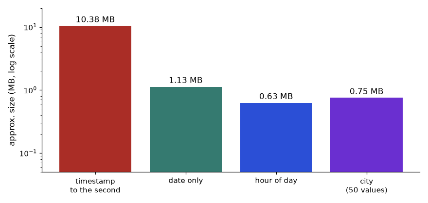
How to read it: The timestamp to the second is about 10.4 MB, while the date column is about 1.1 MB, the hour column 0.6 MB and the 50-value city column 0.75 MB: roughly ten times smaller for the same one million rows. Splitting a timestamp into a Date column and an hour (or a Time column rounded to the minute) is the single most common size reduction. The plot is on a log scale, so each gridline is ten times larger.
A workflow for a slow report
| Step 1 | In Power BI Desktop, open View, Performance analyzer, click Start recording, then Refresh visuals (or interact with the slicers). |
|---|---|
| Step 2 | Read the list: for each visual you get the time for the DAX query, the visual display, and other. Find the slowest visual. If most of the time is "other", the problem is too many visuals on the page, not DAX. |
| Step 3 | Expand the slow visual and choose Copy query. Paste it in DAX Studio (connected to the open model) and switch on Server Timings. |
| Step 4 | Run it. Read Storage Engine (SE) time against Formula Engine (FE) time. High SE with many queries: the model is large or filters are not selective. High FE: a heavy iterator or nested logic in the measure. |
| Step 5 | Fix one thing, rerun, and compare. Typical fixes: column filters instead of table filters, variables, removing an iterator over a large table, reducing cardinality, replacing a calculated column with a measure (or the reverse, if a column is used as a filter). |
| Step 6 | Run VertiPaq Analyzer (in DAX Studio) to see which columns use the most memory. Remove or reshape the top few. Not run here. |
Calculation groups: one definition, many measures
A report with 20 measures that each need Current, Year-to-date and Prior-year versions would need 60 measures. A calculation group is a table with one column and a few items; each item is a DAX expression that wraps SELECTEDMEASURE(). Put the column on a slicer or matrix columns, and every measure gets all three views. You build it in Tabular Editor (free version works) or in recent versions of Power BI Desktop's Model view (check yours).
Time Calc (calculation group, column: Time Calc)
Current: SELECTEDMEASURE ( )
YTD: CALCULATE ( SELECTEDMEASURE ( ), DATESYTD ( DimDate[Date] ) )
PY: CALCULATE ( SELECTEDMEASURE ( ), SAMEPERIODLASTYEAR ( DimDate[Date] ) )
YoY %: VAR cur = SELECTEDMEASURE ( )
VAR py = CALCULATE ( SELECTEDMEASURE ( ), SAMEPERIODLASTYEAR ( DimDate[Date] ) )
RETURN DIVIDE ( cur - py, py ) -- set the item's format string to 0.0%Check the logic with six months of monthly sales for two years. For April 2025: current 135; YTD = 120 + 125 + 150 + 135 = 530; prior year (April 2024) 130; YoY = (135 − 130) / 130 = 3.85%.
import pandas as pd
sales = pd.DataFrame({"year": [2024] * 6 + [2025] * 6, "month": list(range(1, 7)) * 2,
"sales": [100, 110, 120, 130, 125, 140, 120, 125, 150, 135, 160, 150]})
cur = sales[(sales.year == 2025) & (sales.month == 4)].sales.item()
ytd = sales[(sales.year == 2025) & (sales.month <= 4)].sales.sum()
py_ = sales[(sales.year == 2024) & (sales.month == 4)].sales.item()
print("April 2025 current:", cur, " YTD:", ytd, " PY:", py_, " YoY %:", round((cur - py_) / py_ * 100, 2))April 2025 current: 135 YTD: 530 PY: 130 YoY %: 3.85Field parameters: let the user choose the measure or the axis
| Step 1 | Create measures such as Total Sales, Order Count, Average Order Value. |
|---|---|
| Step 2 | Modeling tab, New parameter, Fields. Tick the measures (or columns such as City, Category), tick "Add slicer to this page". |
| Step 3 | Desktop writes a table like the one below. Each row is a label, a reference to the field, and an order. |
| Step 4 | Drag the parameter's column into a chart's Values (or Axis) well instead of the measure. The slicer now swaps what the chart shows. |
Metric = {
( "Sales", NAMEOF ( 'Measures'[Total Sales] ), 0 ),
( "Orders", NAMEOF ( 'Measures'[Order Count] ), 1 ),
( "AOV", NAMEOF ( 'Measures'[Average Order Value] ), 2 )
}Field parameters replace the older trick of a disconnected table with a SWITCH(SELECTEDVALUE(...)) measure (Section 10.5): they handle several fields, the chart title and the sort order for you, and the references stay valid when you rename a measure. Use SWITCH only if you need custom logic per choice.
Problem 10.6.3 A matrix by month uses the Time Calc group on columns and shows Total Sales. For April 2025 you expect Current = 135, YTD = 530, PY = 130, YoY % = 3.85%, but YTD shows 135. Name three causes.
| Cause 1 | No date table marked as a date table, or DimDate is not related to FactSales on the date key, so DATESYTD has no calendar to walk over. |
|---|---|
| Cause 2 | The matrix uses the date column of the fact table instead of DimDate[Date] on the axis, so the YTD filter on DimDate does not reach it. |
| Cause 3 | Calculation item precedence: another group (for example Currency) is applied in the wrong order, or the YTD item was typed as SELECTEDMEASURE() by mistake. |
| Method | Test with the explicit measure CALCULATE([Total Sales], DATESYTD(DimDate[Date])) first. If that is right, the problem is in the group; if not, it is in the model. |
Going deeper
- Filter context versus row context. Most subtle bugs are context transition: a measure called inside an iterator acts as if wrapped in CALCULATE, so it filters to the current row. Test by returning the intermediate value in a table visual.
- Aggregations. For a DirectQuery fact table of billions of rows, import a small summary table (by day, product) and map it as an aggregation; the engine uses it for matching queries and goes to detail only for drill-down.
- Semi-additive done right in the model. Some teams precompute the last value per month in the warehouse and load it as a separate monthly snapshot fact. It is faster at the cost of one more table.
- Measure branching. Build complex measures from small named measures (
[Sales],[Sales PY],[Sales Growth]), so each can be tested alone, and keep them in one display folder.
Chapter recap
- A measure runs once per cell with that cell's filter context; a calculated column has row context only.
CALCULATEchanges the filters first, then evaluates; a column filter replaces an existing filter on that column.- Context transition turns the current row into filters; measures inside iterators get it automatically.
ALLis share of company,ALLSELECTEDkeeps slicers,ALLEXCEPTkeeps chosen columns.- Iterators calculate row by row first; use weights, never average averages.
- Time intelligence needs a gapless marked date table and its date column.
- Debug with VARs, one filter at a time, Performance Analyzer and DAX Studio.
| Task | DAX pattern |
|---|---|
| Filtered total | CALCULATE([Total Sales], FactSales[Status] = "Delivered") |
| Percent of total | DIVIDE([M], CALCULATE([M], ALL(DimCity))) |
| Weighted value | DIVIDE(SUMX(T, T[a] * T[b]), SUM(T[b])) |
| Rank | RANKX(ALL(DimCity[City]), [M]) |
| Last year | CALCULATE([M], SAMEPERIODLASTYEAR(DimDate[Date])) |
| YTD | TOTALYTD([M], DimDate[Date]) |
| Rolling window | CALCULATE([M], DATESINPERIOD(DimDate[Date], MAX(DimDate[Date]), -3, MONTH)) |
| Inactive relationship | CALCULATE([M], USERELATIONSHIP(FactSales[ShipDate], DimDate[Date])) |
Practice set
Problem 10.1 Total Sales = SUM(FactSales[Amount]). What does the Delhi row show, given Delhi orders of 799 and 2,499?
Answer: 799 + 2,499 = 3,298.
Problem 10.2 What is DIVIDE(8293, 9340) as a percent, to one decimal?
Answer: 8,293 / 9,340 = 0.8879, so 88.8%.
Problem 10.3 Find the bug: in DimCity, the calculated column =SUM(FactSales[Amount]) shows the same number on every row.
Answer: Row context does not filter FactSales, so every row sums the whole table (9,340). Use =CALCULATE(SUM(FactSales[Amount])) (context transition), or better, a measure.
Problem 10.4 Under a Region = West slicer, % of All Cities shows 32.6% for Mumbai. What does % of Visible Cities show?
Answer: 50.4%: 3,047 / (3,047 + 2,995) = 3,047 / 6,042.
Problem 10.5 Three orders: 1 unit at 100, 2 units at 400, 1 unit at 200. Simple and weighted average price?
Answer: Simple: (100 + 400 + 200) / 3 = 233.33. Weighted: (100 + 800 + 200) / 4 = 1,100 / 4 = 275. The weighted value is the real average per unit sold.
Problem 10.6 Sales (Rs thousand): Mar 2025 = 375, Apr = 405, May = 430. Rolling 3-month average at May, and MoM % for May?
Answer: Rolling: (375 + 405 + 430) / 3 = 1,210 / 3 = 403.33. MoM: (430 − 405) / 405 = 0.0617, so 6.2%.
Problem 10.7 YTD at March 2025 (350, 330, 375) versus YTD March 2024 (310, 295, 340): growth?
Answer: 1,055 versus 945; 1,055 / 945 − 1 = 110 / 945 = 0.1164, so 11.6%.
Problem 10.8 Scenario: your YoY % shows blank for every month of 2024. Two likely reasons?
Answer: There is no 2023 data (blank is then correct), or the date table starts in 2024, is not marked, or is not related, so the shifted dates do not exist. Check that the date table covers the earlier year.
Problem 10.9 (Interview) Explain ALL, ALLEXCEPT and ALLSELECTED.
Answer: ALL removes all filters on a table or column. ALLEXCEPT(table, cols) removes all filters on the table except the listed columns. ALLSELECTED removes the filters from the visual's own rows and columns but keeps slicer and outer filters, so shares add to 100% of what the user sees.
Problem 10.10 (Interview) What is context transition and where does it happen?
Answer: It converts the current row of a row context into an equivalent filter context. It happens when CALCULATE runs inside a row context, and implicitly when a measure is referenced in an iterator or calculated column. That is why [Total Sales] in AVERAGEX(VALUES(DimCity[City]), [Total Sales]) gives each city's own total.
Problem 10.11 A balance table has account A with 100, 120, 110 on days 1 to 3, and account B with 50, 40, 45. What are the closing balance on day 3 and the average daily total balance?
Answer: Closing day 3: 110 + 45 = 155. Daily totals: 150, 160, 155; average = 465 / 3 = 155.
Problem 10.12 Five items with sales 90, 80, 80, 80, 60. List Skip ranks and Dense ranks.
Answer: Skip: 1, 2, 2, 2, 5. Dense: 1, 2, 2, 2, 3.
Problem 10.13 A measure uses SUMX over a 50 million row table, and the report is slow. Give two things to try, in order.
Answer: (1) Replace SUMX(Fact, Fact[Amount]) with SUM(Fact[Amount]) if no row-level expression is needed. (2) If it needs a row-level product, move it into a column computed at load time, or check cardinality of the columns involved. Measure each change with DAX Studio.
Problem 10.14 A 3 million row model is 400 MB. The biggest column is a datetime to the second. What do you do?
Answer: Split it into a Date column and a Time (or hour) column, drop the original, relate Date to DimDate. Cardinality falls from millions to 365 + 86,400 (or 24 for hours), and size drops by a large factor. Check with VertiPaq Analyzer.
Problem 10.15 Find the bug: a YoY % measure shows 4.0 instead of 4%. The formula is DIVIDE(cur - py, py) * 100.
Answer: The multiplication by 100 combined with a percentage format shows 400%, and without the format shows 4.0. Remove the * 100 and set the format to percentage. The value in the model should be the fraction 0.04.
Problem 10.16 Interview: "What is the difference between a calculation group and a field parameter?"
Answer: A calculation group changes how a measure is calculated (current, YTD, PY) and applies to many measures at once. A field parameter changes which field (measure or column) a visual shows and is controlled by a slicer. They solve different problems and can be combined.
Prompt pack
You are my patient, practical professor. I am a working professional moving into data roles, and English is my second language. Teach me DAX row context versus filter context and context transition using a tiny orders table with 8 rows and a City dimension. Use an everyday analogy first, then trace a measure through a matrix cell by cell with real numbers. Show the classic calculated-column bug and its fix. Then ask me 4 questions one at a time and wait for each answer.
You are my patient, practical professor. I am a working professional moving into data roles. Teach me DAX CALCULATE in depth: how filter arguments are applied, replacing versus combining filters, FILTER versus a column filter, ALL, ALLEXCEPT, ALLSELECTED, KEEPFILTERS, VALUES and SELECTEDVALUE. Use small tables with numbers I can calculate by hand and state the expected result of each measure. Then give me 8 graded exercises without solutions and mark my answers afterwards.
You are my patient, practical professor. I am a working professional moving into data roles. Explain DAX iterators (SUMX, AVERAGEX, COUNTX, RANKX, TOPN) and why averaging an average is wrong. Use a weighted average price example and a top-N example with real numbers. Show a wrong measure and the right one, and explain row by row what the iterator does. End with a debugging scenario where a ratio in a matrix total is wrong, and let me find the cause before you reveal it.
You are my patient, practical professor. I am a working professional moving into data roles. Teach DAX time intelligence: the need for a gapless marked date table, SAMEPERIODLASTYEAR, DATEADD, TOTALYTD with a fiscal year end of 31 March, PARALLELPERIOD and DATESINPERIOD for rolling averages, plus YoY and MoM. Use 12 months of small numbers and verify each result by hand. Then review my measure and tell me what is wrong with it: [PASTE HERE].
You are my patient, practical professor. I am a working professional moving into data roles. Run a mock interview for a Power BI analyst role on DAX. Ask one question at a time: measure versus calculated column, row versus filter context, CALCULATE, ALL versus ALLSELECTED, iterators, time intelligence, running total, dynamic segmentation, performance tuning. After each answer, score it out of 5, give a model answer in simple English, then ask the next question. Do 8 questions.
You can now clean data (Chapter 9) and write measures (Chapter 10). A correct number still fails if the report is cluttered, if the wrong person can see it, or if it refreshes at the wrong time. This chapter covers the last mile: designing the page, adding interactivity, restricting data with row-level security (RLS), publishing to the Power BI Service, and keeping the whole thing governed. We end by comparing Power BI with Tableau, Looker Studio and other tools, because job posts often name them. By the end you can design a three-page report, secure it by region, schedule its refresh, and explain which tool you would pick for a given team.
11.1 Report Design: Layout, Visuals, Colour and Accessibility
Words you need. Canvas: the page area (Power BI's default is 1280 x 720 pixels, a 16:9 shape). Card: one big number. KPI visual: a number with target and trend. Theme: a saved set of colours and fonts applied to all visuals. Alt text: a written description of a visual for screen-reader users.
Layout rules.
- Put the 3 to 5 most important numbers (cards) in a row at the top.
- Left to right, top to bottom, from summary to detail.
- Use a grid: equal margins and gaps, aligned edges. Misaligned visuals look untrustworthy.
- At most 6 to 8 visuals per page. Use more pages (or drill-through) instead of crowding.
- One page, one question. Title each page with its message.
Visual choice (the Chapter 8 table, in Power BI names).
| Need | Visual |
|---|---|
| Compare categories / trend | Sorted bar or column / line (area for volume) |
| Two numbers / exact numbers | Scatter / table or matrix (matrix = pivot with drill) |
| One headline number | Card; KPI for target and trend; gauge sparingly |
| Geography | Map (normalise per customer) |
| Why did it change | Decomposition tree (break a measure down by chosen fields) |
| What drives an outcome | Key influencers (statistical; treat as leads, not proof) |
Custom visuals come from AppSource inside Power BI. They add options but can add risk and slowness; prefer certified ones and check your company policy.
Worked example 11.1.1 Grid arithmetic. Three cards across a 1280-pixel-wide page, with a 20-pixel margin on the left and right and a 20-pixel gap between cards. How wide is each card?
- Formula card width = (page width − 2 × margin − number of gaps × gap) / cards
- Plug in (1280 − 2 × 20 − 2 × 20) / 3
- Compute 1280 − 40 − 40 = 1,200; 1,200 / 3 = 400
- Answer Each card is 400 pixels wide; they start at x = 20, 440 and 860.
- Check 20 + 400 + 20 + 400 + 20 + 400 + 20 = 1,280. The edges meet the margins exactly.
- Why it matters Exact numbers (Format > Position) give perfectly aligned pages without eyeballing.
Worked example 11.1.2 Accessible colour. The WCAG guideline asks for a text contrast ratio of at least 4.5 to 1 (3 to 1 for large text). The ratio is (L1 + 0.05) / (L2 + 0.05), where L is the relative luminance (a brightness number from 0 to 1) of the lighter and darker colour. I computed it in Python:
colour on white ratio
#1f6feb (blue) 4.63
#9aa5b1 (grey) 2.5
#595959 (dark) 7.0
#767676 (mid) 4.54- Step 1 Blue (#1f6feb) scores 4.63: passes 4.5 for normal text, just barely.
- Step 2 Light grey (#9aa5b1), the "context" colour of Chapter 8, scores 2.5: it fails for text and is weak even for graphics (3 to 1 is the usual target).
- Answer Use dark grey (#595959, 7.0) for text, keep light grey for background marks only, and add direct labels so colour is never the only signal.
- Check #767676 at 4.54 is the well-known lightest grey that still passes.
Accessibility checklist. Text contrast at least 4.5 to 1; alt text on key visuals; a sensible tab order; never colour alone (add labels or icons); fonts of 10 to 12 pt or more. Apply a theme (View > Themes, or a JSON file) so every visual shares fonts and a short palette.
Storytelling. Put the finding in the page title ("West region is 65% of sales": 6,042 / 9,340 = 0.647), the evidence in the visuals and the recommendation in a short text box (Chapter 14).
Connection to the real job. Stakeholders judge a dashboard in ten seconds; a theme, a grid and message titles make a portfolio look professional.
Applications
- Executive dashboards: 4 cards, 1 trend, 1 sorted bar.
- Hospital: one page for the daily decision (waiting time, no-show rate, bed use), another for diagnosis.
Check yourself
- Where do the headline numbers go on a page? Answer: In a row of cards at the top.
- What contrast ratio does WCAG ask for normal text? Answer: At least 4.5 to 1.
- What is a theme? Answer: Saved colours and fonts applied to all visuals.
11.2 Interactivity: Slicers, Drill, Bookmarks, Tooltips and Parameters
How it works.
| Feature | What it does | Typical use |
|---|---|---|
| Slicer | A filter control on the page (list, dropdown, date range) | Region, date |
| Sync slicers | One slicer controls the same field on several pages | Region on all pages |
| Cross-filter / cross-highlight | Clicking a bar filters or highlights other visuals; control with Format > Edit interactions | Click Pune, see its trend |
| Drill down / up | Move down a hierarchy inside one visual (Year to Month to Day) | Category to Product |
| Drill through | Right-click a value to jump to a detail page filtered to it | City to order list |
| Bookmarks | Save a view (filters, visibility); buttons can switch bookmarks | Toggle chart or table, "reset filters" |
| Tooltips (report page) | A small page shown on hover | A mini trend on each bar |
| Buttons / navigation | Click to go to a page or run a bookmark | A menu bar |
| Field parameters | A slicer that swaps the measure or dimension shown | "Show: Sales / Orders / Qty" |
Worked example 11.2.1 Drill-through. A summary page shows sales by city. You right-click Pune and choose Drill through to the "Orders" page, which holds a table of orders. Which rows appear, and what total?
- Step 1 The drill-through passes the filter
City = Puneto the detail page. - Step 2 The
FactSalesrows for Pune: 1001 (998), 1003 (597), 1008 (1,400). - Step 3 Total: 998 + 597 + 1,400 = 2,995.
- Answer Three rows totalling 2,995, equal to the Pune bar on the summary page.
- Check If the totals differed, the detail page would have a different filter or measure; always match them.
- Interpretation The reader goes from "Pune is lowest" to the three orders behind it in two clicks.
Field parameters. Modeling > New parameter > Fields; choose Total Sales, Orders, Qty. A slicer then picks which measure the chart shows, so one chart does the work of three (check your Desktop version).
Worked example 11.2.2 Edit interactions. Clicking the Pune bar should change the card (total) but not the daily line chart. Select the bar chart, Format > Edit interactions, set the card to Filter and the line to None. The card shows 2,995; the line stays at all-city daily totals (2,297, 597, 799, ...). Clicking empty space returns the card to 9,340.
Connection to the real job. Business users ask "can I see it by X?" constantly. Slicers, drill-through and field parameters answer that without extra pages. Too many slicers, however, confuse; choose 2 or 3 on the left or top.
Applications
- Sales: region slicer synced across pages; drill-through to customer detail.
- Operations: bookmark toggle between daily and weekly view.
Check yourself
- What is the difference between drill down and drill through? Answer: Drill down moves within one visual's hierarchy; drill through jumps to another page filtered to the chosen value.
- What do synced slicers do? Answer: Keep one slicer's selection in step across pages.
- What do field parameters allow? Answer: The user switches which measure or field a visual shows.
11.3 Row-Level Security and the Power BI Service
Words you need. Workspace: a shared folder in the Service for datasets and reports. App: a packaged read-only version for a wide audience. Gateway: software on a company server that lets the Service reach on-premises data. Deployment pipeline: Dev, Test, Prod stages. Q&A: ask in plain English, get a visual. Copilot: Microsoft's AI assistant in Power BI (availability and licensing change; check current documentation).
How RLS works. You define roles, each with DAX filters on tables. The filter on a dimension flows to the fact table through the relationship (Chapter 9), so one filter secures every related table.
Static RLS. One role per group.
Role "West": DimCity[Region] = "West"
Role "North": DimCity[Region] = "North"Dynamic RLS. One role, driven by a security table Security[Email], Security[Region], not related to other tables:
Role "ByUser":
DimCity[Region] IN CALCULATETABLE(VALUES(Security[Region]),
Security[Email] = USERPRINCIPALNAME())USERPRINCIPALNAME() returns the signed-in user's login (an e-mail style name). Adding a user is then one new row in the table, not a new role. Test in Desktop with Modeling > View as, then assign people or groups to the role in the Service (dataset > Security).
Worked example 11.3.1 What does each user see? The security table has: asha West; ravi North; the CFO has two rows, North and West. Our 8 orders: West = Mumbai and Pune, North = Delhi. Real pandas output:
asha@corp.example 6 rows, total 6042
ravi@corp.example 2 rows, total 3298
cfo@corp.example 8 rows, total 9340
new.joiner@corp.example 0 rows, total 0- Step 1 Asha's rows: Region West means Mumbai (1002, 1005, 1006) and Pune (1001, 1003, 1008): 6 rows, 1,299 + 450 + 1,298 + 998 + 597 + 1,400 = 6,042.
- Step 2 Ravi: North means Delhi (1004, 1007): 799 + 2,499 = 3,298.
- Step 3 The CFO matches both regions: 6 + 2 = 8 rows, 6,042 + 3,298 = 9,340.
- Step 4 A new joiner who is not in the table matches nothing: 0 rows.
- Answer 6,042; 3,298; 9,340; and an empty report for someone missing from the table.
- Check 6,042 + 3,298 = 9,340.
- Why it matters Empty reports for missing users are the most common RLS complaint; the fix is a row in the table, not a model change.
Important RLS facts.
- RLS applies to viewers. People with edit rights in the workspace (Admin, Member, Contributor) can see all data, so share reports to users as Viewer or through an app.
- Test with "View as"; a user in several roles gets the union (OR) of them.
- RLS hides rows, not columns (column-level needs object-level security) and does not replace least privilege at the source.
The Service workflow.
Desktop (.pbix) --Publish--> Workspace (dataset + report)
| |-- Scheduled refresh (via gateway for on-premises data)
| |-- RLS roles assigned
| |-- Share / Publish as App --> viewers
Deployment pipeline: Dev --> Test --> ProdRefresh and gateways. Cloud sources refresh directly in the Service; on-premises sources need a gateway on a machine that stays on. Refresh limits depend on the licence (check current limits). Import mode copies data into the model (fast, needs refresh); DirectQuery queries the source live (current, slower, fewer DAX features).
Worked example 11.3.2 Plan a refresh. A file lands in the source system at 06:00 each day. The dataset refresh takes 25 minutes. Managers expect fresh numbers by 07:00. When should you schedule it, and how much slack remains?
- Step 1 Start after the data lands, with a buffer: 06:15. Finish: 06:15 + 25 min = 06:40. Slack before 07:00: 20 minutes.
- Answer Schedule at 06:15; it finishes by 06:40 with 20 minutes for a retry.
- Check A 06:00 start would race the data and may load yesterday's file. At 45 minutes, 06:15 + 45 = 07:00 leaves no slack: add incremental refresh (Chapter 9).
Sharing and Copilot. Share a link (viewer needs a licence and dataset permission), publish an app, or embed in Teams. Q&A and Copilot work best on a clean model (friendly names, synonyms, hidden technical columns); always verify an AI-made visual against a number you trust, and check your data policy first.
Connection to the real job. In an interview, "how would you restrict data by region?" and "what happens on refresh?" are common. Explain dynamic RLS with a security table, and viewers versus members.
Applications
- Sales: regional managers see their own region.
- HR: managers see only their reports' leave data.
Check yourself
- Who bypasses RLS in a workspace? Answer: Users with edit rights (Admin, Member, Contributor).
- Why dynamic RLS? Answer: One role plus a security table scales to many users; adding a user is a data change.
- What is a gateway for? Answer: To let the Service refresh on-premises data sources.
11.4 Governance, Documentation and Performance
Governance checklist.
- Naming: human names (
Total Sales,Delivered Rate),FactSales/DimCity, hide keys and helper columns. - Documentation: a data dictionary (name, definition, formula, owner, source, refresh) and a notes page in the report.
- Certified datasets: a reviewed shared dataset marked Certified or Promoted in the Service; reports reuse it.
- Access: RLS, least privilege, Viewer role, groups not individuals, periodic review.
- Refresh SLA and lineage: an agreed time, owner and failure alert; the lineage view shows what depends on what.
- Versioning:
.pbipproject files in Git where supported, deployment pipelines.
Semantic layer. A semantic layer is one shared place where business definitions (revenue, active customer) live as code or model, so every dashboard gets the same number. In Power BI it is the shared certified dataset. Elsewhere: LookML (Looker), dbt's semantic layer or metrics definitions, Cube. The idea: define once, reuse everywhere.
Performance tuning. Measure with Performance Analyzer (Chapter 10); cut visuals per page; keep a star schema with integer keys and no unused columns; replace slow DAX; aggregate at the source or use incremental refresh (Chapter 9); avoid slicers with huge lists.
Worked example 11.4.1 Write a data-dictionary entry and check the number.
| Field | Entry |
|---|---|
| Name | Delivered Rate |
| Definition | Share of order value with status Delivered |
| Formula | DIVIDE(CALCULATE([Total Sales], FactSales[Status] = "Delivered"), [Total Sales]) |
| Owner | Sales analytics |
| Source | FactSales, refreshed daily 06:15 |
| Example | January 2025 sample: 8,293 / 9,340 = 88.8% |
- Step 1 Verify the example from the data: delivered orders sum to 8,293 (Chapter 10), total 9,340.
- Step 2 8,293 / 9,340 = 0.8879.
- Answer The dictionary entry gives anyone a definition, a formula and a number to test against.
- Check If a dashboard shows 90% for the same period, someone has a different definition (for example, excluding cancelled orders from the denominator: 8,293 / (9,340 − 450) = 93.3%). The dictionary settles the argument.
Worked example 11.4.2 Triage a slow page (12 s). Performance Analyzer shows a matrix at 9.5 s and five other visuals at 0.4 s each.
- Step 1 Visual time: 9.5 + 5 × 0.4 = 11.5 s. The matrix is 9.5 / 11.5 = 83% of it.
- Step 2 Copy its query into DAX Studio and look for an iterator over the fact table or a
FILTERover the whole table. - Answer Fix the matrix first; the five small visuals can save at most 2 s. If the matrix fell to 1.5 s the page would take about 1.5 + 2.0 = 3.5 s.
Connection to the real job. Governance is what distinguishes a senior analyst from someone who only builds charts. Roles such as "BI developer" and "analytics engineer" are largely about shared, certified models.
Applications
- Finance: certified "Revenue" dataset used by all finance reports.
- Data Engineering: the semantic layer as a contract between warehouse and BI.
Check yourself
- What is a certified dataset? Answer: A reviewed shared dataset, marked in the Service, that reports should reuse.
- What goes in a data dictionary? Answer: Name, definition, formula, owner, source and refresh time.
- First step in tuning a slow report? Answer: Measure with Performance Analyzer to find the slowest visual.
11.5 Tableau, Looker Studio and Other BI Tools
Tableau. Strong, flexible visual exploration, popular in many large companies. Key ideas: calculated fields (formulas per row or aggregate), parameters (user inputs), dashboard actions (filter, highlight, URL), and LOD (level of detail) expressions: {FIXED ...}, {INCLUDE ...}, {EXCLUDE ...}. Live connections or extracts (Hyper files). Tableau Public is free (public data only); Tableau Desktop Specialist is an entry certificate.
Worked example 11.5.1 An LOD expression, checked with pandas. Each order's share of its city total in Tableau:
[Amount] / { FIXED [City] : SUM([Amount]) }- Step 1
{ FIXED [City] : SUM([Amount]) }computes the city total regardless of what is in the view, and attaches it to each row: Pune 2,995, Mumbai 3,047, Delhi 3,298. - Step 2 Divide each order's amount by its city total. Order 1001 (Pune): 998 / 2,995 = 0.333. Order 1003: 597 / 2,995 = 0.199. Order 1008: 1,400 / 2,995 = 0.467.
- Answer pandas (
groupby("City").transform("sum")) gives 0.333, 0.199, 0.467 for Pune; Pune's three shares add to 0.999 (rounding), that is 100%. - Check 998 + 597 + 1,400 = 2,995.
- Interpretation
FIXEDdoes whatCALCULATE(..., ALLEXCEPT(...))does in DAX (Chapter 10).EXCLUDE [City]drops City from the level (9,340 in a city view);INCLUDE [OrderID]adds a finer level.
Looker Studio (free, Google; not the same as Looker). Connects easily to Google Sheets, BigQuery, GA4 and CSV uploads. Calculated fields, data blending (joining sources inside the report), free sharing by link, scheduled e-mail delivery. Simple and quick; much weaker at modelling (no star schema with relationships like Power BI, no DAX-style measures, limited row-level security) and slower on large data.
Looker (LookML) is a paid platform whose semantic layer is code (dimensions, measures, joins) kept in Git. Metabase and Apache Superset are open source and SQL-friendly; Qlik uses an in-memory associative engine (awareness). Excel Power Pivot uses the same DAX as Power BI. In short: Power BI has the strongest modelling (DAX, RLS), Tableau the most flexible visuals, Looker Studio the lowest cost; pricing changes, so check current pages.
Worked example 11.5.2 Choose the tool. (a) A startup with data in Google Sheets and GA4, no budget. (b) A bank on Microsoft 365 needing RLS by branch and a governed model. (c) A team that wants deep visual exploration and has Tableau already.
- Step 1 (a) Looker Studio: free, connects to Google sources in minutes.
- Step 2 (b) Power BI: RLS, Microsoft 365 integration, certified datasets, DAX modelling.
- Step 3 (c) Tableau: skills and licences exist; its visual flexibility fits the need.
- Answer (a) Looker Studio, (b) Power BI, (c) Tableau.
- Check Each answer follows the constraint named in the scenario (budget, security and governance, existing skills), not personal taste.
Not covered here. Product and web analytics tools (GA4, Mixpanel, tracking plans, UTM tags) and survey analysis; Chapter 12 builds funnels and cohorts. Certification: Microsoft PL-300 (Power BI Data Analyst) tests Chapters 9 to 11; use Microsoft Learn's free practice material and build one full project.
Connection to the real job. Learn one BI tool deeply (Power BI), and know the vocabulary of the others. In interviews, show a project where you modelled, secured and explained a dashboard.
Applications
- Marketing: Looker Studio dashboards over GA4 and Sheets.
- Enterprise: Power BI or Tableau on a governed warehouse.
Check yourself
- What does
{ FIXED [City] : SUM([Amount]) }compute? Answer: The sum of Amount per city, regardless of the view's own level. - Which tool is free and Google-based? Answer: Looker Studio.
- What is a semantic layer? Answer: One shared place where business definitions live, so every report uses the same numbers.
11.6 Start Here: The Plain-English Map and Glossary
Sections 11.1 to 11.5 explained each feature once. This extension section and the ones after it teach you to solve problems with them: given a messy brief, a wrong number, a leaked row, a late refresh or a slow page, you will know which of four families it belongs to, what to test first and how to know you are right. Every number below comes from the same 8-order shop table used since Chapter 9, so you can check everything by hand.
Glossary: read this before the jargon
| Term | Plain meaning | Where it bites |
|---|---|---|
| Semantic model (dataset) | The tables, relationships and measures behind a report. Reports are thin views on top of it. | Many reports can share one model; fix a definition once. |
| Filter context | The set of filters active for one number (slicers, page filters, the row or bar it sits in). | Same measure, different number on two visuals. |
| Slicer | A control on the page that filters visuals. | Hidden or unsynced slicers cause 'my number differs' tickets. |
| Cross-filter / cross-highlight | Clicking a mark filters (or dims) other visuals. | Cards that ignore a click, or totals that change unexpectedly. |
| Drill down / drill through | Down a hierarchy inside a visual / jump to a detail page for the chosen value. | Detail page total must equal the clicked bar. |
| Bookmark | A saved view: filters, visibility, page. | Stale saved filters hide new data. |
| Field parameter | A slicer that swaps which measure or column a visual uses. | One chart replaces three. |
| RLS (row-level security) | Rules that decide which rows each viewer may see. | Authors and editors bypass it. |
| Role | A named set of RLS filters. | A user in two roles gets the union. |
| Security table | A table of (user, allowed region) rows used for dynamic RLS. | A user missing from it sees an empty report. |
| Workspace | A shared folder in the Service holding models and reports. | Workspace roles decide who edits and who only views. |
| App | A packaged read-only set of reports for a wide audience. | Audiences in an app do not replace RLS. |
| Gateway | Software on an always-on machine that lets the Service reach on-premises data. | Offline gateway means failed refresh. |
| Import / DirectQuery | Copy data into the model / ask the source live. | Import is fast but needs refresh; DirectQuery is current but slower. |
| Refresh | Reloading the model from its sources. | Starts too early and you load yesterday's file. |
| Certified dataset | A reviewed shared model marked in the Service. | Without one, five copies disagree. |
| Semantic layer | One shared place where business definitions live. | Define once, reuse everywhere. |
| LOD expression | Tableau formula that computes at a stated level of detail. | FIXED ignores most filters. |
| Contrast ratio | Brightness difference between text and background (1 to 21). | Below 4.5 fails for normal text. |
| Performance Analyzer | Desktop pane that times every visual and splits it into DAX query, display and other. | Tune the slowest visual first. |

How to read it: follow the arrows left to right. A problem usually lives at one box: a wrong number is a model or filter problem, a wrong viewer is a role problem, a stale number is a refresh problem. Name the box before you touch anything.
The reference numbers
Keep these in your head; every example reuses them. The code builds the 8-order table with a Region column and groups it three ways.
import pandas as pd
orders = pd.DataFrame({
"OrderID": [1001, 1002, 1003, 1004, 1005, 1006, 1007, 1008],
"Date": pd.to_datetime(["2025-01-03", "2025-01-03", "2025-01-04", "2025-01-05",
"2025-01-06", "2025-01-07", "2025-01-09", "2025-01-10"]),
"City": ["Pune", "Mumbai", "Pune", "Delhi", "Mumbai", "Mumbai", "Delhi", "Pune"],
"Status": ["Delivered", "Delivered", "Returned", "Delivered", "Cancelled", "Delivered", "Delivered", "Delivered"],
"Qty": [2, 1, 3, 1, 5, 2, 1, 4],
"Amount": [998, 1299, 597, 799, 450, 1298, 2499, 1400]})
region = {"Delhi": "North", "Mumbai": "West", "Pune": "West"}
orders["Region"] = orders["City"].map(region)
print(orders.groupby("City").Amount.agg(["count", "sum"]).to_string())
print(orders.groupby("Region").Amount.agg(["count", "sum"]).to_string())
print(orders.groupby("Status").Amount.agg(["count", "sum"]).to_string())
print("total", orders.Amount.sum(), "qty", orders.Qty.sum()) count sum
City
Delhi 2 3298
Mumbai 3 3047
Pune 3 2995
count sum
Region
North 2 3298
West 6 6042
count sum
Status
Cancelled 1 450
Delivered 6 8293
Returned 1 597
total 9340 qty 19- Lines 1 to 12 build the table:
pd.DataFramewith one list per column, dates converted bypd.to_datetime. A city to region dictionary addsRegionwith.map. groupby("City")splits the rows by city;.Amount.agg(["count", "sum"])counts rows and adds amounts in each group.- The same pattern is repeated for Region and Status. Every Power BI visual that shows 'sales by X' is doing exactly this.
- The last line prints the grand total and total quantity for later checks.
Remember: Delhi 3,298 (2 orders), Mumbai 3,047 (3), Pune 2,995 (3); West 6,042 (6 orders), North 3,298 (2); Delivered 8,293 (6), Returned 597 (1), Cancelled 450 (1); total 9,340.
Problem 11.6.1 Classify each complaint into show, explore, protect or deliver, and name the first thing you would check. (a) 'The card says 9,340 but the table says 8,293.' (b) 'Asha can see North numbers.' (c) 'Monday morning the report still shows Friday data.' (d) 'I cannot read the grey axis labels.'
| Idea | Match the symptom to one of four families, then the first test is the cheapest one in that family. |
|---|---|
| (a) | Explore (filter context). A hidden page, visual or slicer filter such as Status = Delivered explains 9,340 versus 8,293 (the 1,047 gap is 597 returned plus 450 cancelled). Check the Filters pane of the table visual. |
| (b) | Protect. Check that Asha is a Viewer, not a Member, and open View as role. Then check whether she appears under a second role or a second security-table row. |
| (c) | Deliver. Check refresh history for a failure or a schedule that skips weekends, then gateway status and credentials. |
| (d) | Show. Measure contrast (light grey on white is about 2.5, needs 4.5). Change to dark grey 595959. |
| Check | Each first test is free (no model change) and can be done in under two minutes. |
11.7 Report Design Mastery: Grids, Contrast, Visual Choice and Themes
Concept 1: the grid is arithmetic
Alignment is not taste; it is subtraction and division. Given a page width W, a margin m on each side, a gap g between neighbours and n equal items:
and the left edge of item k (counting from 0) is m + k·(width + g). The same formula works vertically with the page height. The function below returns both.
def grid(total, margin, gap, n):
width = (total - 2 * margin - (n - 1) * gap) / n
starts = [margin + k * (width + gap) for k in range(n)]
return width, starts
print(grid(1280, 20, 20, 3))
print(grid(1280, 20, 20, 4))
w, s = grid(1280, 15, 15, 3)
print(round(w, 1), [round(x, 1) for x in s])(400.0, [20.0, 440.0, 860.0])
(295.0, [20.0, 335.0, 650.0, 965.0])
406.7 [15.0, 436.7, 858.3]def grid(...)defines a function with page size, margin, gap and item count.- The width line is the formula above: take away both margins and the n − 1 gaps, then divide by n.
startsis a list comprehension: item k starts after the margin plus k widths plus k gaps.- The first call is Worked example 11.1.1 (3 cards: 400 wide, starting at 20, 440, 860). The second is practice Problem 11.1 (4 cards: 295 wide). The third call uses margin 15 and gap 15, which gives a fractional width (406.7). Power BI positions use whole or decimal pixels, but a fractional width is a hint to change the margin or gap until the width is a whole number, as with 20 and 20.
Problem 11.7.1 Design the page in the layout figure: three cards on top (110 px tall), then a trend chart and a sorted bar below sharing the remaining area. Page 1280 x 720, margin 20, gap 20. The trend gets about 64% of the width. Give all positions.
| Horizontal | Cards: 3 of width 400 at x = 20, 440, 860 (Worked example 11.1.1). Lower row: 1280 − 40 − 20 = 1,220 usable pixels for two visuals. |
|---|---|
| Split | 64% of 1,220 = 780.8, round to 780. The bar gets 1,220 − 780 = 440. |
| Vertical | Cards occupy y from 20 to 130. Gap 20 puts the lower row at y = 150. Bottom margin 20 leaves 720 − 20 − 150 = 550 pixels of height. |
| Positions | Trend: x = 20, y = 150, 780 x 550. Bar: x = 20 + 780 + 20 = 820, y = 150, 440 x 550. The right edge is 820 + 440 = 1,260 = 1280 − 20. |
| Check | Add up widths and gaps: 20 + 780 + 20 + 440 + 20 = 1,280. Vertical: 20 + 110 + 20 + 550 + 20 = 720. |

How to read it: count the visuals first, then the empty space. The right page has fewer elements, equal gaps and one obvious reading order (top-left card to bottom-right bar). Fewer, aligned visuals are faster to read and to maintain.
Concept 2: contrast is a formula you can compute
WCAG defines contrast from relative luminance, a number from 0 (black) to 1 (white) that models how bright a colour looks. Steps for one colour: (1) split the hex code into red, green, blue and divide each by 255; (2) linearise each channel c: if c ≤ 0.03928 use c/12.92, otherwise ((c + 0.055)/1.055)2.4; (3) L = 0.2126·R + 0.7152·G + 0.0722·B. Then contrast = (Llighter + 0.05) / (Ldarker + 0.05). Green weighs most because our eyes are most sensitive to it.
def lin(c):
c = c / 255
return c / 12.92 if c <= 0.03928 else ((c + 0.055) / 1.055) ** 2.4
def lum(hexcode):
h = hexcode.lstrip("#")
r, g, b = (lin(int(h[i:i + 2], 16)) for i in (0, 2, 4))
return 0.2126 * r + 0.7152 * g + 0.0722 * b
def contrast(a, b):
hi, lo = sorted([lum(a), lum(b)], reverse=True)
return (hi + 0.05) / (lo + 0.05)
for name, col in [("light grey", "#9aa5b1"), ("mid grey", "#767676"), ("dark grey", "#595959"),
("blue", "#1f6feb"), ("house blue", "#2b4fd6"), ("house orange", "#b84a22"),
("house teal", "#357a70")]:
print(f"{name:12s} {col} on white {contrast(col, '#ffffff'):5.2f}")
print("white text on house blue", round(contrast("#ffffff", "#2b4fd6"), 2))
print("dark grey on light panel F2F2F2", round(contrast("#595959", "#f2f2f2"), 2))
print("light grey on light panel F2F2F2", round(contrast("#9aa5b1", "#f2f2f2"), 2))light grey #9aa5b1 on white 2.50
mid grey #767676 on white 4.54
dark grey #595959 on white 7.00
blue #1f6feb on white 4.63
house blue #2b4fd6 on white 6.58
house orange #b84a22 on white 5.20
house teal #357a70 on white 5.04
white text on house blue 6.58
dark grey on light panel F2F2F2 6.26
light grey on light panel F2F2F2 2.24linis step 2: it undoes the screen's gamma so brightness adds up properly.lumis steps 1 and 3: it reads three hex pairs withint(..., 16), linearises each and mixes them with the weights.contrastsorts the two luminances so the lighter is on top, then applies the ratio formula. Argument order therefore does not matter.- The loop prints each colour against white. These values reproduce the table in Worked example 11.1.2 (blue 4.63, light grey 2.50, dark grey 7.00, mid grey 4.54).
- The last three lines test non-white backgrounds, which is where designs often fail: dark grey on a light panel passes (6.26) but light grey on the same panel scores only 2.24.

How to read it: bars are the ratio, the dashed line is the text limit and the dotted line is the limit for large text and graphics. Light grey fails everything, mid grey 767676 is the lightest grey that passes, and all three house colours pass as text.
Problem 11.7.2 A KPI tile uses white text on the house orange #b84a22 and a 12 pt font. Does it pass? What if the tile background is light grey #9aa5b1 with white text?
| Formula | contrast = (L-lighter + 0.05) / (L-darker + 0.05), with white L = 1. |
|---|---|
| Orange tile | L(orange) = 0.152, so (1 + 0.05) / (0.152 + 0.05) = 5.20. It passes for normal text (4.5). |
| Grey tile | L(light grey) = 0.3695, so 1.05 / 0.4195 = 2.50. It fails even for large text (3.0). |
| Answer | Orange passes; light grey fails. Keep the orange tile, or change the text to near black on the grey. |
| Check | Run contrast('#ffffff', '#b84a22') in the code above: 5.20. |
Concept 3: choosing the visual by the question
Start from the question, not the chart gallery. The table extends the one in 11.1 with the traps.
| Question | Best visual | Avoid | Why |
|---|---|---|---|
| Which category is biggest? | Sorted horizontal bar | Pie with 8 slices, 3D bars | Length is compared more accurately than angle or area. |
| How did it change over time? | Line (bars for few periods) | Stacked area with 6 series | Slope shows trend; stacked layers hide it. |
| Share of a whole, 2 or 3 parts | Single stacked bar, or donut with direct labels | Pie of 10 parts | Few parts only. |
| Two measures related? | Scatter | Dual-axis line chart | Dual axes invent a correlation by scale choice. |
| Exact values needed | Table or matrix | Chart with hidden labels | Readers look values up. |
| Actual versus target | KPI visual or bullet bar | Gauge for everything | A gauge uses much space for one number. |
| Contribution to a change | Waterfall or decomposition tree | Two side-by-side bars | Shows the steps from start to end. |
| Where? | Map of a rate per customer | Map of raw counts (shows population) | Big cities are always big. |
Problem 11.7.3 A manager asks: 'Show sales by city, and I want to see which city is top at a glance.' Choose the visual, the sort, the colour use and the page title using our numbers.
| Visual | Horizontal bar with three bars (a pie would work but is harder to rank; three bars cost nothing). |
|---|---|
| Sort | Descending by value: Delhi 3,298, Mumbai 3,047, Pune 2,995. Sorting is part of the design, not an option. |
| Colour | One neutral colour for Mumbai and Pune, one accent for Delhi, the top city. Direct value labels, no gridlines, axis starts at 0. |
| Title | 'Delhi leads by 251 over Mumbai' (3,298 − 3,047 = 251; as a share, 251 / 3,047 = 8.2%). |
| Check | Sum of labels 3,298 + 3,047 + 2,995 = 9,340, equal to the total card. |
Problem 11.7.4 The same manager now asks for the trend of daily sales (January 3 to 10) and which day was the peak. Choose the visual and describe two design traps.
| Data | Daily totals from the table: Jan 3 2,297; Jan 4 597; Jan 5 799; Jan 6 450; Jan 7 1,298; Jan 9 2,499; Jan 10 1,400. There is no order on Jan 8. |
|---|---|
| Visual | Line chart on a continuous date axis, with the peak (Jan 9, 2,499) labelled. A categorical axis would drop Jan 8 and draw a misleading line between Jan 7 and Jan 9. |
| Trap 1 | Zero-sales days. A date axis with a date table (Chapter 9) shows Jan 8 as 0 or blank; decide on purpose and say which in the footnote. |
| Trap 2 | 8 days is too little for a trend claim: say 'daily sales are volatile, 450 to 2,499'. |
| Check | Sum 2,297 + 597 + 799 + 450 + 1,298 + 2,499 + 1,400 = 9,340. |
Concept 4: themes make a house style repeatable
A theme is a JSON file (View > Themes > Browse for themes). It sets the colour order for series, the page background and default text colour once, instead of formatting each visual. The code builds a small theme, checks every colour against white, and writes valid JSON. Power BI reads the keys name, dataColors, background, foreground and tableAccent; the full list of keys is in the current documentation.
import json
def lin(c):
c = c / 255
return c / 12.92 if c <= 0.03928 else ((c + 0.055) / 1.055) ** 2.4
def lum(h):
h = h.lstrip("#")
r, g, b = (lin(int(h[i:i + 2], 16)) for i in (0, 2, 4))
return 0.2126 * r + 0.7152 * g + 0.0722 * b
theme = {"name": "Shop house style",
"dataColors": ["#2b4fd6", "#b84a22", "#357a70", "#aa2d26", "#6a2fd0"],
"background": "#ffffff", "foreground": "#595959", "tableAccent": "#2b4fd6"}
for c in theme["dataColors"]:
print(c, round(1.05 / (lum(c) + 0.05), 2), "ok" if 1.05 / (lum(c) + 0.05) >= 3 else "WEAK")
print(json.dumps({"name": theme["name"], "n_colours": len(theme["dataColors"])}))#2b4fd6 6.58 ok
#b84a22 5.2 ok
#357a70 5.04 ok
#aa2d26 6.75 ok
#6a2fd0 7.17 ok
{"name": "Shop house style", "n_colours": 5}linandlumrepeat the luminance steps from the contrast code so the block runs on its own.themeis a Python dict with the same keys as the JSON file Power BI loads;dataColorsis the order in which series get colours.- The loop uses white luminance 1, so contrast is 1.05 / (L + 0.05). We test against 3.0, the limit for graphics, because these colours fill bars rather than carry text.
- The last line shows
json.dumps, the call that would write the file (usejson.dump(theme, open('theme.json','w'))to save it).
11.8 Interactivity Mastery: Filters, Interactions, Drill and Parameters
Concept 1: which filters are active, and how they combine
A visual can be affected by four layers of filters: report-level (all pages), page-level, visual-level, and slicers or cross-filters from other visuals. They combine with AND: a row must pass all of them. This is why hidden filters are dangerous. The function below simulates the stack on our table.
import pandas as pd
orders = pd.DataFrame({
"OrderID": [1001, 1002, 1003, 1004, 1005, 1006, 1007, 1008],
"Date": pd.to_datetime(["2025-01-03", "2025-01-03", "2025-01-04", "2025-01-05",
"2025-01-06", "2025-01-07", "2025-01-09", "2025-01-10"]),
"City": ["Pune", "Mumbai", "Pune", "Delhi", "Mumbai", "Mumbai", "Delhi", "Pune"],
"Status": ["Delivered", "Delivered", "Returned", "Delivered", "Cancelled", "Delivered", "Delivered", "Delivered"],
"Qty": [2, 1, 3, 1, 5, 2, 1, 4],
"Amount": [998, 1299, 597, 799, 450, 1298, 2499, 1400]})
region = {"Delhi": "North", "Mumbai": "West", "Pune": "West"}
orders["Region"] = orders["City"].map(region)
def visual(df, **filters):
# each keyword is column=allowed values; rows must satisfy every filter (AND)
for col, allowed in filters.items():
df = df[df[col].isin(allowed)]
return df
print("no filters ", visual(orders).Amount.sum())
print("slicer West ", visual(orders, Region=["West"]).Amount.sum())
print("+ page Delivered", visual(orders, Region=["West"], Status=["Delivered"]).Amount.sum())
print("+ cross-filter Pune", visual(orders, Region=["West"], Status=["Delivered"], City=["Pune"]).Amount.sum())no filters 9340
slicer West 6042
+ page Delivered 4995
+ cross-filter Pune 2398- The data block builds the 8-row table with Region (reuse of the reference table).
visualtakes a table and any number ofcolumn=[allowed values]pairs.**filterscollects them as a dictionary.- The loop applies one filter at a time with
isin. Applying them one after the other is the same as AND: a row survives only if every test keeps it. - No filters: 9,340. West slicer: 6,042. Add a page filter Status = Delivered: 6,042 − 450 (cancelled) − 597 (returned) = 4,995. Click Pune: 998 + 1,400 = 2,398.
Problem 11.8.1 A report has a page-level filter Status = Delivered and a region slicer set to West. A card shows [Total Sales]. A colleague, whose copy has no page filter, reads 6,042. What does your card show and why?
| Idea | Filters combine with AND, so the card sees only the rows passing both. |
|---|---|
| Step 1 | Slicer West keeps orders 1001, 1002, 1003, 1005, 1006, 1008 (6 rows, 6,042). |
| Step 2 | Page filter Delivered removes 1003 (Returned, 597) and 1005 (Cancelled, 450). |
| Step 3 | Remaining: 998 + 1,299 + 1,298 + 1,400 = 4,995. |
| Answer | Your card shows 4,995; your colleague's 6,042. The gap, 1,047, is exactly the removed orders. |
| Check | 6,042 − 597 − 450 = 4,995. In practice you find the difference by comparing the Filters pane of both copies. |
Concept 2: cross-filter, cross-highlight and edit interactions
When you click a mark, every other visual on the page responds one of three ways: Filter (shows only the matching rows), Highlight (shows everything, with the matching part drawn darker; only for visuals that can show a part of a whole, such as bar, column, area and some others) or None (ignores the click). You set it per target visual under Format > Edit interactions. Cards and tables can be filtered but not highlighted. The code shows the three outcomes for a click on Pune.
import pandas as pd
orders = pd.DataFrame({
"OrderID": [1001, 1002, 1003, 1004, 1005, 1006, 1007, 1008],
"Date": pd.to_datetime(["2025-01-03", "2025-01-03", "2025-01-04", "2025-01-05",
"2025-01-06", "2025-01-07", "2025-01-09", "2025-01-10"]),
"City": ["Pune", "Mumbai", "Pune", "Delhi", "Mumbai", "Mumbai", "Delhi", "Pune"],
"Status": ["Delivered", "Delivered", "Returned", "Delivered", "Cancelled", "Delivered", "Delivered", "Delivered"],
"Qty": [2, 1, 3, 1, 5, 2, 1, 4],
"Amount": [998, 1299, 597, 799, 450, 1298, 2499, 1400]})
region = {"Delhi": "North", "Mumbai": "West", "Pune": "West"}
orders["Region"] = orders["City"].map(region)
daily = orders.groupby(orders.Date.dt.day).Amount.sum()
pune = orders[orders.City == "Pune"].groupby(orders.Date.dt.day).Amount.sum()
print("None :", daily.to_dict())
print("Highlight :", {d: (int(pune.get(d, 0)), int(v)) for d, v in daily.items()})
print("Filter :", pune.to_dict())
print("card (Filter):", orders[orders.City == "Pune"].Amount.sum(), " card (None):", orders.Amount.sum())None : {3: 2297, 4: 597, 5: 799, 6: 450, 7: 1298, 9: 2499, 10: 1400}
Highlight : {3: (998, 2297), 4: (597, 597), 5: (0, 799), 6: (0, 450), 7: (0, 1298), 9: (0, 2499), 10: (1400, 1400)}
Filter : {3: 998, 4: 597, 10: 1400}
card (Filter): 2995 card (None): 9340dailygroups all rows by the day number of the date: this is the line chart before any click.punedoes the same for Pune rows only.- None prints the unchanged daily totals.
- Highlight prints (highlighted part, whole bar) for every day: the Pune part is drawn dark inside the full grey bar, as in the middle panel of the figure.
- Filter keeps only Pune's days (3, 4 and 10). The last line shows the card result for Filter (2,995) and None (9,340).

How to read it: compare the middle and right panels on January 3. Highlight shows 2,297 in grey with 998 darkened (Pune's share of that day). Filter shows only the 998 bar. Highlight keeps context; Filter focuses.
Problem 11.8.2 The user clicks Mumbai in the city bar chart. A card is set to Filter, a daily column chart to Highlight, and a table to None. What do the three show?
| Mumbai rows | 1002 (Jan 3, 1,299), 1005 (Jan 6, 450), 1006 (Jan 7, 1,298); total 3,047. |
|---|---|
| Card (Filter) | 3,047. |
| Column chart (Highlight) | Jan 3 shows 1,299 darkened inside 2,297; Jan 6 shows 450 darkened inside 450 (all Mumbai); Jan 7 shows 1,298 inside 1,298; the other days are all grey. |
| Table (None) | All 8 rows, unchanged. |
| Check | 1,299 + 450 + 1,298 = 3,047, equal to the Mumbai bar. |
Problem 11.8.3 Users complain that a card never changes when they click a bar. Give the three most likely causes in the order you would check them.
| Cause 1 | Edit interactions: the bar chart's interaction towards the card is set to None. Fix: select the bar, Format > Edit interactions, click the Filter icon on the card. |
|---|---|
| Cause 2 | The card's measure ignores the filter, for example it uses ALL(DimCity) or REMOVEFILTERS (Chapter 10), or the card is on a column from a table with no relationship to the one clicked. |
| Cause 3 | The clicked field is on a disconnected table. A click filters only tables that are related to it. |
| Answer | Check interaction setting first (10 seconds), then the measure, then the relationship diagram. |
| Check | Test with a plain SUM(FactSales[Amount]) measure: if it responds, the problem is your measure, not the page. |
Concept 3: drill down, drill through, tooltips and bookmarks
| Feature | What it carries | Typical question | Watch out for |
|---|---|---|---|
| Drill down | Position in a hierarchy inside one visual | Region, then city, then order? | Totals at each level must add up to the level above. |
| Drill through | The filter on the clicked value, to another page | Show me the orders behind Pune | The detail page needs fields in its Drill-through well; 'Keep all filters' decides whether slicers also travel. |
| Report-page tooltip | The hovered value, to a small page | Mini trend on each bar | Page size must be the Tooltip size; heavy tooltips slow hovering. |
| Bookmark | A saved state: filters, visibility, page | Toggle chart/table, reset all | A bookmark that saves data state can freeze old selections. |
| Button/navigation | An action: page, bookmark, URL | A menu bar | Hidden buttons need alt text for keyboard users. |
Problem 11.8.4 Drill down a hierarchy Region, City, Order in a matrix. Write the numbers at each of the three levels for West.
| Level 1 | West = 6,042 (6 orders). |
|---|---|
| Level 2 | Mumbai 3,047 and Pune 2,995; 3,047 + 2,995 = 6,042. |
| Level 3 | Pune expands to orders 1001 (998), 1003 (597), 1008 (1,400); 998 + 597 + 1,400 = 2,995. |
| Check | Each level adds up to the level above. If it did not, a measure would be breaking the hierarchy (a classic sign of a non-additive measure, Chapter 10). |
| Code | orders.groupby(['Region','City','OrderID']).Amount.sum() reproduces all three levels. |
Problem 11.8.5 Drill through from Mumbai with 'Keep all filters' on, while a page slicer says Status = Delivered. Which rows reach the detail page?
| Passed filters | City = Mumbai (the clicked value) plus Status = Delivered (kept slicer). |
|---|---|
| Rows | Mumbai: 1002 Delivered, 1005 Cancelled, 1006 Delivered. Keep 1002 and 1006. |
| Total | 1,299 + 1,298 = 2,597. |
| Answer | Two rows, 2,597. With 'Keep all filters' off, the slicer would not travel and the page would show all three Mumbai rows (3,047). |
| Check | The summary bar for Mumbai under the same slicer also reads 2,597, so the numbers agree. |
Concept 4: field parameters and measure switching
Users often ask to see Sales, Orders or Quantity on the same chart. Instead of three charts, give one chart a switch. Power BI Desktop has Modeling > New parameter > Fields, which creates a calculated table. The older pattern is a disconnected table plus a SWITCH measure. Both are DAX and not run here; the Python block below emulates what each choice returns so you know the expected values.
-- Field parameter (Desktop generates this for you)
Metric = {
("Total Sales", NAMEOF('Measures'[Total Sales]), 0),
("Orders", NAMEOF('Measures'[Orders]), 1),
("Quantity", NAMEOF('Measures'[Quantity]), 2)
}
-- Older pattern: disconnected table MetricPick[Metric] with the three names
Selected Metric =
SWITCH(
SELECTEDVALUE(MetricPick[Metric], "Sales"),
"Sales", [Total Sales],
"Orders", [Orders],
"Quantity", [Quantity]
)import pandas as pd
orders = pd.DataFrame({
"OrderID": [1001, 1002, 1003, 1004, 1005, 1006, 1007, 1008],
"Date": pd.to_datetime(["2025-01-03", "2025-01-03", "2025-01-04", "2025-01-05",
"2025-01-06", "2025-01-07", "2025-01-09", "2025-01-10"]),
"City": ["Pune", "Mumbai", "Pune", "Delhi", "Mumbai", "Mumbai", "Delhi", "Pune"],
"Status": ["Delivered", "Delivered", "Returned", "Delivered", "Cancelled", "Delivered", "Delivered", "Delivered"],
"Qty": [2, 1, 3, 1, 5, 2, 1, 4],
"Amount": [998, 1299, 597, 799, 450, 1298, 2499, 1400]})
region = {"Delhi": "North", "Mumbai": "West", "Pune": "West"}
orders["Region"] = orders["City"].map(region)
measures = {"Sales": lambda d: d.Amount.sum(),
"Orders": lambda d: d.OrderID.nunique(),
"Quantity": lambda d: d.Qty.sum()}
for pick, fn in measures.items():
print(pick.ljust(9), {c: int(fn(g)) for c, g in orders.groupby("City")}, "total", int(fn(orders)))Sales {'Delhi': 3298, 'Mumbai': 3047, 'Pune': 2995} total 9340
Orders {'Delhi': 2, 'Mumbai': 3, 'Pune': 3} total 8
Quantity {'Delhi': 2, 'Mumbai': 8, 'Pune': 9} total 19measuresmaps each slicer choice to a function, exactly whatSWITCHdoes.- The loop is the user clicking each choice. For each city group it applies the chosen function.
- Sales by city: Delhi 3,298, Mumbai 3,047, Pune 2,995 (total 9,340). Orders: 2, 3, 3 (total 8). Quantity: 2, 8, 9 (total 19).
SELECTEDVALUE(col, default)returns the single selected value, or the default when none or several are selected; without the default the measure would show blank when nothing is picked.
Problem 11.8.6 With the Quantity choice, the chart title should read 'Quantity by city'. Which city is largest, and what is Pune's share?
| Quantity per city | Delhi: 1004 (1) + 1007 (1) = 2. Mumbai: 1002 (1) + 1005 (5) + 1006 (2) = 8. Pune: 1001 (2) + 1003 (3) + 1008 (4) = 9. |
|---|---|
| Largest | Pune with 9, though it is the lowest city in Sales (2,995). The metric changes the ranking. |
| Share | 9 / 19 = 0.474, about 47.4%. |
| Title | Make the title dynamic: "Chart title" = SELECTEDVALUE(Metric[Metric]) & " by city" as a measure bound to the title (conditional formatting, fx button). |
| Check | 2 + 8 + 9 = 19 matches the total quantity. |
11.9 Row-Level Security Mastery: Design, Test, Break and Fix
Concept 1: static, dynamic and hierarchical patterns
| Pattern | Role filter (DAX, not run here) | Use when | Cost |
|---|---|---|---|
| Static | DimCity[Region] = "West" | 3 to 5 stable groups | One role per group; adding a group means a model change and republish. |
| Dynamic by user | DimCity[Region] IN CALCULATETABLE(VALUES(Security[Region]), Security[Email] = USERPRINCIPALNAME()) | Many users, changing access | One role; access is a data change in the security table. |
| Dynamic, user owns rows | Orders[OwnerEmail] = USERPRINCIPALNAME() | Each user sees only their own records | Filter sits on a large fact table, so keep it simple. |
| Hierarchy (manager sees team) | PATHCONTAINS(Employee[Path], LOOKUPVALUE(Employee[EmpID], Employee[Email], USERPRINCIPALNAME())) | Org trees | Needs a Path = PATH(Employee[EmpID], Employee[ManagerID]) column. |
| Whole row hidden by default | FALSE() on a table | Block a table for a role | Combine with other roles carefully; roles are ORed. |

How to read it: read the top row as 'filter travels from the security table to the region dimension to the facts'. The list underneath is the result: each user gets only the rows whose region is in their rows of the table.
The next block rebuilds dynamic RLS in SQL, the same logic the engine applies: keep fact rows whose city belongs to a region listed for the user.
import sqlite3, pandas as pd
con = sqlite3.connect(":memory:")
con.executescript('''
CREATE TABLE dim_city(city TEXT, region TEXT);
INSERT INTO dim_city VALUES ('Delhi','North'),('Mumbai','West'),('Pune','West');
CREATE TABLE fact(order_id INT, city TEXT, amount INT);
INSERT INTO fact VALUES (1001,'Pune',998),(1002,'Mumbai',1299),(1003,'Pune',597),(1004,'Delhi',799),
(1005,'Mumbai',450),(1006,'Mumbai',1298),(1007,'Delhi',2499),(1008,'Pune',1400);
CREATE TABLE security(email TEXT, region TEXT);
INSERT INTO security VALUES ('asha@corp.example','West'),('ravi@corp.example','North'),
('cfo@corp.example','North'),('cfo@corp.example','West');
''')
sql = '''
SELECT COUNT(*) AS n_rows, COALESCE(SUM(f.amount), 0) AS total
FROM fact f JOIN dim_city d ON d.city = f.city
WHERE d.region IN (SELECT region FROM security WHERE email = ?)
'''
for user in ["asha@corp.example", "ravi@corp.example", "cfo@corp.example", "new.joiner@corp.example"]:
n, t = con.execute(sql, (user,)).fetchone()
print(f"{user:25s} rows={n} total={t}")asha@corp.example rows=6 total=6042
ravi@corp.example rows=2 total=3298
cfo@corp.example rows=8 total=9340
new.joiner@corp.example rows=0 total=0- Lines 3 to 13 create three tables: the region dimension, the fact table and the security table. The CFO has two rows (North and West), which is how one person gets two regions.
- The query joins fact to the dimension on city, then keeps rows where the region is in the subquery. The subquery
SELECT region FROM security WHERE email = ?is the DAXCALCULATETABLE(VALUES(Security[Region]), Security[Email] = USERPRINCIPALNAME()); the?plays the role of the signed-in user. COALESCE(SUM(...), 0)turns the empty result into 0 so a missing user shows 0, like an empty report.- The loop runs the query for four users. Output equals Worked example 11.3.1: 6,042; 3,298; 9,340; and nothing for a user not in the table.
Problem 11.9.1 Add Neha, who covers only Mumbai, not the whole West region. Which design change is needed with a Region-level security table, and what total should she see?
| Problem | The security table holds Region, so Neha would get Mumbai and Pune. Granularity of the table decides the granularity of access. |
|---|---|
| Option A | Change the security column to City: (neha, Mumbai). The role filter then targets DimCity[City]. All other users need City rows too (asha gets Mumbai and Pune). |
| Option B | Keep Region and add a second column or table for exceptions. Simpler to reason about is Option A. |
| Neha's total | Mumbai orders 1002, 1005, 1006: 1,299 + 450 + 1,298 = 3,047. |
| Check | With Option A, Asha's two rows (Mumbai, Pune) give 3,047 + 2,995 = 6,042, the same as before the change. |
Concept 2: hierarchies, where a manager sees the whole team
With an employee table that stores each person's manager, the DAX function PATH(EmpID, ManagerID) builds a text such as 1|2|4|6 (the chain from the top down to that person). PATHCONTAINS(path, id) then asks whether a given person is anywhere in that chain, so a manager automatically sees everyone below. The block reproduces PATH and PATHCONTAINS in Python and applies them to our orders, with each order owned by a sales rep.
import pandas as pd
emp = pd.DataFrame({"EmpID": [1, 2, 3, 4, 5, 6],
"Name": ["Meera", "Ravi", "Asha", "Kiran", "Lata", "Omar"],
"ManagerID": [None, 1, 1, 2, 2, 4]})
parent = dict(zip(emp.EmpID, emp.ManagerID))
name = dict(zip(emp.EmpID, emp.Name))
def path(e):
chain = [e]
while parent[chain[-1]] == parent[chain[-1]]: # NaN != NaN stops at the top
chain.append(int(parent[chain[-1]]))
return "|".join(str(x) for x in reversed(chain))
owner = {1001: 6, 1002: 3, 1003: 4, 1004: 5, 1005: 3, 1006: 6, 1007: 5, 1008: 4}
amount = {1001: 998, 1002: 1299, 1003: 597, 1004: 799, 1005: 450, 1006: 1298, 1007: 2499, 1008: 1400}
print({name[e]: path(e) for e in emp.EmpID})
for viewer in [1, 2, 3, 6]:
seen = [o for o, rep in owner.items() if str(viewer) in path(rep).split("|")]
print(name[viewer].ljust(6), "sees orders", seen, "total", sum(amount[o] for o in seen)){'Meera': '1', 'Ravi': '1|2', 'Asha': '1|3', 'Kiran': '1|2|4', 'Lata': '1|2|5', 'Omar': '1|2|4|6'}
Meera sees orders [1001, 1002, 1003, 1004, 1005, 1006, 1007, 1008] total 9340
Ravi sees orders [1001, 1003, 1004, 1006, 1007, 1008] total 7591
Asha sees orders [1002, 1005] total 1749
Omar sees orders [1001, 1006] total 2296empis the employee table; Meera has no manager (None, which pandas turns into NaN).parentandnameare lookups from ID to manager and name.pathwalks upward from an employee until a manager is NaN. The testx == xis False only for NaN, a compact way to stop at the top. The chain is reversed so the top comes first, likePATH.ownersays which rep owns each order. A viewer sees an order if the viewer's ID appears in the owner's path: this isPATHCONTAINS.- Outputs: the paths; Meera (top) sees all 8 orders, 9,340; Ravi sees his team (Kiran, Lata, Omar): orders 1001, 1003, 1004, 1006, 1007, 1008; Asha sees only her own two; Omar sees only his own.
Equivalent DAX (not run here): the calculated column Employee[Path] = PATH(Employee[EmpID], Employee[ManagerID]) and the role filter on the employee dimension PATHCONTAINS(Employee[Path], LOOKUPVALUE(Employee[EmpID], Employee[Email], USERPRINCIPALNAME())). The employee table must then be related to the fact table (or the rep column filtered directly).
Problem 11.9.2 Using the hierarchy above, what does Ravi see, by hand?
| Path of each rep | Omar 1|2|4|6, Kiran 1|2|4, Lata 1|2|5, Asha 1|3. |
|---|---|
| Contains 2 (Ravi) | Omar, Kiran, Lata (and Ravi himself, who owns nothing). |
| Orders | Omar: 1001, 1006. Kiran: 1003, 1008. Lata: 1004, 1007. |
| Total | 998 + 1,298 + 597 + 1,400 + 799 + 2,499 = 7,591. |
| Check | Asha's orders 1002 + 1005 = 1,749; 7,591 + 1,749 = 9,340. |
Concept 3: what RLS cannot be told to ignore
RLS filters are applied by the engine before your measure runs, and a measure can not remove them: ALL() and REMOVEFILTERS() remove slicer filters, not security filters. That surprises people who build a "% of company" measure.
import pandas as pd
orders = pd.DataFrame({"City": ["Pune", "Mumbai", "Pune", "Delhi", "Mumbai", "Mumbai", "Delhi", "Pune"],
"Amount": [998, 1299, 597, 799, 450, 1298, 2499, 1400]})
orders["Region"] = orders.City.map({"Delhi": "North", "Mumbai": "West", "Pune": "West"})
company_total = orders.Amount.sum() # kept in a separate, unsecured summary table
for user, regions in [("asha", ["West"]), ("ravi", ["North"]), ("cfo", ["North", "West"])]:
visible = orders[orders.Region.isin(regions)]
west = visible[visible.Region == "West"].Amount.sum()
naive = west / visible.Amount.sum() # ALL() cannot see hidden rows
right = west / company_total
print(f"{user:5s} West share naive={naive:6.1%} from unsecured total={right:6.1%}" )asha West share naive=100.0% from unsecured total= 64.7%
ravi West share naive= 0.0% from unsecured total= 0.0%
cfo West share naive= 64.7% from unsecured total= 64.7%company_totalis computed on all rows before security. In Power BI it would live in a small summary table that has no RLS filter and holds only non-sensitive totals.- The loop pretends to be each user;
visibleare the rows RLS leaves. naivedivides West by everything the user can see. For Asha everything visible is West, so the answer is 100%; for Ravi, who sees no West rows, it is 0%.rightdivides by the unsecured total, giving 64.7% for everyone who can see West (Asha shows 64.7%, Ravi 0.0% because he has no West rows, the CFO 64.7%).
Problem 11.9.3 Asha reports: 'The dashboard says West is 100% of company sales.' Explain it and give two fixes.
| Cause | The denominator uses CALCULATE([Total Sales], ALL(DimCity)). ALL removes slicer filters but the role filter DimCity[Region] = West remains, so the denominator is 6,042. |
|---|---|
| Fix 1 | Store the company total in a separate aggregate table with no RLS (for example total sales by month), and divide by that. Only publish totals you are happy for everyone to see. |
| Fix 2 | If sharing the total is not allowed, change the wording to 'share of your region' and remove the misleading label. |
| Check | True share is 6,042 / 9,340 = 64.7%. The CFO, who sees both regions, sees 64.7% with the naive measure too, which is why the bug hides during testing as the author. |
| Lesson | Always test as a restricted user with View as, never as the author. |
USERNAME() in the role filter. In Desktop it returns DOMAIN\user while in the Service it returns the e-mail style name, so the filter works on your laptop and fails after publishing. Use USERPRINCIPALNAME() and store e-mail style names in the security table.Concept 4: a safe test routine
- In Desktop, Modeling > View as: tick one role and, for dynamic roles, type another user's e-mail under "Other user". Compare against the table of expected totals you computed by hand (as above).
- Test the edge users: a user in the security table with two rows (union), a user with no row (empty), a user in two roles (union), and the new hire.
- After publishing, assign people or groups to the role in the Service (dataset security) and use "Test as role" there.
- Confirm that nobody who must be restricted holds Admin, Member or Contributor on the workspace.
- Document the role filters and the security-table owner in the data dictionary (11.4).
Column and table hiding. RLS limits rows. To hide a column (for example salary) use object-level security, set outside Desktop's simple UI with a tool such as Tabular Editor (check current documentation); anyone who loses access to the column sees an error in visuals that use it. For DirectQuery, security can also be enforced in the source database; then every user needs a source identity, which is a separate design.
11.10 The Power BI Service: Workspaces, Refresh, Storage Modes and Sharing
Concept 1: workspace roles and sharing routes
| Role | Can do (short version) | RLS applies? |
|---|---|---|
| Viewer | Open and interact with content. | Yes |
| Contributor | Create and edit content in the workspace; publish reports to it. | No |
| Member | Contributor plus share content and manage access for lower roles; can publish the app. | No |
| Admin | Everything, including adding Admins and deleting the workspace. | No |
The table is a short version; the exact rights per role are in the current documentation and have changed over time. The rule for security stays stable: only Viewers are filtered by RLS.
| Sharing route | Best for | Security note |
|---|---|---|
| Share a report link | A few named people | Recipient needs a licence and permission on the dataset; RLS applies to them if they are only viewers of the dataset. |
| Publish an app | A wide, stable audience | Audiences control which pages each group sees, but that is navigation, not row security; use RLS for rows. |
| Embed in Teams or SharePoint | People work where they already are | Users still need access; check how the embed is configured. |
| Subscribe / e-mail snapshot | Busy executives | The e-mail snapshot is a picture for the subscriber with their own RLS. |
| Publish to web | Truly public data only | Anyone with the link; no RLS. Never for company data. |
Problem 11.10.1 Choose roles and routes: Priya (author), Dev (second analyst who edits), Tara (CFO, must see all rows), Asha (regional manager, West only), 300 store managers (own store only).
| Priya | Admin of the workspace (she owns it and the lifecycle). |
|---|---|
| Dev | Contributor or Member, depending on whether he must publish the app. |
| Tara and Asha | Viewers through the app. Tara is in both security-table regions; Asha only in West. Neither gets edit rights. |
| 300 store managers | One dynamic role, security table keyed by store; add them as a group in the dataset security; the app is their entry point. |
| Check | Everyone restricted is a Viewer, so RLS is enforced. Priya and Dev bypass it, which is expected for authors. |
Concept 2: storage modes
| Mode | Data lives | Strength | Weakness |
|---|---|---|---|
| Import | Compressed in the model (VertiPaq) | Fast visuals, full DAX | Needs refresh; size limits depend on licence/capacity |
| DirectQuery | In the source; each visual sends a query | Always current; no copy | Slower, depends on source speed, fewer DAX/Power Query features, RLS may need source support |
| Composite (dual/mixed) | Some tables Import, some DirectQuery | Fast small dimensions plus live big fact | More design care; relationships across modes have limits |
| Live connection / Direct Lake | An existing shared model or lake table | One shared model reused by many reports; Direct Lake reads lake files directly (Microsoft Fabric) | Features differ by platform; check current documentation |
Problem 11.10.2 Pick a storage mode: (a) a 40 MB Excel sales file refreshed daily; (b) a 2 billion row event table that managers want current to within a minute; (c) the same 2 billion row table, but managers only look at last month and history can be a day old.
| (a) | Import. The data is small, DAX is fully available, daily refresh is enough. |
|---|---|
| (b) | DirectQuery (or Direct Lake in Fabric), because copying 2 billion rows in is impractical and freshness is the requirement. Make sure the source is indexed and aggregated. |
| (c) | Composite: Import an aggregated table (daily by city and product) for the common views, keep detail in DirectQuery for drill-through. Fast for 95% of clicks, detail when needed. |
| Principle | Choose on data size, freshness need and source speed, in that order. |
| Check | Ask: what is the slowest acceptable page time, and what is the oldest acceptable data? If both are 'seconds', question the requirement. |
Concept 3: refresh planning and failure debugging
A refresh has a start, a duration and dependencies (the data must have landed first). Planning is time arithmetic with a buffer. The block computes finish times and slack for a chain of two steps, a dataflow then a dataset, and finds the latest allowed start.
from datetime import datetime, timedelta
def plan(landing, steps, deadline, buffer_min=15):
t = datetime.strptime(landing, "%H:%M") + timedelta(minutes=buffer_min)
start = t
for name, minutes in steps:
t += timedelta(minutes=minutes)
print(f" {name:9s} ends {t:%H:%M}")
slack = (datetime.strptime(deadline, "%H:%M") - t).total_seconds() / 60
print(f" start {start:%H:%M}, slack {slack:.0f} min")
return slack
print("Case 1: dataset only")
plan("06:00", [("dataset", 25)], "07:00")
print("Case 2: dataflow then dataset")
plan("06:00", [("dataflow", 15), ("dataset", 25)], "07:00")
print("Case 3: slow dataset (45 min)")
plan("06:00", [("dataset", 45)], "07:00")
print("Case 4: after incremental refresh (10 min)")
plan("06:00", [("dataset", 10)], "07:00")Case 1: dataset only
dataset ends 06:40
start 06:15, slack 20 min
Case 2: dataflow then dataset
dataflow ends 06:30
dataset ends 06:55
start 06:15, slack 5 min
Case 3: slow dataset (45 min)
dataset ends 07:00
start 06:15, slack 0 min
Case 4: after incremental refresh (10 min)
dataset ends 06:25
start 06:15, slack 35 minplantakes the landing time, a list of (step, minutes) and a deadline. It starts after a buffer, because a file may arrive late or still be writing.- The loop adds each step's minutes to the clock and prints when it ends. Steps are sequential: the dataset must wait for the dataflow.
- Slack is the deadline minus the finish, in minutes.
- Case 1 reproduces Worked example 11.3.2: start 06:15, end 06:40, slack 20. Case 2 ends 06:55 with 5 minutes of slack, too thin for any retry. Case 3 ends at 07:00, slack 0. Case 4 ends 06:25, slack 35.

How to read it: each bar is one plan. The first starts before the data lands (risky), the second is the good plan, the third has no slack, the fourth shows what incremental refresh buys.
Problem 11.10.3 Dataflow 15 min, then dataset 25 min, data lands 06:00, deadline 07:00, you want at least 15 minutes of retry slack. Is a 15-minute buffer enough? What can you change?
| Compute | 06:00 + 15 buffer = 06:15; dataflow ends 06:30; dataset ends 06:55; slack 5 min. |
|---|---|
| Verdict | Not enough: 5 is less than the 15 you want. |
| Option 1 | Cut the buffer to 5 minutes if the source system signals completion (e.g. trigger on file arrival): ends 06:45, slack 15. |
| Option 2 | Make the dataset incremental (about 10 minutes): ends 06:40, slack 20. |
| Check | Never pick a plan whose slack is smaller than one typical failure-and-retry. Requirement slack 15 with option 2: 20 ≥ 15, so it passes. |
Refresh limits. The number of scheduled refreshes per day, the model size and the time allowed per refresh depend on licence and capacity (commonly stated figures are 8 scheduled refreshes a day on shared capacity and up to 48 on Premium or Fabric capacity). Treat those as examples and confirm them in the current documentation before promising anyone a refresh rate.
Debugging a failed refresh. Open the dataset's Refresh history; the error text says which step failed. The common causes:
| Error looks like | Likely cause | Fix |
|---|---|---|
| Credentials invalid / expired | Source password changed or OAuth token expired | Edit credentials in dataset settings (Data source credentials) |
| Gateway offline / not found | Machine off, service stopped, data source name differs | Restart gateway; match the data source path exactly to the one in the model |
| Column 'X' not found | Source renamed or dropped a column | Fix the Power Query step; add a data-quality test at source |
| Timeout / memory | Model too large or query slow | Incremental refresh; reduce columns; fold queries to the source (Chapter 9) |
| Privacy-level / formula firewall | Combining two sources with different privacy levels in one query | Stage each source in its own query, or align privacy levels per policy |
| Works in Desktop, fails in Service | Local file path, ODBC DSN or credentials that exist only on your laptop | Use a gateway data source or a cloud location (SharePoint, OneDrive) |
Problem 11.10.4 Refresh worked all week and failed on Monday with 'column Region not found'. Walk through the debugging.
| Read | The error names a missing column, so the data arrived but its shape changed. |
|---|---|
| Compare | Open last Friday's file and Monday's file: is the header 'Region' now 'region ' or 'Area'? |
| Cause | A source owner renamed the header. Power Query steps that reference the old name break (Chapter 9). |
| Fix | Update the step, or make it robust (Table.SelectColumns(..., MissingField.UseNull) if a blank is acceptable). Agree a data contract so renames are announced. |
| Check | Refresh manually, confirm totals against yesterday plus the new day, then re-enable the schedule. |
11.11 Governance and Performance Mastery: Definitions, Dictionaries and Triage
Concept 1: one metric, many definitions
Most disagreements are not bugs. Two people use two defensible definitions. The fix is to name each definition, give it a number and pick one as the official metric. Take "Delivered Rate" on our table.
import pandas as pd
orders = pd.DataFrame({"Status": ["Delivered", "Delivered", "Returned", "Delivered", "Cancelled", "Delivered", "Delivered", "Delivered"],
"Amount": [998, 1299, 597, 799, 450, 1298, 2499, 1400]})
total = orders.Amount.sum()
delivered = orders[orders.Status == "Delivered"].Amount.sum()
cancelled = orders[orders.Status == "Cancelled"].Amount.sum()
returned = orders[orders.Status == "Returned"].Amount.sum()
defs = {
"A value delivered / all value": delivered / total,
"B value delivered / value excl. cancelled": delivered / (total - cancelled),
"C orders delivered / all orders": (orders.Status == "Delivered").mean(),
"D value delivered / value excl. cancelled+returned": delivered / (total - cancelled - returned),
}
for k, v in defs.items():
print(f"{k:52s} {v:6.1%}")
print("sales views:", total, total - cancelled, total - cancelled - returned)A value delivered / all value 88.8%
B value delivered / value excl. cancelled 93.3%
C orders delivered / all orders 75.0%
D value delivered / value excl. cancelled+returned 100.0%
sales views: 9340 8890 8293- Build the status and amount columns.
total,delivered,cancelledandreturnedare the value sums needed. - Each dictionary entry is one honest definition of the rate. A divides by every order's value; B drops cancelled orders (they never shipped); C counts orders rather than money (
.mean()of a True/False column is the share of True); D leaves only orders that were not cancelled or returned. - The loop prints each as a percentage: A 88.8%, B 93.3%, C 75.0%, D 100.0%. Four correct numbers for one name.
- The last line shows the same problem for 'sales': 9,340 gross, 8,890 net of cancelled, 8,293 net of cancelled and returned.
Problem 11.11.1 Finance reports sales of 8,293 and the sales team reports 9,340 for the same January table. Who is right, and how do you settle it?
| Reconcile | 9,340 − 8,293 = 1,047 = 597 (returned) + 450 (cancelled). So finance counts only delivered, kept orders; sales counts every order placed. |
|---|---|
| Both right | The two numbers answer different questions: bookings (orders placed) and recognised revenue (delivered, not returned). |
| Settle | Give each its own name and definition: 'Gross Bookings' 9,340 and 'Net Revenue' 8,293. Retire the word 'Sales' from dashboards, or define it as one of the two. |
| Evidence | Show the bridge: 9,340 − 450 cancelled − 597 returned = 8,293. |
| Check | Add a dictionary entry for each (11.4) and certify one dataset that exposes both measures. |
Concept 2: a data dictionary you can test
A dictionary is only useful if it is complete. A few lines of pandas can check it before you publish: every metric needs an owner, a formula and a unique name.
import pandas as pd
d = pd.DataFrame([
("Total Sales", "Sum of Amount, all statuses", "SUM(FactSales[Amount])", "Sales analytics"),
("Delivered Rate", "Delivered value over total", "DIVIDE(CALCULATE([Total Sales], FactSales[Status]=\"Delivered\"), [Total Sales])", ""),
("Total Sales", "Sales after returns", "", "Finance"),
("Orders", "Count of orders", "DISTINCTCOUNT(FactSales[OrderID])", "Sales analytics"),
], columns=["Name", "Definition", "Formula", "Owner"])
print("missing owner :", d.loc[d.Owner == "", "Name"].tolist())
print("missing formula:", d.loc[d.Formula == "", "Name"].tolist())
print("duplicate names:", d.Name[d.Name.duplicated(keep=False)].unique().tolist())missing owner : ['Delivered Rate']
missing formula: ['Total Sales']
duplicate names: ['Total Sales']- A list of four tuples becomes a DataFrame with named columns. Row 2 has no owner; row 3 has no formula and reuses the name 'Total Sales' with a different definition.
- The first two checks select rows whose Owner or Formula is an empty string and list the metric names.
duplicated(keep=False)marks every row whose name appears more than once, so both conflicting 'Total Sales' rows are caught.- Output: Delivered Rate has no owner; the second Total Sales has no formula; Total Sales is duplicated. These are the three things to fix before certifying the dataset.
Concept 3: performance triage with numbers
Performance Analyzer (View > Performance analyzer > Start recording > Refresh visuals) times every visual and splits it into DAX query (the model computing), Visual display (drawing) and Other (waiting, other visuals). A high DAX query time points at a measure or the model; high display time points at a visual with too many marks; high Other usually means the page is simply busy. The rule is Amdahl's: the most you can save is the part you fix. The function estimates the page time after a fix (treating visual times as additive, which slightly over-estimates because Power BI runs several queries in parallel).
def page_time(times, fixed=None):
fixed = fixed or {}
return sum(fixed.get(k, v) for k, v in times.items())
times = {"matrix": 9.5, "s1": 0.4, "s2": 0.4, "s3": 0.4, "s4": 0.4, "s5": 0.4}
base = page_time(times)
print("before :", base)
print("fix matrix to 1.5 :", page_time(times, {"matrix": 1.5}))
print("fix all small to 0.1 :", page_time(times, {f"s{i}": 0.1 for i in range(1, 6)}))
print("matrix share of page :", round(times["matrix"] / base, 3))
print("best possible from small fixes:", round(base - page_time(times, {f"s{i}": 0 for i in range(1, 6)}), 1))before : 11.5
fix matrix to 1.5 : 3.5
fix all small to 0.1 : 10.0
matrix share of page : 0.826
best possible from small fixes: 2.0page_timesums the time of each visual, replacing the time of any visual listed infixed.timesholds the example from Worked example 11.4.2: one matrix at 9.5 s and five small visuals at 0.4 s.- The prints show 11.5 s before; 3.5 s if only the matrix drops to 1.5 s; 10.0 s if the five small visuals drop to 0.1 s; the matrix share is 0.826.
- The last line shows the cap on small-visual fixes: even making them instant saves only 2.0 s.

How to read it: compare the second and third bars. Fixing the big slice cuts the page from 11.5 to 3.5 seconds; fixing all five small visuals only reaches 10.0. Always attack the largest bar first.
Problem 11.11.2 Performance Analyzer shows for a slow card: DAX query 6.2 s, Visual display 0.1 s, Other 0.3 s. A line chart shows DAX 0.2 s, display 2.8 s. Where do you look for each?
| Card | DAX query dominates: the measure or the model is slow. Copy the query into DAX Studio; look for an iterator over the fact table, a FILTER over a whole table, or a many-to-many relationship. |
|---|---|
| Line chart | Display dominates: too many marks. A line with one point per second for a year has 31 million points; aggregate to hours or days, or limit the date range. |
| Order | Fix the card first (6.6 s total) before the line chart (3.0 s). |
| Check | Re-record after each change; do not accept a fix that you did not measure. |
Standard model-level fixes (each is a stable idea; measure before and after):
| Symptom | Typical fix | Why it helps |
|---|---|---|
| Model file is large | Remove unused columns; split a datetime into date and time; turn off Auto date/time | High-cardinality columns compress badly |
| Slow measure over fact table | Use variables, filter on columns not tables, replace FILTER(Fact, ...) with a column filter | Fewer rows scanned by the formula engine |
| Slow slicers | Slicer on a dimension with few values; use dropdown style; avoid huge text columns | Smaller query results |
| Slow refresh | Incremental refresh; fold steps back to the source; select only needed columns | Moves work to the source and loads less |
| Many visuals, slow page | Fewer visuals; move detail to drill-through pages | Each visual is a separate query |
11.12 BI Tools Compared in Depth: LOD Expressions, Blending and Choosing
Concept 1: FIXED, INCLUDE and EXCLUDE
Assume a view shows one row per city. { FIXED [City] : SUM([Amount]) } computes at City level regardless of the view. { INCLUDE [Status] : SUM([Amount]) } computes at the view's level plus Status, and you then usually wrap it in an aggregation such as AVG to bring it back to the view level. { EXCLUDE [City] : SUM([Amount]) } computes at the view's level minus City. Pandas does the same with groupby and transform.
import pandas as pd
o = pd.DataFrame({"OrderID": [1001, 1002, 1003, 1004, 1005, 1006, 1007, 1008],
"City": ["Pune", "Mumbai", "Pune", "Delhi", "Mumbai", "Mumbai", "Delhi", "Pune"],
"Status": ["Delivered", "Delivered", "Returned", "Delivered", "Cancelled", "Delivered", "Delivered", "Delivered"],
"Amount": [998, 1299, 597, 799, 450, 1298, 2499, 1400]})
# FIXED city: city total attached to every row
o["city_total"] = o.groupby("City").Amount.transform("sum")
o["share_of_city"] = (o.Amount / o.city_total).round(3)
# EXCLUDE city: total of the view without City on it (grand total here)
o["share_of_grand"] = (o.Amount / o.Amount.sum()).round(3)
print(o[["OrderID", "City", "Amount", "city_total", "share_of_city", "share_of_grand"]].to_string(index=False))
# INCLUDE status: per city, average of the status-level totals
inc = o.groupby(["City", "Status"]).Amount.sum().groupby("City").mean()
print(inc.to_dict()) OrderID City Amount city_total share_of_city share_of_grand
1001 Pune 998 2995 0.333 0.107
1002 Mumbai 1299 3047 0.426 0.139
1003 Pune 597 2995 0.199 0.064
1004 Delhi 799 3298 0.242 0.086
1005 Mumbai 450 3047 0.148 0.048
1006 Mumbai 1298 3047 0.426 0.139
1007 Delhi 2499 3298 0.758 0.268
1008 Pune 1400 2995 0.467 0.150
{'Delhi': 3298.0, 'Mumbai': 1523.5, 'Pune': 1497.5}- The table has the same eight orders, now with Status.
groupby("City").Amount.transform("sum")returns one value per row (not per group): the row's city total. That is{ FIXED [City] : SUM([Amount]) }attached to every order.- Dividing gives
share_of_city; Pune's three orders give 0.333, 0.199, 0.467 and add to 1. share_of_granddivides by the total of all rows, theEXCLUDE [City]view in a city-level chart.- For INCLUDE, the first
groupbycomputes the sum at City plus Status level; the secondgroupby("City").mean()averages those within each city. Pune has two status totals (2,398 and 597) and averages 1,497.5; Mumbai 1,523.5 (2,597 and 450); Delhi one status, 3,298.

How to read it: the blue bars within a city add up to 1; the orange bars across all orders add up to 1. Order 1007 is 76% of Delhi but only 27% of everything. Always say which denominator your 'share' uses.
| Tableau | Meaning | Rough DAX counterpart (Chapter 10) |
|---|---|---|
{ FIXED [City] : SUM([Amount]) } | City total, view-independent | CALCULATE([Total Sales], ALLEXCEPT(DimCity, DimCity[City])) |
{ EXCLUDE [City] : SUM([Amount]) } | Total without City in the level | CALCULATE([Total Sales], REMOVEFILTERS(DimCity[City])) |
AVG({ INCLUDE [Status] : SUM([Amount]) }) | Average of finer-level totals | AVERAGEX(VALUES(FactSales[Status]), [Total Sales]) |
The counterparts are close in spirit but not identical. The important difference is the order of operations: in Tableau, FIXED expressions are evaluated before ordinary dimension filters, so a filter on Status does not change a FIXED city total. In DAX, a slicer on Status does change CALCULATE results unless you remove it explicitly. The next problem makes that concrete.
Problem 11.12.1 A Tableau view is filtered to Status = Delivered (an ordinary dimension filter). The calculation is SUM([Amount]) / { FIXED [City] : SUM([Amount]) }. What does the Pune bar show, and what would a user expect?
| Numerator | Delivered Pune orders: 1001 (998) + 1008 (1,400) = 2,398 (the filter applies to the SUM). |
|---|---|
| Denominator | FIXED is computed before the dimension filter, so it is the full Pune total, 2,995. |
| Result | 2,398 / 2,995 = 0.800, 80.0%. |
| Expectation | A user may think 'share of delivered in Pune' is 100%. The value mixes a filtered numerator with an unfiltered denominator, which in fact means 'delivered as a share of all Pune value'. |
| Fix | If you really want delivered over delivered, make Status a context filter (right-click the filter, Add to Context) so FIXED respects it. Then the denominator is 2,398 and the ratio 100%. Write down which one you meant. |
Concept 2: blending and joins in Looker Studio
Looker Studio lets you blend several data sources inside a report, matching rows on join keys. A blend behaves like a SQL join, usually a left join from the first source, and that has the same trap as Chapter 9: if the second source has more than one row per key, the first source's rows are duplicated and its sums inflate. Check the grain of each source before blending. The block shows the problem and the fix with pandas.
import pandas as pd
sales = pd.DataFrame({"City": ["Delhi", "Mumbai", "Pune"], "Sales": [3298, 3047, 2995]})
targets = pd.DataFrame({"City": ["Delhi", "Mumbai", "Mumbai", "Pune"], # Mumbai has two target rows
"Target": [3000, 1500, 1500, 3200]})
bad = sales.merge(targets, on="City", how="left")
print(bad.to_string(index=False))
print("sales after blend:", bad.Sales.sum(), "(true 9340)")
good = sales.merge(targets.groupby("City", as_index=False).Target.sum(), on="City", how="left")
print(good.to_string(index=False))
print("sales after fix :", good.Sales.sum()) City Sales Target
Delhi 3298 3000
Mumbai 3047 1500
Mumbai 3047 1500
Pune 2995 3200
sales after blend: 12387 (true 9340)
City Sales Target
Delhi 3298 3000
Mumbai 3047 3000
Pune 2995 3200
sales after fix : 9340saleshas one row per city;targetshas two rows for Mumbai (two product lines), so its grain is finer than the join key.- The left merge repeats the Mumbai sales row twice, because both target rows match. Total sales becomes 3,298 + 3,047 + 3,047 + 2,995 = 12,387 instead of 9,340.
- The fix aggregates targets to one row per city first (
groupby("City").Target.sum()), restoring one row per key. Mumbai's target is then 3,000. - The same fix in Looker Studio is to aggregate or create a calculated field at the shared grain in the second source before blending.
Concept 3: choosing a tool by weighted criteria
"Which tool?" is a decision under constraints. Score each tool 1 to 5 on the criteria that matter to this team, weight the criteria so the weights add up to 100%, and compare. The scores below are illustrative judgments for a case study, not facts about the products.
import pandas as pd
weights = {"Governed model + RLS": 0.35, "Microsoft 365 fit": 0.25, "Cost": 0.20, "Visual flexibility": 0.10, "Team skills": 0.10}
scores = pd.DataFrame({"Power BI": [5, 5, 4, 3, 4],
"Tableau": [4, 2, 2, 5, 2],
"Looker Studio": [2, 1, 5, 3, 3]}, index=list(weights))
w = pd.Series(weights)
print("weights add to", round(w.sum(), 2))
print((scores.mul(w, axis=0)).sum().round(2).sort_values(ascending=False).to_string())weights add to 1.0
Power BI 4.50
Tableau 3.00
Looker Studio 2.55weightsare the importance of each criterion for a bank on Microsoft 365: governance and RLS count most.scoreshas one column per tool, one row per criterion, with the 1 to 5 judgments.scores.mul(w, axis=0)multiplies each row by its weight;.sum()adds down each tool's column.- Power BI scores 4.50, Tableau 3.00, Looker Studio 2.55 under these weights. Change the weights to cost 50% and visuals 30% and the answer can change: that is the point of writing them down.
Problem 11.12.2 Same scores, new team: a three-person startup on Google Workspace. Weights: Cost 40%, Google fit 30%, Governed model 10%, Visual flexibility 10%, Skills 10%. Scores: Power BI (cost 4, Google fit 2, governance 5, visual 3, skills 3), Looker Studio (5, 5, 2, 3, 4), Tableau (2, 3, 4, 5, 2). Which wins?
| Weights | 0.40 + 0.30 + 0.10 + 0.10 + 0.10 = 1.00. |
|---|---|
| Power BI | 0.4·4 + 0.3·2 + 0.1·5 + 0.1·3 + 0.1·3 = 1.6 + 0.6 + 0.5 + 0.3 + 0.3 = 3.30. |
| Looker Studio | 0.4·5 + 0.3·5 + 0.1·2 + 0.1·3 + 0.1·4 = 2.0 + 1.5 + 0.2 + 0.3 + 0.4 = 4.40. |
| Tableau | 0.4·2 + 0.3·3 + 0.1·4 + 0.1·5 + 0.1·2 = 0.8 + 0.9 + 0.4 + 0.5 + 0.2 = 2.80. |
| Answer | Looker Studio (4.40). The weights, not taste, decide; the same method chose Power BI for the bank. |
11.13 How to Solve Any Report Design, Interactivity, Security, Power BI Service Problem
Every ticket you will ever get on this subject is one of four symptoms: it looks wrong, it behaves wrong, the wrong person sees it or it arrives wrong (late, stale, slow). The figure is your first decision step. The rest of this section gives the method, then eight recurring patterns with a solved example each.

How to read it: start at the purple box with the symptom as the user states it, follow the arrow to its family, and read the first thing to check beneath it. If the family is unclear, you have not yet turned the symptom into numbers (expected versus actual).
The six-step method
- Turn the complaint into two numbers. Expected and actual, with the filter, the user and the time. "It looks off" is not a problem yet; "card says 4,995, finance says 8,293 for January" is.
- Name the family (decision tree) and list the three most likely causes of that family.
- Shrink the case. Reproduce with the 8-row sample or one user, one page, one visual.
- Write the mechanism down. Filter stack, role filter with user, timeline with durations, or the visual's three timings. Then compute the answer by hand.
- Change one thing, re-measure, and compare with the hand number.
- Record the cause in the dictionary, the runbook or the commit message so the next person does not repeat the hunt.
| Family | Three most likely causes | First free test |
|---|---|---|
| Wrong number | Hidden filter or slicer; interaction setting; measure definition | Compare the Filters pane and Edit interactions on both visuals |
| Wrong person sees it | Workspace role, role assignment, security table row | Open View as; check workspace access |
| Late or stale | Schedule time, failed refresh, gateway or credentials | Refresh history and error text |
| Slow | One heavy visual, wide model, slow measure | Performance Analyzer: rank visuals by time |
| Messy / unreadable | Too many visuals, low contrast, no hierarchy | Count visuals; compute contrast; read the page in ten seconds |
Pattern 1: two numbers disagree
Search the filter space. The block tries every single-column filter on our table and reports which one reproduces the unexpected number (8,293). This turns a vague hunt into a method.
import pandas as pd
orders = pd.DataFrame({
"OrderID": [1001, 1002, 1003, 1004, 1005, 1006, 1007, 1008],
"Date": pd.to_datetime(["2025-01-03", "2025-01-03", "2025-01-04", "2025-01-05",
"2025-01-06", "2025-01-07", "2025-01-09", "2025-01-10"]),
"City": ["Pune", "Mumbai", "Pune", "Delhi", "Mumbai", "Mumbai", "Delhi", "Pune"],
"Status": ["Delivered", "Delivered", "Returned", "Delivered", "Cancelled", "Delivered", "Delivered", "Delivered"],
"Qty": [2, 1, 3, 1, 5, 2, 1, 4],
"Amount": [998, 1299, 597, 799, 450, 1298, 2499, 1400]})
region = {"Delhi": "North", "Mumbai": "West", "Pune": "West"}
orders["Region"] = orders["City"].map(region)
target = 8293
hits = []
for col in ["City", "Status", "Region"]:
for v in orders[col].unique():
s = orders.loc[orders[col] == v, "Amount"].sum()
if s == target:
hits.append((col, v, int(s)))
print("single filter hits:", hits)
for col in ["City", "Status", "Region"]:
for v in orders[col].unique():
s = orders.loc[orders[col] != v, "Amount"].sum()
if s == target:
print("exclude", col, v, "->", s)single filter hits: [('Status', 'Delivered', 8293)]- The data block builds the orders with Region.
- The first loop tries every value of every filterable column as an include filter (
== v) and keeps those whose total equals the unexpected number. - The second loop tries every exclude filter (
!= v). - Result: the include filter Status = Delivered gives 8,293, and no exclude filter does (excluding Returned alone gives 8,743, excluding Cancelled 8,890). Now you know what to look for in the Filters pane: a Status filter.
Problem 11.13.1 A card shows 9,340 and the matrix next to it shows a grand total of 8,293. Find the cause and prove it.
| Family | Wrong number (two visuals, one model). |
|---|---|
| Hypothesis | The search above says Status = Delivered reproduces 8,293. Candidates: a visual-level filter on the matrix, or the card is set to ignore the page filter. |
| Test | Select the matrix; open the Filters pane, Filters on this visual. If it shows Status is Delivered, that is the cause. |
| Fix | Decide which number the page means. Either remove the visual filter, or rename both visuals ('All orders' / 'Delivered orders') and keep the filter. |
| Check | 9,340 − 597 − 450 = 8,293, so the 1,047 gap is exactly the returned and cancelled orders. |
Pattern 2: design who sees what
Problem 11.13.2 Requirements: Asha sees West, Ravi sees North, the CFO sees all, store ops lead Imran sees only Mumbai. Build the security table and predict each total.
| Grain | Imran needs city granularity, so the security table is keyed by City (11.9, Problem 11.9.1). Keep one table: Email, City. |
|---|---|
| Rows | asha: Mumbai, Pune. ravi: Delhi. cfo: Delhi, Mumbai, Pune. imran: Mumbai. |
| Role | One role, filter on DimCity[City] with the IN CALCULATETABLE pattern; Viewers only. |
| Totals | asha 3,047 + 2,995 = 6,042; ravi 3,298; cfo 9,340; imran 3,047. |
| Check | asha + ravi = 9,340; imran is a subset of asha. Test the new joiner: 0. Test a user with two roles to see the union. |
Pattern 3: a user sees too much or too little
| Symptom | Most likely cause | Test |
|---|---|---|
| Sees everything | Admin/Member/Contributor on the workspace; or not in the role; or Publish to web | Check workspace access list; View as |
| Sees nothing | Not in the security table; e-mail mismatch; role filter with a typo | Look up the row for her exact login |
| Sees a region they should not | Extra row in the table; member of a second role (union) | Query the table for her e-mail; list her roles |
| Works in Desktop, not in Service | Used USERNAME() or role not assigned to her group | Switch to USERPRINCIPALNAME(); assign group |
| Percent-of-total is 100% | ALL cannot remove RLS | Use an unsecured summary table |
Problem 11.13.3 Ravi (North only) reports he can see Mumbai numbers. Find the cause.
| List causes | (1) workspace role Member; (2) second row for ravi in the table; (3) member of another role; (4) the report is shared by 'Publish to web'. |
|---|---|
| Test 1 | Look at workspace access: Ravi is a Member. Members bypass RLS. |
| Test 2 | Query the table for his e-mail: one row, North. Rules out 2. |
| Fix | Change him to Viewer or remove direct workspace access and add him to the app audience. |
| Check | View as role for ravi shows 2 rows, 3,298; sign in as Ravi, confirm, then leave a note in the runbook. |
Pattern 4: from a brief to a page
Problem 11.13.4 Brief: 'A hospital manager decides each morning how many beds to open. Show waiting time, no-show rate and bed occupancy, with trend, by ward.' Produce the page spec.
| Question | One decision: open beds today? One page, title is the answer: 'Occupancy 92%: open 6 more beds'. |
|---|---|
| Cards | Three at the top, 400 px each (Worked example 11.1.1): waiting time, no-show rate, occupancy; each KPI visual with target and a small trend. |
| Trend | Line chart of occupancy by day for the last 28 days with the 90% line, 780 x 550. |
| Ward | Sorted bar of occupancy by ward, 440 x 550; the worst ward in the accent colour. |
| Interaction | One slicer (date range), cross-filter on the ward bar, drill-through to the patient list for the selected ward. No other slicers. |
| Check | Five visuals, one question, contrast tested, reading order top-left to bottom-right. |
Pattern 5: schedule and time zones
Refresh schedules are set in a time zone chosen in the dataset settings; the source may run in another. A mismatch of hours is a classic outage.
from datetime import datetime, timedelta, timezone
IST = timezone(timedelta(hours=5, minutes=30))
UTC = timezone.utc
source_done_utc = datetime(2025, 1, 10, 0, 30, tzinfo=UTC) # warehouse job finishes 00:30 UTC
start_ist = source_done_utc.astimezone(IST) + timedelta(minutes=15)
end_ist = start_ist + timedelta(minutes=25)
deadline = datetime(2025, 1, 10, 7, 0, tzinfo=IST)
print("source done (IST):", source_done_utc.astimezone(IST).strftime("%H:%M"))
print("refresh start :", start_ist.strftime("%H:%M"), " end:", end_ist.strftime("%H:%M"))
print("slack (min) :", int((deadline - end_ist).total_seconds() // 60))
print("if set 06:15 UTC read as IST by mistake, start:", datetime(2025, 1, 10, 6, 15, tzinfo=UTC).astimezone(IST).strftime("%H:%M"))source done (IST): 06:00
refresh start : 06:15 end: 06:40
slack (min) : 20
if set 06:15 UTC read as IST by mistake, start: 11:45timezone(timedelta(...))builds fixed-offset zones: India is UTC+05:30.- The warehouse finishes at 00:30 UTC;
astimezone(IST)converts it to 06:00 IST. - Add the 15-minute buffer for start 06:15, 25 minutes of refresh for 06:40, and slack to the 07:00 IST deadline: 20 minutes.
- The last line shows the bug: if someone types 06:15 meaning UTC but the dataset time zone is IST, it is 11:45 IST, 4 hours 45 minutes after the deadline.
Problem 11.13.5 The warehouse finishes at 21:00 UTC. The dataset schedule is 03:00 in the dataset time zone IST (UTC+5:30). Refresh takes 30 minutes. Is the data ready before the 09:00 IST meeting, and is the schedule safe?
| Convert | 21:00 UTC + 5:30 = 02:30 IST next day. |
|---|---|
| Schedule | Refresh at 03:00 IST starts 30 minutes after the warehouse finishes. |
| Finish | 03:30 IST; slack to 09:00 is 5 h 30 min, plenty. |
| Safety | The 30-minute gap is the buffer. If the warehouse job can run 40 minutes late, the refresh would read half-written data: use a completion trigger or 03:30. |
| Check | Compute in one time zone only (here IST) to avoid mixing. |
Pattern 6: a slow page
import pandas as pd
perf = pd.DataFrame({"visual": ["matrix", "map", "slicer", "line", "card"],
"dax_s": [7.8, 0.9, 0.2, 0.3, 0.1],
"display_s": [1.7, 1.2, 0.1, 0.4, 0.0]})
perf["total_s"] = perf.dax_s + perf.display_s
perf["share"] = (perf.total_s / perf.total_s.sum()).round(3)
perf["main_cost"] = perf[["dax_s", "display_s"]].idxmax(axis=1)
print(perf.sort_values("total_s", ascending=False).to_string(index=False))visual dax_s display_s total_s share main_cost
matrix 7.8 1.7 9.5 0.748 dax_s
map 0.9 1.2 2.1 0.165 display_s
line 0.3 0.4 0.7 0.055 display_s
slicer 0.2 0.1 0.3 0.024 dax_s
card 0.1 0.0 0.1 0.008 dax_s- A small DataFrame holds the recording from Performance Analyzer: DAX and display times per visual.
total_sadds the two;shareis each visual's fraction of the page total (12.7 s).idxmax(axis=1)names which column is larger for each row: where the time goes.- Output ranks the matrix first (9.5 s, 74.8% of the page, mostly DAX), then the map (2.1 s, display-bound), the line (0.7), the slicer (0.3) and the card (0.1).
Problem 11.13.6 Using the table above, what is the single best change, and what page time results if the matrix drops to 1.5 s?
| Rank | The matrix is 9.5 of 12.7 seconds. |
|---|---|
| Cost type | DAX-bound (7.8 of 9.5), so the fix is in the measure or model, not in drawing. |
| Action | Open its query in DAX Studio; look for a row-by-row iterator over a large table and fix with a column filter or a variable. |
| After | 12.7 − 9.5 + 1.5 = 4.7 s. |
| Check | The second candidate is the map at 2.1 s (display-bound, reduce the marks). Fixing it too gives 4.7 − 2.1 + 1.0 = 3.6 s. |
Pattern 7: translate a definition between tools
Task: "average order value excluding cancelled orders, by city" in Tableau and in DAX. Define it in words first, then compute the expected numbers, then write both formulas and compare.
import pandas as pd
orders = pd.DataFrame({
"OrderID": [1001, 1002, 1003, 1004, 1005, 1006, 1007, 1008],
"Date": pd.to_datetime(["2025-01-03", "2025-01-03", "2025-01-04", "2025-01-05",
"2025-01-06", "2025-01-07", "2025-01-09", "2025-01-10"]),
"City": ["Pune", "Mumbai", "Pune", "Delhi", "Mumbai", "Mumbai", "Delhi", "Pune"],
"Status": ["Delivered", "Delivered", "Returned", "Delivered", "Cancelled", "Delivered", "Delivered", "Delivered"],
"Qty": [2, 1, 3, 1, 5, 2, 1, 4],
"Amount": [998, 1299, 597, 799, 450, 1298, 2499, 1400]})
region = {"Delhi": "North", "Mumbai": "West", "Pune": "West"}
orders["Region"] = orders["City"].map(region)
kept = orders[orders.Status != "Cancelled"]
aov = kept.groupby("City").Amount.sum() / kept.groupby("City").OrderID.nunique()
print(aov.round(2).to_dict()){'Delhi': 1649.0, 'Mumbai': 1298.5, 'Pune': 998.33}- The data block builds the table;
keptdrops cancelled orders (1005). - Sum of amount per city divided by distinct orders per city is the definition: value over order count, not an average of averages.
- Expected: Delhi 3,298 / 2 = 1,649.00; Mumbai (1,299 + 1,298) / 2 = 1,298.50; Pune 2,995 / 3 = 998.33.
-- DAX (not run here)
AOV Net =
DIVIDE(
CALCULATE([Total Sales], FactSales[Status] <> "Cancelled"),
CALCULATE(DISTINCTCOUNT(FactSales[OrderID]), FactSales[Status] <> "Cancelled")
)
-- Tableau calculated field (not run here)
SUM(IF [Status] <> "Cancelled" THEN [Amount] END)
/ COUNTD(IF [Status] <> "Cancelled" THEN [OrderID] END)Problem 11.13.7 Check the translation: what does each version return for Mumbai, and why must you divide sums rather than average the per-order values?
| Numerator | Mumbai kept orders 1002 and 1006: 1,299 + 1,298 = 2,597. |
|---|---|
| Denominator | 2 distinct orders. |
| Result | 2,597 / 2 = 1,298.5 in both tools. |
| Why sums | Averaging per-row ratios gives every order equal weight at each level and breaks when levels differ (average of city averages is not the overall average). Overall: 8,890 / 7 = 1,270.00, but the average of the three city values is (1,649 + 1,298.5 + 998.33)/3 = 1,315.28. |
| Check | The difference between 1,270.00 and 1,315.28 is the average-of-averages trap (Chapter 10). |
Pattern 8: requirement to feature
| The stakeholder says | Use | Not |
|---|---|---|
| 'Let me see it for my region' | Slicer (synced across pages) | A copy of the report per region |
| 'Click a city and show its orders' | Drill-through page | Another slicer |
| 'Show a mini trend when I hover' | Report-page tooltip | A second visual on the page |
| 'Let me flip between table and chart' | Bookmarks with buttons | Two overlapping visuals with no bookmark |
| 'One chart, but sometimes sales, sometimes orders' | Field parameter | Three charts |
| 'Executives must only see their own units' | Dynamic RLS | A slicer (anyone can change it) |
Problem 11.13.8 The sales director wants: 'Regional managers must only see their region. They also want to click a city and see its orders, and switch the chart between sales and orders.' Specify the features.
| Security | Dynamic RLS on region; Viewers only; a security table. Note a slicer is not security. |
|---|---|
| Click-through | Drill-through from the city visual to an Orders page; test that the detail total equals the bar (Pune 2,995). |
| Switch | A field parameter with Sales and Orders; dynamic titles and number formats follow. |
| Test | As asha: West only, so cities Mumbai and Pune; Pune bar 2,995; drill to 3 orders; Orders view shows Mumbai 3, Pune 3. |
| Check | As ravi: Delhi only, 3,298 and 2 orders. |
How to check an answer
- Add up. Parts must equal the whole (3,298 + 3,047 + 2,995 = 9,340).
- Reconcile. Any gap between two numbers must be explained by named rows (1,047 = 597 + 450).
- Opposite test. Do the reverse operation or a second route (SQL and pandas for the same filter).
- Edge users. Test the empty user, the two-role user, the admin.
- Units and time. Time zone, currency, thousands, inclusive end dates.
- Re-measure. A performance claim without a before-and-after measurement is a guess.
How to debug when stuck
- Go smaller: one user, one visual, one filter, 8 rows.
- Change one thing at a time; keep a list of what you tried.
- Compare a working copy and the broken copy side by side (Filters pane, roles, data source path, time zone).
- Read the actual error message or log aloud; copy the exact wording into your notes.
- Suspect the least glamorous cause first: a typo, a trailing space, a wrong e-mail, an unsaved bookmark.
- Explain the problem aloud to someone (or an AI assistant) in numbers. Half of stuck problems dissolve when you must state expected versus actual.
11.14 Going Deeper: Engine Internals, Edge Cases and What Interviewers Probe
Why cardinality drives size
A column with d distinct values needs about ceil(log2 d) bits per row after dictionary encoding (the dictionary itself costs more as d grows). The block compares columns for a one million row fact table, and then shows the effect in pandas, where an object column versus a category column mimics the same idea.
import math
import numpy as np, pandas as pd
rows = 1_000_000
for col, d in [("City", 3), ("Status", 3), ("Date", 365), ("ProductKey", 200), ("OrderID", rows), ("Amount (cents)", 900_000)]:
bits = math.ceil(math.log2(d))
print(f"{col:15s} distinct={d:>9,} bits/row={bits:2d} approx MB={rows * bits / 8 / 1e6:6.2f}")
rng = np.random.default_rng(0)
city = pd.Series(rng.choice(["Delhi", "Mumbai", "Pune"], rows))
print("object column MB :", round(city.memory_usage(deep=True) / 1e6, 1))
print("category column MB:", round(city.astype("category").memory_usage(deep=True) / 1e6, 1))City distinct= 3 bits/row= 2 approx MB= 0.25
Status distinct= 3 bits/row= 2 approx MB= 0.25
Date distinct= 365 bits/row= 9 approx MB= 1.12
ProductKey distinct= 200 bits/row= 8 approx MB= 1.00
OrderID distinct=1,000,000 bits/row=20 approx MB= 2.50
Amount (cents) distinct= 900,000 bits/row=20 approx MB= 2.50
object column MB : 54.0
category column MB: 1.0math.log2(d)gives the number of bits needed to tell d values apart;ceilrounds up to whole bits.- Each printed line shows bits per row and the approximate size of the encoded column: City needs 2 bits (0.25 MB), OrderID 20 bits (2.5 MB), Amount in cents 20 bits.
- The pandas part builds a million random cities. As an object column, each row is a Python string reference; as a category, each row is a small integer plus one dictionary of three strings. The category column is roughly 50 times smaller than the object column.
- VertiPaq applies the same idea with additional compression (run-length and value encoding), so real sizes are smaller than this estimate, but the ranking of columns by cost is the same: drop or split high-cardinality columns first (an order timestamp with seconds is the classic one).
How RLS and storage modes interact
- Role filters run on every query as extra filters on the role's tables. Keep them on small dimension tables and simple expressions; a role that scans a 50-million-row fact table through
LOOKUPVALUEadds that cost to every visual of every restricted user. - The filter propagates along relationships in the filter direction (dimension to fact). If you filter a table on the many side only, dimension tables are not restricted. The setting "Apply security filter in both directions" lets security flow against the arrow; use it only for a security-table design and test it, because it can produce unexpected results and slow queries.
- DirectQuery sends the role's predicate to the source as part of the SQL
WHEREclause, so source indexing on the security column matters. If the source has its own row-level security tied to the signed-in identity, check the single sign-on option; otherwise all users run as one account. - Live connection to a shared model or to Analysis Services inherits the roles defined in that model; you cannot add roles in the thin report.
- Object-level security removes tables or columns from a role's view; visuals that use a hidden field fail for that role.
Formula engine versus storage engine
DAX queries use two engines. The storage engine scans compressed columns quickly and can do simple aggregations in parallel. The formula engine evaluates the rest of the expression row by row and is single-threaded. A fast query spends most of its time in the storage engine; a slow query often spends it in the formula engine (iterators, nested FILTER, large intermediate tables). DAX Studio's Server Timings shows the split; Performance Analyzer in Desktop shows only the visual-level DAX query time. A rule of thumb: express filters on columns, not on whole tables, and move row-by-row logic upstream into Power Query or the warehouse.
Incremental refresh
For large fact tables you define two parameters named exactly RangeStart and RangeEnd (Date/Time), filter the table by them in Power Query ([Date] >= RangeStart and [Date] < RangeEnd, the half-open interval so no row is loaded twice), and set a policy such as "store 3 years, refresh the last 7 days". The Service then partitions the table by period and refreshes only the recent partitions. It works well when the filter folds back to the source (Chapter 9, query folding). The saving is roughly the share of rows you stop re-reading.
Problem 11.14.1 A fact table holds 3 years (1,096 days) of data and a full refresh takes 120 minutes. A policy refreshes the last 7 days. Estimate the rows touched and the best-case time.
| Share | 7 / 1,096 = 0.64% of the rows, if volume is uniform by day. |
|---|---|
| Linear estimate | 0.0064 × 120 minutes = 0.77 minutes of loading. |
| Reality | Fixed costs (connecting, processing relationships, compression of changed partitions) usually dominate: plan for a few minutes, not seconds. |
| Answer | Roughly 0.64% of rows; a refresh of a few minutes instead of 120. Measure the real figure on the first run. |
| Check | Also confirm that the filter folds. If it does not, the source is still read in full and nothing is saved. |
Deployment, version control and automation
- Deployment pipelines move content from Dev to Test to Prod; deployment rules swap connection parameters per stage (a Dev database in Dev, the production database in Prod).
- .pbip projects save the report and model as text files that Git can diff, which makes reviews and rollbacks possible. Tools such as Tabular Editor and ALM Toolkit read the model definition for bulk edits and comparisons through the XMLA endpoint on supported capacities.
- Service principals (app identities) can refresh and manage content from scripts without tying production jobs to a person's account.
- Embedding: "embed for your organisation" uses each viewer's identity (RLS follows them); "embed for customers" uses an app identity, and the application must pass an effective identity (user name and roles) so RLS still applies. Forgetting this is a data leak.
- Sensitivity labels and endorsement: labels classify content (for example Confidential) and can flow to exports; Certified and Promoted endorse trusted datasets.
What interviewers probe, with short model answers
| Question | Strong answer (short) |
|---|---|
| How do you secure data by region in Power BI? | Dynamic RLS with a security table, one role, USERPRINCIPALNAME, viewers only, tested with View as, group assignment in the Service, and a process to keep the table current. |
| Why can my manager see everything? | She has edit rights (Admin, Member, Contributor) on the workspace; RLS applies to Viewers. Give a Viewer role or an app. |
| Import or DirectQuery? | Import when data fits and a refresh is acceptable; DirectQuery for freshness or size; composite for aggregates plus detail. Say the trade-offs. |
| A report is slow. What do you do? | Performance Analyzer, rank visuals, split DAX/display/other, DAX Studio for the worst, fix model or measure, re-measure. |
| What is a certified dataset? | A reviewed, owned, documented shared model that reports reuse, so definitions are consistent. |
| Difference between workspace roles and RLS? | Roles control what a person can do with content; RLS controls which rows a Viewer sees. They interact: edit roles bypass RLS. |
| Tableau FIXED versus DAX CALCULATE? | Both compute at a stated grain; FIXED ignores dimension filters but respects context filters, CALCULATE inherits the filter context unless removed. |
| How do you keep five analysts from creating five versions of revenue? | One certified dataset, a dictionary with owners, deployment pipeline and code review of measures. |
| Where does RLS get enforced for DirectQuery? | In the model by default through predicates added to the source query; or in the source with passthrough identity. |
| What breaks a scheduled refresh? | Credentials, gateway, schema change, timeouts, privacy levels, time-zone mistakes. |
11.15 Mixed Practice Drill
Ten quick questions mixing all the sections. Try each on paper using the reference numbers (total 9,340; West 6,042; North 3,298; Delivered 8,293), then read the answer.
- A page has 5 equal cards, margin 20, gap 20, page width 1280. Card width?
Answer: (1280 − 40 − 80) / 5 = 232 pixels. - Contrast of white text on #9aa5b1 is 2.5. Pass for large text (3.0)?
Answer: No. It fails both thresholds. - A page filter Status = Delivered and a slicer City = Delhi. Total?
Answer: Delhi delivered: 1004 (799) + 1007 (2,499) = 3,298. - You click Delhi; a line chart is set to Highlight. What is shown for Jan 9?
Answer: The whole bar is 2,499 and it is all Delhi, so it is fully highlighted. - A user in the security table with rows North and West sees how many rows?
Answer: All 8, total 9,340 (union). - Data lands 05:45, buffer 15 minutes, refresh 35 minutes. End time?
Answer: 06:00 + 35 = 06:35. - Matrix 4 s, other visuals 1 s each (3 visuals). Fix matrix to 1 s. New page time?
Answer: 1 + 3 = 4 s (from 7 s). - FIXED city share for order 1004 (Delhi, 799)?
Answer: 799 / 3,298 = 0.242. - The CFO sees 6,042 instead of 9,340 after the security table was reloaded. First check?
Answer: Her rows in the table: probably only West, or the North row has a typo such as a trailing space. - Looker Studio blend inflates sales to 12,387. Cause?
Answer: A second source with more than one row per join key duplicates the left rows (Mumbai counted twice). Aggregate that source first.
11.16 Self-Test and Scoring Guide
Close the chapter and answer on paper. One point per correct answer. Do not look at the key until you finish all 15.
- A page is 1920 wide, margin 30, gap 30. How wide is each of 4 equal cards?
- Which contrast ratio does WCAG ask for normal text?
- Page filter Status = Delivered, slicer Region = West. Total?
- Name the three responses to a click for a target visual.
- Detail page after drill-through from Mumbai with Delivered slicer kept: total?
- What makes dynamic RLS dynamic?
- Name two roles that bypass RLS.
- Why does a percent-of-total using ALL() show 100% to Asha?
- Data lands 06:00, buffer 15, chain of 15 and 25 minutes. Slack to 07:00?
- Which storage mode for a 2-billion-row table with a one-minute freshness need?
- Delivered 8,293, cancelled 450, total 9,340. Delivered rate excluding cancelled?
- Page 11.5 s, matrix 9.5 s. Time if matrix becomes 1.5 s?
- What does { FIXED [City] : SUM([Amount]) } do, and does a normal dimension filter change it?
- Name the first step of the six-step method.
- Why does a column of 1 million distinct order IDs hurt an Import model more than a column of 3 cities?
Answer key.
- (1920 − 60 − 90)/4 = 442.5 pixels. (section 11.7)
- At least 4.5 to 1. (section 11.7)
- 4,995. (section 11.8)
- Filter, Highlight, None. (section 11.8)
- 2,597. (section 11.8)
- A security table and USERPRINCIPALNAME() in one role. (section 11.9)
- Any two of Admin, Member, Contributor. (section 11.9)
- RLS filters cannot be removed by ALL; the denominator is only her rows. (section 11.9)
- 5 minutes. (section 11.10)
- DirectQuery (or Direct Lake in Fabric). (section 11.10)
- 8,293 / 8,890 = 93.3%. (section 11.11)
- 3.5 s. (section 11.11)
- Computes the city total per row; a normal dimension filter does not change it (a context filter does). (section 11.12)
- Turn the complaint into expected and actual numbers. (section 11.13)
- Dictionary encoding needs many more bits per row and a bigger dictionary, so it compresses badly. (section 11.14)
| Score | What it means | Reread |
|---|---|---|
| 0 to 5 | Foundations are shaky | 11.6 to 11.8 and the original sections 11.1 to 11.3; redo Problems 11.1.1 to 11.8.6 by hand |
| 6 to 9 | You know the features, not the mechanisms | 11.9 (RLS) and 11.10 (Service), then 11.13 patterns 1 to 3 |
| 10 to 12 | Solid; some gaps in the last-mile skills | The sections of the questions you missed, then 11.13 patterns 5 to 8 |
| 13 to 15 | Ready to work and to interview | 11.14 and the Practice set problems 11.27 to 11.30 |
11.17 Where This Chapter Fits: Before and After
- Before: Chapter 8 (visualization rules and contrast) feeds 11.7. Chapter 9 (star schema, relationships, Power Query, incremental refresh, query folding) feeds the RLS filter flow in 11.9 and the refresh in 11.10. Chapter 10 (filter context, CALCULATE, ALLEXCEPT, Performance Analyzer, DAX Studio) is the engine behind every filter stack in 11.8 and every LOD comparison in 11.12.
- After: Chapter 12 turns the shop sample into business metrics (KPIs, funnels, cohorts, RFM) that you will secure and publish with this chapter's tools. Chapter 14 teaches the story and message titles that go on the pages you can now build. Chapter 15 has the interview bank where RLS and Service questions reappear, and Chapters 16 and 17 are full projects that need everything here.
Chapter recap
- Design for ten seconds: headline cards on top, a grid, one question per page, message titles. Positions follow a formula: (W − 2m − (n − 1)g) / n.
- Choose visuals by the question; compute contrast (4.5 to 1 for text, 3 to 1 for large text and graphics), add alt text, never use colour alone, use a theme file.
- Every click changes a filter stack: report, page, visual, slicer, cross-filter, combined with AND. Cross-filter has three modes (Filter, Highlight, None); drill-through carries the clicked filter to a detail page and must reconcile with the bar.
- Field parameters and bookmarks let one page serve several needs; titles and formats must follow the selection.
- RLS locks rows by role; dynamic RLS uses a security table and
USERPRINCIPALNAME(); hierarchies usePATHandPATHCONTAINS; viewers obey it, editors bypass it;ALL()cannot remove it, so percent-of-total needs an unsecured total. - The Service gives workspaces, roles, apps, scheduled refresh (gateways for on-premises data), storage modes (Import, DirectQuery, composite, Direct Lake), pipelines, Q&A and Copilot. Plan refresh as time arithmetic with slack and in one time zone.
- Debug refresh from the history: credentials, gateway, schema change, timeout, privacy levels, local paths.
- Govern with names, a testable data dictionary, one definition per metric, certified datasets, access reviews and a shared semantic layer.
- Tune slow reports by measuring first (DAX query, display, other), fix the biggest slice, re-measure; cardinality and iterators are the usual culprits.
- Tableau LOD (FIXED, INCLUDE, EXCLUDE) and DAX CALCULATE compute at a chosen grain; FIXED ignores ordinary dimension filters. Looker Studio blends behave like joins and duplicate rows when the grain is wrong. Choose tools with weighted criteria.
- The method for any problem: expected versus actual numbers, name the family, shrink to the 8-row sample, write the mechanism, compute by hand, change one thing, record the cause.
| Item | Pattern |
|---|---|
| Card width | (page − 2 × margin − (n − 1) × gap) / n |
| Contrast | (L1 + 0.05) / (L2 + 0.05), at least 4.5 for text; L = 0.2126 R + 0.7152 G + 0.0722 B after linearising |
| Filter stack | report AND page AND visual AND slicer AND click |
| Static RLS | DimCity[Region] = "West" |
| Dynamic RLS | DimCity[Region] IN CALCULATETABLE(VALUES(Security[Region]), Security[Email] = USERPRINCIPALNAME()) |
| Hierarchy RLS | PATHCONTAINS(Employee[Path], LOOKUPVALUE(Employee[EmpID], Employee[Email], USERPRINCIPALNAME())) |
| Tableau LOD | { FIXED [City] : SUM([Amount]) } (before dimension filters) |
| Refresh plan | start = arrival + buffer; end = start + sum of steps; slack = deadline − end |
| Page time after a fix | total − old time of the visual + new time |
| Incremental refresh | RangeStart ≤ x < RangeEnd; store N years, refresh last k days |
| Weighted tool score | sum of weight × score over criteria; weights add to 1 |
| Cardinality cost | about ceil(log2 d) bits per row for d distinct values |
Practice set
Problem 11.1 Four cards on a 1280-pixel page with margins of 20 and gaps of 20. How wide is each card?
Answer: Gaps: 3 × 20 = 60; margins 40; (1280 − 40 − 60) / 4 = 1,180 / 4 = 295 pixels.
Problem 11.2 Under RLS, Ravi (North) sees how many orders and what total in our sample?
Answer: 2 orders (1004, 1007), 799 + 2,499 = 3,298.
Problem 11.3 A manager is a workspace Member and says RLS "does not work" for her. Why?
Answer: Members have edit rights and bypass RLS. Give her the Viewer role or share an app, then test with "View as".
Problem 11.4 A new user opens the report and sees nothing. The report is fine for others. What is the likely cause and fix?
Answer: With dynamic RLS, the user is not in the security table, so no rows match. Add a row (e-mail, region) and refresh or reload as needed.
Problem 11.5 Contrast of text colour #9aa5b1 on white is 2.5. Does it pass for normal text? What would you do?
Answer: No (needs 4.5). Use a darker colour such as #595959 (7.0), keep light grey for non-text marks.
Problem 11.6 A page of 8 visuals takes 10 s. One visual takes 6.4 s, the other seven 0.5 s each. What share is the slow visual, and what is the best-case page time if you fix it to 1 s?
Answer: Total visual time 6.4 + 7 × 0.5 = 9.9 s. Share 6.4 / 9.9 = 65%. After the fix: 1 + 3.5 = 4.5 s.
Problem 11.7 (Interview) How would you implement row-level security by region for 200 users in Power BI?
Answer: Build a security table of e-mail and region (several rows per person if needed), create one role with the DAX filter Region IN CALCULATETABLE(VALUES(Security[Region]), Security[Email] = USERPRINCIPALNAME()) on the region dimension, test with "View as", assign the group to the role in the Service, share to Viewers, and keep the security table updated from HR data.
Problem 11.8 (Interview) Power BI or Tableau for a new company? Give the questions you ask first.
Answer: What is the existing stack (Microsoft 365 or not), who builds and who consumes, how much governance and RLS is needed, the budget and licence model, and what skills exist. Power BI usually fits Microsoft-centric companies needing governed, shared models and low cost; Tableau fits teams that value visual flexibility and already have skills. A good analyst can work in both.
More problems, graded from easy to expert. Problems 11.9 to 11.13 are easy (recall and one-step arithmetic), 11.14 to 11.20 medium, 11.21 to 11.26 hard (find the bug, design, code), 11.27 to 11.30 expert and interview level.
Problem 11.9 Name the four families of problem in this chapter and give one symptom for each.
Answer: Show (design): text unreadable. Explore (interactivity): a card ignores a click. Protect (security and governance): a manager sees another region. Deliver (Service, refresh, performance): Monday morning data is still Friday's.
Problem 11.10 White text on the blue #1f6feb in a 12 pt label. Pass or fail?
Answer: Contrast 4.63 is at least 4.5, so it passes for normal text, narrowly. A slightly darker blue (the house #2b4fd6 scores 6.58) is a safer choice, because projectors and printers lower contrast.
Problem 11.11 Page width 1920, margin 30, gap 30. How wide are two equal charts side by side?
Answer: (1920 − 60 − 30) / 2 = 915 pixels. The second chart starts at 30 + 915 + 30 = 975, and ends at 975 + 915 = 1,890 = 1920 − 30.
Problem 11.12 A slicer Region = West and a visual-level filter Status = Returned. What does the card show?
Answer: Only order 1003 (Pune, West, Returned): 597.
Problem 11.13 With dynamic RLS, what does View as asha@corp.example show for order 1004 (Delhi)?
Answer: Nothing: Delhi is North, Asha's only region is West, so the row is filtered out before any measure runs.
Problem 11.14 The user clicks Delhi. A daily column chart is set to Highlight. Which days show highlighted parts and how large?
Answer: Delhi rows: 1004 on Jan 5 (799) and 1007 on Jan 9 (2,499). Both bars are entirely Delhi, so they are fully highlighted (799 of 799, 2,499 of 2,499). On Jan 3, 4, 6, 7 and 10 nothing is highlighted: the bars stay grey (2,297, 597, 450, 1,298, 1,400).
Problem 11.15 The CFO has three rows in the security table: North, West and (by a data-entry accident) West again. Does she see West orders twice, so her total is 9,340 + 6,042?
Answer: No. The role filter uses IN over the set of regions, which is a membership test, not a join. Duplicates in the table do not duplicate fact rows. She sees 8 rows and 9,340. (A relationship from a security table with duplicate keys is a different design and would need care.)
Problem 11.16 Data lands at 05:30. Buffer 10 minutes. Dataset refresh 40 minutes. Deadline 07:00. Slack?
Answer: Start 05:40, end 06:20. Slack 07:00 − 06:20 = 40 minutes.
Problem 11.17 A page has three visuals taking 5.0 s, 3.0 s and 2.0 s. Fixing any one visual brings it to 1.0 s. Compare fixing the 5.0 s one, the 3.0 s one, and all three.
Answer: Baseline 10.0 s. Fix the 5.0 s one: 1 + 3 + 2 = 6.0 s. Fix the 3.0 s one: 5 + 1 + 2 = 8.0 s. Fix all: 3.0 s. Fixing the largest first gives the largest gain per change (4.0 s versus 2.0 s).
Problem 11.18 In Tableau, for Mumbai (view filtered to Status = Delivered with an ordinary filter) the field is SUM([Amount]) / { FIXED [City] : SUM([Amount]) }. What value, and would a context filter change it?
Answer: Numerator (delivered Mumbai) 1,299 + 1,298 = 2,597; denominator FIXED city total 3,047; result 2,597 / 3,047 = 0.852. With Status as a context filter the denominator also becomes 2,597, giving 1.000.
Problem 11.19 Dashboard X shows Delivered Rate 93.3%; dashboard Y shows 88.8%. Which is wrong?
Answer: Neither need be wrong. X divides delivered value 8,293 by 8,890 (total minus the 450 cancelled); Y divides by 9,340. Check each formula against the dictionary; the certified definition wins, and the other dashboard is renamed or fixed.
Problem 11.20 A field parameter lets the user pick Orders. What does the chart show by city, and what is the total?
Answer: Delhi 2, Mumbai 3, Pune 3. Total 8. The ranking differs from Sales (Delhi 3,298 first), because Mumbai and Pune tie on order count.
Problem 11.21 Using the manager hierarchy of Section 11.9 (Meera 1, Ravi 2, Asha 3, Kiran 4, Lata 5, Omar 6; owners 1001 Omar, 1002 Asha, 1003 Kiran, 1004 Lata, 1005 Asha, 1006 Omar, 1007 Lata, 1008 Kiran), what does Kiran (manager of Omar) see?
Answer: Kiran's path-contained reps: himself and Omar. Orders: Kiran 1003 (597), 1008 (1,400); Omar 1001 (998), 1006 (1,298). Total 597 + 1,400 + 998 + 1,298 = 4,293.
Problem 11.22 Find the bug. A role on table Security has the filter Security[Email] = USERPRINCIPALNAME(), and nothing else. Every user still sees all sales. Why, and how do you fix it?
Answer: The filter applies only to the Security table; it does not reach DimCity or FactSales because there is no relationship from Security that propagates (and a role filter on a table filters that table and tables it filters through relationships). Fix 1: put the filter on DimCity with IN CALCULATETABLE(VALUES(Security[Region]), Security[Email] = USERPRINCIPALNAME()). Fix 2: relate Security to DimCity (many-to-many or via a bridge) and enable the security filter in both directions after careful testing.
Problem 11.23 Find the bug. Someone computes three card widths on a 1280 page as (1280 − 40 − 3 × 20) / 3 = 393.3 and places them at 20 pixel gaps. What do you see on the page?
Answer: Three cards need only 2 gaps. With 393.3-pixel cards and 20-pixel gaps, the right edge is 20 + 3 × 393.3 + 2 × 20 = 1,240, so the right margin is 40 instead of 20: the layout looks off-centre. Correct width: (1280 − 40 − 40) / 3 = 400.
Problem 11.24 What does this code print?
def grid(total, margin, gap, n):
width = (total - 2 * margin - (n - 1) * gap) / n
return width, [margin + k * (width + gap) for k in range(n)]
w, starts = grid(1920, 24, 24, 4)
print(w, starts)450.0 [24.0, 498.0, 972.0, 1446.0]Answer: The width is (1920 − 48 − 72) / 4 = 450.0; the starts are 24, 24 + 474 = 498, 972 and 1446. The last card ends at 1446 + 450 = 1,896 = 1920 − 24, so the margins are equal.
Problem 11.25 Incremental refresh keeps 36 months and refreshes the last 7 days. The dataset has 100 million rows spread evenly, and a full refresh takes 90 minutes. Estimate rows refreshed and why the saving may be smaller than linear.
Answer: 7 days of 1,096 is 0.64%, about 639,000 rows. A linear estimate is 0.0064 × 90 = 0.57 minutes. In practice, fixed costs such as connecting, query startup and rebuilding relationships remain, so expect several minutes. The saving is lost completely if the date filter does not fold to the source, because then every refresh still reads all 100 million rows.
Problem 11.26 (Interview) An executive says: "I put the report in a workspace as Member for my assistant, and now the assistant sees all regions although we set up RLS." Explain and fix without rebuilding anything.
Answer: Members have edit rights, and RLS only filters Viewers. Change the assistant to Viewer or remove direct workspace access and give access through an app. Then test with View as and by signing in as the assistant. Also review who else holds Member, Contributor or Admin rights.
Problem 11.27 (Design) 1,200 stores, 4 regional heads, 1 CFO, and every store manager must see only their own store. HR changes the store-manager list weekly. Design the security, the refresh and the tests.
Answer: Model: DimStore (one row per store, with Region) related to FactSales. Security table: Email, StoreID, one row per manager-store, built from HR data (and rows for regional heads per store in their region, or a region column if the role also filters on region); the CFO has all stores or a role without a filter. One role filters DimStore[StoreID] through IN CALCULATETABLE(VALUES(Security[StoreID]), Security[Email] = USERPRINCIPALNAME()). Refresh the security table at least weekly, ideally daily, after the HR extract lands, and put an owner and an alert on that refresh. Tests: View as for a manager (one store), a regional head (about 300 stores), the CFO (1,200), a new hire (0 rows), a manager of two stores, and a user whose e-mail has different case. Keep everyone restricted as a Viewer or app audience, and check the workspace access list.
Problem 11.28 (Debug with code) After HR reloaded the security table, the CFO sees only West (6,042). The table looks right on screen. Find the cause with code.
import pandas as pd
sec = pd.DataFrame({"Email": ["cfo@corp.example", "cfo@corp.example", "asha@corp.example"],
"Region": ["West", "North ", "West"]}) # note the space after North
known = {"North", "West"}
for e, r in zip(sec.Email, sec.Region):
print(repr(r), "matches a real region" if r in known else "NO MATCH")
print("cleaned:", sec.Region.str.strip().tolist())'West' matches a real region
'North ' NO MATCH
'West' matches a real region
cleaned: ['West', 'North', 'West']Answer: The printed repr of the second value is 'North ', with a trailing space, so it matches no region and the CFO only receives West. str.strip() in the loading query (Power Query: Transform > Format > Trim) removes it. Add a check that every security Region exists in DimCity[Region] and fail the refresh otherwise.
Problem 11.29 (Performance) Only restricted users complain of a slow report; the author sees it fast. The role filter is on FactSales: FactSales[OwnerEmail] = LOOKUPVALUE(Employee[Email], Employee[Email], USERPRINCIPALNAME()) on a 50-million-row table. Diagnose and fix.
Answer: The author bypasses RLS, so the cost never shows in the author's tests. The role filter is evaluated against the large fact table on every query, and the lookup adds a function call per scan. Fixes: put the filter on a small dimension (Employee or Store) and let the relationship carry it to the fact; store the key (an integer) rather than text e-mail on the fact; keep the filter expression simple; test with View as in Performance Analyzer. Measure again with a restricted identity.
Problem 11.30 (Interview) "Design governance for a company with 200 reports and 15 analysts." Give a concrete plan.
Answer: 1) Inventory with the Service's usage and lineage views; retire unused reports. 2) Certified shared datasets per domain (Sales, Finance), owned by named people, with a data dictionary and a single definition per metric. 3) Workspaces by domain; Dev/Test/Prod through deployment pipelines; Git for .pbip projects and code review of measures. 4) Access: groups not individuals, Viewers or apps for consumers, RLS for restrictions, quarterly access reviews, sensitivity labels. 5) Operations: refresh SLAs, failure alerts, a runbook. 6) Rules for new reports: build on certified datasets, naming standards, contrast and layout checklist. 7) Measure success: fewer duplicate datasets, fewer "which number is right" tickets, page load time.
Prompt pack
You are my patient, practical professor. I am a working professional moving into data roles, and English is my second language. Teach me how to design a one-page Power BI report: layout grid, which visual for which question, theme, colour contrast and accessibility, and message titles. Use a small online-shop sales example with real numbers. Show a bad layout and the fixed layout in words, then give me a checklist and quiz me with 4 questions, one at a time.
You are my patient, practical professor. I am a working professional moving into data roles. Teach me Power BI interactivity: slicers, synced slicers, cross-filter and edit interactions, drill down versus drill through, bookmarks, report-page tooltips, buttons and field parameters. For each, say when to use it and when it hurts the reader. Use a tiny dataset so I can verify what each click shows by hand. Then give me 6 design scenarios to solve, without answers first.
You are my patient, practical professor. I am a working professional moving into data roles. Explain row-level security in Power BI: static versus dynamic RLS, the security table with USERPRINCIPALNAME(), roles and Viewers versus workspace Members, View as, and common failures such as an empty report for a missing user. Use an 8-row sales table with regions and 4 users and compute what each user sees. Then ask me 5 debugging questions, one at a time.
You are my patient, practical professor. I am a working professional moving into data roles. Review my Power BI governance setup for a team: naming rules, data dictionary, certified datasets, workspace roles, deployment pipeline, refresh schedule and ownership, plus how I find and fix a slow report. Give a numbered list of risks and fixes in priority order, in simple English. My setup and report description: [PASTE HERE].
You are my patient, practical professor. I am a working professional moving into data roles. Compare Power BI, Tableau, Looker Studio, Looker (LookML), Metabase and Superset for an analyst: data prep, modelling, measure language, security, sharing and cost model (no exact prices). Show how a Tableau FIXED LOD maps to a DAX pattern. Then run a mock interview of 6 tool-choice scenario questions, one at a time, scoring each answer out of 5 with a model answer.
Open any analytics job post and you will see the same words: funnel, cohort, retention, churn, segmentation, LTV, CAC. These are not advanced statistics. They are careful ways of counting people and money, and once you can do them, you can answer most of the questions a business asks. In this chapter you will design KPIs that cannot be gamed, build a funnel and a cohort retention table in pandas, calculate churn, segment customers with RFM, and walk through short cases from product, marketing, sales, finance and operations. By the end you will be able to take an events or orders table and produce the five tables that a weekly business review is built from. We reuse the Indian online shop from Chapter 1. All code below was run, and the outputs are real. Where the data is simulated, we say so.
12.1 KPI and Metric Design
Words you need first
| Word | Plain meaning | Example |
|---|---|---|
| North-star metric | The one number that best shows the value customers get | Orders delivered per week |
| Output metric | A result you want but cannot directly push | Monthly revenue |
| Input metric | A thing you can push that moves the output | Number of product pages with reviews |
| Guardrail metric | A metric that must NOT get worse while you chase the goal | Return rate, complaint rate |
| SMART | Specific, Measurable, Achievable, Relevant, Time-bound | "Raise repeat purchase rate from 22% to 26% by 31 March" |
| ARPU | Average revenue per user = revenue / active users | Rs 150 per month |
| CAC | Customer acquisition cost = marketing spend / new customers | Rs 600 |
| LTV | Lifetime value: total profit one customer brings before leaving | Rs 1,200 |
| MRR / ARR | Monthly / annual recurring revenue (subscriptions) | ARR = MRR × 12 |
| NPS | Net Promoter Score = % promoters − % detractors | +30 |
How it works. Output metrics (revenue) tell you if you won. Input metrics (traffic, conversion, delivery speed) tell you what to do on Monday. Guardrails protect you from "winning" the wrong way: if you raise sales by 20% with huge discounts, the margin guardrail turns red.
Why it is called "north-star". Sailors steer by the north star because it does not move. A north-star metric should stay meaningful even as the product changes. "Page views" is a poor north star because you can raise it by making navigation worse. "Orders delivered" is better because it needs a happy customer.
Real-world mapping
| Item | Example value | Where it appears in the job |
|---|---|---|
| North star | Weekly delivered orders | Top of the company dashboard |
| Input metric | Search-to-cart rate | Product team's weekly goal |
| Guardrail | Return rate under 8% | Every A/B test (Chapter 13) |
| SMART goal | Cut delivery delay from 12% to 8% by March | Quarterly planning |
Worked problem 12.1.1 (unit economics, small numbers) The shop earns Rs 6,00,000 per month from 4,000 active customers. Its gross margin (share of revenue left after the cost of goods) is 40%. Monthly churn is 5%. It spent Rs 3,00,000 on marketing and gained 500 new customers. Find ARPU, expected lifetime, LTV, CAC, LTV/CAC and payback time.
- Formula ARPU = revenue / customers. Lifetime (months) = 1 / churn. LTV = ARPU × margin × lifetime. CAC = spend / new customers. Payback = CAC / (ARPU × margin).
- Plug in ARPU = 600000 / 4000. Lifetime = 1 / 0.05. CAC = 300000 / 500.
- Compute ARPU = 150. Lifetime = 20 months. LTV = 150 × 0.40 × 20 = 1,200. CAC = 600. LTV/CAC = 1200 / 600 = 2.0. Monthly profit per customer = 150 × 0.40 = 60, so payback = 600 / 60 = 10 months.
- Answer Each customer is worth Rs 1,200 of profit and costs Rs 600 to win. The ratio is 2.0, and the money comes back in 10 months.
- Check 10 months × Rs 60 = Rs 600, which equals CAC. A common rule of thumb says LTV/CAC around 3 is healthy, so 2.0 is acceptable but thin. It is a rule of thumb, not a law.
- Why it matters If a marketing manager proposes a Rs 900 CAC channel, you can say immediately it loses money (1,200 / 900 = 1.3, payback 15 months).
Worked problem 12.1.2 (NPS) A survey of 100 customers asks "How likely are you to recommend us, 0 to 10?" Scores 9-10 are promoters, 7-8 passives, 0-6 detractors. Result: 50 promoters, 30 passives, 20 detractors. Find NPS.
- Formula NPS = %promoters − %detractors (passives are ignored)
- Plug in 50% − 20%
- Compute 30 points
- Answer NPS is +30. Range is −100 to +100.
- Check If all 100 were promoters the formula gives 100 − 0 = 100, the maximum. Good.
- Why it matters NPS is a survey metric. Always report the sample size and who answered. Unhappy customers often do not respond.
The picture: a KPI tree
North star: weekly delivered orders (output)
├── New-customer orders <- input: ad clicks x conversion
├── Repeat orders <- input: repeat rate, email reach
└── Guardrails: return rate < 8%, delivery delay < 10%, margin > 35%Read it from the top. The north star is split like the metric tree of Section 1.4. Guardrails sit beside the tree and are checked every time.
Connection to the real job. When a stakeholder says "improve engagement", your first task is to ask "which metric, defined how, and which guardrail?" Chapter 14 shows how to write the definitions into the memo.
Applications
- Data Analytics: dashboard design, goal tracking, A/B test metrics.
- Product: north star plus input metrics per team.
- Finance: unit economics for each channel before scaling spend.
- Operations: SLA (service-level agreement) metrics with guardrails on quality.
Check yourself
- Is "return rate" an input, output or guardrail? Answer: Usually a guardrail.
- If churn is 4% monthly, what is the expected lifetime? Answer: 1 / 0.04 = 25 months.
- If CAC is Rs 600 and monthly profit per customer is Rs 50, what is the payback? Answer: 600 / 50 = 12 months.
12.2 Funnels
Formal definition. A funnel is an ordered list of steps a user should take (visit, view product, add to cart, pay). For each step, count the distinct users who reached it. Two rates matter:
step conversion = users at this step / users at the previous step
overall conversion = users at this step / users at the first stepRemember the performance-testing parallel: a funnel is like a transaction with several samplers. Where the failure rate jumps is where you look.
Real-world mapping
| Item | Example value | Where it appears in the job |
|---|---|---|
| Step | Add to cart | Event name in a tracking plan |
| Step conversion | 50% cart to paid | Product weekly review |
| Drop-off | 50% lost between cart and payment | Checkout redesign project |
Worked example 12.2.1 (predict, run, explain) An event table has one row per user per step reached. Six users, four steps. Before you run it: how many users reach "paid"? (Look at the data: only user 1 has a "paid" row.)
import pandas as pd
ev = pd.DataFrame({
"user":[1,1,1,1,2,2,2,3,3,4,5,5,6],
"step":["visit","product","cart","paid","visit","product","cart","visit","product","visit","visit","product","visit"]})
order=["visit","product","cart","paid"]
f = ev.groupby("step")["user"].nunique().reindex(order).to_frame("users")
f["step_conv_%"]=(f["users"]/f["users"].shift(1)*100).round(1)
f["overall_%"]=(f["users"]/f["users"].iloc[0]*100).round(1)
print(f)Real output:
users step_conv_% overall_%
step
visit 6 NaN 100.0
product 4 66.7 66.7
cart 2 50.0 33.3
paid 1 50.0 16.7Line by line: groupby("step")["user"].nunique() counts distinct users per step (nunique, not count, so a user who views two products is counted once). .reindex(order) forces the funnel order, because groupby would sort the names alphabetically (cart, paid, product, visit), which is wrong. .shift(1) moves the column down one row so each step is divided by the previous step. The first row has no previous step, hence NaN (not a number).
Answer Overall conversion is 1 of 6, or 16.7%. The biggest relative drop is visit to product (33.3% lost), but the cart-to-paid step loses half of those who were ready to buy. That is usually the more valuable one to fix because these users already wanted the product.
The typical wrong version. Using .count() instead of .nunique() counts rows. If user 1 viewed the cart page 3 times, the cart step would be inflated and step conversion could exceed 100%. Another wrong version: skipping .reindex(order), which gives rows in alphabetical order and a meaningless shift.
Worked problem 12.2.2 (hand calculation) Last week: 20,000 visits, 8,000 product views, 1,600 carts, 800 payments. Find each step conversion and overall conversion. Then find the effect of lifting cart-to-pay from 50% to 60%.
- Formula step = this / previous. Overall = last / first.
- Plug in 8000/20000, 1600/8000, 800/1600, 800/20000.
- Compute 0.40, 0.20, 0.50, and 0.04.
- Answer Step conversions are 40%, 20% and 50%. Overall is 4%. If cart-to-pay becomes 60%, payments = 1600 × 0.60 = 960, which is 960 / 20000 = 4.8% overall, 160 more orders a week (a 20% relative lift).
- Check 20000 × 0.40 × 0.20 × 0.50 = 800. The steps multiply to the total.
- Why it matters A 10-point gain at the last step gave a 20% gain in orders. Late-funnel fixes are often cheapest.
Funnel pitfalls. Define the window (must all steps happen in one session, or within 7 days?). Decide whether order matters (strict funnel: step 3 must come after step 2). Watch for users who skip steps (paid without a cart event usually means a tracking bug).
Applications
- Product: signup flow, onboarding completion.
- Marketing: ad impression, click, landing, lead, customer.
- Sales: lead, qualified, demo, proposal, closed.
- Banking: loan application steps.
Check yourself
- Step counts 1000, 600, 300. What is overall conversion? Answer: 300 / 1000 = 30%.
- Why
nunique, notcount? Answer: We count people, not clicks. - What if a later step is bigger than an earlier step? Answer: Tracking bug or users can enter the funnel midway; fix the definition.
12.3 Cohorts, Retention and Churn
Words you need first
| Word | Plain meaning |
|---|---|
| Cohort | A group of users who started in the same period (signup month) |
| Offset | Months since the cohort started (0 = the start month) |
| Retention at offset k | Share of the cohort still active k months later |
| Churn | Share of customers lost in a period. For a given period, churn = lost / customers at the start |
| Active | You must define it: "placed an order in the month" or "opened the app" |
Formal definition.
retention(cohort, k) = active users of the cohort at offset k / cohort size
monthly churn = customers active last month and not active this month / customers active last monthRetention and churn are two sides of one coin only if "active" means the same thing in both.
Worked example 12.3.1 (predict, run, explain) The data below is simulated (a seeded random generator, 1,000 users signing up January to March 2025, with true retention set to 100%, 45%, 32%, 25% at offsets 0 to 3). It stands in for real data. Before you run it: will each cohort's offset-1 retention be exactly 45%? (No, random noise.)
import pandas as pd, numpy as np
rng=np.random.default_rng(42)
n=1000
signup=pd.to_datetime("2025-01-01")+pd.to_timedelta(rng.integers(0,90,n),unit="D")
users=pd.DataFrame({"user_id":range(n),"signup":signup})
users["cohort"]=users.signup.dt.to_period("M")
rows=[]
for u,s in zip(users.user_id,users.signup):
m0=s.to_period("M")
for k in range(0,4):
p=[1.0,0.45,0.32,0.25][k]
if rng.random()<p: rows.append((u,m0+k))
act=pd.DataFrame(rows,columns=["user_id","month"])
act=act.merge(users[["user_id","cohort"]],on="user_id")
act["offset"]=(act.month-act.cohort).apply(lambda x:x.n)
act=act[act.month<=pd.Period("2025-06")]
tab=act.pivot_table(index="cohort",columns="offset",values="user_id",aggfunc="nunique")
print(tab)
print((tab.div(tab[0],axis=0)*100).round(1))Real output:
offset 0 1 2 3
cohort
2025-01 342 165 99 93
2025-02 308 137 104 82
2025-03 350 165 112 91
offset 0 1 2 3
cohort
2025-01 100.0 48.2 28.9 27.2
2025-02 100.0 44.5 33.8 26.6
2025-03 100.0 47.1 32.0 26.0Line by line: a Period is pandas' "whole month" type, so m0+k means "k months after". offset is the month difference. pivot_table(... aggfunc="nunique") builds the cohort grid: rows are cohorts, columns are offsets, values are distinct active users. Dividing each row by its offset-0 value (tab.div(tab[0], axis=0)) turns counts into retention percentages.
The picture: how to read the triangle. Each row is one cohort. Each column is time since signup. Reading across a row shows one batch ageing. Reading down a column compares batches at the same age, which is the fair comparison. Here offset-1 retention is 48.2%, 44.5%, 47.1%: all near the true 45%, and the spread is noise from random sampling. In real data the bottom-right corner is empty, because later cohorts have not had time to reach later offsets.
Answer About 45 to 48% of users return the month after signup, and about 26 to 27% are still active at month 3. The drop is steepest in the first month (about 53% lost), then it flattens. This "steep then flat" shape is the typical retention curve. The flat part is your loyal core.
Worked problem 12.3.2 (churn by hand) In March two customers were active, E and G. In April only G was active. What is the April churn? And what if 400 customers were active in March and 340 of them returned in April?
- Formula churn = (active last month and not active this month) / active last month
- Plug in First case: lost = {E}, so 1 / 2. Second case: lost = 400 − 340 = 60, so 60 / 400.
- Compute 0.50 and 0.15
- Answer First case: 50% churn (tiny sample). Second case: 15% monthly churn, which means retention of 85%.
- Check Real code on the RFM data of the next section gave churned = ['E'], rate 0.5. A 15% monthly churn means expected lifetime 1 / 0.15 = 6.7 months, consistent with Section 12.1.
- Why it matters Monthly churn of 15% is brutal. 0.85¹² is about 14%, so only about 1 in 7 customers survives a year. Compounding makes small monthly numbers large.
Two kinds of retention. N-day or classic retention asks "active exactly on day 30". Rolling retention asks "active on day 30 or later". Rolling is always higher. Always say which one you use. For a subscription business, churn is cancellations. For a shop with no subscription, "churn" is a judgement call: a customer who has not ordered for, say, 90 days is called churned, and the 90 comes from the typical gap between orders.
Connection to the real job. Retention is the first chart a product or growth team asks for. In SQL you build the same grid with a self-join or window functions (your SQL document covers cohort tables). Chapter 13 uses retention as a guardrail in experiments.
Applications
- Product: day-1, day-7, day-30 app retention, and feature adoption curves.
- Subscriptions: MRR churn and net revenue retention.
- Healthcare: patient return rates.
- HR: employee retention by hiring batch.
Check yourself
- Cohort of 500, 150 active at offset 2. Retention? Answer: 150 / 500 = 30%.
- Monthly churn 10%. Share left after 3 months? Answer: 0.9³ = 0.729, about 73%.
- Which is higher, rolling or classic retention? Answer: Rolling.
12.4 Segmentation and RFM
Formal definition. RFM scores each customer on three things: Recency (days since last order, smaller is better), Frequency (number of orders), and Monetary (total spend). Each gets a score (here 1 to 3, with 3 best). Then rules map score combinations to named segments with an action.
Worked example 12.4.1 Eight customers, 15 orders, "today" is 2025-07-01. Thresholds (chosen by us, they depend on the business): Recency score 3 if 30 days or fewer, 2 if 31-90, 1 if over 90. Frequency 1 if one order, 2 if 2-3, 3 if 4 or more. Monetary 1 if under Rs 500, 2 if 500-1,999, 3 if Rs 2,000 or more. Before you run it: customer B spent Rs 5,500 and last ordered 11 days ago. What segment?
import pandas as pd
o = pd.DataFrame({
"cust":["A","A","A","B","B","C","D","D","D","D","E","F","G","G","H"],
"date":pd.to_datetime(["2025-06-25","2025-06-10","2025-05-02","2025-06-20","2025-01-10","2025-02-01",
"2025-06-28","2025-06-15","2025-06-01","2025-05-20","2025-03-05","2025-06-30","2025-04-01","2025-03-01","2025-01-05"]),
"amount":[1200,800,500,3000,2500,400,300,350,250,400,900,150,700,600,100]})
today=pd.Timestamp("2025-07-01")
rfm=o.groupby("cust").agg(last=("date","max"),F=("date","count"),M=("amount","sum"))
rfm["R"]=(today-rfm["last"]).dt.days
rfm["R_s"]=pd.cut(rfm.R,[-1,30,90,10**6],labels=[3,2,1]).astype(int)
rfm["F_s"]=pd.cut(rfm.F,[0,1,3,10**6],labels=[1,2,3]).astype(int)
rfm["M_s"]=pd.cut(rfm.M,[0,499,1999,10**9],labels=[1,2,3]).astype(int)
def seg(r):
if r.R_s==3 and r.F_s>=2: return "Champion"
if r.R_s==3: return "New"
if r.R_s==1 and r.M_s>=2: return "At risk"
if r.R_s==1: return "Lost"
return "Steady"
rfm["segment"]=rfm.apply(seg,axis=1)
print(rfm[["R","F","M","R_s","F_s","M_s","segment"]].to_string())
print(rfm.groupby("segment").agg(customers=("M","size"),revenue=("M","sum")).assign(share=lambda d:(d.revenue/d.revenue.sum()*100).round(1)))Real output:
R F M R_s F_s M_s segment
cust
A 6 3 2500 3 2 3 Champion
B 11 2 5500 3 2 3 Champion
C 150 1 400 1 1 1 Lost
D 3 4 1300 3 3 2 Champion
E 118 1 900 1 1 2 At risk
F 1 1 150 3 1 1 New
G 91 2 1300 1 2 2 At risk
H 177 1 100 1 1 1 Lost
customers revenue share
segment
At risk 2 2200 18.1
Champion 3 9300 76.5
Lost 2 500 4.1
New 1 150 1.2Line by line: agg(last=("date","max"), ...) is named aggregation: new column names on the left, (column, function) on the right. (today - last).dt.days is recency in days. pd.cut(values, bins, labels) puts numbers into ranges: bins [-1,30,90,10**6] mean (−1,30], (30,90], (90,1000000]; labels go from the smallest range up, so for recency the labels are [3,2,1] because a small number of days is good. .astype(int) turns the category labels into plain integers. Customer G has R = 91, just over the 90-day edge, so R_s = 1: edges matter, so choose thresholds from the business, not by taste.
Answer B is a Champion. Three Champions (A, B, D) are 3 of 8 customers but 76.5% of revenue. Two "At risk" customers (E, G) are worth Rs 2,200 and should get a win-back offer. Lost customers (C, H) hold only 4.1% of revenue, so do not spend much on them.
Real-world mapping
| Segment | Rule | Action |
|---|---|---|
| Champion | recent and frequent | Early access, loyalty points |
| At risk | not recent, decent spend | Win-back coupon, reminder |
| New | very recent, one order | Welcome series, second-purchase offer |
| Lost | not recent, low spend | Cheap email only |
Other segmentation. Behavioural (what they do: browse-heavy vs buy-fast), demographic (age, city), and clustering, where an algorithm such as k-means finds groups from numbers (Chapter on machine learning in the data-science document). Clustering suits many features, but its groups need names and actions or nobody uses them. Quartile-based RFM (pd.qcut) is common, but it produces unstable edges on small data with many ties, so we used fixed thresholds here. Clustering code was not run here.
Customer lifetime value (CLV) in pandas. Past CLV is simply the total spend per customer (the M column). Predicted CLV needs the formula of Section 12.1 or a model.
Connection to the real job. CRM and marketing teams use RFM tables every week for campaign lists. In an interview you may be asked to define RFM and write the SQL (NTILE(3) over each measure).
Applications
- Marketing: campaign targeting, coupon budgets.
- E-commerce: loyalty tiers.
- Banking: customer value tiers.
- Telecom: churn-risk lists.
Check yourself
- Is high R (days since last order) good? Answer: No, low is good.
- Customer: R = 20, F = 1, M = Rs 300. Segment by our rules? Answer: New (R_s = 3, F_s = 1).
- Why name segments? Answer: A name carries an action.
12.5 Domain Cases: Product, Marketing, Sales, Finance, Operations
Each case below uses small numbers so you can check them by hand.
Product: engagement, DAU and MAU
DAU is daily active users (distinct users active on a day), MAU is monthly active users. Stickiness is average DAU / MAU: roughly how often a typical monthly user comes back daily.
Worked example 12.5.1 Ten events over four days.
import pandas as pd
d=pd.DataFrame({"user":[1,2,3,1,2,1,4,1,2,3],"day":[1,1,1,2,2,3,3,4,4,4]})
dau=d.groupby("day").user.nunique(); print(dau.to_dict())
mau=d.user.nunique(); print("avg DAU",dau.mean(),"MAU",mau,"stickiness",round(dau.mean()/mau,3)){1: 3, 2: 2, 3: 2, 4: 3}
avg DAU 2.5 MAU 4 stickiness 0.625- Answer Average DAU is 2.5 and MAU is 4, so stickiness is 2.5 / 4 = 0.625. (Real products use a full month; four days is only for checking.) Feature adoption is computed like a funnel: users who used the feature / active users.
Worked example 12.5.2 (segmenting a drop) Platform DAU before and after a release:
import pandas as pd
w=pd.DataFrame({"platform":["android","android","ios","ios","web","web"],"period":["before","after"]*3,"dau":[50000,45000,30000,29000,20000,10000]})
p=w.pivot(index="platform",columns="period",values="dau")[["before","after"]]
p["chg"]=p.after-p.before; p["pct"]=(p.chg/p.before*100).round(1)
p["share_of_drop_%"]=(p.chg/p.chg.sum()*100).round(1)
print(p); print(p[["before","after"]].sum())period before after chg pct share_of_drop_%
platform
android 50000 45000 -5000 -10.0 31.2
ios 30000 29000 -1000 -3.3 6.2
web 20000 10000 -10000 -50.0 62.5
period
before 100000
after 84000
dtype: int64- Answer Total DAU fell 16% (100,000 to 84,000), but web fell 50% and accounts for 62.5% of the drop. The problem is web, not the whole product. Chapter 15 turns this into a full interview method.
- Check −5000 − 1000 − 10000 = −16000, and 84000 − 100000 = −16000.
Marketing: ROAS, attribution and UTM
ROAS (return on ad spend) = revenue from ads / ad spend. A UTM is a tag added to a link (utm_source, utm_medium, utm_campaign) so the analytics tool knows where a visit came from. Attribution decides which touchpoint gets credit for a sale: last-click gives all credit to the final click, first-click to the first, and multi-touch splits it.
Worked problem 12.5.3 Campaign A: spend Rs 60,000, revenue Rs 1,80,000. Campaign B: spend Rs 40,000, revenue Rs 2,40,000. Which is better, and what is overall ROAS?
- Formula ROAS = revenue / spend
- Compute A: 180000 / 60000 = 3.0. B: 240000 / 40000 = 6.0. Overall: 420000 / 100000 = 4.2.
- Answer B returns Rs 6 for every Rs 1, A returns Rs 3. Overall ROAS is 4.2. Moving budget from A to B looks attractive.
- Check 3.0 × 60000 + 6.0 × 40000 = 180000 + 240000 = 420000.
- Why it matters ROAS uses revenue, not profit. With a 40% margin, A's profit per rupee is 3 × 0.40 − 1 = 0.2 (barely positive) and B's is 6 × 0.40 − 1 = 1.4. Also, B may saturate: doubling its spend will not double revenue. Say so.
Sessions vs users: a session is one visit; one user can have many sessions. A report that says "10,000 sessions" and one that says "10,000 users" are different, so always say which.
Sales: pipeline, win rate and forecasting
Win rate = won / (won + lost). Open deals are not counted. A weighted pipeline is the sum of deal value × probability for its stage.
Worked problem 12.5.4 Twenty deals: 6 won, 9 lost, 5 open. Three open deals of Rs 10 lakh are at the "demo" stage (20% chance), two of Rs 20 lakh are at "proposal" (60%). Find win rate and weighted pipeline.
- Compute Win rate = 6 / (6 + 9) = 0.40. Weighted = 3 × 10 × 0.20 + 2 × 20 × 0.60 = 6 + 24 = 30 lakh.
- Answer Win rate is 40%. The open pipeline is worth an expected Rs 30 lakh, even though the raw sum is 70 lakh.
- Check Raw: 3 × 10 + 2 × 20 = 70. The weighted figure must be lower, and it is.
Finance: P&L and variance
P&L (profit and loss statement) lists revenue minus costs equals profit. Variance is actual minus budget, split into favourable (helps profit) and unfavourable (hurts profit).
Worked problem 12.5.5 Budget: revenue Rs 500, cost Rs 300 (in lakh). Actual: revenue 460, cost 330. Find profit variance.
- Compute Profit budget = 500 − 300 = 200. Actual = 460 − 330 = 130. Variance = 130 − 200 = −70. Revenue variance = 460 − 500 = −40 (unfavourable). Cost variance = 330 − 300 = +30, which is unfavourable because costs are higher.
- Answer Profit is Rs 70 lakh below budget: 40 from lower revenue and 30 from higher cost.
- Check −40 − 30 = −70. Price-volume variance uses the same split as Section 1.4.
Operations: SLA and inventory
SLA compliance = tickets resolved within target time / total tickets. Days of cover = stock / average daily sales. Reorder point = daily demand × lead time + safety stock.
Worked problem 12.5.6 Support resolves 940 of 1,000 tickets within 24 hours; target is 95%. A product has 600 units, sells 40 per day, supplier lead time is 7 days, safety stock is 100.
- Compute SLA = 940 / 1000 = 94%, one point below target. Days of cover = 600 / 40 = 15. Reorder point = 40 × 7 + 100 = 380.
- Answer SLA is missed by 1 point (10 tickets). Stock lasts 15 days, and we must reorder when it falls to 380 units.
- Check At 40 per day, 380 units last 9.5 days, which covers the 7-day lead time with 2.5 days of buffer, matching the safety stock of 100 / 40.
Others in one table
| Domain | Key metrics | Formula |
|---|---|---|
| HR | Attrition rate | leavers / average headcount: 12 / ((200 + 220)/2) = 5.7% |
| E-commerce | AOV, cart abandonment | 1 − (orders / carts) |
| Healthcare | Readmission rate, length of stay | readmitted / discharged |
| Banking and risk | Default rate, NPA ratio | defaulted loans / total loans |
| Pricing | Revenue effect of a price change | (1 + price change) × (1 + volume change) − 1: +5% price and −3% volume gives 1.05 × 0.97 = 1.0185, so +1.85% revenue |
For the pricing row, always check profit too, not only revenue. Forecasting basics and scenario analysis (best, base, worst) were practised in Chapter 3 with Goal Seek and Scenario Manager.
Real job tip, tooling. Product teams use event-tracking tools (GA4, Mixpanel, Amplitude, Segment) that need a tracking plan: a sheet listing each event name (use one style such as order_completed), when it fires and its properties. Messy event names break every funnel. A semantic layer (dbt metrics, LookML, Cube) stores each metric's definition once, so "revenue" means the same in every dashboard. Good dashboard governance means certified datasets, a data dictionary, a refresh schedule and controlled access. For surveys (NPS, Likert 1-5 scales), report the response rate and avoid averaging unless you state it is an approximation. Tableau, Looker and Metabase are BI tools in the same family as Power BI (the Power BI chapters cover the shared ideas). Not run here: any tool-specific steps.
Applications
- Product: DAU/MAU, feature adoption, onboarding funnels.
- Marketing: ROAS, CAC by channel, campaign lift (Chapter 13).
- Sales: forecast accuracy, rep performance.
- Finance: monthly variance reports, budget scenarios.
- Operations: SLA dashboards, stock-out alerts.
Check yourself
- Spend Rs 50,000, revenue Rs 2,00,000. ROAS? Answer: 4.0.
- Budgeted cost 300, actual 270. Favourable or unfavourable? Answer: Favourable (lower cost raises profit), variance −30 on cost.
- Why is last-click attribution biased? Answer: It gives all credit to the last touch and ignores earlier ones.
12.6 Sessions, Streaks and Gaps-and-Islands
LAG, ROW_NUMBER and a running SUM, which you met in Section 6.7.Sessionization in three steps
The recipe never changes, so memorise it:
- Gap. For each event, compute the time since the same user's previous event with
LAG(ts) OVER (PARTITION BY user_id ORDER BY ts). The first event of a user has no previous event, so the gap is NULL. - Flag. Mark a row 1 if it starts a session (gap is NULL or above the limit), otherwise 0.
- Number. Take a running
SUMof the flag per user. The running total goes up by one at each session start and stays flat inside a session, so it is the session number.
We use a nine-row event log. User 1 browses at 09:00, 09:12 and 09:30, disappears for 90 minutes, and comes back at 11:00. User 2 has a 45-minute pause. User 3 has a single click. SQLite has no timestamp subtraction, so we use julianday, which counts days; multiplying by 24 and 60 gives minutes.
import sqlite3, pandas as pd
con = sqlite3.connect(":memory:")
con.executescript("""
CREATE TABLE events(user_id INT, ts TEXT, page TEXT);
INSERT INTO events VALUES
(1,'2025-03-01 09:00:00','home'),(1,'2025-03-01 09:12:00','product'),(1,'2025-03-01 09:30:00','cart'),
(1,'2025-03-01 11:00:00','home'),(1,'2025-03-01 11:05:00','product'),
(2,'2025-03-01 10:00:00','home'),(2,'2025-03-01 10:45:00','home'),(2,'2025-03-01 10:50:00','cart'),
(3,'2025-03-02 08:00:00','home');
""")
sql = """
WITH g AS (
SELECT user_id, ts,
(julianday(ts) - julianday(LAG(ts) OVER (PARTITION BY user_id ORDER BY ts))) * 24 * 60 AS gap_min
FROM events),
f AS (
SELECT user_id, ts, gap_min,
CASE WHEN gap_min IS NULL OR gap_min > 30 THEN 1 ELSE 0 END AS new_session
FROM g)
SELECT user_id, ts, ROUND(gap_min, 0) AS gap_min, new_session,
SUM(new_session) OVER (PARTITION BY user_id ORDER BY ts) AS session_no
FROM f ORDER BY user_id, ts
"""
print(pd.read_sql(sql, con).to_string(index=False)) user_id ts gap_min new_session session_no
1 2025-03-01 09:00:00 NaN 1 1
1 2025-03-01 09:12:00 12.0 0 1
1 2025-03-01 09:30:00 18.0 0 1
1 2025-03-01 11:00:00 90.0 1 2
1 2025-03-01 11:05:00 5.0 0 2
2 2025-03-01 10:00:00 NaN 1 1
2 2025-03-01 10:45:00 45.0 1 2
2 2025-03-01 10:50:00 5.0 0 2
3 2025-03-02 08:00:00 NaN 1 1
How to read it: Each dot is one click. A grey line joins one user's clicks. Where the line is long (90 minutes for user 1, 45 minutes for user 2) the colour changes, because the gap is above 30 minutes. Short gaps (12, 18, 5 minutes) stay inside one session.
Problem 12.6.1 Using the table above, how many sessions are there in total, and how long is each session of user 1?
| Idea | Sessions are the highest session_no per user, summed over users. Length is last click minus first click inside a session. |
|---|---|
| Count | User 1 has session_no up to 2, user 2 up to 2, user 3 up to 1. Total = 2 + 2 + 1 = 5. |
| Length | User 1 session 1: 09:00 to 09:30 = 30 minutes. Session 2: 11:00 to 11:05 = 5 minutes. |
| Check | A single-click session (user 3) has length 0. That is a known weakness: time on page for the last click is unknown, so session length is always a lower bound. |
The same recipe in pandas is shorter, because groupby().diff() gives the gap and cumsum() is the running sum.
import sqlite3, pandas as pd
con = sqlite3.connect(":memory:")
con.executescript("""
CREATE TABLE events(user_id INT, ts TEXT, page TEXT);
INSERT INTO events VALUES
(1,'2025-03-01 09:00:00','home'),(1,'2025-03-01 09:12:00','product'),(1,'2025-03-01 09:30:00','cart'),
(1,'2025-03-01 11:00:00','home'),(1,'2025-03-01 11:05:00','product'),
(2,'2025-03-01 10:00:00','home'),(2,'2025-03-01 10:45:00','home'),(2,'2025-03-01 10:50:00','cart'),
(3,'2025-03-02 08:00:00','home');
""")
ev = pd.read_sql("SELECT * FROM events", con, parse_dates=["ts"]).sort_values(["user_id", "ts"])
ev["gap_min"] = ev.groupby("user_id")["ts"].diff().dt.total_seconds() / 60
ev["new_session"] = (ev["gap_min"].isna() | (ev["gap_min"] > 30)).astype(int)
ev["session_no"] = ev.groupby("user_id")["new_session"].cumsum()
summary = (ev.groupby(["user_id", "session_no"])
.agg(start=("ts", "min"), clicks=("ts", "size"), minutes=("ts", lambda s: (s.max() - s.min()).total_seconds() / 60))
.reset_index())
print(summary.to_string(index=False))
print("sessions with 30 min limit:", len(summary))
for limit in (10, 60):
flag = ev["gap_min"].isna() | (ev["gap_min"] > limit)
print("sessions with", limit, "min limit:", int(flag.sum())) user_id session_no start clicks minutes
1 1 2025-03-01 09:00:00 3 30.0
1 2 2025-03-01 11:00:00 2 5.0
2 1 2025-03-01 10:00:00 1 0.0
2 2 2025-03-01 10:45:00 2 5.0
3 1 2025-03-02 08:00:00 1 0.0
sessions with 30 min limit: 5
sessions with 10 min limit: 7
sessions with 60 min limit: 4The last three lines are the reason to code the limit as a parameter. With a 10 minute limit you get more, shorter sessions; with 60 minutes you merge some of them. Neither is "true". Pick one, write it in the metric definition, and keep it fixed, or trends will move for the wrong reason.
Problem 12.6.2 User 2 clicked at 10:00, 10:45 and 10:50. A colleague says the limit should be 60 minutes. How many sessions does user 2 have then, and what does the average session length become?
| Gaps | 10:00 to 10:45 = 45 minutes, 10:45 to 10:50 = 5 minutes. |
|---|---|
| Flags (limit 60) | First click: new session. 45 is not above 60, so no new session. 5 is not above 60, so no new session. Sessions = 1. |
| Length | 10:00 to 10:50 = 50 minutes in one session. With the 30 minute limit it was two sessions of 0 and 5 minutes, average 2.5. |
| Meaning | One definition change moved user 2's average session length from 2.5 to 50 minutes. Always report the limit next to the metric. |
PARTITION BY user_id. Without the partition, the first click of user 2 is compared with the last click of user 1, and sessions bleed across people. Without ORDER BY ts in the running sum, the session number is computed in arbitrary order. Wrong: SUM(new_session) OVER () (one total for the whole table). Right: SUM(new_session) OVER (PARTITION BY user_id ORDER BY ts).Streaks: gaps and islands
Now the daily version. The table activity has one row for each day a user was active (some days appear twice because a user can have two events in one day). Question: what is each user's longest streak of consecutive days?
Dates are not numbers you can compare for "consecutive", but there is a neat trick. Number the user's distinct active days 1, 2, 3, and so on. Inside a run of consecutive days, the day goes up by one and the row number goes up by one, so day minus row number stays constant. When a day is skipped, the date jumps by 2 or more but the row number goes up by 1, so the difference changes. Each constant value of the difference marks one island (a streak). The skipped days between islands are the gaps.
import sqlite3, pandas as pd
con = sqlite3.connect(":memory:")
con.executescript("""
CREATE TABLE activity(user_id INT, day TEXT);
INSERT INTO activity VALUES
(1,'2025-03-01'),(1,'2025-03-02'),(1,'2025-03-03'),(1,'2025-03-05'),(1,'2025-03-06'),(1,'2025-03-06'),
(2,'2025-03-02'),(2,'2025-03-04'),(2,'2025-03-05'),(2,'2025-03-06'),(2,'2025-03-07'),(2,'2025-03-08');
""")
sql = """WITH d AS (SELECT DISTINCT user_id, day FROM activity),
n AS (SELECT user_id, day,
ROW_NUMBER() OVER (PARTITION BY user_id ORDER BY day) AS rn FROM d),
k AS (SELECT user_id, day, rn, DATE(day, '-' || rn || ' day') AS grp FROM n)
SELECT * FROM k ORDER BY user_id, day"""
print(pd.read_sql(sql, con).to_string(index=False)) user_id day rn grp
1 2025-03-01 1 2025-02-28
1 2025-03-02 2 2025-02-28
1 2025-03-03 3 2025-02-28
1 2025-03-05 4 2025-03-01
1 2025-03-06 5 2025-03-01
2 2025-03-02 1 2025-03-01
2 2025-03-04 2 2025-03-02
2 2025-03-05 3 2025-03-02
2 2025-03-06 4 2025-03-02
2 2025-03-07 5 2025-03-02
2 2025-03-08 6 2025-03-02Look at user 1: March 1, 2 and 3 all give the group date 2025-02-28. March 5 and 6 give 2025-03-01. User 2's March 4 to 8 all give 2025-03-02. Now group by the user and that constant, and take the first day, last day and count of each island.
import sqlite3, pandas as pd
con = sqlite3.connect(":memory:")
con.executescript("""
CREATE TABLE activity(user_id INT, day TEXT);
INSERT INTO activity VALUES
(1,'2025-03-01'),(1,'2025-03-02'),(1,'2025-03-03'),(1,'2025-03-05'),(1,'2025-03-06'),(1,'2025-03-06'),
(2,'2025-03-02'),(2,'2025-03-04'),(2,'2025-03-05'),(2,'2025-03-06'),(2,'2025-03-07'),(2,'2025-03-08');
""")
sql = """WITH d AS (SELECT DISTINCT user_id, day FROM activity),
n AS (SELECT user_id, day,
ROW_NUMBER() OVER (PARTITION BY user_id ORDER BY day) AS rn FROM d),
k AS (SELECT user_id, day, rn, DATE(day, '-' || rn || ' day') AS grp FROM n)
SELECT user_id, MIN(day) AS start_day, MAX(day) AS end_day, COUNT(*) AS days
FROM k GROUP BY user_id, grp ORDER BY user_id, start_day"""
print(pd.read_sql(sql, con).to_string(index=False)) user_id start_day end_day days
1 2025-03-01 2025-03-03 3
1 2025-03-05 2025-03-06 2
2 2025-03-02 2025-03-02 1
2 2025-03-04 2025-03-08 5SELECT DISTINCT step. User 1 has March 6 twice. With ROW_NUMBER over the raw rows, the second March 6 gets row number 6 while the date does not move, so the difference changes and the streak 5, 6 is cut in two (and the real streak is reported as 1 day shorter). Always reduce to one row per user and day before numbering. Use DENSE_RANK instead if you cannot dedupe first.The pandas version subtracts the running count (as days) from the date. The same code also finds the gaps, by comparing each island's end with the next island's start.
import sqlite3, pandas as pd
con = sqlite3.connect(":memory:")
con.executescript("""
CREATE TABLE activity(user_id INT, day TEXT);
INSERT INTO activity VALUES
(1,'2025-03-01'),(1,'2025-03-02'),(1,'2025-03-03'),(1,'2025-03-05'),(1,'2025-03-06'),(1,'2025-03-06'),
(2,'2025-03-02'),(2,'2025-03-04'),(2,'2025-03-05'),(2,'2025-03-06'),(2,'2025-03-07'),(2,'2025-03-08');
""")
a = pd.read_sql("SELECT DISTINCT user_id, day FROM activity ORDER BY user_id, day", con)
a["day"] = pd.to_datetime(a["day"])
a["grp"] = a["day"] - pd.to_timedelta(a.groupby("user_id").cumcount() + 1, unit="D")
isl = (a.groupby(["user_id", "grp"])
.agg(start_day=("day", "min"), end_day=("day", "max"), days=("day", "size"))
.reset_index().drop(columns="grp"))
print(isl.to_string(index=False))
print("longest streak:", isl.groupby("user_id")["days"].max().to_dict())
isl["next_start"] = isl.groupby("user_id")["start_day"].shift(-1)
isl["gap_days"] = (isl["next_start"] - isl["end_day"]).dt.days - 1
print(isl.dropna(subset=["gap_days"])[["user_id", "end_day", "next_start", "gap_days"]].to_string(index=False)) user_id start_day end_day days
1 2025-03-01 2025-03-03 3
1 2025-03-05 2025-03-06 2
2 2025-03-02 2025-03-02 1
2 2025-03-04 2025-03-08 5
longest streak: {1: 3, 2: 5}
user_id end_day next_start gap_days
1 2025-03-03 2025-03-05 1.0
2 2025-03-02 2025-03-04 1.0Problem 12.6.3 Using the islands of user 2, what is the longest streak, and on 2025-03-08 what is the user's current streak if "today" is 2025-03-09 and a streak is still alive if the last active day is yesterday or today?
| Islands | User 2: 2025-03-02 (1 day) and 2025-03-04 to 2025-03-08 (5 days). |
|---|---|
| Longest | max(1, 5) = 5 days. |
| Current | The last island ends on 2025-03-08, which is yesterday relative to 2025-03-09, so the streak is alive and equals 5. |
| Rule | Current streak = days of the island whose end_day is today or yesterday, otherwise 0. If today were 2025-03-11, the streak would be 0 (broken). |
Problem 12.6.4 Orders have ids 101, 102, 103, 106, 107, 110. Find the missing ids with the island idea.
| Idea | For consecutive integers, id minus row number is constant inside a run. |
|---|---|
| Compute | Row numbers 1 to 6. id - rn = 100, 100, 100, 102, 102, 104. Three islands: 101 to 103, 106 to 107, 110. |
| Gaps | Between 103 and 106 the missing ids are 104 and 105. Between 107 and 110: 108 and 109. |
| Meaning | Four orders are missing from the sequence. This is a data quality check for lost records, not only a streak trick. |
Going deeper
- Definitions matter. Google Analytics 4 uses 30 minutes of inactivity by default, but some tools also end a session at midnight, on a change of campaign, or after a fixed maximum length. Always read the tool's definition before comparing numbers with your own query.
- Ties. Two events with the same timestamp for one user give a gap of 0 and an arbitrary order. Add a tie-breaker (event id) to
ORDER BY. - Timezones. Streaks are per local day. Convert timestamps to the user's timezone before taking the date, or night owls get fake gaps.
- Cost. Window functions sort each partition. On billions of rows, partition by a well distributed key and filter the date range first.
- Other uses. Subscription periods with no break (islands of paid months), machine uptime windows, and finding runs of failed payments are all gaps-and-islands problems.
12.7 Cohort Retention, Funnels and LTV in SQL, pandas and Excel
Retention in SQL
The data is small on purpose, so you can check every number by hand: 9 users in three signup cohorts (4 in January, 3 in February, 2 in March) and 19 rows saying "this user was active in this month". Month text like 2025-03 cannot be subtracted, so convert it to a month index, year * 12 + month, and subtract.
import sqlite3, pandas as pd
con = sqlite3.connect(":memory:")
con.executescript("""
CREATE TABLE users(user_id INT, signup_month TEXT);
INSERT INTO users VALUES (1,'2025-01'),(2,'2025-01'),(3,'2025-01'),(4,'2025-01'),
(5,'2025-02'),(6,'2025-02'),(7,'2025-02'),(8,'2025-03'),(9,'2025-03');
CREATE TABLE act(user_id INT, month TEXT);
INSERT INTO act VALUES
(1,'2025-01'),(1,'2025-02'),(1,'2025-03'),(1,'2025-04'),
(2,'2025-01'),(2,'2025-02'),(2,'2025-04'),
(3,'2025-01'),(3,'2025-02'),
(4,'2025-01'),
(5,'2025-02'),(5,'2025-03'),(5,'2025-04'),
(6,'2025-02'),(6,'2025-03'),
(7,'2025-02'),
(8,'2025-03'),(8,'2025-04'),
(9,'2025-03');
""")
sql = """
WITH a AS (
SELECT u.signup_month AS cohort,
(CAST(substr(x.month,1,4) AS INT)*12 + CAST(substr(x.month,6,2) AS INT))
-(CAST(substr(u.signup_month,1,4) AS INT)*12 + CAST(substr(u.signup_month,6,2) AS INT)) AS k,
x.user_id
FROM act x JOIN users u USING(user_id)),
c AS (SELECT signup_month AS cohort, COUNT(*) AS size FROM users GROUP BY signup_month)
SELECT a.cohort, a.k, COUNT(DISTINCT a.user_id) AS active, c.size,
ROUND(100.0*COUNT(DISTINCT a.user_id)/c.size, 1) AS pct
FROM a JOIN c USING(cohort) GROUP BY a.cohort, a.k ORDER BY a.cohort, a.k
"""
r = pd.read_sql(sql, con)
print(r.to_string(index=False))
print(r.pivot(index="cohort", columns="k", values="pct").to_string()) cohort k active size pct
2025-01 0 4 4 100.0
2025-01 1 3 4 75.0
2025-01 2 1 4 25.0
2025-01 3 2 4 50.0
2025-02 0 3 3 100.0
2025-02 1 2 3 66.7
2025-02 2 1 3 33.3
2025-03 0 2 2 100.0
2025-03 1 1 2 50.0
k 0 1 2 3
cohort
2025-01 100.0 75.0 25.0 50.0
2025-02 100.0 66.7 33.3 NaN
2025-03 100.0 50.0 NaN NaNProblem 12.7.1 Read the January cohort row by hand from the 19 activity rows and compare with the SQL.
| Cohort size | Users 1, 2, 3, 4 signed up in January: size 4. |
|---|---|
| k = 0 | All four were active in January: 4 / 4 = 100%. |
| k = 1 (February) | Users 1, 2, 3 were active in February (user 4 was not): 3 / 4 = 75%. |
| k = 2 (March) | Only user 1: 1 / 4 = 25%. User 2 skipped March. |
| k = 3 (April) | Users 1 and 2: 2 / 4 = 50%. User 2 came back. |
| Meaning | Retention does not always fall. A user can return after a gap (a "resurrected" user), which is why the k = 3 value is above k = 2. Matches the SQL output. |
COUNT(*) instead of COUNT(DISTINCT user_id) when the activity table has many rows per user and month (every order, every click). One active customer with 5 orders in a month is then counted as 5 retained customers and retention can exceed 100%. Count distinct users, and also divide by the cohort size from the users table, not by the k = 0 row of the activity table (users who signed up but did nothing would be lost).The same table in pandas, and in Excel
import sqlite3, pandas as pd
con = sqlite3.connect(":memory:")
con.executescript("""
CREATE TABLE users(user_id INT, signup_month TEXT);
INSERT INTO users VALUES (1,'2025-01'),(2,'2025-01'),(3,'2025-01'),(4,'2025-01'),
(5,'2025-02'),(6,'2025-02'),(7,'2025-02'),(8,'2025-03'),(9,'2025-03');
CREATE TABLE act(user_id INT, month TEXT);
INSERT INTO act VALUES
(1,'2025-01'),(1,'2025-02'),(1,'2025-03'),(1,'2025-04'),
(2,'2025-01'),(2,'2025-02'),(2,'2025-04'),
(3,'2025-01'),(3,'2025-02'),
(4,'2025-01'),
(5,'2025-02'),(5,'2025-03'),(5,'2025-04'),
(6,'2025-02'),(6,'2025-03'),
(7,'2025-02'),
(8,'2025-03'),(8,'2025-04'),
(9,'2025-03');
""")
u = pd.read_sql("SELECT * FROM users", con)
a = pd.read_sql("SELECT * FROM act", con)
m = a.merge(u, on="user_id")
for c in ("month", "signup_month"):
m[c] = pd.PeriodIndex(m[c], freq="M")
m["k"] = (m["month"] - m["signup_month"]).apply(lambda d: d.n)
active = m.groupby(["signup_month", "k"])["user_id"].nunique().unstack()
size = u.groupby("signup_month").size()
size.index = pd.PeriodIndex(size.index, freq="M")
print((active.div(size, axis=0) * 100).round(1))k 0 1 2 3
signup_month
2025-01 100.0 75.0 25.0 50.0
2025-02 100.0 66.7 33.3 NaN
2025-03 100.0 50.0 NaN NaNThe numbers equal the SQL pivot. In Excel, put the activity rows in a table with columns user_id, signup_month, month. Add a column k with =DATEDIF(signup_month, month, "m") (real dates in the first of each month) and use a PivotTable: rows = signup_month, columns = k, values = Distinct Count of user_id (tick "Add this data to the Data Model" to get Distinct Count). Divide each cell by the k = 0 cell with Show Values As, % of Parent Row Total or by a lookup of the cohort size. Because k = 0 is everybody in the cohort, the k = 0 column is the denominator.
Funnels in SQL: strict order or any order?
A funnel counts how many users reached each step. Using the events log from Section 12.6, take each user's first time at each page with a conditional MIN, then count users per step. The strict version only counts a step if it happened after the previous one.
import sqlite3, pandas as pd
con = sqlite3.connect(":memory:")
con.executescript("""
CREATE TABLE events(user_id INT, ts TEXT, page TEXT);
INSERT INTO events VALUES
(1,'2025-03-01 09:00:00','home'),(1,'2025-03-01 09:12:00','product'),(1,'2025-03-01 09:30:00','cart'),
(1,'2025-03-01 11:00:00','home'),(1,'2025-03-01 11:05:00','product'),
(2,'2025-03-01 10:00:00','home'),(2,'2025-03-01 10:45:00','home'),(2,'2025-03-01 10:50:00','cart'),
(3,'2025-03-02 08:00:00','home');
""")
sql = """
WITH f AS (
SELECT user_id,
MIN(CASE WHEN page = 'home' THEN ts END) AS t_home,
MIN(CASE WHEN page = 'product' THEN ts END) AS t_product,
MIN(CASE WHEN page = 'cart' THEN ts END) AS t_cart
FROM events GROUP BY user_id)
SELECT COUNT(t_home) AS home,
COUNT(t_product) AS product,
SUM(t_cart IS NOT NULL) AS cart_any_order,
SUM(t_product IS NOT NULL AND t_cart > t_product) AS cart_strict
FROM f
"""
print(pd.read_sql(sql, con).to_string(index=False)) home product cart_any_order cart_strict
3 1 2 1Three users reached home. Only user 1 viewed a product (so product = 1). Users 1 and 2 both touched the cart, but user 2 went to the cart without viewing a product (a bookmarked link, or a bug), so the loose count is 2 and the strict count is 1. The difference of one user is the signal: either the funnel has a side door, or the tracking is broken. Decide which definition you report, and say so.
Lifetime value (LTV) from retention
LTV answers: how much margin will an average new customer bring in over their life with us? With a constant monthly churn c (the share who leave each month), expected lifetime is 1 / c months. If a customer pays an average revenue per user (ARPU) every month and your margin is m, then
The reason: the first-month margin is ARPU × m, the next month's is ARPU × m × (1 − c), then × (1 − c)², and so on. The geometric series 1 + (1 − c) + (1 − c)² + ... adds up to 1 / c.
arpu, margin = 400, 0.30 # Rs per month, 30 percent margin
for churn in (0.05, 0.08, 0.10, 0.12):
print("churn", churn, "LTV", round(arpu * margin / churn))
# check the formula against the long sum, and against only the first 12 months
churn = 0.08
full = sum(arpu * margin * (1 - churn) ** t for t in range(2000))
first12 = sum(arpu * margin * (1 - churn) ** t for t in range(12))
print("series:", round(full, 1), " first 12 months:", round(first12, 1))churn 0.05 LTV 2400
churn 0.08 LTV 1500
churn 0.1 LTV 1200
churn 0.12 LTV 1000
series: 1500.0 first 12 months: 948.5
How to read it: Each curve climbs fast, then flattens towards its dotted limit. A lower churn (green) climbs more slowly past month 20 but ends far higher: halving churn from 10% to 5% doubles LTV. At 8% churn, the first 12 months give only 948.5 of the 1,500, so a one-year view understates value.
Problem 12.7.2 ARPU is Rs 400 per month, margin 30%, churn 8%. Acquiring one customer costs Rs 1,200. Is the channel worth it? What if churn is 12%?
| LTV at 8% | 400 × 0.30 / 0.08 = 120 / 0.08 = 1,500. |
|---|---|
| Ratio | LTV / CAC = 1,500 / 1,200 = 1.25. Profitable, but a 1.25 ratio is thin (many teams want 3). |
| LTV at 12% | 120 / 0.12 = 1,000, ratio 1,000 / 1,200 = 0.83, so each customer loses Rs 200. |
| Meaning | A rise of 4 points in churn turns a profitable channel into a loss. Retention work (Section 12.3) is worth as much as cheaper acquisition. |
Going deeper
- Discounting. A rupee in two years is worth less than a rupee today. With a monthly discount rate d, the series becomes a geometric series with ratio (1 − c) / (1 + d), and LTV = ARPU × m × (1 + d) / (c + d). With d = 1% and churn 8%: 120 × 1.01 / 0.09 = 1,346.7 instead of 1,500.
- Survival view. Instead of one churn rate, use the observed retention values r(0), r(1), ... r(11) and add them up: LTV(12 months) = ARPU × m × sum of r(k). This needs no formula and no constant churn assumption.
- Segment first. One average LTV hides that paid-ad users and referral users behave differently. Compute retention by channel (the cohort table with one more GROUP BY) and compare LTV per channel.
Chapter recap
- Design KPIs as a north star, input metrics you can push, and guardrails you must protect. Write each definition once.
- Unit economics: ARPU, CAC, LTV = ARPU × margin / churn, LTV/CAC, payback months.
- A funnel counts distinct users per ordered step. Step conversion and overall conversion multiply.
- A cohort table follows each signup batch across offsets. Compare cohorts at the same age.
- Churn = lost / active at start. Small monthly churn compounds into large yearly loss.
- RFM scores recency, frequency and monetary value, and each segment maps to an action. Fixed thresholds are stable and explainable.
- Segment any drop (platform, city, channel) before you theorise. The biggest share of the drop points to the cause.
- Domain metrics differ in names, not in thinking: always know the denominator and the window.
| Pattern | Formula or code |
|---|---|
| Step conversion | users / users.shift(1) |
| Overall conversion | users / users.iloc[0] |
| Cohort grid | pivot_table(index="cohort", columns="offset", values="user_id", aggfunc="nunique") |
| Churn | lost / active last period |
| LTV | ARPU × margin × (1 / churn) |
| CAC, payback | spend / new customers, CAC / (ARPU × margin) |
| ROAS, win rate | revenue / spend, won / (won + lost) |
| Stickiness | avg DAU / MAU |
| NPS | %promoters − %detractors |
Practice set
Problem 1 (easy). Funnel: 5,000 visits, 2,000 add to cart, 500 paid. Overall and step conversions? Answer: Visit to cart 40%, cart to paid 25%, overall 500 / 5000 = 10%.
Problem 2 (easy). NPS from 60 promoters, 25 passives, 15 detractors. Answer: 60% − 15% = +45.
Problem 3 (easy). Monthly churn is 8%. Expected lifetime and share left after 2 months? Answer: 1 / 0.08 = 12.5 months. 0.92² = 0.8464, about 84.6%.
Problem 4 (medium). ARPU Rs 200, margin 50%, churn 4%, CAC Rs 1,500. LTV, LTV/CAC, payback? Answer: LTV = 200 × 0.5 × 25 = 2,500. Ratio = 2,500 / 1,500 = 1.67. Payback = 1500 / 100 = 15 months.
Problem 5 (medium). What is the output? pd.Series([4,2]).shift(1) Answer: NaN, 4.0. The first position has no previous value. This is why the first funnel step has NaN conversion.
Problem 6 (find the bug). A funnel uses ev.groupby("step")["user"].count() and reports cart-to-pay of 120%. What is wrong? Answer: count counts events (rows), not people. A user who fires the "paid" event twice (a page refresh, a retry) is counted twice, so paid can exceed carts. Use nunique for distinct users, reindex to funnel order, and check each step is at most the previous step.
Problem 7 (medium). Customer: last order 45 days ago, 3 orders, total Rs 2,400. Scores with our thresholds and segment? Answer: R_s = 2, F_s = 2, M_s = 3. By our rules it is not Champion (R_s not 3), not New, and not At risk (R_s not 1), so "Steady". A good analyst would flag this edge case and add a rule.
Problem 8 (hard, scenario). Revenue is Rs 12 lakh, down from Rs 15 lakh. Orders fell from 3,000 to 2,500. How much of the fall is volume and how much is AOV? Answer: AOV₀ = 500, AOV₁ = 480. Volume effect = (2500 − 3000) × 500 = −2,50,000. AOV effect = 2500 × (480 − 500) = −50,000. Total −3,00,000. Mostly volume.
Problem 9 (interview). "Our new cohort has retention of 30% at month 1 but last year's had 40%. Is it worse?" Answer: Ask: same definition of active? Same acquisition channel mix (paid ads often bring weaker users)? Enough users for noise to be small? Compare at the same offset, split by channel, then decide. A mix shift can create a drop with no real decline in any channel (Simpson's paradox, Chapter 13).
Problem 10 (interview). "Which KPIs would you track for a food-delivery app, and what guardrails?" Answer: North star: completed orders per week. Inputs: restaurant availability, search-to-order conversion, delivery time. Output: revenue, repeat rate. Guardrails: cancellation rate, late-delivery rate, refund rate, rider earnings per hour.
Problem 11 (medium). Budget profit Rs 80, actual Rs 95. Revenue was +20 above budget. What happened to cost? Answer: Profit variance = +15, revenue variance = +20, so cost variance is +5 (costs were Rs 5 higher than budget, which is unfavourable), 20 − 5 = 15.
Problem 12 Write the SQL (or pandas) to find each user's number of sessions per day with a 30 minute limit, using the events table of Section 12.6. Which user has the most sessions on 2025-03-01?
Answer: Run the sessionization query and then SELECT user_id, COUNT(DISTINCT session_no) grouped by user and DATE(ts). User 1 and user 2 both have 2 sessions on 2025-03-01 (user 3 has none that day). A tie, so report both.
Problem 13 A user was active on 1, 2, 3, 7, 8, 9, 10 March. List the islands, the longest streak and the gap.
Answer: Day minus row number: 1-1=0, 2-2=0, 3-3=0, 7-4=3, 8-5=3, 9-6=3, 10-7=3. Islands: 1 to 3 (3 days) and 7 to 10 (4 days). Longest = 4. Gap: 4, 5, 6 March are missing, 3 days.
Problem 14 Find the bug: the retention table shows 112% for a cohort at k = 1.
Answer: Almost surely COUNT(*) over an activity table with several rows per user and month. Use COUNT(DISTINCT user_id). Another cause is a cohort size taken from a table that excludes some users.
Problem 15 Churn is 5% a month, ARPU Rs 250, margin 40%. LTV, and LTV after 12 months only?
Answer: LTV = 250 × 0.4 / 0.05 = 100 / 0.05 = 2,000. First 12 months: 100 × (1 − 0.95¹²) / 0.05 = 2,000 × (1 − 0.5404) = 919.2 (0.95¹² = 0.5404).
Problem 16 Interview: "How would you define an active user?" Give a careful answer.
Answer: Say what action counts (a purchase, a login, a key action rather than just opening the app), over what window (daily, weekly, 28 days), and for which users (excluding employees and bots). Show that the count changes if the definition changes, and write the definition next to every chart.
Prompt pack
You are my patient, practical professor. I am a working professional in India moving into data roles, and English is my second language. Teach me Chapter 12 topic: KPI design, including north-star, input, output and guardrail metrics, plus LTV, CAC, ARPU and payback. Use an online shop with small numbers. Explain step by step, then ask me one calculation question at a time and wait for my answer. Check each of my numbers and explain mistakes in simple words.
You are my patient, practical professor. I am a working professional in India learning data analytics. Give me 8 graded exercises, easy to hard, on funnel analysis and cohort retention tables in pandas: groupby with nunique, shift, pivot_table, and reading a retention triangle. Include small data I can type in. Do not give solutions yet. When I paste my answers and code, review them line by line and correct my reasoning.
You are my patient, practical professor. I am a working professional moving into data roles. Explain RFM segmentation from scratch: recency, frequency, monetary, thresholds, segment names and the action for each. Then give me a table of 10 customers and ask me to score and segment them by hand. After I answer, compare with the correct result and explain any difference. Finally explain when k-means clustering is better than RFM rules.
You are my patient, practical professor. I am a working professional moving into data roles. Review my analysis of retention and churn for a business: [PASTE HERE]. Check that my definition of active is clear, cohorts are compared at the same age, incomplete cohorts are handled, and churn and retention numbers agree. List every problem, rank them by importance, and show how to fix the top two.
You are my patient, practical professor. I am a working professional preparing for data analyst interviews. Run a mock interview on business analytics: KPIs, funnels, cohorts, churn, RFM, ROAS, win rate and variance analysis. Ask six questions one at a time, with realistic numbers. After each answer, score me 1 to 5, give a model answer in simple English, and name one concept I should revise.
Your team changes the checkout button from grey to green. Conversion goes up the next week. Was it the button? Or was it a salary-week effect, a festival, or plain luck? You cannot tell by looking at before and after, because many things change at once. An A/B test solves this by running the old and the new version at the same time on randomly chosen users, so the only systematic difference between the two groups is the change. In this chapter you will design a test, calculate how many users you need, analyse the result with a z-test and a confidence interval, and spot the classic traps (peeking, sample ratio mismatch, Simpson's paradox). All numbers below were computed with Python (numpy, scipy). We reuse the online shop and the checkout conversion rate from Chapter 12. For the basics of p-values and distributions, see the learner's Math PDF and the statistics chapters of the data-science document.
13.1 Designing a Test
Words you need first
| Word | Plain meaning | Example |
|---|---|---|
| Control (A) | The current version | Grey button |
| Treatment (B) | The new version | Green button |
| Hypothesis | A sentence you can prove wrong | "Green button raises checkout conversion" |
| Null hypothesis (H₀) | "There is no difference" | Conversion is the same in A and B |
| Primary metric | The one number that decides the test | Checkout conversion rate |
| Guardrail metric | Must not get worse | Return rate, page load time |
| Randomization unit | The thing you flip the coin for | User, not page view |
| MDE | Minimum detectable effect: the smallest change worth detecting | +1 percentage point |
How it works. Before the test you write down four things: the hypothesis, the primary metric and guardrails, the randomization unit, and the MDE. Writing them first stops you from choosing the favourable metric after you see the results.
Randomization unit. Randomize by user, not by page view. If one user sees both versions, their behaviour is contaminated. Assignment is usually done with a hash: take the user ID plus the experiment name, compute a hash, and use hash % 100 < 50 for control. The same user always gets the same arm, and no table of assignments is needed. The analysis unit should match the randomization unit; otherwise your standard errors are too small.
Duration. Run for full weeks (weekdays and weekends behave differently), and at least until you reach the sample size from Section 13.2. Do not stop because the result looks good (see peeking in 13.4).
Real-world mapping
| Item | Example value | Where it appears in the job |
|---|---|---|
| Hypothesis | New checkout raises conversion by at least 1 point | Experiment brief |
| Primary metric | Orders per visitor | Experiment platform setup |
| Guardrail | Refund rate under 3% | Automatic stop rule |
| Unit | user_id | Assignment service |
Worked problem 13.1.1 An experiment shows a new product page to users. Analysts propose "page views per session" as the primary metric. Is this a good choice?
- Step 1 Ask what the business wants: more orders, not more page views.
- Step 2 A confusing page could raise page views (people hunting for information) while lowering orders.
- Step 3 Choose orders per user as primary. Keep page views as a diagnostic and add a guardrail such as bounce rate.
- Answer No. Page views can go up for bad reasons. The primary metric must be close to the real goal.
- Check Ask "can this metric go up while the business gets worse?" If yes, it cannot be the only decision metric.
Worked problem 13.1.2 Why must an analyst write the hypothesis and MDE before launching?
- Step 1 If you check 20 metrics after the test, about one will look significant by luck (computed in 13.4).
- Step 2 If you set the MDE after seeing the result, you can always say "this effect is what we hoped for".
- Answer Writing both first fixes the rules before data can tempt you. This is called pre-registration.
- Check A one-page experiment brief with date, metric definitions and the decision rule is the proof.
The picture
All eligible users ──random split──┬── Control (A) 50% ── old checkout ──> conversion pA
└── Treatment (B) 50% ── new checkout ──> conversion pB
Same time, same traffic mix. Effect = pB − pAConnection to the real job. Product and marketing teams ask for tests constantly: subject lines, prices, layouts. The analyst usually writes the plan, checks the data, and writes the result memo (Chapter 14). A bakery does something similar: it sells two recipes of the same loaf on alternate days and compares the sales.
Applications
- Product: layouts, onboarding flows, recommendations.
- Marketing: email subject lines, ad creatives, landing pages.
- Pricing: price points or shipping thresholds.
- Operations: the effect of a new routing rule on delivery time.
Check yourself
- What does randomization buy you? Answer: The two groups are the same on average in everything except the change.
- Why hash the user ID? Answer: Each user gets a stable arm with no assignment table.
- Why write the metric before launch? Answer: To avoid choosing the favourable result later.
13.2 Sample Size and Power
Words you need first
| Word | Plain meaning | Usual value |
|---|---|---|
| α (alpha), significance level | Chance of a false alarm (we say "effect" when none exists) | 0.05 |
| β (beta) | Chance of a miss (an effect exists but we say none) | 0.20 |
| Power = 1 − β | Chance of catching a real effect of size MDE | 0.80 |
| z₀.₉₇₅ | Normal-curve cut-off for a two-sided 5% test | 1.96 |
| z₀.₈₀ | Cut-off for 80% power | 0.8416 |
Formula (two proportions, equal groups). For baseline rate p₁ and target rate p₂, with p̄ = (p₁ + p₂) / 2 and δ = p₂ − p₁:
n per group = ( z_α/2 × √(2 p̄ (1−p̄)) + z_β × √(p₁(1−p₁) + p₂(1−p₂)) )² / δ²Worked problem 13.2.1 The shop's checkout conversion is 5%. We want to detect a rise to 6% (MDE = 1 point) with α = 0.05 and power 80%. How many users per group?
- Formula the formula above
- Plug in p₁ = 0.05, p₂ = 0.06, p̄ = 0.055, δ = 0.01, z_α/2 = 1.96, z_β = 0.8416
- Compute 2 × 0.055 × 0.945 = 0.10395, and √0.10395 = 0.32241, then × 1.96 = 0.63195. Next, 0.05 × 0.95 = 0.0475 and 0.06 × 0.94 = 0.0564, sum 0.1039, √0.1039 = 0.32234, then × 0.8416 = 0.27129. Add: 0.63195 + 0.27129 = 0.90324. Square: 0.81584. Divide by δ² = 0.0001: 8,158.
- Answer About 8,158 users in each group, 16,316 in total.
- Check Code with the exact normal quantiles gave 8157.7, rounded up to 8,158.
import numpy as np
from scipy.stats import norm
def n_per_group(p1,p2,alpha=0.05,power=0.8):
za=norm.ppf(1-alpha/2); zb=norm.ppf(power)
pbar=(p1+p2)/2
num=(za*np.sqrt(2*pbar*(1-pbar))+zb*np.sqrt(p1*(1-p1)+p2*(1-p2)))**2
return num/(p2-p1)**2
for p1,p2 in [(0.05,0.06),(0.05,0.055),(0.10,0.11),(0.05,0.0625)]:
print(p1,p2,round(n_per_group(p1,p2),1))0.05 0.06 8157.7
0.05 0.055 31233.4
0.1 0.11 14750.8
0.05 0.0625 5332.1Line by line: norm.ppf(q) returns the normal-curve cut-off with probability q to its left. za is 1.96 and zb is 0.8416. The rest is the formula typed as written. Predict first: if you halve the MDE from 1 point to 0.5 point, will n double? It does not double. The second line shows 31,233, almost four times larger. The rule: n grows with 1/δ², so half the effect needs four times the users.
Worked problem 13.2.2 (duration) The shop has 2,000 eligible users per day. How long must the test run for the 5% to 6% test?
- Formula days = total users needed / users per day
- Plug in 16,316 / 2,000
- Compute 8.16 days
- Answer At least 9 days, but run 14 days (two full weeks) so every weekday appears twice.
- Check 14 days × 2,000 = 28,000 users, more than 16,316.
- Why it matters If the product manager wants an answer in 3 days, you can show that 6,000 users give only a power far below 80%, and a real effect would probably be missed.
Other metrics. For a mean metric (revenue per user), n per group = 2 × (z_α/2 + z_β)² × σ² / δ², where σ is the standard deviation. Revenue is skewed with many zeros, so σ is large and the needed n is large, as we see in 13.3.
The picture (power). Draw two bell curves: one centred at "no effect", one at the true effect. The curves overlap. Power is the share of the second curve to the right of the cut-off. More users make both curves narrower, so the overlap shrinks and power rises.
Connection to the real job. In planning meetings, "how long will this take?" is your sample-size answer. Analysts often use a calculator, but you must know what goes in: baseline rate, MDE, α, power. In Python, statsmodels.stats.power has ready functions, which were not run here (the library was not installed).
Applications
- Marketing: how many emails per arm to see a 0.5-point click lift.
- Product: planning how many weeks a feature test needs.
- Healthcare: trial size for a new treatment.
- Pricing: sample needed for a revenue-per-user test.
Check yourself
- If you want to detect half the effect, n changes by what factor? Answer: About 4.
- What does 80% power mean? Answer: If a true effect of the MDE size exists, we catch it 80% of the time.
- What are the four inputs of the formula? Answer: Baseline rate, MDE, α, power.
13.3 Analysing the Result
Words you need first
| Word | Plain meaning |
|---|---|
| p-value | If H₀ (no effect) were true, the chance of seeing a gap at least this big. NOT the chance that H₀ is true |
| Standard error (SE) | Typical size of the random error in a number |
| Confidence interval (CI) | A range of effects consistent with the data. A 95% CI is built so that 95% of such intervals would contain the true value |
| Practical significance | Whether the effect is big enough to matter for business |
Formulas (two proportions).
pooled p = (xC + xT) / (nC + nT)
SE (for the test) = √( pooled p × (1 − pooled p) × (1/nC + 1/nT) )
z = (pT − pC) / SE
two-sided p-value = 2 × (1 − Φ(|z|)), Φ = normal cumulative probability
95% CI for the difference = (pT − pC) ± 1.96 × √( pC(1−pC)/nC + pT(1−pT)/nT )We "pool" because the test assumes H₀ is true, so both groups share one rate. The CI uses the unpooled SE because it describes the observed difference.
Worked problem 13.3.1 Control: 410 conversions out of 8,200 users. Treatment: 492 out of 8,200. Is the change real? Give the CI and a business reading.
- Formula the formulas above
- Plug in pC = 410 / 8200 = 0.05, pT = 492 / 8200 = 0.06, pooled p = 902 / 16400 = 0.055
- Compute SE = √(0.055 × 0.945 × (2 / 8200)) = 0.00356. z = 0.01 / 0.00356 = 2.809. p-value = 0.0050. SE for the CI is also 0.00356, so CI = 0.01 ± 1.96 × 0.00356 = 0.01 ± 0.00698, which is (0.003, 0.017).
- Answer The conversion rose by 1.0 point (a 20% relative lift), p = 0.005. The 95% CI is 0.3 to 1.7 points. We reject "no effect".
- Check Code below gives z = 2.809, p = 0.0050 and a chi-square test gives 7.888, equal to z² (2.809² = 7.89). Two ways, same answer.
- Why it matters The CI is the honest message: "somewhere between +0.3 and +1.7 points". If +0.3 points is not worth the engineering cost, say so.
import numpy as np
from scipy import stats
nC,xC=8200,410; nT,xT=8200,492
pC,pT=xC/nC,xT/nT
pp=(xC+xT)/(nC+nT)
se_pool=np.sqrt(pp*(1-pp)*(1/nC+1/nT))
z=(pT-pC)/se_pool
p=2*(1-stats.norm.cdf(abs(z)))
se=np.sqrt(pC*(1-pC)/nC+pT*(1-pT)/nT)
lo,hi=(pT-pC)-1.96*se,(pT-pC)+1.96*se
print(round(se_pool,5),round(z,3),round(p,4),round(lo,4),round(hi,4))0.00356 2.809 0.005 0.003 0.017p-value versus practical significance. With 10 million users, a 0.01-point gain can have p < 0.001 but be worth nothing. With 500 users, a big gain can have p = 0.2 and still be real. Always read the p-value together with the CI and the cost.
Worked problem 13.3.2 (a continuous metric that fails to reach significance) Revenue per user, simulated: 5,000 users per arm. Only 20% of users buy, order sizes follow a skewed exponential shape with mean Rs 300, and we apply a true 6% lift to the treatment. Is it detected?
rng=np.random.default_rng(7)
c=rng.exponential(300,5000)*(rng.random(5000)<0.2)
t=rng.exponential(300,5000)*(rng.random(5000)<0.2)*1.0
t=t*1.06
print(round(c.mean(),2),round(t.mean(),2),stats.ttest_ind(t,c,equal_var=False))
print(stats.mannwhitneyu(t,c))60.14 63.31 TtestResult(statistic=np.float64(0.8552077181849908), pvalue=np.float64(0.39245672014246635), df=np.float64(9967.322625953564))
MannwhitneyuResult(statistic=np.float64(12522922.0), pvalue=np.float64(0.8198981241835632))- Answer Mean revenue per user is Rs 60.14 in control and Rs 63.31 in treatment (about +5%), but p = 0.39. We cannot tell the lift from noise. The standard deviation of this metric is large (most users spend 0), so 5,000 per arm is not enough.
equal_var=Falseis Welch's t-test, the safe default when the arms may have different variance. Mann-Whitney compares ranks instead of means, and it answers a different question: whether one arm tends to have larger values. For a revenue decision, the mean is what the business cares about, so report the t-test and the CI. - Check The mean difference 63.31 − 60.14 = 3.17 is only about 0.86 standard errors, below the 1.96 needed.
- Why it matters "Not significant" here is not "no effect". It is "this test was too small for this noisy metric". That is a sample-size problem (13.2).
The picture. A CI picture is a line with a dot: the dot is the observed lift, the line is the CI, and a vertical mark at zero is "no effect". If the line crosses zero, we cannot rule out no effect. In Problem 13.3.1 the line runs from 0.3 to 1.7 and stays right of zero.
Connection to the real job. The result memo (Chapter 14) should say: lift, CI, p-value, sample size, duration, guardrails, and the recommendation. Do not report only "p < 0.05".
Applications
- Marketing: subject-line tests on click-through rate.
- Product: checkout, signup and onboarding conversion.
- Operations: mean delivery time, using a t-test on the difference.
- Pricing: revenue per visitor (high variance, large samples).
Check yourself
- A 95% CI for the lift is (−0.2, +1.4) points. Significant at 5%? Answer: No, it contains zero.
- Why use
equal_var=False? Answer: It does not assume equal variances in both arms. - z = 2.0. Roughly what is the two-sided p-value? Answer: About 0.046.
13.4 Pitfalls and Beyond the Basic Test
Peeking (looking early and stopping when significant)
If you check the result every day and stop as soon as p < 0.05, your false-alarm rate is much higher than 5%. We tested this with a simulation: 2,000 A/A tests (both arms identical, 5% conversion, no real effect), 10,000 users per arm, either one look at the end or ten looks after every 1,000 users.
one look 0.053 peek 10x 0.2035- Answer With one look, 5.3% of the tests said "significant" (close to the promised 5%). With ten looks, 20.4% did. Four times more false alarms. The fix: decide the sample size first and look once, or use a sequential testing method (designed for repeated looks), which the experiment platform may offer.
- Check Random numbers are seeded in the script, so the result can be reproduced, and 0.053 is close to 0.05 as theory says.
Multiple testing
If you test 20 metrics at α = 0.05 and none truly changes, the chance that at least one shows "significant" is 1 − 0.95²⁰ = 1 − 0.358 = 0.642, which is 64%. Bonferroni correction: divide α by the number of tests. For 20 metrics, use 0.05 / 20 = 0.0025. Simple and safe but conservative. Better: name one primary metric and treat the rest as exploratory.
Sample ratio mismatch (SRM)
If you planned a 50/50 split, you should get about 50/50. A mismatch signals a bug (a redirect that loses users, bots in one arm), and then the whole result is untrustworthy. Test it with a chi-square goodness-of-fit test:
print(stats.chisquare([50400,49600],[50000,50000]))
print(stats.chisquare([50800,49200],[50000,50000]))Power_divergenceResult(statistic=np.float64(6.4), pvalue=np.float64(0.01141203638600166))
Power_divergenceResult(statistic=np.float64(25.6), pvalue=np.float64(4.200393976022009e-07))- Answer 50,400 vs 49,600 gives p = 0.011: mildly suspicious. 50,800 vs 49,200 gives p = 4×10⁻⁷, which is a clear SRM. Many teams alarm at p < 0.001. Fix the bug and restart. Never "adjust" for SRM and read the result.
- Check (50800 − 50000)² / 50000 + (49200 − 50000)² / 50000 = 12.8 + 12.8 = 25.6. Same as the statistic.
Simpson's paradox
The overall result can reverse the result inside every subgroup when the arms have different group mixes. Data (users and conversions by device):
import pandas as pd
d=pd.DataFrame({"device":["mobile","mobile","desktop","desktop"],"arm":["A","B","A","B"],"users":[1000,4000,4000,1000],"conv":[50,220,400,110]})
d["rate_%"]=(d.conv/d.users*100).round(2)
print(d)
t=d.groupby("arm")[["users","conv"]].sum(); t["rate_%"]=(t.conv/t.users*100).round(2); print(t) device arm users conv rate_%
0 mobile A 1000 50 5.0
1 mobile B 4000 220 5.5
2 desktop A 4000 400 10.0
3 desktop B 1000 110 11.0
users conv rate_%
arm
A 5000 450 9.0
B 5000 330 6.6- Answer B wins on mobile (5.5% vs 5.0%) and on desktop (11.0% vs 10.0%), yet loses overall (6.6% vs 9.0%). Arm B had mostly low-converting mobile users, arm A mostly high-converting desktop users. In a proper test, randomization should give the same device mix in both arms. If it does not, randomization failed (a form of SRM by device). Also stratify and check balance.
- Check 330 / 5000 = 6.6% and 450 / 5000 = 9.0%. The subgroup weights differ (80% mobile in B, 20% in A).
Novelty and primacy effects
Users often click a new design simply because it is new (novelty effect), so the gain fades. Or they dislike change at first (primacy effect). Look at the effect by day. If it trends towards zero, wait longer. A fresh test with only new users avoids some of this.
Network effects and interference
On social networks, marketplaces and ride-sharing, one user's arm affects others (a discount to buyers in B changes prices for sellers in A). Then user-level randomization is biased. Options: randomize by cluster (city, school), or by time slot (switchback tests), and ask a specialist.
CUPED (variance reduction, awareness)
CUPED uses a pre-experiment measurement (such as last month's spend) to remove predictable noise. We tested it on simulated data with a true effect of +2: a pre-period value correlates with the outcome (correlation squared = 0.727).
raw 1.577 28.4 0.01303
cuped 2.028 14.85 0.0
theta 0.805 var reduction 0.727 corr^2 0.727- Answer The raw difference is 1.577 with p = 0.013. After CUPED the estimate is 2.028 (closer to the true +2) and the spread of the metric falls from 28.4 to 14.85. Variance falls by about the squared correlation (72.7%). This is why platforms use it: the same users give a sharper answer, or fewer users are needed. The adjustment is
y − θ(pre − mean(pre))with θ = cov(y, pre) / var(pre). This is awareness level: know what it is and why it helps.
Quasi-experiments: difference-in-differences
When you cannot randomize (a new rule launched in one city only), compare the change in the treated group with the change in a similar untreated group.
Worked problem 13.4.1 City X (treated) average delivery time went from 10 to 12 minutes after a launch in X. City Y (not treated) went from 8 to 9 minutes. What was the effect of the launch?
- Formula DiD = (treated after − treated before) − (control after − control before)
- Plug in (12 − 10) − (9 − 8)
- Compute 2 − 1 = 1
- Answer The launch added about 1 minute. The 1 extra minute in Y suggests a general trend (maybe weather) that would have hit X too.
- Check If there were no trend in Y, the formula would give the full 2 minutes. It relies on the "parallel trends" assumption: without the launch, X and Y would have moved the same way. Check it using several earlier weeks.
Connection to the real job. Peeking, SRM and multiple testing are the first things an experienced reviewer asks about. Add a checklist to every result: SRM check, one primary metric, planned duration reached, effect by day, guardrails.
Applications
- Product: experiment review before any launch.
- Marketing: geo experiments (a campaign in some cities only) analysed with DiD.
- Policy and finance: effect of a rule change in one branch or region.
Check yourself
- Why is stopping at the first p < 0.05 wrong? Answer: Repeated looks raise the false-alarm rate far above 5%.
- What does SRM mean? Answer: The arm sizes differ from the planned split by more than chance allows.
- What does DiD subtract? Answer: The control group's change, to remove the common trend.
13.5 Resampling, Corrections, CUPED and Ratio Metrics
Bootstrap confidence intervals
The data are simulated order values per user, 300 users in each arm, drawn from a skewed (lognormal) distribution with a seed, so you can reproduce every number. B has a slightly higher centre than A.
import numpy as np
rng = np.random.default_rng(7)
a = rng.lognormal(5.0, 1.0, 300).round(0)
b = rng.lognormal(5.15, 1.0, 300).round(0)
def boot(x, stat, n=5000, seed=1):
r = np.random.default_rng(seed)
idx = r.integers(0, len(x), size=(n, len(x))) # n resamples, each len(x) draws with replacement
return stat(x[idx], axis=1)
print("means A, B:", a.mean().round(1), b.mean().round(1))
print("medians A, B:", np.median(a), np.median(b))
d_mean = boot(b, np.mean) - boot(a, np.mean)
d_med = boot(b, np.median) - boot(a, np.median)
print("mean difference", round(b.mean() - a.mean(), 1), "95% CI", np.percentile(d_mean, [2.5, 97.5]).round(1))
print("median difference", np.median(b) - np.median(a), "95% CI", np.percentile(d_med, [2.5, 97.5]).round(1))means A, B: 194.3 232.5
medians A, B: 138.0 150.0
mean difference 38.2 95% CI [ 1.1 76.1]
median difference 12.0 95% CI [-6.5 35. ]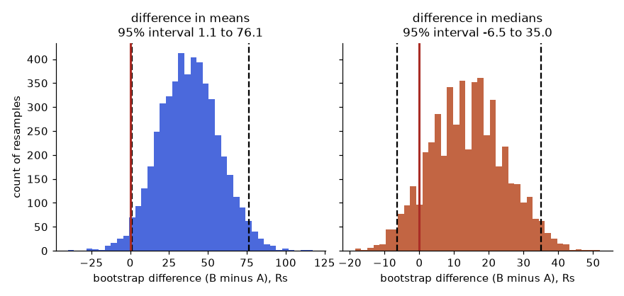
How to read it: The left histogram sits to the right of the red line: the interval for the difference in means (1.1 to 76.1) excludes 0. The right histogram straddles the red line: the interval for the difference in medians (-6.5 to 35.0) includes 0. Same data, different metric, different conclusion.
Problem 13.5.1 From the output above, can you tell the team that B raises revenue per user?
| Mean | B minus A = 38.2, 95% interval 1.1 to 76.1. Zero is outside, but only just: the lower end is nearly 0. |
|---|---|
| Median | Difference 12, interval -6.5 to 35.0. Zero is inside: the typical user's order is not shown to change. |
| Read together | The mean moved more than the median, so a few big spenders drive the gain. The evidence is weak (lower bound 1.1) and depends on a few large orders. |
| Answer | Say "B may raise average revenue per user, by between about 1 and 76 Rs, mostly through high spenders; typical users show no clear change". Do not promise a clean win. Pick the primary metric before the test. |
Permutation test
The bootstrap gives an interval. A permutation test gives a p-value without assuming a distribution. If the label (A or B) did not matter, shuffling the labels would give a difference as large as the real one fairly often. So shuffle the 600 values, split into two groups of 300, compute the difference in means, repeat 10,000 times, and count how often the shuffled difference is at least as large (in absolute value) as the observed one.
import numpy as np
from scipy import stats
rng = np.random.default_rng(7)
a = rng.lognormal(5.0, 1.0, 300).round(0)
b = rng.lognormal(5.15, 1.0, 300).round(0)
observed = b.mean() - a.mean()
pool = np.concatenate([a, b])
r = np.random.default_rng(2)
N = 10000
count = 0
for _ in range(N):
p = r.permutation(pool)
if abs(p[300:].mean() - p[:300].mean()) >= abs(observed):
count += 1
print("permutation p:", round((count + 1) / (N + 1), 4))
print("Welch t-test p:", round(stats.ttest_ind(b, a, equal_var=False).pvalue, 4))
print("Mann-Whitney p:", round(stats.mannwhitneyu(b, a).pvalue, 4))permutation p: 0.0415
Welch t-test p: 0.044
Mann-Whitney p: 0.1013The permutation p-value (0.0415) agrees with Welch's t-test (0.0440). The Mann-Whitney test (0.1013) answers a different question: whether a random B value tends to be larger than a random A value, which is about the whole distribution and not the mean, so it does not have to agree. Choose the test that matches the question you asked.
Many metrics at once: false discovery rate
Bonferroni (Section 13.4) controls the chance of any false alarm and is strict. The Benjamini-Hochberg (BH) procedure controls the false discovery rate: among the metrics you call significant, the expected share that are false alarms is at most q (for example 5%). It is the usual choice when you check many metrics and can accept a few false leads. The steps:
- Sort the m p-values from smallest to largest: p(1) ≤ p(2) ≤ ... ≤ p(m).
- Find the largest k with p(k) ≤ q × k / m.
- Call the metrics ranked 1 to k significant (even those whose own p-value is above their line, if they rank below k).
import numpy as np
p = np.array([0.001, 0.008, 0.012, 0.030, 0.041, 0.049, 0.20, 0.45, 0.62, 0.90]) # already sorted
m = len(p)
limit = 0.05 * np.arange(1, m + 1) / m
print("BH limits:", limit.round(3))
passes = p <= limit
k = np.max(np.where(passes)[0]) + 1
print("BH keeps the first", k, "| Bonferroni keeps", int((p <= 0.05 / m).sum()), "| no correction keeps", int((p < 0.05).sum()))BH limits: [0.005 0.01 0.015 0.02 0.025 0.03 0.035 0.04 0.045 0.05 ]
BH keeps the first 3 | Bonferroni keeps 1 | no correction keeps 6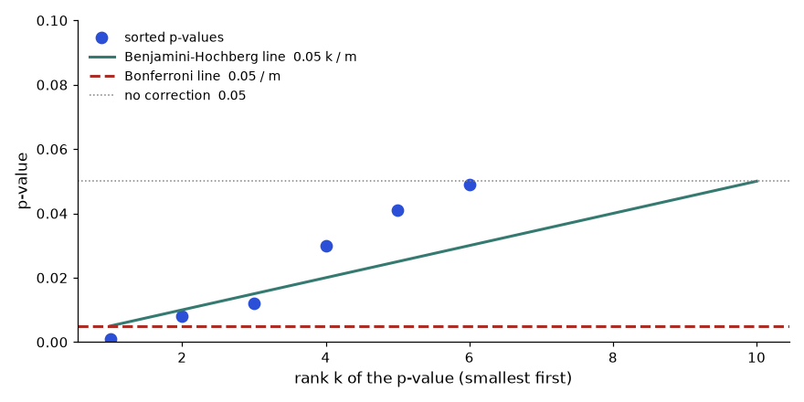
How to read it: Dots 1, 2 and 3 are on or below the green BH line, so three metrics are kept. Dot 4 (0.030) is above the line (limit 0.02), so BH stops there. Only dot 1 is below the red Bonferroni line (0.005). Six dots are below 0.05 with no correction, which would give about 0.05 × 10 = 0.5 false alarms expected if all were null.
Problem 13.5.2 Five metrics have p-values 0.004, 0.019, 0.031, 0.042, 0.300. Which are significant with BH at q = 0.05?
| Limits | q × k / m = 0.05 × k / 5 = 0.01, 0.02, 0.03, 0.04, 0.05. |
|---|---|
| Compare | 0.004 ≤ 0.01 yes. 0.019 ≤ 0.02 yes. 0.031 ≤ 0.03 no. 0.042 ≤ 0.04 no. 0.300 ≤ 0.05 no. |
| Largest k | k = 2. |
| Answer | The first two metrics are significant. Bonferroni (limit 0.01) would keep only the first; no correction would keep four. |
CUPED: use the past to cut the noise
CUPED (controlled experiment using pre-experiment data) removes the part of the metric that you could already predict before the test. If a user's spend in the two weeks before the test predicts the spend during it, subtract that predictable part. The adjusted metric is Y' = Y − θ (X − mean(X)), where X is the pre-period value and θ = cov(Y, X) / var(X). Because X was measured before random assignment, it cannot be affected by the treatment, so the estimate of the effect is still unbiased, but the variance falls by a factor of 1 − r², where r is the correlation between Y and X.
import numpy as np
rng = np.random.default_rng(5)
n = 2000
pre = rng.gamma(4, 50, size=2 * n) # spend before the test
y = 0.8 * pre + rng.normal(0, 60, size=2 * n) # spend during the test, strongly related to the past
arm = np.r_[np.zeros(n), np.ones(n)]
y = y + 8 * arm # the true lift is 8
def lift_and_se(v):
a, b = v[arm == 0], v[arm == 1]
return float(round(b.mean() - a.mean(), 2)), float(round(np.sqrt(a.var(ddof=1) / n + b.var(ddof=1) / n), 2))
r = np.corrcoef(y, pre)[0, 1]
theta = np.cov(y, pre)[0, 1] / pre.var(ddof=1)
y_cuped = y - theta * (pre - pre.mean())
print("correlation:", round(r, 3), "theta:", round(theta, 3))
print("raw lift, se:", lift_and_se(y))
print("CUPED lift, se:", lift_and_se(y_cuped))
print("variance ratio:", round(y_cuped.var() / y.var(), 3), "vs 1 - r^2:", round(1 - r ** 2, 3))correlation: 0.8 theta: 0.815
raw lift, se: (1.84, 3.21)
CUPED lift, se: (6.44, 1.92)
variance ratio: 0.36 vs 1 - r^2: 0.36The raw estimate is 1.84 with standard error 3.21, so a lift of 8 is invisible (the interval spans about -4.5 to 8.1). After CUPED, the estimate is 6.44 with standard error 1.92: the interval (2.7 to 10.2) now excludes 0 and contains the true 8. The variance ratio equals 1 − r² = 0.36, so the standard error shrank by a factor of 0.6. To get the same precision without CUPED you would need about 1 / 0.36 = 2.8 times more users.
Ratio metrics and the delta method
Many metrics are ratios: clicks per session, revenue per visit. The analysis unit is the user (that is what you randomised), but the ratio divides two user totals. If you treat every session as an independent row, you understate the noise, because a user's sessions are related. The delta method gives the right variance for a ratio of means R = mean(Y) / mean(X) over n users:
import numpy as np
rng = np.random.default_rng(9)
users = 500
sess = rng.poisson(4, users) + 1 # sessions per user
lam = rng.gamma(2, 0.75, users) # each user's own clicks-per-session rate
user_id = np.repeat(np.arange(users), sess) # one row per session
clicks_row = rng.poisson(lam[user_id])
clicks_user = np.bincount(user_id, weights=clicks_row)
ratio = clicks_row.mean() # total clicks / total sessions
naive_se = clicks_row.std(ddof=1) / np.sqrt(len(clicks_row))
mx = sess.mean()
vx, vy = sess.var(ddof=1), clicks_user.var(ddof=1)
cxy = np.cov(sess, clicks_user)[0, 1]
delta_se = np.sqrt((vy - 2 * ratio * cxy + ratio ** 2 * vx) / (users * mx ** 2))
r2 = np.random.default_rng(1)
boot = []
for _ in range(4000):
i = r2.integers(0, users, users) # resample USERS
boot.append(clicks_user[i].sum() / sess[i].sum())
print("sessions:", len(clicks_row), " ratio:", round(ratio, 3))
print("naive se (sessions independent):", round(naive_se, 4))
print("delta-method se:", round(delta_se, 4))
print("user-level bootstrap se:", round(np.std(boot), 4))sessions: 2557 ratio: 1.455
naive se (sessions independent): 0.0321
delta-method se: 0.0586
user-level bootstrap se: 0.058The naive standard error (0.0321) is too small by almost half. The delta method (0.0586) and the user-level bootstrap (0.0580) agree. Using the naive number would make A/B results look significant too often.
Going deeper: a Bayesian A/B read
A Bayesian analysis answers the question stakeholders actually ask: "what is the probability that B is better?" With a Beta(1, 1) (flat) prior on each conversion rate, the posterior after x conversions in n users is Beta(1 + x, 1 + n − x). Draw many samples from both posteriors and compare.
import numpy as np
from scipy import stats
rs = np.random.default_rng(3)
xa, na, xb, nb = 120, 2400, 150, 2400 # A: 5.0 percent, B: 6.25 percent
sa = rs.beta(1 + xa, 1 + na - xa, 200000)
sb = rs.beta(1 + xb, 1 + nb - xb, 200000)
print("P(B > A):", round((sb > sa).mean(), 3))
print("95% credible interval for B - A:", np.percentile(sb - sa, [2.5, 97.5]).round(4))
print("frequentist chi-square p:", round(stats.chi2_contingency([[xa, na - xa], [xb, nb - xb]], correction=False)[1], 4))P(B > A): 0.969
95% credible interval for B - A: [-0.0006 0.0256]
frequentist chi-square p: 0.0602The Bayesian view says B is better with probability 0.969, and the credible interval for the lift runs from -0.06 to +2.56 percentage points. The chi-square p-value of 0.060 misses the 0.05 line. These are not contradictory: they are different questions. The Bayesian number is easier to explain, but it still needs a decision rule fixed in advance (for example, "ship if P(B > A) is above 0.95 and the expected loss is small"), or you are peeking again.
13.6 Causal Analysis Without an Experiment
Difference-in-differences by hand
Take average sales per store, before and after the start. Treated stores went from 100 to 130. Control stores went from 90 to 105.
Problem 13.6.1 Compute the effect with three methods and say which is trustworthy.
| Before / after | Treated only: 130 − 100 = +30. This includes the general rise, so it overstates. |
|---|---|
| After comparison | Treated minus control after: 130 − 105 = +25. This includes the gap that existed before (treated stores were bigger by 10 already), so it also overstates. |
| DiD | (130 − 100) − (105 − 90) = 30 − 15 = +15. The control's +15 is the rise that would have happened anyway. |
| Answer | The effect is +15 under the assumption that, without the programme, the treated stores would have risen by the same 15 as the controls. That is the parallel trends assumption: the two groups were moving together before. |
Now with the full store-month data (40 stores, 12 months, programme from month 6) and noise. We build in a true effect of 12 so we can see how close DiD gets. The regression form uses one row per store-month with the model sales = b0 + b1·treated + b2·post + b3·treated·post; the coefficient on the product treated·post is the DiD estimate.
import numpy as np, pandas as pd
rng = np.random.default_rng(25)
rows = []
for s in range(40):
treated = int(s < 20)
base = 100 + 10 * treated + rng.normal(0, 6) # treated stores are bigger to begin with
for m in range(12):
post = int(m >= 6)
sales = base + 1.5 * m + 12 * treated * post + rng.normal(0, 4) # common trend 1.5 a month, true effect 12
rows.append((s, m, treated, post, sales))
df = pd.DataFrame(rows, columns=["store", "month", "treated", "post", "sales"])
g = df.groupby(["treated", "post"])["sales"].mean().unstack()
print(g.round(2))
did = (g.loc[1, 1] - g.loc[1, 0]) - (g.loc[0, 1] - g.loc[0, 0])
print("DiD from group means:", round(did, 2))
print("naive after comparison:", round(g.loc[1, 1] - g.loc[0, 1], 2))
X = np.column_stack([np.ones(len(df)), df.treated, df.post, df.treated * df.post])
beta = np.linalg.lstsq(X, df.sales.values, rcond=None)[0]
print("regression coefficients:", beta.round(2))
r = np.random.default_rng(1)
groups = {s: d for s, d in df.groupby("store")}
est = []
for _ in range(1000): # resample whole stores
pick = r.choice(40, size=40)
d = pd.concat([groups[s].assign(store=i) for i, s in enumerate(pick)])
gg = d.groupby(["treated", "post"])["sales"].mean()
est.append((gg[1, 1] - gg[1, 0]) - (gg[0, 1] - gg[0, 0]))
print("95% interval (store bootstrap):", np.percentile(est, [2.5, 97.5]).round(2))post 0 1
treated
0 103.04 111.70
1 114.36 135.16
DiD from group means: 12.15
naive after comparison: 23.47
regression coefficients: [103.04 11.32 8.65 12.15]
95% interval (store bootstrap): [10.58 13.72]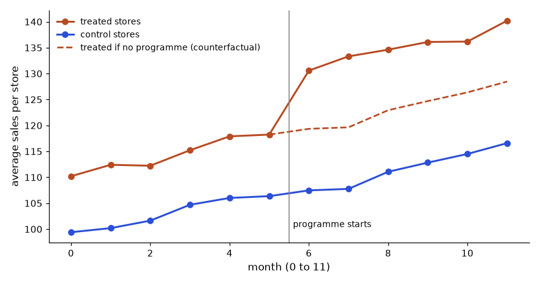
How to read it: Before the vertical line the two solid lines rise side by side (parallel trends). After it the orange line jumps away. The vertical gap between the solid orange line and the dashed orange line is the DiD effect, about 12. The gap between orange and blue overall is larger because treated stores were bigger anyway.
The DiD estimate is 12.15, close to the true 12, and the interval 10.6 to 13.7 contains it. The naive after-comparison says +23.5, almost double. The regression coefficient on treated·post (last number, 12.15) equals the group-means calculation, which is a good check that you set the model up correctly. In practice you would use statsmodels with standard errors clustered by store (not run here, the package is not installed in this environment); the store bootstrap above does the same job.
Check the assumption: parallel trends and a placebo
DiD is only as good as the parallel trends assumption. You cannot test it for the period after the launch, but you can test it before.
- Plot the pre-period for both groups (the left half of the figure). Lines that diverge before the start are a red flag.
- Compare pre-period slopes. Fit a line to each group's monthly averages before the launch.
- Placebo test. Pretend the programme started earlier (month 3), use only pre-launch data, and run DiD. The answer should be about 0.
import numpy as np, pandas as pd
rng = np.random.default_rng(25)
rows = []
for s in range(40):
treated = int(s < 20)
base = 100 + 10 * treated + rng.normal(0, 6) # treated stores are bigger to begin with
for m in range(12):
post = int(m >= 6)
sales = base + 1.5 * m + 12 * treated * post + rng.normal(0, 4) # common trend 1.5 a month, true effect 12
rows.append((s, m, treated, post, sales))
df = pd.DataFrame(rows, columns=["store", "month", "treated", "post", "sales"])
pre = df[df.post == 0]
for t in (0, 1):
d = pre[pre.treated == t].groupby("month")["sales"].mean()
print("pre-period slope, treated =", t, ":", round(np.polyfit(d.index, d.values, 1)[0], 2), "per month")
pre = pre.assign(fake=(pre.month >= 3).astype(int))
gp = pre.groupby(["treated", "fake"])["sales"].mean().unstack()
print("placebo DiD:", round((gp.loc[1, 1] - gp.loc[1, 0]) - (gp.loc[0, 1] - gp.loc[0, 0]), 2))pre-period slope, treated = 0 : 1.58 per month
pre-period slope, treated = 1 : 1.7 per month
placebo DiD: 0.22Slopes of 1.58 and 1.70 a month are close (both built from 1.5 plus noise), and the placebo DiD is 0.22, near zero. Both support the assumption. If the treated slope had been 3 a month, the programme would be getting credit for a trend that was already there.
Matching and stratification: compare like with like
When there is no "before" period, the idea is to compare treated and untreated units that were similar on the things that drive the outcome. The simplest version is stratification: split into groups by a key variable, compare inside each group, and average the differences. Example: customers who used the app versus those who did not. App users spent much more, but app users were mostly already heavy shoppers.
import pandas as pd
d = pd.DataFrame({
"past": ["low", "low", "high", "high"],
"app": [1, 0, 1, 0],
"n": [200, 800, 800, 200],
"mean_spend": [120, 100, 320, 300]})
tot = d.assign(total=d.n * d.mean_spend).groupby("app")[["n", "total"]].sum()
naive = tot.loc[1, "total"] / tot.loc[1, "n"] - tot.loc[0, "total"] / tot.loc[0, "n"]
print("naive difference:", naive)
w = d.groupby("past")["n"].sum() / d["n"].sum() # weights: share of customers in each stratum
diff = d.pivot(index="past", columns="app", values="mean_spend")
diff["effect"] = diff[1] - diff[0]
print(diff)
print("stratified effect:", (diff["effect"] * w).sum())naive difference: 140.0
app 0 1 effect
past
high 300 320 20
low 100 120 20
stratified effect: 20.0The naive difference is 140 rupees. Inside each past-spend group the app is associated with only +20. The big naive number came from who chose the app (the heavy shoppers), not from the app itself. Stratification only removes differences you measured. Customers who are keen in ways you did not record (enthusiasm, income) still contaminate the comparison, which is why observational results are claims about association unless the design is strong. Propensity scores generalise this idea to many variables: model the probability of treatment from the covariates, then compare units with similar probabilities.
Going deeper: regression discontinuity and how to choose
Sometimes a rule gives a natural experiment. Customers with a credit score of at least 600 get an offer. People at 598 and 602 are almost identical, but only one gets the offer, so comparing the two sides of the cutoff is nearly as good as randomisation. This is regression discontinuity (RD). Fit a line on each side of the cutoff using only points within a bandwidth, and read the jump at the cutoff.
import numpy as np
rng = np.random.default_rng(4)
score = rng.uniform(500, 700, 4000)
y = 50 + 0.10 * (score - 600) + 8 * (score >= 600) + rng.normal(0, 5, 4000) # true jump = 8
for bw in (50, 20):
m = np.abs(score - 600) <= bw
below, above = m & (score < 600), m & (score >= 600)
fb = np.polyfit(score[below] - 600, y[below], 1)
fa = np.polyfit(score[above] - 600, y[above], 1)
print("bandwidth", bw, "jump at 600:", round(fa[1] - fb[1], 2), "n =", int(m.sum()))bandwidth 50 jump at 600: 7.77 n = 1981
bandwidth 20 jump at 600: 7.12 n = 799Both bandwidths recover a jump near the true 8 (the narrower window uses fewer points and is noisier, the wider one leans more on the straight-line assumption). The estimate applies only to people near the cutoff.
| Situation | Method | Key assumption | Main danger |
|---|---|---|---|
| Random assignment possible | A/B test | Randomisation worked (check SRM) | Peeking, wrong unit |
| Before and after data, a comparison group exists | Difference-in-differences | Parallel trends | Other events hitting one group |
| Only one snapshot, rich covariates | Stratification, matching, propensity scores | No unmeasured confounders | Hidden drivers |
| A rule with a cutoff decides treatment | Regression discontinuity | People cannot manipulate their score | Effect holds only near the cutoff |
| Only before and after, no comparison | Before/after (weak) | Nothing else changed | Trend, season, regression to the mean |
Chapter recap
- An A/B test randomizes users to control and treatment at the same time, so the change is the only systematic difference.
- Write the hypothesis, primary metric, guardrails, unit and MDE before launch.
- Sample size depends on baseline, MDE, α and power. Halving the MDE needs about four times the users.
- Use the two-proportion z-test for rates and Welch's t-test for means. Report the lift, the CI and the p-value together.
- A p-value is not the chance that B is better. "Not significant" with a small sample is not "no effect".
- Peeking (about 20% false alarms in our simulation), multiple testing, SRM and Simpson's paradox are the classic failures.
- CUPED reduces noise using pre-experiment data. Difference-in-differences handles cases that cannot be randomized.
- Run for full weeks, look once, check SRM first.
| Pattern | Formula or code |
|---|---|
| Sample size (rates) | (zα/2·√(2p̄(1−p̄)) + zβ·√(p₁q₁+p₂q₂))² / δ² |
| Two-proportion z | (pT−pC) / √(p(1−p)(1/nC+1/nT)) |
| 95% CI of difference | diff ± 1.96·√(pC qC/nC + pT qT/nT) |
| Welch t-test | stats.ttest_ind(t, c, equal_var=False) |
| SRM check | stats.chisquare(observed, expected) |
| Bonferroni | α / number of tests |
| DiD | (T_after − T_before) − (C_after − C_before) |
| CUPED | y − θ(pre − mean(pre)), θ = cov(y,pre)/var(pre) |
Practice set
Problem 1 (easy). Control 200 of 4,000 convert, treatment 240 of 4,000. What are the two rates and the difference? Answer: 5.0% and 6.0%, a difference of 1.0 point (a 20% relative lift).
Problem 2 (easy). Which is the randomization unit when you want to compare two app onboarding flows, session or user? Answer: User, so that nobody sees both flows.
Problem 3 (medium). For Problem 1, find z and the p-value. Answer: Pooled p = 440 / 8000 = 0.055. SE = √(0.055 × 0.945 × 2 / 4000) = 0.005098. z = 0.01 / 0.005098 = 1.962. p = 0.0498 (checked by code). Just under 0.05.
Problem 4 (medium). Give the 95% CI for Problem 1 and interpret. Answer: SE = √(0.05 × 0.95 / 4000 + 0.06 × 0.94 / 4000) = 0.005097. CI = 0.01 ± 0.00999 = (0.00001, 0.0200), about 0.0 to 2.0 points. The lower end touches zero, so the evidence is borderline. A careful analyst says "likely positive, but could be near zero; consider a larger test".
Problem 5 (medium). What sample size per group for 10% to 11% at α = 0.05, power 80%? How does it compare with 5% to 6%? Answer: 14,751 per group (code: 14,750.8, rounded up). Higher baselines have a bigger variance p(1−p), so it needs more users than the 8,158 for 5% to 6%.
Problem 6 (medium). With 2,000 eligible users a day and 14,751 per group, how many days? Answer: 2 × 14,751 = 29,502 users, 29,502 / 2,000 = 14.75, so at least 15 days; round up to 3 full weeks (21 days).
Problem 7 (what is the output?). stats.chisquare([5100,4900],[5000,5000]) gives which statistic and is it an SRM? Answer: Statistic = 100²/5000 × 2 = 4.0 with p = 0.0455. Mildly suspicious but not below the usual 0.001 alarm line. Investigate, and check for a recurring pattern.
Problem 8 (find the bug). An analyst tests 10 metrics, finds one with p = 0.03, and announces a win. What is wrong, and what is the corrected threshold? Answer: Ten tests produce a 1 − 0.95¹⁰ = 40% chance of at least one false positive. Bonferroni threshold is 0.05 / 10 = 0.005, and 0.03 does not pass. The metric should be labelled exploratory and re-tested.
Problem 9 (scenario). Treatment: 5,200 users, control: 4,800. Planned 50/50, total 10,000. Is this an SRM? Answer: Expected 5,000 each. Chi-square = 200²/5000 + 200²/5000 = 8 + 8 = 16, p about 0.00006, well below 0.001. Yes, SRM. Stop and find the bug before reading any result.
Problem 10 (interview). "Your test shows +3% conversion with p = 0.04, but the guardrail refund rate rose from 2% to 2.6%. Do you ship?" Answer: Check whether the refund change is significant and what it costs. If refunds rose by 0.6 points and each refund costs more than the gain from the extra conversions, shipping loses money. Quantify both in rupees, show the CI of each, and recommend iterating or a partial rollout. Do not read the primary alone.
Problem 11 (interview). "Explain a p-value to a product manager in two sentences." Answer: "If the new design made no difference, we would see a gap this big only about 4 times in 100 by luck. That is why we believe the change helped, but the size of the gain is better read from the interval."
Problem 12 (hard). The first example of DiD: treated 10 to 12 minutes, control 8 to 9. If control had instead gone 8 to 7, what is the DiD effect? Answer: (12 − 10) − (7 − 8) = 2 − (−1) = 3 minutes. The launch effect is larger because the control improved while the treated city got worse.
Problem 13 A p-value list for 8 metrics is 0.002, 0.009, 0.020, 0.040, 0.051, 0.30, 0.55, 0.80. Which survive BH at q = 0.05?
Answer: Limits 0.05 k / 8: 0.00625, 0.0125, 0.01875, 0.025, 0.03125, 0.0375, 0.04375, 0.05. Checks: 0.002 yes, 0.009 yes, 0.020 vs 0.01875 no, 0.040 vs 0.025 no, 0.051 vs 0.03125 no. The largest passing k is 2, so metrics 1 and 2 survive. Bonferroni (0.00625) keeps only the first.
Problem 14 Treated stores: 80 before, 100 after. Control: 70 before, 80 after. What is the DiD effect and what would a naive before/after say?
Answer: DiD = (100 − 80) − (80 − 70) = 20 − 10 = 10. Naive before/after says +20, double. Naive after-comparison says 100 − 80 = +20, also double.
Problem 15 Explain in two sentences why CUPED does not bias the estimate.
Answer: The covariate was measured before random assignment, so it has the same distribution in both arms and the treatment cannot change it. Subtracting a multiple of it removes noise from both arms equally and leaves the expected difference between arms untouched.
Problem 16 A bootstrap of the median difference gives a 95% interval of -3 to 14. A colleague says: so the new design has no effect. What do you say?
Answer: The interval includes 0, so the data do not rule out no effect, but they also do not rule out +14. Absence of evidence is not evidence of no effect. Report the interval, note the sample was too small for this precision, and compute what sample you would need.
Problem 17 Find the bug: an analyst bootstraps by resampling the 12,000 order rows of 3,000 users and gets a very narrow interval for revenue per user.
Answer: Orders of the same user are correlated, so resampling orders treats 12,000 independent observations when there are really 3,000 users. Resample users (sum orders per user first). The correct interval is wider.
Problem 18 Interview: "We launched a feature to everyone and sales rose 10% the next month. Did the feature work?"
Answer: Ask what else changed (season, campaign, price), check last year's same month, and look for a group that did not get the feature (a late-rollout region, an unaffected product) to run DiD. Without a comparison group, a before/after number cannot be called an effect.
Prompt pack
You are my patient, practical professor. I am a working professional in India moving into data roles, and English is my second language. Teach me Chapter 13 topic: how to design an A/B test, including hypothesis, primary and guardrail metrics, randomization unit, MDE and duration. Use an online shop checkout example and compare it with a bakery selling two loaf recipes on alternate days. Explain step by step, and after each part ask me one question and wait for my answer.
You are my patient, practical professor. I am a working professional moving into data roles. Give me 8 graded exercises, easy to hard, on A/B test sample size and power for conversion rates: baseline, MDE, alpha, power, and converting the sample size to days. Use realistic Indian e-commerce numbers. Do not give solutions yet. After I answer, I will paste my work, and you will check every step and every number.
You are my patient, practical professor. I am a working professional moving into data roles. Teach me, step by step with small numbers, how to analyse an A/B test of two proportions: pooled z-test, p-value, 95% confidence interval, and practical significance. Then give me a new dataset and let me do it by hand before you reveal the result. Explain what a p-value does NOT mean, in simple English.
You are my patient, practical professor. I am a working professional moving into data roles. Review my A/B test report: [PASTE HERE]. Check for peeking, multiple testing, sample ratio mismatch, Simpson's paradox, novelty effect and missing guardrails. Tell me which checks the report passes or fails, rank the problems by importance, and rewrite the conclusion section in honest, clear language.
You are my patient, practical professor. I am a working professional preparing for data analyst interviews. Run a mock interview on A/B testing: choosing metrics, sample size, interpreting p-values and confidence intervals, peeking, SRM, Simpson's paradox and difference-in-differences. Ask six questions one at a time with realistic numbers. After each answer, score me 1 to 5, give a model answer, and name one thing to revise.
Two analysts get the same question and find the same answer. One sends a 14-slide deck with 9 charts and the sentence "please find the analysis attached". The other sends six lines: what happened, why, and what to do on Monday. Only the second analyst gets a promotion. In this chapter you will learn how to clarify what a stakeholder really needs (before you open any data), how to tell the story in the order busy people think (headline, evidence, recommendation), how to write an analysis memo and an executive summary, how to present and answer hard questions honestly, and how to document your work so others can trust it. We use the Delhi revenue drop from the shop in Chapter 1. Everything here is practice you can start tomorrow, and most of it needs no tools at all. Data analysts are often strong at numbers and weak at writing, so this is where you can pull ahead.
14.1 Ask the Right Questions: Stakeholder Management
Words you need first
| Word | Plain meaning | Example |
|---|---|---|
| Stakeholder | Anyone who needs, pays for or is affected by your analysis | Head of Marketing, CFO |
| Decision owner | The person who will act on your answer | The one who signs the budget |
| Scope | What is in and out of the work | Delhi only, January to February |
| Requirement | What the answer must contain to be useful | "A number by city, with a reason" |
| Scope creep | New requests slowly added until the work is endless | "While you are there, also check returns" |
How it works: the clarifying conversation. Before starting, get answers to these (Chapter 1's SPARC list in conversation form):
- What decision will this support, and who makes it?
- What would you do if the answer were A? If B? (If both answers lead to the same action, the analysis is not needed.)
- How do you define the metric (for example, "revenue": delivered orders only? before or after refunds?)
- What time period and which segments?
- What have you already tried or believe? (Their hypothesis saves you hours, and tells you what they will find convincing.)
- By when, and how precise? (A rough number today may beat an exact number next week.)
Setting expectations. Say what you will deliver, by when, and what you will not cover. Send it back in writing in two lines. When asked "can you also...", reply: "Yes, that will add two days. Do you want it before or after the current question?" This turns scope creep into a visible trade-off, and the stakeholder chooses.
Saying "it depends, and here is why". A bare "it depends" sounds evasive. Instead: "It depends on whether you count cancelled orders. If you do, revenue is down 12%. If not, 10%. I recommend the second, because cancelled orders are not revenue." Name the condition, give both numbers, and recommend one.
Real-world mapping
| Item | Example value | Where it appears in the job |
|---|---|---|
| Decision owner | Head of Marketing | First line of the brief and the memo |
| Definition | "Revenue = delivered orders, after refunds" | Data dictionary (14.5) |
| Deadline plus precision | "Tuesday, rough within 5% is fine" | Request ticket |
| Scope note | "Delhi, Jan-Feb; returns excluded" | Top of the notebook and memo |
Worked problem 14.1.1 Your manager says "Can you look at why sales are down?" Write the clarifying questions you would ask, and the one-sentence brief you send back.
- Step 1 Decision: "Is this for the weekly review, or to decide on a budget change?"
- Step 2 Definition: "Sales means delivered-order revenue after refunds, correct?"
- Step 3 Scope and benchmark: "January versus February, all cities, and versus the same months last year?"
- Step 4 Deadline and precision: "By Thursday; is a direct explanation within 10% enough?"
- Answer Brief: "I will explain the change in delivered-order revenue, February versus January, by city and category, and recommend one action, by Thursday. I will not cover returns or marketing spend unless you want them."
- Check Could someone else read the brief and know when the work is finished? Yes.
- Why it matters Two minutes of questions saves two days of rework.
Worked problem 14.1.2 A stakeholder asks to add three more breakdowns the day before the deadline. Write a reply that keeps trust.
- Step 1 Acknowledge: the breakdowns are reasonable.
- Step 2 State the cost: each needs about half a day.
- Step 3 Offer a choice.
- Answer "Good ideas. Each adds about half a day. I can deliver the city analysis on Thursday as agreed and the extra three on Monday, or deliver everything Monday. Which do you prefer?"
- Check The reply contains a time, a cost and a choice, and no blame or refusal.
The picture: the loop
Request ──> Clarify ──> Brief (written back) ──> Analyse ──> Draft ──> Review with owner ──> Final
^ |
└──────────────── new questions go through the same clarify step <───────┘Read it as a loop, not a line: at the review step, new questions arrive. Treat them as a new request, with its own clarify and brief.
Connection to the real job. In interviews, the first thing a good candidate does with "DAU dropped 10%, why?" is ask clarifying questions (Chapter 15). On the job, this habit is the main difference between junior and senior analysts.
Applications
- Data Analytics: every ticket and ad-hoc request.
- Product: aligning on a metric definition before a launch.
- Finance: agreeing what is "in" the monthly close.
- Consulting-style work: scoping a project in a one-page note.
Check yourself
- Why ask "what would you do if the answer were A or B"? Answer: If the action is the same, no analysis is needed.
- How do you handle a new request near the deadline? Answer: State the time cost and offer a choice.
- What is wrong with a bare "it depends"? Answer: It gives no condition and no recommendation.
14.2 Data Storytelling: Headline, Evidence, Recommendation
Formal structure (pyramid principle). Start with the answer, then support it.
Level 1: Headline One sentence with the finding AND the action
Level 2: Evidence Two to three facts that prove it, each with a number
Level 3: Detail Method, caveats, appendix (only for those who want it)Rules for each chart.
- One message per chart, and the title is the message: "Delhi revenue fell 33% while other cities held steady" (an action title), not "Revenue by city".
- Choose the chart for the question: comparison (bars), change over time (line), share (stacked bar, or a table for few categories), relationship (scatter). Chapter 8 has the full chart guide.
- Remove clutter: no 3D, no heavy gridlines, no legend if you can label lines directly.
- Use colour with purpose: grey for context, one strong colour for the thing you want the reader to see.
- Show the comparison: a number without a benchmark is not a story (Chapter 1).
Worked example 14.2.1 (predict, run, explain) First, compute the facts you will tell. Before you run it: which city carries the whole drop?
import pandas as pd
r=pd.DataFrame({"city":["Mumbai","Delhi","Bengaluru","Pune"],"jan":[40000,30000,20000,10000],"feb":[41000,20000,19000,10000]})
r["chg"]=r.feb-r.jan; r["pct"]=(r.chg/r.jan*100).round(1)
print(r.to_string(index=False)); print(r[["jan","feb","chg"]].sum().to_dict())Real output:
city jan feb chg pct
Mumbai 40000 41000 1000 2.5
Delhi 30000 20000 -10000 -33.3
Bengaluru 20000 19000 -1000 -5.0
Pune 10000 10000 0 0.0
{'jan': 100000, 'feb': 90000, 'chg': -10000}Line by line: chg is February minus January in rupees. pct is the change relative to January, rounded to one decimal. The final line sums the three numeric columns: total revenue fell from Rs 1,00,000 to Rs 90,000, a fall of Rs 10,000 or 10%.
- Answer Delhi alone lost Rs 10,000, which equals the whole net fall. Mumbai (+1,000) and Bengaluru (−1,000) cancel each other out and Pune is flat.
- Check 1,000 − 10,000 − 1,000 + 0 = −10,000, which equals 90,000 − 100,000.
Worked problem 14.2.2 Turn the output into a headline, evidence and recommendation.
- Headline "Revenue fell 10% in February, and the entire fall is Delhi (−33%). Fixing Delhi is the priority."
- Evidence 1 Delhi: Rs 30,000 to Rs 20,000 (−33.3%). Other three cities combined: Rs 70,000 to Rs 70,000 (0.0%).
- Evidence 2 (illustrative, not computed here) Delhi late-delivery rate rose from 8% to 19%.
- Recommendation "Review Delhi courier capacity this week; re-check revenue by city on 14 March."
- Answer One paragraph a director can read in 20 seconds.
- Check Other cities: 41,000 + 19,000 + 10,000 = 70,000 in February and 40,000 + 20,000 + 10,000 = 70,000 in January, so "0.0%" is true.
- Why it matters The reader leaves knowing what happened, why we think so, and what to do.
Bad title versus good title
| Weak title | Strong title | Why |
|---|---|---|
| Revenue by city | Delhi lost 33% of its revenue in February | States the finding |
| Orders over time | Orders dipped after 12 Feb, the day the courier changed | Points to the cause |
| Customer segments | 3 customers produce 76% of revenue | Gives the so-what (our RFM example, Chapter 12) |
Storytelling techniques that work. Context, conflict, resolution: "Revenue was steady (context). In February it dropped 10% (conflict). The cause is one city, and a fix is available (resolution)." Show before and after, not just after. Use a single number big on the slide when the message is one number. Annotate the chart with the event ("courier change") instead of leaving the reader to guess.
The picture. Imagine a line chart: x-axis is days of February, y-axis is Delhi orders per day. Grey line for the other cities, a thick coloured line for Delhi, and a vertical dashed line labelled "12 Feb: courier change". The viewer sees the problem in 3 seconds, without reading a legend.
Connection to the real job. Every dashboard, every deck, every email follows this. Power BI visuals (see the Power BI chapters) are the same: one message, a title that states it, and a purposeful colour.
Applications
- Executive reviews: one slide per decision.
- Product: launch retrospectives.
- Marketing: campaign post-mortems.
- Finance: monthly variance commentary.
Check yourself
- What goes first in a story for executives? Answer: The headline with the finding and the action.
- What is an action title? Answer: A chart title that states the message in a sentence.
- Why use grey for most lines? Answer: So the one highlighted series draws the eye.
14.3 Writing: Executive Summaries, Emails and the Analysis Memo
BLUF. Military writers call it Bottom Line Up Front: the first lines hold the conclusion and the ask. A busy reader may only read those lines.
The one-page analysis memo template
TITLE: Delhi revenue drop, February 2025
TO / FROM / DATE
1. BOTTOM LINE (2-3 sentences) What happened, why, what I recommend, what I need from you.
2. KEY NUMBERS (3 bullets) Each with a comparison.
3. WHY (short paragraph + 1 chart) Evidence for the cause, with the confidence level.
4. RECOMMENDATION / NEXT STEPS Action, owner, date. If options: A, B with trade-offs.
5. RISKS AND LIMITS What could make this wrong. What I did not check.
6. APPENDIX Definitions, data sources, method, links to code.Worked problem 14.3.1 Write the Bottom Line and Key Numbers of the memo for our Delhi case.
- Bottom line "February revenue fell 10% (Rs 1,00,000 to Rs 90,000). The whole fall is Delhi (−33%); the other cities together were flat. The likely cause is a rise in late deliveries after the courier change on 12 February. I recommend adding courier capacity in Delhi this week and re-checking on 14 March. I need approval for the courier budget by Friday."
- Key numbers (1) Total revenue: Rs 90,000 vs Rs 1,00,000 in January (−10%). (2) Delhi: Rs 20,000 vs Rs 30,000 (−33%). (3) Other cities: Rs 70,000 vs Rs 70,000 (flat).
- Risks "Only two months of data; the link to the courier is a correlation, not proven. Next step: compare orders for couriers before and after, by pincode."
- Answer The memo fits on one page and leads with the decision.
- Check Does the bottom line include all four: what, why, what to do, what I need? Yes.
- Why it matters A manager can forward the first paragraph to their boss unchanged. That is the highest compliment for a memo.
Calibrated language. Match words to the strength of evidence:
| Evidence | Say |
|---|---|
| Tested with A/B test, tight CI | "The change increased conversion by 1.0 point (95% CI 0.3 to 1.7)" |
| Strong pattern, no experiment | "The data strongly suggests" |
| Weak or single source | "We saw ... but cannot yet say why" |
| Nothing | "I do not know yet. Next step: ..." |
Avoid "proves" for observational data and avoid "significant" without saying statistical or practical.
Executive summary versus email. An executive summary (3 to 5 sentences) tops a long report and mirrors the memo's bottom line. An email should have a subject line with the point ("Delhi caused the Feb revenue drop: decision needed by Fri"), the bottom line in the first sentence, and attachments only as support.
Worked problem 14.3.2 Improve this email subject and opening: "Analysis attached. Subject: Report." Write a version that works.
- Step 1 Put the finding in the subject.
- Step 2 First sentence: the answer and the ask.
- Step 3 Details below the line.
- Answer Subject: "Delhi caused February's 10% revenue drop. Courier budget decision needed by Fri". Opening: "Revenue fell 10% in February; all of it is Delhi, likely due to late deliveries after the courier change. Can you approve extra courier capacity by Friday? Details and chart below."
- Check A reader who reads only the subject gets the message.
Writing tips for non-native speakers. Short sentences. One idea per sentence. Active voice ("Delhi lost 33%", not "A loss of 33% was observed in Delhi"). Concrete numbers instead of "significant" or "large". Read it aloud. AI tools can polish grammar. You still own the facts, so check every number it returns.
Connection to the real job. The memo is the permanent artifact. Slides disappear, but a clear memo in a shared folder gets searched for months later and builds your reputation.
Applications
- A/B test result memos (Chapter 13): lift, CI, guardrails, decision.
- Monthly business reviews.
- Project closing notes for the portfolio (Chapter 15).
- Incident or root-cause write-ups, such as why a hospital clinic ran late or why a delivery route failed.
Check yourself
- What does BLUF stand for? Answer: Bottom Line Up Front.
- Why include a "Risks and limits" section? Answer: It builds trust and shows what could make the conclusion wrong.
- Replace "proves" for an observational finding. Answer: "strongly suggests".
14.4 Presenting and Handling Questions
Structure of a 10-minute presentation.
1 min Context and the question (one sentence on why this matters)
1 min The answer (headline + recommendation)
5 min Two or three pieces of evidence (one chart each)
2 min Risks, what we are unsure about
1 min The ask: decision, owner, dateTell them what you will say, say it, then say what you said. Keep one idea per slide. Rehearse out loud once.
Handling questions.
| Situation | What to do | Example |
|---|---|---|
| You know the answer | Answer in one sentence, then stop | "Delhi was 33% down; the others were flat." |
| You do not know | Say so, and promise a time | "I have not split that by category. I will send it by 5 pm tomorrow." |
| The question is out of scope | Note it, park it | "Good question, outside today's scope; I will add it to the follow-ups." |
| Someone challenges a number | Define the number | "Revenue here means delivered orders after refunds. With cancelled orders the fall is 12%." |
| Hostile or confused | Restate the question, stay calm | "If I understand, you are asking whether the courier is the only cause. We have not proven that." |
Admitting uncertainty honestly. Say how sure you are and why: "I am fairly confident about the Delhi finding because the numbers are large and the timing matches. I am less sure about the cause. Two things would raise my confidence: courier data by pincode, and checking the same effect in Pune, which uses a different courier." People trust analysts who show their limits more than those who bluff, and those who bluff are caught eventually.
Worked problem 14.4.1 In a review, the CFO asks: "Are you sure it is the courier?" You are not. Give an answer that is honest and useful.
- Step 1 Say what you know: "Delhi is the only city down, and the drop started the week of the courier change."
- Step 2 Say what you do not know: "I have not yet proven the courier is the cause, only the timing."
- Step 3 Say the test: "A check on late deliveries by courier and pincode would settle it, which takes one day."
- Answer "Not yet certain. The timing fits, other explanations are not excluded, and I will confirm by Wednesday with courier-level data."
- Check The answer has a fact, a limit and a next step. It would also hold up if the courier turned out not to be the cause.
Worked problem 14.4.2 Rewrite a slide title "Findings" and its four bullet points so the room can follow in 10 seconds.
- Step 1 Pick the single most important finding.
- Step 2 Put it as the title. Put the supporting number on a chart.
- Step 3 Move other bullets to the appendix.
- Answer Title: "Delhi is the only city that fell: -33% versus flat elsewhere", one bar chart with Delhi coloured, one line of text about the likely cause.
- Check Cover the slide body: does the title alone give the message? Yes.
Stakeholder types. Executives want the answer and the decision. Managers want the answer plus the plan. Engineers want the method and the data. Peers want the code. Prepare one deck and tailor the first 60 seconds to the audience.
Connection to the real job. Weekly business reviews, quarterly planning, sprint demos, and interviews (you will present a portfolio project to a panel). The structure above works for all.
Applications
- Business reviews and steering meetings.
- Interview presentations of a case study.
- Customer-facing analytics (reports to clients).
Check yourself
- What do you do when you do not know the answer? Answer: Say so, and promise a time to answer.
- How long should the evidence part of a 10-minute talk be? Answer: Around five minutes, two to three charts.
- Why define the number when challenged? Answer: Most disagreements over numbers are really disagreements over definitions.
14.5 Reproducibility and Documentation
What to document.
| Artifact | What it holds | Example |
|---|---|---|
| Data dictionary | Each column: meaning, type, units, allowed values, source | order_value: rupees, after discount, before shipping |
| Metric definitions | The formula and filters for each KPI | "Revenue = SUM(order_value) WHERE status = 'delivered'" |
| Assumptions log | Judgement calls you made | "Orders under Rs 10 treated as test orders and removed" |
| README | How to run the analysis from scratch | "Run 01_clean.py, then 02_analysis.ipynb" |
| Version control | History of changes to SQL and notebooks | Git commits with messages |
| Change log | What changed in a dashboard or number, and why | "14 Mar: switched to delivered-only revenue" |
Worked example 14.5.1 Build the first draft of a data dictionary from a DataFrame, so you only need to type the meanings. Before you run it: what dtype will the date column show?
import pandas as pd
d=pd.DataFrame({"city":["Delhi"]*3+["Pune"],"delay_flag":[1,0,0,1],"order_value":[450.0,None,520.5,300.0],"order_date":pd.to_datetime(["2025-02-01"]*4)})
dd=pd.DataFrame({"column":d.columns,"dtype":d.dtypes.astype(str).values,"nulls":d.isna().sum().values,"example":[d[c].dropna().iloc[0] for c in d.columns]})
print(dd.to_string(index=False))Real output:
column dtype nulls example
city str 0 Delhi
delay_flag int64 0 1
order_value float64 1 450.0
order_date datetime64[us] 0 2025-02-01 00:00:00Line by line: d.dtypes.astype(str) turns types into text. d.isna().sum() counts missing values per column. The list comprehension picks the first non-missing value from each column as an example. The text type shows as str in recent pandas versions and as object in older ones, so do not be surprised if your screen differs. The date type shows datetime64[us] here and may show [ns] elsewhere, depending on the version.
- Answer You get a four-row skeleton with names, types, missing counts and examples. You then add two columns by hand: "meaning" and "units". The output flags that
order_valuehas one missing value, which belongs in the assumptions log ("1 of 4 rows has no order value; excluded from revenue"). - Check The
nullscolumn sums to 1, matching the singleNonein the input.
Reproducible notebook habits. Run "Restart and run all" before sharing; put paths and parameters at the top; set random seeds (as in Chapter 13's simulations); do not edit raw data by hand, always clean in code; keep SQL in files, not only in a BI tool; and save a copy of the exact query result for the memo. See Chapter 1 for the toolbox map.
Worked problem 14.5.2 A colleague asks, "Why is revenue Rs 4,50,000 in your report but Rs 4,72,000 in the dashboard?" How does documentation answer this in 5 minutes?
- Step 1 Open the metric definition of both: the dashboard includes cancelled orders; the report does not.
- Step 2 Check: difference = 4,72,000 − 4,50,000 = Rs 22,000, and cancelled orders in the period sum to Rs 22,000.
- Step 3 Decide: the official definition is delivered-only, so update the dashboard and add a change-log line.
- Answer Two definitions caused the gap. A written definition ended the debate in minutes instead of days.
- Check 450,000 + 22,000 = 472,000. The arithmetic ties out.
Connection to the real job. Governance of certified datasets, metric stores and code review all rely on these artifacts. In job interviews, mentioning "I keep a data dictionary and an assumptions log" signals seniority.
Applications
- Teams: onboarding a new analyst in a day.
- Audit and finance: showing where a number came from.
- Portfolio: a GitHub project with README and dictionary stands out (Chapter 15).
Check yourself
- Why seed random numbers? Answer: So anyone can reproduce the same results.
- Name two things a data dictionary holds. Answer: Meaning and units (also type, allowed values, source).
- Where do judgement calls go? Answer: The assumptions log.
14.6 Why Two Dashboards Disagree: Reconciliation, Definitions, Contracts and Git
A reconciliation: why do the two dashboards disagree?
Marketing's dashboard says March revenue is Rs 18,300. Finance's says Rs 10,700. Twelve rows of data contain the whole story. Marketing counts every row whose UTC timestamp is in March. Finance counts delivered orders only, once each, by the date in Indian time. We do not guess; we peel the differences off one at a time, in order, and the pieces must add to the gap.
import pandas as pd
orders = pd.DataFrame({
"order_id": [1, 2, 3, 4, 5, 6, 7, 8, 9, 10, 10, 11],
"ts_utc": ["2025-03-01 10:00", "2025-03-05 12:00", "2025-03-10 08:00", "2025-03-15 18:00", "2025-03-20 09:00", "2025-03-28 20:00",
"2025-03-31 19:00", "2025-03-31 20:30", "2025-04-01 01:00", "2025-03-12 11:00", "2025-03-12 11:00", "2025-03-25 14:00"],
"amount": [1000, 2000, 1500, 2500, 1800, 3000, 2200, 1300, 900, 700, 700, 1600],
"status": ["delivered", "delivered", "delivered", "delivered", "returned", "delivered",
"delivered", "delivered", "delivered", "delivered", "delivered", "cancelled"]})
orders["ts_utc"] = pd.to_datetime(orders["ts_utc"])
orders["ts_ist"] = orders["ts_utc"] + pd.Timedelta(hours=5, minutes=30) # India Standard Time is UTC + 5:30
def in_march(col):
return (orders[col] >= "2025-03-01") & (orders[col] < "2025-04-01")
a = orders[in_march("ts_utc")].amount.sum()
d1 = orders[in_march("ts_utc")]
dup = d1[d1.duplicated("order_id")].amount.sum() # same order loaded twice
d2 = d1.drop_duplicates("order_id")
not_delivered = d2[d2.status != "delivered"].amount.sum() # returned or cancelled
d3 = d2[d2.status == "delivered"]
tz = d3[~in_march("ts_ist").reindex(d3.index)].amount.sum() # March in UTC but April in IST
b = orders.drop_duplicates("order_id")
b = b[(b.status == "delivered") & in_march("ts_ist").reindex(b.index)].amount.sum()
bridge = pd.DataFrame({"step": ["Marketing (UTC, all rows)", "duplicate row: order 10 loaded twice",
"returned or cancelled", "timezone: orders 7 and 8", "Finance (IST, delivered, unique)"],
"amount": [a, -dup, -not_delivered, -tz, b]})
print(bridge.to_string(index=False))
print("pieces add up:", a - dup - not_delivered - tz == b) step amount
Marketing (UTC, all rows) 18300
duplicate row: order 10 loaded twice -700
returned or cancelled -3400
timezone: orders 7 and 8 -3500
Finance (IST, delivered, unique) 10700
pieces add up: TrueThe gap is 7,600. Order 10 is in the table twice (700). A return (order 5, 1,800) and a cancellation (order 11, 1,600) total 3,400. Orders 7 and 8 happened at 19:00 and 20:30 UTC on 31 March, which is 00:30 and 02:00 on 1 April in India, so Finance counts them in April (2,200 + 1,300 = 3,500). Then 700 + 3,400 + 3,500 = 7,600, and 18,300 − 7,600 = 10,700. The bridge is the proof: if the pieces do not add up to the gap, a difference is still hiding, and you keep looking.
Problem 14.6.1 Which of the three differences is a bug and which are definitions? What do you recommend?
| Duplicate row | A bug: the same order loaded twice. Fix the pipeline (deduplicate on order_id) and add a uniqueness test. Marketing's number is wrong by 700 for this reason alone. |
|---|---|
| Returned or cancelled | A definition: gross sales versus net sales. Both are legitimate; they must carry different names (Gross Revenue, Net Revenue). |
| Timezone | A definition with a convention: which clock defines the day. The company should pick one (usually the business's local time) and apply it everywhere. |
| Recommendation | Publish one definition of Net Revenue (delivered, deduplicated, IST date), keep Gross Revenue as a second named metric, and point both dashboards at the same calculation. |
Define the metric once
The root cause of most disagreements is that each dashboard re-implemented "revenue" in its own query. The cure is a semantic layer: one place where a metric is defined, with a name, an owner, a plain-language definition and the calculation, and every report asks that place. In Power BI this is the shared semantic model with measures; in dbt it is the metrics or semantic layer; in Looker it is LookML; in a small team it can simply be a documented SQL view. The code below is the smallest possible version: a registry of definitions and one function that evaluates any of them. Both dashboards would call value("net_revenue", ...) and cannot disagree.
import pandas as pd
orders = pd.DataFrame({
"order_id": [1, 2, 3, 4, 5, 6, 7, 8, 9, 10, 10, 11],
"ts_utc": ["2025-03-01 10:00", "2025-03-05 12:00", "2025-03-10 08:00", "2025-03-15 18:00", "2025-03-20 09:00", "2025-03-28 20:00",
"2025-03-31 19:00", "2025-03-31 20:30", "2025-04-01 01:00", "2025-03-12 11:00", "2025-03-12 11:00", "2025-03-25 14:00"],
"amount": [1000, 2000, 1500, 2500, 1800, 3000, 2200, 1300, 900, 700, 700, 1600],
"status": ["delivered", "delivered", "delivered", "delivered", "returned", "delivered",
"delivered", "delivered", "delivered", "delivered", "delivered", "cancelled"]})
orders["ts_utc"] = pd.to_datetime(orders["ts_utc"])
orders["ts_ist"] = orders["ts_utc"] + pd.Timedelta(hours=5, minutes=30) # India Standard Time is UTC + 5:30
def in_march(col):
return (orders[col] >= "2025-03-01") & (orders[col] < "2025-04-01")
import sqlite3
con = sqlite3.connect(":memory:")
orders.assign(ts_utc=orders.ts_utc.astype(str)).drop(columns="ts_ist").to_sql("orders", con, index=False)
METRICS = {
"net_revenue": {
"owner": "Finance",
"definition": "Sum of amount of delivered orders, one row per order, by Indian-time order date.",
"sql": """SELECT SUM(amount) FROM (
SELECT DISTINCT order_id, amount, status,
DATE(ts_utc, '+330 minutes') AS d FROM orders)
WHERE status = 'delivered' AND d >= :start AND d < :end"""},
"gross_revenue": {
"owner": "Marketing",
"definition": "Sum of amount of all unique orders regardless of status, by Indian-time order date.",
"sql": """SELECT SUM(amount) FROM (
SELECT DISTINCT order_id, amount, DATE(ts_utc, '+330 minutes') AS d FROM orders)
WHERE d >= :start AND d < :end"""},
}
def value(name, start, end):
return con.execute(METRICS[name]["sql"], {"start": start, "end": end}).fetchone()[0]
for name in METRICS:
print(name, value(name, "2025-03-01", "2025-04-01"), "|", METRICS[name]["owner"])net_revenue 10700 | Finance
gross_revenue 14100 | MarketingNet revenue is 10,700, the same as Finance's figure. Gross revenue is 14,100: the unique orders of March by Indian time, which are orders 1 to 6, 10 and 11 (11,800 + 700 + 1,600). Marketing's 18,300 was neither: it counted a duplicate and used the UTC clock. Two metrics, two names, one definition each, and a number you can reproduce.
Data contracts: tests that run before the dashboard does
The duplicate in the example should never have reached a dashboard. A data contract (also called expectations or data tests) is a short list of statements that must be true about a table, checked on every load. If one fails, the load stops or alerts someone, and the report keeps showing yesterday's numbers instead of wrong ones. Libraries such as Great Expectations, pandera and dbt tests do this at scale; the idea fits in a few lines.
import pandas as pd
orders = pd.DataFrame({
"order_id": [1, 2, 3, 4, 5, 6, 7, 8, 9, 10, 10, 11],
"ts_utc": ["2025-03-01 10:00", "2025-03-05 12:00", "2025-03-10 08:00", "2025-03-15 18:00", "2025-03-20 09:00", "2025-03-28 20:00",
"2025-03-31 19:00", "2025-03-31 20:30", "2025-04-01 01:00", "2025-03-12 11:00", "2025-03-12 11:00", "2025-03-25 14:00"],
"amount": [1000, 2000, 1500, 2500, 1800, 3000, 2200, 1300, 900, 700, 700, 1600],
"status": ["delivered", "delivered", "delivered", "delivered", "returned", "delivered",
"delivered", "delivered", "delivered", "delivered", "delivered", "cancelled"]})
orders["ts_utc"] = pd.to_datetime(orders["ts_utc"])
orders["ts_ist"] = orders["ts_utc"] + pd.Timedelta(hours=5, minutes=30) # India Standard Time is UTC + 5:30
def in_march(col):
return (orders[col] >= "2025-03-01") & (orders[col] < "2025-04-01")
checks = {
"order_id is unique": lambda d: d["order_id"].is_unique,
"amount is positive": lambda d: bool((d["amount"] > 0).all()),
"status in allowed list": lambda d: d["status"].isin(["delivered", "returned", "cancelled"]).all(),
"no missing timestamps": lambda d: d["ts_utc"].notna().all(),
"no future timestamps": lambda d: bool((d["ts_utc"] <= pd.Timestamp("2025-04-30")).all()),
}
def run_checks(d):
failed = [name for name, test in checks.items() if not test(d)]
for name in checks:
print(("FAIL " if name in failed else "ok ") + name)
return failed
print("raw table:")
failed = run_checks(orders)
if failed:
print("-> stop the load and alert the owner:", failed)
print("after deduplicating:")
run_checks(orders.drop_duplicates("order_id"))raw table:
FAIL order_id is unique
ok amount is positive
ok status in allowed list
ok no missing timestamps
ok no future timestamps
-> stop the load and alert the owner: ['order_id is unique']
after deduplicating:
ok order_id is unique
ok amount is positive
ok status in allowed list
ok no missing timestamps
ok no future timestampsOn the raw table one test fails (the unique id), which is exactly the bug that made Marketing's number wrong. After deduplication all five pass. Four habits make this work: keep the checks next to the pipeline code, make a failing check loud (an email or a chat message to a named owner), test counts and totals against the source system, and add a new check every time you find a new kind of error (the checks are the memory of past incidents).
Working like an engineer: git, scripts, notebooks and schedules
Analysis that others rely on needs the same hygiene as software. The commands below are standard Git; they are described here and are not run here because they need a repository.
Problem 14.6.2 You find the duplicate bug and need to fix the revenue query without breaking the team's work. List the git steps.
| Step 1 | git switch -c fix-duplicate-orders: work on a branch, never directly on main. |
|---|---|
| Step 2 | Edit the query. Add the uniqueness check from the contract. Run it on the real data and note the before and after totals in a comment. |
| Step 3 | git status and git diff: read your own change before saving it. Make sure no data file or password is included. |
| Step 4 | git add sql/net_revenue.sql tests/test_orders.py then git commit -m "Deduplicate orders on order_id; add uniqueness test". A message says what and why, in one line. |
| Step 5 | git push -u origin fix-duplicate-orders, open a pull request, and describe the reconciliation (18,300 to 10,700) with the bridge table. |
| Step 6 | A teammate reviews, you merge, and everyone gets the fix with git pull. If it was wrong, git revert undoes it with a record. |
- Notebooks versus scripts. A notebook is the best place to explore. A script (or a notebook run top to bottom by a tool) is the best place for anything that must be repeated. Before you share a notebook, restart the kernel and run all cells in order; if it fails, it was never reproducible. Strip outputs before committing (a tool like
nbstripoutdoes it) so diffs stay readable. - Secrets and data. Never commit passwords, API keys or customer data. Put them in environment variables or a secrets manager, and list data folders in
.gitignore. - Scheduling. A job that must run every morning is described by a schedule. A cron line,
30 6 * * 1-5 python build_report.py, means 06:30 on weekdays. Teams use a scheduler (Airflow, Power BI refresh schedules, GitHub Actions, a cloud scheduler) so that a failure sends a message. The rule: it must be able to run without you, and it must tell someone when it fails. - Documentation. A README with purpose, inputs, how to run it, and who owns it. A short note beats a long wiki that nobody updates.
Going deeper
- Reconciliation as a habit. Reconcile every new dashboard to a number the business already trusts (finance close, bank statement) before launch, and record the difference and its explanation.
- Late data. Yesterday's total will change when late events arrive. Decide how long a day is open (for example, 3 days) and show the last 3 days as provisional.
- Slowly changing definitions. When a definition changes (a new churn rule), keep the old series, mark the change on the chart and restate history if you can; otherwise a trend line will lie.
- Metric ownership. Each metric has one named owner who approves changes. Without it, definitions drift by small edits that nobody announces.
Chapter recap
- Before opening data, ask what decision the answer supports, how the metric is defined, the scope, and the deadline. Send the brief back in writing.
- Handle scope creep by stating the time cost and offering a choice.
- Tell the story from the top: headline, evidence, recommendation. Details go in the appendix.
- Use action titles, one message per chart, grey for context and one colour for the point.
- A memo has a bottom line, key numbers, why, recommendation, risks and an appendix. Always recommend something.
- Match your words to the strength of evidence: "increased", "suggests", "unclear".
- In presentations, answer briefly, say "I do not know, I will confirm by [time]", and define numbers when challenged.
- Reproducibility means a data dictionary, metric definitions, an assumptions log, a README and version control.
| Pattern | Use |
|---|---|
| SPARC question | Scope, Purpose, Audience, Rules, Clock |
| Pyramid | Headline, evidence, detail |
| BLUF memo | Bottom line, numbers, why, recommendation, risks, appendix |
| Action title | Finding as a sentence, with the number |
| Honest uncertainty | What I know, what I do not, how I will find out |
| Metric tie-out | Explain a gap as definition A minus definition B |
Practice set
Problem 1 (easy). Rewrite the chart title "Monthly orders" as an action title. Orders were 250 in January and 240 in February. Answer: "Orders fell 4% in February (250 to 240)". Check: (240 − 250) / 250 = −4%.
Problem 2 (easy). What are the three levels of the pyramid? Answer: Headline, evidence, detail.
Problem 3 (easy). A stakeholder asks for "a customer list". Name two clarifying questions. Answer: "What decision will the list support (for example, who to call)?" and "How should customers be selected (spend, recency, city)?"
Problem 4 (medium). Revenue in the report is Rs 8,20,000 and in the dashboard Rs 8,45,000. Cancelled orders total Rs 25,000. Is the gap explained, and what do you do? Answer: 8,20,000 + 25,000 = 8,45,000, so the dashboard includes cancelled orders. Agree one official definition (usually delivered only), fix the dashboard, and log the change.
Problem 5 (medium). Find the weakness: "Our sophisticated analysis proves that the new campaign caused a significant increase." Answer: "Proves" is too strong for observational data. "Significant" is unspecified. It gives no number, comparison or interval. Better: "Orders were 12% higher during the campaign than in the prior four weeks; a holdout test would confirm that the campaign caused it."
Problem 6 (medium). Using the Delhi data, what share of the total fall is Delhi's, and what percent did the other cities combined change? Answer: Delhi fell 10,000 of the total 10,000 fall, which is 100%. Others: (70,000 − 70,000) / 70,000 = 0%.
Problem 7 (medium). Write a subject line for an email telling the head of marketing that campaign B has ROAS 6.0 versus A's 3.0 (Chapter 12). Answer: "Shift budget from Campaign A (ROAS 3.0) to B (6.0)? Decision needed by Friday." It has the finding and the ask.
Problem 8 (find the bug). A presenter reads a 7-bullet slide aloud, then answers a question with "I think it was around 15%". What are the two errors and the fixes? Answer: (1) Slide is a script, not a visual: one message, a chart, a title. (2) A guessed number: say "I will confirm the exact figure by tomorrow".
Problem 9 (scenario). Your manager adds three new analyses on Wednesday; the deadline is Thursday and each takes half a day. What do you say? Answer: "Each adds half a day, so 1.5 days in total. I can deliver the original on Thursday and the extras on Monday, or everything Monday. Which do you prefer?" Time cost plus a choice.
Problem 10 (interview). "Tell me about a time you had to explain a complex analysis to a non-technical stakeholder." Answer: Use STAR (Situation, Task, Action, Result). Example: the Delhi case: the situation was a 10% revenue fall; the task was to explain it to the director; the action was a one-page memo with the headline "Delhi alone", one chart, and a recommendation; the result was an approved courier budget and recovered revenue. Mention that you checked definitions first and stated what was uncertain. Use your own real example with real numbers in the interview.
Problem 11 (interview). "What would you do if you found an error in a report that was already sent to the CEO?" Answer: Tell the owner immediately (do not hide it), quantify the impact (what changed, by how much), send a short correction with the right numbers and cause, then fix the process (a check, a test, a reviewer) so it cannot recur.
Problem 12 Dashboard A reports 5,000 orders in a day, B reports 4,800. List four possible causes before you open any data.
Answer: Different timezone for the day boundary, one counts cancelled orders and the other does not, duplicates or late-arriving rows in one source, different sources (website only versus website plus app), and different refresh times. Then test each one and put a number on it.
Problem 13 Revenue by UTC date is 100,000 and by IST date is 96,000 for the same month. Which orders explain the 4,000?
Answer: Orders placed between 18:30 and 24:00 UTC on the last day of the month are on the next day in IST, so they move to the next month; orders at the start of the month do the opposite. The 4,000 is the net of the two groups. Find them with a filter on the hour.
Problem 14 Write two data checks you would run on a table of payments.
Answer: For example: payment_id is unique; amount is greater than 0; every order_id exists in the orders table; the sum per day is within 30% of the same weekday last week (a drift check).
Problem 15 A teammate commits an Excel file with customer phone numbers to the shared repository. What do you do?
Answer: Remove it from the branch and tell the team lead immediately. Deleting the file in a new commit does not remove it from history, so the history may need rewriting and the data may count as an incident. Add the folder to .gitignore and keep customer data out of the repository.
Problem 16 Find the bug: a morning refresh script works on the analyst's laptop but fails on the scheduler with "file not found: data/orders.csv".
Answer: The script uses a relative path that works only from the analyst's folder, and the scheduler runs from a different working directory. Use paths relative to the script file or configured through a variable, and test by running the job in a clean environment.
Problem 17 Interview: "Two executives quote different churn numbers. How do you resolve it?"
Answer: Get both definitions in writing (who counts as active, which window, which segments). Reconcile to a bridge of differences with amounts. Agree one official definition with an owner, rename the other metric if it is still needed, and put both in the shared semantic layer.
Prompt pack
You are my patient, practical professor. I am a working professional in India moving into data roles, and English is my second language. Teach me Chapter 14 topic: how to clarify a stakeholder request before analysing it, including decision owner, metric definition, scope, deadline and scope creep. Give me three realistic vague requests, one at a time. For each, ask me to write my clarifying questions, then give feedback and a model set of questions in simple English.
You are my patient, practical professor. I am a working professional moving into data roles. Teach me data storytelling with the pyramid principle: headline, evidence, recommendation, and action titles for charts. Give me five weak chart titles and a small data table for each, and ask me to rewrite them as strong titles. After each answer, show a better version and explain why in simple words.
You are my patient, practical professor. I am a working professional moving into data roles. Review my analysis memo using the BLUF structure: bottom line, key numbers, why, recommendation, risks, appendix. Check whether the first three lines alone give the finding, the action and the ask, whether numbers have comparisons, and whether the language matches the strength of evidence. Give a rewrite of the bottom line. My memo: [PASTE HERE]
You are my patient, practical professor. I am a working professional moving into data roles, and English is my second language. Run a practice presentation Q and A with me. I will paste a 5-line summary of an analysis: [PASTE HERE]. Ask me one hard stakeholder question at a time (a challenged number, a causation question, a scope request, a question I cannot answer). After each reply, rate it 1 to 5 and show a calm, honest model answer.
You are my patient, practical professor. I am a working professional moving into data roles. Help me build reproducible habits: a data dictionary, metric definitions, an assumptions log, a README and version control for an analysis project. Explain each artifact with a small example, then ask me to draft a data dictionary and assumptions log for a dataset I describe. Review my draft and tell me what a senior analyst would add.
Hiring managers for analyst roles rarely hire on certificates. They hire on evidence: a project you can walk them through, and an interview where you think clearly under pressure. This chapter gives you both. First, eight portfolio projects with a clear scope, a checklist and a way to present each one, including a project on order-processing times, a classic operations dataset. Then the interview side: a step-by-step method for the famous case question "DAU dropped 10%, why?" with a worked example, followed by an interview bank covering metrics cases, SQL, Excel and Power BI, statistics, A/B testing, data cleaning and behavioural questions. Everything numeric below was run or checked by hand. By the end you should have a plan for your next eight weeks and a method you can use in any case interview. This is the last teaching chapter: it pulls together Chapters 1 to 14.
15.1 Capstone Projects: Your Proof of Skill
The eight projects.
| # | Project | Skills shown | Chapter to reuse | Deliverable |
|---|---|---|---|---|
| 1 | Order-processing time analysis | SQL, pandas, charts, operations insight | 4, 5, 8 | Notebook and 1-page memo |
| 2 | Excel dashboard (Power Query, PivotTables) | Excel, refresh without copy-paste | 2, 3 | Workbook and 2-minute screen recording |
| 3 | Power BI sales dashboard | Star schema, DAX time intelligence, RLS | Power BI chapters | .pbix and screenshots |
| 4 | SQL case study: funnel and cohort retention | SQL, product thinking | 12 | SQL file and write-up |
| 5 | A/B test analysis | Statistics, honesty | 13 | Report with CI, SRM check |
| 6 | RFM customer segmentation | pandas, segmentation, actions | 12 | Notebook and segment playbook |
| 7 | Marketing or finance case with recommendations | Domain, storytelling | 12, 14 | Memo |
| 8 | A written case study for each, on GitHub or LinkedIn | Communication | 14 | Published posts |
How to scope a project (so you finish it). Use this recipe: (1) one business question in one sentence; (2) a dataset you can legally use (public datasets, simulated data you generate, or your own anonymised work records); (3) a time box (one to two weeks at one hour a day); (4) a definition of "done": a memo and a repository others can run.
Project 1 in detail: the order-processing time analysis (a signature piece). Operations questions such as "which kind of order is slow, and how often is it late?" show the whole analyst loop with numbers a manager cares about: percentiles, orders per minute and where the delay sits. The code below runs on simulated order data (log-normal processing times, which is how real waiting and processing times look: a body of quick orders and a long tail). In real life you would load your own CSV with pd.read_csv. Before you run it: which order type do you expect to have the worst 95th percentile?
import pandas as pd, numpy as np
rng=np.random.default_rng(11)
rows=[]
for kind,med,sig,n,err in [("standard",40,0.5,600,0.01),("express",30,0.6,1000,0.02),("international",90,0.7,400,0.06)]:
t=np.exp(rng.normal(np.log(med),sig,n)).round(0)
ok=rng.random(n)>err
rows.append(pd.DataFrame({"order_type":kind,"minutes":t,"on_time":ok}))
o=pd.concat(rows,ignore_index=True)
o["ts"]=pd.Timestamp("2025-03-01 10:00:00")+pd.to_timedelta(np.sort(rng.integers(0,600,len(o))),unit="m")
g=o.groupby("order_type").agg(orders=("minutes","size"),avg=("minutes","mean"),median=("minutes","median"),
p95=("minutes",lambda s:s.quantile(0.95)),late_pct=("on_time",lambda s:(1-s.mean())*100)).round(1)
print(g)
dur=(o.ts.max()-o.ts.min()).total_seconds()/60; print("orders/min",round(len(o)/dur,2),"duration",dur)Real output:
orders avg median p95 late_pct
order_type
express 1000 35.9 30.0 77.0 1.7
international 400 106.4 86.0 246.2 5.0
standard 600 45.3 41.5 87.0 1.0
orders/min 3.34 duration 599.0Line by line: np.exp(rng.normal(np.log(med), sig, n)) draws log-normal values whose typical (median) size is med minutes. on_time is True with probability 1 − err. The named aggregation builds one row per order type: order count, mean, median, a 95th percentile through quantile(0.95) inside a lambda (a small unnamed function), and late percent. Throughput is total orders divided by the duration in minutes: 2,000 orders / 599 min = 3.34 per minute.
Answer International orders are the bottleneck: the 95th percentile is 246 minutes against 87 (standard) and 77 (express), and the late rate (5.0%) is the highest. Their mean (106.4 minutes) is well above their median (86.0 minutes), the sign of a long tail. The memo: "International orders take 4 hours at the 95th percentile, with 5% late, at 3.3 orders per minute overall. Target: 95th percentile under 2.5 hours and late rate under 1%. Recommendation: review the customs and packing steps first." Check 400 + 600 + 1000 = 2,000 orders, and 2,000 / 599 = 3.34.
This project shows SQL (load the same data to a table), pandas, a chart (95th-percentile bar with a target line), and a recommendation. Do not publish confidential company data: use public or fully anonymised or simulated data, and say so in the README.
Checklist for every capstone (the "done" test).
- A one-sentence business question and a named decision owner at the top.
- Data source, licence or "simulated" label, and a data dictionary.
- Cleaning steps logged in an assumptions file.
- A notebook that runs top to bottom ("Restart and run all").
- One memo (Chapter 14 template) and 3 to 5 charts with action titles.
- A README: what, how to run, key findings, limits.
- A 150-word LinkedIn or blog post with one chart.
Real-world mapping
| Item | Example value | Where it appears in the job |
|---|---|---|
| Public dataset | Online retail transactions, NYC taxi trips | Case study fuel |
| Time box | 10 days at 1 hour a day | Sprint planning |
| README | "Run make all" | Code review |
| Memo | One-page recommendation | Stakeholder review |
Worked problem 15.1.1 You have 8 weeks and about 1 hour a day (56 hours). Plan the portfolio.
- Step 1 Choose three flagship projects that show different skills: #1 order-processing analysis (operations insight), #4 or #6 (SQL and product thinking) and #3 Power BI dashboard (BI tool).
- Step 2 Budget hours: 15 hours each for three flagship projects = 45 hours.
- Step 3 Use the remaining 11 hours for write-ups (3 hours each = 9) and a 2-hour buffer.
- Answer 45 + 9 + 2 = 56 hours: three finished projects and three published case studies in 8 weeks.
- Check 15 × 3 = 45, 3 × 3 = 9, 45 + 9 + 2 = 56.
- Why it matters Finished and published beats started. Put the best project first on your GitHub profile.
Worked problem 15.1.2 Write the "story" for your order-processing project in 4 lines for the resume.
- Step 1 Action verb, what, method, number.
- Answer "Analysed 2,000 order-processing records with pandas and SQL; found international orders at a 95th percentile of 4.1 hours and 5% late; recommended a review of customs and packing targeting under 2.5 hours. Published notebook and memo on GitHub."
- Check It has a method, numbers and an outcome. Replace the numbers with those of your real (anonymised) project.
Connection to the real job. Interviewers open your repository and ask "walk me through your project". They test whether you did it yourself (they ask why you chose that metric) and whether it was useful.
Applications
- Career switch: evidence replaces missing job titles.
- Internal move: a data project at your own company (anonymised) is the strongest proof.
- Freelance and contests: the same artifacts.
Check yourself
- What is the "done" test for a capstone? Answer: A memo and a repository that someone else can run.
- Why use simulated data openly? Answer: It avoids confidentiality problems if you label it clearly.
- Which project shows operations insight with percentiles and a late rate? Answer: The order-processing time analysis.
15.2 The Metrics Case: "DAU Dropped 10%, Why?"
The method (eight steps). Remember it as C-V-S-D-H-P-R: Clarify, Verify, Segment, Decompose, Hypothesise, Prioritise, Recommend.
- Clarify the metric and the time: What is DAU here (distinct users who did any action? a logged-in action)? Drop compared to when: yesterday, last week, same day last year? Sudden or gradual? Is it a complete drop or recoverable?
- Verify the data before the business: a tracking bug, a late-loading pipeline, a changed definition, a timezone cut-off. A bank manager does the same: before blaming the cashiers for a long queue, check that the ticket counter was not reset.
- Segment the drop to localise it: by time (what day did it start), platform (Android, iOS, web), geography, user type (new vs returning), acquisition channel, app version, feature.
- Decompose the metric (Section 1.4 of Chapter 1): DAU = new-user DAU + returning-user DAU, or DAU = MAU × stickiness.
- Hypothesise causes in two groups: internal (release, bug, pricing, outage, marketing change) and external (seasonality, festival, competitor, holiday, a news event).
- Prioritise by checking the hypotheses that the segments point to, cheapest first.
- Recommend: one action and one follow-up metric.
- State uncertainty honestly.
Worked example 15.2.1 (predict, run, explain) DAU fell from 100,000 to 90,000 (−10%). You split by new versus returning users. Before you run it: could the drop be spread evenly across both groups?
import pandas as pd
df=pd.DataFrame({"segment":["new users","returning users"],"before":[30000,70000],"after":[21000,69000]})
df["chg"]=df.after-df.before; df["pct"]=(df.chg/df.before*100).round(1); print(df); print(df[["before","after","chg"]].sum().to_dict())
ch=pd.DataFrame({"channel":["paid ads","organic","referral"],"new_before":[15000,10000,5000],"new_after":[6000,10000,5000]})
ch["chg"]=ch.new_after-ch.new_before; print(ch)Real output:
segment before after chg pct
0 new users 30000 21000 -9000 -30.0
1 returning users 70000 69000 -1000 -1.4
{'before': 100000, 'after': 90000, 'chg': -10000}
channel new_before new_after chg
0 paid ads 15000 6000 -9000
1 organic 10000 10000 0
2 referral 5000 5000 0Line by line: the first table splits the total change into the two user types. pct is change relative to the before value. The second table splits the new users by acquisition channel.
- Answer New users fell 30% (−9,000), and returning users fell only 1.4% (−1,000). So 90% of the fall (9,000 of 10,000) is new users. Within them, paid ads account for all of the loss (15,000 to 6,000, −9,000), while organic and referral are flat. The product itself (returning users) is healthy. The problem is paid acquisition.
- Check −9,000 − 1,000 = −10,000 equals 90,000 − 100,000, and 15,000 + 10,000 + 5,000 = 30,000 new users before, 6,000 + 10,000 + 5,000 = 21,000 after.
- Hypotheses to test next. Internal: an ad campaign was paused or the budget was cut (check spend), tracking broke for ad-click landing pages (check the attribution tags and install events), the ad creative or targeting changed. External: festival season raised competitors' bids, an ad platform policy changed.
- Recommendation. Check ad spend by day against the drop date. If spend fell, the cause is budget; if spend is flat while installs fall, check tracking and cost per install. Re-check DAU after the fix, and monitor returning-user retention as a guardrail.
The picture: the issue tree
DAU −10%
├── Data problem? (tracking, pipeline, definition, timezone) <- check first
├── Internal change? (release, outage, pricing, marketing spend)
│ ├── by platform / app version
│ └── by feature / funnel step
└── External? (season, festival, competitor, news)
└── compare with last year and with industry
Segment: new vs returning, channel, geography, platform --> find where the drop livesRead from the top down. At each level, do a quick segment cut to decide which branch deserves your next hour.
Worked problem 15.2.2 In a different case, DAU fell 10% (100,000 to 90,000) and the segmentation by platform shows: Android 50,000 to 45,000, iOS 30,000 to 29,000, web 20,000 to 16,000. Where is the problem?
- Step 1 Compute changes: Android −5,000 (−10%), iOS −1,000 (−3.3%), web −4,000 (−20%).
- Step 2 Sum: −5,000 − 1,000 − 4,000 = −10,000. Total matches.
- Step 3 Shares of the drop: Android 50%, iOS 10%, web 40%.
- Answer No single platform explains it. Android is 50% of the drop, but it fell 10%, the same as the total, which means Android is just proportional; web fell 20%, twice the rate, and holds 40% of the drop although it has only 20% of users. Web is the unusual one. Check web releases, SEO traffic and tracking first, then look at Android more broadly.
- Check 5000 / 10000 = 50%, 1000 / 10000 = 10%, 4000 / 10000 = 40%.
- Why it matters Judge a segment by its rate of change compared with the total, and not only by the size of its change.
Words to use in the room. "Before I theorise, let me check the data is right." "I would like to split this by..." "The most likely explanation is X, because Y. I would confirm it by Z." The interviewer wants a structured thinker, not the right answer.
Connection to the real job. This is the real weekly routine of a product or growth analyst when a number falls. The same issue tree works for revenue, conversion, delivery time (!), errors, or churn.
Applications
- Product: DAU, retention, feature usage drops.
- E-commerce: conversion or revenue drops.
- Operations: SLA breaches.
- Operations: a rise in 95th-percentile delivery time, which follows the identical routine (data check, segment by city, courier, week).
Check yourself
- What do you check first? Answer: Whether the data and the definition are right.
- Name three ways to segment a drop. Answer: Platform, new vs returning, channel (also geography, version, time).
- Platform A is 50% of users and 50% of the drop. Is it the problem? Answer: No, it is proportional, so look for a segment whose share of the drop is bigger than its share of users.
15.3 More Case Questions, With Model Answers
Words you need first. Fermi estimate: estimating a number from simple known facts, with stated assumptions. Guardrail: a metric that must not worsen. Trade-off: gaining one thing at the cost of another.
| Family | Typical question | Skeleton of the answer |
|---|---|---|
| Metric dropped or rose | "Orders are up but revenue is flat" | Decompose (orders × AOV), segment, check mix shift |
| Define success | "How would you measure success of a new Wishlist feature?" | Goal, north star, inputs, guardrails, how to test |
| Choose a metric | "What KPIs for a food-delivery app?" | North star, inputs, outputs, guardrails |
| Estimate | "How many chai cups are sold in Bengaluru per day?" | Fermi: population, share, frequency |
| Experiment | "A/B test shows +3% but one guardrail worsened" | CI of each, cost-benefit, rollout plan |
| Prioritise | "Three analysis requests, one analyst" | Impact, effort, deadline, owner |
Worked problem 15.3.1 "Orders rose 20% but revenue was flat. Why?" January: 1,000 orders, AOV Rs 500. February: 1,200 orders, revenue Rs 5,00,000.
- Formula revenue = orders × AOV, so AOV = revenue / orders
- Plug in February AOV = 500,000 / 1,200
- Compute 416.67. January revenue = 1,000 × 500 = 5,00,000. The change in AOV = (416.67 − 500) / 500 = −16.7%.
- Answer Orders +20% but AOV −16.7%, so revenue is flat: 1.20 × 0.8333 = 1.00. Likely causes: discounting, a flood of low-value orders (a new cheap category, free-delivery threshold changes, or a new city with smaller baskets). Check the AOV by category and by acquisition channel, the discount rate and the order mix. Is margin still healthy? Flat revenue with a rise in order cost (delivery, support) is worse than it looks.
- Check 1,200 × 416.67 = 500,000 and 1.2 × 0.8333 = 1.0.
- Why it matters Volume alone is not success. Link to the metric split of Chapter 1.
Worked problem 15.3.2 (Fermi) "How many cups of chai are sold in a city of 12 million in a day?" State assumptions clearly.
- Step 1 Adults and teens who might drink: 70% of 12 million = 8.4 million.
- Step 2 Share who drink chai: 60%, so 5.04 million.
- Step 3 Cups per drinker per day: 2, of which 40% are bought outside the home (the rest are made at home): 2 × 0.4 = 0.8 bought cups.
- Compute 5.04 million × 0.8 = 4.03 million.
- Answer About 4 million cups per day, as a rough estimate. The point is the structure and the stated assumptions, and each can be challenged and replaced with real data.
- Check Sanity: 4 million for 12 million people is 1 cup for every 3 people per day. Plausible, so the order of magnitude is reasonable.
Worked problem 15.3.3 "How would you measure success of a new Wishlist feature?"
- Step 1 Goal: help users come back and buy things they saved.
- Step 2 North star: orders per user within 30 days of first use. Inputs: adoption (share of active users who add an item), items per wishlist, wishlist-to-purchase rate. Guardrails: page speed, regular cart conversion, unsubscribe rate of wishlist emails.
- Step 3 Test: an A/B test (Chapter 13), 50/50 by user, planned sample size, 2 full weeks; one primary metric.
- Answer Success is a significant, practically meaningful rise in orders per user, without worse guardrails, and adoption above a pre-set bar (for example 15% of weekly active users within 4 weeks).
- Check Does the answer name a metric, a guardrail, an experiment and a threshold? Yes.
Worked problem 15.3.4 (prioritising) You have three requests: (A) a weekly dashboard fix, 1 hour, used by 20 people; (B) a churn analysis, 3 days, the CEO wants it in two weeks; (C) an ad-hoc number for a VP in a meeting tomorrow, 30 minutes.
- Step 1 C has a hard deadline and is cheap: do it first.
- Step 2 A is cheap and has many users: do it second (1 hour).
- Step 3 B is the largest, deadline in two weeks: schedule it starting tomorrow.
- Answer C, then A, then B. Tell all three owners the plan and the dates.
- Check Total today is 1.5 hours, leaving the day for starting B.
Connection to the real job. Product managers ask these questions daily. A structured, calm answer is the skill being hired.
Applications
- Product analytics interviews.
- Consulting-style case rounds.
- Stakeholder meetings.
Check yourself
- Orders +10%, AOV −10%. Revenue change? Answer: 1.10 × 0.90 = 0.99, −1%.
- What must a "define success" answer include? Answer: Goal, north star, input metrics, guardrails, and how to test.
- Why state Fermi assumptions? Answer: So they can be challenged and replaced with data.
15.4 The Technical Interview Bank: SQL, Excel, Power BI, Statistics
SQL (the top skill). Four patterns come up in nearly every interview. All three queries below were run in SQLite on this small orders table (8 rows: order_id, cust, city, amount, odate).
Worked example 15.4.1 (top order per city, second-highest value, month-1 retention). Before you run it: how many Delhi orders will the first query return? (One per city.)
-- Top order per city
select city, order_id, amount from (
select *, row_number() over (partition by city order by amount desc) rn from orders
) where rn=1 order by city;
-- Second highest amount
select max(amount) as second_highest from orders where amount < (select max(amount) from orders);
-- Month-1 retention
with f as (select cust, min(substr(odate,1,7)) m0 from orders group by cust),
a as (select distinct cust, substr(odate,1,7) m from orders)
select f.m0, count(distinct f.cust) cohort,
count(distinct case when a.m = strftime('%Y-%m', date(f.m0||'-01','+1 month')) then a.cust end) retained
from f join a on a.cust=f.cust group by f.m0 order by f.m0;Real output:
city order_id amount
------ -------- ------
Delhi 4 900
Mumbai 6 800
Pune 8 400
second_highest
--------------
800
m0 cohort retained
------- ------ --------
2025-01 3 1
2025-02 2 0 Line by line. Query 1: row_number() over (partition by city order by amount desc) numbers the orders inside each city from the biggest, and rn = 1 keeps the top one. Query 2: take the max of everything smaller than the overall max (900), which gives 800. Query 3: f finds each customer's first order month (the cohort), a lists the distinct customer-months, and the join counts cohort members who also ordered in the month after m0. January cohort: A, B, C joined; only A ordered in February (B and C returned in March, not in month 1), so retained = 1. The February cohort (D, E) had no March orders, so 0.
- Answer Delhi's top order is #4 for Rs 900; the second-highest amount overall is Rs 800; month-1 retention for January is 1 of 3 (33%).
- Check Hand check of A: orders on 5 Jan and 10 Feb, so retained in month 1.
Quick SQL Q&A.
| Question | Short answer |
|---|---|
WHERE vs HAVING? | WHERE filters rows before grouping; HAVING filters groups after |
RANK vs DENSE_RANK vs ROW_NUMBER? | With ties 1,1,2: RANK gives 1,1,3; DENSE_RANK 1,1,2; ROW_NUMBER 1,2,3 |
| How to find duplicates? | GROUP BY key HAVING COUNT(*) > 1 |
INNER vs LEFT JOIN? | LEFT keeps all left rows, with NULLs where there is no match |
Why does COUNT(col) differ from COUNT(*)? | COUNT(col) skips NULLs |
| Running total? | SUM(x) OVER (ORDER BY d ROWS UNBOUNDED PRECEDING) |
Excel and Power BI Q&A.
| Question | Short answer |
|---|---|
XLOOKUP vs VLOOKUP? | XLOOKUP looks left or right, defaults to exact match, and has an if-not-found argument |
Fix #N/A from a lookup? | Check for trailing spaces and type mismatch (text vs number); wrap in IFERROR only after fixing the cause |
| PivotTable vs formulas? | Pivot for quick slicing; formulas for fixed reports; Power Query for repeatable cleaning |
| Measure vs calculated column (DAX)? | A measure is computed at query time in the current filter context; a column is stored per row at refresh |
| What is a star schema? | Facts (events, amounts) in the centre, dimensions (date, product, customer) around it, joined 1:many |
| Row-level security? | Rules that limit which rows each user sees, defined per role and tested with "View as" |
CALCULATE does what? | Changes the filter context for an expression |
Statistics and A/B Q&A.
| Question | Short answer |
|---|---|
| Mean vs median? | Median is robust to outliers; waiting times and incomes are skewed, so use the median or percentiles |
| What is a p-value? | If no effect existed, the chance of seeing a result at least this extreme. It is not the chance the hypothesis is true |
| Correlation vs causation? | Two things moving together may have a third cause; only randomised experiments (or careful quasi-experiments) support causal claims |
| Type I vs Type II error? | Type I: false alarm (α). Type II: missed effect (β). Power = 1 − β |
| How to compute sample size? | Baseline, MDE, α, power: the 8,158 per group example of Chapter 13 |
| What is SRM? | Arm sizes differ from the planned split more than chance allows; the test is invalid until fixed |
| Confidence interval in plain words? | The range of effects the data supports; if it excludes 0, the result is significant at that level |
Data cleaning case. "You get a CSV of orders. What do you do?" Answer in order: (1) Understand the source and grain (one row per what?). (2) Shape, dtypes, memory (df.info()). (3) Missing values: how many, which columns, the pattern (Chapter 7). (4) Duplicates (duplicated). (5) Impossible values (negative prices, dates in 1970, future dates). (6) Inconsistent categories (Delhi, delhi , New Delhi). (7) Outliers: check, do not delete automatically. (8) Log each decision. Each step has a reason; say it.
Worked problem 15.4.2 A column amount has values [100, 120, 110, 95, 5000]. Is 5,000 an outlier by the IQR rule, and would you delete it?
- Formula IQR rule: outlier if value < Q1 − 1.5·IQR or > Q3 + 1.5·IQR
- Plug in Sorted: 95, 100, 110, 120, 5000. With the default
numpy.percentile(which pandasquantilealso uses), Q1 = 100 and Q3 = 120. In code:np.percentile([100,120,110,95,5000],[25,75])gave100.0, 120.0. - Compute IQR = 120 − 100 = 20. Upper fence = 120 + 1.5 × 20 = 150.
- Answer 5,000 is far above the fence of 150, so it is flagged. Do not delete it automatically. Check the source: a bulk order (keep), a typo of 500.0 (fix after confirming), or a test order (remove). Record the decision in the assumptions log.
- Check The median is 110 and 5,000 is about 45 times that. With five rows the quartiles are unstable (a hand method that takes the median of each half gives Q3 = 2,560 and does NOT flag it), so the IQR rule needs enough data and a domain check.
Connection to the real job. Technical rounds are 40-60% SQL. Practise on a free site daily for 20 minutes (any SQL practice platform), and explain your answers aloud.
Applications
- SQL screens (live coding or take-home).
- Excel tests (a timed spreadsheet task).
- Power BI take-home dashboards.
- Statistics fundamentals in analyst and data-science screens.
Check yourself
- Which function gives 1, 1, 3 for ties 1, 1, 2? Answer: RANK.
- Why does COUNT(col) differ from COUNT(*)? Answer: COUNT(col) ignores NULLs.
- A measure or a column for a ratio that depends on filters? Answer: A measure.
15.5 Behavioural Interviews, Your Story and Your Next 8 Weeks
STAR. Situation (context in one sentence), Task (your responsibility), Action (what you did, step by step, "I" not "we"), Result (a number and a lesson).
Your bridge story. You are moving to analytics from another career. Do not hide it, use it:
"For N years I worked in [your field]. I read reports with percentiles and
rates, found where problems sat, and explained them to colleagues and managers.
I now apply the same habit to business data: segment, find where it hurts, recommend a fix.
Proof: my project X, where I [one number and one result]."Common behavioural questions.
| Question | What they test | Skeleton |
|---|---|---|
| Tell me about yourself | Focus | Bridge story, 60 seconds |
| A time you disagreed with a stakeholder | Collaboration | Listen, show data, define metric, agree next step |
| A time your analysis was wrong | Honesty | Found it, told the owner, fixed it, added a check |
| A tight deadline with unclear requirements | Judgement | Clarify, scope, deliver the 80% version first |
| Why analytics? | Motivation | Decisions from data, plus the experience from your earlier career |
| A time you influenced a decision | Impact | Headline, evidence, recommendation (Chapter 14) |
Worked problem 15.5.1 Convert this weak answer to STAR: "I helped the team with delivery delays and it went well."
- Situation "International orders were taking nearly 6 hours at the busiest time of the week."
- Task "I had to find the cause before the festival sale in 3 days."
- Action "I segmented the order log by order type, found international orders at a 95th percentile of 5.8 hours, correlated it with customs-hold time, and showed the warehouse team a chart."
- Result "They added a pre-clearance step. The 95th percentile fell to 1.9 hours, and the sale went on time. I learned to show the evidence, not just the number."
- Answer The rewritten answer has a number in every part and uses "I".
- Check Replace the numbers with your own real story; never invent achievements in an interview.
Your eight-week plan (1 hour a day).
| Weeks | Focus | Output |
|---|---|---|
| 1-2 | SQL practice (20 min a day) and Project 1 (order-processing analysis) | Repository 1, case study 1 |
| 3-4 | Project 4 or 6 (funnel, cohort or RFM) | Repository 2 |
| 5-6 | Power BI dashboard (Project 3) or A/B analysis (Project 5) | Repository 3 |
| 7 | Interview bank, mock interviews with the Prompt pack | Notes of weak areas |
| 8 | Resume, LinkedIn, 3 posts, apply to 10 roles | Applications sent |
Honest note on the market. Hiring changes with time and place; I will not quote salaries or demand figures here because they go stale. Check current job posts for your target city and role to see which tools they ask for. Apply early, even before you feel ready, because interviews are also your best teacher.
Connection to the real job. The story you tell in interviews is the same you tell your manager every week: what I found, why it matters, what I suggest.
Applications
- Interviews at product companies, banks, e-commerce and IT services.
- Internal transfer pitches.
- LinkedIn profile summary.
Check yourself
- What does STAR stand for? Answer: Situation, Task, Action, Result.
- Why use "I" and not "we"? Answer: They are hiring you, so they need to know what you did.
- Your first fix when you do not know an answer in an interview? Answer: Think aloud with your method, say what you would check, and be honest about the gap.
Chapter recap
- Three finished, published projects beat many half-done ones. Make one of them the order-processing analysis, which shows operations insight.
- Every project needs a business question, a data dictionary, an assumptions log, a runnable notebook, a memo and a README.
- For "metric dropped" questions: Clarify, Verify data, Segment, Decompose, Hypothesise, Prioritise, Recommend.
- Judge a segment by its rate of change versus the total, not just by size.
- Case families (success metric, estimate, experiment, prioritisation) each have a standard skeleton.
- SQL basics (window functions, top-N, retention, duplicates, NULLs) are in nearly every technical round.
- Clean data in a fixed order and log each decision. Rules like IQR assist, but do not decide.
- Use STAR with real numbers and your bridge story from your earlier career.
| Pattern | Use |
|---|---|
| C-V-S-D-H-P-R | Metric-drop case method |
| Issue tree | Data, internal, external; then segment |
| Share of drop | segment change / total change and compare with the segment's user share |
row_number() over (partition by g order by x desc) | Top-N per group |
GROUP BY k HAVING COUNT(*) > 1 | Find duplicates |
| STAR | Situation, Task, Action, Result |
| Fermi | Population × share × frequency, with stated assumptions |
Practice set
Problem 1 (easy). In Example 15.2.1, what share of the 10,000 fall is new users? Answer: 9,000 / 10,000 = 90%.
Problem 2 (easy). First thing to do when told "revenue dropped 15%"? Answer: Check the data and definitions (tracking, pipeline, timezone, metric definition), and clarify the period and the comparison.
Problem 3 (easy). From p95 = 246 minutes and median = 86 minutes for international orders, what does the gap say? Answer: A long tail: a few very slow orders, so the mean (106.4 minutes) and p95 are far above the median. Use percentiles, not averages, in the report.
Problem 4 (medium). DAU fell from 80,000 to 72,000. Android 40,000 to 38,000, iOS 25,000 to 24,000, web 15,000 to 10,000. Where is the problem? Answer: Changes: −2,000, −1,000, −5,000, total −8,000 (−10%). Web fell 33.3% and holds 62.5% of the drop with 18.75% of users. The problem is web.
Problem 5 (medium). What is the output? select max(amount) from orders where amount < (select max(amount) from orders) on amounts 900, 800, 800, 700. Answer: 800. It takes the maximum of values below 900. If you want the second distinct highest, this is correct; with ties it returns the tied value once.
Problem 6 (find the bug). A retention query counts a customer retained if they ordered "in a later month", but the report is titled "month-1 retention". What is wrong? Answer: It is rolling retention (any later month), which is higher than month-1 retention (exactly the next month). Match the join condition to the title, or retitle it.
Problem 7 (medium). Orders +25%, AOV −20%. Revenue change? Answer: 1.25 × 0.80 = 1.00, no change.
Problem 8 (medium). Fermi: how many cars are on the road in a city of 6 million with 1 car per 6 people, and 30% on the road at any moment? Answer: 6,000,000 / 6 = 1,000,000 cars. 30% on the road = 300,000. State that these are assumptions and show the structure.
Problem 9 (hard). After a pricing change, conversion fell from 5.0% to 4.5% but revenue per visitor rose from Rs 25 to Rs 27. Was the change good? Answer: AOV before = 25 / 0.05 = Rs 500; after = 27 / 0.045 = Rs 600. Revenue per visitor rose 8% (27 / 25 = 1.08) even though conversion fell 10% (0.045 / 0.05 = 0.9). Good for revenue if the effect is statistically solid, but check margin, repeat rate (customers may be lost long term) and returns. Ideally confirm with an A/B test.
Problem 10 (interview). "DAU on Android fell 10% yesterday only. What do you do?" Answer: Verify data (did logging or the SDK change?), check release history (a new app version yesterday), segment by app version and OS version, look at crash rates and Play Store ratings, compare with other days and weekdays. If only one version is down, it is probably a bug; recommend a hotfix and monitor.
Problem 11 (interview). "Which metric would you use to judge a recommendation feature, and what guardrails?" Answer: North star: orders per user, or revenue per user, from users who saw recommendations in an A/B test. Inputs: click-through rate on recommendations, add-to-cart rate. Guardrails: page load time, return rate, diversity of items bought (avoid over-focusing on bestsellers), and unsubscribe/complaint rates.
Problem 12 (interview, behavioural). "Tell me about a time you made a mistake in an analysis." Answer: A STAR answer with a real example: describe the error (for example a join that duplicated rows and inflated revenue 12%), how you found it (a reconciliation against the finance total), what you did (told the owner the same day, sent corrected numbers), and what you changed (a row-count check after every join, as in validate= in merge). End with the lesson.
Prompt pack
You are my patient, practical professor. I am a working professional in India moving into data roles, and English is my second language. Teach me Chapter 15 topic: the metrics case question "DAU dropped 10%, why?" using the steps Clarify, Verify data, Segment, Decompose, Hypothesise, Prioritise, Recommend. Walk me through one example with numbers. Then give me a new case with a small table, and let me solve it before you show your answer. Correct my structure gently.
You are my patient, practical professor. I am a working professional moving into data roles. Help me plan three portfolio projects for a data analyst job: one on order-processing or delivery times (percentiles, late rate), one on SQL funnels and cohorts, and one Power BI dashboard. For each project give a business question, a free dataset idea, a checklist, a README outline and a 150-word LinkedIn post outline. Ask me three questions first about my time and tools.
You are my patient, practical professor. I am a working professional preparing for data analyst interviews. Quiz me one question at a time on business case questions: metric dropped, define success for a feature, choose KPIs, Fermi estimation, and prioritising requests. Give a new question each time, wait for my answer, then score me 1 to 5, show a structured model answer, and tell me one habit to improve.
You are my patient, practical professor. I am a working professional preparing for data analyst interviews. Give me 10 SQL interview questions with a small table I can type into SQLite: top N per group, second highest, duplicates, running total, month-1 retention, and a window-function question with ties. Do not give solutions yet. When I paste my queries, run them mentally, find bugs, and explain the fix. My answers: [PASTE HERE]
You are my patient, practical professor. I am a working professional moving into data roles, and English is my second language. Run a full mock analyst interview: two behavioural questions, one metrics case, one SQL question, one A/B testing question and one data cleaning case. Ask them one at a time. After each answer, score me 1 to 5 on structure, correctness and clarity, show a model answer in simple English, and at the end give me a ranked list of what to practise next.
Chapter 15 told you what a good portfolio looks like. This chapter shows you how to build it. A project is not "open a dataset and make charts". It is a question, a dataset you can defend, a repeatable method, a result you can measure, and a short story that a stranger can read in two minutes. In the first half of this chapter you learn the workflow that every project in this lab follows. Then you build three projects: an operations results analyzer (SQL and pandas), a sales dashboard design (Power BI), and an Excel dashboard (Power Query and PivotTables). Every Python and SQL block was run, and the output shown is the real output. Power BI and Excel steps are marked "not run here" because those tools are not available in this environment; for them I give you data that I generated and totals that I checked in pandas, so that you can verify your own dashboard against known numbers. Chapter 17 continues with three more projects.
16.1 How to Run a Project in This Area
Plan the question and the success criteria
Write three lines before you open any tool.
- The question in one sentence, with a decision owner. Weak: "Analyse orders." Strong: "Which order types are slow or failing, and is it getting worse, so the operations manager can decide where to add staff?"
- The output: what the reader receives. A notebook, a dashboard, a one-page memo.
- Success criteria that can be measured. Examples: "report matches an independent calculation to the last digit", "refreshes with one click", "a new reader can run it in 10 minutes".
Repo layout
Use the same layout for every project. A reviewer who has seen one of your repos can then navigate all of them.
project-name/
├── README.md what, why, how to run, key results, limits
├── requirements.txt pinned libraries (pandas==..., numpy==...)
├── data/
│ ├── raw/ untouched inputs or generated files (never edit by hand)
│ └── processed/ cleaned outputs you can recreate
├── src/
│ ├── make_data.py data generator (if the data is simulated)
│ ├── load.py raw -> database or clean table
│ └── analyze.py the numbers and charts
├── sql/ .sql files, one query per file, named by purpose
├── notebooks/ exploration (optional, restart-and-run-all must work)
├── tests/ small checks, e.g. totals match, no duplicate IDs
├── reports/ memo.md, charts (png), dashboard screenshots
└── .gitignore large files, .env, *.dbEnvironment and dependencies
Create a virtual environment (an isolated folder of libraries for this project only), install a short list of libraries, and write them to requirements.txt.
python3 -m venv .venv
source .venv/bin/activate # Windows: .venv\Scripts\activate
pip install pandas numpy matplotlib
pip freeze > requirements.txt # not run heresqlite3 is built into Python, so you need nothing extra for a local SQL database. Library versions change over time, so recording them in requirements.txt is what lets someone else repeat your results.
Data sourcing or generation
You have three honest options: (1) a public dataset with a licence you can read (state the link and licence in the README); (2) data you generate with code and a fixed random seed (a seed is a starting number that makes "random" numbers repeat exactly, so everyone gets the same file); (3) your own records, fully anonymised. Never publish confidential data. Every project below uses option 2, so you can run it today, and says so in the README.
Commit rhythm and good commit messages
Commit when one small thing works, not at the end of the week. A good rhythm is 6 to 12 commits per project. A commit message says what changed and why, in the present tense, in under 70 characters for the first line.
| Weak message | Strong message |
|---|---|
update | Add nearest-rank percentile query in SQL |
fix bug | Fix YoY: compare same period, not full year |
final version | Add data checks: unique IDs, no negative times |
changes | Document how to regenerate data with seed 42 |
Definition of done
A project is done when all of these are true:
- The question and decision owner are stated at the top of the README.
- A stranger can follow the README and reproduce your numbers in under 10 minutes.
- At least one independent check passes (a second method gives the same total).
- Every chart has an action title ("International orders are slowest"), not a label ("Chart 1").
- Limits are stated: what the data cannot tell you.
- One screenshot or chart is in the README, and one post is drafted.
README template
# <Project title>
**Question:** <one sentence, with the decision it supports>
**Answer in one line:** <the main finding, with a number>
## Data
Source or "simulated with seed N". Columns and meaning (data dictionary).
## How to run
1. python3 -m venv .venv && source .venv/bin/activate
2. pip install -r requirements.txt
3. python3 src/make_data.py
4. python3 src/analyze.py
## Method
Short bullets: cleaning rules, definitions (for example how percentile is computed).
## Results
Table or chart with an action title. Three bullets of insight.
## Checks
What I compared against and the result.
## Limits and next steps
What this cannot show. Extensions.Demo and deploy options
- GitHub repo with the README and a screenshot: the minimum.
- GitHub Pages or a static HTML export: save a chart or table as HTML and publish it for free.
- Short screen recording (1 to 2 minutes) of a dashboard refreshing: ideal for Excel and Power BI, where a repository alone does not show the product.
- Power BI publishing needs an account type that your organisation or licence allows; if you cannot publish, use screenshots and a PDF export (not run here).
How to write the LinkedIn or blog post
Use five short parts: (1) the question in plain words; (2) the surprising number ("5% of orders fail, but on day 14 it was 4.7% against 1.0% on day 1"); (3) one chart; (4) what you did, in two lines; (5) the link, plus one limit you were honest about. 150 to 250 words. No jargon without a definition. Avoid the phrase "I am excited to share".
Testing and debugging checklist for analytics projects
Run this list before you call anything finished.
- Row counts: rows in = rows out at every step (or you can explain every difference).
- Unique keys:
df.order_id.is_uniqueis True. - Ranges: no negative times, no dates in the future, no percentages above 100.
- Totals tie out: a second method (SQL vs pandas, DAX vs pandas, PivotTable vs pandas) gives the same total.
- Join check: after a merge, row count did not grow (a many-to-many join duplicates rows silently).
- Definitions written down: "error rate = errors / all orders", "percentile = nearest rank".
- Time zones and date formats:
01/02/2025is 1 February in some countries and 2 January in others; set the format explicitly. - Restart and run all in a notebook, with a fresh kernel.
- Sample by eye: print 5 random rows and check them against the source by hand.
Check yourself
- Write the three planning lines for a project on hospital appointment waiting times. Answer: a sample is "Which clinics have the longest waits and are waits growing?"; output: notebook and memo; success: totals match an independent calculation and a stranger can run it in 10 minutes.
- Why fix a random seed? Answer: so the same data is generated each time and results can be reproduced.
- After a merge, rows went from 6,000 to 7,500. What happened? Answer: duplicate keys on the right table created extra rows (a many-to-many join).
16.2 Project: Operations Results Analyzer
Goal and why employers care
Goal: load a CSV of timed events (here: how many minutes each shop order took from payment to dispatch) into a database, then report the average, median, 90th, 95th and 99th percentile, the error rate and the trend over time, using SQL and pandas, and check that both give the same answer.
Employers care because almost every business has a table of "things that took some time and sometimes failed": orders, support tickets, loan approvals, deliveries. A candidate who reports only the average misses the slow tail that customers actually feel. A candidate who can compute percentiles in SQL, check them in pandas, and say "the error rate is rising 0.3 points a day" is doing real analyst work.
Skills used
Chapter 4 (pandas basics: read_csv, groupby, agg), Chapter 5 (cleaning and transforming: types, filtering), Chapter 6 (NumPy: polyfit), Chapter 7 (EDA step by step), Chapter 8 (data visualization), and the SQL window functions from Chapter 12 (business analytics).
Data
Generate it. This file has 3,000 orders over 14 days, three order types, a slow upward drift in processing time, and an error rate that rises by about 0.2 points a day, so we know the truth we want to find.
# src/make_data.py
import numpy as np, pandas as pd
rng = np.random.default_rng(42)
n = 3000
start = pd.Timestamp("2025-03-01")
ts = start + pd.to_timedelta(np.sort(rng.integers(0, 14*24*60, n)), unit="m")
kind = rng.choice(["standard", "express", "international"], n, p=[0.5, 0.35, 0.15])
med = pd.Series(kind).map({"standard": 40, "express": 30, "international": 90}).to_numpy()
day = (ts - start).days.to_numpy()
mins = np.exp(rng.normal(np.log(med), 0.5, n)) * (1 + 0.01 * day) # slow upward drift
status = np.where(rng.random(n) < (0.02 + 0.002*day), "error", "ok")
df = pd.DataFrame({"order_id": np.arange(1, n+1), "ts": ts, "order_type": kind,
"minutes": mins.round(1), "status": status})
df.to_csv("orders.csv", index=False)
print(df.head(3)); print(df.shape)Before you run it: how many columns will df.shape show? Real output:
order_id ts order_type minutes status
0 1 2025-03-01 00:10:00 express 31.0 ok
1 2 2025-03-01 00:21:00 international 71.4 ok
2 3 2025-03-01 00:24:00 standard 24.1 ok
(3000, 5)Why log-normal? Times are never negative and have a long right tail: many quick orders and a few very slow ones. A normal (bell) curve would give negative times. np.exp(rng.normal(np.log(med), 0.5, n)) produces values whose median is med.
Architecture
orders.csv --load.py--> ops.db (table: orders) --sql/*.sql--> numbers
| |
+--------------- pandas (analyze.py) ------------------------+--> compare --> memo + chartsStep-by-step build
- Load into SQLite and get headline numbers. Convert the timestamp to text for SQLite (it has no true datetime type), then run a summary query.
import sqlite3, pandas as pd
df = pd.read_csv("orders.csv", parse_dates=["ts"])
con = sqlite3.connect("ops.db")
df.assign(ts=df.ts.astype(str)).to_sql("orders", con, if_exists="replace", index=False)
print(pd.read_sql("""
SELECT COUNT(*) AS n, ROUND(AVG(minutes),1) AS avg_min,
ROUND(100.0*SUM(status='error')/COUNT(*),2) AS error_pct
FROM orders""", con)) n avg_min error_pct
0 3000 53.3 3.7In SQLite status='error' is 1 when true and 0 when false, so SUM(...) counts the errors. 111 errors in 3,000 orders is 3.7%.
- Percentiles in SQL. SQLite has no percentile function, so use the nearest-rank method: sort the values, number them 1..n, and the p-th percentile is the first value whose rank is at least p × n. We use only successful orders, because failed orders have no meaningful processing time (write this rule in the README).
q_pct = """
WITH ranked AS (
SELECT minutes, ROW_NUMBER() OVER (ORDER BY minutes) AS rn, COUNT(*) OVER () AS n
FROM orders WHERE status='ok')
SELECT
MIN(CASE WHEN rn >= 0.50*n THEN minutes END) AS p50,
MIN(CASE WHEN rn >= 0.90*n THEN minutes END) AS p90,
MIN(CASE WHEN rn >= 0.95*n THEN minutes END) AS p95,
MIN(CASE WHEN rn >= 0.99*n THEN minutes END) AS p99
FROM ranked"""
print(pd.read_sql(q_pct, con)) p50 p90 p95 p99
0 42.3 99.0 125.1 211.0Line by line: ROW_NUMBER() OVER (ORDER BY minutes) numbers the rows from the fastest; COUNT(*) OVER () puts the total count on every row; CASE WHEN rn >= 0.95*n THEN minutes END keeps only values at or above the 95% position and gives NULL otherwise; MIN of those is the first such value.
- Check against pandas. Same data, two methods. Predict first: will they match exactly?
ok = df[df.status=="ok"].minutes
print(ok.quantile([.5,.9,.95,.99]).round(1).to_dict())
print(ok.quantile([.5,.9,.95,.99], interpolation="higher").round(1).to_dict()){0.5: 42.3, 0.9: 98.9, 0.95: 124.9, 0.99: 210.4}
{0.5: 42.3, 0.9: 99.0, 0.95: 125.1, 0.99: 211.0}The default pandas quantile interpolates (draws a line between the two neighbouring values), so it gives 124.9 where nearest rank gives 125.1. With interpolation="higher" pandas matches SQL exactly. Neither is wrong; they are two definitions. The lesson: write the definition in your README, and compare like with like.
- Breakdown by order type. The averages are meaningless unless you split by type.
by = df[df.status == "ok"].groupby("order_type")["minutes"].agg(
n="size", avg="mean", median="median",
p90=lambda s: s.quantile(.90), p95=lambda s: s.quantile(.95)).round(1)
by["error_pct"] = df.groupby("order_type")["status"].apply(lambda s: (s=="error").mean()*100).round(2)
print(by) n avg median p90 p95 error_pct
order_type
express 1003 36.9 31.9 63.7 76.5 3.84
international 428 108.8 95.5 183.6 218.1 3.82
standard 1458 48.0 42.4 80.3 98.7 3.57International orders have a 95th percentile of 218 minutes against 77 for express. Error rates are close across types (about 3.6% to 3.8%), so slowness and failure are separate problems.
- Trend by day. Group by calendar day and fit a straight line.
np.polyfit(x, y, 1)[0]is the slope: how much the value changes per day.
daily = pd.read_sql("""SELECT DATE(ts) AS day, COUNT(*) AS n, ROUND(AVG(minutes),1) AS avg_min,
ROUND(100.0*SUM(status='error')/COUNT(*),1) AS err_pct FROM orders GROUP BY DATE(ts)""", con)
import numpy as np
x = np.arange(len(daily))
for c in ["avg_min","err_pct"]:
print(c, "slope per day", round(np.polyfit(x, daily[c], 1)[0], 3))avg_min slope per day 0.45
err_pct slope per day 0.34The daily table runs from 50.4 minutes on 1 March to 51.7 on 14 March, with noise in between (for example 59.3 on 10 March). The fitted slope says the average rises by about 0.45 minutes a day and the error rate by about 0.34 percentage points a day. Over 13 days that is about 6 minutes and 4.4 points. The error trend is the real alarm: 1.0% on day 1 and 4.7% on day 14.
- Add automated checks (a tiny
testsstep).
assert df.order_id.is_unique and df.minutes.gt(0).all()
assert len(df[df.status=="ok"]) + (df.status=="error").sum() == len(df)
print("checks passed")checks passedEvaluation and acceptance criteria
- SQL nearest-rank percentiles equal pandas
interpolation="higher"percentiles for p50, p90, p95, p99 (exact match). - Error rate equals errors / total orders = 111 / 3,000 = 3.70%.
- The trend slope on the generated file is positive for both metrics (the truth we built in).
- The README states the percentile definition and that failed orders are excluded from time statistics.
- A bar chart with an action title: "International orders: 95th percentile 218 minutes, 3 times express".
Common pitfalls and how to detect them
- Reporting only the average. Detect: mean far above median (here 53.3 vs 42.3 overall).
- Mixing failed and successful orders in time statistics. Detect: unusually small times with status "error".
- Percentile definition mismatch between tools. Detect: values differ in the first decimal while ranks agree.
- Trend from too few points or one noisy day. Detect: plot daily values; look at whether one day drives the slope.
- Time stored as text and sorted wrongly. Detect:
ORDER BY tsputs "2025-03-10" before "2025-03-2" if the format is not zero-padded; always use ISO formatYYYY-MM-DD.
Three extensions
- Add a target ("95th percentile under 120 minutes") and compute the daily share of orders that meet it.
- Rolling 7-day 95th percentile with window functions or
rolling(7). - Compare the error rate before and after day 7 with a two-proportion test (Chapter 13).
Interview talking points
Why do you report the 95th percentile and not just the average? Because the average hides the slow minority. If 95 orders take 30 minutes and 5 take 3 hours, the average looks fine but 5 customers are very unhappy. The 95th percentile shows what the slowest 5% experience.
SQLite has no percentile function. How did you do it? I numbered the sorted rows with ROW_NUMBER, counted rows with COUNT(*) OVER (), and took the first value whose rank is at least p times n. This is the nearest-rank method. I checked it against pandas with interpolation="higher" and got the same numbers.
How do you know the trend is real and not noise? I look at the daily chart, fit a slope, and check that it is not driven by one day. With real data I would also test the difference between early and late periods. In this simulated data I built the trend in, so I could confirm the method finds it.
README outline
Question and one-line answer; data (simulated, seed 42, data dictionary); how to run (four commands); method (nearest rank, failed orders excluded); results table by order type; trend chart; checks; limits (simulated data, 14 days); extensions.
16.3 Project: Sales Dashboard Design in Power BI
Not run here. Power BI Desktop is not available in this environment. The data below was generated and the expected totals were calculated in pandas, so you can check your DAX against them. The DAX is standard syntax; test it in your own model.
Goal and why employers care
Goal: design a one-page sales dashboard for a retail manager: a clean star schema, six DAX measures, and a layout that answers "how are we doing, against last year, and where?" in under ten seconds.
Employers care because the same job appears everywhere: turn tables into a page that a manager reads without help. A hiring manager looks for three things: a proper data model (not one giant flat table), correct measures (year-over-year on the right period), and restraint (few visuals, clear titles).
Skills used
Chapter 9 (Power BI query and modeling: Power Query, star schema, relationships), Chapter 10 (DAX: measures, CALCULATE, time intelligence), Chapter 11 (reports, governance and tools: layout, row-level security), Chapter 8 (data visualization: choosing charts), Chapter 14 (storytelling: action titles).
Data
This generator makes a fact table (6,000 order lines over 2024 and 2025) and three dimension tables (product, customer, date).
import numpy as np, pandas as pd
rng = np.random.default_rng(7)
products = pd.DataFrame({
"ProductKey": range(1, 9),
"Product": ["Notebook","Pen Pack","Backpack","Desk Lamp","Headphones","Water Bottle","Calculator","Planner"],
"Category": ["Paper","Paper","Bags","Home","Tech","Home","Tech","Paper"],
"UnitPrice": [120, 60, 900, 650, 1500, 300, 450, 250],
"UnitCost": [70, 30, 520, 380, 1000, 150, 300, 120]})
customers = pd.DataFrame({
"CustomerKey": range(1, 201),
"Region": rng.choice(["North","South","East","West"], 200),
"Segment": rng.choice(["Consumer","Business"], 200, p=[0.7, 0.3])})
dates = pd.DataFrame({"Date": pd.date_range("2024-01-01", "2025-12-31")})
n = 6000
fact = pd.DataFrame({
"OrderID": np.arange(1, n+1),
"Date": pd.to_datetime(rng.choice(dates.Date, n)),
"CustomerKey": rng.integers(1, 201, n),
"ProductKey": rng.integers(1, 9, n),
"Qty": rng.integers(1, 6, n)})
fact = fact.sort_values("Date").reset_index(drop=True)
fact["OrderID"] = range(1, n+1)
fact.to_csv("fact_sales.csv", index=False); products.to_csv("dim_product.csv", index=False)
customers.to_csv("dim_customer.csv", index=False); dates.to_csv("dim_date.csv", index=False)
m = fact.merge(products, on="ProductKey")
m["Sales"] = m.Qty*m.UnitPrice; m["Cost"] = m.Qty*m.UnitCost
m["Year"] = m.Date.dt.year
print(len(fact), "rows;", fact.Date.min().date(), "to", fact.Date.max().date())
print(m.groupby("Year")[["Sales","Cost"]].sum())
t = m.groupby("Year")["Sales"].sum()
print("YoY %", round((t[2025]/t[2024]-1)*100, 2))
print("Margin %", round((1-m.Cost.sum()/m.Sales.sum())*100, 2))
print(m.groupby("Category").Sales.sum().sort_values(ascending=False))Real output (these are your expected values):
6000 rows; 2024-01-01 to 2025-12-31
Sales Cost
Year
2024 4882910 2971040
2025 4660090 2831930
YoY % -4.56
Margin % 39.19
Category
Tech 4499850
Home 2027150
Bags 2013300
Paper 1002700
Name: Sales, dtype: int64Architecture
The data model is a star schema: one central fact table (events, one row per order line) surrounded by dimension tables (descriptions) joined on keys.
dim_date (Date)
| 1
| *
dim_customer ---- fact_sales ---- dim_product
(CustomerKey) 1 * (OrderID,Date, * 1 (ProductKey)
CustomerKey,
ProductKey, Qty)Relationships are one-to-many from each dimension to the fact table, with single-direction filtering from the dimension to the fact. Mark dim_date as a date table (Table tools, Mark as date table, choose Date). Hide the key columns from the report view so report authors use dimension columns.
Folder layout:
sales-dashboard/
├── data/ fact_sales.csv dim_product.csv dim_customer.csv dim_date.csv
├── src/make_data.py
├── powerbi/ sales.pbix (or screenshots/ and a PDF export)
├── docs/ measures.md layout.png data_dictionary.md
└── README.mdStep-by-step build
- Load the four CSVs with Power Query (Get Data, Text/CSV). Set types:
Dateas Date, keys as Whole number,UnitPriceandUnitCostas Fixed decimal. Check row counts: 6,000, 8, 200, 731 (2024 is a leap year: 366 + 365 days). - Create relationships as in the diagram. Confirm there are no many-to-many relationships.
- Write the measures in a dedicated table called
_Measures(an empty table that holds only measures, to keep the field list tidy).
Total Sales =
SUMX ( fact_sales, fact_sales[Qty] * RELATED ( dim_product[UnitPrice] ) )
Total Cost =
SUMX ( fact_sales, fact_sales[Qty] * RELATED ( dim_product[UnitCost] ) )
Margin % =
DIVIDE ( [Total Sales] - [Total Cost], [Total Sales] )
Sales LY =
CALCULATE ( [Total Sales], SAMEPERIODLASTYEAR ( dim_date[Date] ) )
Sales YoY % =
DIVIDE ( [Total Sales] - [Sales LY], [Sales LY] )
Sales YTD =
TOTALYTD ( [Total Sales], dim_date[Date] )SUMX goes row by row through fact_sales (an iterator, see Chapter 10) and RELATED fetches the price from the product dimension on the "one" side. DIVIDE returns blank instead of an error when the denominator is zero. SAMEPERIODLASTYEAR shifts the current date filter back one year, so it needs a proper date table.
- Test measures against the pandas numbers. Put a card with
Total Salesand a slicer on year. With the year slicer set to 2025 you should see 4,660,090;Sales LYshould show 4,882,910;Sales YoY %should show -4.56% (with the format set to percentage, 2 decimals).Margin %for all years should show 39.19%. - Design the layout (one page, 16:9).
+------------------------------------------------------------+
| Title: Sales fell 4.6% vs last year; Tech is 47% of sales |
+----------+----------+----------+----------+----------------+
| Sales | Sales LY | YoY % | Margin % | Slicers: |
| (card) | (card) | (card) | (card) | Year, Region |
+----------+----------+----------+----------+----------------+
| Monthly sales, this year vs last year | Sales by category |
| (line chart, 2 lines) | (bar, sorted) |
+-----------------------------------------+-------------------+
| Top 5 products by sales (table with data bars) |
+------------------------------------------------------------+The title is an action title: a sentence with the finding. Across both years Tech is 4,499,850 of 9,543,000 total sales, which is 47.2%. If your page is filtered to one year, recalculate the share for that year before you write the title.
- Add row-level security (RLS) if asked: a role "North manager" with the DAX filter
dim_customer[Region] = "North"(Modeling, Manage roles). Test it with "View as". (Not run here.) - Document the measures in
docs/measures.md: name, formula, meaning in one line, expected test value.
Evaluation and acceptance criteria
- All four expected values match: 2025 sales 4,660,090; LY 4,882,910; YoY -4.56%; margin 39.19%.
- No many-to-many relationships; date table is marked; keys are hidden.
- Page has at most 7 visuals; every visual has a title that states its point.
- A new user can answer "which category is largest?" in 5 seconds (test with a friend).
- Measures are in a measure table and documented.
Common pitfalls and how to detect them
- Flat file instead of star schema. Detect: one table with 20 columns and repeated product names.
- YoY compared with the wrong period (full last year against part of this year). Detect: sales LY larger than expected when the current year is incomplete; use
SAMEPERIODLASTYEARorDATESYTD. - Calculated columns where measures are needed. Detect: totals change wrongly when you add slicers, or the file is large and slow.
- Using a table column for the date axis instead of the date table. Detect: time intelligence returns blank or wrong values.
- Too many visuals and colours. Detect: the 5-second test fails.
Three extensions
- Add a drill-through page for one product with its monthly trend and top customers.
- Add a "what if" parameter for price change and show the effect on margin.
- Publish a PDF export and write a one-page "how to read this dashboard" note for managers.
Interview talking points
Why a star schema and not one big table? A star schema stores each fact once and each description once. It is smaller, faster, and filters flow cleanly from dimension to fact. One big table repeats product names thousands of times and makes errors easy.
What is the difference between a measure and a calculated column? A calculated column is computed row by row when the data loads and stored. A measure is computed when the report asks for it, in the context of the current filters. For totals and ratios you want measures, because a ratio of sums is not the sum of ratios.
How did you know your DAX was right? I computed the same totals independently in pandas on the same files and compared them: 2025 sales, last year, YoY percent and margin. They matched, and I wrote the expected values in the measure documentation.
README outline
Business question and screenshot; data (simulated, seed 7, dictionary); model diagram; measure table (name, DAX, expected test value); layout wireframe; how to open and refresh; RLS note; limits (simulated data, one currency).
16.4 Project: Excel Dashboard with Power Query and PivotTables
Not run here. Excel is not available in this environment. I generated three monthly CSV files and calculated the totals in pandas, so you can check your PivotTable against them. The M code below is standard Power Query syntax.
Goal and why employers care
Goal: build a workbook that combines monthly sales files from a folder, cleans them with Power Query, summarises them with PivotTables, shows a small dashboard with slicers and charts, and refreshes with one click when next month's file is added.
Employers care because Excel is still the most common analytics tool in business, and the sign of a good analyst is a workbook that does not need copy-paste. "Refresh and done" saves hours every month and removes typing mistakes.
Skills used
Chapter 2 (Excel formulas: lookups, text, dates), Chapter 3 (Excel analysis: Power Query, PivotTables, slicers, charts), Chapter 8 (data visualization), Chapter 14 (storytelling).
Data
import numpy as np, pandas as pd
rng = np.random.default_rng(13)
tot = []
for m in ["2025-01","2025-02","2025-03"]:
n = 120
df = pd.DataFrame({
"Date": rng.choice(pd.date_range(m+"-01", periods=28), n),
"Store": rng.choice(["Pune","Chennai","Jaipur"], n),
"Item": rng.choice(["Rice","Oil","Tea","Soap"], n),
"Units": rng.integers(1, 20, n),
"Price": rng.choice([60, 140, 250, 35], n)})
df["Amount"] = df.Units*df.Price
df.to_csv(f"raw/sales_{m}.csv", index=False)
tot.append(df)
a = pd.concat(tot)
print(len(a), a.Amount.sum())
a["Month"] = a.Date.dt.month
print(a.pivot_table(index="Store", columns="Month", values="Amount", aggfunc="sum", margins=True))360 427270
Month 1 2 3 All
Store
Chennai 44875 43870 57525 146270
Jaipur 44870 38270 46670 129810
Pune 47015 50305 53870 151190
All 136760 132445 158065 427270These are the numbers your PivotTable must reproduce: 360 rows and a grand total of 427,270.
columns=a.Date.dt.month directly together with margins=True, and pandas raised TypeError: unhashable type: 'Series'. Pass a column name ("Month"), not a computed Series, when you ask for margins. Create the helper column first.Architecture
data/raw/sales_2025-01.csv \
data/raw/sales_2025-02.csv >-- Power Query (From Folder) --> table "Sales" --> PivotTables --> Dashboard sheet
data/raw/sales_2025-03.csv / (typed, clean) + slicers + chartsWorkbook sheets: Sales (query output), Pivots (3 PivotTables), Dashboard (charts and slicers), Notes (definitions, refresh steps).
Step-by-step build
- Put the files in one folder and note the path. Use a relative or shared path if others will open the workbook; a path like
C:\Users\you\...will break on another machine. - Get Data from Folder (Data, Get Data, From File, From Folder). Choose "Transform Data" (not "Combine" yet) so you control the steps. The Advanced Editor shows M code like this:
let
Source = Folder.Files("C:\data\raw"),
OnlyCsv = Table.SelectRows(Source, each Text.EndsWith([Name], ".csv")),
Parsed = Table.AddColumn(OnlyCsv, "Data", each
Table.PromoteHeaders(
Csv.Document([Content], [Delimiter = ",", Encoding = 65001]),
[PromoteAllScalars = true])),
Combined = Table.Combine(Parsed[Data]),
Typed = Table.TransformColumnTypes(Combined,
{{"Date", type date}, {"Units", Int64.Type},
{"Price", type number}, {"Amount", type number}})
in
TypedRead it as a recipe: list the files; keep only CSVs; read each file and promote its first row to headers; stack all tables; set the column types. Table.Combine is what makes a new month appear automatically.
- Clean: remove blank rows, trim text, check for errors (Home, Keep Rows, Keep errors). Add a
Monthcolumn (Add Column, Date, Month, Name of Month). Add aSourcecolumn from the file name so you can trace any row back to its file. - Load to a Table (Close and Load To, Table). Name it
Salesin Table Design. - Verify: the table must have 360 rows. Put
=SUM(Sales[Amount])in a cell; expect 427,270. This is your tie-out against the pandas total. - Insert PivotTables from the
Salestable: (a) Amount by Store (rows) and Month (columns), which must equal the table above; (b) Amount by Item; (c) Units by Store. Show values as "% of grand total" in one of them. - Add slicers for Store and Month, and connect them to all PivotTables (Slicer, Report Connections). Insert charts from the PivotTables (PivotCharts): a clustered column by store and month, and a bar of items sorted by amount.
- Dashboard sheet: put two KPI cells at the top (
=SUM(Sales[Amount])for total sales and=ROWS(Sales[Amount])for the number of rows), the two charts, and the slicers. Add a title that states the finding, for example "Chennai grew most in March: 57,525 against 43,870 in February". - Refresh test: copy a fourth file
sales_2025-04.csvinto the folder, press Data, Refresh All, and check that the row count grows and the dashboard updates with no manual step. Then delete the extra file to restore the checked state. - Notes sheet: where the data comes from, how to refresh, what each pivot means, and the tie-out values.
Evaluation and acceptance criteria
Salestable has 360 rows;SUM(Sales[Amount])is 427,270; the store by month pivot equals the pandas table cell for cell.- Adding a new CSV and pressing Refresh All updates everything with no editing.
- Slicers control every pivot and chart.
- No hard-coded numbers on the dashboard; every number comes from a table or pivot.
- The workbook opens on a clean Dashboard sheet with a stated finding.
Common pitfalls and how to detect them
- Numbers stored as text (left-aligned, pivot shows count instead of sum). Detect: the PivotTable field defaults to "Count of Amount".
- Date parsed in the wrong locale (
03/04/2025). Detect: months come out wrong or dates fail; set the column type with an explicit locale ("Using Locale"). - Pivot not refreshed after the source changes. Detect: grand total differs from
SUM(Sales[Amount]). - Absolute file path that fails on another computer. Detect: refresh error on a colleague's machine; use a shared or relative location.
- Pasting values over formulas or editing the query output by hand. Detect: refresh overwrites your edits; make changes in Power Query steps, never in the output sheet.
Three extensions
- Add a lookup table of store regions and merge it in Power Query (Merge Queries), then pivot by region.
- Add month-over-month growth with a PivotTable "Show Values As, % Difference From".
- Build a parameter (a cell holding the folder path) so the same workbook works on any computer.
Interview talking points
What is Power Query and why use it? It is the tool inside Excel that records the steps for loading and cleaning data. Because the steps are saved, I can press Refresh and run them again on new data. That removes manual copy-paste and the mistakes that come with it.
Your PivotTable total looks wrong. What do you check? First I refresh it. Then I compare its grand total with SUM of the source table. Then I check that the Amount column is a number, not text, and that no filters or slicers are hiding rows. Last, I look for duplicate rows in the source.
How do you prove your dashboard is correct? I calculated the same totals independently in Python: 360 rows, a grand total of 427,270, and the store by month table. The pivot matched cell for cell. I wrote these values on the notes sheet.
README outline
Question and screenshot; data (simulated, seed 13, three CSV files); folder and refresh instructions; Power Query steps list; pivot descriptions; tie-out values; limits; 90-second screen recording link.
Chapter recap
- A project starts with one question, one output, and measurable success criteria, written before any tool is opened.
- Use one repo layout and one README template every time: reviewers learn to trust your structure.
- Simulated data with a fixed seed lets you check that your method finds a truth you built in.
- Report percentiles, not just averages; the tail is where customers feel the problem.
- Percentile definitions differ between tools (nearest rank versus interpolation); write yours down and compare like with like.
- A number is believable only when a second method agrees: SQL against pandas, DAX against pandas, PivotTable against pandas.
- A Power BI model should be a star schema with measures in a measure table and a marked date table.
- Excel dashboards should refresh from Power Query with no copy-paste; test refresh by adding a new file.
- A finished project has a README, a tie-out check, an action-title chart and a short post.
| Pattern | Code or rule |
|---|---|
| Nearest-rank percentile in SQL | ROW_NUMBER() OVER (ORDER BY x), COUNT(*) OVER (), MIN(CASE WHEN rn >= p*n THEN x END) |
| Same in pandas | s.quantile(p, interpolation="higher") |
| Error rate | SUM(status='error') / COUNT(*) |
| Trend slope | np.polyfit(x, y, 1)[0] |
| YoY in DAX | DIVIDE([Total Sales]-[Sales LY],[Sales LY]) with SAMEPERIODLASTYEAR |
| Combine files in Power Query | Folder.Files, Table.PromoteHeaders, Table.Combine |
Practice set
1. (Easy) Twenty order times in minutes, sorted: 5, 7, 8, 9, 10, 11, 12, 12, 13, 14, 15, 16, 18, 20, 22, 25, 30, 41, 60, 95. Find the mean, the median, and the nearest-rank 90th percentile.
Answer: The sum is 443, so the mean is 443 / 20 = 22.15. The median is the average of the 10th and 11th values: (14 + 15) / 2 = 14.5. For the 90th percentile, rank = ceil(0.90 × 20) = 18, and the 18th value is 41. The mean (22.15) is far above the median (14.5): a long right tail.
2. (Easy) 37 of 1,000 orders failed. What is the error rate, and how many would you expect in 8,000 orders at the same rate?
Answer: 37 / 1,000 = 3.7%. In 8,000 orders: 0.037 × 8,000 = 296.
3. (Easy) In the 20-value list above, what is the nearest-rank 95th percentile?
Answer: rank = ceil(0.95 × 20) = 19, and the 19th value is 60.
4. (Medium, what is the output?) ok.quantile(0.95) returns 124.9 but your SQL returns 125.1 on the same data. Is one of them wrong? How do you make pandas match SQL?
Answer: Neither is wrong. pandas interpolates between neighbours by default, while the SQL uses nearest rank. Use ok.quantile(0.95, interpolation="higher") to match.
5. (Medium, find the bug) a.pivot_table(index="Store", columns=a.Date.dt.month, values="Amount", aggfunc="sum", margins=True) fails with TypeError: unhashable type: 'Series'. Fix it.
Answer: Create a["Month"] = a.Date.dt.month first and use columns="Month". With margins=True, pandas needs a column name.
6. (Medium) Your DAX Sales YoY % shows -4.56% for 2025. Total 2025 sales are 4,660,090. What must 2024 sales be, and verify the percentage.
Answer: 2024 = 4,882,910. Check: 4,660,090 / 4,882,910 = 0.95437, minus 1 is -0.04563, which is -4.56%.
7. (Interview style) A manager says "average processing time is fine, 53 minutes, so why are customers complaining?" Give a three-step reply.
Answer: (1) Show the median (42) and the 95th percentile (125): one order in twenty takes over two hours. (2) Split by type: international orders have a 95th percentile of 218 minutes. (3) Show the trend: errors rose from 1.0% to 4.7% in two weeks. The average hides all three.
8. (Interview style) Your Excel dashboard grand total does not match the source table total. List four causes in the order you would check them.
Answer: (1) The PivotTable was not refreshed. (2) A slicer or filter hides some rows. (3) Amount is stored as text in some rows, so they are counted, not summed. (4) Duplicate or blank rows in the source, or a new file in the folder that the query did not combine because of a name filter.
Prompt pack
You are my patient, practical professor. I am a working professional moving into data roles, and English is my second language. Help me plan a portfolio project in this chapter's area: an operations results analyzer that loads a CSV of timed shop orders into SQLite and reports average, median, 90th, 95th and 99th percentile, error rate and trend. Ask me three questions about my goal, then help me write the one-sentence question, the success criteria, the repo layout and a day-by-day plan for one week at one hour a day. Check my answers before moving on.
You are my patient, practical professor. I am a working professional moving into data roles. Review my project README for a data analysis portfolio project: [PASTE HERE]. Check it against this template: question, one-line answer, data source and licence, how to run, method and definitions, results with action-title chart, checks, limits. List what is missing, rewrite the weakest section, and tell me whether a stranger could reproduce my numbers in 10 minutes.
You are my patient, practical professor. I am a working professional moving into data roles. My SQL percentile and my pandas percentile disagree on the same data: [PASTE BOTH OUTPUTS AND CODE HERE]. Teach me the nearest-rank and interpolated definitions with a small 10-number example, then help me find out which definition each of my tools used and how to make them match. Do not guess: ask me for the exact code if you need it.
You are my patient, practical professor. I am a working professional moving into data roles. I am designing a Power BI sales dashboard with a star schema and measures for Total Sales, Margin percent, Sales last year, YoY percent and YTD. Review my model and DAX: [PASTE HERE]. Check relationships, the date table, measure definitions and the layout. Give me a test plan that compares each measure with an independent pandas calculation, and explain any error in simple English.
You are my patient, practical professor. I am a working professional moving into data roles. Run a mock interview about my Excel dashboard project with Power Query and PivotTables. Ask me one question at a time: how I combined files, how I cleaned data, how I checked totals, what happens when a new file arrives, and what could go wrong. After each answer, give feedback on clarity and correctness, then ask the next question. End with a score out of 10 and two improvements.
Chapter 16 gave you the project workflow and three tool-focused builds. This chapter uses the same workflow (question, success criteria, repo layout, tie-out check, README, post) for three projects that employers in marketing, finance and product teams ask about all the time: which marketing channel deserves credit for a sale, why profit missed budget even though sales beat it, and where users drop out of a purchase journey. The code is small. The hard part is definitions and honesty: what does "credit" mean, which sign means "bad", what counts as a "user in the funnel". Every Python and SQL block was run and the printed output is the real output. All data is simulated with a fixed seed and labelled that way, so you know the truth and can confirm that your method finds it.
17.1 Project: Marketing Campaign and Attribution Analysis
Goal and why employers care
Goal: from a table of customer journeys (the sequence of marketing channels each customer touched) and a spend table, compute conversion rate, cost per acquisition (CAC) and return on ad spend (ROAS) for each channel under three attribution rules, and explain why the answers differ.
Employers care because marketing budgets are large and every channel owner says their channel works. An analyst who can show that Search's CAC is 1,348 under last-click but 1,846 under first-click, and who explains that attribution is a rule for sharing credit and not proof of cause, is trusted by both marketing and finance.
Words you need
| Word | Meaning | Example |
|---|---|---|
| Touchpoint | One contact between a customer and a marketing channel | An email opened |
| Journey | All touchpoints of one customer, in order | Social, then Search, then Email |
| Conversion | The goal event | A purchase |
| CAC | Customer acquisition cost = spend / conversions | 120,000 / 76.3 = 1,573 |
| ROAS | Return on ad spend = revenue / spend | 190,750 / 120,000 = 1.59 |
| Attribution | Rule for splitting credit for a conversion across touchpoints | Last-click |
Skills used
Chapter 12 (business analytics: segmentation, funnels, marketing metrics), Chapter 4 and 5 (pandas groupby, transform, joins), Chapter 7 (EDA), Chapter 8 (charts), Chapter 13 (A/B testing, for the incrementality extension), Chapter 14 (storytelling).
Data
Generated: 2,000 journeys of 1 to 4 touchpoints across four channels. Email and Search are made to convert better when they are the last touch, so we know what a good method should notice. Spend per channel is in rupees.
Architecture
touchpoints.csv (journey, step, channel, converted) spend (dict or spend.csv)
| |
+--> conversions per journey --> credit rules --> credit per channel
|
join spend --> CAC, ROAS --> table + chart + memomarketing-attribution/
├── README.md
├── data/raw/touchpoints.csv data/raw/spend.csv
├── src/make_data.py src/attribution.py
├── tests/test_credit_sums.py # credit totals must equal conversions
└── reports/memo.md reports/channel_cac.pngStep-by-step build
- Generate data and compute the three rules. Before you run it: the three credit columns each add up to what number? (Hint: each conversion hands out exactly one unit of credit.)
import numpy as np, pandas as pd
rng = np.random.default_rng(16)
channels = ["Search","Social","Email","Display"]
spend = pd.Series({"Search": 120000, "Social": 90000, "Email": 15000, "Display": 60000}, name="spend")
rows = []
for j in range(1, 2001):
k = rng.integers(1, 5)
path = rng.choice(channels, k, p=[.35,.3,.15,.2])
p = 0.05 + 0.08*(path[-1] in ("Email","Search")) + 0.02*(k>=3)
conv = rng.random() < p
for i, c in enumerate(path):
rows.append((j, i, c, int(conv and i == len(path)-1)))
tp = pd.DataFrame(rows, columns=["journey","step","channel","converted"])
tp.to_csv("touchpoints.csv", index=False)
J = tp.groupby("journey").agg(n=("step","size"), conv=("converted","max"))
print("journeys", len(J), "conversions", J.conv.sum(), "rate", round(J.conv.mean()*100,2))
won = tp[tp.journey.isin(J.index[J.conv==1])].copy()
last = won.sort_values("step").groupby("journey").tail(1).channel.value_counts()
first = won.sort_values("step").groupby("journey").head(1).channel.value_counts()
won["w"] = 1/won.groupby("journey").step.transform("size")
linear = won.groupby("channel").w.sum()
out = pd.DataFrame({"first":first,"last":last,"linear":linear}).fillna(0).round(1).loc[channels]
out["spend"] = spend
for m in ["first","last","linear"]:
out["CAC_"+m] = (out.spend/out[m]).round(0)
print(out)
print(out[["first","last","linear"]].sum().round(1).to_dict())journeys 2000 conversions 181 rate 9.05
first last linear spend CAC_first CAC_last CAC_linear
channel
Search 65 89 76.3 120000 1846.0 1348.0 1573.0
Social 46 35 45.6 90000 1957.0 2571.0 1974.0
Email 39 33 35.7 15000 385.0 455.0 420.0
Display 31 24 23.4 60000 1935.0 2500.0 2564.0
{'first': 181.0, 'last': 181.0, 'linear': 181.0}Line by line: groupby("journey").agg(...) gives one row per journey with its length and whether it converted. won keeps only the touchpoints of converting journeys. After sorting by step, .tail(1) is the last touch and .head(1) is the first touch of each journey. For linear credit, transform("size") puts the journey length on every row, so 1/size is each touchpoint's share (a 3-touch journey gives 0.333 to each). The last line is the check: each rule distributes exactly 181 credits, equal to the number of conversions.
- Read the table. Search gets 89 credits under last-click but 65 under first-click, so its CAC is 1,348 or 1,846 depending on the rule: first-click is 37% higher for the same spend. Social and Display get more credit when we look at first touch than last touch: they introduce customers and others close the sale. Email is cheapest under every rule (385 to 455), but it is a small channel that mostly reaches people already in the funnel.
- ROAS with an assumed order value. Assume each conversion is worth 2,500 (state the assumption in the README).
out["ROAS_linear"] = (out.linear*2500/out.spend).round(2)
print(out[["spend","linear","ROAS_linear"]]) spend linear ROAS_linear
channel
Search 120000 76.3 1.59
Social 90000 45.6 1.27
Email 15000 35.7 5.95
Display 60000 23.4 0.98For Search: 76.3 × 2,500 = 190,750 revenue, and 190,750 / 120,000 = 1.59. Display's 0.98 means it returns less than a rupee per rupee spent. Even under first-click, its friendliest rule (31 credits), ROAS is 31 × 2,500 / 60,000 = 1.29.
- Write the interpretation, not just the table. "Under every rule Email has the lowest CAC, and Display and Social sit near or below break-even. Search's credit depends on the rule: 65 to 89 conversions. We recommend moving a small test budget out of Display (ROAS 0.98) and treating Email's result with care, because Email reaches people who already know us."
- Add the test
tests/test_credit_sums.py:assert abs(out[["first","last","linear"]].sum() - conversions).max() < 1e-6.
Evaluation and acceptance criteria
- Credit under each rule sums to the number of conversions (181).
- CAC and ROAS tables reproduce exactly: Search linear CAC 1,573; Email linear ROAS 5.95.
- The memo shows at least two rules side by side and states which channel changes rank.
- Assumptions (order value 2,500, simulated data, one conversion type) are in the README.
- One chart with an action title, for example "Search CAC is 1,348 under last-click but 1,846 under first-click".
Common pitfalls and how to detect them
- Credit does not add up to conversions. Detect: the sum check above; a typical cause is giving full credit to every touchpoint.
- Counting touchpoints as customers. Detect: conversion rate over 100% or different denominators; always count journeys.
- Treating attribution as cause. Detect: the memo says "Email generated 33 sales"; reword to "was credited with".
- Dividing spend by credit in a different period. Detect: spend from a month, conversions from a quarter.
- Ignoring journeys that did not convert when you want conversion rate by channel. Detect: only
wonjourneys used in a rate; use all journeys.
Three extensions
- Add a position-based rule (40% first, 40% last, 20% shared among the middle).
- Design a holdout test for Display: sample size and duration with the method from Chapter 13.
- Cohort view: conversion rate by journey length (1, 2, 3, 4 touches).
Interview talking points
What is the difference between first-click, last-click and linear attribution? They are three ways to share credit for a sale. First-click gives all credit to the first channel, last-click to the last, and linear splits equally. In my data Search got 89, 65 and 76.3 credits under the three rules, so the choice changes decisions.
Does attribution prove a channel works? No. It shares credit among touches that already happened. A customer who was going to buy anyway still gives credit to the last email. To know the real effect I need an experiment with a holdout group.
How would you check your numbers? The credit under each rule must add up to the number of conversions, 181 here. I also recompute one channel by hand: Search linear credit is the sum of 1/length over its touches in converted journeys.
README outline
Question; data (simulated, seed 16); definitions (touchpoint, journey, CAC, ROAS); results table with three rules; assumptions (order value); interpretation; incrementality warning; checks; extensions.
17.2 Project: Finance P&L Variance Dashboard
Goal and why employers care
Goal: compare budget with actual for a profit and loss statement (P&L: revenue minus costs equals profit), compute the variance for each line with a correct favourable/adverse sign, split a revenue variance into volume and price effects, and design a dashboard a finance manager can use in a monthly review.
Employers care because every finance team runs a monthly "budget versus actual" review. Sign errors are the classic mistake: a cost that is higher than budget is bad, even though the number is positive. An analyst who builds the sign rule into the model, and can explain why profit is flat although revenue beat budget, is useful on day one.
Words you need
| Word | Meaning | Example |
|---|---|---|
| Budget | The plan for the period | Revenue 1,000,000 |
| Actual | What really happened | Revenue 1,060,000 |
| Variance | Actual minus budget | +60,000 |
| Favourable (FAV) | The variance helps profit | Revenue up, or cost down |
| Adverse (ADV) | The variance hurts profit | Revenue down, or cost up |
Skills used
Chapter 2 and 3 (Excel formulas and analysis), Chapter 4 and 5 (pandas), Chapter 9 and 10 (Power BI model and DAX), Chapter 8 (visualization: waterfall idea), Chapter 14 (storytelling).
Data
A small P&L for one month, five lines (rupees).
Architecture
fact_pl (Month, Line, Actual, Budget) dim_line (Line, Type: Income/Expense, Order)
\ /
+--- model: variance, fav sign ---+
|
dashboard: KPI cards, variance table (colour), waterfall, driverspl-variance/
├── README.md
├── data/pl_month.csv data/dim_line.csv
├── src/variance.py tests/test_signs.py
└── reports/dashboard.png reports/memo.mdStep-by-step build
- Compute variance and the favourable sign. Before you run it: which lines will be adverse, and will profit be above or below budget?
import pandas as pd
rows = [("Revenue","Income",1000000,1060000),
("Cost of goods","Expense",600000,650000),
("Salaries","Expense",150000,148000),
("Marketing","Expense",60000,72000),
("Rent","Expense",40000,40000)]
d = pd.DataFrame(rows, columns=["line","type","budget","actual"])
d["variance"] = d.actual - d.budget
d["fav"] = d.apply(lambda r: r.variance if r.type=="Income" else -r.variance, axis=1)
d["var_pct"] = (d.fav / d.budget * 100).round(1)
d["flag"] = d.fav.apply(lambda v: "FAV" if v>0 else ("ADV" if v<0 else "-"))
print(d.to_string(index=False))
inc = d[d.type=="Income"][["budget","actual"]].sum(); exp = d[d.type=="Expense"][["budget","actual"]].sum()
np_b, np_a = inc.budget-exp.budget, inc.actual-exp.actual
print("Profit budget", np_b, "actual", np_a, "fav", np_a-np_b, round((np_a-np_b)/np_b*100,1), "%")
print("sum of fav =", d.fav.sum()) line type budget actual variance fav var_pct flag
Revenue Income 1000000 1060000 60000 60000 6.0 FAV
Cost of goods Expense 600000 650000 50000 -50000 -8.3 ADV
Salaries Expense 150000 148000 -2000 2000 1.3 FAV
Marketing Expense 60000 72000 12000 -12000 -20.0 ADV
Rent Expense 40000 40000 0 0 0.0 -
Profit budget 150000 actual 150000 fav 0 0.0 %
sum of fav = 0Line by line: variance is always actual minus budget, so it is simply a difference. fav flips the sign for expenses: for an expense a positive variance (spent more) becomes a negative favourable number. var_pct divides the favourable variance by budget, so -20.0% for Marketing means "20% worse than plan". Profit is budget 150,000 and actual 150,000: revenue beat plan by 60,000, but costs ate all of it (+50,000 cost of goods, +12,000 marketing, -2,000 salaries: net 60,000).
Check: the favourable variances add to 0, which equals the profit variance (60,000 - 50,000 + 2,000 - 12,000 + 0 = 0).
- Explain the headline. "Revenue beat budget by 6% but profit is flat. Cost of goods is 50,000 over (8.3% adverse) and marketing 12,000 over (20% adverse). Salaries saved 2,000."
- Split the revenue variance into volume and price. Say budget was 10,000 units at 100 each (1,000,000). Actual was 9,600 units for 1,060,000, so the actual price is 1,060,000 / 9,600 = 110.4167.
bu, bp, au = 10000, 100, 9600
ap = 1060000/au
vol = (au-bu)*bp; price = (ap-bp)*au
print("volume effect", vol, "price effect", round(price), "total", round(vol+price))volume effect -40000 price effect 100000 total 60000Volume effect = (actual units - budget units) × budget price = (9,600 - 10,000) × 100 = -40,000. Price effect = (actual price - budget price) × actual units = 10.4167 × 9,600 = 100,000. They add to the 60,000 revenue variance. Meaning: we sold 400 fewer units, but at a higher price. The story for the manager is not "revenue is up" but "we are selling fewer units; price rises are hiding a volume problem".
- Build the model in Power BI or Excel (not run here). Keep a
dim_linetable with aTypecolumn and aSigncolumn (+1 for income, -1 for expense). DAX (standard syntax):
Actual = SUM ( fact_pl[Actual] )
Budget = SUM ( fact_pl[Budget] )
Variance = [Actual] - [Budget]
Fav Variance =
SUMX ( fact_pl, ( fact_pl[Actual] - fact_pl[Budget] ) * RELATED ( dim_line[Sign] ) )
Fav Variance % = DIVIDE ( [Fav Variance], [Budget] )Sums over a mix of lines are only meaningful for Fav Variance, because each row has its sign applied before summing. In Excel, use =IF(type="Income", actual-budget, budget-actual).
- Dashboard layout. Top row: KPI cards for Revenue, Total costs, Profit (actual, budget, fav variance). Middle: a variance table with red for adverse and green for favourable (do not use colour alone; also show the FAV/ADV text for colour-blind readers). A waterfall chart from budget profit through each favourable or adverse step to actual profit. Bottom: the volume/price bridge for revenue. Title: "Revenue beat plan by 6%, but profit is flat: costs absorbed every rupee".
- Write the tie-out test:
assert d.fav.sum() == np_a - np_b.
Evaluation and acceptance criteria
- Sum of favourable variances equals the profit variance (0 in this data).
- Marketing is flagged ADV at -20.0%; Salaries FAV at +1.3%.
- Volume plus price effects equal the revenue variance (60,000).
- Every colour has a text label; every variance column states its sign rule in a note.
- A reviewer can find which line caused the profit miss within 10 seconds.
Common pitfalls and how to detect them
- Sign errors on expenses. Detect: the sum-of-favourable test fails against profit variance.
- Percent variance against the wrong base (actual instead of budget). Detect: -8.3% becomes -7.7% (50,000 / 650,000).
- Mixing periods (month actual, year budget). Detect: variance of 90% or more that nobody believes.
- Showing only percentages. Detect: a 20% variance on a tiny line is less important than 8% on a big line; show both rupees and percent.
- Hard-coded flags (typing "ADV" by hand). Detect: change a number and see if the flag changes.
Three extensions
- Add a 12-month trend with year-to-date and a rolling forecast.
- Add cost-of-goods split into price and quantity variance.
- Add a materiality rule (flag only variances over 5% and over 10,000) and explain it in the notes.
Interview talking points
What is a favourable variance? One that improves profit. Higher revenue is favourable, and lower cost is favourable. So for an expense I flip the sign: spending more than budget is adverse even though the raw difference is positive.
Revenue is 6% over budget but profit is flat. What happened? Costs rose by the same amount. Cost of goods was 50,000 over, marketing 12,000 over, salaries 2,000 under. 60,000 - 50,000 - 12,000 + 2,000 = 0. I would also check whether the revenue gain is price or volume: here it is price (+100,000) offset by lower volume (-40,000).
How do you know the dashboard is right? The favourable variances add up to the profit variance, which I check in code. I also recompute the volume plus price effect, which must equal the revenue variance.
README outline
Question; data (simulated); sign convention table; variance formulas; results table; volume/price bridge; dashboard screenshot; checks; limits; extensions.
17.3 Project: Product Analytics: Event Tracking Plan and Funnel Analysis
Goal and why employers care
Goal: design an event tracking plan for a shopping app (which actions we record and with what properties), then run a funnel analysis from the event log: how many users reach each step, where the biggest drop is, and whether it differs by platform.
Employers care because product teams cannot improve what they cannot measure, and most funnel mistakes come from bad tracking, not bad maths. An analyst who writes the tracking plan, validates the data against it, and then reports "35% of cart users never start checkout" is a partner to the product manager.
Skills used
Chapter 12 (business analytics: funnels, retention), Chapter 4 and 5 (pandas, pivot, groupby), SQL conditional counting (COUNT(DISTINCT CASE WHEN ...)), Chapter 7 (EDA and data checks), Chapter 13 (testing whether a funnel change is real), Chapter 14 (storytelling).
The tracking plan
A tracking plan is a table that says what to record. Write it before you look at any data.
| Event name | Fires when | Required properties | Owner |
|---|---|---|---|
app_open | App is opened | user_id, platform, event_time | Mobile team |
product_view | A product page is shown | user_id, product_id, platform, event_time | Mobile team |
add_to_cart | An item is added | user_id, product_id, platform, event_time | Mobile team |
checkout_start | Checkout page is shown | user_id, cart_value, platform, event_time | Payments team |
purchase | Payment succeeds | user_id, order_id, amount, platform, event_time | Payments team |
Rules: names are lowercase_snake_case, past or present action, one name for one meaning; every event has the same user_id field; times in UTC; no personal data (name, phone, email) in event properties.
Data
Generated: 5,000 users over four weeks. Each user passes a step with a fixed probability (product view 60%, add to cart 35%, checkout 60%, purchase 75%), so we know what a correct analysis should find.
Architecture
events.csv --> validate vs tracking plan --> SQLite / pandas --> funnel table --> by platform --> memo
(user_id, event_name, event_time, platform) (unknown names, nulls, (distinct users per step)
duplicates, order)product-funnel/
├── README.md docs/tracking_plan.md
├── src/make_events.py src/validate.py src/funnel.py
├── sql/funnel.sql
└── reports/funnel.png reports/memo.mdStep-by-step build
- Generate events and count the funnel in SQL. Before you run it: the step-to-step conversions should be close to 60%, 35%, 60%, 75%. Which will differ most from their planned value, and why?
import numpy as np, pandas as pd, sqlite3
rng = np.random.default_rng(18)
steps = ["app_open","product_view","add_to_cart","checkout_start","purchase"]
rates = [1, .6, .35, .6, .75]
rows = []
for u in range(1, 5001):
plat = rng.choice(["android","ios","web"], p=[.5,.3,.2])
t = pd.Timestamp("2025-04-01") + pd.Timedelta(minutes=int(rng.integers(0, 28*1440)))
for s, r in zip(steps, rates):
if rng.random() > r: break
rows.append((u, s, t.isoformat(sep=" "), plat))
t += pd.Timedelta(minutes=int(rng.integers(1, 30)))
ev = pd.DataFrame(rows, columns=["user_id","event_name","event_time","platform"])
ev.to_csv("events.csv", index=False)
print(len(ev), "events")
con = sqlite3.connect(":memory:"); ev.to_sql("events", con, index=False)
q = """
SELECT
COUNT(DISTINCT CASE WHEN event_name='app_open' THEN user_id END) AS s1_open,
COUNT(DISTINCT CASE WHEN event_name='product_view' THEN user_id END) AS s2_view,
COUNT(DISTINCT CASE WHEN event_name='add_to_cart' THEN user_id END) AS s3_cart,
COUNT(DISTINCT CASE WHEN event_name='checkout_start' THEN user_id END) AS s4_checkout,
COUNT(DISTINCT CASE WHEN event_name='purchase' THEN user_id END) AS s5_purchase
FROM events"""
r = pd.read_sql(q, con).iloc[0]; print(r.to_dict())
f = pd.DataFrame({"users": r.values}, index=steps)
f["step_conv_%"] = (f.users / f.users.shift(1) * 100).round(1)
f["overall_%"] = (f.users / f.users.iloc[0] * 100).round(1)
print(f)10164 events
{'s1_open': 5000, 's2_view': 3019, 's3_cart': 1037, 's4_checkout': 628, 's5_purchase': 480}
users step_conv_% overall_%
app_open 5000 NaN 100.0
product_view 3019 60.4 60.4
add_to_cart 1037 34.3 20.7
checkout_start 628 60.6 12.6
purchase 480 76.4 9.6Line by line: COUNT(DISTINCT CASE WHEN event_name='x' THEN user_id END) counts each user once for step x (the CASE gives NULL for other events and COUNT ignores NULL). shift(1) moves the column down one row so each step is divided by the step before it. Step conversions land within a point of their planned values (60.4, 34.3, 60.6, 76.4 against 60, 35, 60, 75); the small gaps are random sampling noise.
- Find the biggest drop. The largest absolute loss is product view to add to cart: 3,019 to 1,037, a loss of 1,982 users (65.7% leave). The weakest rate is also that step (34.3%). That is where a product team should look first: product pages, prices, photos.
- Compare platforms.
g = ev.groupby(["platform","event_name"]).user_id.nunique().unstack()[steps]
g["open_to_purchase_%"] = (g.purchase/g.app_open*100).round(1)
print(g[["app_open","purchase","open_to_purchase_%"]])event_name app_open purchase open_to_purchase_%
platform
android 2541 245 9.6
ios 1467 139 9.5
web 992 96 9.7All three platforms convert near 9.6%. That is expected here, because the data generator did not give platforms different rates. In real data, a gap would need a significance test before you act (Chapter 13); with 992 web users the margin of noise is several percentage points on smaller steps.
- Validate the data against the tracking plan. A funnel is only as good as the logging.
ev = pd.read_csv("events.csv", parse_dates=["event_time"])
plan = {"app_open","product_view","add_to_cart","checkout_start","purchase"}
print("unknown events:", (~ev.event_name.isin(plan)).sum())
print("null user_id:", ev.user_id.isna().sum(), "null platform:", ev.platform.isna().sum())
print("duplicates:", ev.duplicated(["user_id","event_name"]).sum())
p = ev.pivot_table(index="user_id", columns="event_name", values="event_time", aggfunc="min")
print("cart before view:", (p.add_to_cart < p.product_view).sum())
d = (p.purchase - p.app_open).dropna().dt.total_seconds()/60
print("median minutes open to purchase:", round(d.median(),1), "n", len(d))unknown events: 0
null user_id: 0 null platform: 0
duplicates: 0
cart before view: 0
median minutes open to purchase: 61.0(The last line also printed n 480.) The checks pass because this data is clean by construction. Real logs rarely are: expect unknown event names after an app release, duplicated events from retries, and missing user IDs for logged-out visitors. A failing check is a finding, not an embarrassment: report it before you report the funnel.
COUNT(*) counts five. A funnel that reports 120% of users reaching a step has this bug. Always count DISTINCT user_id per step, and decide in writing whether "step order" is enforced.- Write the memo. "9.6% of app openers purchase. The largest loss is product view to cart (34.3% continue). Raising that step from 34.3% to 40% would lift purchases by about 17%." Check: 40 / 34.3 = 1.166, so about 17% more purchases if later steps stay the same.
Evaluation and acceptance criteria
- Funnel counts reproduce: 5,000, 3,019, 1,037, 628, 480; overall conversion 9.6%.
- SQL and pandas counts match for every step.
- All four validation checks are shown, and each has a rule for what to do when it fails.
- The tracking plan is in the repo and every event in the data is in the plan.
- The memo names one step to fix and gives a numeric "if we improve it" estimate with its assumption.
Common pitfalls and how to detect them
- Counting events, not users. Detect: a step with more users than the step before it.
- Ignoring event order. Detect: users with a purchase but no cart event; check timestamps with the pivot above.
- Different time windows per step. Detect: late steps look low because users had less time; fix by using a conversion window (for example, purchase within 7 days of first open).
- Bots or test accounts inflating the top of the funnel. Detect: a few user IDs with hundreds of
app_openevents. - Reading a platform gap that is noise. Detect: compute a confidence interval before you recommend a change.
Three extensions
- Add a time-to-convert distribution (median 61 minutes from open to purchase here) and a conversion window.
- Add weekly retention (users who return in week 2) using the same event table.
- Run a significance test for a step difference between two platforms (two-proportion test from Chapter 13).
Interview talking points
How do you build a funnel in SQL? For each step I count distinct users who did that event, using COUNT(DISTINCT CASE WHEN event_name = 'x' THEN user_id END). Then I divide each step by the previous one and by the first step. In my project that gave 5,000, 3,019, 1,037, 628, 480.
Where would you look first, and why? At the step with the biggest absolute loss and the lowest rate. Here that is product view to cart: 34.3% continue. A gain there has the most room, and it affects the most users.
What is a tracking plan and why write it first? It lists each event, when it fires, and its required properties. It prevents two teams logging the same action under different names, and it lets me write checks: unknown event names, missing user IDs, duplicates. Most "analysis problems" are logging problems.
README outline
Question; tracking plan table; data (simulated, seed 18); funnel table and chart; platform comparison with the noise warning; validation checks; memo; limits; extensions.
Chapter recap
- Attribution rules share credit for a conversion. First, last and linear give different answers for the same data, and each total equals the number of conversions.
- Attribution is not cause. Only an experiment with a holdout group measures real incremental effect.
- CAC = spend / conversions and ROAS = revenue / spend; both depend on the credit rule and on stated assumptions.
- In a P&L variance, favourable means "helps profit". Flip the sign for expense lines, then the favourable variances add up to the profit variance.
- Split a revenue variance into volume and price effects to see what is really happening.
- A tracking plan comes before analysis. Validate the event log against it before you trust a funnel.
- Funnels count distinct users per step, not events, and need a clear rule on step order and time window.
- The biggest absolute loss and the lowest step rate point to where to improve first.
- Every project here has a tie-out check: credits sum to conversions, favourable variances sum to profit variance, SQL equals pandas.
| Pattern | Formula or code |
|---|---|
| CAC | spend / conversions |
| ROAS | revenue / spend |
| Linear credit | 1 / journey_length per touch |
| Favourable variance | Income: actual - budget; Expense: budget - actual |
| Variance % | fav variance / budget |
| Volume effect | (actual units - budget units) × budget price |
| Price effect | (actual price - budget price) × actual units |
| Funnel step in SQL | COUNT(DISTINCT CASE WHEN event_name='x' THEN user_id END) |
| Step conversion | users / users.shift(1) |
Practice set
1. (Easy) Email has linear credit 35.7 and spend 15,000. What is its CAC?
Answer: 15,000 / 35.7 = 420.2, so about 420. Each credited sale cost about 420 rupees.
2. (Easy) Display has linear credit 23.4, spend 60,000, and each conversion is worth 2,500. Find ROAS and say what it means.
Answer: Revenue = 23.4 × 2,500 = 58,500. ROAS = 58,500 / 60,000 = 0.975, about 0.98. Each rupee spent returned about 98 paise, so on this rule Display loses money.
3. (Easy) Marketing budget 60,000, actual 72,000. Give the variance, the flag and the percent.
Answer: Variance = 72,000 - 60,000 = +12,000. It is an expense, so it is adverse (ADV). Percent = -12,000 / 60,000 = -20.0%.
4. (Medium) Revenue budget 1,000,000, cost of goods budget 600,000, actual revenue 1,060,000, actual cost of goods 650,000. What is the gross profit variance?
Answer: Budget gross profit 400,000. Actual 410,000. Variance +10,000 favourable (revenue +60,000, cost -50,000 adverse).
5. (Medium, what is the output?) Budget 10,000 units at 100. Actual 9,600 units at revenue 1,060,000. What are the volume and price effects?
Answer: Volume effect = (9,600 - 10,000) × 100 = -40,000. Actual price = 1,060,000 / 9,600 = 110.4167, price effect = 10.4167 × 9,600 = 100,000. Total 60,000, equal to the revenue variance.
6. (Medium, scenario) Funnel: 5,000 open, 3,019 view, 1,037 cart, 628 checkout, 480 purchase. If cart to checkout improves from 60.6% to 70% and everything else stays the same, about how many purchases?
Answer: Users at checkout = 1,037 × 0.70 = 725.9. Checkout to purchase is 480 / 628 = 0.7643. Purchases = 725.9 × 0.7643 = about 555, up from 480 (about 15.6% more).
7. (Find the bug) A funnel query uses COUNT(*) for each step and shows 5,800 product_view against 5,000 app_open. What is wrong and how do you fix it?
Answer: It counts events, not users: users who view several products are counted several times. Use COUNT(DISTINCT user_id) per step (with the CASE filter). A later step can never have more users than an earlier step in a correct funnel.
8. (Interview style) A marketing head says "Email brought us 33 sales, so double the email budget." How do you respond?
Answer: Under last-click Email was credited with 33 of 181 sales, but credit is not cause. Email mostly reaches people who already know the brand, so many would have bought anyway. I would run a holdout test: send emails to a random 90% and withhold from 10%, and compare conversion. If the lift is small, doubling the budget will not double sales. Meanwhile Email's low CAC (about 420) is a good sign and worth a careful test.
Prompt pack
You are my patient, practical professor. I am a working professional moving into data roles, and English is my second language. Teach me marketing attribution for a portfolio project: first-click, last-click and linear credit, CAC and ROAS. Use a small example of 5 customer journeys with numbers and show every step. Then explain why attribution is not the same as cause and what a holdout test is. After each part, ask me one question and wait for my answer before continuing.
You are my patient, practical professor. I am a working professional moving into data roles. Review my attribution analysis: [PASTE CODE AND OUTPUT HERE]. Check that credit under each rule adds up to the number of conversions, that CAC and ROAS use the same period for spend and conversions, and that my memo does not claim cause. List each error with the line number, the effect on the numbers, and the fix, in simple English.
You are my patient, practical professor. I am a working professional moving into data roles. Teach me budget versus actual variance analysis for a finance dashboard: sign conventions for income and expense lines, favourable and adverse, percent variance, and splitting a revenue variance into volume and price. Use a monthly P&L with five lines and small numbers. Then give me 8 graded exercises without solutions, and wait for my answers before checking them step by step.
You are my patient, practical professor. I am a working professional moving into data roles. Help me plan a product analytics project: an event tracking plan for a shopping app and a funnel analysis from an event log. Ask me about my goal, then help me write the tracking plan table, the validation checks, the SQL for distinct users per step, and the success criteria. Warn me about counting events instead of users, event order, and conversion windows. Check each answer before moving on.
You are my patient, practical professor. I am a working professional moving into data roles. Run a mock interview for a data analyst role focused on my three projects: marketing attribution, P&L variance dashboard and funnel analysis. Ask one question at a time, such as how I checked my numbers, what the biggest limitation is, and what I would recommend. After each answer, give feedback on clarity and correctness and suggest a stronger version. End with a score out of 10 and two things to practise.
Use this appendix after you have worked through the chapters. If a line here does not feel obvious, go back to the chapter named in the heading and redo its worked problems. Excel, Power Query, DAX and Power BI lines were not run here (they need Microsoft tools); the pandas, NumPy, SQL and statistics lines were run in the chapters.
Chapter 1: The Analytics Mindset and Process
| Pattern | Formula or rule |
|---|---|
| Percent change | (new − old) / old × 100 |
| Metric split | ΔM = ΔA × B₀ + A₁ × ΔB (exact, no leftover) |
| Revenue tree | revenue = visitors × conversion × AOV |
| Insight | number + comparison + implication |
| Four analytics | descriptive (what), diagnostic (why), predictive (what next), prescriptive (what to do) |
| Five steps | ask, get data, prepare, analyse, communicate |
| Question checklist (SPARC) | Scope, Purpose, Audience, Rules, Clock |
Chapter 2: Excel Formulas
| Need | Formula pattern |
|---|---|
| Conditional total | =SUMIFS(sum_range, crit_range, crit, ...) |
| Lookup | =XLOOKUP(key, keys, values, "Not found") |
| Band lookup | =XLOOKUP(v, starts, labels, , -1) |
| Weighted average | =SUMPRODUCT(w, x) / SUM(w) |
| Safe error handling | =IFERROR(expr, "") (only after you understand the error) |
| Text clean | =TRIM(PROPER(A2)), =SUBSTITUTE(A2, "-", "") |
| Dates | =EDATE(d, 1), =EOMONTH(d, 0), =DATEDIF(a, b, "m"), =TEXT(d, "yyyy-mm") |
| Dynamic arrays | =UNIQUE(r), =FILTER(t, (a)*(b)), =SORTBY(t, col, -1), =LET(x, expr, x*2) |
| Absolute reference | $A$1, press F4 |
Chapter 3: Excel Analysis
| Task | Tool or syntax |
|---|---|
| Summarise | PivotTable (rows, columns, values, slicers); refresh after data change |
| Share of total | Show Values As, % of Grand Total |
| Reverse solve | Goal Seek: set cell, to value, by changing cell |
| Monthly loan payment | =PMT(rate/12, n_months, -loan) |
| Unpivot (M) | Table.UnpivotOtherColumns(src, {"key"}, "attr", "val") |
| Join | Merge Queries, Left Outer |
| DAX measure in Power Pivot | Delivered := CALCULATE(SUM(T[Amount]), T[Status] = "Delivered") |
| Statistics | Analysis ToolPak: t-test, ANOVA, regression |
Chapter 4: pandas I
| Task | Code |
|---|---|
| First look | df.head(), df.info(), df.describe(), df.isna().sum() |
| Read file | pd.read_csv(p, dtype=..., parse_dates=[...], usecols=[...], chunksize=n) |
| Select columns | df[["a", "b"]] |
| Filter rows | df[(df.a > 1) & (df.b == "x")] or df.query("a > 1 and b == 'x'") |
| By label / by position | df.loc[rows, cols] (end included) / df.iloc[rows, cols] (end excluded) |
| Fix numbers | pd.to_numeric(s, errors="coerce") |
| Fix dates | pd.to_datetime(s, dayfirst=True) |
| Set values safely | df.loc[mask, "col"] = v |
Chapter 5: pandas II (cleaning and transforming)
| Task | Code |
|---|---|
| Duplicates | df.drop_duplicates(subset="id") |
| Text clean | s.str.strip().str.title() |
| Outlier fences | q1 − 1.5 × iqr, q3 + 1.5 × iqr |
| If / else | np.where(cond, a, b) |
| Bins | pd.cut(x, bins, labels), pd.qcut(x, q) |
| Group summary | df.groupby("k").agg(n=("id","count"), s=("x","sum")) |
| Share in group | x / df.groupby("k")["x"].transform("sum") |
| Safe join | a.merge(b, on="k", how="left", validate="many_to_one", indicator=True) |
| Wide to long | df.melt(id_vars="k", var_name="m", value_name="v") |
| Time buckets | df.set_index("ts").resample("D").sum() |
| Rolling mean | s.rolling(7).mean() |
Chapter 6: NumPy and Fast pandas
| Task | Code |
|---|---|
| Column / row totals | a.sum(axis=0) / a.sum(axis=1) |
| Centre columns | a − a.mean(axis=0) (broadcasting) |
| Many conditions | np.select([c1, c2], [v1, v2], default) |
| Compare floats | np.isclose(a, b) |
| Seeded random | rng = np.random.default_rng(42) |
| Memory | df.memory_usage(deep=True).sum(), astype("category"), astype("int16") |
| Speed rule | vectorise first; avoid apply(axis=1) |
Chapter 7: EDA Step by Step
| Step | Code or rule |
|---|---|
| Context | source, grain, period, key, decision |
| Shape and types | df.shape, df.dtypes |
| Missing / duplicates | df.isna().sum(), df.duplicated().sum() |
| Group-relative outlier | df.amount / df.groupby("g").amount.transform("median") |
| Distribution | df.x.describe(), df.x.skew(), df.x.quantile([.5, .9, .99]) |
| Cross-tab | pd.crosstab(a, b, normalize="index") |
| Independence test | scipy.stats.chi2_contingency(table) |
| Missing mechanisms | MCAR (random), MAR (depends on other columns), MNAR (depends on the value itself) |
Chapter 8: Data Visualization
| Item | Pattern |
|---|---|
| Chart choice | compare: bars; trend: line; distribution: histogram or box; relationship: scatter; part of whole: stacked bar or table |
| Figure and axes | fig, ax = plt.subplots(figsize=(7, 4), layout="constrained") |
| Save | fig.savefig("a.png", dpi=150, bbox_inches="tight") |
| seaborn | sns.histplot / boxplot / violinplot / scatterplot / heatmap(data=..., x=..., y=...) |
| Interactive | px.bar(df, x=..., y=...), fig.write_html("a.html") |
| Design rule | bars start at zero; grey plus one accent colour; headline title |
Chapters 9 and 10: Power BI (modelling and DAX)
These lines were not run here. Check them in Power BI Desktop.
| Topic | Pattern |
|---|---|
| Star schema | one fact table in the centre, dimension tables (Date, Product, Customer) around it, 1-to-many relationships, filters flow from dimension to fact |
| Measure vs column | measure: computed at query time in the current filter context; column: stored per row at refresh |
| Base measure | Total Sales = SUM(Sales[Amount]) |
| Change filter context | CALCULATE([Total Sales], Product[Category] = "Fashion") |
| Safe division | DIVIDE([A], [B]) |
| Percent of total | DIVIDE([Total Sales], CALCULATE([Total Sales], ALL(Product))) |
| Year to date | TOTALYTD([Total Sales], 'Date'[Date]) |
| Same period last year | CALCULATE([Total Sales], SAMEPERIODLASTYEAR('Date'[Date])) |
| Variables | VAR x = ... RETURN x * 2 |
| Iterator | SUMX(Sales, Sales[Qty] * Sales[Price]) |
| Power Query | transformations are recorded as M steps and re-run on refresh; prefer steps that fold back to the source |
Chapter 11: Report Design, Governance and BI Tools
| Topic | Rule |
|---|---|
| Layout | most important number top left; one message per page; consistent theme |
| Interactivity | slicers, drill-through, bookmarks, tooltips |
| Row-level security | roles with a filter rule; test with "View as" |
| Governance | certified datasets, data dictionary, refresh schedule, access control, naming standards |
| Tool map | Power BI (Microsoft stack), Tableau (calculated fields, LOD expressions), Looker Studio (free, Google), Metabase and Superset (open source) |
Chapter 12: Business Analytics
| Pattern | Formula or code |
|---|---|
| ARPU | revenue / active customers |
| CAC | marketing spend / new customers |
| LTV | ARPU × margin × (1 / churn) |
| Payback (months) | CAC / (ARPU × margin) |
| NPS | %promoters − %detractors |
| Step conversion | users / users.shift(1) |
| Overall conversion | users / users.iloc[0] |
| Cohort grid | pivot_table(index="cohort", columns="offset", values="user_id", aggfunc="nunique") |
| Retention | active at offset k / cohort size |
| Churn | lost / active at start of the period |
| RFM | R: days since last order (small is good); F: orders; M: total spend; score with pd.cut and fixed thresholds |
| Stickiness | average DAU / MAU |
| ROAS | revenue / ad spend |
| Win rate | won / (won + lost) |
| Weighted pipeline | Σ value × stage probability |
| Variance | actual − budget; mark favourable or unfavourable by effect on profit |
| SLA | within target / total |
| Reorder point | daily demand × lead time + safety stock |
Chapter 13: A/B Testing
| Pattern | Formula or code |
|---|---|
| Sample size per group (rates) | (zα/2·√(2p̄(1−p̄)) + zβ·√(p₁q₁ + p₂q₂))² / δ²; 5% to 6%, α 0.05, power 80%: 8,158 |
| Effect-size rule | halving the MDE needs about 4 times the users |
| Two-proportion z | (pT − pC) / √(p(1−p)(1/nC + 1/nT)) |
| 95% CI of difference | diff ± 1.96·√(pC·qC/nC + pT·qT/nT) |
| Welch t-test | stats.ttest_ind(t, c, equal_var=False) |
| SRM check | stats.chisquare(observed, expected); alarm often at p < 0.001 |
| Multiple tests | Bonferroni: α / number of tests |
| DiD | (T_after − T_before) − (C_after − C_before) |
| CUPED | y − θ(pre − mean(pre)), θ = cov(y, pre) / var(pre) |
| Checklist | one primary metric, SRM check, planned sample reached, look once, effect by day, guardrails |
Chapter 14: Storytelling and Communication
| Pattern | Use |
|---|---|
| Clarify | decision owner, definition, scope, deadline, what you would do under answer A or B |
| Pyramid | headline, evidence, detail |
| Action title | the finding as a sentence with a number |
| Memo (BLUF) | bottom line, key numbers, why, recommendation, risks, appendix |
| Calibrated words | "increased" (tested), "suggests" (pattern), "unclear" (weak), "I do not know yet" |
| Honest uncertainty | what I know, what I do not, how I will find out and by when |
| Reproducibility | data dictionary, metric definitions, assumptions log, README, version control |
| Metric tie-out | explain a gap as definition A minus definition B |
Chapter 15: Capstones and Interviews
| Pattern | Use |
|---|---|
| Metric-drop case | Clarify, Verify data, Segment, Decompose, Hypothesise, Prioritise, Recommend |
| Share of drop | segment change / total change; compare with the segment's share of users |
| Top-N per group | row_number() over (partition by g order by x desc) |
| Duplicates | GROUP BY k HAVING COUNT(*) > 1 |
| Ties in ranking | values 1,1,2: RANK 1,1,3; DENSE_RANK 1,1,2; ROW_NUMBER 1,2,3 |
| Fermi | population × share × frequency, with stated assumptions |
| Behavioural | STAR: Situation, Task, Action, Result, using "I" and a number |
| Capstone done-test | business question, data dictionary, assumptions log, runnable notebook, memo, README |
An Honest Closing Note
If you have worked through this document, you can now do real analyst work. You can turn a vague request into a sharp question, and you can build Excel models and PivotTables. You can clean and combine messy data in pandas, explore it, and chart it with a clear headline. You can design a star schema and a DAX measure in Power BI. You can calculate funnels, retention, churn and RFM segments, and size and read an A/B test with a confidence interval instead of a bare p-value. You can write the one-page memo that makes a manager act, and you can walk through "DAU dropped 10%, why?" in a calm, structured way. That is a real, hireable skill set.
Be honest about what this document does not cover. It does not make you a statistician: regression, time-series forecasting and causal inference need the statistics and data-science documents. It does not teach SQL from scratch (the SQL document does), and the SQL here is interview-level, not warehouse-level. It does not cover big data tools, machine learning, or a deep treatment of Tableau, Looker or the Power BI Service. Power BI, Excel and DAX examples were written to be standard but were not run here, so test them in your own copy. Salaries, tool versions and the job market change, so check current job posts for your city and role.
What to practise next, in this order. First, SQL for 20 minutes a day: window functions, cohorts, retention. It is the most tested skill. Second, finish three portfolio projects (Chapter 15), starting with the order-processing time analysis, which shows percentiles and operations insight. Third, learn one business domain well (e-commerce, banking or healthcare), because domain knowledge is what separates a good analyst from a good technician. Fourth, practise writing: one memo a week, with a bottom line first. Fifth, do mock interviews with the Prompt packs and apply to roles before you feel ready.
Never move on until the current topic feels obvious, and never trust a number you have not checked. A good analyst habit is to measure, find where the problem sits, and prove the fix. Keep that habit, and use it.